Mode d’emploi completVerdierCAM 0.99.78 · chaque atelier, chaque bouton, chaque réglage
VerdierCAM,
de A à Z.
Tout ce que fait le logiciel, bouton par bouton, avec les vraies images de l’écran. Cherche un mot en haut (touche /), ou suis la table des matières.
Avant-propos : lire ce manuel
Comment trouver une réponse vite, ce que veulent dire les couleurs et les encadrés, et la carte des cinq ateliers.
Ce manuel décrit tout VerdierCAM 0.99.78 : chaque atelier, chaque bouton, chaque case, chaque réglage. Il explique aussi le pourquoi : ce qu'est une contrainte, une passe, une origine. Tu n'as pas besoin de connaître l'informatique.
1Trouver une réponse#
Chercher un mot
Tape dans la case en haut de la page. La touche / ou Ctrl+K t'y amène : ce sont des raccourcis du manuel. Dans le logiciel, c'est différent : la touche / seule n'y sert à rien, et Ctrl+K ouvre une autre recherche, celle des commandes (menu Outils › Rechercher une commande…). Les flèches choisissent un résultat, Entrée y va.
Exemples : poche, G54 (le repère zéro de la pièce), tangente, relief.
Suivre la table
À gauche, la table des matières. Un clic sur la flèche d'un chapitre déplie ses sections. Sur téléphone, elle s'ouvre avec le bouton ☰ en haut.
Agrandir une image
Toutes les captures viennent du logiciel. Un clic sur une capture l'agrandit. Un clic, ou Échap, la referme.
Changer de thème
Le bouton à l'icône mi-claire mi-sombre, en haut à droite de la page (à côté de l'imprimante), bascule le manuel entre thème clair et thème sombre.
Imprimer
Le bouton d'imprimante, en haut à droite, imprime le manuel. Chaque chapitre commence sur une nouvelle page.
2Ce que veulent dire les couleurs#
| Ce que tu vois | Ce que ça veut dire |
|---|---|
| Hauteur de sécurité | Un mot écrit exactement comme à l'écran du logiciel. Cherche-le tel quel. |
| Ctrl+Z | Des touches du clavier. « + » : appuie sur les deux ensemble. Une virgule : l'une après l'autre. |
240/2 | Ce que tu tapes dans un champ. |
| Débutant Pro | Le niveau d'affichage où la chose se présente ainsi (voir plus bas). |
| L'icône du bouton, telle qu'elle est dans le logiciel. |
Explique comment une chose marche, et pourquoi. À lire une fois : la suite devient évidente.
Un geste qui fait gagner du temps.
Un piège courant, qui gâche une pièce.
Un risque pour la machine, la fraise ou les mains.
3VerdierCAM en une image#
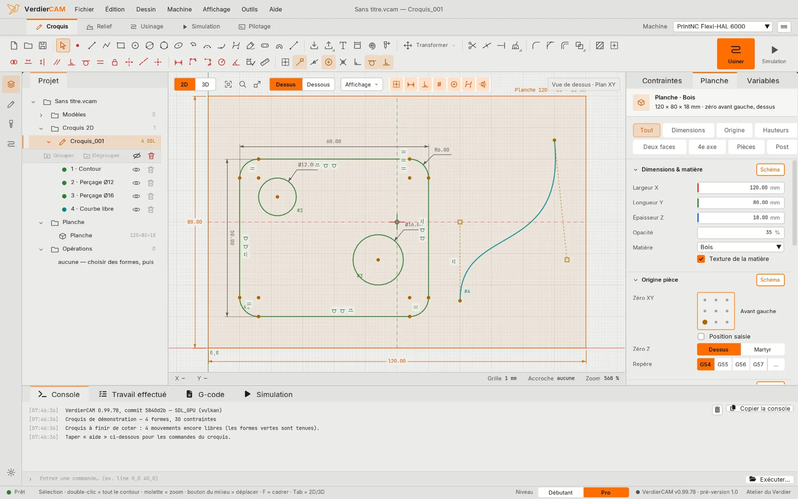
1 2 3 4 5 6 7 8 9 10 11- 1Les menus : Fichier, Édition, Dessin, Machine, Affichage, Outils, Aide.
- 2Les cinq ateliers : Croquis, Relief, Usinage, Simulation, Pilotage.
- 3Le ruban : les boutons de l'atelier ouvert.
- 4Le rail : il choisit ce que montre le panneau de gauche.
- 5Le panneau de gauche : ici, l'arbre du projet.
- 6La vue : la feuille de dessin en 2D, ou la pièce en 3D.
- 7Le panneau de droite : les réglages de ce qui est choisi. Au Croquis, il a trois onglets — Contraintes, Planche, Variables (ici ouvert sur Planche).
- 8Le bas : la console, le travail effectué, le G-code (le fichier d'ordres que la machine lit pour bouger), la simulation.
- 9La barre d'état : ce que le logiciel fait, et les gestes de la souris.
- 10Le gros bouton qui passe à l'étape suivante (ici : préparer l'usinage).
- 11Le numéro de VerdierCAM, suivi de « pré-version 1.0 ».
Tout en haut à droite de la barre d'onglets : la machine en service (un menu déroulant) et l'unité du document — mm, dans une petite case grise. VerdierCAM travaille toujours en millimètres : cotes, avances en mm/min.
En bas à droite de la barre d'état (repère 11) : le numéro de VerdierCAM, précédé d'un petit point de couleur. Ce point dit si verdiercam.fr a pu être joint pour savoir s'il existe une version plus récente : gris si la réponse n'est pas encore connue (pas de réseau, ou le site ne répond pas), vert si ta version est à jour, rouge s'il y en a une plus récente. Tant que le logiciel n'a pas atteint sa version 1.0, le numéro est suivi de · pré-version 1.0 : la pré-version de la future 1.0. Quand une version plus récente est publiée, son numéro complet s'ajoute à côté — par exemple · 0.99.81 disponible — et un clic ouvre une fenêtre qui dit ce que cette version apporte, avec un bouton pour la télécharger. Tout à fait à droite, « Atelier du Verdier » : le nom de l'atelier qui fait VerdierCAM, pas un réglage. Les fichiers, eux (document, G-code), ne gardent que le numéro seul.
4Les cinq ateliers#
Un atelier, c'est un métier. On passe de l'un à l'autre par les onglets en haut de la fenêtre (repère 2 ci-dessus). Le document est le même partout : ce qu'on dessine dans le Croquis est ce qu'on usine dans l'Usinage. Le Croquis et l'Usinage s'ouvrent en vue 2D ; la Simulation et le Pilotage, en vue 3D. En Relief, le croquis des contours reste lui toujours à plat (la touche Tab n'y change rien) ; une fois le relief façonné, il a sa propre vue 3D, choisie par des boutons au-dessus de la vue. Ailleurs, Tab bascule la vue entre 2D et 3D — jamais l'atelier.
Croquis
Dessiner la pièce, à la cote. Les contraintes et les cotes tiennent le dessin à ses mesures.
Tracer · Contraintes · Cotes · Modifier · Texte et import
Relief 0.9.461
Empiler des formes (depuis le croquis, un modèle 3D, une photo…) pour façonner un relief, avant qu'il devienne une opération d'usinage.
Usinage
Dire quoi couper, avec quelle fraise, à quelle profondeur et à quelle vitesse. Le parcours de la fraise se calcule tout seul.
Préparer · Régler · Familles 2D · Familles 3D · Outils et machine
Simulation
Voir la pièce se creuser à l'écran avant de toucher le bois. Lire les alertes, exporter le G-code.
Pilotage
Conduire une carte GRBL, grblHAL ou FluidNC — les cartes électroniques qui commandent une machine — depuis le PC : déplacer, prendre le zéro, lancer, arrêter. Pour une machine LinuxCNC — un logiciel de commande qui lit lui-même le fichier de G-code —, VerdierCAM se contente d'écrire ce fichier : rien n'est envoyé depuis le PC.
Tu peux cacher un atelier de la barre du haut (sauf le Croquis, toujours présent) : menu Affichage › Ateliers dans la barre, ou clic droit sur la barre des onglets, puis coche ou décoche. Un atelier caché reste joignable : son raccourci, ou le bouton qui y mène, le fait reparaître le temps qu'on s'en sert.
4.1Un coup d'œil sur chaque atelier#
Quatre vues d'ensemble de plus — le Croquis est la grande capture plus haut — le détail de chaque bouton est dans son propre chapitre.
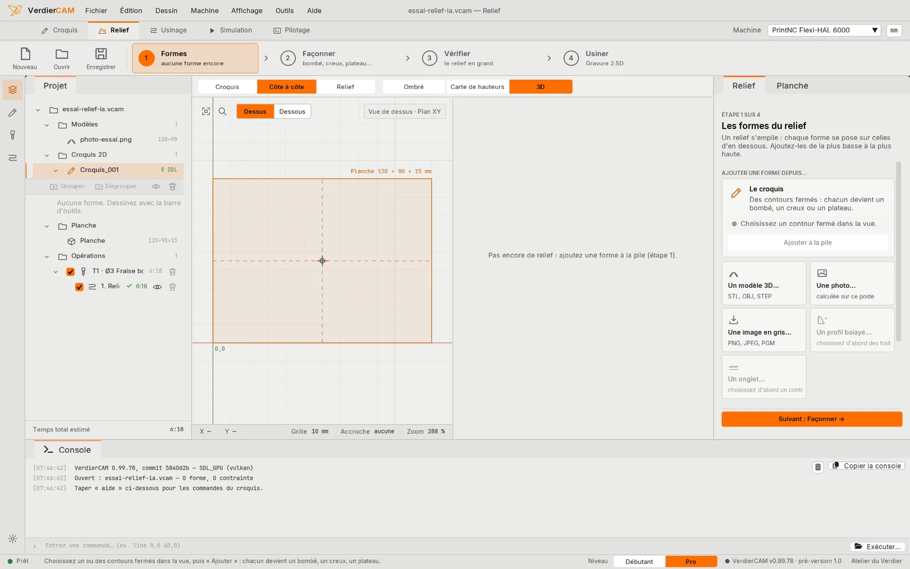
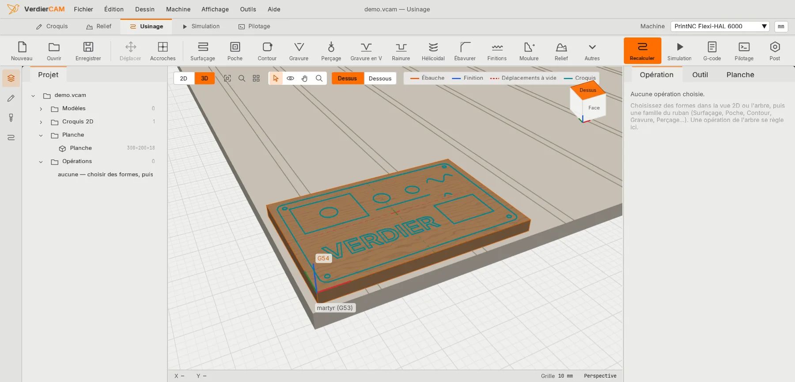
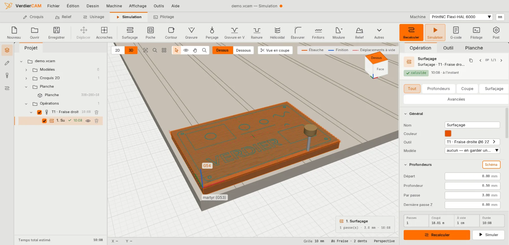
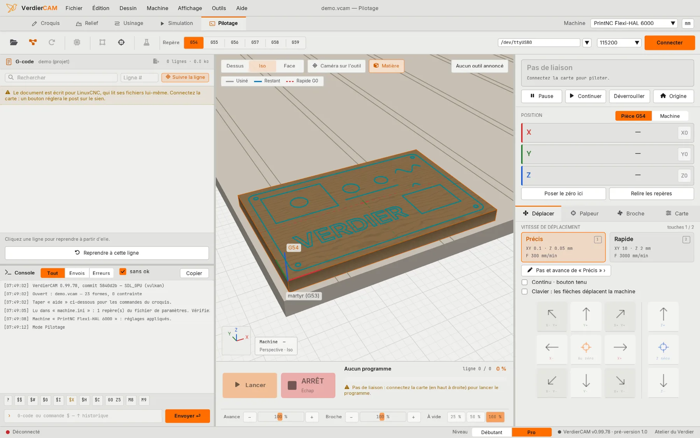
5Le chemin d'une pièce, du dessin au copeau#
Dessiner la pièce dans le Croquis, ou importer un dessin : SVG, DXF (des formats de fichier de dessin) ou FreeCAD (un autre logiciel de dessin). Tracer
La tenir à ses mesures avec des contraintes et des cotes. Contraintes
Décrire la planche (le brut) et le point zéro (l'origine). Préparer l'usinage
Créer les opérations : choisir une forme, cliquer un travail (poche, contour, perçage…) — ou, pour un relief sculpté, passer d'abord par l'atelier Relief. Les travaux
Régler chaque opération : fraise, profondeurs, vitesses. Régler
Simuler et lire les alertes. Simulation
Exporter le G-code pour la machine, ou piloter la machine depuis VerdierCAM. Pilotage
6Les deux niveaux : Débutant, Pro 0.99#
Au premier lancement, la fenêtre Bienvenue dans VerdierCAM propose deux façons de régler une opération d'usinage, du plus guidé au plus complet — les réglages et les calculs sont les mêmes partout, seul ce qui est montré change. Le Débutant simplifie le panneau d'usinage et les rubans (certains boutons, comme Déplacer ou Accroches, n'y sont pas ; au Pilotage, l'écran change aussi) ; le Pro montre tout. Pour changer plus tard : menu Aide, deux petits boutons sous Niveau (repris en bas à droite de la fenêtre) ; l'article Les deux niveaux expliqués… rouvre la fenêtre d'accueil. Le détail de chaque niveau, et de cette fenêtre, est au chapitre Prise en main.
Toutes les captures de ce manuel sont prises au niveau Pro, qui montre tout : si tu es en Débutant, il te manquera donc des boutons par rapport à certaines images. Ton tout premier lancement, lui, s'ouvre en Débutant, avec la fenêtre Bienvenue dans VerdierCAM par-dessus — elle revient à chaque lancement tant que tu n'as pas coché Ne plus afficher cette fenêtre au lancement. Si un écran de ce manuel ne ressemble pas tout à fait au tien, c'est sans doute ça.
Si tu as connu une version plus ancienne avec un niveau Intermédiaire : il a disparu, et tu es maintenant remis en Pro, qui montre tout ce qu'il montrait.
L'écran montre ce que le logiciel a calculé. Le bois montre ce que la machine a fait. Pour une première pièce, ou un nouveau réglage, essaie d'abord sur une chute.
Prise en main
Installer VerdierCAM, le premier lancement, les deux niveaux d'affichage, créer et ouvrir un document, les exemples livrés, les projets guidés, la licence.
Ce chapitre t'accompagne du téléchargement au premier dessin à l'écran : installer VerdierCAM, le lancer, comprendre la fenêtre Bienvenue et choisir un niveau d'affichage, puis créer, ouvrir et enregistrer un document — et te laisser guider, pas à pas, pour une première pièce.
1.1Installer VerdierCAM#
VerdierCAM n'a rien à installer au sens d'un programme Windows classique : sous Linux, tu reçois un seul fichier que tu lances directement ; sous Windows, un dossier à dézipper. Rien ne s'écrit dans le système.
Linux
Une AppImage — un seul fichier exécutable qui contient tout le programme. Après le téléchargement, rends-le exécutable (clic droit › Propriétés › Autorisations, ou chmod +x) puis double-clique dessus. Si ton bureau propose de l'ouvrir avec un « Monteur d'images disque », c'est que le droit d'exécution a été perdu au téléchargement : utilise l'archive .tar.gz fournie à côté, qui le garde. Il faut aussi le paquet fuse3 installé — un petit composant système dont l'AppImage se sert pour se monter et s'exécuter, présent sur la plupart des bureaux récents : sans lui, l'AppImage refuse de démarrer (« No suitable fusermount binary found »).
Windows
Une archive .zip pour Windows 10 et 11 (64 bits) à dézipper n'importe où. Le dossier obtenu contient VerdierCAM.exe — c'est lui qu'on lance — un LISEZMOI.txt, et un dossier programme qui porte tout le reste (ne le sépare pas de VerdierCAM.exe, et n'y touche pas). Rien ne s'installe. Au tout premier lancement, Windows peut afficher « Windows a protégé votre ordinateur » (SmartScreen, parce que le programme est encore peu téléchargé) : clique « Informations complémentaires » puis « Exécuter quand même ».
Raspberry Pi 5 0.99
Une version pour Raspberry Pi 5 — le petit ordinateur mono-carte souvent utilisé pour commander une CNC, à processeur ARM64 (une famille de processeurs différente de celle d'un PC) — existe, au même format qu'une AppImage Linux, compilée à part car un programme fait pour un PC ne tourne pas sur ce processeur. Essayée avec succès sur un vrai Pi 5, sous Debian 12 et LinuxCNC (un logiciel de commande de machine, détaillé au chapitre Pilotage), à deux conditions : un pilote graphique plus récent que celui livré par Debian (sinon VerdierCAM démarre, mais très lentement, faute de reconnaître la carte du Pi), et le paquet zenity installé — la fenêtre de fichiers que propose Debian par défaut — sans lui, VerdierCAM bascule de lui-même sur la sienne. Rien n'est encore garanti sur un Raspberry Pi 4 : jamais essayé.
Rien ne s'écrit ailleurs dans le système : VerdierCAM range seulement tes réglages (niveau, machine, fenêtres…) dans un dossier à toi — sous Linux ~/.config/Atelier du Verdier/VerdierCAM-ImGui, sous Windows %APPDATA%\Atelier du Verdier\VerdierCAM-ImGui.
Si VerdierCAM refuse ta carte graphique au lancement, un outil fait le tour du poste (carte, pilote, écrans, cartes de CNC branchées) et écrit un rapport à envoyer. Sous Windows : lance VerdierCAM-Diagnostic.exe, dans le dossier programme — il écrit son rapport VerdierCAM-diagnostic.txt à côté de l'exécutable. Sous Linux : ./VerdierCAM-….AppImage --diagnostic, qui écrit le même rapport dans /tmp/VerdierCAM-diagnostic.txt.
VerdierCAM dessine avec la technique Vulkan. Sous Linux, il faut une carte de 2012 ou après (Intel Haswell, AMD GCN, NVIDIA Kepler, ou plus récent) ; sous Windows, Intel 6e génération (2015) ou après, AMD Radeon HD 7000 (2012) ou après, NVIDIA GeForce 600 (2012) ou après — et dans les deux cas, un pilote à jour (le pilote livré avec l'ordinateur n'a souvent pas Vulkan). Sans aucun pilote Vulkan, VerdierCAM ne démarre pas : une fenêtre affiche ce qu'il faut installer, puis le logiciel se ferme. Installer le Vulkan logiciel de secours (sans carte compatible : mesa-vulkan-drivers ou vulkan-swrast selon la distribution) permet de démarrer quand même, mais lentement — pas de quoi travailler confortablement.
Le site verdiercam.fr porte les téléchargements et la procédure détaillée pour chaque système. Vérifie-la sur le site : elle peut évoluer plus vite que ce manuel.
1.2Lancer VerdierCAM, et la fenêtre Bienvenue#
Au tout premier lancement sur un ordinateur — et à chaque fois tant que tu n'as pas coché la case pour ne plus la voir — VerdierCAM ouvre la fenêtre Bienvenue dans VerdierCAM. Elle propose deux façons de travailler : Débutant et Pro.
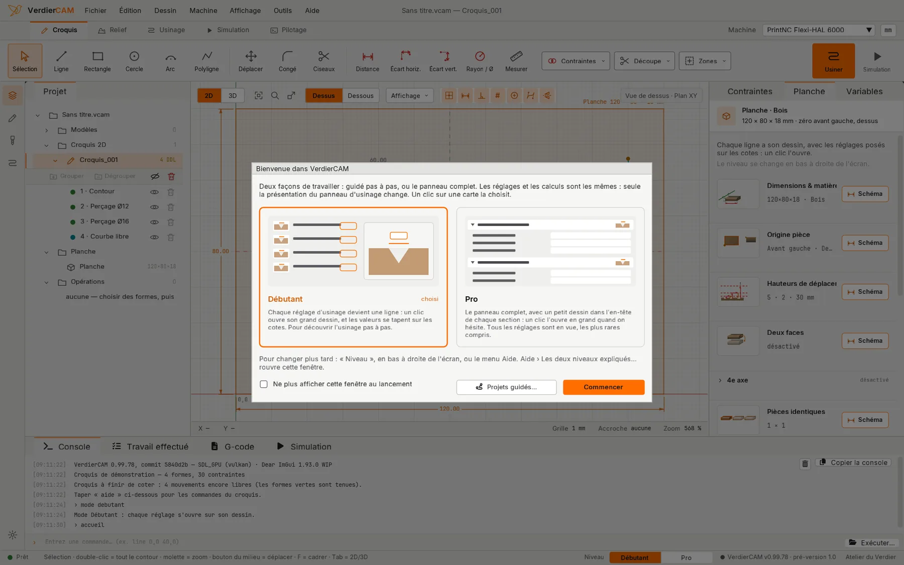
Cette fenêtre se rouvre à tout moment par Aide › Les deux niveaux expliqués….
1.3Les deux niveaux : Débutant, Pro#
Un niveau ne change ni les calculs ni les réglages : une pièce usinée en Débutant est identique à la même pièce réglée en Pro. Ce qui change, c'est la quantité d'écran que VerdierCAM te montre à la fois — surtout dans l'atelier Usinage, là où se trouvent les réglages les plus nombreux.
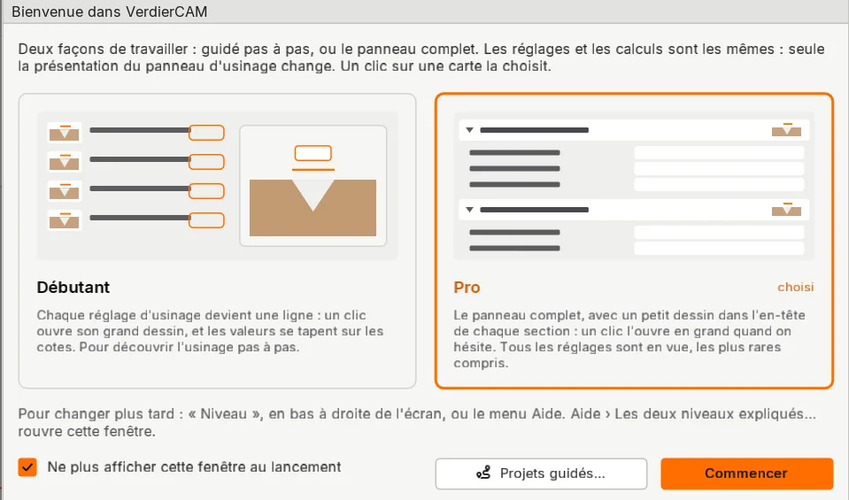
Débutant
Chaque réglage d'usinage tient sur une ligne. Un clic sur la ligne ouvre un grand dessin : tu tapes les valeurs directement sur les cotes du dessin, plutôt que dans une liste de champs. Pour découvrir l'usinage pas à pas, un réglage à la fois.
Pro
Le panneau complet, avec un petit dessin dans l'en-tête de chaque section : un clic l'ouvre en grand quand tu hésites sur un réglage. Tous les réglages sont en vue d'un coup d'œil, les plus rares compris — rien n'attend derrière un bouton « Plus de réglages ».
1.3.1Ce que le niveau Débutant cache#
Au-delà de la présentation du panneau d'usinage, le niveau Débutant simplifie aussi l'écran ailleurs, pour ne pas noyer un premier regard sous des boutons encore inutiles. Rien n'est perdu : passer en Pro fait réapparaître exactement les mêmes réglages, avec les mêmes valeurs.
Dans l'atelier Croquis, le ruban change de forme entière : au lieu des deux lignes d'icônes du niveau Pro, le Débutant tient sur une seule rangée de boutons nommés — Sélection, Ligne, Rectangle, Cercle, Arc, Polyligne, puis Déplacer, Congé, Ciseaux, puis Distance, Écart horiz., Écart vert., Rayon / Ø, Mesurer — suivie de trois menus repliés, Contraintes, Découpe et Zones, qui rangent le reste par leur nom. Ce ruban-là, contrairement au panneau d'usinage, ne montre vraiment qu'une partie des outils : tout ce qui n'est ni un de ces 14 boutons ni dans un des trois menus reste invisible en Débutant — Texte, Importer et Exporter, Ellipse, les cercles et l'arc par plusieurs points, Bézier, Crayon, l'oblong, tout le groupe Transformer sauf Déplacer (Tourner, les miroirs, Échelle, Dupliquer, les réseaux, Aligner), Chanfrein, Décaler, Combiner, la cote d'Angle et Compléter les cotes, et les huit Accroches. Ces fonctions se prennent par le menu Dessin ou par Ctrl+K (« Rechercher une commande ») sans changer de niveau, ou reviennent toutes dans le ruban en passant en Pro — voir le chapitre Modifier pour ce qu'elles font.
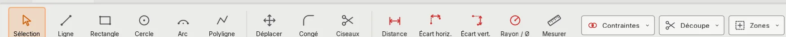
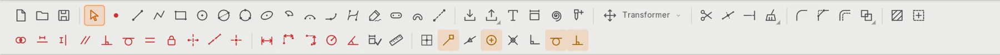
| En Débutant, tu ne vois pas… | Pourquoi, et où le retrouver |
|---|---|
| Au Croquis : Texte, Importer et Exporter, Ellipse, les cercles et l'arc par plusieurs points, Bézier, Crayon, l'oblong, le groupe Transformer (sauf Déplacer), Chanfrein, Décaler, Combiner, la cote d'Angle, Compléter les cotes, les Accroches | Le ruban Débutant ne garde que 14 boutons nommés et trois menus (voir au-dessus) ; le reste se prend par le menu Dessin ou Ctrl+K, sans changer de niveau. Détail de chaque outil au chapitre Modifier. |
| Les boutons Déplacer et Accroches du ruban Usinage | Ils réapparaissent dans ce ruban dès que tu passes en Pro (au Croquis, Déplacer reste visible même en Débutant, voir plus haut). |
| La plupart des familles dans le bouton Plus du ruban Usinage (ce bouton s'appelle Autres dès le niveau Pro) | Débutant n'en montre qu'une en clair (Gravure en V), les autres attendent derrière Plus ; Pro les montre toutes directement, la place du ruban permettant — voir les familles aux chapitres Familles 2D et Familles 3D. |
| Les boutons Pilotage et Post à droite du ruban Usinage | Le Pilotage reste accessible par son onglet ; les réglages du post-processeur — ce qui traduit les opérations d'usinage en G-code, le programme que lit la machine — au chapitre Simulation et G-code. |
| Au Pilotage : le bouton Réinitialiser, et le choix du repère | Le repère pièce — le point « zéro » que la machine retient, rangé dans un casier numéroté G54 — prend celui déjà choisi dans le document. Détail au chapitre Pilotage. |
| Au Pilotage : le bouton Mode test, les corrections « À vide » (la vitesse des déplacements sans la fraise qui coupe), le bouton « Pas et avance », la pastille « Limites logicielles », et l'onglet Carte du pupitre (3 onglets au lieu de 4) | Les réglages les plus rares du pilotage. Chapitre Pilotage. |
| Au Pilotage : le programme replié derrière « Voir les N lignes › », et la console réduite à un journal (sans saisie de commande) | Les N lignes de G-code ne disent rien à un débutant ; les opérations suffisent pour reprendre. Chapitre Pilotage. |
| Dans l'Usinage : la section « Zone et bords ouverts » d'une Poche, repliée (sauf si elle sert déjà) | Un réglage rare reste caché tant qu'il ne sert pas ; dès qu'une zone ou un bord ouvert existe déjà dans le document, la section s'ouvre d'elle-même. Pro la montre toujours dépliée. Chapitre Familles 2D. |
| À la Simulation : le bouton de réglages de l'aperçu | Cette commande reste cachée tant qu'aucune coupe ni G-code n'est affiché dans la vue ; Pro la montre toujours. Chapitre Simulation et G-code. |
| Dans le Relief : la tuile « Un profil balayé… », la tuile « Un onglet… » et la section « La carte » | Deux formes avancées (un profil fait glisser le long d'un tracé, un onglet) et le réglage de la carte de hauteurs restent cachés pour ne montrer d'abord que l'essentiel ; Pro les montre toutes. Chapitre Familles 3D. |
| Les réglages avancés de l'atelier Relief — là où une image ou un modèle 3D devient un bas-relief à sculpter — derrière son lien « Plus de réglages » | Les champs les plus rares du Relief attendent derrière ce lien ; Pro les montre tous d'emblée, sans lien à cliquer. Chapitre Familles 3D. |
1.3.2Changer de niveau#
Le niveau se choisit en bas à droite de l'écran, dans la barre d'état, à côté du mot Niveau : deux boutons toujours visibles, quel que soit l'atelier ouvert. On le change aussi par Aide › Niveau, qui propose les mêmes deux boutons.
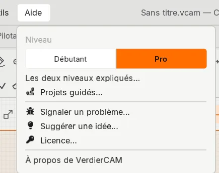
1.4Créer, ouvrir, enregistrer un document#
Un document VerdierCAM porte l'extension .vcam : il garde le croquis, la planche, les opérations d'usinage et leurs réglages — tout ce qu'il faut pour reprendre le travail plus tard. Ces gestes vivent dans le menu Fichier. Sous Windows, glisser un .vcam sur VerdierCAM.exe l'ouvre directement, sans passer par le menu.
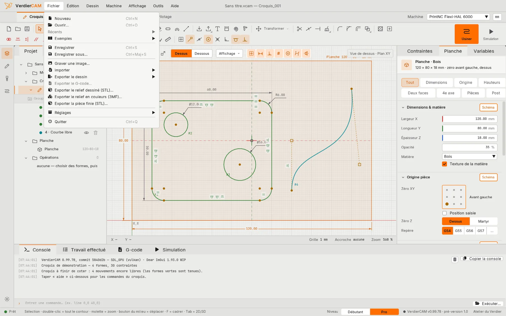
Nouveau Ctrl+N
Ferme le document ouvert et en commence un vide. La planche garde ses dimensions (largeur, longueur, épaisseur) ; seule la matière repart du bois, et le dessin, la vue et les opérations repartent de zéro.
S'il reste des modifications non enregistrées, VerdierCAM te le demande d'abord (voir plus bas).
Menu Fichier
Ouvrir… Ctrl+O
Ouvre la fenêtre de fichiers pour choisir ce que tu veux reprendre.
Elle n'ouvre pas que des .vcam : un dessin fait ailleurs — .svg et .dxf, deux formats de dessin plat que beaucoup de logiciels de dessin et de découpe lisent et écrivent, ou un fichier FreeCAD — s'importe comme un dessin ; un G-code (le programme que lit la machine) se charge pour être simulé ; un script — un petit texte qui dessine la pièce par le calcul, en .vcs — se rejoue ; un modèle 3D part vers l'atelier Relief ; une image ouvre la fenêtre Que faire de cette image ?, avec trois réponses — Graver l'image, Image de fond ou Relief — et un bouton Annuler. Voir la fenêtre de fichiers ci-dessous.
Menu Fichier
Récents
Un sous-menu avec les dix derniers documents ouverts, par leur nom de fichier ; le chemin complet s'affiche en survolant. Grisé tant qu'aucun document n'a encore été ouvert.
Menu Fichier
Exemples
Un sous-menu avec les documents livrés avec VerdierCAM, pour voir tout de suite des pièces réelles plutôt qu'un écran vide. Voir plus bas.
Menu Fichier
Enregistrer Ctrl+S
Réécrit le document à son emplacement actuel, sans rien demander. Pour un document jamais enregistré, c'est Enregistrer sous… qui s'ouvre à la place, puisqu'il n'y a pas encore d'emplacement.
Menu Fichier
Enregistrer sous… Ctrl+Maj+S
Ouvre la fenêtre de fichiers pour choisir un nom et un dossier — pour garder une copie à part, par exemple avant un essai risqué. En haut : un aperçu du document, le champ Nom du document, et Dans qui montre le dossier choisi. Un bouton Nouveau dossier en crée un sur place (tape son nom, puis Créer). Le bouton du bas dit Remplacer si un fichier du même nom existe déjà à cet endroit (surligné en jaune dans la liste), Enregistrer sinon.
Menu Fichier
Quitter Ctrl+Q
Ferme VerdierCAM. S'il reste des modifications non enregistrées, la même question qu'avec Nouveau s'affiche d'abord.
Menu Fichier
Quitter, ouvrir un autre document ou cliquer Nouveau alors que le document a changé depuis son dernier enregistrement fait apparaître cette question. Un petit point orange à côté du nom du document, en haut de l'écran, te prévient déjà qu'il y a quelque chose à enregistrer.
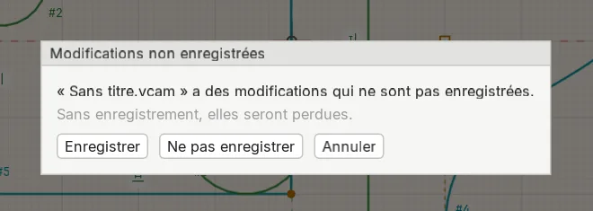
1 2 3- 1Enregistrer — enregistre, puis continue le geste demandé.
- 2Ne pas enregistrer — continue le geste demandé, les modifications sont perdues.
- 3Annuler — reste sur le document, rien ne se passe.
1.4.1Le secours automatique, si l'ordinateur plante#
Un plantage du logiciel, une coupure de courant, un redémarrage forcé de l'ordinateur : tout document qui avait des changements non enregistrés à cet instant semble perdu. VerdierCAM garde en coulisses une copie de travail pour que ce ne soit jamais vraiment le cas.
Tant que ton document a des changements non enregistrés, VerdierCAM réécrit une copie de secours toutes les minutes, dans un dossier caché de l'atelier (secours/) — tu ne la vois jamais, tu n'as rien à faire pour qu'elle existe. Dès que tu cliques Enregistrer, ou que tu quittes proprement VerdierCAM, cette copie disparaît : elle ne sert plus.
Si le programme s'arrête sans prévenir — plantage, coupure, redémarrage forcé — la copie, elle, reste sur le disque. Au lancement suivant, VerdierCAM vérifie si une séance précédente ne s'est pas manifestée depuis plus de 3 minutes (le signe qu'elle s'est arrêtée brutalement, et pas simplement qu'une autre fenêtre de VerdierCAM tourne en ce moment) et, si c'est le cas, propose de reprendre ce travail :
Le nom du document et l'heure de la dernière copie s'affichent, avec trois choix : Rouvrir (le document revient modifié, à son emplacement d'origine — Ctrl+S l'y enregistre pour de bon), Jeter (la copie de secours est supprimée, rien n'est repris) et Plus tard (la copie reste disponible ; la question revient au prochain lancement).
Cette fenêtre ne peut apparaître qu'après un arrêt anormal : fermer VerdierCAM normalement, ou simplement enregistrer, supprime déjà la copie de secours. Un document que tu n'as jamais modifié n'en crée aucune — il n'y a rien à secourir.
1.5La fenêtre de fichiers de VerdierCAM#
Pour Ouvrir, Enregistrer sous et importer, VerdierCAM peut utiliser la fenêtre de fichiers habituelle de ton bureau (Windows, GNOME, KDE…), ou la sienne, dessinée à sa charte et identique sur tous les systèmes — utile sur une machine où celle du système ne s'ouvre pas (un Raspberry Pi, une image dédiée à la CNC).
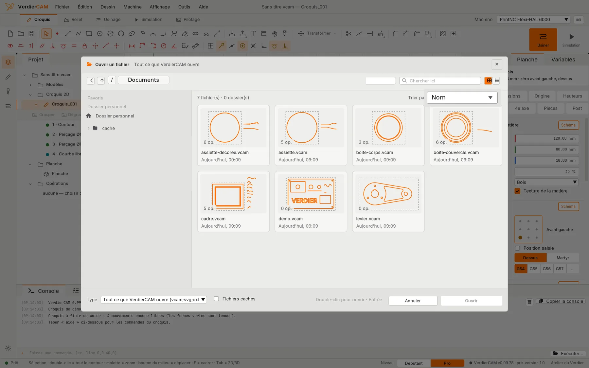
1 2 3 4 5 6 7.vcam : chaque fichier montre sa vignette et son nombre d'opérations d'usinage ; une image montre sa miniature.- 1Précédent et dossier parent — la flèche vers la gauche, puis la flèche vers le haut, pour remonter.
- 2Le chemin, en morceaux cliquables ; un clic dans le fond, à droite des morceaux, permet de le taper ou de le coller.
- 3Chercher ici — filtre les fichiers du dossier affiché par leur nom.
- 4Bascule vignettes / liste.
- 5Le panneau de gauche : Favoris, puis Dossier personnel — et, sur un poste où des disques ou des partages réseau sont montés, une section Supports les liste en dessous.
- 6Une vignette : le contenu du document, et son nombre d'opérations.
- 7En bas de la fenêtre : le choix du Type de fichier affiché, une case Fichiers cachés, Annuler et Ouvrir.
En haut de la liste, Trier par choisit l'ordre — Nom, Modifié récemment (l'ordre de départ) ou Taille. Un document choisi dans la liste ouvre, à droite, un panneau d'aperçu : son dessin en grand, sa date, et selon le type ses traits, sa planche, ses opérations, ses outils, ou — pour une image — ses pixels. Le panneau de gauche garde, sous les Favoris, une entrée Récents avec les derniers dossiers ouverts ; un bouton Oublier les retire tous d'un coup (les documents, eux, restent sur le disque). En vue Liste, quatre colonnes : Nom, Usinage (le nombre d'opérations), Taille, Modifié.
| Type (en bas de la fenêtre Ouvrir) | Extensions |
|---|---|
| Tout ce que VerdierCAM ouvre | tout ce qui suit, réuni |
| Documents VerdierCAM | .vcam |
| Dessins à importer | .svg, .dxf, .fcstd (FreeCAD) |
| G-code à simuler | .ngc, .nc, .gcode, .gc, .tap, .cnc |
| Scripts | .vcs |
| Modèles 3D | .stl, .obj, .step, .stp |
| Images | .png, .jpg, .jpeg |
| Tous les fichiers | aucun filtre : tout ce que contient le dossier |
Menu Outils › Préférences…, onglet Général, réglage Fenêtre de fichiers : Celle du système (par défaut) ou Celle de VerdierCAM. Si celle du système ne s'ouvre pas, VerdierCAM prend la sienne de lui-même et te le dit dans le journal, en bas de l'écran.
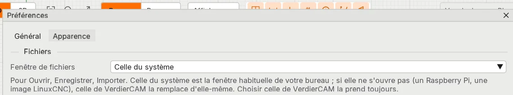
1.5.1Une troisième version : choisir un dossier, pas un fichier#
Cette même fenêtre sait aussi ne faire choisir qu'un dossier, sans aucun fichier à sélectionner dedans : le bouton Choisir… du réglage Vos pièces — Outils › Préférences… › Général, détaillé au chapitre L'écran, pièce par pièce — l'ouvre ainsi, tout comme le Choisir… du Dossier de l'IA, chapitre Annexes. Son titre devient Choisir un dossier, son bouton du bas Choisir ce dossier ; un dossier n'ayant pas de « type » de fichier, le choix de Type et le champ Chercher ici disparaissent tous les deux.
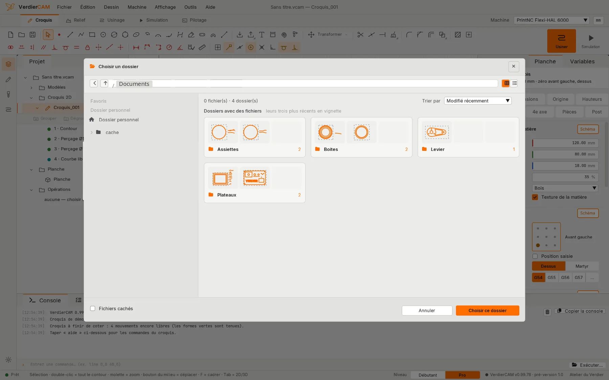
1 2 3 4 5 6- 1Le titre — Choisir un dossier — dit tout de suite qu'on attend un dossier, pas un fichier.
- 2Le même chemin qu'à l'Ouvrir, en morceaux cliquables.
- 3Bascule vignettes / liste, comme à l'Ouvrir.
- 4Dossier personnel, Favoris puis Supports : le même panneau de gauche qu'à l'Ouvrir.
- 5Dossiers avec des fichiers — leurs trois plus récents en vignette, et leur nombre ; un dossier qui n'en a toujours aucun se range ensuite sous Autres dossiers (ou simplement Dossiers, si aucun n'en a).
- 6Choisir ce dossier retient le dossier affiché (ou le sous-dossier choisi dans la liste) ; Annuler, à sa gauche, referme sans rien changer.
1.6Documents récents et exemples livrés#
Pour ne pas débuter sur un écran vide, VerdierCAM livre sept documents tout faits, accessibles par Fichier › Exemples.
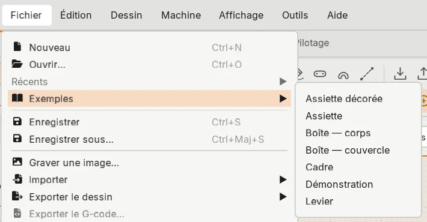
| Exemple | Ce qu'il montre |
|---|---|
| Démonstration | Une planche de 300 × 200 mm : une poche avec îlot, des trous, une hélice, un filetage, une rainure, une texture, une vague, du texte « VERDIER » — un peu de tout. |
| Assiette · Assiette décorée | Une pièce ronde en révolution, nue puis décorée. |
| Boîte — corps · Boîte — couvercle | Une boîte cylindrique à couvercle vissé : le corps et le couvercle se filetent l'un dans l'autre. |
| Cadre | Un cadre à moulure. |
| Levier | Une pièce mécanique simple, contours et perçages. |
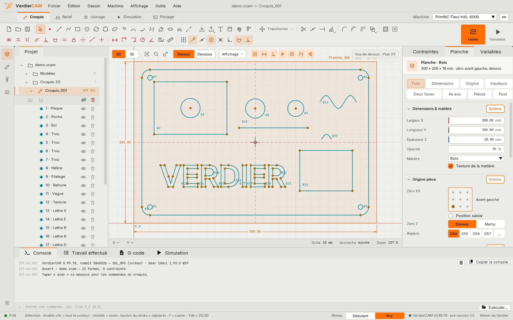
Un exemple s'ouvre « sans chemin » : Enregistrer se comporte comme Enregistrer sous… et te demande où le garder, puisque le dossier d'origine est en lecture seule. Un exemple n'entre pas non plus dans les Récents.
1.7Les projets guidés 0.99#
Pour une toute première pièce, VerdierCAM peut t'accompagner étape par étape : une petite fenêtre dit quoi faire, entoure d'un trait orange qui bat le bouton à cliquer, et passe à la suite toute seule dès que c'est fait. Tu fais tout toi-même — rien ne se dessine ni ne se règle à ta place — et tu peux t'arrêter à tout moment.
Projets guidés…
Ouvre la liste des huit projets guidés, chacun avec son nombre d'étapes et un bouton Commencer.
Menu Aide · fenêtre Bienvenue
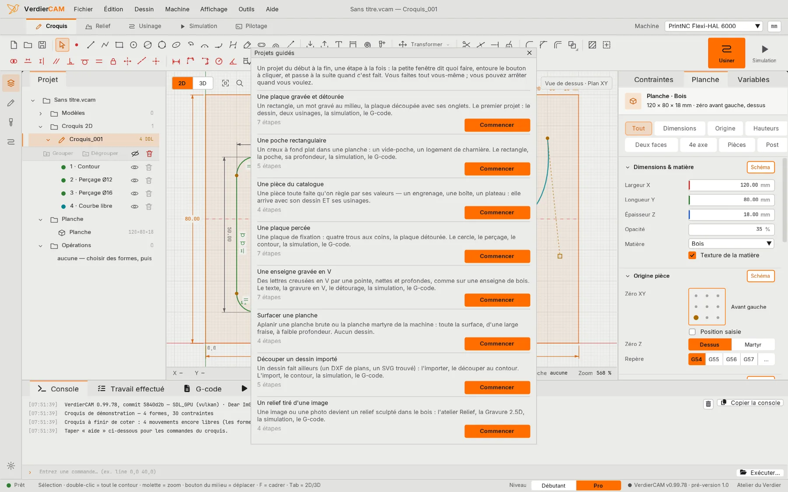
| Projet | Ce qu'il apprend | Étapes |
|---|---|---|
| Une plaque gravée et détourée | Rectangle, texte gravé, détourage au contour — le premier projet, celui qui montre tout le parcours. | 7 |
| Une poche rectangulaire | Un creux à fond plat : vide-poche, logement de charnière. | 5 |
| Une pièce du catalogue | Insérer une pièce paramétrique toute faite, qui arrive avec son dessin ET ses usinages. | 4 |
| Une plaque percée | Des cercles, un perçage à plusieurs trous choisis ensemble, un détourage après coup. | 7 |
| Une enseigne gravée en V | Du texte en police pleine, la Gravure en V, le détourage. | 7 |
| Surfacer une planche | Un usinage sans aucun dessin : toute la planche aplanie d'une large fraise. | 4 |
| Découper un dessin importé | Importer un SVG ou un DXF fait ailleurs, puis le détourer au contour. | 5 |
| Un relief tiré d'une image | L'atelier Relief, une image en niveaux de gris, la Gravure 2.5D qui en sort. | 4 |
1.7.1Un parcours de bout en bout : la plaque gravée#
Toutes les étapes se ressemblent dans leur fonctionnement ; voici celles du premier projet, « Une plaque gravée et détourée », pour comprendre le principe une fois pour toutes.
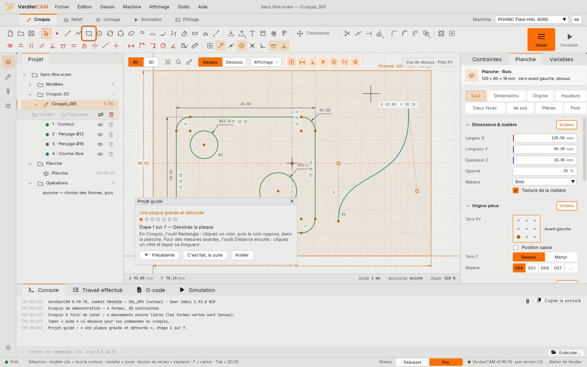
1 2- 1Le bouton à cliquer, entouré — ici l'outil Rectangle du ruban Croquis.
- 2La fenêtre Projet guidé, en bas à gauche de l'écran : le nom du projet, les sept points de la progression (les étapes faites en vert, l'étape en cours en orange, les suivantes creuses), le texte de l'étape, et trois boutons.
L'étape se suit d'elle-même. Dessine le rectangle demandé : dès que VerdierCAM voit la forme apparaître dans le croquis, un Fait. s'affiche une seconde, puis l'étape suivante commence — sans qu'il y ait rien à cliquer dans la fenêtre.
« C'est fait, la suite » rattrape ce que VerdierCAM ne peut pas voir. Une forme déjà là avant l'étape, ou un geste fait ailleurs (une pièce envoyée au pilotage, par exemple) : ce bouton passe à la suite à la main (« C'est fait » seul, sans « la suite », à la toute dernière étape).
← Précédente revient à l'étape d'avant, pour relire la consigne — rien n'est défait dans le dessin. Grisé à la première étape : il n'y a pas d'avant.
Arrêter ferme le projet guidé à tout moment : le document reste exactement comme il est, tu continues seul. Rouvrir Projets guidés… en propose un autre, ou le même depuis le début — et cliquer Nouveau (menu Fichier) relance l'étape en cours sur le document vidé. La croix de la fenêtre fait la même chose qu'Arrêter : ce sont les trois seuls boutons de la fenêtre Projet guidé, avec C'est fait, la suite vu plus haut.
Si l'étape demande un bouton d'un onglet que tu n'as pas ouvert (Croquis ou Usinage, en haut), la fenêtre le dit : « Le bouton à cliquer n'est pas à l'écran : passez par l'onglet qui le porte. » Ouvre cet onglet, et le trait orange apparaît. Le même message s'affiche en Débutant pour un outil que ce niveau ne montre pas dans le ruban — l'outil Texte de l'étape suivante, par exemple : prends-le alors par le menu Dessin (article Texte) ou par Maj+T, le message disparaît dès que la forme est dessinée.
Pour cette plaque, les sept étapes sont : dessiner le rectangle, écrire un mot avec l'outil Texte (au menu Dessin ou par Maj+T en Débutant, puisqu'il n'est pas dans ce ruban-là), passer à l'onglet Usinage, graver le texte (Gravure ou Gravure en V), détourer le contour (Contour), regarder la Simulation, puis écrire le G-code — les deux dernières étapes, communes à chaque projet guidé, passent par les ateliers détaillés aux chapitres Simulation et G-code et Pilotage.
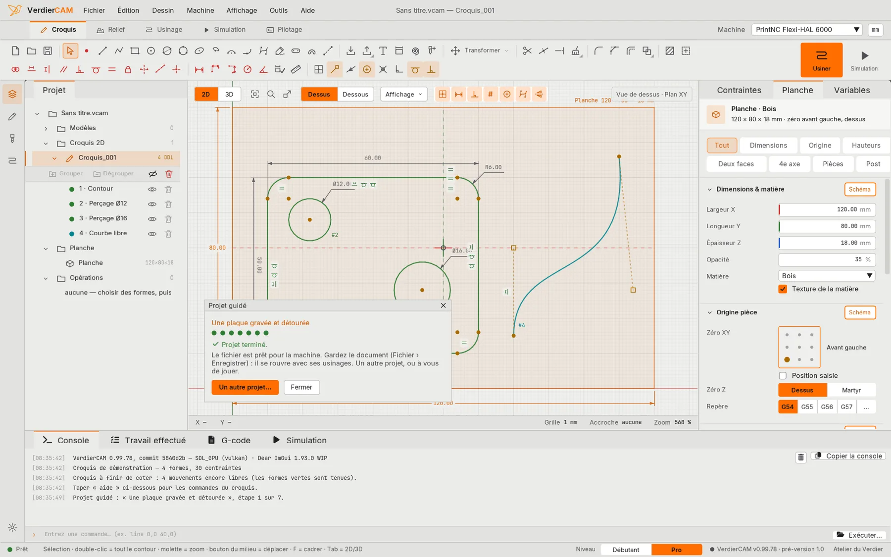
Les sept autres projets suivent le même principe, avec leurs propres étapes — par exemple « Gravez en V » (dans le bouton Plus du ruban Usinage en Débutant, Autres en Pro, si la famille n'est pas déjà visible), ou « Créez le relief » qui passe par l'atelier Relief. La fenêtre Projet guidé dit chaque étape en clair : lis-la, elle suffit.
Comme Exécuter un script… et Intelligence artificielle (MCP)…, détaillées au chapitre L'écran, pièce par pièce, les fenêtres Projets guidés et Projet guidé flottent toujours par-dessus le reste de l'écran : prends-les par leur barre de titre pour les poser où tu veux. Rien à régler de ton côté.
1.8La licence et la période d'essai#
VerdierCAM se protège par un simple fichier de licence, envoyé par courriel après achat — pas de clé à taper à chaque lancement, pas de compte en ligne. La vente est ouverte : un exemplaire neuf commence par quinze jours d'essai, décomptés depuis le tout premier lancement sur ton ordinateur.
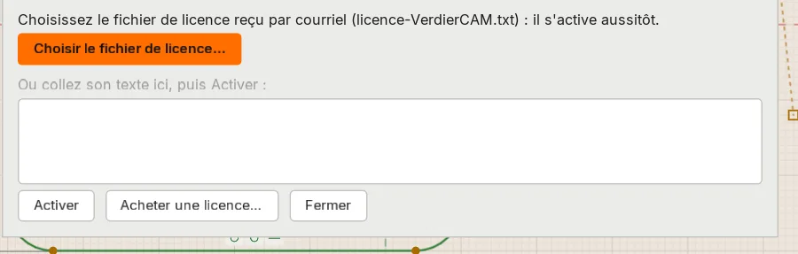
1 2- 1Choisir le fichier de licence… — reçu par courriel, il s'active aussitôt choisi. On peut aussi coller son texte dans la zone plus bas, puis Activer.
- 2Acheter une licence… — ouvre la page d'achat du site dans le navigateur.
Licence…
Affiche l'état de la licence, et permet d'en poser une : par le fichier reçu par courriel (Choisir le fichier de licence…), ou en collant son texte puis Activer. Le bouton Acheter une licence… ouvre la page d'achat du site ; Fermer referme la fenêtre. Une fois posée, une licence valide affiche aussi ton nom, ton courriel et son numéro, sous la ligne d'état.
Menu Aide
Le texte de cette fenêtre (et celui d'À propos de VerdierCAM) dit l'état réel, en toutes lettres :
| État | Ce que ça veut dire | Dessin, simulation | G-code, envoi à la machine |
|---|---|---|---|
| Essai : N jour(s) restant(s). | Avant l'achat, pendant les 15 premiers jours. | oui | oui |
| Essai terminé… | 15 jours passés, sans licence posée. | oui | bloqué |
| Licence de X — mises à jour jusqu'au DATE. | Licence valide : ton nom, ton numéro, et jusqu'à quand les nouvelles versions te sont dues. | oui | oui |
| Licence de X : ses mises à jour ont pris fin le DATE, avant cette version (DATE DE SORTIE). Renouvelez-les, ou gardez la version d'avant. | Licence valide, mais cette version de VerdierCAM est sortie après la fin de tes mises à jour — renouvelle-les, ou garde la version d'avant (voir Mettre à jour). | oui | bloqué (avec cette version) |
| Licence de X (N° NUMÉRO) révoquée… | Partagée ou déclarée volée — contacte contact@verdiercam.fr. | oui | bloqué |
| Pas de licence : la vente n'est pas encore ouverte. | N'arrive pas sur un exemplaire vendu : tout est permis, sans limite. | oui | oui |
Le compte à rebours de l'essai part du tout premier lancement de VerdierCAM sur ton ordinateur, pas de l'ouverture d'un document en particulier. Vérifie toujours l'état réel dans ta fenêtre Licence…, qui dit la vérité du moment.
1.8.1Mettre à jour#
VerdierCAM vérifie, au lancement, si une version plus récente est publiée sur verdiercam.fr. Le résultat s'affiche en bas à droite de l'écran, à côté du numéro de version : une pastille verte (à jour), rouge (une nouvelle version existe — le numéro de version prend alors la forme « VerdierCAM v… · X disponible ») ou grise (impossible de savoir — pas de réseau, ou le site ne répond pas).
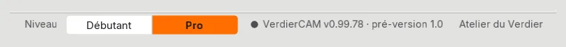
VerdierCAM v… · pré-version 1.0
Un clic ouvre la fenêtre Nouvelle version, qui dit ce qu'apporte la nouvelle version et propose Télécharger la … (N Mo) — dans le dossier Téléchargements, après vérification de son empreinte — ; une fois le téléchargement fini, Lancer la … (Linux) ou Ouvrir le dossier (Windows). Un bouton Plus tard referme la fenêtre sans rien télécharger ; elle se rouvrira au prochain lancement si la version publiée est toujours plus récente. Tes réglages, tes outils et ta licence sont gardés d'une version à l'autre.
Barre d'état, en bas à droite
Si tes mises à jour sont terminées, la fenêtre Nouvelle version le dit avant de télécharger, et propose Renouveler mes mises à jour… — tu peux aussi télécharger quand même, et garder la version d'avant qui continue de fonctionner avec ta licence.
1.8.2À propos de VerdierCAM#
Aide › À propos de VerdierCAM résume en une fenêtre le numéro de version, une phrase sur ce que fait le logiciel, l'éditeur (Atelier du Verdier), le même texte d'état qu'au menu Licence…, et une référence à donner si tu signales un défaut (par Aide › Signaler un problème…) : elle permet de retrouver exactement de quelle version il s'agit.
L'écran, pièce par pièce
Chaque zone de la fenêtre, la souris dans la vue, chaque menu de la barre, Rechercher une commande, le clic droit, la console, Annuler/Refaire, les Préférences, Aide.
Avant d'apprendre à dessiner ou à usiner, regarde où chaque chose vit à l'écran. Ce chapitre fait le tour complet de la fenêtre de VerdierCAM — chaque barre, chaque menu, la souris dans la vue — pour que tu saches toujours où chercher. Les outils de dessin, les réglages d'usinage ou le Pilotage ont chacun leur propre chapitre : ici, seulement la mécanique commune à tout le logiciel.
2.1La fenêtre, zone par zone#
VerdierCAM s'ouvre toujours sur le même squelette, quel que soit l'atelier (Croquis, Relief, Usinage, Simulation ou Pilotage — vois Avant-propos) choisi en haut. Seul ce qu'il y a DANS les panneaux change d'un atelier à l'autre.
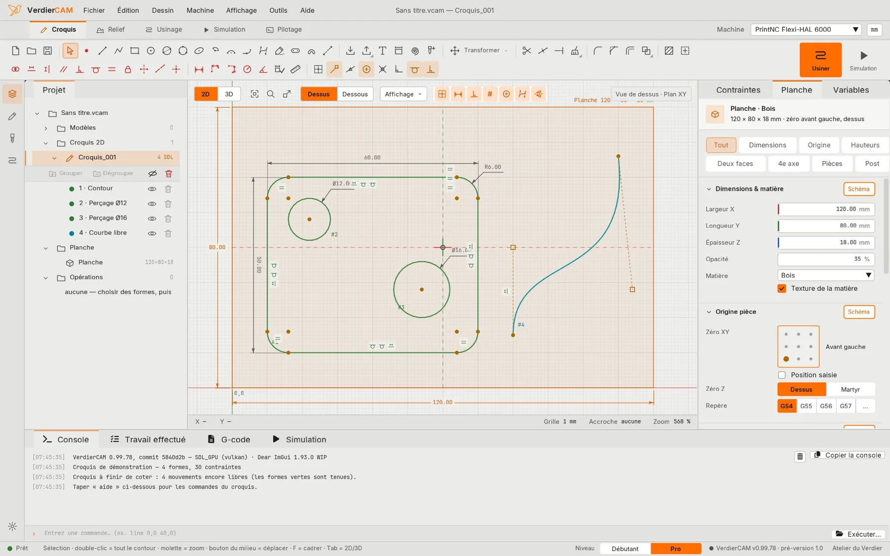
1 2 3 4 5 6 7 8- 1La barre de titre : le logo, les 7 menus, le nom du document — détail plus bas.
- 2La barre des ateliers : les onglets Croquis / Relief / Usinage / Simulation / Pilotage, et la machine en service à droite.
- 3Le ruban : les boutons de l'atelier ouvert — un chapitre par atelier.
- 4Le rail : choisit ce que montre le panneau de gauche — plus bas.
- 5La vue : la feuille en 2D, ou la pièce en 3D — la souris y navigue plus bas, sa propre barre d'outils et sa bande de coordonnées sont juste après.
- 6Le panneau de droite : les réglages de ce qui est ouvert ou choisi — un onglet par thème, qui change avec l'atelier (détail plus bas). Au Croquis, trois onglets : Contraintes, Planche, et Variables 0.99 — les valeurs nommées que des cotes peuvent suivre, détaillées au chapitre Les cotes.
- 7Le bas : Console, Travail effectué, G-code, Simulation, en onglets — plus bas.
- 8La barre d'état : ce que fait l'outil en cours, et le niveau Débutant/Pro — plus bas.
2.1.1La barre de la vue, et sa bande de coordonnées#
Deux bandeaux posés SUR la vue elle-même — ils restent à elle, pas au panneau du bas :
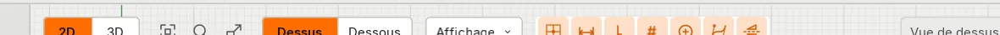
En Usinage et en Simulation, une petite barre à part s'y ajoute : Sélection · Orbite · Panoramique · Zoom, pour piloter la vue au clic plutôt qu'à la souris — détail plus bas.
2.1.2La barre de titre#
Toute en haut : le logo de VerdierCAM, le nom « Verdier » en noir et « CAM » en orange, puis les 7 menus de la barre (section plus bas). Au milieu, le nom du document ouvert et le mode courant (par exemple « Sans titre.vcam — Croquis_001 ») ; un point orange apparaît juste après dès que le document a des modifications non enregistrées, et disparaît au prochain Enregistrer.
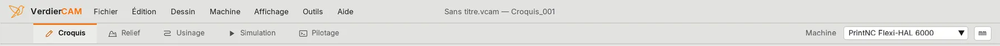
Sur ton écran, trois petits boutons (réduire, agrandir, fermer) terminent la barre de titre à droite — absents seulement si ta fenêtre garde la barre de ton système (Windows ou Linux) plutôt que celle de VerdierCAM. Cliquer la croix pose d'abord la question Enregistrer les modifications ? si le document a changé — jamais de fermeture brutale.
2.1.3La barre des ateliers#
Juste sous la barre de titre, cinq onglets : Croquis, Relief, Usinage, Simulation, Pilotage. Un clic bascule le document entier sur cet atelier ; Croquis et Usinage s'ouvrent en vue 2D, Simulation et Pilotage en vue 3D (Tab passe de l'une à l'autre — sauf au Relief, qui reste toujours à plat en 2D). C'est le même document partout : ce qui est dessiné au Croquis est ce qu'on usine dans l'Usinage.
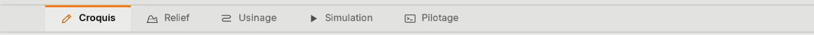
Tout à droite de cette barre : le nom de la machine en service (un menu déroulant — voir le menu Machine, plus bas) et une petite pastille mm : l'unité du document, toujours le millimètre (les cotes du dessin, les avances de l'usinage en mm/min). Elle ne se règle pas ici ; elle ne fait que le rappeler, pour ne jamais confondre un plan avec un autre venu d'un pays en pouces.
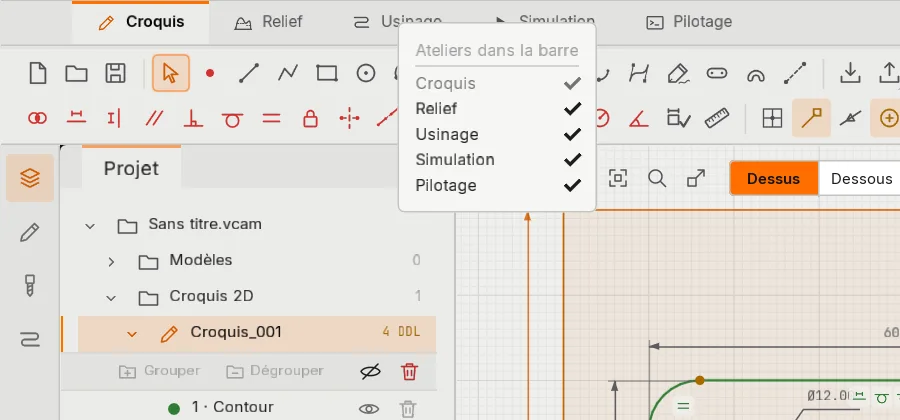
Un clic droit sur cette barre (ou Affichage › Ateliers dans la barre) ouvre la liste des cinq ateliers, chacun avec sa case : décoche celui qui t'encombre (tu ne fais jamais de Relief, par exemple). Croquis reste toujours là — c'est là qu'on dessine. Un atelier caché reste joignable : son raccourci, ou le bouton qui y mène depuis ailleurs, le fait réapparaître le temps qu'on s'en sert.
2.1.4Le rail#
La colonne étroite tout à gauche. Quatre icônes choisissent ce que montre le panneau de gauche, juste à côté — jamais plusieurs à la fois — et une cinquième, tout en bas, ouvre un panneau à part :
Projet
L'arbre du document, en quatre dossiers : Modèles (les modèles 3D ou images en relief importés, vide le plus souvent), Croquis 2D (le croquis et ses formes, DDL compris — déplié, les mêmes boutons Grouper / Dégrouper / œil / corbeille que le clic droit sur l'arbre), Planche et Opérations (l'arbre des opérations d'usinage, dans leur ordre). Celui qui s'ouvre au lancement.
Croquis
Le bilan du croquis : son arbre de formes, le nombre de contraintes posées (et de redondantes s'il y en a), puis, tout en bas, les libertés restantes — en DDL (degrés de liberté : ce qui peut encore bouger). 0 DDL = le croquis est entièrement tenu. Détail des contraintes, chapitre Les contraintes.
Outils
Les fraises du programme en cours, chacune avec son nombre d'opérations, puis toute la bibliothèque d'outils en dessous ; un clic sur une fraise l'ouvre dans la bibliothèque. Bouton Ouvrir la bibliothèque… en bas — détail au chapitre Outils et machine.
Parcours
L'arbre des opérations d'usinage, dans leur ordre, puis deux boutons — Tout recalculer (relance tous les parcours) et Exporter le G-code… (grisé tant qu'aucun programme n'est prêt) — et, si un parcours existe, le temps total estimé. Détail au chapitre Préparer l'usinage.
Réglages
Tout en bas du rail, à part des quatre autres : un panneau qui lui est propre, pas celui de Projet. Il rassemble, à portée de main, la machine en service (son nom, sa course, sa plage de broche), trois boutons — Réglages de la machine…, G-code de l'atelier…, Bibliothèque d'outils… — puis Couleurs…, la Langue, et Rétablir la disposition des panneaux. Tout cela existe déjà dans les menus Machine et Affichage : ce panneau n'est qu'un raccourci.
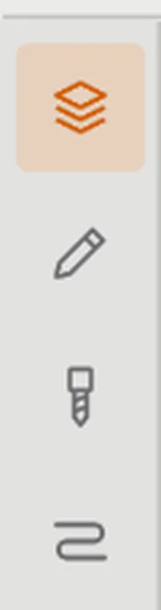
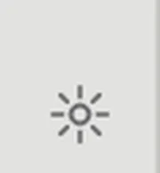
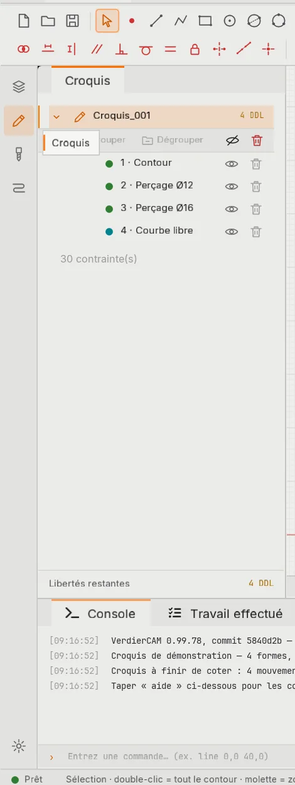
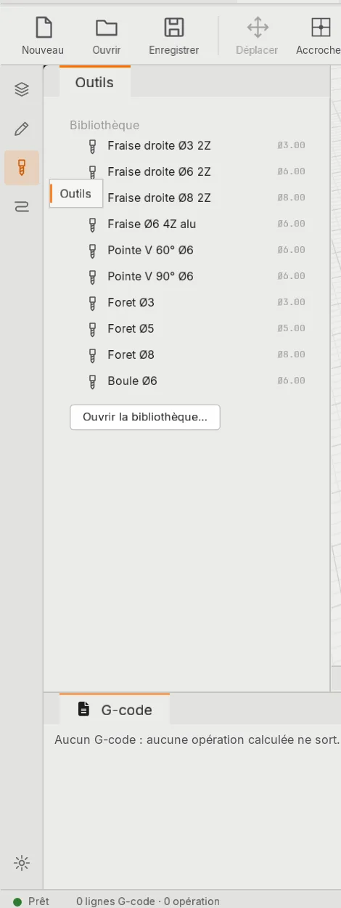
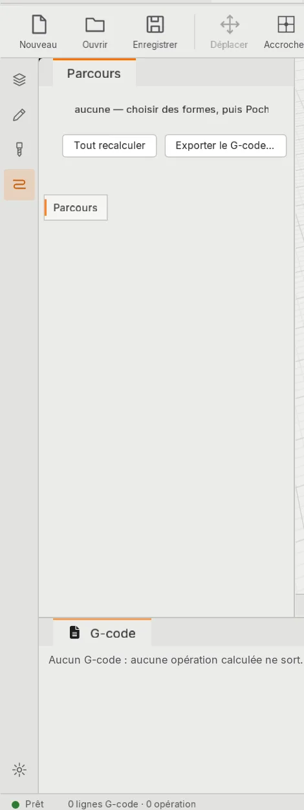
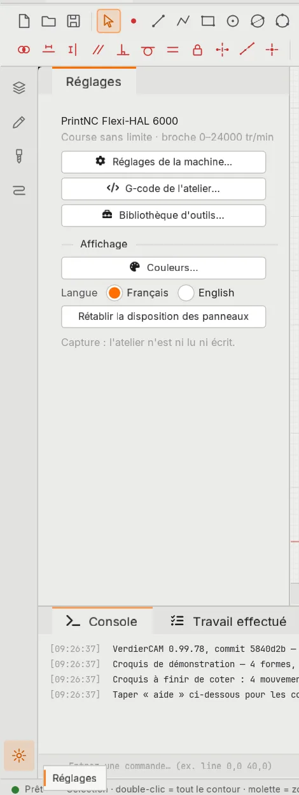
2.1.5Le bas : Console, Travail effectué, G-code, Simulation#
Sous la vue, quatre onglets — l'atelier Relief excepté, qui n'a que la Console (rien ne s'y simule ni ne s'y exporte encore). En Croquis et en Pilotage, les quatre vivent ensemble dans un seul bloc à onglets ; en Usinage et en Simulation, ils sont rangés d'office en trois groupes côte à côte (G-code · Simulation · Console et Travail effectué ensemble) plutôt qu'en onglets — une disposition que tu peux toujours retoucher à la souris.
| Onglet | Ce qu'il montre |
|---|---|
| Console | le journal du logiciel, et la ligne de commande — détail plus bas. Toujours présent, dans tous les ateliers. |
| Travail effectué | la liste, avec l'heure, de chaque geste fait sur le croquis (déplacer, supprimer, annulé, refait…) ; le bouton Copier la reprend tout entière — pas un résumé d'usinage : le bilan d'une opération (passes, longueur coupée, durée) est au pied de son panneau Opération, chapitres Régler une opération et Familles 2D. |
| G-code | le programme généré, ligne à ligne — chapitre Simulation et G-code. |
| Simulation | la lecture pas à pas du programme sur la pièce — chapitre Simulation et G-code. |
Comme tout panneau de VerdierCAM, celui du bas se détache : prends-le par son onglet et dépose-le ailleurs — y compris CÔTE À CÔTE avec un autre, en le lâchant sur son bord. Affichage › Rétablir la disposition des panneaux remet tout à sa place d'origine si une disposition retouchée devient illisible (plus bas).
2.1.6Le panneau de droite, atelier par atelier#
Ce que montre le panneau de droite change avec l'atelier ouvert — toujours en onglets, un thème par onglet :
| Atelier | Onglets du panneau de droite |
|---|---|
| Croquis | Contraintes, Planche, Variables 0.99 — détail plus haut. |
| Relief | Relief (les réglages de la sculpture en cours) et Planche — chapitre Familles 3D. |
| Usinage / Simulation | Opération (les réglages de l'opération choisie dans l'arbre Parcours), Outil et Planche — chapitres Régler une opération et Outils et machine. |
| Pilotage | Pupitre seul — chapitre Pilotage. |
Le panneau Planche (dimensions, matière, origine…) est le seul à vivre dans plusieurs ateliers à la fois — c'est le même, partout.
2.1.7La barre d'état#
Tout en bas de la fenêtre. Trois zones, de gauche à droite :
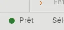
1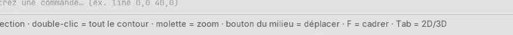
2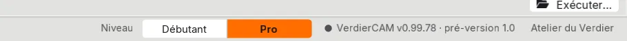
3- 1Un point — vert « Prêt » dans tous les ateliers SAUF le Pilotage (qui a sa propre zone, voir plus bas) ; il passe à l'orange « Calcul » seulement en Usinage et en Simulation, le temps qu'une opération recalcule ses parcours.
- 2La consigne : au Croquis, celle de l'outil armé (ses gestes, ses raccourcis) ; au Relief, un résumé de la pile de formes ; en Usinage et en Simulation, le nombre de lignes de G-code et d'opérations (ou l'avancement du calcul s'il est en cours).
- 3Le niveau (Débutant Pro 0.99 — deux niveaux seulement depuis cette version, voir Prise en main), puis la version de VerdierCAM et « Atelier du Verdier » — un point vert si c'est la dernière version publiée, rouge avec le numéro de la nouvelle si ce n'est pas le cas (un clic ouvre la fenêtre Nouvelle version, avec ce qu'elle apporte et un bouton Télécharger), gris tant que VerdierCAM n'a pas encore pu vérifier (pas de connexion, ou le site muet).
Depuis cette version, VerdierCAM ne connaît plus que deux niveaux, Débutant et Pro — l'ancien niveau « Intermédiaire » a disparu : un document qui le portait encore s'ouvre désormais en Pro. Pro montre le panneau complet partout (la vignette du dessin dans l'en-tête de chaque section, le ruban entier, les réglages rares toujours visibles) ; Débutant réduit chaque section à une ligne et un bouton Dessin. Détail des deux niveaux : chapitre Prise en main.
Au Pilotage, cette même zone centrale change complètement de métier : elle ne parle plus de dessin ni de G-code, mais de la machine elle-même — Connecté ou Déconnecté, l'état des limites logicielles, du palpeur (au repos ou en contact) et des fins de course touchées. Détail complet au chapitre Pilotage.
Cette consigne de l'outil Sélection est la MÊME phrase, qu'on soit en 2D ou en 3D. Or dans la vue 3D, le bouton du milieu tenu fait en réalité tourner la vue par défaut (orbiter autour de la pièce) — il ne la déplace (panoramique) que Maj tenue en plus. Le bouton droit, lui, déplace vraiment, dans les deux vues. Vois le détail vérifié à la section La souris dans la vue.
2.2La souris dans la vue#
Deux vues, deux logiques : la vue 2D (une feuille à plat, comme un plan) et la vue 3D (la pièce dans l'espace, comme si tu tournais autour). Tab, ou les onglets 2D / 3D en haut de la vue, passent de l'une à l'autre — sauf à l'atelier Relief, qui n'a pas de vue 3D et reste toujours à plat.
| Geste | En vue 2D | En vue 3D |
|---|---|---|
| Molette | Zoome, vers le point sous la souris. | Zoome, vers le point du bois sous la souris (jamais au-delà : la caméra ne traverse pas la planche). |
| Bouton du milieu, tenu et glissé | Déplace la feuille (comme le bouton droit). | Tourne la vue autour de la pièce ; Maj tenue en plus : déplace la vue au lieu de tourner. |
| Bouton droit, tenu et glissé | Déplace la feuille. | Déplace la vue (jamais ne tourne). |
| Bouton droit, cliqué SANS glisser | Au Croquis, outil Sélection et sans tracé en cours : ouvre le menu du clic droit sur ce qui est choisi — détaillé plus bas. Un outil de tracé armé n'ouvre rien : le clic droit termine le tracé en cours (ou l'abandonne s'il n'a encore rien à finir) et rend la main à la Sélection. | N'ouvre aucun menu. |
| Bouton gauche | Choisit, trace, ou glisse ce que l'outil armé fait (chapitres Croquis). | Choisit les formes à usiner. En Usinage et au Relief, un clic prend tout le contour relié (pas seulement le trait sous la souris) ; Ctrl+clic en ajoute un autre ; Maj+clic retire toute la forme cliquée de la sélection. En Usinage et Simulation, une petite barre au-dessus de la vue ( Sélection · Orbite · Panoramique · Zoom) choisit ce que le bouton gauche fait à la place : tourner, déplacer ou zoomer la vue sans lâcher le clavier des mains. |
| F | Cadre la vue sur tout ce qu'elle contient (comme Affichage › Cadrer). | |
En Sélection, un double-clic choisit le contour ENTIER en un coup, plutôt qu'un seul trait — pratique sur une forme faite de plusieurs segments bout à bout. En Usinage et au Relief, inutile de double-cliquer : un simple clic fait déjà ce choix par contour entier (ligne ci-dessus).
2.3Les menus de la barre#
Sept menus, dans l'ordre où ils sont rangés sur l'écran : Fichier, Édition, Dessin, Machine, Affichage, Outils, Aide. Un clic ouvre, un clic ailleurs ferme ; une fois un menu ouvert, survoler un autre titre y bascule directement (pas besoin d'un second clic).
2.3.1Fichier#
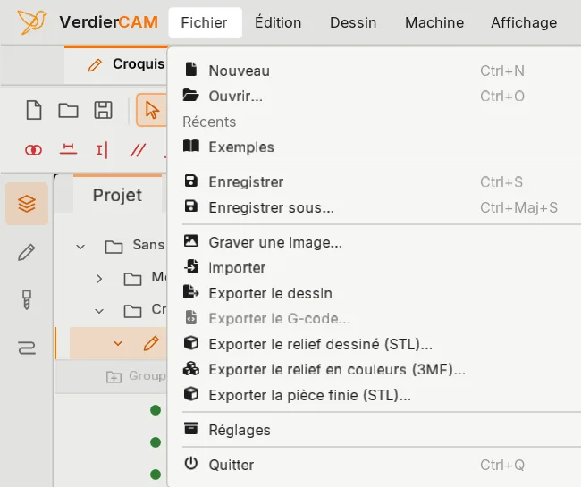
Récents
Les derniers documents ouverts, par leur nom de fichier — le chemin complet en infobulle.
Exemples
Les pièces livrées avec VerdierCAM (assiette, boîte, cadre, levier…) pour s'entraîner. Un exemple s'ouvre SANS chemin : Enregistrer demande où le garder, et il n'entre jamais dans les Récents.
Enregistrer sous… Ctrl+Maj+S
Enregistre une copie sous un autre nom ou dans un autre dossier.
Graver une image…
Un écusson, un logo, une photo, en trois écrans : les couleurs et leurs hauteurs, la fraise ou l'imprimante 3D qui le fera, puis la planche et le point de départ.
2.3.2Fichier › Importer#
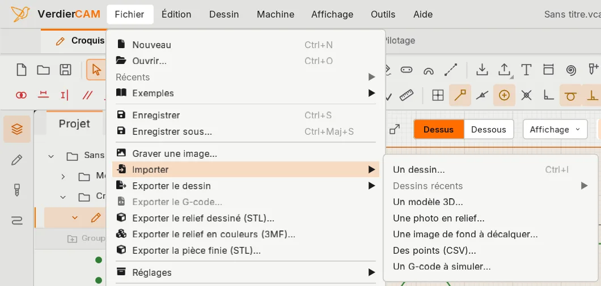
| Article | Ce qu'il importe |
|---|---|
| Un dessin… Ctrl+I | un SVG, un DXF, ou une esquisse FreeCAD (.FCStd) avec ses contraintes. |
| Dessins récents | relit directement un dessin déjà importé, sans redemander le fichier. |
| Un modèle 3D… | un maillage (STL, OBJ) ou un fichier STEP : il entre dans l'atelier Relief, couché et ajusté à la planche. |
| Une photo en relief… | envoie à l'atelier Relief, qui calcule une forme en bosse depuis une photo — chapitre Familles 3D. |
| Une image de fond à décalquer… | une photo ou un plan scanné posé sous le dessin, pour tracer par-dessus : opacité, place, angle, et la vraie taille réglée par deux points cliqués et leur distance tapée. (Le libellé devient L'image de fond… si une image de fond est déjà posée dans le document.) |
| Des points (CSV)… | un fichier « x,y » par ligne, avec un diamètre en troisième colonne au besoin : un trou par ligne qui en a un, un point sinon — pratique pour des perçages relevés. |
| Un G-code à simuler… | le programme d'un autre logiciel (.ngc, .nc, .gcode, .tap), rejoué dans la Simulation sans rien dessiner — chapitre Simulation et G-code. |
2.3.3Fichier › Exporter le dessin, et les autres exports#
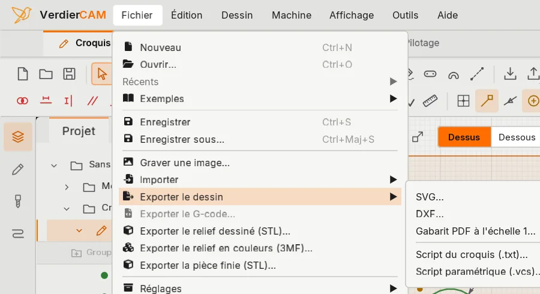
| Article | Ce qu'il écrit |
|---|---|
| SVG… / DXF… | le dessin du croquis, pour un autre logiciel de dessin. |
| Gabarit PDF à l'échelle 1… | le trait en vraie grandeur, sur des feuilles A4 à assembler, avec un carré de 50 mm à mesurer pour contrôler l'impression — un gabarit à coller sur la planche. |
| Script du croquis (.txt)… | tout le croquis en commandes de la console (formes, contraintes, cotes), à rejouer ou à retoucher à la main. |
| Script paramétrique (.vcs)… | le croquis en pièce paramétrique : chaque cote devient une variable nommée en tête du fichier (rayon_3, ecart_x_2…) qu'on peut rejouer en changeant juste ses valeurs. |
Le menu Fichier porte aussi, hors sous-menu : Exporter le G-code… (chapitre Simulation et G-code), Exporter une photo… 0.99 (juste en dessous, détaillée dans la fiche qui suit), Exporter le relief dessiné (STL)…, Exporter le relief en couleurs (3MF)… et Exporter la pièce finie (STL)… (ces trois-là au chapitre Familles 3D, inséparables du relief ou de la pièce qu'ils exportent), puis un sous-menu Réglages avec Exporter les réglages… et Importer des réglages… — un seul fichier qui contient la machine, les outils, les couleurs et thèmes, la disposition des panneaux, et le document ouvert avec ses opérations : pour une sauvegarde, ou pour montrer un problème à l'Atelier du Verdier. Enfin, Quitter Ctrl+Q pose la question Enregistrer les modifications ? si besoin, exactement comme la croix de la fenêtre.
2.3.4Fichier › Exporter une photo… 0.99#
Une image PNG de la pièce — pour la montrer à un client, l'envoyer au fil d'une discussion, ou la garder en souvenir à côté du programme. Exporter une photo… l'ouvre depuis le menu Fichier ; le bouton Photo, dans la bande du bas de la vue 3D (Simulation ou Usinage — voir plus haut), fait exactement la même chose sans quitter la vue.
Exporter une photo…
Ouvre la fenêtre Photo, posée à côté de la vue : elle reste ouverte pendant qu'on cadre et qu'on coche les calques, la vue montrant en direct le cadre choisi.
Menu Fichier · bouton Photo au bas de la vue 3D
La fenêtre ne touche à rien d'autre : refermée, la vue et tous les réglages de l'atelier reviennent exactement comme avant — rien n'est écrit dans le document ni dans l'atelier.
| Réglage | Ce que ça fait | Conseil |
|---|---|---|
| La vue 3D / Toute la fenêtre | La vue seule — juste la pièce, cadrée comme à l'écran — ou une image de la fenêtre entière de VerdierCAM, disposée à la taille choisie (les panneaux inclus). | La vue 3D pour montrer la pièce seule ; Toute la fenêtre pour montrer aussi les réglages d'une opération, en exemple ou en question à l'atelier. |
| Taille | Carré, réseaux sociaux (1 080 × 1 080, vue seule uniquement — les panneaux n'entrent pas dans un carré), Écran (1 920 × 1 080), 4K, affiche ou site (3 840 × 2 160, dessinée deux fois plus fine), ou À la main (largeur et hauteur libres). | 4K pour une image qu'on recadrera ou imprimera ensuite ; Écran pour un envoi rapide. |
| Les calques à montrer | Les mêmes cases qu'Affichage › Montrer, à cocher pour la photo seulement — Tout propre les décoche toutes d'un clic (la pièce seule, sans trajets ni repères) ; Comme à l'écran remet ce que la vue montrait avant d'ouvrir la fenêtre. | Tout propre pour une photo nette à montrer dehors de l'atelier. |
| La pièce | Calculée à la finesse la plus haute et lissée pour la photo : plus de damier de petites cases, une surface qui a l'air sculptée plutôt que pixelisée — pas celle, plus grossière, de la Simulation à l'écran. | — |
| Fond | Le fond de la vue (celui du thème), Uni (une couleur à toi) ou Dégradé (deux couleurs, haut et bas). | Un fond uni clair ou un dégradé donne une image plus nette à poster qu'un fond gris d'atelier. |
| Thème de la fenêtre | (pour « Toute la fenêtre » seulement) Clair ou Charte sombre : la photo de toute la fenêtre peut prendre un thème différent de celui que tu utilises à l'écran, sans le changer pour de vrai. | Le thème Clair se lit mieux imprimé ou dans un courriel. |
En La vue 3D, le conseil affiché dans la fenêtre le rappelle : « Cadrez dans la vue 3D : tournez, rapprochez, l'aperçu suit. » Le bouton Cadrer la pièce, dans la fenêtre, tourne et rapproche la vue pour que la planche remplisse tout juste le cadre de la photo.
Prendre la photo, en bas de la fenêtre, écrit le fichier PNG à l'emplacement choisi par Choisir… — un bouton Ouvrir le dossier apparaît une fois la photo prise.
2.3.5Édition#
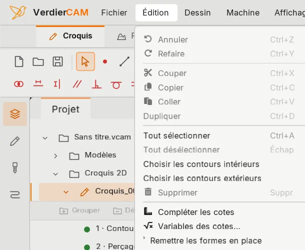
Annuler Ctrl+Z
Défait le dernier geste. Grisé quand il n'y a plus rien à défaire — vois Annuler/Refaire plus bas pour sa portée exacte.
Refaire Ctrl+Y
Rejoue le geste qu'Annuler venait de défaire.
Couper Ctrl+X
Les formes choisies, avec leurs cotes et contraintes, vers le presse-papiers — et retirées du croquis. Croquis seulement, et une sélection non vide.
Copier Ctrl+C
Les formes choisies vers le presse-papiers, sans y toucher. Le texte copié est lisible : c'est le même script du croquis que l'export .txt. Croquis seulement, et une sélection non vide.
Coller Ctrl+V
Colle ce que Couper ou Copier a mis dans le presse-papiers — dans ce document, ou dans un autre document ouvert. Grisé si le presse-papiers ne porte pas ce texte de formes (une image, par exemple, colle ailleurs : dans un post-it).
Dupliquer Ctrl+D
Une copie des formes choisies, décalée de 10 mm vers la droite et de 10 mm vers le bas pour ne pas se superposer à l'original — déplace-la ensuite où tu veux.
Tout sélectionner Ctrl+A
Choisit toutes les formes du croquis ouvert.
Tout désélectionner Échap
Vide la sélection.
Choisir les contours intérieurs
Parmi la sélection (ou tout le dessin si rien n'est choisi) : les contours qui sont DANS un autre — les trous, les poches. Croquis seulement.
Choisir les contours extérieurs
Parmi la sélection (ou tout le dessin) : ceux qui ne sont dans aucun autre — les pièces à détourer. Croquis seulement.
Supprimer Suppr
Efface les formes choisies. Cet article de menu reste grisé hors Croquis — en Usinage ou en Relief, la sélection désigne autre chose (un contour à usiner, une couche du relief) et le menu n'agit pas dessus.
La touche Suppr elle-même, tapée au clavier avec la souris sur la vue 2D, efface maintenant aussi les formes choisies en Usinage (pas seulement au Croquis, comme avant cette version) 0.99 — l'opération d'usinage dont les formes partent le dit dans l'arbre des opérations ; Ctrl+Z rend tout.
Compléter les cotes
Pose, à la mesure actuelle (rien ne bouge), toutes les cotes qui manquent pour arriver à un croquis entièrement contraint : rayons, longueurs, aplombs à 0,5° près, puis les points depuis l'origine de la planche. Croquis seulement. Chapitre Les cotes.
Variables des cotes… 0.99
Ouvre la fenêtre Variables : des valeurs nommées (A = 32, B = A*2 + 5) que des cotes peuvent suivre — change A, toutes les cotes qui le citent suivent. Au Croquis, c'est le troisième onglet du panneau de droite (plus haut) ; dans les autres ateliers (une profondeur d'usinage peut aussi citer une variable), ce même article ouvre une fenêtre flottante. Détail complet, chapitre Les cotes.
Remettre les formes en place
Recalcule les contraintes et remet chaque forme où elles l'imposent — ce qui se fait déjà, seul, après chaque geste. N'ajoute AUCUNE cote : ce n'est pas lui qui finit de coter un dessin (c'est Compléter les cotes, juste au-dessus).
2.3.6Dessin#
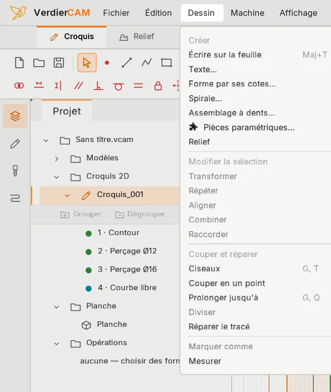
Les outils de TRACÉ eux-mêmes (ligne, rectangle, cercle…) ne sont PAS dans ce menu : ils vivent dans le ruban Croquis — chapitre Tracer. Importer et exporter le dessin ne sont pas ici non plus : ils vivent dans le menu Fichier. Ce que porte vraiment le menu Dessin :
| Section | Contenu |
|---|---|
| Créer | Écrire sur la feuille et Texte… (chapitre Texte et import), Forme par ses cotes…, Spirale…, Assemblage à dents… (queues droites, queues d'aronde, clé papillon), Pièces paramétriques…, et Relief › (Créer un relief…, Creux ou bombé depuis le contour…) — chapitre Familles 3D. |
| Modifier la sélection | Transformer ›, Répéter ›, Aligner ›, Combiner › (2 formes au moins), Raccorder › — une sélection non vide, sinon grisés. Détail chapitre Modifier. |
| Couper et réparer | Ciseaux, Couper en un point, Prolonger jusqu'à, Diviser › (aux intersections, en N points), Réparer le tracé › (repérer/fermer les contours ouverts, souder, nettoyer, démêler, simplifier, inverser le sens, extraire les cercles, éclater, contour extérieur, aplatir en points, convertir en bézier), Marquer comme › (construction, zone interdite, zone de travail, verrouiller), Mesurer. Détail chapitre Modifier. |
Le sous-menu Aligner porte aussi, depuis cette version, Centrer sur la planche F9 et ses deux variantes (horizontale seule, verticale seule) — vois le tableau du clic droit, plus bas, qui les détaille.
2.3.7Machine#
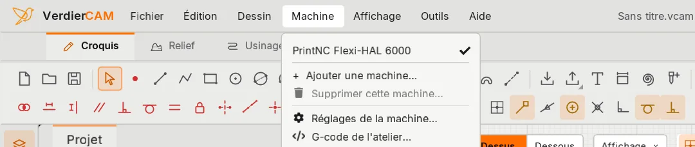
En haut : la liste des machines connues de ton atelier, celle en service cochée — cliquer une autre la met en service aussitôt (et bascule le document sur le post-processeur de cette machine — le dialecte de G-code qu'elle comprend —, vois l'encadré ci-dessous). Puis Ajouter une machine… et Supprimer cette machine…. En bas, deux articles ouvrent la vraie fenêtre de réglages, détaillée au chapitre Outils et machine : Réglages de la machine… (course, broche, dynamique, table, repères pièce) et G-code de l'atelier… (les blocs de début et de fin de programme).
Mettre une autre machine en service bascule le document ouvert sur SON dialecte de G-code (le post-processeur) — un geste à part entière, annulable comme les autres. Si tu changes encore le post à la main ensuite (dans le panneau Planche de l'Usinage), le panneau le dit : il n'est alors plus celui de la machine en service.
2.3.8Affichage#
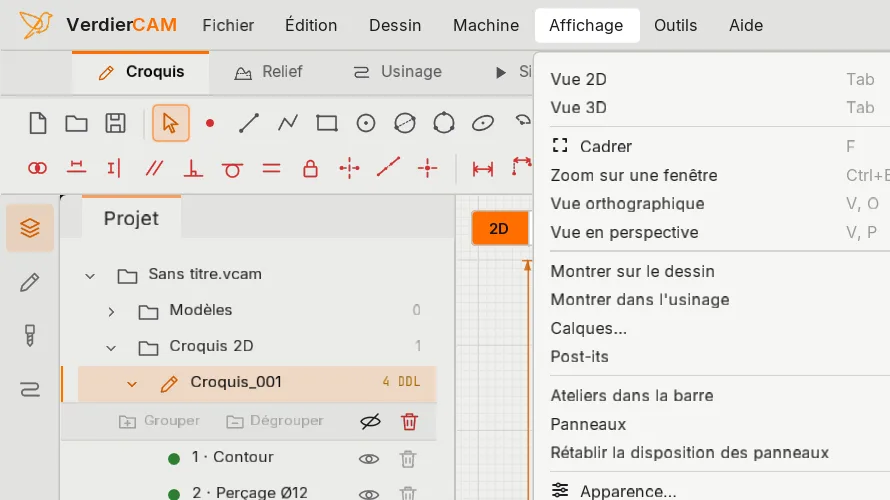
| Article | Effet |
|---|---|
| Vue 2D / Vue 3D Tab | bascule la vue — vois La souris dans la vue. |
| Cadrer F | recentre et redimensionne la vue sur tout ce qu'elle contient. |
| Zoom sur une fenêtre Ctrl+B | glisse un rectangle dans la vue 2D : elle s'y cadre. Échap abandonne. |
| Vue orthographique / Vue en perspective V,O / V,P | en 3D : sans fuite (comme un plan) ou avec — deux touches à la suite, pas ensemble (même logique que les raccourcis de tracé, chapitre Tracer). |
| Calques… | range le dessin par usage : montrer, cacher, verrouiller un calque, en choisir toutes les formes pour une opération. |
| Post-its | une petite carte posée sur la vue pour tes notes et des photos de tes croquis, enregistrée avec le document ; Nouveau post-it en ajoute un autre — détail juste ci-dessous. |
| Ateliers dans la barre 0.99 | une case par atelier (sauf Croquis, toujours montré) pour le cacher de la barre du haut — même liste qu'un clic droit sur cette barre. |
| Panneaux › | un article par panneau de l'atelier OUVERT — Panneau de gauche partout ; Contraintes et Variables au Croquis seulement ; Planche partout sauf au Pilotage ; Relief au Relief seulement ; Outil et Opération en Usinage et Simulation seulement ; Pupitre au Pilotage seulement ; Console partout ; G-code, Simulation et Travail effectué partout sauf au Relief — une coche quand il est visible, un clic le ramène sans toucher au reste de la disposition. Après un séparateur, en bas de la liste : Ramener tous les panneaux de ce mode, qui remet d'un coup tous les panneaux de l'atelier ouvert dans leur arrangement par onglets d'origine, sans toucher aux autres ateliers — plus ciblé que Rétablir la disposition des panneaux, juste en dessous, qui remet TOUT. |
| Rétablir la disposition des panneaux | remet TOUS les panneaux à leur place d'origine — le recours si une disposition retouchée devient illisible. |
| Apparence… | ouvre Préférences › Apparence — tailles, thème, couleurs, langue. |
2.3.9Affichage › Post-its#
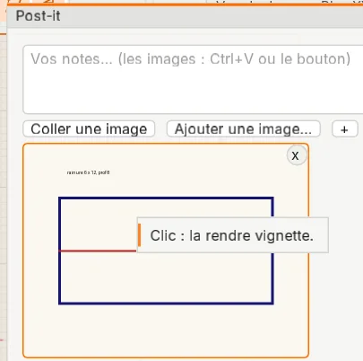
1 2 3 4- 1La barre de titre : on y attrape le post-it pour le déplacer ; le petit triangle, à gauche du titre, le réduit à cette seule barre (pour qu'il ne gêne plus, sans le refermer) ; la croix, en haut à droite, le referme (il reste dans le document, juste caché — pour le rouvrir, Affichage › Post-its).
- 2Tes notes : un simple champ de texte, qui grandit avec ce que tu écris, enregistré avec le document.
- 3Coller une image colle ce qu'il y a dans le presse-papiers (une capture d'écran, une photo copiée) ; Ajouter une image… ouvre le sélecteur de fichier ; + ajoute un AUTRE post-it, à côté de celui-ci.
- 4Une image posée : un clic l'agrandit dans le post-it — une petite croix, en haut à droite de l'image, la retire ; un second clic sur l'image agrandie la rend vignette.
Le post-it sert à garder sous les yeux une note ou la photo d'un croquis papier pendant que tu dessines, sans basculer sur une autre fenêtre. Il suit le document : il s'enregistre avec lui et revient tel quel à la réouverture. Ctrl+V colle directement dans le champ de texte si le presse-papiers porte une image — le texte, lui, n'est alors pas touché. Jusqu'à 8 post-its par document, chacun jusqu'à 8 images (PNG, JPEG ou BMP, 8 Mo chacune au plus) ; au-delà du premier, chacun garde son numéro (Post-it 2, Post-it 3…) dans le sous-menu Affichage › Post-its, pour le rouvrir s'il a été refermé. Dès qu'il y en a au moins deux, un bouton Jeter apparaît à côté du + : lui, à la différence de la croix, retire le post-it pour de bon (avec une question de plus s'il porte encore des notes ou des images).
Une capture d'écran marche aussi pour une image de ton croquis papier : Impr. écran (ou Win+Maj+S sous Windows, pour une zone précise), puis Ctrl+V dans le post-it, ou Coller une image.
2.3.10Affichage › Montrer sur le dessin#
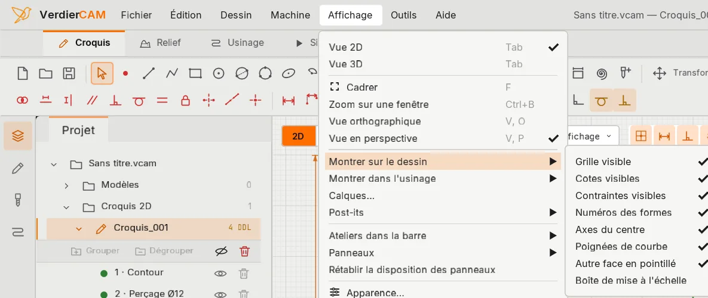
| Case | Cache / montre |
|---|---|
| Grille visible | le quadrillage fin de la feuille (sans effet sur l'accroche à la grille, un réglage à part — chapitre Tracer). |
| Cotes visibles | toutes les cotes du croquis, y compris celles de la planche. |
| Contraintes visibles | les petits symboles rouges de contrainte — chapitre Les contraintes. |
| Numéros des formes | le numéro #N près de chaque forme — utile pour s'y retrouver en Usinage. |
| Axes du centre | la croix en tirets au centre de la planche. |
| Poignées de courbe | les poignées des nœuds lisses d'une Bézier. |
| Autre face en pointillé | ce qui est dessiné sur l'AUTRE face, en estompé — pour caler un trou du dessous sur un du dessus. |
| Boîte de mise à l'échelle | le cadre de poignées qui entoure une sélection pour l'étirer — décochée par défaut (elle faisait de drôles de choses sur certaines formes). Pour l'allumer : ici, ou par l'icône dédiée dans la petite barre d'outils de la vue 2D (à côté de Cadrer et Zoomer). |
2.3.11Affichage › Montrer dans l'usinage#
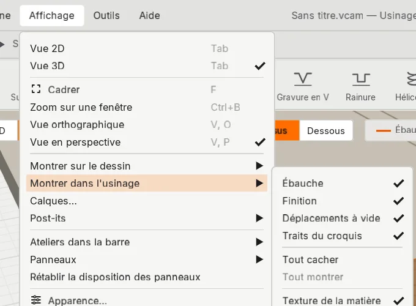
| Article | Cache / montre |
|---|---|
| Ébauche / Finition | les parcours d'ébauche ou de finition, dans la vue d'usinage. |
| Déplacements à vide | les trajets G0 (la fraise levée, sans couper) — en rouge pointillé quand ils sont montrés. |
| Traits du croquis | la géométrie d'origine, par-dessus les parcours calculés. |
| Tout cacher / Tout montrer | bascule ensemble les trois cases du dessus — Ébauche, Finition et Déplacements à vide — sans toucher à Traits du croquis ni à la Texture de la matière, juste en dessous. |
| Texture de la matière | le veinage dessiné sur la planche en 3D (bois, aluminium…). |
2.3.12Outils#
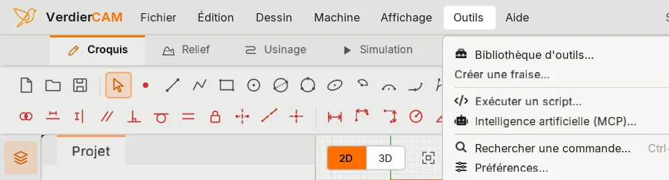
Bibliothèque d'outils…
Toutes les fraises connues, à choisir pour une opération — chapitre Outils et machine.
Créer une fraise…
Dessine une fraise à la main et l'ajoute à la bibliothèque. Premier appui : un axe vertical apparaît, tu ne traces que le DEMI-profil ; le tracé choisi, l'article devenu Terminer la fraise… ouvre le dialogue qui calcule les rayons depuis cet axe.
Exécuter un script…
Rejoue un fichier .vcs (variables, boucles — façon OpenSCAD) ou .txt (une commande console par ligne). Comme taper executer <fichier> dans la console.
Intelligence artificielle (MCP)…
Branche un assistant d'intelligence artificielle (Claude Desktop, Claude Code…) par MCP — le langage que ces assistants utilisent pour piloter un logiciel —, pour qu'il dessine, usine et écrive le G-code à ta demande — JAMAIS la machine elle-même. Détail au chapitre Outils et machine.
Rechercher une commande… Ctrl+K
Voir la section Rechercher une commande, plus bas.
Préférences…
Voir la section Préférences, plus bas.
2.3.13Aide#
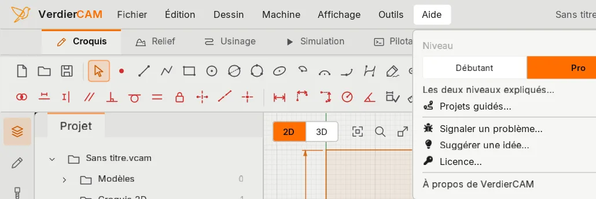
Débutant / Pro
Change le niveau d'affichage de l'usinage à tout moment — les réglages et les calculs restent les mêmes partout. Depuis cette version, deux niveaux seulement 0.99 (l'ancien « Intermédiaire » a disparu). Chapitre Prise en main.
Les deux niveaux expliqués…
Rouvre la fenêtre Bienvenue dans VerdierCAM du premier lancement, qui détaille Débutant et Pro.
Projets guidés… 0.99
Ouvre la liste des projets guidés : une pièce du début à la fin, une étape à la fois — une petite fenêtre dit quoi faire, entoure d'un trait orange le bouton à cliquer, et passe à l'étape suivante toute seule dès que c'est fait. Rien ne se fait à ta place ; tu peux arrêter à tout moment.
Comme Intelligence artificielle (MCP)…, c'est une fenêtre qui FLOTTE au-dessus du logiciel : tu la déplaces où tu veux, mais elle ne se range jamais dans les panneaux (voir l'encadré plus bas).
Signaler un problème…
Voir plus bas.
Suggérer une idée…
Voir plus bas.
Licence…
L'état de ta licence et de ton essai — chapitre Prise en main.
À propos de VerdierCAM
Le numéro de version exact et les mentions du logiciel.
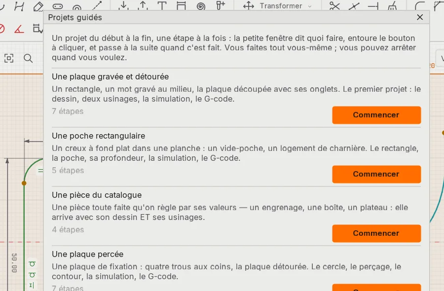
Les huit projets de cette version, dans l'ordre de la liste :
| Projet | Étapes |
|---|---|
| Une plaque gravée et détourée | 7 |
| Une poche rectangulaire | 5 |
| Une pièce du catalogue | 4 |
| Une plaque percée | 7 |
| Une enseigne gravée en V | 7 |
| Surfacer une planche | 4 |
| Découper un dessin importé | 5 |
| Un relief tiré d'une image | 4 |
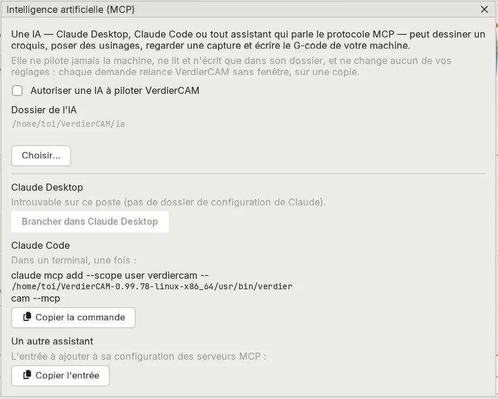
Des fenêtres qui flottent, jamais ancrées : Projets guidés… (plus haut) et Intelligence artificielle (MCP)… (ci-dessus) — un choix délibéré depuis cette version 0.99 : glissées dans le dock, leur onglet se dessinait avec la police ordinaire à côté des onglets agrandis des panneaux, décalé et coupé. Outils › Exécuter un script… n'ouvre PAS de fenêtre : il choisit aussitôt un fichier à rejouer, par le sélecteur habituel (plus haut) — l'éditeur qui flotte de la même façon pour modifier le script d'une pièce paramétrique (bouton Ouvrir le script) est une AUTRE fenêtre, hors du périmètre de ce chapitre. La plupart des petites fenêtres de réglages (Préférences…, Couleurs…, Licence…, Signaler un problème…, un post-it…) flottent aussi, sans jamais s'ancrer ; seuls les panneaux du dock et quelques fenêtres larges (Bibliothèque d'outils…, et Variables… quand elle s'ouvre hors du Croquis) peuvent, eux, se glisser dans le dock. Rien à régler de ton côté : ces fenêtres s'ouvrent toujours par-dessus la fenêtre, à déplacer à la souris.
2.4Rechercher une commande Ctrl+K#
Plutôt que fouiller les sept menus, tape trois lettres. Ctrl+K (ou Outils › Rechercher une commande…) ouvre un champ au centre de l'écran : chaque article des sept menus ET les boutons du ruban (en Croquis) sont déjà « relevés » dessous ; ce que tu tapes filtre la liste, douze résultats au plus.
Tape un bout du nom — avec ou sans accents, ça ne compte pas (« cong » trouve « Congé »).
↑ ↓ choisissent un résultat, la souris aussi en le survolant.
Entrée lance le résultat choisi — exactement comme si tu avais cliqué l'article dans son vrai menu.
Échap referme sans rien lancer.
Un résultat grisé, « pas possible maintenant » sous son chemin, correspond à une commande dont les conditions ne sont pas réunies (par exemple un Miroir sans rien choisi) : Entrée ne le lance pas, et le dit au journal (la console).
2.5Le clic droit#
Deux menus différents, selon où tu cliques :
2.5.1Sur une forme choisie, dans la vue#
Un clic droit SANS glisser, sur ou près d'une forme déjà choisie (ou cliquée dans le même geste si rien ne l'était encore), ouvre un menu avec tout ce qui s'applique à la sélection — les mêmes commandes que le menu Dessin, par la même mécanique de retouche, seulement celles qui ont un sens pour ce qui est choisi (Combiner n'apparaît pas tant qu'il n'y a pas au moins deux formes).
| Article | Détail |
|---|---|
| Déplacer… / Tourner… / Mettre à l'échelle… | chapitre Modifier. |
| Miroir › | horizontal, vertical, ou par un axe choisi. |
| Dupliquer Ctrl+D | une copie, décalée de 10 mm à droite et 10 mm en bas (pour ne pas tomber pile sur l'original). |
| Aligner › | Centrer sur la planche F9 (et ses deux variantes, horizontale seule ou verticale seule), puis — une seule forme choisie — aligner ou répartir sur la planche. |
| Répéter › | réseau en grille, réseau circulaire, Imbriquer sur la plaque. |
| Combiner › (2 formes au moins) | réunion, différence, intersection, exclusion — la PREMIÈRE forme choisie est le sujet. |
| Raccorder › | congé, chanfrein, décaler. |
| Réparer le tracé › | repérer les contours ouverts, fermer les contours ouverts, souder, nettoyer, démêler, simplifier, inverser le sens, extraire les cercles, éclater, contour extérieur, aplatir en points, convertir en bézier, diviser aux intersections, diviser en N points. |
| Marquer comme › | construction, zone interdite, zone de travail, verrouiller / déverrouiller. |
| Supprimer Suppr | efface la sélection. |
Toutes ces commandes vivent aussi dans le menu Dessin ou son ruban — détaillées chapitre Modifier. Ce menu-ci n'en est qu'un raccourci, à l'endroit même du clic.
2.5.2Sur une ligne de l'arbre (panneau de gauche)#
Un clic droit sur une forme du panneau Projet (rail › Projet) ouvre un menu plus court, pour ranger l'arbre plutôt que la géométrie :
Grouper Ctrl+G
Range les formes choisies sous un même dossier de l'arbre.
Dégrouper Ctrl+Maj+G
Sort les formes d'un groupe.
Masquer / afficher H
Bascule la visibilité, dans la vue, des formes choisies — comme cliquer l'œil de leur ligne.
Supprimer Suppr
Efface les formes choisies dans l'arbre.
2.6La console#
Onglet Console du panneau du bas, dans tous les ateliers : le journal de tout ce que fait le logiciel — un message par geste, horodaté — et, tout en bas, une ligne de commande qui accepte de vraies instructions tapées au clavier.
›) et sa réponse entrent dans le journal, comme tout le reste. En haut à droite : la corbeille Effacer la console 0.99, puis Copier la console qui copie la sélection — ou tout le journal si rien n'est choisi.- 1Le journal : un clic choisit une ligne, Maj+clic une plage, Ctrl+C ou le bouton Copier la récupère. Un clic droit dessus ouvre un menu : Copier la sélection, Copier toute la console, Tout choisir, Effacer la console 0.99 — la corbeille vide seulement ce que tu VOIS ; le journal complet de la séance, sur le disque, n'est pas touché : c'est lui que Signaler un problème… joint toujours, même après avoir vidé la console.
- 2La ligne de commande (
› Entrez une commande… (ex. line 0,0 40,0)) : tape une instruction, Entrée l'exécute. - 3Exécuter… : ouvre un fichier
.vcsou.txtà rejouer, comme Outils › Exécuter un script….
La console comprend des commandes de tracé (line 0,0 40,0, rect 10,10 100,60, circle 30,40 4…), de réglage (calque Perçages, mode pro), et d'autres encore. La liste complète, commande par commande, est aux Annexes : ce chapitre ne redit pas ce qu'elle sait déjà faire, seulement où elle vit et comment s'en servir.
Un fichier .txt d'Exécuter un script… est une commande de console par ligne — exactement ce que Fichier › Exporter le dessin › Script du croquis (.txt)… écrit. Tu peux l'ouvrir dans un éditeur de texte ordinaire, le modifier, et le rejouer.
La ligne de commande n'accepte qu'UNE ligne — mais si ce que tu colles (Ctrl+V) contient deux lignes utiles ou plus, VerdierCAM ne les met plus dans le champ : il les joue toutes d'un coup, exactement comme Exécuter… le ferait d'un fichier. Pratique pour coller un script généré ailleurs (par une intelligence artificielle, par exemple) sans l'enregistrer d'abord dans un fichier. Collé d'une seule ligne, rien ne change : elle entre dans le champ comme avant.
Le clavier sur la console (ou sur Travail effectué), Ctrl+C et Ctrl+X ne copient QUE les lignes choisies dans le journal — jamais, en plus, les formes choisies dans le dessin. Il faut DEUX choses à la fois pour copier tes formes : la souris sur la vue, ET le clavier qui n'est plus à la console. Un clic dans la console lui donne le clavier, et il le garde même si tu reposes ensuite la souris sur la vue sans cliquer nulle part. Clique dans la vue — le clic lui rend le clavier en même temps que la souris y est déjà — ou clique dans l'arbre Projet, qui copie tes formes quelle que soit la position de la souris ; tant que la console (ou Travail effectué) garde le clavier, Ctrl+C ne copie que ses lignes.
2.7Annuler et Refaire#
Ctrl+Z et Ctrl+Y (ou menu Édition) défont et refont, geste par geste, tout ce qui touche à la géométrie du croquis, aux réglages d'une opération, à l'arbre (grouper, masquer, supprimer…) — un historique profond, pas limité à un seul pas en arrière. Annuler et Refaire affichent le NOM du geste visé entre guillemets (« Annuler « Déplacer » », par exemple) : un repère utile avant de cliquer, pour savoir ce qui va vraiment disparaître.
2.8Préférences#
Menu Outils › Préférences…, ou Affichage › Apparence… pour tomber directement sur son second onglet. La fenêtre n'a que DEUX onglets — tout ce qui règle le logiciel lui-même tient dedans ; les réglages d'une machine ou d'une fraise vivent ailleurs (chapitre Outils et machine).
2.8.1Général#
Fichiers
| Réglage | Ce que ça fait |
|---|---|
| Fenêtre de fichiers | Celle du système (le dialogue habituel de ton bureau) ou Celle de VerdierCAM (son propre explorateur, avec vignettes) — pour Ouvrir, Enregistrer, Importer. Si celle du système ne s'ouvre pas (un petit ordinateur Raspberry Pi faisant tourner LinuxCNC, le logiciel qui pilote la machine), VerdierCAM bascule sur la sienne tout seul ; choisir « Celle de VerdierCAM » la prend toujours. |
| Éditeur de texte | Celui du système (ton éditeur de texte habituel), Celui de VerdierCAM (un éditeur intégré qui refait l'aperçu à chaque enregistrement et montre la ligne d'une erreur) ou Un programme donné — tape alors sa commande dans le champ qui apparaît (geany, kate, code --wait…). Sert au bouton Ouvrir le script des pièces paramétriques, chapitre Modifier. Si ton choix ne s'ouvre pas, celui de VerdierCAM prend le relais tout seul. |
Calcul
| Réglage | Ce que ça fait |
|---|---|
| Relief par IA | Processeur ou Carte graphique : le calcul du relief depuis une photo (chapitre Familles 3D) passe par la carte graphique (par Vulkan, la technique qui parle directement à la carte — AMD, NVIDIA ou Intel), environ trois fois plus vite ; si elle refuse, le processeur reprend tout seul. Le calcul des parcours d'usinage, lui, reste TOUJOURS au processeur — ce ne sont que des contours et des décalages de polygones, pas le métier d'une carte graphique. |
Le calcul d'un parcours ne se relance plus pendant qu'on glisse un champ ou qu'on tape une valeur 0.99 : il attend que tu lâches la souris ou que tu quittes le champ — et un calcul déjà lancé, dépassé par un nouveau réglage avant d'avoir fini, s'arrête aussitôt plutôt que de continuer pour rien.
Pièces paramétriques
| Réglage | Ce que ça fait |
|---|---|
| Vos pièces | le dossier où VerdierCAM va lire TES scripts .vcs de pièces paramétriques, en plus de ceux livrés avec le logiciel — Choisir… le change, Par défaut revient au dossier d'origine (ce bouton n'apparaît que si tu as déjà choisi un dossier à toi), Ouvrir le dossier l'ouvre dans l'explorateur de fichiers de ton bureau, pour y déposer ou retrouver tes scripts. |
Certaines fonctions encore en essai n'apparaissent que chez le fabricant, jamais sur ton installation : tu ne les verras pas, même en cherchant.
2.8.2Apparence#
| Réglage | Ce que ça fait |
|---|---|
| Thème | change toutes les couleurs d'un coup ; Couleurs… les retouche une par une, Enregistrer comme thème… garde le résultat, Exporter le thème… / Importer un thème… le partagent. 0.99 Le bouton Revenir au thème par défaut, dans la fenêtre Couleurs…, remet maintenant le thème Clair — comme un tout premier lancement, qui s'ouvre déjà en Clair. Un atelier qui n'a encore jamais retenu ni thème ni couleur le prend aussi. |
| Langue | chaque langue s'écrit dans SA langue dans la liste (« English », pas « Anglais »). |
| Taille de l'interface | texte, icônes et marges grandissent ou rétrécissent ENSEMBLE (80 % à 150 %) : seul réglage des trois à avoir un champ à glisser pour un réglage fin, en plus de − / + par pas de 5 % ; le bouton gris à droite (100 %) y revient d'un coup. |
| Taille du texte | CHACUN SÉPARÉMENT de l'interface — pour un texte plus gros sans grossir les icônes. Pas de champ à glisser ici : seulement − / + par pas de 5 %, et le bouton 100 %. |
| Taille des icônes | de même, séparée des deux autres ; − / + par pas de 10 % cette fois (les icônes supportent moins de paliers), et le bouton 100 %. |
| Rendu du texte | trois façons de dessiner les lettres : Net (FreeType), Net léger (FreeType, calé en hauteur), Doux — selon ton écran et tes yeux, une seule est vraiment plus nette. |
| Ruban Croquis | Icônes ou Compact — ce réglage ne vit QU'ICI (aucun article de menu n'y mène) ; Remettre les groupes à leur place juste à côté annule tout groupe de ruban déplacé à la main. |
| Alléger la vue en mouvement | quand la pièce finie est trop lourde pour suivre la main, la vue affiche le brut (moins net) le temps du mouvement, et revient à la pièce une fois la souris relâchée — utile sur un petit ordinateur ou un Raspberry Pi. |
2.9Les fenêtres d'aide#
2.9.1Aide › Signaler un problème…#
Décris ce que tu as fait, ce que tu attendais, ce qui s'est passé.
Une capture d'écran si tu en as une (facultatif) : Coller une capture (après une capture au clavier, Impr. écran) ou Ajouter une image….
Préparer le rapport — un fichier
.zipse crée sur ton ordinateur (avec, d'office, tout ce que tu as fait pendant la séance : la console et chaque geste), ton logiciel de courrier s'ouvre déjà adressé.Joins le fichier au courriel (VerdierCAM te le rappelle en orange : un logiciel ne peut pas joindre un fichier à ta place dans TON logiciel de courrier) et envoie.
La case Joindre les réglages et le document ouvert ajoute la machine, les outils, la disposition des panneaux et la pièce ouverte — de quoi reproduire exactement ce que tu vois. Décoche-la si la pièce est confidentielle.
2.9.2Aide › Suggérer une idée…#
Même principe que Signaler un problème…, en plus court : une case à décrire ce qui manque ou ce qui pourrait être mieux fait, une ligne facultative pour ta machine et ton usage, et Écrire le courrier ouvre ton logiciel de courrier, déjà écrit — il ne reste qu'à l'envoyer. « Chaque idée est lue par celui qui écrit VerdierCAM », dit la fenêtre.
2.9.3Licence… et À propos#
Licence… (détail au chapitre Prise en main, section « La licence et la période d'essai ») et À propos de VerdierCAM (le numéro de version exact, à donner si tu signales un problème autrement que par la fenêtre ci-dessus) complètent le menu Aide.
Croquis : tracer
Le ruban Croquis, chaque outil de tracé pas à pas, la saisie des cotes au clavier, les accroches, la sélection, la planche dans l'esquisse.
Tracer, dans VerdierCAM, c'est poser des points à la souris — ou au clavier, à la cote exacte. Ce chapitre montre chaque outil de l'atelier Croquis, comment il se pose pas à pas, ce que la vue affiche pendant le geste, et tout ce qui aide à viser juste : les accroches, la sélection, la planche elle-même.
3.1Le ruban Croquis, vue d'ensemble#
Dès que tu ouvres l'atelier Croquis, le ruban prend deux lignes sous les onglets. La première range tout ce qui construit le dessin ; la seconde, en rouge, pose les contraintes et les cotes, puis les accroches.
- 1Fichier — Nouveau Ctrl+N, Ouvrir Ctrl+O, Enregistrer Ctrl+S (ce groupe de boutons n'est que dans ce ruban Pro — voir plus bas).
- 2Dessin — les seize outils de tracé : ce chapitre, plus bas.
- 3Créer — Importer un dessin…, Exporter le dessin, Texte, Forme par ses cotes, Spirale, Créer une fraise…. Texte/Importer/Exporter : voir Texte et import ; Forme par ses cotes et Spirale : chapitre Modifier.
- 4Transformer — déplacer, tourner, miroir, échelle, dupliquer, réseaux, aligner : voir Modifier. Ici replié en un bouton Transformer ▾, faute de place sur cette largeur de fenêtre.
- 5Découpe — ciseaux, prolonger, souder, nettoyer… : voir Modifier.
- 6Arêtes — congé, chanfrein, décaler, combiner : voir Modifier.
- 7Zones — zone interdite et zone de travail : voir Modifier. Construction (ce chapitre, plus bas) n'est pas dans ce groupe : c'est la dernière icône, fondue, du groupe Dessin (repère 2).
- 8Contraintes, en rouge — voir Les contraintes.
- 9Cotes, en rouge — voir Les cotes. Ce groupe porte aussi Compléter les cotes (le même bouton que celui du panneau de droite, voir plus bas) et Mesurer, qui affiche une distance ou un angle sans rien poser dans le croquis : voir plus bas.
- 10Accroches — ce chapitre, plus bas.
- 11Le gros bouton Usiner (orange) — bascule sur l'atelier Usinage.
- 12Simulation — bascule sur l'atelier Simulation.
Si la fenêtre n'a pas la place pour toutes les icônes d'une ligne, VerdierCAM replie des groupes en partant de la FIN de la ligne, en commençant par ceux qui libèrent le plus de place d'un coup (ici Transformer, onze icônes) — en un bouton Nom du groupe ▾ — un clic l'ouvre en menu, avec le nom et le raccourci de chaque fonction. Un clic droit sur n'importe quelle icône d'un groupe DÉPLIÉ propose aussi de le replier toi-même en menu — sauf l'icône Accrocher à la grille, dont le clic droit règle plutôt son pas.
Nouveau Ctrl+N
Ouvre un document neuf et vide. La planche GARDE la largeur, la longueur et l'épaisseur de celle que tu avais sous les yeux ; seule sa matière repart au bois — la valeur de départ, à changer toi-même si ta planche est une autre matière.
Ruban Croquis › groupe Fichier
Ouvrir Ctrl+O
Ouvre un document .vcam existant.
Ruban Croquis › groupe Fichier
Enregistrer Ctrl+S
Enregistre le document ouvert.
Ruban Croquis › groupe Fichier
VerdierCAM n'a plus que deux niveaux, Débutant et Pro (voir Prise en main). Au tout premier lancement, tu démarres en Débutant ; ce ruban à deux lignes n'y apparaît pas du tout : à sa place, une seule barre nommée propose six outils de tracé (Sélection, Ligne, Rectangle, Cercle, Arc, Polyligne), Déplacer, Congé et Ciseaux, cinq cotes courantes, et trois menus déroulants (Contraintes, Découpe, Zones). Pour voir ce ruban en entier — celui de toutes les captures de ce chapitre — clique Pro dans le sélecteur Niveau, en bas à droite de la fenêtre (ou menu Aide › Niveau) ; il affiche alors toutes les icônes, aucune n'est cachée selon le niveau. Même en Débutant, sans leur bouton, chaque outil de tracé de ce chapitre reste joignable par son raccourci (G,L…), ou par Ctrl+K (Rechercher une commande), qui retrouve aussi les outils sans raccourci (Cercle par deux points, Arc tangent, Crayon, Mesurer) — seul leur bouton de ruban manque. Le menu Dessin, lui, ne contient AUCUN outil de tracé : seulement Mesurer, Marquer comme › Construction, Ciseaux et les retouches de la sélection.
Ouvrir un document, l'enregistrer, les exemples fournis : le détail est au chapitre Prise en main.
Tout à droite du ruban, à part des groupes, deux boutons referment le Croquis vers la suite du travail :
Usiner
Le gros bouton orange : il passe à l'atelier Usinage, en vue 2D — c'est tout. Les parcours (les trajets que suivra la fraise) se recalculent D'EUX-MÊMES dès qu'une entrée change ; ce bouton ne sert qu'à changer d'atelier. Une infobulle le rappelle au survol.
Ruban Croquis, tout à droite
Simulation
Bascule directement sur l'atelier Simulation, en vue 3D — pour voir la pièce se creuser avant de toucher le bois. Détail au chapitre Simulation et G-code.
Laisse la souris un instant sur une icône du ruban : une bulle rappelle son nom et son raccourci, par exemple Ligne (G, L).
3.1.1Icônes ou Compact#
Menu Affichage › Apparence… ouvre les Préférences, sur l'onglet Apparence ; dans la rubrique Texte et ruban, Ruban Croquis choisit comment le ruban se présente. Les fonctions et les raccourcis restent les mêmes ; seule la place qu'ils prennent change.
Icônes
Chaque groupe déplié, toutes les icônes visibles — le réglage de départ, et celui de ce chapitre.
Compact
Chaque groupe replié en un seul bouton ; un clic l'ouvre en menu, avec le nom et le raccourci de chaque fonction écrits en toutes lettres.
3.1.2Déplacer un groupe du ruban#
Un groupe entier (Transformer, Accroches…) se prend et se glisse par n'importe laquelle de ses icônes — pas besoin d'une poignée à part. Lâché encore DANS une des deux lignes du ruban, il reprend sa place dans l'ordre des groupes, avant ou après ses voisins selon où tombe la souris. Lâché HORS du ruban, il devient une barre flottante : une petite fenêtre à part, toujours au-dessus de la vue, qui garde ses icônes mais peut aller n'importe où sur l'écran.
Le sens que prend une barre flottante dépend d'où tu la lâches : près d'un bord gauche ou droit de la fenêtre, elle se pose verticale (ses icônes empilées) ; ailleurs, elle reste horizontale. Elle garde ensuite ce sens tant que tu ne le changes pas toi-même.
Un groupe replié (son bouton Nom du groupe ▾, voir l'astuce plus haut) propose la même chose autrement : son menu, au clic, liste chaque fonction en toutes lettres et porte, tout en bas, après un trait, un dernier article Afficher en icônes dans la barre — il ne touche à rien d'autre : le groupe redevient une rangée d'icônes, à la même place dans le ruban, au lieu de rester un simple menu texte.
La même rubrique des Préférences propose aussi un bouton Remettre les groupes à leur place : il annule d'un coup tous les déplacements de groupes et toutes les barres flottantes, sans toucher au choix Icônes/Compact lui-même.
3.2Les outils de tracé#
Chaque outil se prend dans le groupe Dessin du ruban, premier groupe du schéma ci-dessus. Pris, il reste armé : une forme posée, tu peux en tracer une autre tout de suite, sans revenir le chercher. Chacun a aussi un raccourci clavier : une courte suite de touches, à taper l'une après l'autre.
Un geste trop court — moins d'un demi-millimètre — ne pose rien : un double clic au même endroit, par exemple, ne crée pas un trait de longueur nulle. Vrai pour la Ligne, le Rectangle, le Cercle, l'Arc, l'Oblong et les cercles par deux ou trois points.
Un raccourci comme G,L se tape en deux temps : la lettre G (pour « Géométrie », dans l'esprit de FreeCAD), puis L — jamais les deux à la fois. Pour un raccourci à trois touches comme G,S,2 (l'Oblong en arc) qui commence comme celui de l'Oblong (G,S tout court), VerdierCAM attend six dixièmes de seconde après le S avant de choisir l'Oblong simple : le temps de taper le 2 si tu vises l'autre. Tape vite la suite complète, ou laisse la main se reposer un instant pour la suite courte. Une suite commencée et jamais terminée s'oublie au bout d'une seconde et demie.
3.2.1Sélection#
Sélection Échap
L'outil de repos : il ne trace rien, il choisit ce qui existe déjà — pour le lire, le tirer, le coter, le contraindre.
Ruban Croquis › groupe Dessin · ou un clic droit depuis n'importe quel autre outil
Tout ce que fait la Sélection — clic, boîte, glisser un point, flèches, Espace, Suppr — est détaillé plus bas, section La sélection.
3.2.2Point#
Point G,Y
Pose un point isolé, qui n'appartient à aucun trait — un repère pour une perceuse, un centre à retrouver plus tard.
Clic — le point se pose aussitôt. L'outil reste armé pour le suivant.
Si le clic tombe exactement sur un point déjà posé ailleurs (un bout de trait, un centre…), ce nouveau point se lie à lui par une coïncidence — une contrainte qui tient deux points au même endroit, même si l'un d'eux bouge ensuite (détail au chapitre Les contraintes) — au lieu de simplement le réutiliser comme le font les autres outils.
Ruban Croquis › groupe Dessin
3.2.3Ligne#
Ligne G,L
Un segment droit entre deux points.
Premier clic — le départ.
Second clic — l'arrivée. La ligne se pose aussitôt ; l'outil reste armé pour la suivante.
Pendant le geste, la cote suit la croix : longueur et angle depuis le départ, en mm et en degrés. Un trait posé exactement à l'horizontale ou à la verticale reçoit sa contrainte toute seule (si la case Poser les contraintes évidentes en traçant est cochée, onglet Contraintes — voir plus bas).
Ruban Croquis › groupe Dessin
3.2.4Polyligne#
Polyligne G,M
Une suite de segments droits, bout à bout.
Clic — un nœud. Recommence autant de fois qu'il faut.
Clic sur le premier nœud — referme le contour (une forme fermée, comme un polygone) ; il faut au moins 3 nœuds posés pour que cette fermeture fonctionne.
Entrée ou double-clic — termine une polyligne OUVERTE, sans la refermer.
Retour arrière retire le dernier nœud posé, sans abandonner les autres. Clic droit : termine la polyligne ouverte à son dernier nœud posé, exactement comme Entrée — elle garde tous ses segments déjà tracés, seul celui qui suivait la souris disparaît (voir plus bas).
Ruban Croquis › groupe Dessin
3.2.5Rectangle#
Rectangle G,R
Un rectangle droit, par deux coins opposés.
Premier clic — un coin.
Second clic — le coin opposé. Les quatre côtés se posent, et les deux paires de côtés reçoivent chacune leur Horizontale ou leur Verticale — toujours, même sans la case Poser les contraintes évidentes en traçant : un rectangle reste un rectangle.
Pendant le geste, la cote suit la croix en Largeur × Hauteur.
Ruban Croquis › groupe Dessin
VerdierCAM ne connaît qu'un seul Rectangle, par ses deux coins — pas de variante par son centre ou par trois points.
3.2.6Cercle#
Cercle G,C
Un cercle, par son centre et son rayon.
Premier clic — le centre.
Second clic — un point du bord, qui donne le rayon.
Pendant le geste, la cote donne le rayon. Si ton premier clic (le centre) tombe sur un point déjà posé ailleurs, il le réutilise comme centre. Si ton second clic (le bord) tombe sur un point déjà posé, le cercle est contraint à passer par lui.
Ruban Croquis › groupe Dessin
Tape une valeur dans l'un des deux champs : l'autre se recalcule tout seul (le Diamètre vaut toujours deux fois le Rayon), au lieu de rester accroché à la position de la souris.
2 tapé dans Rayon : la cote affichée près de la croix donne aussitôt « R 2 mm · Ø 4.00 mm », sans attendre Entrée.3.2.7Cercle par deux points#
Cercle par deux points
Le même cercle que l'outil Cercle, mais visé par les deux bouts de son diamètre plutôt que par son centre — pratique quand ce sont les deux bouts qui sont connus ou accrochables, pas le milieu.
Premier clic — un bout du diamètre.
Second clic — le bout opposé. Le centre se calcule à mi-chemin.
Pas de raccourci clavier, ni de cote tapable : tout se vise à la souris.
Ruban Croquis › groupe Dessin
3.2.8Cercle par trois points#
Cercle par trois points G,3,C
Le cercle qui passe exactement par trois points visés — pratique pour retrouver le cercle d'un arc déjà dessiné, ou faire passer un cercle par trois coins existants.
Premier clic, second clic, troisième clic — trois points. Le cercle se pose au troisième.
Trois points alignés ne donnent rien : un cercle a besoin d'une vraie courbure, comme l'Arc. Pas de cote tapable.
Ruban Croquis › groupe Dessin
3.2.9Ellipse#
Ellipse G,E,E
Une ellipse, par son centre et ses deux axes.
Premier clic — le centre.
Second clic — le bout du premier axe : sa longueur et son angle.
Troisième clic — la largeur du second axe, perpendiculaire au premier.
Pendant le geste, la cote donne d'abord le Premier axe (son diamètre) et son Angle, puis le Second axe. VerdierCAM dessine l'ellipse avec quatre courbes de Bézier (vue plus haut) : une approximation si fine qu'elle ne se voit à l'œil à aucun zoom raisonnable.
Ruban Croquis › groupe Dessin
3.2.10Arc par le centre#
Arc par le centre G,A
Un arc de cercle visé par son centre, puis ouvert à la main — plutôt que par ses deux bouts et un point de passage, comme l'Arc ordinaire.
Premier clic — le centre.
Second clic — le point de départ : il fixe le rayon et l'angle de départ.
Tourne la souris autour du centre : l'angle balayé s'ajoute à chaque mouvement, jusqu'à un tour complet. Clic pour arrêter d'ouvrir.
Retour arrière retire la dernière étape : pendant l'ouverture, il efface le départ pour le reviser ; sans départ posé, il efface le centre.
L'arc suit ta main : il s'ouvre dans le sens où tu fais tourner la souris autour du centre, un sens comme l'autre — l'angle balayé s'affiche en négatif quand tu tournes dans le sens des aiguilles d'une montre. Pendant le geste, la cote donne Rayon et Angle de départ, puis l'Angle balayé — les trois tapables au clavier, comme pour la Ligne (l'angle balayé tapé peut aussi être négatif, pour ouvrir de l'autre côté).
Ruban Croquis › groupe Dessin
3.2.11Arc#
Arc G,3,A
Un arc de cercle, par ses deux bouts et un point qu'il traverse — un VRAI arc de cercle, jamais une courbe approchée.
Premier clic — un bout.
Second clic — l'autre bout. Pendant ce geste, la cote donne la corde (la ligne droite entre les deux bouts) et son angle.
Troisième clic — un point de passage, d'un côté ou de l'autre de la corde : c'est lui qui courbe l'arc, et qui décide de quel côté. Pendant ce geste, la cote donne le rayon.
Trois points alignés ne donnent rien : un arc a besoin d'une vraie courbure. Pour viser plutôt le centre de l'arc, prends l'Arc par le centre, juste au-dessus.
Ruban Croquis › groupe Dessin
3.2.12Arc tangent#
Arc tangent
Un arc qui part du bout d'une ligne déjà tracée et continue sa direction sans cassure — un raccord bien net, à la fin d'un trait droit, sans avoir à poser une contrainte Tangente après coup.
Premier clic — le bout d'une ligne EXISTANTE (pas un point quelconque : il faut viser l'extrémité d'un trait déjà posé).
Second clic — l'autre bout de l'arc. S'écarter d'un côté ou de l'autre de l'axe du trait courbe l'arc de ce côté.
Un second point resté dans l'axe du trait de départ ne donne rien : un arc tangent a besoin de s'écarter pour avoir un rayon. Pas de raccourci clavier.
Ruban Croquis › groupe Dessin
3.2.13Bézier#
Bézier G,B,B
Une courbe lisse, nœud par nœud — la même logique que la Polyligne, avec un geste de plus : le nœud LISSE.
Clic — un nœud à angle (la courbe y fait un coin), comme sur une polyligne.
Clic, puis glisser avant de relâcher (plus de quelques pixels) — un nœud LISSE : deux poignées symétriques apparaissent, qui suivent la main. La courbe passe sans à-coup de part et d'autre.
Pour le reste, Bézier se ferme et se termine exactement comme la Polyligne : reclic sur le départ pour fermer, Entrée ou double-clic pour terminer ouvert, Retour arrière pour retirer le dernier nœud.
Ruban Croquis › groupe Dessin
3.2.14Oblong#
Oblong G,S
Une rainure droite : deux demi-cercles aux bouts, reliés par deux côtés tangents — la forme d'un trou de boulon à fente. Les deux rayons restent toujours égaux, et les côtés toujours tangents à leurs arcs.
Premier clic — le centre d'un bout.
Second clic — le centre de l'autre bout. Pendant ce geste, la cote donne l'entraxe (la distance entre les deux centres) et son angle.
Troisième clic — l'écart à l'axe, qui donne la largeur.
L'Oblong pose aussi, en construction (voir plus bas), un petit axe entre les deux centres : il aide le solveur, et peut servir à coter ou accrocher l'entraxe plus tard.
Ruban Croquis › groupe Dessin
3.2.15Oblong en arc#
Oblong en arc G,S,2
Un Oblong courbé en arc de cercle — une fente qui tourne autour d'un centre, comme sur un gabarit à cames.
Premier clic — le centre de l'arc. Pendant ce geste, tape le Rayon de l'axe et l'Angle de départ au clavier, ou vise-les à la souris.
Second clic — le rayon de l'axe et le point de départ.
Tourne la souris autour du centre, PAR PETITS PAS (pas un grand saut d'un coup) : l'Ouverture s'ajoute à chaque mouvement, jusqu'à un tour complet. Clic pour arrêter d'ouvrir — ou tape directement l'ouverture (négative : dans l'autre sens) puis Entrée.
Écarte la souris de l'axe pour donner la Largeur, puis clic pour poser — ou tape-la puis Entrée.
Ruban Croquis › groupe Dessin
L'ouverture se mesure d'un mouvement de souris au suivant, pas d'un coup depuis le départ : un très grand saut peut partir dans le mauvais sens. Fais tourner la main en suivant le cercle, par petits arcs.
3.2.16Crayon#
Crayon
Un trait à main levée, totalement LIBRE : aucune contrainte ne s'y pose, même avec la case Poser les contraintes évidentes en traçant cochée. Pour une forme décorative, un détail irrégulier — pas pour une pièce qui doit tenir une cote.
Appuie et dessine, bouton tenu : la main est suivie en continu.
Relâche — le trait se pose aussitôt. Lâché près de son point de départ, il se referme tout seul.
Le tracé brut est ensuite lissé en courbes, sans perdre les vrais angles du geste. Un geste trop court (plus ou moins un clic immobile) ne pose rien.
Ruban Croquis › groupe Dessin
Le Crayon n'a pas de raccourci clavier — comme le Cercle par deux points, l'Arc tangent et Mesurer. Sa consigne — la ligne d'aide au geste, tout en bas de l'écran — est aussi la seule à ne pas rappeler le clic droit : le geste marche pourtant exactement comme pour les autres outils, et ramène bien à la Sélection.
3.2.17Les gestes communs à tous les outils de tracé#
Trois gestes marchent pareil, quel que soit l'outil armé (sauf mention contraire ci-dessus pour le Crayon). Retour arrière n'en fait PAS partie : il n'existe que pour la Polyligne, la Bézier et l'Arc par le centre (voir leurs fiches) — les autres outils (Ligne, Rectangle, Cercle, Arc, Oblong…) l'ignorent, puisqu'ils n'ont qu'une seule étape à reprendre : Échap fait l'affaire.
Entrée ou double-clic
Termine un tracé OUVERT (Polyligne, Bézier) sans le refermer. Sans effet sur un outil qui se pose tout seul (Ligne, Rectangle, Cercle, Arc, Oblong) : ceux-là n'ont rien à « terminer ».
Échap
Abandonne le tracé EN COURS (ses points déjà posés disparaissent) ; l'outil, lui, reste armé pour recommencer. Un second Échap, rien n'étant plus en cours, rend la main à la Sélection.
Clic droit
Termine ce qui est déjà posé — la Polyligne et la Bézier gardent tous leurs segments déjà tracés, seul celui qui suivait encore la souris s'en va — ou, s'il n'y a rien à terminer (un Rectangle à moitié tiré, par exemple), abandonne le tracé comme Échap. Dans tous les cas, la main revient à la Sélection, en un seul geste. Un clic droit GLISSÉ, lui, déplace la feuille : comme le bouton du milieu.
3.3Taper les cotes au clavier, pendant le tracé#
La souris vise à l'œil. Le clavier vise à la cote exacte — et les deux se mélangent : tu peux poser une valeur tapée pour une mesure et laisser l'autre suivre la souris.
3.3.1Taper directement, sans rien cliquer#
Une fois le premier point d'un tracé posé, tape un chiffre : il va droit dans le premier champ de l'outil (la Longueur, pour la plupart), sans qu'il faille cliquer nulle part. Avant ce premier point — rien n'est encore armé pour une saisie — les chiffres 0 à 6 restent ceux des vues (de dessus, de face…) : clique d'abord le départ, puis tape ta cote.
| Touche | Effet |
|---|---|
| 0–9 | s'ajoutent au champ actif (la Longueur au départ). |
| , ou . | le séparateur décimal — un seul par champ. |
| Tab | passe au second champ (l'Angle, pour la plupart) — même avant d'avoir tapé le premier : utile pour ne taper QUE l'angle. |
| − | un signe négatif — seulement sur un champ en degrés : une longueur ne descend jamais sous zéro. |
| Retour arrière | efface le dernier chiffre tapé du champ actif. |
| Entrée ou clic 0.99 | pose le point à la valeur TAPÉE ; celle qu'on n'a pas tapée garde la position de la souris. Pour une longueur (ou un rayon, une largeur…), la valeur tapée pose aussi sa cote aussitôt. Un angle qui se contente d'ORIENTER un trait — celui de la Ligne, de la Polyligne, la corde de l'Arc, ou l'Angle de départ de l'Arc par le centre et de l'Oblong en arc — ne pose pas de cote d'angle ; mais l'Angle balayé de l'Arc par le centre et l'Ouverture de l'Oblong en arc, eux, posent bien leur cote : ils mesurent un écart entre deux traits, pas une simple direction. Un simple clic dans la vue fait exactement la même chose que Entrée : il respecte lui aussi ce qui est tapé. |
| Échap | vide ce qui est tapé, SANS abandonner le tracé — un second Échap, rien n'étant plus tapé, abandonne le tracé lui-même. |
Chaque outil a ses champs : Longueur / Angle pour la Ligne et la Polyligne, Rayon / Diamètre pour le Cercle (les deux liés, voir plus haut), Largeur / Hauteur pour le Rectangle, Corde / Angle puis Rayon pour l'Arc, Rayon / Angle de départ puis Angle balayé pour l'Arc par le centre, Entraxe / Angle puis Largeur pour l'Oblong, Rayon de l'axe / Angle de départ puis Ouverture puis Largeur pour l'Oblong en arc, et Premier axe / Angle puis Second axe pour l'Ellipse.
60 est déjà dans Longueur ; Tab a fait passer la saisie sur Angle — un trait orange, sous le 30 en train de s'écrire, marque le champ actif. Entrée posera le point à 60 mm, 30°.3.3.2Les mêmes valeurs ailleurs à l'écran#
La position du curseur (X, Y) s'affiche aussi, en lecture seule, dans la barre fine SOUS LA VUE — avec, en plein tracé, L (longueur) et l'angle depuis le dernier point posé. Les valeurs TAPABLES, elles, se retrouvent dans le panneau de droite, onglet Contraintes, section Tracé en cours — qui n'apparaît que pendant un tracé (voir plus bas). Double-clique l'un des champs pour y taper une valeur — Entrée pose le point exactement comme au clavier direct, Échap annule la frappe.
Un champ ouvert en saisie ne prend pas qu'un nombre tout cuit : 240/2, ou même W/2 — W, H, T désignent la Largeur, la Hauteur et l'Épaisseur de la planche en cours (section La planche). Une unité se tape aussi : 3in convertit des pouces en millimètres tout seul.
Ces champs-ci — ceux du tracé en cours, et ceux de la sélection (X, Y, L, H, voir plus bas) — ne se règlent qu'en TAPANT : glisser dessus ne change rien. D'autres champs du logiciel (Largeur X de la planche, par exemple — voir plus bas), eux, se glissent aussi.
3.4Les accroches#
Une accroche, c'est l'endroit où ton clic tombe VRAIMENT — pas où la souris est, approximativement, mais un point précis qu'elle a repéré tout près : l'extrémité d'un trait, un centre, la grille. Accrocher n'est pas qu'une question de précision : un point accroché sur un point qui EXISTE DÉJÀ est réutilisé — c'est ainsi qu'un contour se ferme, ou que deux formes se touchent exactement.
Plusieurs accroches peuvent convenir à la fois ; VerdierCAM choisit dans cet ordre, la plus proche l'emportant à rang égal : 1. un point qui existe déjà (extrémité, centre, origine, repère de planche, ou un nœud déjà posé dans le tracé en cours) — toujours en premier, pour le RÉUTILISER ; 2. un croisement entre deux traits ; 3. à égalité : le milieu d'un segment droit, OU — à partir du second point d'un trait, Tangente et Perpendiculaire tirées depuis le premier (voir plus bas) ; 4. n'importe quel point sur une courbe ; 5. la grille, seulement si rien d'autre n'a répondu. La zone de visée reste la même à l'écran — environ 8 points — quel que soit le zoom : en millimètres, elle se resserre quand tu zoomes en avant.
3.4.1Les accroches du ruban#
Dernier groupe de la seconde ligne du ruban (repère 10 du schéma d'ensemble, plus haut) : huit icônes, chacune bascule une accroche, allumée ou éteinte. Un seul clic suffit — pas besoin de le tenir.
Accrocher à la grille
Accroche sur les nœuds de la grille, au pas réglé — clic droit sur cette icône pour régler le Pas de la grille (1 mm par défaut, de 0,01 à 1 000 mm). Éteinte par défaut : un point posé à la souris va exactement où tu cliques.
Aux points « Extrémité »
Accroche sur les bouts de lignes, d'arcs, de courbes. Allumée par défaut. L'origine et les repères de la planche (coins, centre, axes), eux, s'accrochent TOUJOURS, que cette icône soit allumée ou non.
Milieu
Accroche au milieu d'un segment droit. Éteinte par défaut.
Centre
Accroche au centre d'un cercle ou d'un arc. Allumée par défaut.
Intersection
Accroche là où deux traits se croisent. Éteinte par défaut.
Ortho
Ramène le point à l'horizontale ou à la verticale du dernier point posé — la plus proche des deux. Sans effet si le point a déjà accroché quelque chose qui existe (point, centre, intersection…) : ceux-là l'emportent toujours sur Ortho. Éteinte par défaut.
Tangente
À partir du second point d'une Ligne — ou du dernier nœud posé d'une Polyligne — propose le point qui rend le trait tangent à un cercle ou à un arc proche — sans croiser son bord. La contrainte Tangente correspondante se pose avec, toute seule. Allumée par défaut.
Perpendiculaire
À partir du second point d'une Ligne — ou du dernier nœud d'une Polyligne — propose le pied de la perpendiculaire sur une autre ligne proche, OU, sur un cercle, le point de son diamètre aligné avec le départ. La contrainte Perpendiculaire se pose avec. Allumée par défaut.
Une neuvième accroche, sur une courbe (n'importe où le long d'un trait), n'a pas de bouton : elle reste toujours active, en dernier recours avant la grille.
Juste sous la vue, une fine barre affiche la position du curseur — X, Y, et en plein tracé L (longueur) et l'angle depuis le dernier point — puis, à droite, le pas de la Grille, l'Accroche (« grille » ou « aucune ») et le Zoom courant ; le nom de l'accroche qui tient le point, lui (« extrémité », « centre »…), s'écrit dans la bulle collée à la croix, pas dans cette barre. Tout en bas de la fenêtre, une seconde barre — la barre d'état générale du logiciel — porte en son milieu la consigne de l'outil armé (par exemple « Cercle · clic = rayon · clic droit = Sélection »), qui change à chaque étape, et à droite le sélecteur Niveau (voir plus haut). Où que tu sois, Ctrl+K ouvre Rechercher une commande pour retrouver n'importe quel outil par son nom, sans fouiller le ruban.
3.4.2Où se règlent les accroches et l'affichage#
Ces réglages d'accroche et d'affichage ne vivent pas tous au même endroit : voici où trouver chacun.
| Réglage | Où il est |
|---|---|
| Grille, Ortho, Aux points | les mêmes icônes, dans le ruban (ci-dessus) — pour la Grille, le Pas de la grille se règle par un clic droit sur son icône. |
| Poser des contraintes en traçant | une case Poser les contraintes évidentes en traçant, en tête de l'onglet Contraintes du panneau de droite — voir plus bas. |
| Grille visible, Cotes visibles, Contraintes visibles, Numéros des formes, Axes du centre, Poignées de courbe, Autre face en pointillé, Boîte de mise à l'échelle | le menu Affichage › Montrer sur le dessin — et, en accès direct, la même rangée de cases en icônes à bascule tout en haut de la vue (visible sur la plupart des captures de ce chapitre), détaillée au chapitre L'écran, pièce par pièce. |
Le quadrillage fin de la vue est un réglage à part (menu Affichage › Montrer sur le dessin › Grille visible), allumé par défaut. L'icône Accrocher à la grille du ruban ne commande que l'ACCROCHE : tu peux très bien voir la grille sans que le tracé s'y aimante, ou l'inverse.
3.5Mesurer, sans rien poser#
Mesurer lit une distance ou un angle dans le croquis, pour savoir — sans en faire une cote, sans ajouter la moindre contrainte, sans toucher un seul degré de liberté. Pratique pour vérifier un écart avant de décider s'il mérite vraiment d'être coté.
Mesurer
Deux clics, sur ce qui existe déjà dans le croquis — un point, ou un trait entier. Rien n'est posé dans le croquis : ni point, ni contrainte, ni cote.
Premier clic — un point, ou un trait (clique dessus, pas sur un de ses bouts).
Second clic — un point, ou un trait. Selon ce que les deux clics ont visé, la mesure change de nature :
Ruban Croquis › groupe Cotes (icône fondue, tout au bout) · menu Dessin (en bas, après Marquer comme)
Deux points
La distance entre eux, et ses deux écarts ΔX / ΔY — pratique quand ils ne sont ni à l'aplomb ni de niveau l'un sur l'autre.
Un point et un trait
La distance perpendiculaire du point à la DROITE que porte une ligne (même hors du trait : la mesure le dit), ou au cercle que porte un arc ou un cercle, le long du rayon.
Deux lignes
Leur angle, entre 0° et 90° (avec son supplément à côté) ; si elles sont parallèles, leur écart plutôt qu'un angle qui n'existerait pas.
Chaque mesure reste affichée — en tirets dans la vue, en texte près de la croix — jusqu'au clic suivant, qui mesure autre chose. Reclique n'importe où pour recommencer. Deux cercles, ou une Bézier, ne donnent pas d'angle : la console explique alors ce que l'outil attendait.
3.6Le panneau de droite : Contraintes, Planche et Variables#
Le panneau de droite porte trois onglets : Contraintes, Planche — le même panneau qu'à l'atelier Usinage, qui garde donc sa place d'un atelier à l'autre — et Variables, détaillé au chapitre Les cotes (une cote peut y devenir une variable nommée, réutilisable dans une expression comme A/2). Au lancement du logiciel, c'est la Planche qui est devant ; l'onglet Contraintes ne passe au premier plan qu'ensuite, par exemple en changeant d'atelier et en y revenant.
3.6.1L'onglet Contraintes#
Tout en haut, un bilan permanent du croquis — avant même la liste des contraintes, détaillée au chapitre Les contraintes :
| Élément | Ce qu'il montre |
|---|---|
| Point vert / bleu-vert | Croquis entièrement contraint (vert), ou N mouvement(s) encore libre(s) (bleu-vert) — le compte des degrés de liberté qui restent, voir plus bas. |
| Bouton Compléter les cotes | n'apparaît que s'il reste des mouvements libres : pose d'un coup toutes les cotes qui manquent pour tout figer, à la mesure actuelle du dessin — à corriger ensuite si elles ne sont pas les bonnes. |
| N contrainte(s) redondante(s) | en ambre, si des contraintes posées en double ne retirent plus aucun degré de liberté. |
| Poser les contraintes évidentes en traçant | un trait exactement horizontal ou vertical reçoit sa contrainte tout seul, un point tombé sur un trait existant y reste accroché par une contrainte. Décochée, les formes gardent celles qui les définissent (un rectangle reste droit, un oblong reste tangent) mais perdent ces petits plus. |
Sous ce bilan, la liste des contraintes — et, en plein tracé seulement, une section Tracé en cours avec les mêmes champs Longueur / Angle (ou Rayon, Largeur…) que la saisie au clavier : voir plus haut. Tout en bas, une légende rappelle les trois couleurs d'un trait — Tenu, Libre, Planche — détaillées plus bas, section Les couleurs des traits. Une section repliable Relief à imprimer, enfin, prépare un bas-relief à partir du tracé choisi (extruder la forme, sa hauteur basse/haute, l'exporter en solide, l'usiner) : elle sort du périmètre de ce chapitre.
3.6.2L'onglet Planche#
Les mesures et réglages de la planche — voir La planche fait partie de l'esquisse, plus bas, pour ce qu'elles entraînent dans le dessin. En tête, une fiche résume la planche en une ligne (Planche · Bois — 120 × 80 × 18 mm · zéro avant gauche, dessus, par exemple) ; une rangée de raccourcis (Tout, Dimensions, Origine, Hauteurs, Deux faces, 4e axe, Pièces, Post) saute directement à la bonne section. Trois champs, l'opacité et la matière suffisent au Croquis — ils vivent dans Dimensions & matière ; l'onglet porte aussi l'origine pièce et tout le reste, des réglages d'USINAGE détaillés au chapitre Préparer l'usinage. Un bouton Schéma, en tête de chaque section, ouvre un petit dessin qui explique le réglage sans quitter le panneau.
| Champ | Ce que ça fait |
|---|---|
| Largeur X | la largeur de la planche, en X (barre rouge). |
| Longueur Y | la longueur, en Y (barre verte). |
| Épaisseur Z | l'épaisseur, en Z (barre bleue). Avec le réglage de départ Zéro Z sur Dessus (section Origine pièce, plus bas), le dessus de la planche est à Z = 0 et le dessous à Z = −épaisseur — choisis Martyr et c'est l'inverse : le zéro passe sous la planche. |
| Opacité | la transparence de la planche dans la vue — baisse-la pour voir le dessin au travers, ou un parcours déjà posé dedans. Un réglage de la vue, pas du document : il ne s'annule pas avec Ctrl+Z, et repart à 35 % au lancement suivant. |
| Matière | bois, contreplaqué, MDF, aluminium, laiton, plexiglas, carbone, G10 / FR4, ou une image répétée — ce que la vue 3D peint sur le brut. Un document neuf part au bois ; un document relu garde la sienne. |
| Texture de la matière | affiche ou cache le grain / la texture dessinés sur le brut, en plus de sa couleur. |
Glisser un de ces champs horizontalement, sans double-cliquer, change sa valeur à la volée — Maj glissé affine le pas, Ctrl glissé le grossit.
Toucher Largeur, Longueur ou Épaisseur replace aussitôt les coins, le centre et les axes de la planche (section plus bas) — et tout ce qui s'y accroche les suit.
L'Origine de la planche n'est plus un simple coin au choix : c'est le réglage Origine pièce partagé avec l'Usinage — neuf coins ou le centre, dessus ou face martyr, une saisie libre. Ce chapitre s'arrête à ce qui trace le contour de la planche dans le croquis ; le réglage complet de l'origine attend le chapitre Préparer l'usinage.
3.7La sélection#
L'outil Sélection (celui de repos, Échap) choisit ce qui existe déjà dans le croquis — points, traits, cotes — pour le lire, le tirer ou lui appliquer une contrainte, une retouche, une suppression.
Clic
Choisit CE point ou CE trait seul, à la place de ce qui l'était avant. Un point se vise avant un trait : près d'un bout de ligne, c'est le bout qui est pris, pas le trait entier.
Ctrl+clic
AJOUTE l'élément visé à la sélection — ou le RETIRE, s'il y était déjà.
Double-clic sur un trait
Choisit tout le CONTOUR relié à ce trait : chaque segment qui s'enchaîne avec lui, bout à bout, même à travers plusieurs formes. La géométrie de construction n'y entre pas. Ctrl+double-clic fait la même chose, mais en AJOUT à ce qui est déjà choisi, au lieu de le remplacer.
Clic droit
Sans rien glisser, ouvre un menu de commandes pour la sélection — ou, si rien n'était choisi, pour la forme sous la souris, prise d'abord. Les mêmes retouches que le menu Dessin, détaillées au chapitre Modifier.
Boîte vers la droite
Clique dans le vide et glisse vers la droite : seul ce qui est ENTIÈREMENT dans la boîte est choisi.
Boîte vers la gauche
Même geste, vers la gauche : tout ce que la boîte TOUCHE, même en partie, est choisi.
Tout sélectionner Ctrl+A
Choisit toutes les formes visibles du croquis.
Glisser un point
Pris sur UN SEUL point, il suit la main (accroché comme un tracé) ; le solveur — le calcul qui refait tenir toutes les contraintes à chaque mouvement — ajuste le reste du croquis en conséquence. Le bout d'un arc tiré garde son centre en place — seuls l'ouverture et le rayon changent.
Glisser un trait
Pris SUR le trait (pas sur un bout précis), tout le trait se déplace en bloc — si plusieurs formes sont choisies, glisser L'UNE D'ELLES déplace TOUTE la sélection ensemble. Pris sur le bord d'un cercle DÉJÀ COTÉ (son rayon ou son diamètre posé), c'est tout le cercle qui se déplace, comme un trait ordinaire ; pris sur un cercle SANS cote, c'est son RAYON qui change, le centre restant fixe.
Flèches
Déplacent la sélection de 1 mm par appui ; Maj tenu, de 10 mm. Sans effet en cours de tracé, ni en vue 3D.
Espace
Masque la sélection — ou la réaffiche, si elle l'était déjà. Une forme masquée reste dans le croquis, juste invisible (et donc pas usinée).
Copier Ctrl+C · Couper Ctrl+X · Coller Ctrl+V
Copie ou coupe la sélection, et colle la dernière copie dans le croquis. La souris doit être sur la vue (ou l'arbre, clavier dessus) : ces trois raccourcis restent à la console ou au champ en train de s'écrire si le clavier y est encore.
Dupliquer Ctrl+D
Copie la sélection sur place, et choisit aussitôt la copie — pratique pour l'écarter ensuite d'un glisser ou d'une cote tapée.
Suppr
Efface la sélection — et, avec elle, ce qui ne tient plus sans : une contrainte orpheline, un point devenu inutile. L'origine ne se supprime jamais. Retour arrière n'efface rien ici : il ne sert qu'À RETIRER LE DERNIER POINT d'un tracé en cours.
Tu tires un point et rien ne suit la souris ? Une cote ou une contrainte le tient. Le journal (en bas de l'écran) le dit : « Il ne bouge pas : ses contraintes le tiennent (…) » en nommant lesquelles — change l'une de ses cotes (double-clic dessus), ou retire une contrainte dans l'onglet Contraintes pour le libérer.
3.7.1Ce que la sélection affiche dans le panneau#
Dès qu'une forme est choisie, l'onglet Contraintes du panneau de droite ajoute une section Sélection · N forme(s), sous la liste des contraintes (voir plus haut) : des chiffres à taper, deux boutons pour replacer la sélection d'un coup, et deux mesures lues sur elle.
| Champ ou bouton | Ce que ça fait |
|---|---|
| X, Y | la position du coin bas-gauche de la boîte qui entoure la sélection. Taper une valeur DÉPLACE toute la sélection d'un bloc, sans la déformer (comme les flèches, mais à la mesure exacte). |
| L, H | la largeur et la hauteur de cette même boîte. Taper une valeur REDIMENSIONNE la sélection en échelle, le coin bas-gauche restant en place ; un trait purement horizontal n'a pas de hauteur à changer, mais sa largeur se règle quand même. |
| Centrer sur la planche (F9) 0.99 | pose toute la sélection, d'un seul bloc et SANS LA DÉFORMER, au milieu de la planche — raccourci F9. Pratique pour un dessin importé (un DXF — un fichier de tracé 2D venu d'un autre logiciel) qui n'est pas arrivé centré. À ne pas confondre avec Aligner (menu Dessin, chapitre Modifier), qui aligne les formes CHOISIES ENTRE ELLES. |
| La palette d'alignement 0.99 | dix petites icônes dessinées en mini-schémas (pas celles de la charte), détaillées juste en dessous. |
| Périmètre · aire | le périmètre total et l'aire nette (un trou intérieur s'ôte) du tracé choisi, en mm et mm². |
| Centre de gravité | sa position X, Y — affiché seulement si l'aire n'est pas nulle (un simple trait n'en a pas). Utile pour percer un trou de suspension bien au milieu, ou équilibrer une pièce. |
3.7.2La palette d'alignement 0.99#
Sous le bouton Centrer sur la planche, dix icônes — inspirées d'une palette que connaissent déjà bien des usineurs venus d'un autre logiciel de tracé, mais dessinées dans le style de VerdierCAM — replacent la sélection d'un clic, sans avoir à taper une seule cote. Une bulle rappelle le nom de chacune au survol.
Centrer en largeur sur la planche
Centre la sélection horizontalement (en X) sur la planche, sans toucher sa position en Y.
Centrer en hauteur sur la planche
Centre la sélection verticalement (en Y) sur la planche, sans toucher sa position en X. Les deux combinées font la même chose que Centrer sur la planche (F9).
Aligner à gauche
Aligne les formes choisies sur le bord gauche de la plus à gauche d'entre elles.
Centrer horizontalement
Aligne les formes choisies sur un même axe vertical, au milieu de leur boîte d'ensemble.
Aligner à droite
Aligne les formes choisies sur le bord droit de la plus à droite d'entre elles.
Aligner en haut
Aligne les formes choisies sur le bord haut de la plus haute d'entre elles.
Centrer verticalement
Aligne les formes choisies sur un même axe horizontal, au milieu de leur boîte d'ensemble.
Aligner en bas
Aligne les formes choisies sur le bord bas de la plus basse d'entre elles.
Répartir horizontalement
Espace régulièrement trois formes ou plus entre la plus à gauche et la plus à droite — grisé tant qu'il n'y en a pas au moins trois.
Répartir verticalement
Même chose, de haut en bas — grisé lui aussi en dessous de trois formes.
Les huit icônes d'alignement et de centrage demandent d'ordinaire au moins deux formes (il faut bien quelque chose à aligner SUR). Avec une seule forme choisie, elles la centrent ou l'alignent directement sur la planche — pratique pour caler un cercle isolé sans avoir à taper sa cote.
3.8La géométrie de construction#
Une géométrie de CONSTRUCTION, c'est un trait qui aide à dessiner — un axe de symétrie, un gabarit — mais que la fraise ne doit JAMAIS suivre. Dessinée en tirets, elle compte pour le solveur de contraintes exactement comme les autres traits ; elle est juste exclue de l'usinage.
Il n'y a pas de « mode construction » qui changerait ce que trace le prochain clic. La bascule s'applique à une forme DÉJÀ tracée, DÉJÀ sélectionnée.
Construction G,N
Bascule la sélection entre trait normal et trait de construction.
Trace la forme normalement, avec n'importe quel outil.
Sélectionne-la.
Déclenche G,N (ou le bouton) : elle passe en tirets. Le même geste la ramène en trait normal.
La console confirme : « N forme(s) en construction : dessinées en tirets, jamais usinées ».
Ruban Croquis › groupe Dessin (icône fondue, tout au bout) · menu Dessin › Marquer comme › Construction
Zone interdite et Zone de travail, elles, vivent dans le groupe Zones — un groupe à part, juste après Dessin. Elles concernent l'USINAGE plutôt que le tracé : voir Modifier.
Dans l'application, le trait de construction garde la couleur de son état — bleu-vert s'il reste libre, vert s'il est entièrement contraint (voir plus bas) ; seuls les tirets changent. Le schéma ci-dessus, en gris, simplifie pour l'exemple.
3.9La planche fait partie de l'esquisse#
Le contour orange que tu vois depuis le tout premier croquis — la planche, ou le « brut » — n'est pas un simple décor : ses coins, ses côtés, son centre et ses deux axes se visent, s'accrochent et se cotent exactement comme un trait dessiné. C'est depuis elle que la plupart des pièces se positionnent.
3.9.1Les repères de la planche#
Les 4 coins
Quatre points fixes, aux quatre angles de la planche — celui en bas à gauche EST l'origine du croquis (repère « 0,0 », toujours écrit à cet endroit). Ils ne bougent jamais pour le solveur : seule la Largeur et la Longueur, dans l'onglet Planche, les replace.
Les 4 côtés
Chaque bord de la planche se vise comme un trait — mais seulement là où aucun trait dessiné ne le recouvre déjà : ton dessin passe toujours avant. Sert surtout à coter DEPUIS un bord.
Le centre
Un point fixe au milieu de la planche.
Les 2 axes
Une droite horizontale et une droite verticale, passant par le centre. Visibles seulement si Axes du centre est cochée (voir plus haut) — mais accrochables même cachées : leurs deux bouts restent des points comme les autres.
La contrainte Tangente accepte désormais, en plus de deux traits dessinés, UN bord ou UN axe de la planche et UN cercle ou UN arc : choisis par exemple un cercle de 20 mm et le bord bas de la planche (Ctrl+clic), puis pose la contrainte Tangente — le cercle vient se poser sur le bord et le suit. Détail complet au chapitre Les contraintes.
3.9.2Ses deux cotes#
Sous la planche, sa largeur ; à gauche, sa longueur — deux grandes cotes orange, toujours affichées (sauf Cotes visibles décochée). Double-clique L'UNE OU L'AUTRE, directement dans la vue, pour taper une nouvelle valeur : exactement ce que font les champs Largeur X / Longueur Y de l'onglet Planche — deux portes pour le même réglage.
3.9.3Coter depuis un bord#
Pour mesurer un point ou un trait DEPUIS le bord de la planche plutôt que depuis l'origine :
Clique le point ou le trait à coter.
Ctrl+clique le bord de la planche visé (ou un de ses axes).
Tape D — la cote de distance se pose automatiquement, mesurée vers l'intérieur depuis ce bord.
240/2, W/2, 3in y est même écrit).Le détail de la cote elle-même — ce qu'elle affiche, comment la faire glisser, comment en changer la valeur — est au chapitre Les cotes.
3.10Les couleurs des traits, et les degrés de liberté#
Dans la vue, la couleur d'un trait dit TOUT SEUL s'il est fini ou non — avant même de lire une seule cote.
| Couleur | Ce que ça veut dire |
|---|---|
| Bleu-vert — libre | la forme peut encore bouger : il lui manque au moins une contrainte ou une cote pour être figée. |
| Vert — entièrement contraint | plus aucun degré de liberté : la forme ne peut plus bouger que si une cote change. |
| Pointillé, dans sa couleur | géométrie de construction (voir plus haut) — bleu-vert ou vert selon qu'elle est libre ou non, juste en tirets. |
| Orange — brut | le contour de la planche — et aussi tout ce qui est actuellement CHOISI, dans n'importe quelle couleur de départ. |
Un point libre, sur une feuille, peut aller n'importe où : il a DEUX degrés de liberté (DDL) — sa position en X, sa position en Y. Chaque contrainte ou chaque cote qui tient vraiment en retire un. Quand il n'en reste plus aucun pour une forme, elle est entièrement contrainte : elle ne peut plus être qu'à UN seul endroit. Le compte complet, contrainte par contrainte, est au chapitre Les contraintes.
En tête de l'onglet Contraintes du panneau de droite, un bilan reprend ce compte pour tout le croquis — voir plus haut : un point vert et « Croquis entièrement contraint » quand il ne reste rien à fixer, un point bleu-vert et « N mouvement(s) encore libre(s) » sinon — et, s'il y a lieu, un avertissement ambre sur des contraintes redondantes (posées en double, sans rien retirer).
Tu n'as pas besoin de tout contraindre pour usiner — mais une forme restée bleu-vert peut glisser au moindre clic malheureux. Pour une pièce qui doit tenir une mesure précise, vise le vert.
Croquis : les contraintes
Pourquoi contraindre un dessin, les degrés de liberté, le solveur, et une fiche détaillée pour chaque contrainte — touche, sélection, effet, symbole, refus.
Une contrainte est une règle géométrique que le croquis respecte en permanence : « ce trait est horizontal », « ces deux trous ont le même diamètre », « ce point ne bouge plus ». Une fois posée, elle ne se dément jamais — même quand tu tires un point ailleurs, même quand tu changes une cote.
4.1Pourquoi contraindre un dessin#
Un trait tracé à la souris, seul, ne sait rien de lui-même : il est là où tu l'as lâché, et rien ne l'empêche de glisser au clic suivant. Une contrainte lui donne une règle à tenir. Une fois qu'un rectangle a ses quatre côtés contraints horizontaux et verticaux, qu'un trou est contraint au centre de ses deux cotes depuis les bords, tu peux changer UNE cote — la largeur de la plaque, par exemple — et tout le reste suit : le trou reste centré, les côtés restent droits. Sans contrainte, il faudrait reprendre chaque point à la main à chaque changement.
Concrètement : une façade de tiroir avec deux perçages de poignée au même diamètre, chacun placé par une cote depuis les bords. Sans contrainte, raccourcir la façade de 20 mm oblige à reprendre chaque perçage à la main, à l'œil, en espérant garder le même diamètre des deux côtés. Contraints (Égalité entre les deux cercles, Distance depuis chaque bord), la même retouche ne demande qu'une seule cote à changer — les perçages suivent, toujours au même diamètre l'un que l'autre.
Regarde d'abord combien de mouvements restent libres (compte de degrés de liberté, onglet Contraintes), avant de soupçonner une cote : le solveur recalcule déjà tout après chaque geste (voir plus bas), ce n'est donc presque jamais lui qui se trompe.
4.2Les degrés de liberté (DDL)#
Un degré de liberté (DDL) est une façon dont un point peut encore bouger. Un point tout seul, non contraint, peut se déplacer en X et en Y : il a 2 DDL. Une ligne (deux points) en a donc 4 ; un cercle (son centre, plus son rayon) en a 3 — la position du bord sur le cercle ne compte pas, seul le rayon importe. Chaque contrainte posée en retire un certain nombre : le compte des DDL restants dit, à tout moment, combien de choses peuvent encore bouger dans le croquis.
La plupart des contraintes ôtent 1 DDL. Certaines en ôtent 2 d'un coup, parce qu'elles imposent deux conditions à la fois (une en X, une en Y) : Fixe, Symétrie, Colinéarité, Coïncidence entre deux points, entre deux cercles ou arcs (leurs centres), ou d'un point posé pile sur un repère de la planche (mais pas les autres cas de Coïncidence — voir sa fiche plus bas), et Tangente d'une ligne tracée sur un cercle (voir *). Le tableau ci-dessous est mesuré sur le logiciel lui-même, pas théorique :
| Avant | Contrainte posée | DDL ôtés | Après |
|---|---|---|---|
| 1 ligne — 4 DDL | Horizontale (ou Verticale) | 1 | 3 DDL |
| 1 ligne — 4 DDL | Fixe (un bout) | 2 | 2 DDL |
| 2 lignes libres — 8 DDL | Parallèle, Perpendiculaire, Égalité, Point sur objet ou Angle | 1 | 7 DDL |
| 2 lignes libres — 8 DDL | Coïncidence (un bout sur l'autre) | 2 | 6 DDL |
| 2 lignes libres — 8 DDL | Colinéarité | 2 | 6 DDL |
| 1 cercle — 3 DDL | Rayon ou Diamètre | 1 | 2 DDL |
| 1 ligne + 1 cercle — 7 DDL | Tangente | 2* | 5 DDL |
| 3 lignes libres — 12 DDL | Symétrie (2 points + une 3e ligne) | 2 | 10 DDL |
* La Tangente d'une ligne tracée sur un cercle ôte 2 DDL d'un coup : voir sa fiche plus bas — elle pose souvent une seconde contrainte en même temps (un petit point apparaît alors au bout collé). Exception : contre un axe ou un bord de la planche, elle n'en ôte qu'1, puisque la droite ne bouge déjà pas.
Ce compte est affiché à plusieurs endroits à la fois, toujours en vert une fois à zéro — et, tant qu'il en reste, en ocre dans l'arbre et le rail, à côté d'une pastille bleu-vert dans l'onglet Contraintes :
- à côté du nom du croquis, dans l'arbre du panneau Projet (Croquis_001
4 DDL) ; - dans le rail de gauche, onglet Croquis : le même compte en tête, le nombre de contraintes et, s'il y en a, le nombre de redondantes juste en dessous, et à nouveau en pied de panneau (Libertés restantes
4 DDL) ; - en tête de l'onglet Contraintes, à droite de l'écran : en clair plutôt qu'en sigle — « 4 mouvements encore libres » (singulier : « 1 mouvement encore libre ») — et « Croquis entièrement contraint » une fois à zéro.
Sur la feuille elle-même, c'est le trait qui change de couleur, jamais le point (les points restent de petits points ocre, contraints ou non) :
- Bleu-vert — Libre : ce trait (ou cette partie de forme) peut encore bouger, au moins un peu.
- Vert — Tenu : entièrement contraint, il ne bougera plus tout seul.
- Orange — Planche : ce n'est pas une contrainte, c'est le contour de la planche elle-même.
Un coup d'œil à la couleur des traits dit donc, forme par forme, ce qui reste à contraindre — avant même de lire le compte de mouvements libres. La même légende, en abrégé, reste affichée en pied de l'onglet Contraintes :
4.3Le solveur#
Quand tu tires un point à la souris, VerdierCAM ne déplace pas que lui : il recalcule la position de tous les points pour que toutes les contraintes restent vraies à la fois — c'est le solveur. Il part de la position actuelle et cherche la solution la plus proche, pas une solution au hasard : c'est ce qui fait qu'un rectangle contraint reste un rectangle quand tu tires un coin, au lieu de se déformer n'importe comment.
Un point tenu par une contrainte Fixe refuse carrément de bouger : tirer dessus ne fait rien, et la Console, en bas, le dit au relâchement : « Il ne bouge pas : ses contraintes le tiennent (Fixe). Retirez-en une dans l'onglet Contraintes pour le libérer. ». Un cercle ou un arc tiré par son centre garde son rayon pendant le geste, sauf si c'est impossible — il le laisse alors suivre la main plutôt que de refuser le geste entier.
4.3.1Relancer le solveur à la main#
Le solveur tourne déjà après chaque geste — y compris changer la planche depuis son onglet, qui relance le solveur tout seul : ce bouton ne sert quasiment jamais. Garde-le pour un doute, ou un croquis qui te paraît « de travers » sans raison visible : il recalcule les contraintes et remet chaque forme à sa place, sans ajouter aucune cote, et le journal confirme aussitôt « Croquis résolu — N DDL ».
Remettre les formes en place
Recalcule les contraintes et replace chaque forme là où elles l'exigent — exactement ce qui se produit déjà après chaque geste. N'ajoute aucune cote : pour finir de coter un dessin encore libre, c'est Compléter les cotes qu'il faut (chapitre Les cotes), pas ceci.
Menu Édition
Le journal confirme le résultat : « Croquis résolu — N DDL » ; ou, si le solveur ne trouve aucune solution valable (des contraintes trop serrées, ou un point de départ trop éloigné pour converger) : « Le solveur n'a pas convergé — N DDL », en ocre.
4.4Chaque contrainte, en détail#
Les boutons des contraintes sont groupés dans le ruban Croquis, seconde ligne, en rouge — une couleur réservée aux contraintes et aux cotes. Survole un bouton : l'info-bulle donne son nom et sa touche, sous la forme « Nom (touche) ». Il y a deux façons de poser une contrainte : choisir d'abord les bons objets sur le dessin, puis cliquer le bouton — c'est la façon que décrit chaque fiche ci-dessous — ou cliquer le bouton avant d'avoir tout choisi : il s'arme alors et prend les clics un par un sur le dessin, voir la section suivante. Si la fenêtre est trop étroite pour loger les onze boutons (ou si tu replies le groupe toi-même, clic droit sur une icône), le groupe entier se range derrière un seul bouton Contraintes ▾ — comme au niveau Débutant — qui ouvre la même liste au clic.
Chaque pose réussie s'écrit aussi dans le journal, en bas de l'écran (« Parallèle posée », « Tangente ×2 posée »…) — un repère utile pour savoir si ton clic a vraiment porté. Et pour qui préfère taper plutôt que cliquer : la console (chapitre Annexes) accepte le nom de chaque contrainte comme commande, suivi des objets à contraindre désignés en texte (horizontal #3, parallele #3 #4, egal #2 #2.2:a, fixe O…) — elle ne prend pas la sélection en cours sur le dessin : sans objet après le nom, elle répond « Rien à contraindre — désigner des formes : #3, #3.2, #3.2:a, O. ». La façon d'écrire un objet (#3 une forme, #3.2 un de ses points, #3.2:a un bout de segment, O l'origine…) est détaillée au chapitre Annexes.
- 1Coïncidence C
- 2Horizontale H
- 3Verticale V
- 4Parallèle P
- 5Perpendiculaire N
- 6Tangente T
- 7Égalité E
- 8Fixe K, L
- 9Symétrie S
- 10Colinéarité (pas de touche)
- 11Point sur objet O
4.4.1Poser une contrainte sans sélection préalable 0.9.506#
Jusqu'ici, chaque fiche suppose que tu choisis d'abord les bons objets sur le dessin, puis que tu cliques le bouton : la contrainte se pose aussitôt. Depuis la 0.9.506, un second geste marche tout aussi bien — pratique quand tu veux poser une contrainte avant de savoir précisément quoi désigner, ou simplement parce que tu as cliqué le bouton trop tôt.
Clique un bouton de contrainte alors que la sélection actuelle ne lui convient pas (trop peu d'objets, ou pas le bon genre) : au lieu de refuser et de s'arrêter là, VerdierCAM arme le bouton. Il reste enfoncé, dans sa couleur rouge — bien visible, impossible à confondre avec un bouton relâché — et attend que tu désignes toi-même, un par un, ce qu'il faut sur le dessin. Au niveau Débutant, où les onze contraintes sont rangées derrière un seul menu replié, c'est le bouton Contraintes ▾ lui-même qui s'allume en rouge — pas un bouton individuel, puisqu'aucun n'est visible tant que le menu n'est pas ouvert.
- 1Le bouton Parallèle, armé (enfoncé, rouge) dans le ruban.
- 2La bulle de consigne, qui suit le curseur sur le dessin.
- 3La même consigne, répétée dans la barre d'état.
Une fois armé, voici ce qui se passe :
Chaque clic sur le dessin ajoute un objet à la désignation — un point, une ligne, un cercle, un arc, une courbe, un bord de la planche, un axe — sans tenir Ctrl : à la différence d'une sélection normale, où Ctrl+clic est nécessaire pour ajouter un second objet, un bouton armé prend chaque clic tout seul, l'un après l'autre.
Un second clic sur un objet déjà choisi le retire de la désignation (il bascule) — pratique pour se corriger sans tout recommencer. Cliquer dans le vide, en revanche, ne retire rien : seul un clic sur un objet compte.
VerdierCAM essaie de poser la contrainte après CHAQUE clic — pas seulement une fois un compte précis atteint : elle se pose dès que ce que tu as choisi lui suffit, et le bouton se désarme tout seul dès qu'elle réussit — ou dès qu'elle échoue pour une raison qui ne tient pas à la désignation (déjà posée, redondante, contradictoire) : inutile de continuer à cliquer, le journal dit pourquoi. Pour la plupart des contraintes, « suffire » veut dire un nombre fixe d'objets — mais pas toujours exactement : Horizontale et Verticale se posent déjà avec une seule ligne choisie (une ligne suffit, inutile d'en cliquer une seconde) et Égalité accepte plus de deux lignes ou cercles (tous alignés sur le premier). Le tableau donne, pour chaque contrainte, le compte qui sert surtout à décider si la sélection déjà là doit être vidée au moment d'armer le bouton (voir l'encadré juste après) :
Objets attendus Contraintes concernées 1 Fixe ; Rayon, Diamètre (des cotes, chapitre Les cotes) 2 (1 ligne ou 2 points suffisent pour Horizontale/Verticale ; 2 ou plus pour Égalité) Coïncidence, Horizontale, Verticale, Parallèle, Perpendiculaire, Tangente, Égalité, Colinéarité, Point sur objet 3 Symétrie — voir l'encadré ci-dessous Le même geste « bouton d'abord » marche aussi pour les boutons de cotes (groupe Cotes, juste à droite dans le ruban) : Rayon et Diamètre partagent un seul bouton et n'attendent qu'un objet ; le reste du groupe Cotes est couvert au chapitre Les cotes.
Si le compte est atteint mais que la contrainte échoue quand même (par exemple, le dernier objet cliqué pour Parallèle était un cercle, pas une ligne) : la désignation repart du dernier objet cliqué, plutôt que de rester bloquée avec une sélection qui ne marche pas — le journal, en bas de l'écran, le dit.
Reprendre un outil de tracé désarme le bouton (Ligne, Rectangle, Cercle…) : l'armement ne vaut que dans l'atelier Croquis, outil Sélection en main ; changer d'outil ou changer d'atelier l'annule en silence, comme Échap.
Arme un bouton alors qu'une partie de la sélection convient déjà — une seule ligne choisie, pour une Parallèle qui en attend deux — et cette ligne reste comptée : il ne reste plus qu'à cliquer la seconde. La sélection n'est vidée que si elle contenait déjà assez d'objets (ou trop) pour que ça ne puisse de toute façon pas marcher.
Échap annule l'armement en cours — la contrainte n'attend plus — mais ne touche pas à ce qui est déjà choisi sur le dessin : c'est le même Échap qui, par ailleurs, abandonne un tracé en cours ou vide la sélection (chapitre Tracer).
Taper la lettre d'une contrainte (C, H, V, P… voir la légende plus haut) marche aussi comme un clic sur son bouton, y compris pour l'armer quand la sélection ne suffit pas — à une exception près : tant que tu as un outil de tracé en main (Ligne, Rectangle, Cercle… que tu aies commencé à dessiner ou pas) et que rien n'est choisi, la lettre ne fait rien. Une touche de contrainte tapée par mégarde n'interrompt donc jamais un tracé.
Les autres contraintes essaient de se poser après chaque clic ; Symétrie attend toujours trois clics avant d'essayer, même si elle peut se poser avec deux points seuls (symétriques du centre de la planche, voir sa fiche). La raison : avec seulement deux points cliqués, impossible de savoir si tu comptes t'arrêter là (symétrie au centre) ou cliquer encore une ligne, un axe ou un point-pivot — le troisième clic tranche. Pour la symétrie au centre avec deux points seuls, préfère donc l'autre geste : choisis les deux points sur le dessin avant de cliquer le bouton (ou S) — avec déjà assez d'objets choisis, la contrainte se pose tout de suite, sans armer le bouton.
4.4.2Coïncidence C#
Coïncidence C
Sélectionne : deux points — ils fusionnent en un seul ; un point et une ligne, un cercle, un arc ou une courbe — le point se colle dessus ; un point et un bord de la planche ou un axe ; un cercle (ou un arc) et une ligne, un bord ou un axe — c'est alors son centre qui s'y colle ; ou deux cercles ou arcs seuls — leurs centres se confondent (ils deviennent concentriques).
Deux points, ou deux cercles/arcs (leurs centres), ou un point posé pile sur un repère de la planche : les deux fusionnent exactement, plus aucun écart, même invisible, entre eux (2 DDL ôtés). Dans tous les autres cas (point ou centre collé sur une ligne, un cercle, une courbe, un axe ou un bord), le point reste libre de glisser le long du tracé visé (1 DDL ôté seulement) — c'est en réalité la même contrainte que Point sur objet, à laquelle Coïncidence donne juste un second chemin pour y arriver.
Un point tracé pile sur un repère de la planche (son centre, un coin, un axe) se lie à lui par Coïncidence tout seul, sans qu'il soit besoin de choisir le repère : utile quand un second clic, au même endroit, reprendrait plutôt le point déjà là.
Ruban Croquis › groupe Contraintes
En menuiserie : fermer un contour tracé main par petits bouts, pour que la fraise ne laisse pas un cheveu de bois non coupé à la jointure ; coller le bord d'une encoche exactement sur l'arête d'une pièce ; caler le centre d'un perçage sur l'axe du centre de la planche sans taper sa cote ; rendre deux trous concentriques (une rondelle et son logement) d'un seul clic sur leurs deux cercles.
Symbole sur le dessin : deux points fusionnés, deux cercles rendus concentriques, ou un point posé pile sur un repère de la planche, affichent une petite ; tous les autres cas (point ou centre collé sur une ligne, un cercle, une courbe, un axe ou un bord) affichent la même petite icône générique que Point sur objet , puisque c'est la contrainte qui est réellement posée dans le document. Dans tous les cas, c'est une petite icône sur un fond pâle (verte, orange une fois choisie), jamais un badge de couleur avec une lettre — les schémas de ce chapitre dessinent d'ailleurs le vrai pictogramme, pas une lettre.
Refus : « Coïncidence : choisissez deux points ; un point et une ligne, un cercle, un arc, une courbe, un axe ou un bord ; un cercle et une ligne ou un axe (son centre) ; ou deux cercles (concentriques). »
4.4.3Horizontale H et Verticale V#
Horizontale H
Sélectionne : une ou plusieurs lignes (chacune devient horizontale) ; ou deux points (la droite qui les joint devient horizontale, sans qu'il existe de ligne entre eux).
Ruban Croquis › groupe Contraintes
Verticale V
Sélectionne : la même chose, mais rend le résultat vertical.
Ruban Croquis › groupe Contraintes — tapée seule, V attend environ 0,6 s avant de poser la contrainte (le temps de voir si tu tapes F, O ou P juste après, trois raccourcis de vue qui commencent eux aussi par V) : un bref flottement normal, pas un bouton qui ne répond pas.
En menuiserie : garantir qu'une étagère reste de niveau quoi qu'il arrive à la cote qui la positionne ; aligner les centres de deux chevilles sur la même ligne horizontale sans les mesurer à l'œil.
Symbole : ou au milieu du trait (ou entre les deux points).
Refus : « Horizontale : choisissez d'abord une ligne, ou deux points. » (même phrase pour Verticale.)
4.4.4Horizontale ou verticale A#
Un raccourci clavier seul, sans bouton dans le ruban : il choisit Horizontale ou Verticale tout seul, selon l'allure actuelle du ou des traits choisis (le plus proche l'emporte). Pratique pour nettoyer d'un coup un tracé importé approximatif : sélectionne les lignes qui doivent devenir droites (ou deux points), une seule touche A fait le tri — mais uniquement des lignes ou deux points : si la sélection contient aussi un cercle ou un point isolé, elle est refusée.
Refus : « Horizontale / verticale : choisissez une ou des lignes, ou deux points. »
4.4.5Parallèle P et Perpendiculaire N#
Parallèle P
Sélectionne : exactement deux lignes — ou une ligne et un bord de la planche ou un axe, choisi d'un Ctrl+clic.
Ruban Croquis › groupe Contraintes
Perpendiculaire N
Sélectionne : la même chose que Parallèle — deux lignes, ou une ligne et un bord ou un axe.
Ruban Croquis › groupe Contraintes
En menuiserie : garder deux montants de porte parallèles quelle que soit la largeur finale ; équerrer l'épaulement d'un tenon sur sa joue (Perpendiculaire) ; aligner un trait de construction sur l'axe de la planche sans le mesurer.
Symbole : ou , posé sur chacun des deux traits choisis, y compris sur l'axe ou le bord de la planche quand c'est lui le second choisi (en son milieu) — tu verras donc toujours deux icônes, jamais une seule.
Refus : « Parallèle : choisissez deux lignes, ou une ligne et un axe ou un bord. » / « Perpendiculaire : choisissez deux lignes, ou une ligne et un axe ou un bord. » — le même message, avec « Angle » à la place, vaut aussi pour la cote Angle du groupe Cotes (chapitre Les cotes), qui accepte les mêmes objets.
4.4.6Tangente T#
Tangente T
Tangente : le trait touche le cercle en un seul point, sans jamais le traverser — comme une règle posée contre une pièce ronde.
Sélectionne : une ligne et un cercle ou un arc ; un cercle ou un arc et un axe ou un bord de la planche 0.99 (Ctrl+clic pour le choisir, comme pour une cote) ; ou deux cercles ou arcs.
Entre une ligne et un cercle, VerdierCAM colle d'abord le bout le plus proche de la ligne exactement sur le cercle (une contrainte Point sur objet de plus, si ce n'est pas déjà fait — un petit point apparaît au bout collé), puis pose la tangence à ce point de contact : deux contraintes peuvent donc apparaître pour un seul clic, et la ligne touche le cercle en son BOUT, jamais en flottant à côté. Entre deux cercles, une seule contrainte suffit — et elle garde le type de contact déjà en place (tangence extérieure si les cercles se touchaient par l'extérieur, intérieure sinon) : elle ne fait jamais basculer l'un dans l'autre.
Contre un axe ou un bord de la planche — une droite que rien ne bouge —, une seule contrainte suffit aussi : le centre se cale à une distance de la droite égale au rayon, sans qu'il soit besoin de coller un bout dessus comme pour une ligne tracée (elle ôte donc 1 DDL seulement, pas 2). Exception : pour un arc dont une extrémité touche presque la droite, cette extrémité s'y colle en plus, comme pour une ligne tracée.
Ruban Croquis › groupe Contraintes
Et contre un axe ou un bord de la planche 0.99, une droite que rien ne bouge :
En menuiserie : une main courante qui se raccorde sans angle sensible à un montant droit — rien pour accrocher le papier de verre ; deux festons d'une bordure chantournée qui s'enchaînent sans facette ; une fraise à boule dessinée en coupe, dont le bas doit juste toucher l'axe de symétrie sans le déborder.
Symbole : , posé sur la ligne pour le cas ligne + cercle, au milieu de l'axe ou du bord choisi pour le cas axe ou bord — pas sur le cercle, qui peut rester loin du point affiché —, ou entre les deux centres pour deux cercles.
Refus : « Tangente : choisissez une ligne, un axe ou un bord, et un cercle ou un arc ; ou deux cercles. » — ou, si le trait part pile du centre du cercle visé : « Tangente : ce trait part du centre du cercle — c'est un rayon, il ne peut pas lui être tangent. Tirez-le d'un point du bord, ou d'ailleurs. »
Une fois posée, elle apparaît dans l'onglet Contraintes sous le nom « Tangente », qu'il s'agisse d'une ligne contre un cercle ou de deux cercles entre eux.
4.4.7Égalité E#
Égalité E
Sélectionne : au moins deux lignes (leurs longueurs deviennent égales) ; ou au moins deux cercles ou arcs (leurs rayons deviennent égaux). Avec plus de deux, tous s'alignent sur le premier choisi.
Ruban Croquis › groupe Contraintes
En menuiserie : quatre rayons de coin identiques sur un plateau, réglés par une seule cote ; deux perçages de poignée au même diamètre sans retaper le nombre deux fois.
Symbole : sur chaque ligne ou cercle concerné, qu'elle ait été posée à la main ou par un coin arrondi.
Refus : « Égalité : choisissez au moins deux lignes, ou au moins deux cercles ou arcs. »
4.4.8Fixe K, L#
Fixe K, L
K, L se tape à la suite — K puis L, comme G, L pour l'outil Ligne — pas « K ou L » : L seule est une tout autre touche, celle de la cote Écart horizontal (chapitre Les cotes).
Sélectionne : un ou plusieurs points (pas une ligne entière, pas un cercle entier — un POINT).
Le point reste cloué exactement où il est au moment où tu poses la contrainte — pas de valeur à taper, juste sa position actuelle. Essaie ensuite de le tirer à la souris : rien ne bouge, VerdierCAM refuse carrément le geste plutôt que de résister mollement. Choisis plusieurs points à la fois : une contrainte Fixe est posée pour chacun (le journal le dit, « Fixe ×3 posée » pour trois points) — il n'y en a jamais une seule qui en tienne deux.
Ruban Croquis › groupe Contraintes
Fixe gèle une coordonnée brute, pas une relation : si tu déplaces plus tard toute la pièce, un point Fixe ne suit pas. Pour « reste à 12 mm du bord », préfère une cote de distance (chapitre Les cotes) : elle se recalcule, Fixe non.
En menuiserie : ancrer le coin d'un gabarit qui doit toujours rester au même endroit, quoi qu'on change d'autre dans le dessin — le coin qui vient se caler contre la butée de la machine.
Symbole : un petit cadenas sur le point.
Refus : « Fixe : choisissez un ou des points. »
4.4.9Symétrie S#
Symétrie S
Sélectionne, dans cet ordre de possibilités :
- deux points (ou deux cercles — leurs centres sont utilisés) + une ligne : ils deviennent le miroir l'un de l'autre à travers elle ;
- deux points (ou deux cercles) + un bord de la planche ou un axe, choisi d'un Ctrl+clic comme pour une cote ;
- deux points (ou deux cercles) + un troisième point : les deux premiers deviennent symétriques de celui des trois qui est le pivot — le point immobile, au milieu, autour duquel les deux autres se reflètent : un repère de la planche (un coin, le centre, un axe) s'il y en a un seul parmi les trois, sinon celui qui est géométriquement le plus proche d'être leur pivot ; pas forcément le dernier choisi (voir l'encadré) ;
- deux points seuls, rien d'autre choisi : ils deviennent symétriques du centre de la planche ;
- les trois points d'un même arc (son centre et ses deux bouts), choisis dans n'importe quel ordre : voir l'encadré ci-dessous.
Ruban Croquis › groupe Contraintes
VerdierCAM choisit en deux temps. D'abord : si un seul des trois points cliqués est un repère de la planche — un coin, le centre, un axe — c'est toujours lui le pivot, même si un des deux autres tombe géométriquement plus près du milieu. Sinon — aucun repère parmi les trois, ou deux à la fois — VerdierCAM regarde lequel des trois tombe le plus près du milieu des deux autres, compte tenu de leur écart, quel que soit l'ordre dans lequel tu les as cliqués. Ce n'est qu'à égalité stricte que l'ordre de clic tranche, et c'est alors le dernier choisi qui l'emporte. En pratique, choisis-les dans l'ordre que tu veux : le résultat visuel — lequel des trois bouge — te dira tout de suite si le bon pivot a été trouvé ; sinon, Ctrl+Z et reclique en ne gardant que les deux points qui doivent bouger, puis Ctrl+clic le pivot en dernier.
Choisir les trois points d'un même arc — son début, son centre, sa fin — dans l'ordre où ils se présentent donnerait, lu au pied de la lettre, « le début et le centre sont symétriques par rapport à la fin » : la seule façon d'y arriver est d'écraser l'arc en un point, rayon nul. VerdierCAM reconnaît ce cas précis et utilise toujours le centre comme pivot, quel que soit l'ordre de clic — les deux bouts de l'arc deviennent symétriques l'un de l'autre par rapport à son centre, ce qui revient à poser un demi-cercle bien net. Le rayon ne peut pas s'écraser par cette porte-là.
Plus généralement, toute contrainte qui écraserait un arc ou un cercle à rayon nul est refusée d'emblée, pas seulement Symétrie : voir La sur-contrainte et les conflits.
En menuiserie : deux mortaises de charnière placées en miroir de part et d'autre de l'axe d'une porte, sans recalculer la seconde ; centrer un motif de perçage à gauche et à droite de l'axe du dessin, d'un seul geste.
Symbole : , posé au milieu de la ligne ou de l'axe qui sert de miroir — ou directement sur le point-pivot.
Refus : « Symétrie : choisissez deux points (ou deux cercles) et une ligne, un bord, un axe ou un point — ou deux points seuls, symétriques du centre de la planche. »
4.4.10Colinéarité#
Colinéarité (pas de raccourci clavier)
Sélectionne : exactement deux lignes. Elles se posent sur la même droite infinie — même angle ET même décalage. C'est plus strict que Parallèle, qui ne force que l'angle et laisse les deux traits sur des voies séparées.
Ruban Croquis › groupe Contraintes (aucune touche ne lui est affectée)
En menuiserie : aligner une suite de traverses courtes en une seule lisse continue, plutôt qu'une rangée de segments à peu près parallèles qui décrochent latéralement les uns des autres.
Symbole : , au milieu de la seconde ligne choisie.
Refus : « Colinéarité : choisissez deux lignes. »
4.4.11Point sur objet O#
Point sur objet O
Sélectionne : un point et une ligne, un cercle, un arc ou une courbe — ou un bord de la planche ou un axe, choisi d'un Ctrl+clic — ou un cercle (ou un arc) et une ligne, un bord ou un axe : c'est alors son centre qui se pose dessus.
Le point (ou le centre) est posé sur le tracé visé mais garde la liberté d'y glisser (1 DDL ôté, pas 2) — à la différence de Coïncidence entre deux points, qui fige tout. Point sur objet fait exactement ce que fait Coïncidence pour un point ou un centre posé sur une ligne, un cercle, une courbe, un axe ou un bord — y compris les cas axe/bord et cercle-sur-ligne, qui n'ont donc rien d'exclusif à ce bouton. La seule différence entre les deux : Point sur objet refuse les deux cas réservés à Coïncidence (deux points, ou deux cercles concentriques) — utile quand tu veux être sûr de ne jamais fusionner deux points par erreur, en cliquant toujours le même bouton.
Ruban Croquis › groupe Contraintes
En menuiserie : laisser le sommet d'un pied de chaise glisser sur la ligne d'un brancard pendant que tu ajustes l'angle d'ensemble, sans l'épingler à un point précis tout de suite.
Symbole : un petit point , le même qu'une Coïncidence point-sur-ligne.
Refus : « Point sur objet : choisissez un point et une ligne, un cercle, un arc, une courbe, un bord de la planche ou un axe. »
4.5Les contraintes automatiques#
En tête de l'onglet Contraintes, juste sous le bilan de mouvements libres, la case Poser les contraintes évidentes en traçant (cochée par défaut) fait poser certaines contraintes toutes seules pendant que tu traces, pour que tu n'aies pas à les ajouter après coup :
- un point accroché sur un trait existant (pas à son bout) → Point sur objet posé ;
- un point accroché à un croisement de deux traits → posé sur les deux à la fois ;
- un point accroché au milieu d'un trait → une Symétrie le garde au centre, même si le trait est redimensionné ensuite ;
- une ligne qui sort exactement horizontale ou verticale (typiquement avec la grille) → Horizontale ou Verticale posée ;
- un trait qui arrive en tangente sur un cercle ou un arc, grâce à l'accroche Tangente du ruban → Tangente posée toute seule à ce point de contact ;
- un trait qui arrive d'équerre sur un autre, grâce à l'accroche Perpendiculaire → Perpendiculaire posée de la même façon.
Les accroches elles-mêmes (Tangente, Perpendiculaire, et le reste du groupe) sont couvertes au chapitre Tracer — qui détaille aussi, dans un encadré, où est passée chacune des anciennes « Options d'accroche » du panneau Dessin.
Les quatre côtés d'un rectangle tracé à l'outil Rectangle sont toujours contraints Horizontale/Verticale, même case décochée : ça fait partie de la forme elle-même, ce n'est pas optionnel.
Une contrainte automatique qui n'ôterait aucun mouvement libre (donc inutile) est écartée en silence : cocher cette case ne risque jamais de sur-contraindre ton tracé tout seul.
4.6Gérer les contraintes#
4.6.1L'onglet Contraintes#
À droite de l'écran, à côté des onglets Planche et Variables, l'onglet Contraintes liste tout ce qui est posé dans le croquis.
0.99 Rangée par forme depuis cette version — huit lignes « Diamètre » ne disaient pas quel cercle elles tenaient. Chaque contrainte se range maintenant sous la forme qu'elle touche (« Tenon », « Écart horizontal depuis Corps »…) ; les formes qui partagent un point — plusieurs cercles du même centre, par exemple, fondus en un seul point du croquis — se regroupent ensemble, sous la première d'entre elles (« Corps · 3 formes »). L'ancien rangement par genre de contrainte (toutes les Horizontales ensemble, tous les Rayons ensemble…) reste disponible : le choix Par genre, en tête de l'onglet, y revient — avec les mêmes lignes, seul le nom de la forme remplace la valeur répétée (« Ø 66 mm » n'apparaît plus trois fois pour trois cercles différents).
ECARTS.md) : elle montre encore l'ancien rangement par genre — c'est maintenant celui du choix Par genre, plus la ligne d'office.L'en-tête donne le total (« 30 contraintes · 14 cotes »). Chaque groupe (une forme, ou un genre en mode Par genre) est repliable ; un clic sur une ligne la choisit (Ctrl+clic ajoute ou retire). L'icône de chaque ligne est verte tant qu'elle n'est pas choisie ; orange sélectionnée. 0.99 Pour une cote, sa valeur s'affiche dans une case à part : un clic l'ouvre en saisie directe (le double-clic fait toujours la même chose) ; et si une variable pilote cette cote, son nom paraît en puce orange juste devant — un clic sur la puce ouvre sa fiche à l'onglet Variables ; une cote dont la valeur vient d'un calcul porte la mention « calcul », avec le calcul lui-même affiché dessous.
Le nom du groupe n'est pas toujours celui du bouton qui l'a posée — plusieurs contraintes de ce chapitre se rangent sous un nom plus précis, hérité de la fiche Point sur objet :
| Groupe dans la liste | Posée par… |
|---|---|
| Point sur ligne | Coïncidence ou Point sur objet, point sur une ligne, un axe ou un bord |
| Point sur cercle | Coïncidence ou Point sur objet, point (ou centre d'un cercle) sur un cercle ou un arc |
| Point sur courbe | Coïncidence ou Point sur objet, point sur une courbe importée |
| Tangente | Tangente — ligne contre cercle, axe/bord contre cercle, ou deux cercles entre eux : toujours le même nom |
| Coïncidence | Coïncidence entre deux points, deux cercles (leurs centres), ou un point posé pile sur un repère de la planche |
Les cotes du groupe Cotes ont elles aussi leur propre nom de groupe — Distance à la ligne, Écart entre cercles… — détaillé au chapitre Les cotes. Leur valeur s'affiche dans la liste avec son unité : R 6.00 pour un rayon, Ø 12.00 pour un diamètre, 12.5 ° pour un angle, 24.00 mm pour le reste.
Choisis une forme ou un point dans le dessin : les contraintes qui s'y rattachent se teintent en plus clair dans la liste et leur groupe s'ouvre tout seul, avec un compte en haut (« N liées à la sélection ») — pratique pour voir d'un coup ce qui retient un point avant d'y toucher.
ECARTS.md.4.6.2Relief à imprimer 0.9.461#
Tout en bas de l'onglet Contraintes, sous la liste des groupes, un panneau à part : Relief à imprimer. Il n'a rien à voir avec les contraintes elles-mêmes — c'est un raccourci pour transformer un contour fermé du croquis en solide 3D, sans quitter l'atelier Croquis ni passer par une opération d'usinage.
Ce panneau est replié tant qu'aucune forme n'est extrudée : clique son titre Relief à imprimer pour le déplier (une petite flèche ▶ l'indique). Dès qu'une forme y est extrudée, il s'ouvre tout seul et son titre affiche leur nombre entre parenthèses.
Choisis dans le dessin une ou des formes fermées (un cercle, un rectangle, un contour qui boucle sur lui-même…) : chacune peut monter de son Bas à son Haut, en millimètres depuis le plan du croquis, et le tout sort en un seul solide — pour imprimer en 3D une pièce test, un gabarit, un bouchon, ou simplement visualiser un volume avant de passer à la fraise.
Ce même réglage se tape aussi à la console (chapitre Annexes) : extruder #3 0 3 (la forme, puis le bas et le haut en mm) ou extruder #3 aucun pour retirer l'extrusion.
Extruder la forme
Extruder : faire monter tout droit une forme plate, comme un emporte-pièce qu'on enfoncerait dans une épaisseur de pâte — c'est cette opération qu'on appelle une extrusion.
Sélectionne : une ou des formes fermées choisies dans le dessin (le libellé passe à « Extruder les formes choisies » à partir de deux).
Coche la case pour leur donner une hauteur : elles deviennent un volume, avec Bas et Haut à régler juste en dessous. Décoche-la pour les ramener à un simple contour 2D — rien n'est perdu, les deux valeurs restent en mémoire.
Onglet Contraintes › Relief à imprimer
Bas mm et Haut mm
Les deux faces du volume, mesurées depuis le plan du croquis (Z = 0) : un socle de 0 à 3, un dessin qui dépasse de 3 à 3,5 par exemple. Haut reste toujours au-dessus de Bas d'au moins 0,1 mm : si tu tapes une valeur qui le ferait passer dessous (dans l'un ou l'autre champ), c'est toujours Haut que VerdierCAM remonte à Bas + 0,1, plutôt que de refuser la saisie.
Onglet Contraintes › Relief à imprimer
Exporter le solide (STL)…
Écrit un fichier STL — un format de fichier lu par les imprimantes 3D — : un seul solide fermé, en mm, qui réunit toutes les formes extrudées du croquis — sans fraise ni simulation, prêt pour une imprimante 3D ou un autre logiciel. N'apparaît qu'une fois qu'au moins une forme est extrudée (case Extruder la forme cochée) ; même commande, sans avoir à sélectionner quoi que ce soit, dans le menu Fichier › Exporter le relief dessiné (STL)….
Onglet Contraintes › Relief à imprimer · Fichier › Exporter le relief dessiné (STL)…
Usiner le relief (une poche par palier)
Le même relief, à la fraise cette fois : crée directement un usinage réel, sans passer par l'export STL. La planche prend la hauteur du plus haut palier — un étage plat du relief ; chaque palier plus bas devient une poche à la fraise droite — l'empreinte du socle moins ce qui monte plus haut —, puis le socle se détoure. Murs droits, fonds plats : bien plus vite qu'un balayage 3D, mais seulement pour une forme à étages plats — pas pour un relief tout en courbes. Comme le bouton précédent, il n'apparaît que si une forme est extrudée — mais il n'a besoin d'aucune sélection sur le dessin au moment du clic, il reprend toutes les formes extrudées du croquis.
Onglet Contraintes › Relief à imprimer
Une pièce en plusieurs couleurs (une par palier) s'exporte aussi en 3MF depuis Fichier › Exporter le relief en couleurs (3MF)… — un fichier que les trancheurs d'impression 3D (Bambu Studio, Orca, Prusa…) lisent comme plusieurs pièces d'un même objet, chacune à sa couleur.
- 1La case Extruder la forme.
- 2Bas et Haut, les deux faces du volume.
- 3Exporter le solide (STL)…
- 4Usiner le relief (une poche par palier)
Ce panneau n'a rien à voir avec l'atelier Relief (l'onglet en haut de l'écran, à côté de Croquis) : celui-là empile plusieurs formes bombées ou creuses pour sculpter une surface tout en courbes, lue ensuite comme une carte de hauteur. Ici, c'est beaucoup plus simple : une forme déjà tracée dans le croquis monte tout droit d'un bas à un haut — une extrusion, pas un relief sculpté. Les deux finissent par un usinage à la fraise, mais pas le même bouton : Usiner le relief (une poche par palier) ici, Créer l'usinage (étape ④) dans l'atelier Relief — et à la console, les deux commandes portent presque le même nom, en sens inverse : usiner-relief pour celui-ci, relief-usiner pour l'autre.
4.6.3Voir et supprimer une contrainte#
Deux chemins mènent à la même contrainte : cliquer sa petite icône directement sur le dessin, ou cliquer sa ligne dans l'onglet Contraintes — les deux la sélectionnent. Une fois choisie (ici ou là), la touche Suppr (Delete) l'efface ; le texte Suppr ici retire la contrainte choisie reste affiché en permanence en haut du panneau, choix fait ou non. Supprimer une contrainte NE supprime PAS la géométrie : les points redeviennent simplement libres, et le compte de DDL remonte d'autant.
Plusieurs icônes posées au même endroit (un point qui porte Fixe, Coïncidence et Point sur objet à la fois) s'écartent en rang tant qu'il y en a trois ou moins ; au-delà, les suivantes se replient derrière une petite pastille verte +N, qui ne fait que compter — elle ne se clique pas. Pour choisir une contrainte ainsi cachée, passe par sa ligne dans l'onglet Contraintes.
Dès que le croquis devient entièrement contraint (0 DDL) grâce à ta dernière contrainte, la console le confirme d'elle-même : « Croquis entièrement contraint : chaque forme est tenue par ses contraintes. »
Les petites icônes de contraintes encombrent un dessin chargé : décoche Affichage › Montrer sur le dessin › Contraintes visibles pour les cacher toutes d'un coup (les contraintes restent posées, seul leur affichage disparaît). Et pour choisir un axe ou un coin de la planche comme second objet d'une contrainte (Parallèle, Tangente, Symétrie, Point sur objet…) : la case Affichage › Montrer sur le dessin › Axes du centre doit être cochée, sinon les axes restent invisibles et donc impossibles à cliquer — VerdierCAM te le rappelle dans son message de refus le cas échéant (« les axes de la planche sont masqués : cochez « Axes du centre »… »).
4.6.4La sur-contrainte et les conflits#
VerdierCAM refuse une contrainte dans six situations, chacune avec son message dans la console en bas de l'écran :
| Situation | Message |
|---|---|
| La sélection ne convient pas à cette contrainte | « [Nom] : choisissez… » — le détail exact est donné dans chaque fiche ci-dessus. |
| Les mêmes objets portent déjà cette contrainte | « Ces mêmes objets portent déjà cette contrainte. » — sauf pour une cote en double, qui affiche un message plus utile : « Cette cote existe déjà : tapez sa nouvelle valeur. » |
| Elle n'ôte aucun DDL : d'autres contraintes la rendent déjà vraie (Parallèle, Égalité… une contrainte géométrique, sans valeur) | « Redondante : les autres contraintes la tiennent déjà. » — rien de plus, aucune fenêtre ne s'ouvre. |
| Même chose pour une cote : sa valeur est déjà tenue par d'autres contraintes | « Redondante : cette cote vaut déjà N mm (ou °), tenue par les autres contraintes. Pour la changer, changez l'une d'elles — ou supprimez-en une et posez celle-ci. » — et quand VerdierCAM sait désigner la ou les cotes qui la tiennent, une fenêtre propose directement de remplacer l'une d'elles par la nouvelle valeur (chapitre Les cotes). |
| Elle écraserait un arc ou un cercle à rayon nul | « [Nom] refusée : elle écraserait un arc ou un cercle en un point (rayon nul). » |
| Elle contredit carrément une ou des contraintes déjà posées | Le plus souvent, VerdierCAM DÉSIGNE les coupables : « Le croquis ne se résout plus avec elle : Ces contraintes se contredisent : [Nom] · [Nom]. Changez la valeur de l'une, ou supprimez-en une. » Seulement s'il ne peut pas les désigner, un message plus vague prend le relais, avec le même préfixe : « Le croquis ne se résout plus avec elle : Les contraintes ne peuvent pas être tenues toutes ensemble : il reste [N] d'écart. Deux d'entre elles se contredisent, ou une cote est impossible. » |
Dans les cinq premiers cas, rien n'a changé : la tentative est simplement ignorée, il n'y a rien à annuler. Le dernier cas arrive en posant une nouvelle contrainte (bouton du ruban) qui se heurte aux autres — surtout une contrainte géométrique sans valeur mesurée (Horizontale, Perpendiculaire…), qui ne part d'aucune cote actuelle et peut donc contredire franchement ce qui est déjà posé : c'est là que le message nommé ci-dessus a ses chances d'apparaître. Taper une valeur de cote incompatible (double-clic sur une cote déjà posée) affiche un message différent, plus simple, qui ne nomme aucune contrainte : « Cette valeur rend le croquis insoluble : elle n'a pas été gardée. » — voir le chapitre Les cotes.
Ctrl+Z annule toujours le dernier geste qui a réellement changé quelque chose. Pour une contrainte « redondante », il n'y a rien eu à annuler : choisis-en simplement une autre, plus utile. Le compte ocre N contrainte(s) redondante(s), visible dans le rail Croquis et dans le bilan de l'onglet Contraintes, dit seulement combien traînent dans le croquis — pas lesquelles : il faut les repérer à l'œil, souvent la toute dernière ajoutée.
4.7Exercice : une plaque avec un trou centré, entièrement contrainte#
De quoi mettre en pratique DDL, cotes et Symétrie sur une pièce simple : une plaque rectangulaire de 80 × 60 mm, perçée en son centre, sans un seul degré de liberté restant.
Trace un rectangle. Outil Rectangle, un coin puis le coin opposé, n'importe où sur la feuille. Ses quatre côtés sont déjà Horizontale/Verticale (posé tout seul, voir plus haut) : le compteur affiche
4 DDL— il reste sa largeur, sa hauteur et sa position. L'outil reste prêt à tracer un autre rectangle : clique Sélection dans le ruban (ou Échap) avant l'étape suivante.Fixe un coin par rapport à l'origine. Clique le coin bas-gauche du rectangle, Ctrl+clic l'origine de la planche (le petit repère au coin de la feuille), puis L (distance horizontale) : tape
10. Mêmes deux points, puis I (distance verticale) : tape10. Ce coin ne bougera plus.Cote sa largeur et sa hauteur. Clique le côté du bas (pas un bout, le trait) puis K, D (Distance) : tape
80. Fais pareil sur le côté gauche :60. Comme le coin bas-gauche est déjà fixé, c'est le reste du rectangle qui s'ajuste. Le rectangle affiche0 DDL: entièrement contraint, en vert.Trace un cercle à peu près au milieu du rectangle. Outil Cercle : un centre, un rayon au hasard. Clique Sélection pour sortir de l'outil. Le compte remonte à
3 DDL: le cercle existe mais n'est lié à rien.Cote son diamètre. Choisis le cercle, K, O (Diamètre), tape
12.2 DDLrestent : la bonne taille, mais son centre peut encore bouger.Centre-le. Clique un coin du rectangle, Ctrl+clic le coin diagonalement opposé, puis Ctrl+clic le centre du cercle. Touche S (Symétrie) : les deux coins sont déjà figés par leurs cotes, donc c'est le centre du cercle — seul point encore libre, et de toute façon le plus proche de jouer ce rôle — qui devient le pivot et se pose exactement au milieu de la diagonale, donc au milieu du rectangle (voir l'encadré plus haut si l'ordre de clic te semblait obligatoire).
0 DDL: la pièce entière est maintenant entièrement contrainte.
0 DDL : change la largeur ou la hauteur du rectangle, le trou reste centré tout seul.Vérifie : rouvre la cote de largeur (double-clic dessus) et tape 100 à la place de 80. Le trou doit glisser pour rester exactement au centre — c'est la preuve que la Symétrie tient, pas seulement que le cercle est au bon endroit pour l'instant.
Croquis : les cotes
Chaque type de cote (dont l'écart entre deux cercles, et deux traits parallèles), Compléter les cotes, remplacer une cote redondante, Mesurer sans contraindre, taper une valeur, les expressions (240/2, W/2, 3in), les variables nommées de l'onglet Variables, coter depuis un bord ou un axe, les cotes de la planche.
Une cote est une contrainte un peu particulière : elle porte un nombre, et ce nombre se tape au clavier. Elle se dessine sur la feuille — lignes d'attache (les petits traits qui la relient à ce qu'elle mesure), flèches, valeur — là où les autres contraintes n'affichent qu'un petit symbole. Tout le reste du chapitre Les contraintes s'applique : degrés de liberté, solveur, onglet de droite, sur-contrainte (demander au croquis plus qu'il ne peut donner).
VerdierCAM ne connaît qu'un seul genre de cote : celle qui commande le dessin. Il n'existe pas de cote « de référence », purement informative, qu'on pourrait désactiver sans toucher à la forme — comme on en trouve dans certains autres logiciels. Chaque nombre que tu vois sur la feuille est exactement celui que le solveur — le calcul qui remet sans arrêt le dessin d'accord avec ses contraintes — impose. Si tu veux juste lire une mesure sans la figer, ne pose pas de cote : utilise Mesurer (plus bas dans ce chapitre) à la place.
5.1Chaque type de cote#
Sept boutons sont à droite du groupe Contraintes, ruban Croquis, seconde ligne. Les cinq premiers posent chacun un type de cote précis — en rouge, comme les contraintes. Les deux derniers, en gris, ne posent rien eux-mêmes : Compléter les cotes en pose plusieurs d'un coup, Mesurer n'en pose aucune.
- 1Distance K, D
- 2Écart horizontal L
- 3Écart vertical I
- 4Rayon / Ø R
- 5Angle K, A
- 6Compléter les cotes
- 7Mesurer
Au niveau Débutant, ce groupe se réduit à cinq boutons avec un libellé court sous l'icône : Distance, Écart horiz., Écart vert., Rayon / Ø, Mesurer — Angle et Compléter les cotes n'y figurent pas (Angle reste accessible au clavier, K, A ; Compléter les cotes, dans le menu Édition et en haut de l'onglet Contraintes). La capture ci-dessus montre le ruban du niveau Pro.
Sélectionne d'abord ce qu'il faut, puis clique le bouton (ou tape son raccourci) : rien ne change, la cote se pose aussitôt. Si la sélection ne suffit pas encore, le bouton (boutons 1 à 5 ci-dessus, et leurs raccourcis clavier) reste enfoncé, en rouge — la couleur des contraintes et des cotes dans le ruban — il attend : clique alors les objets un à un, directement sur la feuille, sans Ctrl cette fois. Échap renonce, sans perdre ce qui était déjà choisi. Le mécanisme complet — ce qui reste sélectionné, la couleur du bouton, le menu du Débutant — est détaillé au chapitre Les contraintes, qui s'applique à l'identique ici.
5.1.1La cote « qui choisit » D#
Un raccourci clavier seul, sans bouton dans le ruban : il pose la cote qui convient le mieux à ce que tu as déjà sélectionné, sans que tu aies à choisir le bon bouton toi-même.
| Sélection | Cote posée |
|---|---|
| Un cercle ou un arc, seul | Rayon (un arc) ou Diamètre (un cercle) — voir plus bas |
| Deux lignes qui ne sont pas parallèles | Angle entre les deux |
| Deux lignes parallèles entre elles 0.99 | Distance (l'écart qui les sépare) |
| Tout le reste (une ligne, deux points…) | Distance |
C'est le geste le plus rapide à l'usage : sélectionne, tape D, la cote la plus probable apparaît déjà prête à taper sa valeur.
5.1.2Distance K, D#
Distance K, D
Sélectionne : une ligne seule (sa longueur) ; ou deux points (leur écart direct, dans n'importe quelle direction) ; ou deux cercles, deux arcs, ou un cercle et un arc (l'écart entre leurs traits) ; ou un point (ou le centre d'un cercle) et une ligne, un bord de la planche ou un axe — Ctrl+clic pour choisir un bord ou un axe comme second élément ; ou 0.99 deux lignes parallèles entre elles (l'écart qui les sépare), ou une ligne parallèle à un bord ou un axe (Ctrl+clic sur le second).
Avec un point et une droite, la cote mesure la distance perpendiculaire du point à cette droite (ou à ce bord, ou à cet axe), toujours positive du côté où se trouve le point. Dans l'onglet Contraintes, elle apparaît sous le nom « Distance à la ligne » — le même nom pour deux traits parallèles, qui se mesurent de la même façon, un bout du second contre la droite du premier.
Ruban Croquis › groupe Cotes
En menuiserie : la longueur d'une traverse, l'écart entre deux trous de cheville pris en diagonale, la distance d'un perçage au bord oblique d'une pièce chantournée.
Entre deux cercles ou deux arcs : choisis deux cercles, deux arcs, ou un cercle et un arc (mais pas un cercle et une ligne, qui pose le cas précédent — son centre contre la droite), puis D : la cote mesure l'écart entre leurs traits, le long de la droite qui joint leurs deux centres.
En menuiserie : la largeur d'un jonc entre le rayon intérieur et le rayon extérieur d'un arc chantourné, sans recalculer un rayon à la main à chaque retouche.
Entre deux traits parallèles 0.99 : choisis deux lignes parallèles entre elles (à 1° près), puis D — la cote mesure l'écart perpendiculaire qui les sépare, comme un point contre une droite mais entre deux lignes entières. Une ligne parallèle à un bord de la planche ou à un axe se cote de la même façon contre ce bord ou cet axe (Ctrl+clic pour l'ajouter à la sélection).
En menuiserie : l'écart entre deux montants déjà inclinés au même angle — un jambage de porte, les deux bras d'un chevalet — sans poser de point de construction au milieu pour s'y raccrocher.
Refus (sélection) : « Distance : choisissez une ligne, deux points, deux cercles ou arcs, ou un point (ou un cercle) et une ligne, un bord de la planche ou un axe. »
5.1.3Écart horizontal L et vertical I#
Écart horizontal L
Sélectionne : une ligne, deux points, un point et un bord/axe (Ctrl+clic), ou un point et une ligne déjà verticale (à 1° près) : l'écart se pose alors jusqu'au bout de cette ligne le plus proche du point, sans passer par un bord ni un axe — ne garde que l'écart en X. Ce dernier cas exclut le point qui est déjà l'une des deux extrémités de la ligne cliquée (choisis plutôt ses deux points). 0.99 Deux lignes toutes deux verticales (à 1° près) comptent aussi : l'écart va jusqu'aux bouts les plus proches des deux lignes ; une ligne verticale parallèle à un bord ou un axe vertical se cote de même contre ce bord ou cet axe.
Ruban Croquis › groupe Cotes
Écart vertical I
Sélectionne : la même chose (ligne, lignes ou bord/axe déjà horizontaux pour ces deux derniers cas), mais ne garde que l'écart en Y.
Ruban Croquis › groupe Cotes
Débutant ces deux boutons s'écrivent, en toutes lettres sous une icône un peu plus grande : Écart horiz. et Écart vert.
Utile quand la ligne elle-même est inclinée mais que c'est son écart horizontal ou vertical qui compte — l'avancée d'un escalier, la hauteur d'une marche, sans se soucier de la longueur réelle du limon.
Refus : « Écart horizontal ou vertical : choisissez une ligne, deux points, ou un point et un axe ou un bord dans ce sens (l'horizontale depuis l'axe Y ou un bord gauche/droit). » — en clair : une distance horizontale ne se compte pas depuis un bord haut/bas ou l'axe horizontal, et inversement.
5.1.4Rayon, Diamètre et Rayon / Ø R#
Rayon / Ø R · Rayon K, R · Diamètre K, O
Sélectionne : un cercle ou un arc, seul.
Le bouton du ruban (R) choisit tout seul — Ø pour un cercle entier, Rayon pour un arc, comme D le fait pour les cotes en général ; le raccourci K, S fait exactement la même chose au clavier, sans rien forcer. Les deux autres raccourcis, K, R et K, O, forcent l'un ou l'autre, même sur la forme « qui n'est pas censée » l'avoir — un arc peut très bien être coté en diamètre si c'est plus parlant pour la pièce.
Ruban Croquis › groupe Cotes (R) ; K, R, K, O ou K, S au clavier
En menuiserie : le rayon d'un coin arrondi de plateau ; le diamètre d'un perçage de cheville, à lire directement dans le même nombre que le foret.
Symbole sur l'onglet Contraintes : « Rayon 12 mm » ou « Ø 16 mm » à gauche, « R 12.00 » ou « Ø 16.00 » à droite.
Refus : « Rayon / Ø : choisissez un cercle ou un arc. » (ou « Rayon ou diamètre : choisissez un cercle ou un arc. » pour les raccourcis K, R / K, O.)
5.1.5Angle K, A#
Angle K, A
Sélectionne : exactement deux lignes ; ou une ligne et un axe ou un bord de la planche — Ctrl+clic pour l'ajouter à la sélection, comme pour Distance. L'angle mesuré est celui qu'on voit entre elles, du croisement vers leurs deux bouts les plus éloignés — jamais un angle négatif ou « à l'envers » surprenant.
Ruban Croquis › groupe Cotes
En double-cliquant une cote d'angle, un petit bouton Mesurer l'autre angle : …° propose de basculer sur son supplément (180° moins la valeur actuelle) : pratique quand le secteur mesuré n'est pas celui qu'on voulait coter.
En menuiserie : l'angle d'onglet d'un cadre, l'ouverture d'un compas de pied de table.
Refus : « Angle : choisissez deux lignes, ou une ligne et un axe ou un bord. »
5.1.6Compléter les cotes#
Compléter les cotes
Pose en une seule fois toutes les cotes qui manquent pour amener le croquis (ou juste les formes choisies) à zéro mouvement libre — chacune à la mesure actuelle de ce qu'elle touche, si bien que rien ne bouge d'un dixième.
Ruban Croquis › groupe Cotes · en haut de l'onglet Contraintes, sous le bilan des mouvements libres (tant qu'il en reste un) · menu Édition
L'ordre suivi : 1. le rayon de chaque cercle et de chaque arc ; 2. la longueur de chaque ligne ; 3. horizontale ou verticale, pour une ligne qui l'est déjà à 0,5° près ; 4. l'écart en X puis en Y depuis l'origine de la planche, pour les points encore libres (le centre d'un cercle avant ses autres points). Une candidate n'est gardée que si elle ôte vraiment un mouvement — poser une cote qui n'apprend rien de plus (déjà tenue par d'autres contraintes) ne sert à rien, elle est sautée.
Le plus utile sur un dessin importé (DXF, SVG…) : des dizaines de formes sans une seule cote, à fixer d'un coup plutôt que de les coter une à une. Le journal dit ce qui a été posé : « 7 cote(s) ajoutée(s) : 2 rayon(s), 3 longueur(s), 1 horizontale(s) ou verticale(s), 1 écart(s) depuis l'origine — 0 DDL restant(s). » (DDL : un degré de liberté, un mouvement que le solveur peut encore bouger.) Rien à ajouter (croquis déjà entièrement contraint, ou les mouvements restants ne se tiennent par aucun des quatre moyens ci-dessus) : le bouton le dit aussi, sans rien poser.
Au-delà de 40 cotes à poser d'un coup (un gros import), une fenêtre demande d'abord confirmation plutôt que de semer des centaines de lignes de cote illisibles : Verrouiller les formes les fige à 0 DDL sans aucune cote (elles restent visibles et usinables, mais ne se choisissent plus dans la vue tant que l'arbre ne les déverrouille pas), Poser les N cotes les ajoute quand même toutes, Annuler ne change rien.
5.1.7Une cote qui double un réglage déjà tenu : Remplacer#
Pose une cote sur une forme déjà entièrement tenue par d'autres contraintes (voir sur-contrainte au chapitre Les contraintes — demander au croquis plus de mesures qu'il ne lui en faut), et elle est redondante : le journal le dit (« Redondante : cette cote vaut déjà 60.00 mm, tenue par les autres contraintes. Pour la changer, changez l'une d'elles — ou supprimez-en une et posez celle-ci. »). Quand VerdierCAM sait désigner LAQUELLE la tient, une petite fenêtre Remplacer une cote s'ouvre en plus, pour éviter d'aller chercher la rivale toi-même dans l'onglet Contraintes.
Le texte de la fenêtre : « Cette cote est déjà tenue par d'autres. Laquelle remplacer ? La nouvelle prend la mesure actuelle : tapez ensuite sa valeur. » — un bouton Remplacer … par cote rivale (plusieurs si plusieurs cotes la tiennent à la fois), plus Annuler qui referme la fenêtre sans rien changer.
Clique la rivale à remplacer : elle disparaît, la nouvelle cote prend aussitôt sa place à la même mesure, ouverte pour en taper une autre valeur tout de suite si besoin. Ctrl+Z défait le remplacement comme n'importe quel autre geste.
Sans rivale désignable (la redondance vient d'une combinaison de contraintes, pas d'une seule cote qui saute aux yeux), pas de fenêtre : seul le message du journal l'explique, à toi de trouver et changer la cote en cause dans l'onglet Contraintes.
5.1.8La cote qui n'en est pas une : Mesurer#
Mesurer
Lit une distance ou un angle sans rien poser dans le croquis : ni point, ni contrainte, ni cote — le dessin ne bouge pas d'un cheveu et Ctrl+Z n'a rien à annuler après.
Ruban Croquis › groupe Cotes · menu Dessin (tout en bas)
Deux clics, chacun sur un point (n'importe quelle accroche : bout, centre, milieu, croisement, grille) ou sur un trait (la souris posée sur une ligne, un arc ou un cercle, hors de ses points remarquables) :
| Les deux clics | Ce qui s'affiche |
|---|---|
| Deux points | La distance directe, et ses écarts ΔX et ΔY (les écarts en X et en Y) |
| Un point et une ligne | La distance perpendiculaire à la droite portée par la ligne (« … perpendiculaire au prolongement de la ligne » si le pied tombe hors du segment) |
| Un point et un cercle ou un arc | La distance le long du rayon, jusqu'au cercle |
| Deux lignes, non parallèles | Leur angle aigu (0 à 90°), et son supplément entre parenthèses |
| Deux lignes parallèles | Leur écart |
Le résultat reste affiché — en tirets dans la vue, dans la consigne au pied de l'écran, et une fois au journal — jusqu'au clic suivant, qui relance une mesure depuis zéro.
En menuiserie : vérifier l'écart entre deux perçages avant de décider s'il vaut une cote, ou juste lire une distance en passant, sans risquer de sur-contraindre une pièce déjà réglée.
Refus : deux fois le même trait (« choisir deux traits différents ») ; un angle visé entre un cercle et autre chose (« un angle se mesure entre deux lignes ; pour un cercle, mesurer depuis un point ») ; une courbe (un tracé souple, à poignées), qui ne se mesure pas.
Fixe n'est pas une cote. Le raccourci K, L pose la contrainte Fixe — elle clôue un point où il est, sans valeur à taper ni ligne de cote à l'écran. Elle appartient au chapitre Les contraintes, qui lui consacre sa propre fiche.
5.2Taper une valeur#
Double-clique une cote — sur son étiquette dans le dessin, ou sur sa ligne dans l'onglet Contraintes — pour ouvrir une petite fenêtre juste à côté : un rappel de ce qu'elle mesure (« Distance 54 mm », « Rayon 12 mm », « Écart horizontal 20 mm »…), un champ avec la valeur actuelle déjà sélectionnée, et l'unité (mm ou °).
Entrée valide la nouvelle valeur ; Échap, ou un clic ailleurs sans valider, referme sans rien changer. Si la valeur tapée est illisible ou rend le croquis impossible à résoudre, le champ le dit en rouge à la place de l'indice, et rien n'est gardé (voir plus bas).
5.3Les expressions#
Le champ d'une cote n'attend pas forcément un nombre tout cuit : il accepte un petit calcul, évalué dès que tu appuies sur Entrée.
| Tu tapes | VerdierCAM comprend |
|---|---|
240/2 | 120 — les quatre opérations + − × / (ou *), les parenthèses, le moins unaire (un signe moins devant un nombre, comme dans -5) |
W/2 | la moitié de la largeur actuelle de la planche, en mm |
3in | 76,2 mm — un nombre suivi d'une unité |
Variables de la planche (insensibles à la casse) : W largeur de la planche, H hauteur (profondeur en Y — le champ Longueur Y de l'onglet Planche), T épaisseur, P = π. W, H et T sont prises sur la planche au moment où tu valides — changer la planche après n'actualise pas une cote déjà posée. Un quatrième genre de variable, cette fois nommée par toi (A, largeur_pied…), se crée dans l'onglet Variables ou directement depuis une cote : voir plus bas.
Unités, collées au nombre sans espace : mm (implicite, ×1), in ou " (pouces, ×25,4), ' (pieds, ×304,8).
2W est une erreur — il faut écrire 2*W. La virgule et le point décimal sont tous les deux acceptés dans un nombre ; les espaces entre deux éléments sont ignorés (mais pas à l'intérieur d'un nombre, ni entre un nombre et son unité : 1 2 ou 3 in ne valent pas ce qu'on croit).
Une expression mal formée affiche son erreur à la place de l'indice, par exemple Division par zéro., Parenthèse fermante manquante., Variable inconnue : X ou Expression incomplète. — rien n'est gardé tant que ce n'est pas corrigé.
Les cotes de la planche acceptent les mêmes expressions, avec les mêmes variables W, H, T — prises sur la valeur avant l'édition en cours.
5.4Les variables 0.99#
Une variable est un nom qui remplace un nombre — A au lieu de 32 — pour s'en servir dans plusieurs cotes à la fois et ne retoucher qu'un seul endroit le jour où la mesure change. Si tu as connu une ancienne version où cette liste s'appelait « Paramètres », c'est la même chose : partout dans le logiciel, c'est désormais Variables.
5.4.1L'onglet Variables#
Au Croquis, un troisième onglet rejoint Contraintes et Planche à droite de l'écran : Variables. Il s'ouvre aussi par le menu Édition › Variables des cotes… (qui l'amène devant s'il était caché par un autre onglet), et par le bouton Variables… de la saisie d'une cote, plus bas.
Cet onglet n'existe qu'au Croquis. Dans les autres ateliers (Usinage, Relief…), le même menu Édition › Variables des cotes… ouvre la même liste dans une fenêtre flottante — parce qu'une profondeur d'usinage peut, elle aussi, citer une variable (plus bas). Un clic de plus sur cet article la referme.
0.99 Chaque variable tient sur une seule ligne, repliée : son Nom, son calcul s'il en a un (= A*2 − 5) et ce qu'elle Vaut, alignés à droite ; dessous, son Commentaire à gauche et, à droite, ce qui la suit — « 3 cotes · 2 calculs », ou « inutilisée » si rien ne la cite. Un clic sur la ligne l'ouvre en une fiche, dans un cadre au filet orange : son nom, sa valeur ou son calcul à retoucher, son commentaire, ce dont elle dépend et ce qui la suit en puces (une variable citée s'ouvre d'un clic, une cote du croquis se choisit dans la vue), et Supprimer tout en bas, avec ce que ça change exactement en une phrase. Un second clic sur l'en-tête de la fiche (ou la petite flèche) la replie.
B cite A dans son calcul : les variables peuvent se suivre les unes les autres. Capture d'avant la refonte en fiches (0.99.137, voir ECARTS.md) : l'écran actuel montre une ligne par variable, repliée, plutôt que ce tableau à quatre colonnes.Modifier une variable. Un champ de la fiche s'applique en le quittant — Tab, Entrée, ou un clic ailleurs — pas à chaque lettre tapée ; chaque changement compte pour un pas d'Ctrl+Z. Un calcul refusé n'est pas gardé : la variable reprend sa valeur d'avant (ce qu'elle Vaut ne bouge pas), et la raison s'écrit en rouge, précédée du nom de la variable — A : Vide : écrire une valeur (32) ou un calcul (A*2 + 5). ; deux variables qui se citent l'une l'autre : B : Boucle : « B » et « A » dépendent l'un de l'autre. Si le calcul est valide en lui-même mais rend le croquis impossible à résoudre (un côté qui dépasserait la somme des deux autres, par exemple — voir plus bas), rien n'est gardé non plus, mais le message ne nomme alors aucune variable : Cette valeur rend le croquis insoluble : elle n'a pas été gardée.
ECARTS.md.Une cote liée se rouvre (double-clic) sur son calcul — A, ou A/2 — et non sur le nombre qu'il donne : c'est lui qu'on retouche. N'importe quelle expression qui cite une variable (A/2, A*2 + 1…), pas seulement son nom tout seul, lie la cote à elle de la même façon.
Ajouter une variable
Crée une variable neuve — le premier nom libre parmi A, B, C… Z (en sautant H, P, T et W, déjà pris), puis p1, p2…, à la valeur 10 — et ouvre directement sa fiche, pour la nommer et la régler tout de suite.
Onglet Variables
Un nom de variable commence par une lettre, puis ne prend que des lettres, des chiffres ou des « _ » — sans accent ni espace (largeur_pied convient, « largeur pied » ou « 1er_tasseau » non). W, H, T et P sont déjà pris par la planche et par π ; les unités (mm, in) et les fonctions du calcul (sin, cos, max…) aussi ; les mots du langage des scripts (si, pour, fonction…) de même, pour qu'une variable devienne sans accroc une variable de script le jour où le croquis s'exporte en script. Pour l'unicité, « A » et « a » comptent comme un seul et même nom (impossible d'avoir les deux) ; mais une fois la variable créée, un calcul qui la cite doit reprendre sa casse exacte — taper a quand la variable s'appelle A donne Variable inconnue : a. Renommer une variable renomme en même temps son nom dans toutes les cotes et dans les autres variables qui la citent.
Supprimer, dans la fiche, ne touche pas aux cotes qui suivaient la variable : elles gardent leur dernière valeur, mais redeviennent des nombres ordinaires — la phrase au-dessus du bouton le dit d'avance (« Les 3 cotes qui la suivent gardent leur valeur et redeviennent des nombres. », et, si des calculs la citent, « X, Y la citent dans leur calcul. », et « Les usinages qui la citent gardent leur dernière valeur. » s'il y en a). 0.99 La corbeille qui vivait sur chaque ligne a disparu : supprimer une variable passe désormais par sa fiche — ouvre-la d'un clic pour voir, d'abord, tout ce qui la suit (cotes du croquis, mais aussi une profondeur, une passe ou une fraise d'usinage qui citeraient son nom — voir le chapitre Régler une opération).
Pas besoin d'ouvrir l'onglet pour créer une variable : tape A = 32 directement dans le champ d'une cote et valide — la variable naît, et la cote qu'on était en train de taper la suit aussitôt. Si « A » existe déjà, c'est elle qui change de valeur (et toutes les cotes qui la suivaient avec elle), pas seulement cette cote-ci.
5.4.2Une variable dans une cote#
Dès qu'une variable existe, le champ de saisie d'une cote affiche, sous l'indice habituel, un bouton par variable (A = 32…, douze au plus) et un bouton Variables…. Cliquer une variable écrit son nom dans le champ — Entrée pour que la cote la suive ; Variables… ouvre l'onglet sans fermer la saisie en cours.
Une cote qui suit une variable l'affiche sur la feuille à la place du nombre seul — A = 32.00 plutôt que 32.00 — pour qu'on voie d'un coup d'œil qu'elle n'est plus un nombre à retaper au hasard.
A dans l'onglet Variables redessine aussitôt cette cote-là — et toutes les autres qui la suivent.En menuiserie : une variable epaisseur_tasseau qui tient la largeur de toutes les mortaises d'un même lot ; un jeu de 0,2 mm répété dans chaque assemblage, à changer d'un coup pour toute la pièce si le bois gonfle.
Une variable ou une cote dont le calcul cite W, H ou T — la largeur, la hauteur ou l'épaisseur de la planche — se recalcule maintenant dès que la planche change, pas seulement quand on retouche la variable elle-même. Exemple : une pièce centrée par x = W/2 reste au milieu d'une planche agrandie, au lieu de se figer là où W/2 valait au moment où la cote a été posée. Si le croquis ne peut plus se résoudre avec la nouvelle planche, rien ne bouge et le journal le dit — exactement comme un calcul retapé à la main.
5.4.3Au-delà du croquis#
Les variables ne servent pas qu'aux cotes : tout champ qui accepte un calcul les comprend aussi, y compris les champs Largeur X, Longueur Y et Épaisseur Z de l'onglet Planche, et les champs de l'Usinage.
Quatre champs d'une opération d'usinage gardent leur calcul et se refont tout seuls quand il change : la Profondeur, le Départ, le Par passe et le Diamètre de la fraise. Tape par exemple T + 0.3 dans une profondeur (T, l'épaisseur de la planche, plus 0,3 mm de marge) : change la planche, et cette profondeur — avec le parcours qu'elle commande — se refait d'elle-même, sans y retoucher. Les autres champs (dont Largeur X, Longueur Y et Épaisseur Z de la planche elle-même) ne gardent, eux, que le résultat du calcul au moment où tu valides : changer la variable ensuite ne les met pas à jour. Voir le chapitre Régler une opération pour le détail de ces quatre champs.
La petite fenêtre Largeur de la planche (X) / Hauteur de la planche (Y), ouverte en double-cliquant la cote sur la feuille (voir plus bas), n'accepte PAS les variables nommées — seulement W, H, T, P et l'arithmétique ordinaire. Pour une largeur calculée depuis une variable, passe par le champ Largeur X de l'onglet Planche à la place.
5.5Déplacer l'étiquette d'une cote#
Clique une cote (pas un double-clic) et glisse sans relâcher : sa ligne de cote suit la souris, en restant parallèle à ce qu'elle mesure — tu choisis seulement à quelle distance elle s'écarte du dessin, pour la sortir d'un endroit chargé. Pour un rayon ou un diamètre, c'est l'angle du coude qui change. Deux cas glissent autrement : sur une distance point contre une droite (ou deux traits parallèles), la ligne de cote coulisse le long de cette droite ; sur un écart entre deux cercles concentriques, c'est l'angle du rayon qui tourne, comme pour un rayon. Relâche pour fixer la nouvelle position ; Ctrl+Z annule le geste comme n'importe quel autre.
5.6Coter depuis un bord de la planche ou un axe#
Les quatre bords de la planche et ses deux axes du centre (si Axes du centre est activé — menu Affichage › Montrer sur le dessin, ou la rangée d'icônes au-dessus de la vue) sont des droites de référence : elles ne bougent jamais sous le solveur, et c'est ce qui en fait un zéro fiable pour une cote. Un clic simple sur un bord ou un axe LE sélectionne bel et bien, comme n'importe quel trait — mais il remplace toute la sélection en cours : tu perdrais le point déjà choisi. C'est pour ça qu'on les ajoute toujours par Ctrl+clic, jamais qu'on commence par eux.
Choisis le point (ou le centre d'un cercle) à coter, d'un clic normal.
Ctrl+clique le bord ou l'axe visé, pour l'ajouter à la sélection sans perdre le point.
Appuie sur D (ou choisis Distance, Écart horizontal ou Écart vertical selon le sens voulu).
Depuis un bord, la cote se compte vers l'intérieur de la planche — personne ne cote le vide au-delà du bord. Depuis un axe, elle se compte vers le point, dans le bon sens des deux côtés : plus de cote négative surprenante à gauche de l'axe Y ou sous l'axe X. Si le bord ou l'axe refuse de se laisser choisir, regarde d'abord Axes du centre : masqués, le refus le rappelle (« … les axes de la planche sont masqués : cochez « Axes du centre » (options d'accroche) pour les choisir »).
- 1Le point coté : le bout libre de la courbe
- 2L'axe horizontal du centre, pris comme référence
- 3La cote posée : « Écart vertical 26 mm »
En menuiserie : la position d'un perçage à 12 mm du bord, sans avoir à tracer ni cacher une ligne de construction pour matérialiser ce bord.
5.7Les cotes de la planche#
La largeur (bord bas) et la hauteur (bord gauche) de la planche s'affichent en permanence sur la feuille, tant que Cotes visibles est activé — ce sont, elles aussi, des valeurs à double-cliquer, directement sur la feuille.
Changer la largeur ou la hauteur de la planche déplace son coin, son centre et ses axes — et tout ce qui est contraint depuis eux suit automatiquement, exactement comme une cote prise depuis un bord ou un axe.
Les trois dimensions de la planche se retrouvent aussi, à taper directement, dans l'onglet Planche (entre Contraintes et Variables, sur la droite de l'écran) : Largeur X, Longueur Y et Épaisseur Z — cette dernière n'a pas de ligne de cote sur la feuille, c'est son seul réglage. Ces trois champs comprennent les variables nommées, contrairement à la petite fenêtre ouverte depuis la feuille juste au-dessus. Ce même onglet règle aussi l'origine de la pièce pour l'usinage (le coin où tombe le zéro machine — le point que la machine vise au départ —, et si le zéro Z est pris dessus ou sur le martyr, la planche sacrifiée posée sous la pièce) : ça ne concerne pas le croquis, voir le chapitre Préparer l'usinage.
5.8Cotes visibles#
Juste au-dessus de la vue, le bouton Affichage ▾ et la rangée d'icônes qui le suit (inventaire complet au chapitre L'écran pièce par pièce) proposent une bascule Cotes visibles — le même choix se trouve aussi dans le menu Affichage, sous-menu Montrer sur le dessin. Activée par défaut, elle affiche ou masque d'un coup toutes les lignes de cote du croquis et les cotes de la planche. La désactiver nettoie la vue d'une pièce très chargée sans rien supprimer : les cotes restent posées, seul leur affichage disparaît — pratique pour une dernière vérification visuelle du tracé.
Les petits badges des autres contraintes (Horizontale, Tangente…) ont leur propre bascule, juste à côté : Contraintes visibles — voir le chapitre Les contraintes. Les deux s'activent et se désactivent indépendamment l'une de l'autre.
- 1Cotes visibles — la deuxième icône de la rangée
5.9Refus : une cote qui sur-contraint#
Taper une valeur peut échouer là où poser la contrainte avait réussi : poser une cote prend toujours la mesure actuelle, donc forcément valide ; la changer ensuite peut demander une configuration que le reste du croquis interdit.
Trois côtés d'un triangle, chacun coté en longueur : 30, 30 et 100 mm. Le troisième côté ne peut jamais dépasser la somme des deux autres (ici 60) sans que le triangle s'ouvre en ligne droite puis se retourne — une valeur pareille est purement et simplement impossible à construire.
Le message le plus courant : « Cette valeur rend le croquis insoluble : elle n'a pas été gardée. » L'ancienne valeur reste affichée, rien ne bouge — corrige le nombre, ou va d'abord assouplir ailleurs (supprimer ou changer la cote qui bloque).
Deux autres refus, plus rares :
- Une longueur, un rayon ou un diamètre tapé à 0 ou en négatif — « Cette valeur écraserait la forme en un point : elle n'a pas été gardée. » Un segment ou un cercle ne peut pas disparaître sous tes yeux.
- Un rayon de congé agrandi au point de retourner l'un des traits qu'il raccorde — « Ce rayon ne tient pas entre les traits qu'il raccorde (l'un se retournerait) : il n'a pas été gardé. »
5.10Les cotes tapées pendant le tracé#
Il n'est pas nécessaire d'avoir fini un tracé pour lui donner ses cotes : en dessinant une ligne, un rectangle ou un cercle, tape directement sa longueur (et son angle, avec Tab pour passer de l'un à l'autre) au clavier avant de cliquer le point suivant — la forme se pose déjà cotée. Voir le chapitre Tracer.
Modifier le croquis
Déplacer, tourner, mettre à l'échelle, réseaux, aligner, combiner, congé, chanfrein, décaler, couper, réparer un tracé importé, zones, l'arbre et ses groupes, les pièces paramétriques.
Dessiner un trait est une chose ; le reprendre en est une autre. Ce chapitre réunit tout ce qui retouche une forme déjà posée — la déplacer, la tourner, la dupliquer en rangée, lui arrondir un coin, la couper, ou réparer un dessin importé d'ailleurs qui ne tient pas debout. La plupart de ces outils vivent au même endroit : le menu Dessin, rangé en trois sections — Créer, Modifier la sélection, Couper et réparer — et dans le ruban Croquis juste en dessous des outils de tracé. Si tu cherches plutôt comment tracer une forme, c'est le chapitre Tracer ; comment la coter ou la contraindre, les chapitres Les cotes et Les contraintes.
Toutes les retouches de ce chapitre marchent pareil : choisis une ou plusieurs formes dans la vue (ou dans l'arbre, à gauche), puis choisis le verbe — dans le ruban, dans le menu Dessin, ou par un clic droit sur la sélection. Celles qui ont besoin d'un nombre (un angle, une distance, un nombre de copies) ouvrent une petite fenêtre avec un champ à taper ; les autres agissent tout de suite. Rien ne choisit à ta place : sans sélection, la plupart des verbes restent grisés et le journal, en bas de l'écran, dit pourquoi rien n'a bougé.
Avant même d'ouvrir un menu, la souris seule retouche un tracé : clique un bout de ligne, un centre d'arc, ou l'une des poignées d'une courbe de Bézier (le petit point qui règle sa tangente, posé au clic-glisser pendant le tracé) et tire-le ailleurs. Les contraintes qui tiennent ce point le suivent ou s'y opposent, exactement comme en traçant. C'est la façon la plus directe de retoucher une courbe une fois posée — les verbes de ce chapitre (Déplacer, Tourner…) servent plutôt à une sélection entière, avec une valeur tapée au lieu d'un geste à la souris.
6.1Où sont les outils#
Depuis la version 0.99 (20/10/2026), VerdierCAM ne connaît plus que deux niveaux — Débutant et Pro, choisis en bas de l'écran — là où une version plus ancienne en proposait trois (Débutant, Intermédiaire, Pro) ; si un ancien document ou une ancienne capture te montre encore « Intermédiaire », c'est qu'il date d'avant cette mise à jour. Le ruban Croquis porte quatre groupes qui couvrent ce chapitre : Transformer, Découpe, Arêtes et Zones — mais ce ruban complet n'apparaît qu'au niveau Pro, avec tous ses outils d'un coup (plus de palier intermédiaire qui en aurait caché une partie). En niveau Débutant, le ruban est une rangée à part, bien plus courte : seuls Déplacer, Congé et Ciseaux y sont des icônes directes, à côté des outils de tracé et de cotation. Couper en un point, Prolonger jusqu'à et Réparer le tracé restent accessibles, mais seulement repliés dans un bouton Découpe ▾ ; de même, Zone interdite et Zone de travail (voir plus bas) restent repliées dans un bouton Zones ▾, à côté de Découpe ▾. Tout le reste de ce chapitre — Tourner, les Miroirs, Mettre à l'échelle, Dupliquer, les Réseaux, Aligner, Combiner, Chanfrein, Décaler, Imbriquer — est absent du ruban Débutant, y compris de ces boutons repliés (seul le menu Dessin, jamais filtré par niveau, les propose encore, à tous les deux niveaux). Passe en Pro pour faire apparaître le ruban à quatre groupes décrit ici, avec la totalité de ses outils.
Un bouton ou un article qui n'a pas d'icône de ruban (Diviser, Marquer comme, Imbriquer sur la plaque, Assemblage à dents…) reste de toute façon accessible aux deux niveaux par le menu Dessin : seule la présence d'une icône dans le ruban dépend du niveau, jamais la possibilité d'utiliser l'outil.
- 1Transformer — Tout sélectionner, Déplacer, Tourner, les trois Miroirs, Échelle, Dupliquer, les deux Réseaux, Aligner.
- 2Découpe — Ciseaux, Couper en un point, Prolonger jusqu'à, Réparer le tracé.
- 3Arêtes — Congé, Chanfrein, Décaler, Combiner.
- 4Zones — Zone interdite, Zone de travail.
Le menu Dessin porte les mêmes verbes, rangé en trois sections — Créer, Modifier la sélection (avec les sous-menus Transformer, Répéter, Aligner, Combiner, Raccorder) et Couper et réparer. Attention : ce dernier n'est qu'un simple intitulé, pas un sous-menu sur lequel cliquer — juste en dessous apparaissent, à plat dans le menu Dessin et dans cet ordre, Ciseaux, Couper en un point, Prolonger jusqu'à, le sous-menu Diviser, le sous-menu Réparer le tracé, puis — après un trait de séparation — le sous-menu Marquer comme et, tout en bas, Mesurer, chacun au même niveau que l'intitulé qui les coiffe. Plus large que le ruban, c'est souvent là qu'on va chercher un verbe rare. Le clic droit sur une sélection ouvre un menu contextuel qui reprend l'essentiel sans changer d'endroit ; voir plus bas.
6.2Transformer#
Quatre verbes qui changent la position, l'orientation ou la taille d'une forme — jamais son dessin lui-même. Déplacer, Tourner, Mettre à l'échelle et Miroir par un axe ouvrent chacun une petite fenêtre : un champ à taper, et presque toujours un bouton …sur la feuille qui fait la même chose à la souris, par des clics accrochés directement sur le dessin. Miroir horizontal et Miroir vertical font exception : aucune fenêtre, ils retournent la sélection tout de suite autour du centre de sa boîte.
Déplacer Z M (ou W)
Décale la sélection de Δ X et Δ Y tapés, ou clique Point de base, puis cible… : un clic sur le point qui doit bouger, un clic sur sa nouvelle place — tous deux accrochés aux bouts, centres et milieux du dessin.
Ruban Croquis › groupe Transformer · Dessin › Transformer
Tourner Z P
Tourne la sélection d'un Angle en degrés, autour du centre de sa boîte — positif dans le sens trigonométrique (contraire des aiguilles d'une montre). Ou clique Autour d'un point cliqué… : un clic pour le centre qui ne bouge pas, puis l'angle tapé, ou un second clic pour l'arrivée.
Ruban Croquis › groupe Transformer · Dessin › Transformer
Miroir horizontal, Miroir vertical, Miroir par un axe
Retourne la sélection, autour du centre de sa boîte (horizontal ou vertical), ou autour d'une droite quelconque — tape les coordonnées de deux points A et B de cet axe, ou clique Deux points sur la feuille….
La case Garder l'original (cochée par défaut au miroir par un axe) pose une copie reflétée à côté : la façon normale de dessiner la moitié d'une pièce symétrique — un dossier de chaise, un gabarit de boîte — puis de la compléter d'un coup. Décochée, ce sont les formes elles-mêmes qui passent de l'autre côté.
Ruban Croquis › groupe Transformer · Dessin › Transformer
Mettre à l'échelle Z P S
Multiplie la taille de la sélection par un Facteur (×1,5 l'agrandit de moitié), depuis le coin bas-gauche de sa boîte. Les cotes posées sur ces formes sont multipliées avec elles. Décoche Même facteur en X et en Y pour étirer sans respecter les proportions — un cercle ou un arc étiré ainsi devient alors une courbe de Bézier, puisqu'il n'est plus rond. Le bouton Depuis un point cliqué… fixe, à la souris, le point qui ne doit pas bouger, au lieu du coin bas-gauche par défaut.
La case Remplir le brut, sans déformer calcule elle-même le plus grand facteur qui fait tenir le dessin dans la planche (moins une Marge aux bords), le même en X et en Y, puis le recentre — utile pour un dessin importé qui n'arrive jamais à la bonne taille.
Ruban Croquis › groupe Transformer · Dessin › Transformer
Même mécanique pour Échelle et pour Miroir par un axe : un ou deux champs, un bouton pour pointer sur la feuille, puis Appliquer. Miroir horizontal et Miroir vertical, eux, n'ouvrent rien : un clic suffit, voir ci-dessus.
Sans ouvrir aucune fenêtre, une sélection peut aussi se redimensionner directement sur le dessin : Affichage › Montrer sur le dessin › Boîte de mise à l'échelle entoure la sélection de huit poignées — un coin change les deux dimensions à la fois, le milieu d'un côté une seule ; Maj enfoncée garde les proportions. Le même menu porte Poignées de courbe, qui montre ou cache les poignées de Bézier sur le dessin (voir le chapitre L'écran pièce par pièce) : sans elles visibles, impossible de tirer la tangente d'une courbe déjà posée.
Dans le ruban ou au clic droit, Dupliquer (Ctrl+D) pose aussitôt une copie décalée de 10 mm en X et de −10 mm en Y (vers la droite et vers le bas), choisie à la place de l'original — le geste le plus rapide pour partir d'une forme déjà dessinée. Il vit dans le menu Édition avec Tout sélectionner (Ctrl+A), voir plus bas.
6.3Répéter#
Poser plusieurs exemplaires d'un coup : en grille, en cercle, ou — cas particulier — plusieurs pièces différentes imbriquées au plus serré sur la planche.
Réseau en grille Z A
Pose Colonnes × Rangées exemplaires de la sélection (l'original compte pour un), espacés de Pas X et Pas Y — ou clique Cliquer le pas… et pointe deux fois sur la feuille : un point de l'original, puis où doit tomber le même point sur la copie suivante (le centre d'un trou sur le centre du trou voisin, par exemple).
Ruban Croquis › groupe Transformer · Dessin › Répéter
Réseau circulaire
Pose Nombre exemplaires répartis sur Angle total degrés (360° : un tour complet) autour d'un Centre — tapé, ou cliqué sur la feuille avec Cliquer le centre. Les trous d'une platine ronde, les dents d'une roue, les branches d'un plateau tournant.
Ruban Croquis › groupe Transformer · Dessin › Répéter
Dans les deux fenêtres, les copies à venir se voient déjà en tirets sur le dessin, mises à jour à chaque frappe — pratique pour voir tout de suite si le pas ou le nombre choisi déborde de la planche, avant de cliquer Appliquer. La case Lier à l'original garde les copies dépendantes : une cote changée sur l'original (une longueur, un diamètre de trou) change toute la série d'un coup, et le pas lui-même reste une cote qu'on peut retoucher ensuite. Décochée, chaque copie part indépendante — utile si certaines doivent diverger plus tard.
6.3.1Imbriquer sur la plaque#
Imbriquer sur la plaque
À la différence des deux réseaux, celui-ci pose plusieurs pièces différentes — chaque forme fermée de la sélection devient une pièce, avec son propre nombre d'exemplaires à taper — au plus serré sur la planche, en évitant les zones interdites et, si tu le coches, le reste du dessin. Utile pour débiter d'un coup des chutes de formes variées sur une même plaque.
Dessin › Répéter (aucune icône dans le ruban, à aucun niveau — seulement le menu, visible à tous les niveaux)
| Réglage | Ce que ça fait |
|---|---|
| Écart entre pièces | La distance minimale gardée entre deux contours — au moins le Ø de la fraise qui détourera, plus une marge. |
| Marge au bord | La distance gardée entre une pièce et le bord de la planche. |
| Rotations | Aucune, 180°, Quarts de tour, ou un Pas libre (en degrés) : les orientations essayées pour faire tenir chaque pièce. |
| Poser dans les trous | Autorise une petite pièce à se poser dans un trou assez grand d'une autre (le centre d'un cadre). À l'usinage, détoure alors la petite pièce avant le trou qui l'entoure, sinon elle part avec la chute. |
| Éviter le reste du dessin | Les formes déjà dessinées et non choisies deviennent elles aussi des obstacles. Les zones interdites le sont dans tous les cas. |
| Lier les copies à l'original | Une cote changée sur l'original change toutes ses copies ; leur place reste libre, modifiable à la main. |
| Copies dans les mêmes opérations | Chaque copie entre automatiquement dans les opérations d'usinage qui usinent sa pièce d'origine. |
Ce qui ne tient pas se dit au journal, pièce par pièce — et les exemplaires qui débordent de la planche sont rangés à droite, visibles mais hors brut : agrandis la planche, réduis l'écart ou la marge, ou autorise d'autres rotations.
6.4Aligner et répartir#
Range plusieurs formes les unes par rapport aux autres, sans rien taper. Ouvre le sous-menu Aligner (ruban : bouton Aligner du groupe Transformer) pour voir, dans l'ordre : trois façons de caler la sélection sur la planche elle-même, les six alignements des formes les unes par rapport aux autres, puis les deux répartitions en dessous d'une séparation.
| Article | Ce que ça fait |
|---|---|
| Centrer sur la planche F9 0.99 | Toute la sélection, d'un seul bloc et sans la déformer, au milieu de la planche — ne la confonds pas avec Centrer horizontalement/verticalement ci-dessous, qui centrent les formes choisies les unes sur les autres (des lettres de texte centrées ainsi se seraient empilées en un seul point). |
| Centrer en largeur sur la planche, Centrer en hauteur sur la planche 0.99 | Le même geste, mais sur un seul axe : la sélection glisse seulement en X (largeur) ou seulement en Y (hauteur). |
| Aligner à gauche / à droite / en bas / en haut | Toutes les formes choisies viennent toucher le bord correspondant de la plus extrême d'entre elles. |
| Centrer horizontalement / verticalement | Toutes les formes partagent le même centre, dans ce sens-là. |
| Répartir horizontalement / verticalement | Garde les deux formes extrêmes en place, et étale les autres entre elles à écarts égaux — au moins trois formes nécessaires. |
Avec une seule forme dans la sélection, les six alignements du bas (Aligner à gauche, Centrer horizontalement…) ne refusent plus — comme avant la 0.99, où il fallait au moins deux formes. Seule, la forme s'aligne sur le bord ou le centre de la planche : pratique pour recaler d'un clic un dessin importé qui arrive décalé, sans avoir à en dessiner une seconde juste pour avoir « deux formes ».
En menuiserie : trois trous de cheville alignés sur une même hauteur, ou une rangée de pieds d'étagère répartis à écart constant sans calculer chaque cote à la main ; un DXF importé à cheval sur le bord de la planche, recentré en un F9.
6.4.1La section Sélection, dans le panneau de droite 0.99#
Tant qu'au moins une forme est choisie, l'onglet Contraintes du panneau de droite porte, sous les contraintes elles-mêmes, une section Sélection qui donne un raccourci à la souris vers tout ce qui précède, sans passer par un menu.
| Champ / bouton | Ce que ça fait |
|---|---|
| X, Y | La position du coin bas-gauche de la boîte qui entoure la sélection. Taper une valeur déplace la sélection, ce coin restant la référence. |
| L, H | La largeur et la hauteur de cette même boîte. Taper une valeur la met à l'échelle, depuis ce même coin bas-gauche — chaque axe se règle à part, comme Mettre à l'échelle avec Même facteur en X et en Y décoché. |
| Centrer sur la planche (F9) | Le même geste que l'article de menu ci-dessus. |
| La rangée de dix icônes | Dans cet ordre précis : centrer en largeur sur la planche, centrer en hauteur sur la planche, puis Aligner à gauche, Centrer horizontalement, Aligner à droite, Aligner en haut, Centrer verticalement, Aligner en bas, et enfin les deux répartitions — un dessin plutôt qu'un mot pour chacune, dans un ordre à soi (pas celui, différent, du sous-menu Aligner, qui va gauche/centreH/droite/bas/centreV/haut). Une infobulle au survol rappelle le nom de chacune ; huit des dix demandent au moins une forme choisie, seules les deux dernières (Répartir) en demandent trois. |
6.5Combiner#
Les quatre façons de combiner des formes (ce que l'informatique appelle des opérations booléennes) : elles fusionnent plusieurs contours fermés en un seul, selon la façon dont ils se recouvrent. Il faut au moins deux formes choisies, et c'est toujours la première forme choisie qui est le sujet — l'ordre de sélection compte.
Jusqu'ici, un contour fait de plusieurs morceaux ouverts mis bout à bout (quatre lignes séparées pour un rectangle, par exemple, un défaut fréquent d'un import DXF) n'était pas reconnu comme « fermé » par Combiner, même si à l'œil il l'était. Depuis la 0.99, VerdierCAM reconstitue d'abord la boucle : des morceaux ouverts dont les bouts se rejoignent (au vingtième de millimètre près) comptent comme une seule forme fermée pour le booléen. Une forme qui reste vraiment entrouverte, elle, est écartée du booléen et laissée de côté dans le dessin — le journal la nomme plutôt que de faire échouer tout le geste.
Réunion
Fusionne les formes en une seule, sur tout ce qu'elles couvrent ensemble — deux planches qui se chevauchent deviennent une seule pièce en L ou en T.
Différence
Retire des formes suivantes ce qu'elles couvrent du sujet — la façon la plus directe de percer un trou de forme quelconque : le sujet est la pièce, la forme suivante est le trou.
Intersection
Ne garde que ce que toutes les formes couvrent en commun — le gabarit d'un assemblage, là où deux pièces doivent forcément se toucher.
Exclusion
Garde tout sauf ce qui est couvert par les deux à la fois — l'inverse de l'Intersection : utile pour une pièce en forme de croissant, le recouvrement ôté des deux côtés.
| Message au journal | Ce qu'il veut dire |
|---|---|
| « il faut deux formes au moins » | Une seule forme choisie (ou aucune) : Combiner a besoin d'un sujet et d'au moins une forme suivante. |
| « il faut deux formes fermées » | Deux formes choisies ou plus, mais aucune forme fermée (ou refermable, voir ci-dessus) du côté sujet, ou aucune du côté des formes suivantes — le dessin est gardé tel quel. |
| « booléen refusé : le contour de « … » se recoupe lui-même — corriger le dessin (Dessin › Réparer le tracé), ou le simplifier » 0.99 | Un des contours choisis repasse sur lui-même (une roue mal reconstruite, un import abîmé). VerdierCAM le refuse avant de lancer le calcul plutôt que de risquer de rester bloqué dessus de longues secondes pour un résultat de toute façon faux ; passe d'abord par Réparer le tracé. |
| « rien ne reste de l'opération : le dessin est gardé tel quel » | Le résultat du calcul est vide (une Différence qui retire tout, par exemple). |
6.6Raccorder : Congé, Chanfrein, Décaler#
Trois retouches qui travaillent sur les coins ou le contour d'une forme, sans en changer l'identité.
Congé G F F
Arrondit un coin d'un Rayon donné. Sélectionne les sommets à arrondir (clic sur un point) ; à défaut, le coin de deux côtés choisis ; à défaut rien du tout, tous les coins de la forme d'un coup.
Un congé entre deux cercles (ou arcs) choisis fonctionne aussi : l'arc tangent qui les relie, comme un congé de fonderie entre deux moyeux — et c'est seulement dans ce cas précis (deux cercles ou arcs, pas un coin) que l'arc à venir se voit déjà en tirets sur le dessin pendant qu'on tape le rayon, Maj enfoncée basculant l'arc de l'autre côté.
Sur une courbe de Bézier choisie, Congé ne fait rien : une Bézier n'a pas de coin à arrondir, seuls les coins entre lignes et arcs en ont un. Le message le dit en toutes lettres plutôt que de se taire ; pour arrondir une courbe, c'est sa poignée qu'on tire (voir l'astuce en tête de ce chapitre).
Ruban Croquis › groupe Arêtes · Dessin › Raccorder
Chanfrein G F C
Coupe un coin en biseau, d'un Recul donné de part et d'autre du sommet — même logique de sélection que le Congé (sommets, à défaut deux côtés, à défaut tous les coins).
Ruban Croquis › groupe Arêtes · Dessin › Raccorder
Décaler Z T
Pose une copie du contour, élargie ou resserrée d'une Distance constante — positive vers l'extérieur (les coins s'arrondissent), négative vers l'intérieur. Sur un trait ouvert, le décalage va à gauche du sens de tracé si la distance est positive, à droite si négative.
Au creux d'une forme (une encoche, un U) plus serré que la distance de décalage, le décalé brut ferait une boucle à l'envers ou se croiserait lui-même : VerdierCAM le rogne à cet endroit plutôt que de poser un tracé faux.
Les traits que posera Appliquer se voient déjà en tirets sur le dessin, mis à jour à chaque frappe — utile pour voir tout de suite qu'un décalage vers l'intérieur plus grand que la pièce la ferait disparaître.
Ruban Croquis › groupe Arêtes · Dessin › Raccorder
En menuiserie : un congé de 3 mm sur les coins d'un plateau pour éviter les angles vifs ; un chanfrein de 2 mm sur le bord d'une porte de meuble ; un décalage de +6 mm autour d'un contour pour dessiner le logement d'un joint, ou de −6 mm pour une seconde pièce qui doit s'emboîter dedans avec du jeu.
6.7Ciseaux, Couper en un point, Prolonger#
Trois outils de tracé (le curseur s'arme, comme pour dessiner) plutôt que des retouches de sélection : ils ne demandent rien avant, juste un clic sur le dessin.
Ciseaux G T
Clique une portion de trait entre deux points d'accroche (deux intersections, par exemple) : elle est retirée. À la différence de Couper en un point, le contour ne reste pas fermé — une encoche, une portion de cercle effacée pour n'en garder qu'un arc.
Marche aussi sur une courbe de Bézier : le clic retire le segment sous la souris, entre ses deux voisins (ses nœuds ou ses croisements) les plus proches — sans voisin de ce côté-là, tout le segment part. Une courbe de plusieurs segments coupée au milieu en fait deux ; coupée au bout, elle raccourcit ; une courbe d'un seul segment ainsi coupée disparaît entièrement. Ce qui reste refait exactement la même courbe (poignées raccourcies, sans tourner).
Ruban Croquis › groupe Découpe · Dessin (sous l'intitulé « Couper et réparer »)
Couper en un point
Clique un endroit sur une ligne, un arc, un cercle ou une courbe de Bézier : il est coupé en deux à cet endroit précis — rien n'est retiré, le contour reste fermé et s'usine exactement pareil. Sert à préparer un point pour une cote, une contrainte, ou une pièce à détourer séparément.
Sur une courbe, la coupe refait exactement la même forme (de Casteljau) : les poignées d'origine raccourcissent sans tourner, et un point déjà posé sur la courbe suit le morceau qui le garde.
Ruban Croquis › groupe Découpe (replié dans Découpe ▾ au niveau Débutant) · Dessin (sous l'intitulé « Couper et réparer »)
Prolonger jusqu'à G Q
Clique un trait qui s'arrête trop tôt : il s'étire jusqu'au premier autre trait qu'il croiserait sur sa lancée — referme un angle qu'on a dessiné un peu court sans recalculer sa longueur à la main.
Ruban Croquis › groupe Découpe (replié dans Découpe ▾ au niveau Débutant) · Dessin (sous l'intitulé « Couper et réparer »)
6.8Diviser#
Accessible à tous les niveaux — comme Réparer le tracé et Marquer comme, c'est un sous-menu sans aucune icône de ruban, donc jamais filtré par niveau : le menu Dessin le propose en sous-menu à part, directement (pas derrière l'intitulé « Couper et réparer », qui n'est pas cliquable — les trois sous-menus apparaissent juste après lui, à plat dans le menu). Au clic droit sur la sélection, les deux mêmes articles se retrouvent, mais à plat, tout en bas du sous-menu Réparer le tracé — pas dans un sous-menu Diviser à part.
Diviser aux intersections
Chaque croisement entre les traits choisis les coupe en plusieurs morceaux, sans rien retirer — utile pour séparer un dessin importé (SVG, DXF) en pièces usinables indépendamment, là où il n'était qu'un enchevêtrement de traits qui se croisent.
Menu Dessin › Diviser
Diviser en N points
Pose Points points à pas égal le long d'une ligne, d'un arc ou d'un cercle choisi — coche Bouts compris pour que le premier et le dernier point tombent aux deux bouts du trait (sinon ils tombent au milieu de parts égales, à l'écart des bords). Sur un cercle entier, les points en font simplement le tour.
Les points posés sont prêts à devenir autant de perçages — la rangée régulière d'une étagère à trous, sans calculer chaque position.
Menu Dessin › Diviser
6.9Réparer le tracé#
Un dessin importé (SVG, DXF — chapitre Texte et import) arrive rarement prêt à usiner : des contours entrouverts d'un dixième de millimètre, des traits dédoublés, des centaines de petits segments là où un seul arc suffirait. Ce sous-menu rassemble les outils qui remettent un tracé debout. Il s'ouvre même sans rien choisir : Repérer les contours ouverts et Fermer les contours ouverts regardent alors tout le dessin ; les autres articles attendent une sélection.
Le bouton Réparer ▾ du ruban (groupe Découpe) ouvre une liste un peu différente de celle du menu Dessin : rangée en trois titres — Contours ouverts (Repérer, Fermer), Tracé importé (Souder, Nettoyer, Démêler, Simplifier) et Transformer (Contour extérieur, Extraire les cercles, Convertir en Bézier, Aplatir en points) — mais sans Inverser le sens ni Diviser, qu'on ne trouve que dans le menu Dessin ou au clic droit.
| Article | Ce que ça fait |
|---|---|
| Repérer les contours ouverts | Ne change rien : choisit et compte les formes dont un trait a un bout libre — celles que Poche et Contour refuseraient. Sans rien choisir avant, regarde tout le dessin. |
| Fermer les contours ouverts | Relie par un trait droit les deux bouts libres de chaque forme ouverte choisie. Une forme qui est en réalité une fourche ou une chaîne sur plusieurs morceaux doit d'abord passer par Souder. |
| Souder | Fusionne plusieurs formes qui se touchent bout à bout en une seule chaîne continue — un import DXF qui a dessiné chaque côté d'un rectangle comme quatre lignes séparées en redevient une forme. |
| Nettoyer | Retire les points et segments doublés ou de longueur nulle — les traces d'un export maladroit, invisibles à l'œil mais qui perturbent le calcul des parcours — et fait disparaître une forme qui en répète exactement une autre (même tracé, même rôle). |
| Démêler | Un contour qui se recoupe lui-même — en forme de 8, de papillon — est coupé en boucles simples, une forme chacune. Des contours seulement imbriqués l'un dans l'autre, sans se croiser, ne sont pas touchés. |
| Simplifier | Réduit le nombre de points d'un trait (un import qui en pose des centaines) sans s'écarter de plus d'un Écart permis tapé, mesuré dans les deux sens. Un trait qui porte un véritable arc n'est pas touché. |
| Inverser le sens | Le trait se lit à rebours. Change le côté d'une moulure, le sens de parcours d'un contour, le point de départ d'une gravure. |
| Extraire les cercles | Retrouve, dans des traits qui ne sont que des polylignes (beaucoup de petits segments presque droits), les cercles et arcs qu'ils approchent — avec leur vrai centre retrouvé, pour une cote de rayon qui tient. |
| Éclater en contours | Chaque contour fermé d'une forme à plusieurs contours devient sa propre forme — les lettres d'un texte collées en une seule forme, ou un trou à usiner à part de son pourtour. |
| Contour extérieur | Pose, en une forme neuve et choisie, le seul tour extérieur de ce que recouvrent les formes choisies ensemble — le dessin d'origine reste à côté (il garde sa gravure). Sur une seule forme déjà un simple contour fermé, le message le dit sans rien faire. Avec plusieurs formes, un éventuel cadre à la taille de la planche est laissé de côté et nommé au journal, mais le contour des autres formes se pose quand même. |
| Aplatir en points | Remplace chaque courbe par les points de son tracé — perd l'arc ou la Bézier au profit d'une suite de petits segments, pour un export vers un format qui ne sait pas les lire. |
| Convertir en Bézier | L'inverse d'Aplatir : relit une suite de segments comme une courbe de Bézier lissée. |
Sur un import qui ne tient pas : Repérer les contours ouverts pour voir l'ampleur du problème, Souder pour recoller les morceaux qui devraient être une seule chaîne, Nettoyer pour les doublons, puis Fermer les contours ouverts pour les bouts qui restent entrebâillés.
6.10Marquer comme#
Quatre statuts qu'on pose sur une forme, sans changer son dessin.
Construction (G N) vit aussi dans ce sous-menu — la fiche complète est au chapitre Tracer. Ne confonds pas son raccourci, deux touches à la suite, avec N seule, qui pose la contrainte Perpendiculaire.
Zone interdite
Une forme fermée que la fraise ne doit jamais traverser — une bride, un serre-joint, un trou déjà occupé par une vis. Toute opération qui « contourne les zones interdites » les évite d'elle-même.
Ruban Croquis › groupe Zones · Dessin › Marquer comme
Zone de travail
Une forme fermée qui délimite, à l'inverse, le seul endroit où une opération dont la case Limiter à la zone de travail est cochée a le droit d'aller.
Ruban Croquis › groupe Zones · Dessin › Marquer comme
Verrouiller / déverrouiller
Une forme verrouillée reste visible, usinée et accrochable par les autres tracés, mais ne se choisit plus dans la vue, ne se tire, ne se coupe ni ne s'efface par mégarde — un contour déjà validé, posé une fois pour toutes pendant qu'on dessine le reste autour. Pour la libérer : choisis-la dans l'arbre (elle garde un petit cadenas devant son nom) et repasse par ce même article.
Toute retouche tentée sur une forme verrouillée est refusée, avec le message : « « … » est verrouillée : Dessin › Marquer comme › Verrouiller / déverrouiller la libère. »
6.11Mesurer#
Mesurer se retrouve aussi tout en bas du menu Dessin, le tout dernier article, après Marquer comme et un trait de séparation — mais ce n'en est pas une : il ne pose rien dans le croquis, juste une lecture au journal. La fiche complète (ce que donnent deux points, un point et un trait, deux lignes) vit au chapitre Les cotes, avec le reste des outils de mesure.
6.12Des formes toutes faites : par cotes, en spirale, à dents#
Trois générateurs du menu Dessin (section Créer) qui posent une forme déjà cotée, au lieu de la tracer à la souris trait par trait — chacune tenue ensuite par ses propres contraintes, comme n'importe quel tracé.
Forme par ses cotes
Choisis une Famille — Rectangle, Cercle, Ellipse, Polygone régulier, Étoile, Oblong, Oblong en arc — puis tape directement ses cotes (largeur, diamètre, nombre de côtés…) et sa position. Le polygone régulier sait se coter Sur plats (l'écart entre deux côtés opposés, comme la clé d'un écrou) plutôt qu'au cercle qui passe par ses sommets.
La forme posée reste tenue par ses contraintes : tire un sommet à la souris, elle garde sa forme plutôt que de se déformer.
Dessin (section Créer)
Spirale
Quatre familles : Archimède (l'écart entre deux spires est constant — un ressort plat, une piste à billes), Logarithmique (c'est le rapport entre deux tours qui est constant — une coquille), Développante (le fil qu'on déroule d'une bobine — une came, un engrenage) et Dorée (une logarithmique qui grandit du nombre d'or à chaque quart de tour).
Règle la Largeur (le diamètre extérieur) et le nombre de Tours, communs aux quatre familles, puis le Sens et le centre — tapé ou cliqué avec Cliquer le centre. Le tracé à venir se voit en tirets à chaque réglage.
Deux familles ajoutent un champ propre : la Logarithmique un Rapport par tour (de combien la spirale grandit en un tour — 2 double son rayon à chaque tour) ; la Développante un Déjà déroulé (en tours, ce qui est déjà déroulé de la bobine au départ ; 0 : la spirale part du cercle de base, tangente à lui).
Une spirale déjà posée par ce générateur se rouvre dans la même fenêtre, ses réglages déjà en place, si tu la choisis avant de rappeler l'article — Appliquer la refait alors à sa place plutôt que d'en ajouter une seconde. (Les autres générateurs de cette section ne font pas ça : ils posent toujours une forme neuve.)
Dessin (section Créer)
Assemblage à dents
Trois façons de denter un bord pour qu'il s'emboîte dans un autre, en Queues droites (l'assemblage à doigts d'une caisse en contreplaqué) ou Queues d'aronde (à plat) (deux pièces qui se tiennent dans leur plan, comme un puzzle) : Sur le trait choisi (une seule ligne sélectionnée se dente, Mâle ou Femelle, et la case Les dents de l'autre côté du trait bascule la rangée sur l'autre face), Panneau de boîte (un rectangle neuf — Largeur, Hauteur, puis Coin X/Coin Y pour sa position — dont chacun des quatre côtés se règle en Plat, Mâle ou Femelle — le panneau voisin prend le contraire sur le côté qui le touche, même nombre de parts), ou Clé papillon (une clé de renfort pour une fente : Longueur, Largeur aux bouts, Cou — la largeur au milieu, là où elle se resserre : plus étroit, elle tient mieux et casse plus vite — Rayon de la fraise (qui arrondit les pointes, pour qu'elles entrent jusqu'au bout du logement), Angle et la case Avec son logement optionnel).
Les réglages Parts, Profondeur et Jeu (0,1 à 0,2 mm pour un contreplaqué, à l'essai sur une chute) sont communs aux Queues droites et d'aronde ; ces dernières ajoutent une Pente des flancs (1:6, soit 9,5°, dans les bois durs ; 1:8, 7°, dans les tendres).
Une fraise ronde laisse toujours un petit arc au fond d'une entaille rectangulaire : si l'autre pièce doit y entrer pile, détoure cet assemblage avec la case Dégagement des angles (dogbone) que propose le Contour pour ce cas (chapitre Familles 2D) — sinon le rayon de la fraise reste dans le fond et l'autre pièce n'entre pas jusqu'au bout.
Dessin (section Créer, aucune icône de ruban : accessible à tous les niveaux, Débutant compris)
| Champ | Famille | Ce que ça fait |
|---|---|---|
| Grand axe, Petit axe | Ellipse | Les deux diamètres, dans le sens des axes du croquis. |
| Côtés / Branches | Polygone régulier / Étoile | Le nombre de côtés (de 3 à 64) ou de branches de l'étoile. |
| Coté sur plats (la clé) | Polygone régulier | Coche pour coter l'écart entre deux côtés opposés (la clé d'un écrou, d'un six-pans creux) plutôt que le Ø qui passe par les sommets. Piège : exige un nombre de côtés pair (un côté doit avoir son parallèle en face) — impair, le champ reste rouge et rien ne se pose tant qu'il n'est pas corrigé. |
| Sur plats / Ø circonscrit | Polygone régulier | Le même champ change de nom et de sens avec la case ci-dessus ; décoché, le Ø circonscrit équivalent au Sur plats tapé se rappelle en dessous, en grisé. |
| Ø intérieur | Étoile | Le diamètre du cercle qui passe par les creux, entre les branches. |
| Longueur hors tout, Largeur | Oblong | La longueur totale (les deux bouts arrondis compris) et la largeur de la rainure. |
| Rayon de l'axe | Oblong en arc | Le rayon suivi par le centre de la fraise, au milieu de la largeur de la rainure — ni le rayon intérieur, ni l'extérieur. |
| Angle de départ, Ouverture | Oblong en arc | De combien l'arc tourne depuis le départ ; négatif pour l'autre sens, 360° donne l'anneau entier sans bouts arrondis. |
| Rayon des coins | Rectangle | Arrondit les quatre coins ; 0 pour des coins vifs. |
| Rotation | Polygone, Étoile, Oblong, Ellipse | Oriente la forme autour de son centre avant de la poser. |
| Position du (Centre / Coin bas-gauche), X, Y | Toutes | Le point de référence des coordonnées X/Y qui suivent : le centre de la forme, ou son coin bas-gauche. |
6.13Le relief depuis le croquis#
Le menu Dessin › Relief (section Créer) propose Créer un relief… et Creux ou bombé depuis le contour… — mais ce ne sont pas des retouches du croquis : elles ouvrent l'atelier Relief, qui empile les contours choisis en paliers bombés ou creux puis en calcule l'usinage. Comme tout le reste du relief, elles se traitent au chapitre Familles 3D ; retiens seulement qu'elles partent d'un contour choisi ici, dans le croquis, avant d'y basculer.
6.14Édition : Tout sélectionner et Dupliquer#
Ces deux gestes très fréquents vivent dans le menu Édition, pas dans Dessin — avec Couper, Copier et Coller, qui ne sont pas propres au croquis.
| Article | Raccourci | Ce que ça fait |
|---|---|---|
| Tout sélectionner | Ctrl+A | Choisit toutes les formes visibles du croquis — pratique avant un Réseau, un Décaler ou un Export qui doit porter sur tout le dessin. |
| Tout désélectionner | Échap | Vide la sélection. |
| Dupliquer | Ctrl+D | Pose une copie décalée de 10 mm en X et −10 mm en Y, voir plus haut. |
| Couper, Copier, Coller | Ctrl+X/C/V | Les formes choisies, avec leurs cotes et contraintes, passent par le presse-papiers du système — elles se collent dans ce document ou dans un autre, et se lisent même en texte brut (le script du croquis). |
| Choisir les contours intérieurs / extérieurs | — | Parmi les formes choisies (ou tout le dessin si rien ne l'est), sélectionne d'un clic tous les trous à percer, ou toutes les pièces à détourer. |
6.15Le menu du clic droit#
Un clic droit sur une sélection ouvre, directement sous la souris, un menu qui reprend l'essentiel de ce chapitre sans aller chercher le menu Dessin : Déplacer, Tourner, Échelle, Miroir, Dupliquer, puis Aligner, Répéter, Combiner (si deux formes au moins), Raccorder, Réparer le tracé et Marquer comme en sous-menus, et tout en bas Supprimer en rouge. Seuls les articles possibles pour la sélection en cours restent visibles — Combiner ne se propose pas sur une seule forme.
6.16L'arbre du croquis#
Le panneau Projet, à gauche de l'écran, liste chaque forme du croquis courant — numéro, nom, un point de couleur (vert : entièrement tenue par ses contraintes ; bleu-vert : encore libre, avec son compte de degrés de liberté, voir le chapitre Les contraintes). Cliquer une ligne choisit la forme dans la vue, et réciproquement : la sélection de l'arbre et celle du dessin sont toujours la même.
À droite de chaque ligne : un œil pour montrer ou cacher cette seule forme (sur une sélection de plusieurs lignes, cliquer l'œil de l'une bascule toutes les autres pareil), et une corbeille pour la supprimer directement, sans passer par une touche.
6.16.1La barre d'actions et le clic droit#
Juste au-dessus de la liste, une petite barre reprend les gestes les plus fréquents en boutons ; le clic droit sur une ligne (ou sur la sélection) ouvre le même choix en menu, avec en plus Masquer / afficher sur la sélection précise.
| Geste | Raccourci | Ce que ça fait |
|---|---|---|
| Grouper | Ctrl+G | Range les formes choisies dans un dossier nommé, repliable — pour ranger un sous-ensemble du dessin (toutes les lettres d'un texte, les quatre côtés d'un panneau) sans les fusionner en une seule forme. |
| Dégrouper | Ctrl+Maj+G | Déplie le dossier choisi : les formes reviennent au niveau du dessus. |
| Masquer / afficher (clic droit seulement) | H | Bascule la visibilité de la sélection, forme par forme ou dossier entier — mais seulement si l'arbre a le clavier et qu'une sélection existe ; la souris sur la vue 2D, H pose plutôt la contrainte Horizontale. |
| Supprimer | Suppr | Efface la sélection — voir le bandeau d'annulation ci-dessous. |
À droite de « Dégrouper », un petit compte « N sél. » rappelle combien de lignes sont choisies (affiché seulement si le panneau est assez large) ; tout à droite de la barre, avant l'œil, une corbeille efface la sélection en cours — le même geste que la touche Suppr.
Si rien n'est sélectionné, cette même corbeille propose de tout supprimer — chaque forme et chaque groupe du croquis entier — après une question qui dit combien (« Supprimer tout le croquis : N forme(s) et N groupe(s) ? ») et deux boutons, Tout supprimer ou Garder. C'est le geste le plus destructeur de cette barre : Ctrl+Z le défait comme n'importe quelle autre suppression, mais la corbeille se grise tant que le croquis est déjà vide.
À droite de la barre, à côté de la corbeille, l'icône en forme d'œil ne bascule PAS la sélection : elle montre ou cache tout le croquis d'un coup (« Tout masquer » / « Tout afficher »), qu'il y ait une sélection ou non. Pour masquer seulement les formes choisies, utilise la touche H (arbre au clavier) ou le clic droit.
Un groupe créé par Fichier › Graver une image… (chapitre Prise en main) porte en plus un petit crayon : Reprendre la gravure rouvre sa fenêtre à trois écrans, avec ses couleurs, ses fraises et sa planche telles qu'elles étaient.
Dégrouper fait exactement l'inverse : choisis le dossier (pas les formes qu'il contient), puis Dégrouper — les formes reviennent au niveau du dessus, à plat, et le dossier disparaît (l'état de départ est celui de la figure ci-dessus, « Groupe 1 » avec ses deux formes).
Dégrouper ne laisse pas de ligne au journal, à la différence de Grouper (« Arbre : « Groupe 1 », 2 forme(s). ») — seul l'arbre, revenu à plat, montre que le geste a eu lieu.
6.16.2Le bandeau d'annulation#
Juste après une suppression depuis l'arbre, un petit bandeau reste affiché en bas de la liste tant qu'aucun autre geste n'a eu lieu : « 1 élément supprimé » ou « N éléments supprimés » selon le nombre, avec un bouton Annuler à portée de clic — plus rapide que de chercher Ctrl+Z, qui fait d'ailleurs exactement la même chose.
Une forme verrouillée ne se supprime pas avec le reste de la sélection : si la suppression ne portait que sur des formes verrouillées, rien n'est effacé et le journal le dit — déverrouille-la d'abord.
6.17Les calques 0.9.461#
À ne pas confondre avec les zones ou les groupes de l'arbre : un calque range les formes par usage plutôt que par apparence dans la liste — le contour, les perçages, la gravure, chacun le sien — pour les montrer, les cacher ou les choisir d'un bloc, y compris d'un chapitre de l'usinage à l'autre. Une forme appartient à un seul calque à la fois ; par défaut, tout va dans le calque 0 (d'office), qui ne se renomme pas. La fenêtre elle-même le rappelle en tête, en une phrase : des groupes de formes, comme des feuilles transparentes posées les unes sur les autres.
| Colonne / bouton | Ce que ça fait |
|---|---|
| Le point (radio) | Choisit le calque courant : toute forme dessinée ensuite y va. |
| L'œil | Montre ou cache toutes les formes du calque d'un coup. |
| Le cadenas | Verrouille le calque entier : ses formes ne se retouchent plus, ne se suppriment plus — pratique pour un contour déjà validé pendant qu'on dessine les perçages dans un autre calque. |
| Le nom | Se renomme en place (sauf le calque 0 (d'office)). |
| Choisir | Sélectionne d'un clic toutes les formes du calque, prêtes pour une retouche ou une opération d'usinage. |
| Y mettre | Fait passer la sélection en cours dans ce calque. |
| La corbeille | Retire le calque : ses formes restent, renvoyées dans le calque 0 (d'office) — jamais perdues. Absente sur la ligne du calque 0, qui ne se retire pas. |
| Nouveau calque | Ajoute une ligne vide, prête à être renommée. |
Y mettre grise tant que rien n'est choisi dans la vue — c'est la sélection du croquis qu'il range dans le calque, pas une case à cocher dans la fenêtre. Choisir, à l'inverse, ne demande rien : il vide la sélection en cours et la remplace par toutes les formes du calque.
Le journal confirme : « 2 forme(s) dans le calque Calque 1. » — et le compte de chaque ligne se met à jour aussitôt.
Commande console utile pour un script : calque <nom> fait basculer le calque courant avant les prochains tracés — voir le chapitre Annexes.
6.18Les pièces paramétriques 0.9.461#
Une galerie de pièces toutes faites — une manivelle, un jeu de dames, un trouve-centre, un engrenage à lanterne — réglées par quelques cotes plutôt que tracées à la main, puis insérées dans le croquis en cours. Le catalogue n'a cessé de grandir depuis son arrivée : il compte maintenant 134 pièces, réparties en 27 lots ajoutés au fil des mises à jour — 12 lots de plus depuis la version précédente de ce manuel (les lots 16 à 27), parmi lesquels un gabarit de queues d'aronde, un pousse-bois, un trouve-centre, un jeu de dames, une façade pour écran OLED et encodeur, une pédale d'effet, un panneau de brassage, et bien d'autres.
Choisis une pièce dans la liste de gauche, classée par thème 0.9.508 : Jeux et jouets (25), Rangement (22), Atelier et gabarits (20), Technique et mécanique (19), Cuisine (16), Décoration et cadeaux (18), Électronique et boîtiers (13), puis Autres (1 : la Manivelle, la seule sans thème) — 134 pièces livrées avec VerdierCAM en tout. Chaque thème est un titre repliable, avec son compte entre parenthèses ; replié d'office, sauf celui qui contient la pièce déjà choisie. Tout en bas, Vos pièces reste vide tant que tu n'en as enregistré aucune. Un survol d'une pièce rappelle en infobulle ce qu'elle fait.
Règle ses cotes dans les champs à droite — chacun porte le commentaire du script en guise d'explication. La plupart sont des nombres, mais une pièce peut aussi avoir un champ de texte (un prénom à graver, le nom d'une police…) : il s'écrit tel quel, sans guillemets à taper. L'aperçu suit chaque changement, avec un petit temps de pause avant de recalculer pour ne pas ralentir la frappe.
Insère en cliquant Insérer dans le croquis : coche d'abord Placer là où je clique pour poser la pièce toi-même d'un clic dans la vue, sinon elle se pose d'elle-même à un endroit libre de la planche. Ctrl+Z la retire d'un coup si besoin — elle ne touche à rien de ce qui était déjà dessiné.
En bas de fenêtre, trois autres boutons : Actualiser relit le dossier des pièces (après avoir ajouté ou modifié un script sans fermer la fenêtre) ; Ouvrir le script montre le script de la pièce (un fichier texte .vcs, le langage qui la décrit) dans l'éditeur que choisit Préférences › Général › Éditeur de texte 0.9.508 (le système, VerdierCAM, ou un programme donné — voir le chapitre L'écran pièce par pièce) ; celui de VerdierCAM garde une pièce livrée en lecture seule, Enregistrer sous… seule possible, et si l'éditeur choisi ne se lance pas, VerdierCAM bascule de lui-même sur le sien, et le dit au journal. Enregistrer sous…, ici dans la fenêtre Pièces paramétriques, en garde une copie réglée dans ton dossier personnel de pièces — ce dossier se choisit dans Préférences › Général › Pièces paramétriques › Vos pièces › Choisir….
Langage pour une IA… écrit, dans un fichier, les règles du langage qui décrit une pièce (celui des scripts .vcs) : joins ce fichier à la conversation d'une intelligence artificielle généraliste (Gemini, Claude…) et décris-lui la pièce voulue ; enregistre ensuite le script qu'elle te rend dans Vos pièces, puis Actualiser pour le voir apparaître dans la liste.
Une valeur hors de ce que le script accepte s'affiche en rouge, directement dans l'aperçu, avec la ligne du script en cause : corrige-la avant d'insérer.
6.19Quand rien ne se passe#
Trois messages reviennent pour presque toutes les retouches de ce chapitre :
| Message au journal | Ce qu'il veut dire |
|---|---|
| « Verbe : choisir d'abord une ou des formes. » | Aucune sélection — clique une forme, ou Ctrl+A. |
| « « … » est verrouillée : … » | Une forme verrouillée fait partie de la sélection, voir Marquer comme. |
| « Verbe : rien n'a été fait — … » | La sélection ne convient pas à ce verbe précis (une seule forme pour Combiner, par exemple) ; la fin du message, après le tiret, dit pourquoi. |
Texte, import et export
Écrire sur la feuille, les polices disponibles, importer un dessin ou une image, l'image de fond à décalquer, exporter, graver une image en couleurs, et dessiner le dessous d'une pièce retournée.
Ce chapitre réunit tout ce qui fait entrer de la matière extérieure dans ton croquis — un texte, un plan scanné, un dessin fait ailleurs, une photo — et tout ce qui en fait sortir — un export, un G-code. Il se termine par un cas particulier : dessiner le dessous d'une pièce qu'on retourne sur la machine.
7.1Écrire du texte#
Un nom gravé sur une planchette, l'inscription d'une enseigne, un repère de montage sur un fond de tiroir : VerdierCAM écrit avec deux familles de polices très différentes — à toi de choisir celle qui convient à l'usinage.
Une lettre d'écriture courante est une forme pleine : la fraise doit vider tout son intérieur, comme une poche. Une police monotrait (« un seul trait ») n'a qu'un squelette : la fraise — en général une pointe conique, une pointe à graver — n'a qu'à suivre ce trait, sans rien vider. C'est beaucoup plus rapide à usiner, et c'est la seule façon d'obtenir un trait fin et net à la fraise : une police pleine de petite taille devient vite illisible une fois gravée, les pleins se bouchent.
Monotrait — un trait, que la fraise suit
44 polices fournies avec le logiciel (dessins au trait, certaines très décoratives). La fraise la plus adaptée est une pointe à graver ou une petite fraise droite : le trait reste fin, lisible même en très petit. C'est le choix par défaut pour un nom, une date, un repère.
Pleine — TrueType, OpenType : des contours à vider
N'importe quelle police installée sur ton poste (des milliers, en général). Chaque lettre devient une forme fermée — à vider en poche (une fraise droite) ou à graver en V (une pointe, les pleins plus profonds). Le rendu est fidèle à l'écran, mais l'usinage est plus long et les petits caractères se referment vite.
7.1.1Les deux façons d'écrire#
Écrire sur la feuille Maj+T
Le geste le plus rapide : clique un point de la feuille, une petite boîte flottante s'ouvre juste en dessous du point cliqué — tape ton texte au clavier, les lettres s'affichent déjà dans la vue telles qu'elles seront posées. Valide par Entrée (Ctrl+Entrée va à la ligne, Échap abandonne). Elle porte aussi le choix de la police, la hauteur des capitales, et un bouton Réglages… qui ouvre la fenêtre complète (approche, interligne, penché, alignement…) sans perdre ce qui est déjà tapé. Le texte reprend la police et la hauteur des derniers réglages utilisés — pratique pour poser plusieurs mots à la suite sans rouvrir de fenêtre — mais repart toujours à gauche et avec un champ vide : l'alignement et le contenu ne sont jamais repris d'une fois sur l'autre.
Ruban Croquis (niveau Pro) › groupe Créer · menu Dessin
Texte…
La fenêtre complète : tous les réglages visibles à la fois, un aperçu du résultat avant de poser quoi que ce soit, et la possibilité de faire suivre le texte à une forme du croquis (plus bas). Un texte déjà posé se rouvre dans cette même fenêtre : choisis-le (un clic — un double-clic sélectionne aussi tout son contour), puis rouvre « Texte… » (menu Dessin, bouton du ruban ou Maj+T) ; il se modifie sur place, sans en recréer un second. En bas de la fenêtre, Poser le texte valide (grisé tant qu'il n'y a rien à poser) et Annuler referme sans rien changer.
Ruban Croquis (niveau Pro) · Menu Dessin › Texte…
- 1Le choix de la police (monotrait ou pleine)
- 2Le texte à écrire, sur plusieurs lignes si besoin
- 3Hauteur, approche, interligne, penché, alignement
- 4L'aperçu : les traits tels qu'ils seront posés, avec leur taille et leur nombre
Sous l'aperçu, une ligne grisée change selon la police : pour une monotrait, sa licence (souvent « SIL Open Font License 1.1 », la licence la plus courante pour une police libre) ; pour une pleine, « Police pleine : des contours fermés, à vider en poche ou à graver en V. ». Si le texte tapé contient un caractère que la police n'a pas (un accent rare, un symbole), une ligne orange Absents de la police : … liste les caractères manquants — ils sont simplement sautés dans l'aperçu.
Une police pleine très ornée — une cursive, ou une lettre comme le « Å » dont l'anneau mord sur la hampe du A — a parfois deux traits qui se croisent. Sans y toucher, le croisement aurait laissé un trou dans une poche. VerdierCAM fond maintenant ces traits croisés en un seul contour avant de poser le texte, et le dit sous l'aperçu : « N recouvrement(s) entre traits refondu(s) par la règle de la police : sans cela, la poche y aurait laissé des trous… ».
7.1.2Les réglages du texte#
| Réglage | Ce que ça fait | Conseil |
|---|---|---|
| Police | Un menu déroulant avec un champ de recherche « Chercher une police… » : les polices monotrait d'abord (sans casse ni espaces dans la recherche, tape par exemple « brush »), puis les polices pleines installées sur ton poste. Un millier de polices pleines sur un ordinateur ordinaire : la recherche est indispensable pour s'y retrouver. Entrée dans ce champ prend directement la première police qui répond, sans avoir à cliquer dans la liste. | Commence par une monotrait simple (« hershey sans ») pour un premier essai — elle grave vite et reste lisible à toute taille. |
| Hauteur des capitalesmm | La hauteur d'une lettre majuscule, pas celle du cadre complet de la police (qui dépasse un peu en haut et en bas selon les accents et les descendantes comme le « g »). | 8 à 15 mm se lisent bien sur une pièce tenue en main ; moins de 4 mm, vérifie d'abord sur une chute. |
| Approchemm | L'écart ajouté (ou retiré, en négatif) entre chaque lettre — ce que l'imprimerie appelle le tracking. Resserre un texte trop aéré, ou donne de l'air à un nom gravé en tout petit. | Une valeur négative légère évite qu'un texte très serré fasse se toucher deux pleins voisins en police pleine. |
| Interligne× | L'écart entre deux lignes d'un texte sur plusieurs lignes, en multiple de la hauteur des capitales. 1,60 par défaut, 0,5 au plus serré. | Descends vers 1 pour un texte sur trois lignes ou plus, sans trop serrer. |
| Penché° | Incline chaque lettre — un italique improvisé, utile pour une police monotrait qui n'a pas de variante penchée toute faite. | 5 à 12° suffit en général ; au-delà le texte devient difficile à lire. |
| Alignement | « À gauche », « Centré » ou « À droite » : sur quel côté le texte reste fixe quand tu changes sa taille ou son contenu. | « Centré » pour un texte posé sur l'axe d'une pièce symétrique. |
| Ligne de base X / Ligne de base Ymm | La position du texte sur la feuille, quand il n'est pas posé sur un chemin (ci-dessous) — comme n'importe quelle cote, elle se tape ou se glisse. | - |
7.1.3Un texte sur un chemin#
Choisis une forme du croquis avant d'ouvrir « Texte… » (une courbe, un cercle, un arc) : une case Sur la forme choisie apparaît dans la fenêtre. Cochée, chaque lettre se pose sur la tangente du trait, en son milieu — sans être déformée, ni en monotrait ni en police pleine. C'est ce qui grave un nom qui suit le pourtour d'une assiette, ou un mot le long d'une courbe libre.
- 1La case « Sur la forme choisie », avec le nom de la forme suivie
- 2Les champs Écart au trait / Départ le long, et la case Retourner
| Réglage | Ce que ça fait |
|---|---|
| Écart au traitmm | Décale le texte perpendiculairement au trait suivi — à l'intérieur ou à l'extérieur d'un cercle, par exemple. |
| Départ le longmm | À quelle distance, en suivant le trait depuis son origine, la première lettre commence. |
| Retourner (le texte en haut d'un cercle) | Inverse le sens de lecture — sans elle, un texte posé en haut d'un cercle se lirait la tête en bas. |
Un texte posé sur un chemin se rouvre, par la suite, directement sur la forme qu'il suivait : la case est déjà cochée, le chemin déjà retrouvé.
Choisis-le, puis rouvre Texte… (menu Dessin) : tous ses réglages reviennent tels que tu les avais laissés — la fenêtre indique « Modifier « … » : il sera remplacé ». Il n'est pas besoin de l'effacer d'abord. Un texte verrouillé refuse de se rouvrir ainsi : un message dit comment le libérer d'abord.
Un script de pièce paramétrique (chapitre Annexes) écrit lui aussi du texte, sans passer par cette fenêtre — même police, mêmes réglages, la même forme posée au bout du compte. Une autre commande du même langage calcule d'avance la place qu'un mot va occuper, pratique pour centrer un prénom gravé sur une plaque avant même de le poser.
7.2Importer un dessin#
Plutôt que de tout retracer à la main, VerdierCAM reprend un dessin fait ailleurs — Inkscape, LibreCAD, FreeCAD, un plan scanné, un relevé de perçages. Tout passe par le même sous-menu.
- 1Un dessin… Ctrl+I — SVG, DXF, esquisse FreeCAD
- 2Dessins récents — les derniers fichiers importés, relus sans redemander le chemin
- 3Un modèle 3D… — STL, OBJ, STEP, vers l'atelier Relief (chapitre Familles 3D)
- 4Une photo en relief… — une photo devient un relief (chapitre Familles 3D)
- 5Une image de fond à décalquer… — plus bas dans ce chapitre
- 6Des points (CSV)… — plus bas dans ce chapitre
- 7Un G-code à simuler… — un programme d'un autre logiciel, rejoué dans la Simulation
Le ruban Croquis porte aussi un raccourci direct, groupe Créer : les boutons Importer un dessin… et Exporter le dessin y vivent à côté du bouton Texte, sans passer par le menu Fichier — au niveau Pro (le logiciel démarre en Débutant à sa toute première installation : choisis Pro dans la fenêtre d'accueil, ou au bandeau de niveau en haut de l'écran). Le ruban déplié ne montre le nom d'un groupe que replié ou en info-bulle : situe-le plutôt par sa place, juste à droite des outils de tracé (ligne, rectangle, arc…) et avant le bouton Transformer. Si la fenêtre est trop étroite pour tout afficher, ce groupe (comme les autres) se replie tout seul en un simple bouton Créer ▾ qui ouvre la même liste en menu — et l'ordre des groupes du ruban se change à la souris, en les glissant.
- 1Importer un dessin… Ctrl+I
- 2Exporter le dessin Ctrl+E — un petit sous-menu à deux lignes, SVG… et DXF… seulement (pas les cinq formats du menu Fichier, plus bas)
- 3Texte Maj+T
En Débutant, le ruban est réduit à une seule rangée d'outils essentiels : ce groupe Créer n'y figure pas du tout. Pour écrire un texte ou importer un dessin à ce niveau, passe par le menu Dessin ou Fichier, ou par le raccourci Ctrl+I, qui marche aux deux niveaux et dans tous les ateliers. Maj+T et Ctrl+E sont à part : ni l'un ni l'autre ne passe par un sous-menu (Maj+T écrit directement, Ctrl+E exporte directement en SVG), et tous deux ne marchent que dans l'atelier Croquis (rien en Relief, Usinage…).
7.2.1Les formats acceptés#
SVG
Le format d'Inkscape et de la plupart des logiciels de dessin vectoriel (fait de traits et de courbes, pas de pixels). Les groupes du fichier — même imbriqués les uns dans les autres — deviennent des calques (des familles de traits qu'on peut cocher ou décocher ensemble, plus haut dans le manuel) : son nom vient du nom donné dans Inkscape, ou à défaut de son identifiant technique. Seule la géométrie compte : un texte resté en texte, une image incrustée ou une couleur posée en style CSS (son apparence écrite en texte dans le fichier, plutôt que lue directement) sont lus sans erreur mais ignorés en silence — rien ne s'affiche, rien ne prévient. Un calque caché dans Inkscape (l'œil fermé) n'est pas importé non plus. En revanche, les copies (clones, use en langage SVG) d'un dessin sont importées normalement, avec le reste.
DXF
Le format d'échange de la CAO 2D (dessin assisté par ordinateur, en deux dimensions : AutoCAD, LibreCAD, QCAD…), lui aussi organisé en calques. C'est le seul des deux à porter aussi du texte éditable (un texte TEXT ou MTEXT du fichier, pas des contours de lettres) : ce que le DXF laisse de côté est listé, plus bas.
Esquisse FreeCAD (.FCStd)
Reprend l'esquisse avec ses contraintes — pas seulement les traits : une pièce dessinée sous FreeCAD continue à se coter et se solveur dans VerdierCAM. Son propre dialogue laisse choisir, dans un fichier à plusieurs pièces ou plusieurs esquisses, quoi reprendre.
Exporté en SVG, un nom tapé dans Inkscape reste un texte — VerdierCAM le laisse de côté, sans case à cocher ni message : il n'arrive tout simplement pas dans le croquis. Avant d'exporter, sélectionne-le et choisis Chemin › Objet en chemin (Inkscape) : le texte devient des contours, qui eux s'importent comme n'importe quel dessin. Pour un texte qui reste éditable après l'import, exporte plutôt en DXF.
Avec Toute une pièce, chaque pièce du fichier se range dans son propre groupe, nommé d'après elle ; les esquisses d'une autre face, vides ou inutilisées sont laissées de côté — et comptées dans la liste (« N esquisse(s), M laissée(s) »), pour que rien ne manque sans le dire. En bas de la fenêtre, la case Dimensionner la planche autour de l'esquisse (cochée au départ) reprend la taille de la planche sur celle du dessin importé ; décoche-la pour garder ta planche telle quelle.
7.2.2La fenêtre d'import#
Pour un SVG ou un DXF, une même fenêtre s'ouvre pour régler ce qui entre dans le croquis (l'esquisse FreeCAD, elle, a la sienne — ci-dessus).
- 1Les calques du fichier, à cocher un par un, avec leur nombre de tracés
- 2L'échelle (un fichier en pouces, ou dessiné trop petit/trop grand)
- 3Le bouton Importer — grisé tant qu'aucune forme n'en ressortirait
Sous le nom du fichier, une ligne Unités dit comment VerdierCAM a compris les dimensions : pour un SVG, toujours « mm (SVG converti à 96 ppp) » — ppp, points par pouce : le standard du format, un pixel SVG vaut 1/96 de pouce ; pour un DXF, soit l'unité réellement écrite dans le fichier (par exemple « × 25.4 mm ($INSUNITS 1) » pour un dessin en pouces — $INSUNITS est le nom de ce réglage dans le fichier DXF lui-même), soit « non précisées (lues comme des mm) » si le fichier ne le dit pas. Juste en dessous, une ligne Non importé : … n'apparaît que pour un DXF, et seulement s'il contenait des hachures, des cotes ou d'autres éléments que VerdierCAM ne sait pas lire : elle les compte, pour qu'ils ne disparaissent pas sans un mot (un SVG, lui, ne dit jamais ce qu'il a laissé de côté — voir plus haut).
| Réglage | Ce que ça fait | Conseil |
|---|---|---|
| (sans calque) / nom du calque | Chaque groupe du fichier d'origine (un calque DXF, un groupe SVG) devient une ligne à cocher, avec son nombre de tracés. Un SVG sans groupe n'a qu'une ligne « (sans calque) » seulement si ses formes n'ont elles-mêmes aucun nom ; sinon chaque forme nommée (un identifiant donné dans Inkscape ou un autre logiciel) devient sa propre ligne, à cocher à part ou toutes ensemble. | Décoche un calque de cotation ou de hachures : il arriverait comme des traits en trop. Le nom du calque est repris tel quel comme calque du croquis une fois posé. |
| Échelle× | Un facteur multiplicateur appliqué à tout le dessin avant de le poser — utile pour un fichier dessiné en pouces (× 25,4) ou à une autre échelle que le millimètre réel. | L'aperçu (nombre de formes, dimensions en mm) se met à jour à chaque frappe : vérifie que la taille annoncée est plausible avant d'importer. |
| Importer les N texte(s), gravés en… | N'apparaît que pour un DXF qui porte du texte éditable (un texte TEXT ou MTEXT dans le fichier, pas de simples contours de lettres — jamais pour un SVG, voir plus haut) : coché, chaque texte est regravé dans une police monotrait de VerdierCAM (celle choisie dans la fenêtre Texte si elle est monotrait, sinon la première de la liste). | Décoché, ces textes ne sont pas importés du tout — pas même comme des points. (Si aucune police monotrait n'est installée, cette ligne devient une simple remarque grisée, sans case à cocher ; la case est cochée par défaut.) |
| Faire de chaque point (N) un trou | Les points du fichier (des marqueurs DXF, par exemple) deviennent des cercles au diamètre choisi, prêts pour une opération de Perçage. Décoché, chaque point devient un simple point du croquis. | Un champ Diamètre des trous apparaît alors (0,1 à 100 mm, 3 mm par défaut). |
| Agrandir le brut à … × … mm | N'apparaît que si le dessin importé dépasse la planche actuelle : coché (par défaut), la planche s'agrandit tout juste à sa taille. | Décoche-la si tu préfères garder la taille de planche déjà réglée et déplacer le dessin toi-même ensuite. |
| Laisser de côté N poussière(s) (< 0,5 mm²) | Un dessin venu d'un autre logiciel traîne souvent des restes minuscules — des contours fermés de moins d'un demi-millimètre carré, invisibles à l'écran mais comptés comme des îlots (des petits morceaux isolés, sans rapport avec le reste du dessin) par une Poche ou une Gravure. | Décochée par défaut : coche-la si l'aperçu annonce des poussières, elles n'ajoutent rien à la pièce. |
La liste Dessins récents (menu Fichier › Importer) garde les 10 derniers fichiers importés, le plus récent en tête.
S'il déborde à gauche ou en bas, VerdierCAM le glisse de lui-même à 10 mm des bords plutôt que de le laisser en coordonnées négatives, hors planche. S'il déborde à droite ou en haut, c'est la case Agrandir le brut qui règle le problème.
7.2.3Les autres imports#
Un modèle 3D…
Un maillage — une surface faite de petits triangles, aux formats STL ou OBJ — ou un modèle STEP (des surfaces exactes, le format des logiciels de CAO comme FreeCAD ou SolidWorks) : il entre dans la pile de l'atelier Relief, couché et ajusté à la planche. Voir le chapitre Familles 3D pour la suite — façonner, puis usiner en Gravure 2.5D.
Fichier › Importer › Un modèle 3D…
Une photo en relief…
Une photo devient un relief, calculé sur ton poste (sans envoyer la photo nulle part) : une forme de plus dans la pile du Relief. Détail au chapitre Familles 3D.
Fichier › Importer › Une photo en relief…
Un G-code à simuler…
Un programme écrit par un autre logiciel, ou un ancien G-code à toi (extensions .ngc, .nc, .gcode, .gc, .tap, .cnc, .txt) : il s'ouvre dans un document à part et se rejoue dans la Simulation — la matière enlevée, la pièce finie — sans rien usiner de réel, et sans toucher ton croquis en cours. Les outils utilisés par ce programme se règlent dans la fenêtre qui s'ouvre avec lui. Détail au chapitre Simulation et G-code.
Fichier › Importer › Un G-code à simuler…
Glisser un fichier depuis ton explorateur jusque sur la fenêtre de VerdierCAM ne marche que dans l'atelier Relief (une image en niveaux de gris ou un modèle 3D) et sur la fenêtre « Une photo devient un relief ». Un SVG, un DXF ou tout autre fichier lâché ailleurs — y compris en plein atelier Croquis — n'est pas importé : la console le dit, et te renvoie vers Fichier › Importer, ci-dessus.
7.3Des points depuis un tableur (CSV)#
Un relevé de perçages pris à la pige sur une pièce existante, une liste de centres copiée d'un tableur : Des points (CSV)… les lit directement, sans dialogue de réglage — le fichier choisi, chaque ligne devient aussitôt un point ou un trou du croquis.
| Ce que le fichier doit contenir | Ce que VerdierCAM en fait |
|---|---|
Deux nombres par ligne, x,y ou x y ou x y (tabulation) | Un point du croquis, en mm |
Un troisième nombre sur la ligne : x,y,diametre | Un cercle — un trou prêt pour une opération de Perçage, directement |
Une ligne qui contient un point-virgule, x;y ou x;y;diametre | Le point-virgule devient le séparateur et la virgule une virgule décimale — le format d'export d'un tableur réglé en français (12,5;30,2) |
Extensions acceptées : .csv, .txt, .xyz. Une ligne de moins de deux nombres valides est simplement sautée, et le nombre de lignes sautées se lit dans la console après l'import.
7.4L'image de fond à décalquer#
Un plan scanné, la photo d'un gabarit existant, un dessin fait à la main : posés sous le croquis, à l'opacité réduite, ils se tracent par-dessus comme à la table lumineuse — sans jamais s'usiner eux-mêmes.
Une image de fond à décalquer…
Choisis une image (PNG, JPEG) : elle se pose aussitôt sous le dessin, ajustée à la taille de la planche, et sa fenêtre de réglages s'ouvre. L'article du menu se renomme ensuite « L'image de fond… » pour rouvrir cette même fenêtre.
Fichier › Importer › Une image de fond à décalquer…
- 1Visible, et l'opacité (un curseur, de 5 à 100 %)
- 2Place, taille (les proportions de l'image ne changent jamais) et angle
- 3Caler par deux points — la précision réelle
| Réglage | Ce que ça fait |
|---|---|
| Visible | Cache ou montre l'image sans la retirer — pour tracer sans qu'elle gêne la lecture du croquis, puis la remontrer pour vérifier. |
| opacité | De 5 à 100 % : assez transparente pour que les traits qu'on pose par-dessus restent lisibles. |
| X, Ymm | La position du coin de l'image sur la feuille — une cote ordinaire, qui se tape ou se glisse. |
| Largeurmm | La hauteur suit automatiquement, dans les proportions d'origine de l'image : impossible de la déformer par erreur. |
| Angle° | Pour une photo prise de travers, ou un scan posé un peu tordu. |
| Ajuster à la planche | Reprend d'un coup la largeur et la position pour que l'image recouvre toute la planche actuelle. |
7.4.1Caler l'image par deux points#
Une image posée « à vue » n'a pas de taille exacte. Le calage par deux points la rend mesurable : deux repères de l'image dont tu connais la vraie distance — deux trous d'un gabarit, les bouts d'une cote déjà portée sur le plan — et VerdierCAM recalcule l'échelle exacte de toute l'image à partir de ces deux clics.
Clique « Cliquer les deux points… ». La vue passe en 2D si besoin ; la fenêtre affiche alors « Cliquez le premier point sur l'image… », et un bouton Annuler le calage pour sortir de ce mode sans rien changer.
Clique le premier repère, puis le second, sur l'image elle-même — la consigne devient « … puis le second. » entre les deux clics.
Tape la vraie distance entre ces deux repères (mesurée sur la pièce réelle, ou lue sur le plan). Le champ Vraie distance est prérempli avec la distance mesurée à l'écran (arrondie) : à corriger si elle diffère de la vraie mesure.
Clique « Caler ». Toute l'image change de taille d'un coup, dans le même rapport ; le journal rappelle le facteur appliqué.
En bas de la fenêtre, Changer d'image… remplace la photo sans perdre la place ni l'opacité réglées, et Retirer l'image l'enlève du document.
7.5Exporter le dessin#
Le croquis sort de VerdierCAM sous plusieurs formes, chacune pour un usage différent — reprendre le dessin ailleurs, l'imprimer en vraie grandeur, ou rejouer sa construction.
SVG…
Le dessin (les formes choisies, ou tout le croquis si rien n'est choisi) en millimètres, pour le reprendre dans Inkscape ou un autre logiciel vectoriel.
Fichier › Exporter le dessin › SVG…
DXF…
Le même contenu, au format d'échange de la CAO 2D.
Fichier › Exporter le dessin › DXF…
Gabarit PDF à l'échelle 1…
Le trait en vraie grandeur, réparti sur des feuilles A4 à découper et assembler, avec une page de contrôle — un carré de 50 mm à mesurer après impression pour vérifier que l'imprimante n'a rien réduit. À coller sur la planche, ou à poser sur la pièce pour reporter des perçages.
Fichier › Exporter le dessin › Gabarit PDF à l'échelle 1…
Script du croquis (.txt)…
Tout le croquis — formes, constructions, contraintes et cotes — réécrit en commandes de la console. Rejoue-le dans un document neuf par Outils › Exécuter un script, ou retouche-le à la main, ligne par ligne.
Fichier › Exporter le dessin › Script du croquis (.txt)…
Script paramétrique (.vcs)…
Le même principe, mais chaque cote devient une variable nommée en tête du fichier (rayon_3, ecart_x_2…) : change une valeur, rejoue le script, la pièce entière suit. C'est ce format qu'ouvre Pièces paramétriques… pour en faire un générateur réutilisable.
Fichier › Exporter le dessin › Script paramétrique (.vcs)…
Rien n'est choisi dans le croquis : l'export prend tout le dessin. Une sélection faite avant d'exporter : seules ces formes sortent (sauf le script, qui garde toujours tout le croquis — ses contraintes relient les formes entre elles).
7.5.1Les autres exports du menu Fichier#
Le sous-menu Exporter le dessin ne sort que le croquis 2D. Le menu Fichier porte, juste en dessous, quatre autres articles pour exporter des résultats différents — chacun détaillé dans son propre chapitre :
| Article du menu Fichier | Ce qu'il exporte | Où c'est détaillé |
|---|---|---|
| Exporter le G-code… | Le programme d'usinage calculé (grisé tant qu'aucun G-code n'a été produit). | Chapitre Simulation et G-code |
| Exporter le relief dessiné (STL)… | Chaque forme extrudée (Relief), en un seul solide STL — sans outil ni simulation. | Chapitre Familles 3D |
| Exporter le relief en couleurs (3MF)… | Le même relief, une pièce par couleur dans un seul fichier 3MF (le format d'un trancheur — le logiciel qui prépare une impression 3D — qui sait lui attribuer un filament par pièce). | Chapitre Familles 3D |
| Exporter la pièce finie (STL)… | La pièce telle que la simulation la creuse, en un solide STL (le format d'échange des maillages 3D, lu par la plupart des imprimantes 3D et logiciels de CAO). | Chapitre Simulation et G-code |
| Réglages › Exporter les réglages… / Importer des réglages… | Un seul fichier : machine, outils, couleurs, disposition des panneaux et le document ouvert — pour une sauvegarde, ou pour montrer un problème. | Chapitre Annexes |
7.6Fichier › Graver une image…#
Un écusson, un logo, une photo de badge : plutôt que de redessiner chaque forme à la main, cette fenêtre lit directement une image en couleurs (PNG, JPEG) et pose toute la pièce — formes et opérations d'usinage — en trois écrans. Les réglages par défaut marchent du premier coup : deux fois « Suivant » suffisent pour arriver à l'écran final.
- 1Les trois étapes — celle en cours est pleine
- 2L'aperçu de l'image, avec ses morceaux à mettre à part au besoin
- 3Le choix : à la fraise, ou à l'imprimante 3D
- 4Chaque couleur trouvée : son rôle, sa hauteur si « Relief »
7.6.1Étape ① — L'image#
| Réglage | Ce que ça fait | Conseil |
|---|---|---|
| Faire la pièce : à la fraise / à l'imprimante 3D | Change tout le reste de la fenêtre : à la fraise, les rôles possibles sont « Creusé »/« Relief »/« Liseré » et l'étape ② choisit des fraises ; à l'imprimante, ce sont « Socle »/« Relief »/« Liseré » et l'étape ② choisit des emplacements de filament. | - |
| − N + (Les couleurs) | Réduit ou augmente le nombre de couleurs gardées de l'image (de 2 à 16) — les teintes proches se regroupent aussitôt pour tenir dans ce nombre. | Commence bas (4 à 6) : plus de couleurs, c'est plus d'opérations et un temps d'usinage qui grimpe vite. |
| Rôle de chaque couleur | Hors (hors de la pièce, rien gravé) · Creusé/Socle (le fond) · Relief (sa propre hauteur, à régler) · Liseré (la couleur prend la hauteur de la couleur franche la plus proche — le logiciel te le propose d'office pour les bords flous de l'image, une ombre ou un contour adouci par l'anticrénelage, l'adoucissement qui mélange les couleurs voisines sur un bord ; tu peux aussi le choisir toi-même sur n'importe quelle couleur). | Au moins une couleur doit être en Relief pour passer à l'étape suivante — sinon « Suivant » reste grisé. |
| Hauteur de tous les reliefsmm | Règle d'un coup la hauteur de toutes les couleurs en « Relief » (de 0,05 à 50 mm) — pratique avant d'ajuster une couleur en particulier à part. | - |
| Largeur de la piècemm | De 1 à 2000 mm ; la hauteur suit dans les proportions de l'image, affichée juste en dessous. | - |
| Lissagepx | Dans le repli Plus de réglages : adoucit le contour en escalier des couleurs, pixel par pixel (0 à 8, 2 px au départ). | Descends à 0 pour ne rien adoucir, sur une image déjà nette ; monte-la pour une photo compressée, aux bords crénelés. |
| Détail minimm² | Toujours dans Plus de réglages : les taches d'une couleur plus petites que cette surface sont écartées, comme les poussières d'un import (0 à 100 mm², 0,02 mm² au départ). | - |
Un clic sur un morceau de l'aperçu le met à part : il prend sa propre ligne dans la liste des couleurs, avec sa propre hauteur — utile pour qu'un détail précis (un œil, une étoile) ressorte différemment du reste de sa couleur. Glisser un rectangle en prend plusieurs d'un coup ; Ctrl+glisser ajoute à la zone déjà mise à part. Rattacher le dernier annule la dernière mise à part. Sous l'aperçu, une légende rappelle ce que montrent les motifs : un damier, c'est hors de la pièce (rien ne sera gravé là) ; un rayé, c'est un morceau déjà mis à part.
À la fraise, sous les réglages, à droite, le texte annonce le plus petit détail de l'image en millimètres : une fraise de ce diamètre ou plus fine le reproduira ; une plus grosse laissera ce détail en rouge sur l'image (ce que la fraise des détails ne peut pas enlever — visible à l'étape suivante). Le repli Plus de réglages : lissage, poussières ouvre les deux champs ci-dessus.
7.6.2Étape ② — La fraise, ou l'imprimante#
Le titre de cette étape change selon le choix fait à l'étape précédente. En bas de la fenêtre, ‹ L'image revient à l'étape précédente ; les trois étapes du bandeau du haut se cliquent aussi directement, une fois atteintes, pour y revenir sans perdre les réglages déjà faits. Un groupe posé par « Graver une image » porte un petit crayon dans l'arbre, à droite de son nom : il rouvre cette même fenêtre, réglée comme à la pose (à l'étape ③, ou ② à l'imprimante), pour la retoucher.
| Rôle | Ce que ça fait |
|---|---|
| Dégrossir | Optionnelle (une croix × la retire) : une fraise plus grosse qui enlève la matière en gros avant que la fraise des détails ne finisse le contour exact. |
| Détails | La fraise qui dessine vraiment la forme de chaque couleur. En dessous, un verdict : « Tout est atteint » ou le pourcentage de matière vraiment enlevée, avec la durée estimée — le reste apparaît en rouge sur l'image, à gauche. |
| Détourer | La fraise qui découpe le contour extérieur de la pièce, si elle est détourée (réglé à l'étape ③). |
Ouvrir la bibliothèque d'outils… ajoute une fraise sans quitter la fenêtre. Une pointe choisie pour les détails explique comment elle coupe (large au niveau du dessus, parois inclinées, de fines crêtes au fond) ; tout autre outil qui ne fait pas un fond plat (une boule, par exemple) prévient qu'il « laissera des sillons, ou rien » ; une fraise à dégrossir plus petite que celle des détails est simplement ignorée.
| Réglage | Ce que ça fait |
|---|---|
| Emplacements de filament | Le nombre de couleurs que l'imprimante peut charger à la fois. Si l'image en demande plus, les teintes les plus proches sont fusionnées — le détail apparaît sous l'aperçu (« → » vers la couleur qui la remplace). |
| Épaisseur du soclemm | La semelle sous les couleurs en relief (de 0,1 à 200 mm). |
Deux exports terminent cette étape sans passer par la planche : Exporter en couleurs (3MF)… (une pièce par couleur, dans un fichier 3MF — le format que lit un slicer multi-matière, le logiciel qui prépare une impression 3D, pour affecter chaque pièce à un filament) et Exporter un seul solide (STL)… (toutes les couleurs fondues en un seul volume, au format STL, l'échange de maillages 3D le plus répandu).
7.6.3Étape ③ — La planche et le départ#
Cette étape n'existe qu'« à la fraise » — à l'imprimante, le travail s'arrête à l'export.
- 1Épaisseur mesurée, et le relief creusé en rappel
- 2Détourer la pièce, et ses attaches
- 3Le zéro machine en rappel, le résumé, et les trois boutons de départ
| Réglage | Ce que ça fait |
|---|---|
| Épaisseur mesuréemm | L'épaisseur réelle de la planche au pied à coulisse (de 0,5 à 500 mm, 18 mm au départ) — le relief se creuse depuis le dessus, sur cette épaisseur. |
| Détourer la pièce | Découpe le contour extérieur en plus du relief. Coché (les Attaches réglées sur « 3 » au départ), choisis les Attaches : « Aucune », « 3 », « 4 » ou « À la main » — ce dernier choix renvoie à l'opération « Détourer la pièce » elle-même, dans l'arbre de l'Usinage (onglet Onglets › Poser dans la vue 2D), pour les placer à la main. |
Le zéro machine utilisé est celui réglé à l'onglet Planche du dock de droite (le panneau à onglets, à droite de l'écran — section Origine pièce) — un rappel de la taille de planche et du zéro choisi s'affiche ici, sans y revenir.
En bas : le nombre d'opérations, la durée estimée et la longueur du G-code, mis à jour à chaque réglage changé. Voir la pièce finie bascule en Simulation 3D et referme cette fenêtre (le petit crayon du groupe, dans l'arbre, la rouvre) ; Envoyer à la machine passe au Pilotage (chapitre Pilotage) ; Exporter le G-code… ouvre un choix de fichier (il ne l'écrit pas tout seul, quelque part de connu d'avance) — ces deux derniers boutons restent grisés ensemble tant que les parcours ne sont pas encore calculés.
Le travail entier — formes et opérations — se range dans l'arbre sous un seul groupe nommé d'après l'image. Rouvrir la fenêtre « Graver une image » depuis ce groupe reprend tous les réglages là où tu les avais laissés.
« Graver une image » pose des aplats de couleur — chaque zone a une hauteur, un contour net. La Photo en V (chapitre Familles 3D) est tout autre chose : une photo en niveaux de gris devient un dégradé continu, gravé à la pointe en V, plus profond là où l'image est sombre — le rendu d'une vraie photo, en tons continus. Un écusson à plat : cette fenêtre-ci. Un portrait en niveaux de gris : la Photo en V.
7.7Dessiner le dessous d'une pièce retournée#
Une pièce usinée des deux côtés — une plaque percée dessus et évidée dessous, un plateau de pédalier avec ses deux faces travaillées — se dessine, se programme et se grave en deux moitiés : la face du dessus, puis celle du dessous, la pièce retournée sur la machine.
Une forme dessinée « pour le dessous » garde les mêmes coordonnées X, Y que si tu regardais la pièce de dessus, comme à travers le bois : un trou du dessous se centre ainsi sur un trou du dessus avec les mêmes cotes, sans calcul à faire. C'est la vue qui retourne l'image à l'écran (miroir), et le calcul des parcours qui retourne la pièce pour de vrai.
7.7.1Le bouton Dessus / Dessous#
En haut de la vue 2D et 3D, un petit sélecteur choisit la face sur laquelle tu travailles : celle que tu dessines, dont tu crées les opérations, que tu simules et que tu envoies à la machine.
- 1Dessus / Dessous — la face active
- 2Une forme de la face active, en trait plein
- 3Une forme de l'autre face, en pointillé gris : visible, mais pas modifiable depuis ici
- 4Reprendre du dessous… — copier une forme de l'autre face, à la même place
Dessus
La face de départ — celle d'un document neuf.
Dessous
La pièce vue retournée, comme au second bridage sur la machine (le bridage — la façon dont la planche est tenue sur la table, serrée ou vissée). La choisir pour la première fois coche d'elle-même « Travail en deux faces » (réglée en détail à l'onglet Planche du dock de droite, section Deux faces, chapitre Préparer l'usinage) — pas besoin de l'activer à part. En vue 2D ou 3D, une étiquette en haut à droite de la vue le rappelle alors (« Vue de dessous · retournée autour de X » ou « … autour de Y » selon l'axe de retournement), pour ne jamais perdre de vue que l'écran est en miroir.
Les deux
N'apparaît qu'en Simulation ou Usinage, vue 3D, et seulement si « Travail en deux faces » est déjà actif : la pièce finie des deux bridages ensemble — tourne la vue (le cube, ou le bouton du milieu de la souris) pour voir le dessous.
Ce que tu lis « Dessus », « Dessous », « Les deux » sont les mots écrits par le logiciel sur ces trois boutons — pas une icône.
Chaque forme créée pendant que « Dessous » est actif appartient à cette face : elle s'affiche en plein tant que « Dessous » reste choisi, et bascule en pointillé gris dès qu'on revient sur « Dessus » — sans disparaître, sans se modifier, juste rappelée comme repère. Changer de face vide aussi ce qui était choisi dans l'autre : la sélection ne traverse pas la pièce. Ce même sélecteur existe aussi, en plus petit et sous le nom Face usinée, dans le ruban Pilotage (chapitre Pilotage) : il y sert à choisir quel des deux programmes envoyer à la machine — le changement de face est refusé pendant qu'un programme est en cours, pour ne pas changer de programme en cours de route.
Basculer de face est refusé tant qu'un programme tourne au Pilotage : la console le dit (« Un programme passe : la face ne change pas avant sa fin. »). Changer de programme en cours de route n'aurait aucun sens pour la machine.
Un script de pièce paramétrique (chapitre Annexes) bascule de face lui aussi, pour poser certaines formes sur le dessous sans toucher au sélecteur — le même effet exactement, « Travail en deux faces » activé compris si ce n'était pas déjà fait. À la fin du script, VerdierCAM revient à la face qu'il avait avant.
7.7.2Reprendre une forme de l'autre face#
Un trou qui doit traverser la pièce de part en part se dessine des deux côtés, à la même place exacte : plutôt que de le retracer et le recoter à la main sur le dessous, reprends-le depuis le dessus. Le bouton Reprendre du dessus… / Reprendre du dessous… (repère 4 de la capture ci-dessus) n'apparaît que si « Travail en deux faces » est déjà actif et que l'autre face porte déjà au moins une forme.
Un double-clic sur un trait en pointillé de l'autre face le reprend directement, seul — le geste le plus rapide pour une forme isolée.
Ou clique « Reprendre du dessus… » / « Reprendre du dessous… » (le libellé suit la face active), à côté du sélecteur de face — visible en vue 2D seulement, et seulement si l'autre face porte déjà une forme : une liste à cocher de toutes ses formes apparaît, « Tout » comprise.
Clique « Reprendre (N) » (le nombre coché, entre parenthèses). Des copies sont posées sur la face active, à la même place et avec leurs cotes — l'original, sur l'autre face, ne bouge pas.
Survoler une ligne de la liste éclaire la forme correspondante dans la vue : pratique pour vérifier qu'on reprend bien la bonne avant de valider.
Le pointillé de l'autre face se coupe depuis le menu Affichage › Montrer sur le dessin (case Autre face en pointillé), ou depuis la petite icône de miroir de la barre qui vit en haut de la vue, à droite du bouton déroulant Affichage — la même bascule que pour la grille, les cotes ou les numéros de formes (chapitre L'écran pièce par pièce). La liste « Reprendre » et le double-clic disparaissent avec elle, puisqu'il n'y a alors plus rien à reprendre visuellement.
Préparer l'usinage
Les principes de la FAO expliqués avec des schémas, l'atelier Usinage pièce par pièce, créer et ranger les opérations, et l'onglet Planche champ par champ.
Le Croquis dessine la pièce. L'atelier Usinage dit comment la fraise va la sortir du bois : avec quel outil, en combien de passes, depuis quel point zéro. Ce chapitre explique d'abord les idées de base — ce qu'est une passe, une origine, un sens de coupe — puis l'écran lui-même, bouton par bouton.
8.1Les principes de la FAO#
FAO veut dire Fabrication Assistée par Ordinateur : le logiciel qui calcule le chemin de la fraise. Ces neuf idées reviennent partout dans l'atelier Usinage ; une fois comprises, les réglages qui suivent se lisent tout seuls.
8.1.1Fraise et broche#
La broche est le moteur qui tourne, fixé sur la machine. La fraise est l'outil serré dans la broche par sa queue (la partie lisse du haut), au moyen d'une pince — ou mandrin. C'est son diamètre qui compte le plus : une fraise de 6 mm ne peut pas creuser un angle plus fin que son propre rayon, et c'est elle qui fixe la largeur du moindre passage.
8.1.2Passe et profondeur#
La fraise ne descend presque jamais d'un coup à la profondeur voulue : elle y va par tranches, les passes. Une planche à creuser de 18 mm, usinée par passes de 3 mm, en prend six, toutes égales. Moins de profondeur par passe, c'est un outil moins sollicité, mais plus de temps.
Par défaut, VerdierCAM n'impose pas le pas à la lettre : il peut l'agrandir jusqu'à 15 % pour supprimer une passe qui n'aurait mordu qu'un copeau. Une profondeur de 18 mm par passes de 4 mm ne fait donc pas cinq passes de 4 mm : quatre passes de 4,5 mm suffisent (18 ÷ 4,5 est un compte rond, et 4,5 reste sous 4 mm + 15 %). Une case à cocher, dans la section Profondeurs, impose le pas exactement — avec alors une dernière passe plus fine pour finir le compte.
8.1.3Ébauche et finition#
Une pièce se coupe parfois en deux temps. L'ébauche retire vite le plus gros, en laissant volontairement un peu de bois sur les parois — la surépaisseur. La finition repasse ensuite dessus, pour une paroi nette à la bonne cote. Sans ébauche, une seule passe de finition peut suffire sur une petite pièce.
Sur l'écran, le parcours d'ébauche se trace en orange, celui de finition en bleu — toujours ces deux couleurs, dans tous les ateliers. Le détail de la légende est au § La vue 2D et 3D plus bas.
8.1.4Sens de coupe : avalant et opposition#
La fraise tourne toujours dans le même sens. Mais, au point où sa dent mord le bois, l'avance de la fraise peut aller dans le même sens que cette dent ou en sens contraire — et cela change tout. En avalant, la fraise mord un copeau épais puis s'allège : la coupe est nette, mais la pièce peut être tirée par l'outil. En opposition, elle part d'un copeau nul qui grossit : plus sûr sur une pièce mal tenue, mais le bord peut peluter. Sur les deux schémas ci-dessous, le bois est en bas, la fraise tourne dans le même sens (vue de côté) : seul le sens d'avance change.
Rien à régler à chaque pièce — VerdierCAM pose un sens de coupe dès que l'opération est créée. Mais ce défaut n'est pas le même partout : la poche, l'hélicoïdal, le surfaçage et le fraisage de filet naissent en avalant ; le contour, lui, naît en opposition (un essai sur la machine de référence a donné un meilleur état de surface dans ce sens-là, pour cette famille). Ce réglage est le champ Direction de la section Coupe, dans l'onglet Opération de chaque travail — détail famille par famille au chapitre suivant (tableau Direction) et, pour le Contour et la Rainure, au chapitre Familles 2D. La plupart des pièces n'y touchent jamais.
8.1.5Origine et repère — G54#
Le dessin du Croquis a son propre zéro, en bas à gauche de la feuille. La machine, elle, a le sien : le point que l'opérateur touche à la pointe de la fraise avant de lancer le programme — le zéro pièce. Le repère (G54 à G59.3) est juste un casier numéroté, dans la mémoire de la machine, qui retient où se trouve ce point. VerdierCAM part toujours du coin avant gauche, dessus du brut, repère G54, sauf si tu le changes.
8.1.6Brut et martyr#
Le brut, c'est la planche à usiner : ses trois dimensions (largeur, longueur, épaisseur) bornent tout ce qui peut se dessiner et s'usiner. Dessous, une planche sacrifiée protège la table de la machine — le martyr (ou spoilboard). Un contour qui traverse toute l'épaisseur du brut va forcément mordre un peu dans le martyr : c'est voulu, pas un défaut.
8.1.7Les brides#
Une bride tient le brut sur la table — une griffe à vis, un serre-joint. La fraise doit l'éviter : une zone marquée « interdite » dans le Croquis le dit au calcul, qui fait lever la fraise par-dessus plutôt que de la traverser.
Comment marquer une zone, cocher le contournement et régler la hauteur des brides : § Les zones interdites plus bas.
8.1.8Hauteurs de déplacement#
Entre deux coupes, la fraise doit se lever sans heurter ni la pièce, ni une bride, ni le prochain outil qui va se monter. Trois hauteurs, toutes comptées au-dessus du dessus du brut, rangent ces déplacements du plus bas au plus haut.
8.1.9Parcours et G-code#
Chaque opération calcule un parcours : la suite des points que la pointe de la fraise va suivre. Ce parcours s'écrit ensuite en G-code, un texte fait de lignes très courtes que lit la commande numérique de la machine — une ligne, un geste.
G1 (coupe) ou G0 (rapide). Voir, simuler et exporter ce texte : chapitre Simulation et G-code.8.2L'atelier Usinage, en un coup d'œil#
On passe dans cet atelier par l'onglet Usinage, en haut de la fenêtre, ou, depuis le Croquis, par le gros bouton orange Usiner — parmi la barre des ateliers — Croquis, Relief, Usinage, Simulation, Pilotage (l'atelier Relief, vu plus bas au bouton Relief du ruban, prépare les reliefs et modèles 3D avant de revenir ici). Il s'ouvre toujours en vue 2D : c'est encore là qu'on choisit les formes à usiner.
- 1Le ruban : tous les boutons de cet atelier, détaillés ci-dessous.
- 2Le rail, à quatre onglets — Projet, Croquis, Outils, Parcours — ici sur Projet, qui montre l'arbre complet du document (Modèles, Croquis 2D, Planche, Opérations). Croquis ne montre que les Croquis 2D (pratique pour en choisir un sans l'arbre entier) ; Outils liste, sous « Dans le programme » (non cliquable) puis « Bibliothèque », les fraises de la bibliothèque — un clic sur l'une d'elles l'ouvre dans la fenêtre Bibliothèque, pour la consulter (pas encore pour l'affecter : ça se fait depuis l'onglet Outil › Changer d'outil…, voir § Général) ; Parcours montre le même arbre des opérations que Projet, seul, avec en plus les boutons Tout recalculer et Exporter le G-code… en pied de liste. Un cinquième bouton, tout en bas du rail — Réglages —, ouvre à part des quatre onglets un résumé de la machine courante et des raccourcis (Réglages de la machine…, G-code de l'atelier…, Bibliothèque d'outils…, couleurs, langue).
- 3L'arbre des opérations, groupé par fraise. Détail : § L'arbre des opérations.
- 4La vue 2D : la feuille du Croquis, pour choisir des formes.
- 5Le panneau de droite, à trois onglets — ici dans l'ordre Opération, Outil, Planche (cet ordre dépend du chemin suivi pour arriver dans l'atelier, voir § Le panneau de droite).
- 6Le numéro de l'opération choisie dans le programme (ici OP 3/4), avec les flèches vers la précédente et la suivante.
- 7L'état du calcul : ✓ calculée, à recalculer ou en erreur.
8.2.1Le ruban#
De gauche à droite : le fichier, un outil pour replacer les formes choisies, les accroches, les familles de travaux les plus courantes, puis à droite les quatre étapes de la suite : recalculer, simuler, exporter, piloter.
La main dans la vue — Sélection, Orbite, Panoramique, Zoom — n'est pas sur ce ruban : elle vit dans la petite barre de la vue elle-même, à côté de 2D/3D. Détail : § La vue 2D et 3D plus bas.
Nouveau
Crée un document vide, planche par défaut.
Ruban Usinage · identique dans tous les ateliers
Ouvrir
Ouvre un document .vcam existant.
Enregistrer
Écrit le document sur le disque, Croquis et Usinage ensemble — un seul fichier pour toute la pièce.
Déplacer
Déplace les formes choisies, d'une distance tapée en X et en Y — ou aux flèches du clavier (1 mm, 10 mm avec Maj).
Grisé sans forme choisie : choisis-en d'abord dans la vue, d'un clic.
Visible en mode Pro seulement — en Débutant, ce bouton n'est pas là · déplace les FORMES, pas la vue — pour ça, voir Panoramique au § La vue 2D et 3D
Accroches
Ouvre les huit interrupteurs d'accroche (grille, aux points, milieux, centres, intersections, ortho, tangente, perpendiculaire) — les mêmes qu'au Croquis, utiles pour poser une origine ou une zone interdite bien au bord d'une forme.
Groupe « Accroches » · aussi présent en Croquis et en Simulation · visible en mode Pro seulement
Cinq familles tiennent toujours sur le ruban, les plus employées :
Surfaçage
Dresser la face supérieure du brut.
Sans forme choisie, surface tout le brut ; une forme choisie borne la zone.
Détail complet : chapitre Familles 2D
Contour
Suivre le contour, à l'intérieur ou à l'extérieur du trait — découper une pièce, par exemple.
Gravure
Graver le trait à faible profondeur, sans le suivre à l'intérieur ni à l'extérieur.
Perçage
Percer au centre d'un cercle, au diamètre de l'outil, avec débourrage (remontées pour évacuer le copeau).
Onze autres familles suivent, dans un ordre fixe — Gravure en V, Rainure, Hélicoïdal, Ébavurer, Finitions, Moulure, Relief, Photo en V, Texture, Filetage, Révolution. Autant que la largeur de fenêtre le permet s'affichent en icônes directement sur le ruban ; les suivantes de la liste tombent derrière un bouton qui change de nom avec le niveau : Plus en Débutant — une seule famille tient alors en icône (Gravure en V), les dix autres restent toujours derrière ce bouton, quelle que soit la largeur de la fenêtre —, Autres en Pro (toutes les onze en icônes si la place suffit, sinon le reliquat derrière le bouton).
Hélicoïdal
Percer ou aléser (élargir un trou déjà commencé) en descente hélicoïdale — un trou plus large que la fraise.
Ébavurer
Chanfreiner (couper l'arête vive en biais) les bords du dessus à la pointe V, après la découpe.
Relief
Ouvre l'atelier Relief à part : un modèle 3D, une image en niveaux de gris ou une photo passée par une IA, des bombés et des creux tirés du croquis — empilés et réglés ensemble. Sa dernière étape crée l'opération qui les usine (la famille reste « Gravure 2.5D » : ébauche à la fraise droite, finition à la boule en option).
Cette icône a remplacé le bouton direct « Gravure 2.5D » : plus d'opération vide à régler à la main. Familles 3D
Photo en V
Une photo gravée à la pointe en V, en lignes plus profondes là où l'image est sombre.
Texture
Des coups de gouge à la boule, en rangées irrégulières : le bois travaillé à la main.
Révolution
Un cercle (son centre est l'axe), puis un demi-profil tourné autour — une assiette, un bol.
Deux familles de plus — Goupilles et Butée — n'ont pas de bouton sur ce ruban : elles se créent depuis l'onglet Planche, section Deux faces, parce qu'elles n'ont de sens que pour retourner une pièce.
À droite, la suite du travail. Chacun de ces cinq boutons a sa propre infobulle :
Recalculer
Relance le calcul de toutes les opérations, même celles qui n'ont pas changé.
N'existe que dans les ateliers qui ont déjà des opérations (Usinage, Simulation…) : le Croquis, lui, n'a pas de bouton Recalculer sur son ruban — son gros bouton orange s'appelle Usiner et se contente d'amener à l'Usinage, sans rien recalculer (voir plus haut).
Infobulle : « Refait tous les parcours, même ceux qui sont à jour. Ils se refont déjà d'eux-mêmes quand une opération, sa fraise ou le dessin change. »
Simulation
Passe à l'atelier Simulation, pour voir la planche se creuser.
Depuis la Simulation, ce même bouton reste allumé et ramène à l'Usinage d'un clic — pratique pour ne plus se demander dans quel atelier on se trouve.
Infobulle : « Passer à la Simulation : la fraise rejoue le programme et creuse la planche en 3D. » (ou, depuis la Simulation : « Vous êtes en Simulation. Un clic ramène à l'Usinage. ») Chapitre Simulation et G-code
G-code
Ouvre directement la fenêtre d'export du G-code.
Infobulle : « Écrire le G-code dans un fichier, pour la machine. »
Pilotage
Passe à l'atelier Pilotage, où le G-code se charge directement pour lancer le programme sur la machine (pour l'écrire dans un fichier plutôt, utilise G-code).
Infobulle : « Écrire le G-code, puis passer au Pilotage pour l'envoyer à la machine. » Chapitre Pilotage
Post
Ouvre l'onglet Planche directement sur sa section Post-processeur : le choix de la machine visée.
Infobulle : « Réglages du post-processeur : le dialecte de G-code de la machine (Planche › Post-processeur). »
Bien avant que le groupe de droite ne bouge, ce sont les familles du ruban (Surfaçage à Révolution) qui se replient dans « Autres » (ou « Plus ») à mesure que la fenêtre rétrécit. Le groupe de droite, lui, tient encore entièrement déplié à 1280 comme à 1100 px de large ; il ne se replie dans un seul bouton ▾ — « Simulation », « G-code », « Pilotage » et « Post » passant alors dans un menu — qu'en dessous d'environ 1050 px. Seul Recalculer garde toujours sa place, en orange.
En mode Débutant, le groupe de droite n'a que Recalculer, Simulation et G-code : Pilotage et Post n'y apparaissent pas (le Pilotage reste accessible par son propre onglet).
8.2.2La vue 2D et 3D#
Sous le ruban, une petite barre choisit ce que montre la grande vue :
| Bouton | Ce qu'il fait |
|---|---|
| 2D | La feuille du Croquis, à plat — pour choisir des formes avant de créer une opération. |
| 3D | La pièce en volume, avec les parcours calculés dessinés dessus. |
| Cadrer la pièce F | Recentre la vue sur tout ce qui est visible. |
| (zoomer) | Rapproche la vue d'un cran — la molette, sous la souris, fait pareil en continu. |
| Cadrer la table de la machine | En 3D seulement : recentre la vue sur toute la table, pas seulement la pièce. En 2D, ce troisième bouton n'existe pas sur ce ruban — c'est la boîte de mise à l'échelle (huit poignées à la souris) qui le remplace, mais seulement à l'atelier Croquis. |
| Dessus / Dessous / Les deux | La face regardée. Un clic sur Dessous active d'elle-même le travail en deux faces si ce n'est pas déjà fait. « Les deux » n'apparaît qu'ensuite, en vue 3D, en Usinage ou en Simulation, et montre la pièce finie des deux bridages ensemble. |
| « Vue de dessus · Plan XY » | En haut à droite de la vue 2D, ce simple rappel dit la face regardée (« Vue de dessous · retournée autour de X » ou « …Y » en deux faces) — rien à cliquer, juste un repère quand on bascule d'une face à l'autre. |
Juste à côté, en Usinage et en Simulation, quatre boutons groupés choisissent ce que fait le bouton gauche de la souris glissé dans la vue — un seul actif à la fois :
Sélection
Choisir les formes à usiner — un cadre de sélection si la souris glisse sur du vide.
0.99 Un clic prend tout le contour relié (comme un double-clic au Croquis) : toutes les formes qui se touchent bout à bout, d'un seul coup. Une infobulle le confirme avant le clic : « Ce clic prend tout le contour relié : N formes (…). Maj+clic sur une forme la retire de la sélection. » Ctrl+clic en ajoute un autre ; Maj+clic retire une seule forme de la sélection ; Ctrl+A prend tout le dessin d'un coup, pratique avant un Remplacer ou un Ajouter. Pour l'Hélicoïdal, le Filetage et le Perçage, un clic DANS un trou suffit : pas besoin de viser son trait.
Orbite
Faire tourner la vue 3D autour de la pièce (aussi : le bouton du milieu, quel que soit l'outil choisi).
Panoramique
Faire glisser la vue — la pièce ne bouge pas (aussi : le bouton droit).
À ne pas confondre avec l'outil Déplacer du ruban, qui bouge les FORMES : celui-ci ne bouge que la vue, jamais le dessin.
Zoom
Rapprocher ou éloigner la vue, bouton gauche glissé (aussi : la molette, quel que soit l'outil choisi).
Cette main dans la vue a son propre encart, juste à droite des boutons 2D/3D, dans tous les ateliers qui usinent.
En haut de la vue — en 2D comme en 3D — une légende rappelle le code couleur des parcours. Chaque ligne s'éteint en cliquant dessus : pratique pour ne garder que l'ébauche à l'œil, par exemple. En 2D, à la taille habituelle des captures de ce manuel, l'étiquette « Vue de dessus · Plan XY » (à droite de la vue) peut recouvrir la ligne Croquis de la légende, qui reste malgré tout cliquable au même endroit — élargis la fenêtre si tu veux la lire.
| Ligne | Couleur | Ce qu'elle montre |
|---|---|---|
| Ébauche | orange | Une passe qui enlève de la matière avec de la surépaisseur restante. |
| Finition | bleu | Une passe qui coupe à la cote finale. |
| Déplacements à vide | rouge pointillé | La fraise se déplace levée, sans couper (la broche continue de tourner). |
| Croquis | bleu-vert | Les traits du dessin d'origine, superposés à la pièce — pour pouvoir les cacher et ne lire que la matière et les parcours. |
Menu Affichage › Montrer dans l'usinage : les mêmes interrupteurs (Traits du croquis pour le dernier), plus « Tout cacher » et « Tout montrer ».
8.2.3Le panneau de droite : Opération, Outil, Planche#
Trois onglets se partagent la même colonne, à droite de la vue. Le réglage du jour choisit celui qu'on garde ouvert.
Leur ordre n'est pas toujours le même : chaque onglet s'ajoute à la suite de ceux déjà ouverts dans la colonne, au moment où tu l'ouvres pour la première fois dans la session. Arrivé directement dans l'Usinage, tu les vois dans l'ordre Opération, Outil, Planche (comme ci-dessus). Arrivé par le Croquis — où Planche est déjà ouvert — puis basculé en Usinage, Opération et Outil s'ajoutent ensuite à sa suite : tu les verras dans l'ordre Planche, Opération, Outil (comme sur la capture du § Les zones interdites). Ce qui ne change jamais : les TROIS onglets sont là, avec leur contenu.
Opération
Tout ce qui est propre à l'opération choisie : profondeurs, vitesses, options de la famille. Le détail section par section est au chapitre suivant — ici, seulement ce que ce panneau a en commun pour toutes les familles.
Outil
La fraise de l'opération choisie : sa fiche (silhouette, diamètre, dents), un lien vers la bibliothèque. Détail complet : chapitre Outils et machine.
Planche
La planche elle-même, son origine, ses hauteurs de déplacement, le travail en deux faces, les pièces identiques, le post-processeur. Tout le détail est plus bas : § L'onglet Planche.
Quelle que soit l'opération choisie, la carte d'en-tête du panneau Opération se lit pareil :
- 1L'icône de la famille, et son nom — modifiable dans la section Général.
- 2La famille et l'outil choisi, en petit.
- 3Dupliquer Ctrl+D : copie l'opération entière, avec tous ses réglages, juste après elle.
- 4‹ OP 4/4 › : la place de cette opération dans le programme, avec des flèches vers la précédente et la suivante.
- 5L'état du calcul : la pastille.
| Pastille | Couleur | Ce que ça veut dire |
|---|---|---|
| ✓ calculée | verte | Le parcours affiché correspond aux réglages actuels. |
| à recalculer | ambre | Un réglage a changé depuis le dernier calcul ; le parcours montré est périmé. |
| calcul… | ambre | Le calcul tourne, en arrière-plan. |
| sans parcours | ambre | Calculée, mais il n'y a rien à usiner avec ces réglages (une zone qui retire tout, par exemple). |
| profondeur ramenée | ambre | Calculée, mais la profondeur demandée dépassait le brut : elle a été ramenée à ce qu'il reste de matière. |
| erreur | rouge | Le calcul a refusé : le message se lit en rouge, plus bas dans ce même panneau (et à l'infobulle de la ligne ⚠ dans l'arbre des opérations). |
En haut du panneau, des puces (Tout, Profondeurs, Coupe, celle de la famille, Avancées…) sautent directement à une section — le même mécanisme que les puces de l'onglet Planche, plus bas dans ce chapitre : une puce choisie n'affiche que sa section, « Tout » les montre toutes à la suite.
Plus bas, la section Général est la seule commune à toutes les familles :
| Réglage | Ce que ça fait |
|---|---|
| 1 · Nom | Renomme l'opération — c'est ce nom qui s'affiche dans l'arbre. Par défaut, le nom de la famille. |
| Couleur | La couleur du parcours dans la vue, pour distinguer cette opération des autres sur le dessin. Le bouton Par défaut n'apparaît qu'une fois une couleur choisie ; il revient à la couleur habituelle (orange ébauche / bleu finition). |
| 2 · Outil | Rappelle la fraise de l'opération ; un clic mène à l'onglet Outil, le seul endroit où elle se change — ce champ ne fait plus que l'afficher et y conduire. |
| Formes | Le bouton principal change de libellé selon ce qu'il ferait, et se grise quand rien ne changerait : « N forme(s) » (grisé) si la sélection de la vue est vide ou déjà identique aux formes de l'opération (infobulle : « L'opération a déjà exactement ces formes. », ou « Choisissez des formes dans la vue (Ctrl+A : toutes)… » si rien n'est choisi) ; « Remplacer par les N choisies » quand un second bouton + Ajouter l'accompagne (voir plus bas) ; sinon « N forme(s) · prendre les M choisies » (l'opération n'a encore aucune forme, ou aucune des formes choisies n'est nouvelle). Dans tous les cas, cliquer ce bouton REMPLACE entièrement les formes de l'opération par celles de la sélection. 0.99 Si la sélection contient aussi des formes NOUVELLES en plus de celles déjà dans l'opération, un second bouton apparaît à côté : « + Ajouter les N choisies » — il GARDE les formes déjà réglées et ajoute les nouvelles, mêmes réglages, même outil (sauf pour la Révolution, qui garde toujours son axe et son profil : ce second bouton n'y apparaît jamais). Pratique pour reprendre une opération déjà réglée sur d'autres trous ou d'autres copies de la même forme, sans la refaire. Cette ligne n'existe pas pour la Moulure, ni pour un Surfaçage de tout le brut : ces familles-là ne gardent pas de liste de formes. |
| 3 · Modèle | Rappelle ou garde un modèle de parcours — le détail juste en dessous. |
0.99 Il n'y a plus de lien « Réglages rares (N) › » à déplier : chaque section montre TOUJOURS la totalité de ses champs, qu'ils servent souvent ou rarement — plus besoin de chercher où un trajet trochoïdal (la fraise grignote en petits cercles plutôt qu'en ligne droite, pour moins forcer) déjà coché ou une dépouille (une paroi légèrement inclinée plutôt que verticale) déjà posée se cachent. C'est vrai à tous les niveaux, Débutant compris (chaque dessin pose alors tous ses champs sur les cotes, rien de plus derrière). Le détail de ces champs, famille par famille, est au chapitre Régler une opération.
En bas du panneau, quelle que soit la section ouverte, le pied reste fixe :
| Tuile / bouton | Ce que ça montre |
|---|---|
| Passes | Le nombre de passages de la fraise. |
| Coupé | La longueur totale usinée, en cm (ou en m au-delà d'un mètre). |
| À vide | La longueur parcourue en rapide (G0), sans couper. |
| Durée | Le temps estimé de cette seule opération. |
| 1 · Recalculer | Relance le calcul de cette opération seulement (bouton orange, le principal). |
| 2 · Simuler | Ouvre l'atelier Simulation et joue cette opération seule, depuis son début. |
L'onglet Outil montre une fiche de la fraise choisie, et le nombre d'opérations qui s'en servent :
8.3Créer et organiser les opérations#
8.3.1Créer une opération#
Choisis une ou plusieurs formes dans la vue 2D : un clic prend le contour relié entier, Ctrl+clic en ajoute un autre, Maj+clic en retire une — voir § La vue 2D et 3D — ou ne choisis rien, pour un surfaçage de tout le brut. Un clic DANS une zone fermée suffit pour la Poche et la Gravure en V : elles vident la zone cliquée. Pour le Contour, la Rainure, les Finitions, l'Ébavurage, la Gravure, l'Hélicoïdal, le Filetage et le Perçage, un clic DANS la zone (ou dans un trou) prend les formes qui la bordent (son cercle, pour un trou) — pas besoin de viser le trait au pixel près. Les autres familles (Moulure, Relief, Photo en V, Texture, Révolution…) refusent une zone cliquée : il faut alors cliquer le tracé ou la forme elle-même, et le logiciel le dit s'il refuse.
Clique une famille du ruban : Poche, Contour… L'opération apparaît aussitôt dans l'arbre, et son panneau Outil passe devant (0.99 — avant, c'était le panneau Opération qui restait en avant ; un clic sur l'onglet Opération y revient).
Le journal, en bas, confirme : « Opération ajoutée : Poche sur les formes 2, 3 », par exemple.
Une famille sans forme choisie ne refuse pas toujours : Surfaçage et Texture prennent alors tout le brut, et Relief (atelier à part, voir plus haut) part sur un modèle 3D ou une image plutôt que sur un contour du Croquis.
0.99 La touche Suppr efface aussi les formes choisies dans la vue 2D de l'Usinage, pas seulement au Croquis — la souris doit être sur la vue. L'opération choisie dans l'arbre, elle, ne part que si c'est l'arbre des opérations qui a le clavier : un clic sur le bouton d'une famille, par exemple, ne lui laisse pas le clavier, et Suppr n'y touche pas.
8.3.2L'arbre des opérations#
Il vit dans le rail de gauche, dans l'onglet Projet (groupe « Opérations ») comme dans l'onglet Parcours, qui l'affiche seul, avec en plus Tout recalculer et Exporter le G-code… en pied de liste. Le programme s'y lit par fraise : chaque changement d'outil coûte du temps à l'atelier, l'arbre le montre d'abord.
- 1La coche de la fraise : éteint ou rallume toutes ses opérations d'un coup (infobulle d'une coche d'opération : « Usinée : décocher pour qu'elle ne sorte pas dans le programme »).
- 2Le bandeau outil — numéro, nom, durée totale pour cette fraise.
- 3La coche de l'opération : Sort dans le programme, la même case qu'en Avancées.
- 4Le rang et le nom de l'opération.
- 5État et durée (✓ calculée, ⏳ à recalculer, ⚠ erreur).
- 6L'œil : montre ou cache ce seul parcours dans la vue 3D, sans l'éteindre du programme.
- 7La corbeille d'une opération : la supprime seule, sans confirmation (Ctrl+Z la ramène).
- 80.99 La corbeille du bandeau : supprime TOUTES les opérations de cette fraise (ou de ce groupe) d'un seul coup, un seul Ctrl+Z les ramène toutes.
Un groupe (dossier) range plusieurs fraises ensemble quand on veut les garder proches dans la liste ; sa propre coche allume ou éteint tout ce qu'il contient, y compris plusieurs outils. On range une opération dans un groupe en la glissant dessus à la souris, ou en tapant son nom dans le champ Groupe de la section Avancées. La glisser sur une AUTRE opération la fait passer juste avant elle dans l'ordre du programme.
0.99 Le bandeau d'une fraise, et celui d'un groupe, ont eux aussi leur propre corbeille : elle supprime en un seul geste TOUTES les opérations de cette fraise (ou de ce groupe entier, plusieurs outils compris) — un seul Ctrl+Z les ramène toutes.
Un clic droit sur une opération ouvre son menu, avec Supprimer au raccourci Suppr :
| Article | Ce qu'il fait |
|---|---|
| Éteindre (ne sort pas) / Allumer (sort) | Bascule Sort dans le programme — l'opération reste dans l'arbre mais ne s'exporte plus. |
| Monter | Fait passer l'opération avant la précédente, dans son groupe d'outil. |
| Descendre | L'inverse : après la suivante. |
| Dupliquer | Copie l'opération entière (formes, outil, tous les réglages) juste après l'originale. |
| Recalculer | Pareil que le bouton Recalculer du panneau Opération. |
| Supprimer Suppr | Retire l'opération de l'arbre (annulable). |
En bas du rail, deux boutons et un total :
| Tout recalculer | Relance le calcul de chaque opération du document — comme le bouton Recalculer du ruban. |
| Exporter le G-code… | Ouvre directement la fenêtre d'export — grisé tant qu'aucune ligne n'est prête. |
| Temps total estimé | La somme des durées de toutes les opérations allumées — affichée seulement si elle dépasse zéro. |
Plusieurs réglages de plus, communs à toutes les familles, vivent dans la section Avancées du panneau Opération (pas dans l'arbre) :
| Réglage | Ce que ça fait |
|---|---|
| Ordre | Dans quel sens enchaîner les formes : au plus proche, de gauche à droite, de droite à gauche, du bas vers le haut, du haut vers le bas, ou par bandes. |
| Pièce par pièce | Finit une pièce (son contour et ses trous) avant de passer à la suivante, plutôt que de faire toutes les passes de toutes les pièces en même temps. |
| Fusionner avec les autres du même outil | Les opérations cochées d'une même fraise s'enchaînent au plus court dans le programme : chacune entière, démarrée au plus près de la fin de la précédente. |
| Contourner les zones interdites | Voir § Les zones interdites. |
| Limiter à la zone de travail | Arrête le parcours au bord d'une zone de travail dessinée au Croquis. Sans zone dessinée, la case ne change rien. |
| Face du dessous | Marque l'opération comme usinée après retournement, sur l'autre face. N'apparaît que si Travail en deux faces est cochée dans l'onglet Planche. |
| Groupe | Le nom du dossier de l'arbre où ranger cette opération — tapé plutôt que glissé. |
| Sort dans le programme | La même coche que dans l'arbre : décochée, l'opération reste réglée mais n'exporte plus rien. |
| Une seule fois (pas copiée) | N'apparaît que si Sur plusieurs repères est coché (onglet Planche). Cette opération ne passe alors qu'une fois, sur le premier repère — utile pour surfacer le martyr ou poser une butée, pas pour la pièce elle-même. |
8.3.3Les modèles de parcours#
Un modèle garde les réglages d'une opération — outil compris — pour les rappeler sur une autre, de la même famille. Le nom de l'opération, son groupe et ses formes restent les siens : seuls les CHIFFRES et les CASES voyagent.
Garder un modèle. Dans le menu Modèle, choisis « Garder ces réglages comme modèle… », donne-lui un nom, valide par Entrée (Échap annule ; un nom déjà pris remplace l'ancien modèle).
Rappeler un modèle. Sur une opération de la même famille, ouvre Modèle et choisis-le dans la liste.
Oublier un modèle. Sous-menu « Oublier un modèle », dans le même endroit.
Les modèles sont gardés dans l'atelier, pas dans le document : ils te suivent d'une pièce à l'autre, pas le fichier .vcam.
8.4L'onglet Planche, réglage par réglage#
Ce panneau décrit la planche elle-même : ses dimensions, son zéro, les hauteurs de sécurité, un éventuel 4e axe rotatif, un travail en deux faces ou en plusieurs exemplaires, et la machine visée. Sept sections, et des puces en haut pour n'en afficher qu'une seule à la fois — Tout les montre toutes à la suite.
8.4.1Dimensions & matière#
| Réglage | Ce que ça fait | Conseil |
|---|---|---|
| Largeur Xmm | La dimension du brut sur l'axe X, de 1 à 5000 mm. | Doit couvrir tout le dessin du Croquis, plus une marge pour le bridage — la place que prennent les brides ou serre-joints qui tiennent la planche, voir § Les brides. |
| Longueur Ymm | La dimension sur l'axe Y. | La planche d'avant en arrière (Y), pas son épaisseur. |
| Épaisseur Zmm | L'épaisseur réelle de la planche, de 1 à 500 mm. | Mesure-la au pied à coulisse : une planche de 18 n'en fait jamais tout à fait 18. |
| Opacité% | La transparence du brut dans la vue 3D, pour voir les parcours à travers — de 5 à 100 %. | Réglage d'affichage seulement : ne s'enregistre pas avec le document. |
| Matière | Bois, Contreplaqué, MDF, Aluminium, Laiton, Plexiglas, Carbone, G10 / FR4 (les composites des cadres de drone), ou une image à soi (texture répétée). | Change seulement l'habillage 3D — jamais le calcul du parcours. |
| Texture de la matière | Dessine le fil du bois (ou le motif de la matière) sur le brut, en 3D. | À décocher sur une machine modeste si l'image rame. |
8.4.2Origine pièce#
C'est ici que se règle tout ce qui touche au principe d'origine et de repère vu plus haut : où se trouve le zéro XY, où se trouve le zéro Z, et sous quel repère (G54…) la machine le retient.
| Réglage | Ce que ça fait | Conseil |
|---|---|---|
| Zéro XY | Une grille de neuf points, nommés comme on lirait la planche vue de dessus : Avant gauche, Avant centre, Avant droit, Centre gauche, Centre, Centre droit, Arrière gauche, Arrière centre, Arrière droit. Le point cliqué devient le zéro XY de la pièce. | « Avant gauche » (par défaut) est le plus facile à toucher à la pointe sur une planche déjà bridée. |
| Position saisie | Coché, fait apparaître deux champs X / Y à taper sous la grille, qui n'a alors plus de point choisi — un point quelconque du croquis, même hors planche. | Utile pour caler plusieurs planches sur un même repère machine, à des coordonnées déjà connues. |
| Zéro Z — Dessus / Martyr | Dessus : Z 0 est la face du dessus du brut, les profondeurs descendent en négatif. Martyr : Z 0 est le dessus du martyr, sous le brut. | Le martyr ne bouge pas quand l'épaisseur de la planche varie d'une pièce à l'autre — pratique en deux faces, où le dessus change de plan après retournement. |
| Repère | G54 à G57 directement, G58, G59, G59.1, G59.2, G59.3 derrière « … ». Le casier mémoire de la machine où le zéro ci-dessus doit être rangé. | GRBL (le programme, très répandu, qui pilote beaucoup de petites machines à la place d'une carte dédiée) n'en connaît que six (G54…G59) : au-delà, vérifie que ta carte de commande les gère. |
Il n'y a plus de case à cocher « Zéro posé » dans ce panneau : VerdierCAM sait tout seul si CE zéro (ce coin, ce Z, ce repère) a déjà été touché sur la machine connectée — une ligne « Zéro : coin avant gauche, dessus de la planche, G54 » le rappelle sous le G-code, et Au zéro (le bouton central du pavé de déplacement) le redemande au Pilotage s'il ne l'est pas. Détail : chapitre Pilotage.
Un clic sur la petite vignette ouvre le même schéma en grand :
Le repère se choisit sur une barre de quatre cases — G54, G55, G56, G57 — suivie d'une cinquième, …, qui déroule la liste des cinq repères restants : G58, G59, G59.1, G59.2, G59.3. Un repère choisi au-delà de G57 prend la place de cette cinquième case, qui affiche alors son nom.
8.4.3Hauteurs de déplacement#
Les trois hauteurs du principe vu plus haut, à régler en mm — toutes comptées au-dessus du dessus du brut, même si le zéro Z est sur le martyr.
| Réglage | Ce que ça fait | Conseil |
|---|---|---|
| Hauteur de sécuritémm | La hauteur de rapide entre deux formes différentes — doit passer par-dessus tout obstacle, pièce et brides comprises. | 5 mm (la valeur de départ) convient pour une planche nue, sans bride. Dès qu'une zone interdite existe, monte-la à 25 mm au moins : les brides comptent toujours pour 25 mm de haut, et VerdierCAM te prévient tant que la hauteur de sécurité reste en dessous. |
| Retrait rapidemm | Une remontée plus courte, entre deux passes d'une même coupe. | Juste de quoi dégager le copeau — moins haut que la hauteur de sécurité, donc plus rapide. |
| Changement d'outilmm | La hauteur avant un changement de fraise — la plus haute des trois, pour que la main ou le changeur automatique aient toute la place. | Sur une machine avec changeur automatique, règle-la à la hauteur que le magasin exige. |
8.4.4Deux faces#
Une pièce de menuiserie a souvent ses deux côtés usinés : un plateau dessus, des assemblages dessous. Le Croquis reste un seul dessin, vu de dessus comme si le bois était transparent : ce qu'on dessine pour le dessous se trace par-dessus le même brut, à l'endroit, et se bascule seulement au calcul. À l'écran, le dessin de l'autre face se distingue en pointillé — il reste accrochable (pour poser un point dessus) mais pas désignable (on ne peut pas le choisir pour une opération) ; ce pointillé se coupe dans le menu Affichage › Montrer sur le dessin › Autre face en pointillé. Cette section dit comment retourner le brut pour usiner la seconde face.
deux-faces.vcam, retournement autour de X.| Réglage | Ce que ça fait | Conseil |
|---|---|---|
| Travail en deux faces | Active la section : chaque opération peut alors être marquée « dessous » (case Face du dessous, dans Avancées), et deux fichiers G-code distincts s'exportent. | Grisée s'il existe déjà des formes ou des opérations côté dessous — il faut d'abord les retirer pour désactiver. |
| Retournement — Autour de X / Autour de Y | L'axe autour duquel le bois bascule. Autour de X (avant-arrière) retourne Y ; autour de Y (gauche-droite) retourne X. | Se tromper d'axe met le perçage en diagonale de là où il devait être, et rien à l'écran ne le signale : choisis-le en pensant au vrai geste à l'atelier. |
| Goupilles de retournement | Crée une opération « Goupilles » : deux trous symétriques, hors de la pièce, percés à travers le brut et dans le martyr avant la première face. Retournée sur deux goupilles, la pièce retombe exactement à sa place. | Une seule par document ; le bouton se grise une fois posée. |
| Butée dans le martyr | Crée une opération « Butée » : un logement peu profond, d'équerre au coin avant gauche, où pousser le brut avant chaque face. | Alternative aux goupilles quand percer la pièce n'est pas possible. |
| Contrôle au retournement | Au début du programme de la seconde face, la fraise vient se placer au-dessus de chaque repère (goupille ou butée), broche arrêtée, et la machine attend : on vérifie qu'elle tombe juste avant de lancer la coupe. | Coché par défaut — un des rares filets de sécurité qui ne coûte que quelques secondes. |
Un clic sur sa vignette ouvre le grand dessin : la même planche, puis la même planche retournée, l'axe choisi en évidence.
En deux faces, garde le Zéro Z (section Origine pièce) sur Martyr. Sur Dessus, le plan change avec le retournement, et l'écart vaut l'erreur d'épaisseur de la planche — le martyr, lui, ne bouge pas.
8.4.54e axe#
Cette section ne sert qu'avec un diviseur (un axe rotatif A, ajouté à la machine) : un pied de table, un barreau, une quille tournée — toute pièce qu'on usine en la faisant tourner plutôt qu'en la posant à plat.
| Réglage | Ce que ça fait | Conseil |
|---|---|---|
| Enrouler sur un cylindre (axe A) | Active l'enroulement : le Croquis se dessine « déroulé » à plat, comme si on dépliait l'étiquette d'une boîte de conserve — Y va de 0 au tour complet du cylindre. | Le brut dessiné n'est pas le tour entier : une pièce de 150 mm en Y ne couvre qu'une partie de la circonférence si le cylindre est plus grand. |
| Diamètre du cylindremm | Le diamètre réel de la pièce brute montée sur le diviseur, de 1 à 2000 mm — il fixe la longueur du tour déroulé, rappelée juste en dessous (« Tour déroulé : … mm en Y »). Si la longueur Y du brut ne couvre pas tout le tour, une seconde ligne grisée le redit en degrés (« Le brut fait … mm en Y : …° du tour »). | Mesure-le au pied à coulisse, pas au plan : un rondin de bois varie d'un bout à l'autre. |
Le G-code écrit alors des A (en degrés) à la place des Y, avec un mode de calcul de vitesse spécial (G93, « avance par temps inverse ») : la vitesse demandée reste celle du bois, en mm/min, quel que soit le diamètre du cylindre — pas un réglage de vitesse de rotation de l'axe A. Rien d'autre ne change dans la façon de dessiner ou de régler une opération.
8.4.6Pièces identiques#
Même pièce, dessinée une fois mais posée plusieurs fois sur la table : un repère machine par exemplaire (G54, G55…), chacun réglé séparément à la machine.
| Réglage | Ce que ça fait | Conseil |
|---|---|---|
| Sur plusieurs repères | Active la section ; coche d'office le repère du document et le suivant. | |
| G54 … G59.3 | Neuf cases, une par repère machine : coche celles qui portent un exemplaire de la pièce. | Chaque repère coché doit être réglé à la machine avant de lancer le programme. |
| Ordre | Par outil : chaque fraise montée une seule fois, passée sur tous les repères. Pièce par pièce : un exemplaire fini avant le suivant. | « Par outil » épargne des changements de fraise ; « Pièce par pièce » permet de retirer une pièce finie sans attendre les autres. |
| Arrêter la broche entre deux pièces | Coupe le moteur pendant la transition d'un repère à l'autre. | |
| Remonter en G53 Z0 (machine prise d'origine) | Coché : remonte tout en haut en coordonnées machine avant de changer de repère. Décoché : remonte seulement à la hauteur de changement d'outil du repère qu'on quitte. | Laisse coché tant que la machine a bien pris son origine au départ (le geste fait une fois par séance, à la mise sous tension, qui dit à la machine où elle en est). |
| Montée en régimes | Le temps d'attente, broche lancée, avant de reprendre la coupe sur le repère suivant. | |
| Sous-programme (o100 sub / call) | La pièce s'écrit une seule fois dans le fichier, puis s'appelle sur chaque repère — un programme aussi court que pour une seule pièce. | Seulement visible pour la machine LinuxCNC, en ordre « Pièce par pièce » : les autres dialectes n'ont pas ce langage de sous-programme. |
8.4.7Post-processeur#
Cette section choisit la machine visée, et comment le texte du G-code s'écrit pour elle : décimales, arcs, numéros de ligne… Le détail complet de chaque réglage et de chaque dialecte est au chapitre Simulation et G-code — deux réglages méritent leur ligne ici, ceux qui changent tout le reste :
| Réglage | Ce que ça fait | Conseil |
|---|---|---|
| Machine | La fiche machine enregistrée dans Réglages de la machine… (course, table, repères…) — même liste qu'en haut à droite de la fenêtre. Choisir une machine ici règle aussitôt son dialecte dans Post. | Ce réglage précède Post : la machine d'abord, le dialecte ensuite. |
| Post | LinuxCNC, GRBL, grblHAL, FluidNC, MASSO, Mach3, Mach4 ou UCCNC — le dialecte de G-code réellement écrit à l'export. Peut être changé à part, pour essayer un autre dialecte sans toucher à la fiche machine. | Si ce dialecte ne correspond plus à celui de la machine choisie, un bandeau orange le signale avec un bouton pour le reprendre. |
MASSO, Mach3, Mach4 et UCCNC n'ont jamais été essayés sur une machine réelle par l'atelier : leur dialecte suit ce que publient leurs fabricants, pas un essai sur banc. 0.99 Choisi comme Post, le panneau le dit maintenant lui-même, en orange : « Expérimental : jamais essayé sur une vraie machine. Relisez le G-code et faites un passage en l'air avant de couper. »
8.5Les zones interdites : les brides#
Le principe est vu plus haut ; voici comment il se règle, en vrai.
Marque la zone, dans le Croquis : choisis la forme qui couvre la bride (un rectangle dessiné dessus, par exemple), puis le bouton Zone interdite du groupe Zones du ruban Croquis. Une seconde forme, Zone de travail, fait l'inverse : le parcours s'arrête à son bord plutôt que de l'éviter.
Coche le contournement sur chaque opération concernée : case Contourner les zones interdites, section Avancées du panneau Opération. Sans la case, VerdierCAM prévient mais n'empêche rien : la fraise traverserait la bride.
Vérifie la hauteur : la fraise contourne une bride en passant par-dessus, à la Hauteur de sécurité du dégagement. VerdierCAM compare les deux et avertit si une bride dépasse ce dégagement — fais alors remonter la hauteur de sécurité.
La hauteur de bride utilisée pour ce calcul est fixée à 25 mm au-dessus du brut : il n'y a pas encore de champ, dans ce panneau, pour la changer à l'écran.
8.6Débutant et Pro, sur ce panneau#
0.99 Les niveaux sont passés de TROIS à DEUX : il n'y a plus de mode « Intermédiaire ». Si tu as déjà vu ce mode dans une version plus ancienne du logiciel ou de ce manuel, sache qu'il a simplement rejoint le Pro — rien de ce qu'il montrait n'a disparu. Si ton réglage était Intermédiaire, il passe désormais en Pro.
Un logiciel tout neuf, qui n'a encore jamais lu de réglages, démarre en Débutant et ouvre l'accueil — c'est ce qu'un artisan qui l'installe pour la première fois voit vraiment. Pro n'est « par défaut » que dans un sens technique : c'est le niveau qu'affichent les captures de ce manuel (prises sans réglages enregistrés non plus, mais par un mécanisme différent, propre aux captures). Si ton écran ressemble à celui du mode Débutant plus bas, tout va bien — passe en Pro en bas à droite de la fenêtre quand tu veux retrouver les panneaux de ce chapitre.
Les deux modes vus au chapitre Prise en main changent aussi le ruban : en Débutant, ni Déplacer, ni Accroches, ni Pilotage, ni Post n'y figurent, une seule famille (Gravure en V) tient en icône et le bouton replié s'appelle Plus plutôt que Autres. Ici, voici ce que les deux modes changent sur le panneau Opération et le panneau Planche — jamais les réglages ni les calculs. Le détail complet, section par section, est au chapitre Régler une opération.
Débutant
Chaque section se réduit à une vignette de son dessin et un bouton Schéma : un clic l'ouvre en grand, et les champs se tapent alors sur les cotes plutôt que dans un tableau — sauf le 4e axe, qui n'a pas de dessin : sa vignette n'a pas de bouton Schéma.
Pro
Le panneau complet (celui de ce chapitre, et le niveau de toutes les captures de ce manuel), avec le même bouton Schéma dans l'en-tête des sections qui ont un dessin, et tous les réglages déjà visibles — même les plus rares.
Pour changer de mode : menu Aide › Niveau, la barre d'état en bas à droite de la fenêtre, ou la console (mode debutant, mode pro — mode intermediaire n'existe plus).
Régler une opération, section par section
Le panneau d'une opération, champ par champ : profondeurs, coupe, contour, onglets, outil, régime — et les dessins qui expliquent chaque principe.
Chaque poche, chaque contour, chaque gravure est une opération. Une fois créée depuis le ruban, elle se règle dans le panneau de droite : c'est là que tu dis la profondeur, la vitesse, le sens de coupe, les onglets qui tiennent la pièce. Ce chapitre décrit, section par section et champ par champ, tout ce qui est commun à plusieurs familles de travail. Ce qui est propre à une seule famille (la poche, le perçage, la gravure en V…) est au chapitre Familles 2D ou Familles 3D.
9.1Deux onglets, deux présentations#
Le panneau d'une opération tient en réalité dans deux onglets, en haut à droite de l'écran : Opération (profondeurs, coupe, contour, onglets de maintien…) et Outil (la fraise de cette opération et son régime de coupe). Un troisième onglet, Planche, règle le brut lui-même — il est décrit au chapitre Préparer l'usinage, pas ici.
Le réglage se présente de deux façons, choisies à la fenêtre Bienvenue au premier lancement, et modifiables à tout moment en bas à droite de l'écran (deux petits boutons Débutant Pro, toujours là — détail au chapitre L'écran, pièce par pièce) — les réglages et les calculs sont strictement les mêmes, seule la présentation change :
Débutant
Chaque section dessinée devient une grande ligne avec sa vignette. Un clic sur Schéma ouvre un grand schéma, et les champs se tapent directement sur ses cotes.
Pro
Le panneau compact habituel, chaque section ouverte en entier et tous les réglages en vue — plus aucun n'est caché derrière un lien. Chaque section dessinée garde un bouton Schéma dans son en-tête : un clic l'ouvre en grand, comme en Débutant.
Seules les sections qui ont un dessin (Profondeurs, Coupe, Contour, Onglets de maintien, Avancées, Géométrie, Régime, Outil de dégagement…) changent de forme en Débutant. Général et Outil de l'opération, qui n'en ont pas, restent sous leur forme compacte habituelle même en Débutant — tu les reconnaîtras au fait qu'ils ne proposent jamais de bouton Schéma.
Dans un grand schéma, tout ne se dessine pas forcément : un champ qui n'a pas sa place sur le dessin (une case à cocher annexe, un chiffre calculé) atterrit dans un petit panneau Les autres réglages, à droite du dessin. Rien n'est donc perdu en Débutant — simplement réparti entre le dessin et cette colonne.
Tout champ numérique (profondeur, vitesse, diamètre…) se glisse horizontalement pour changer sa valeur, ou s'ouvre d'un simple clic (le double-clic marche aussi) pour taper une expression : 240/2, W/2 (la moitié de la largeur du brut), 3in (des pouces convertis en millimètres). Entrée valide, Échap annule. Au survol, deux petits chevrons ‹ › avancent ou reculent de dix pas d'un coup ; en glissant, la touche Maj réduit le pas, Ctrl l'agrandit.
9.2L'en-tête : quelle opération, et son état de calcul#
En haut du panneau Opération, une carte fixe identifie l'opération choisie — elle ne bouge pas quand tu fais défiler les sections.
- 1L'icône de la famille (ici Contour).
- 2Le nom de l'opération (son champ Nom, section Général) ; en dessous, la famille et l'outil employé — et, pour une opération en cascade, les deux fraises dans l'ordre où elles passent.
- 3Dupliquer Ctrl+D : pose une copie de l'opération juste après elle, tous réglages gardés — pour une variante (une seconde poche à une autre profondeur) sans tout retaper.
- 4OP 1/1 et deux chevrons : vont à l'opération précédente ou suivante, dans l'ordre du programme — pratique pour parcourir une pièce à plusieurs opérations sans repasser par l'arbre.
- 5L'état du calcul : vert « calculée », ambre « à recalculer » (un réglage a changé depuis), « sans parcours » (rien à usiner) ou « profondeur ramenée » (la profondeur demandée dépasse le brut sous le départ), rouge « erreur », ou « calcul… » pendant le travail. À la création d'une opération, un message ambre « Profondeur d'office : X mm, Réglez-la (section Profondeurs)… » peut apparaître juste sous la pastille, tant que la profondeur posée d'office n'a pas été retouchée.
- 6La durée estimée du parcours, et depuis quand il a été calculé (« à l'instant », « il y a 2 min »…).
En bas du panneau, un second bloc fixe résume le dernier calcul et propose les deux actions qui s'y rattachent.
- 1Passes : le nombre de passes de profondeur que ce parcours a prises.
- 2Coupé : la longueur de trajet où la fraise travaille dans la matière.
- 3À vide : la longueur de trajet en déplacement rapide (l'instruction G-code
G0, le plus vite que la machine puisse aller), fraise levée. - 4Durée : le temps estimé de cette seule opération.
- 5Recalculer : force un nouveau calcul immédiat (sinon, VerdierCAM recalcule tout seul, en tâche de fond, dès qu'un réglage change — ce bouton ne sert qu'à forcer le calcul tout de suite).
- 6Simuler : bascule vers l'atelier Simulation pour voir cette pièce usinée. Détail au chapitre Simulation et G-code.
Quand tu changes un réglage, l'ancien parcours ne disparaît pas tout de suite : il reste visible, simplement marqué « à recalculer », pendant que VerdierCAM en prépare un nouveau en tâche de fond. Rien ne clignote ni ne saute à l'écran — c'est voulu, pour ne pas perdre le fil pendant qu'on tape une série de valeurs.
Deux endroits rapportent ce que le dernier calcul a trouvé. En ambre, juste sous la pastille d'état, en tête du panneau — le premier endroit à regarder : un avertissement sur un réglage qui ne fait rien dans ce cas précis, par exemple « profondeur au-delà de la longueur utile de l'outil » quand la Profondeur dépasse la Hauteur de coupe de l'outil (section Géométrie — le parcours reste calculé, la fraise frotterait simplement par la queue), ou « trochoïdal sans effet : la bande n'est pas plus large que l'outil » quand la Largeur balayée ne dépasse pas le diamètre de la fraise. D'autres avertissements fréquents y apparaissent de la même façon, chacun pour la section qu'il concerne : « sortie du brut sans effet » (le parcours ne touche finalement aucun bord du brut), « parcours anormalement long » (une gravure en V « entre les traits » qui ajoute un contour de trop), ou « fraise de dégagement sans effet » (section Outil de dégagement, diamètre pas assez plus gros). Quand l'avertissement dit que la fraise ne rentre pas dans une zone trop étroite, un bouton Choisir une fraise plus petite… apparaît juste dessous et ouvre directement la bibliothèque d'outils. Une Poche a son propre avertissement de ce genre, « … % du parcours mord à pleine fraise » : détail au chapitre Familles 2D, section propre à la Poche. Juste au-dessus du bilan, en bas du panneau : en rouge, une erreur qui vide le parcours ; en gris, une simple note, rien à corriger.
9.3Général#
Toujours en haut, jamais dessinée (pas de mode Débutant pour elle) : l'identité de l'opération — son nom, sa couleur dans la vue, l'outil qui la coupe, les formes qu'elle usine, et un modèle à rappeler ou à garder.
| Réglage | Ce que ça fait | Conseil |
|---|---|---|
| Nom | Le nom de l'opération, dans l'arbre, dans l'en-tête et dans le G-code. Par défaut, le nom de la famille (« Contour », « Poche »…). | Renomme dès que deux opérations partagent une famille (« Poche fond » / « Poche grille ») : l'arbre et le travail effectué deviennent lisibles. |
| Couleur | La couleur du parcours de cette opération dans la vue 2D/3D, pour la distinguer des autres. Par défaut (visible dès que la couleur a été changée) revient à la couleur de la charte. | Utile sur une pièce à plusieurs opérations qui se chevauchent à l'écran — une couleur par étage de profondeur, par exemple. |
| Outil | Rappelle l'outil actuel de l'opération (son nom, son numéro) ; un clic ouvre l'onglet Outil — ce champ ne change plus l'outil lui-même ici. | Pour changer réellement d'outil (et reprendre son régime de coupe d'un coup) : onglet Outil › Changer d'outil, décrit plus bas dans ce chapitre. |
| N forme(s) | Rappelle combien de formes l'opération usine, et change selon ce que la sélection courante (dans la vue, formes cliquées ou zones) apporte : grisé en « N forme(s) » si c'est exactement ce que l'opération a déjà ; si la sélection contient au moins une forme nouvelle, deux boutons séparés apparaissent, Remplacer par les M choisies (M : le nombre total de formes choisies) et + Ajouter les N choisies (N : seulement celles, parmi les choisies, que l'opération n'a pas encore — N peut être plus petit que M) ; sinon (la sélection est une sous-partie de ce que l'opération a déjà) un seul bouton, N forme(s) · prendre les M choisies, qui remplace. | C'est le moyen de changer quelles formes une opération déjà créée usine, sans la supprimer et la refaire : sélectionne (ou ajoute à la sélection) les formes dans la vue, reviens sur l'opération, clique Remplacer pour tout reprendre ou + Ajouter pour compléter sans perdre les anciennes. Absent pour une Moulure (ses propres chemins) et un Surfaçage réglé sur « Tout le brut » ; pas de bouton « Ajouter » pour une Révolution, qui ne garde qu'un axe et un profil. |
| Modèle | Rappelle les réglages gardés d'une opération précédente de la même famille (« modèle de parcours ») : outil compris, mais pas les formes ni le nom. Garder ces réglages comme modèle… en enregistre un nouveau depuis l'opération ouverte ; Oublier un modèle, dans le même menu, en efface un de la liste. | Une opération neuve reprend d'elle-même les derniers réglages de sa famille (outil, vitesses, profondeurs…) — mais pas ses formes, son nom, ni les boucles d'un éventuel trochoïdal. Un modèle sert à autre chose : rappeler une recette précise, gardée sous un nom, sur une tout autre pièce. |
9.4Profondeurs#
Où l'opération commence, jusqu'où elle descend, et comment elle y arrive — par une ou plusieurs passes.
| Réglage | Ce que ça fait | Conseil |
|---|---|---|
| Départmm · 0 à 200 | La profondeur où l'opération commence, sous le dessus du brut : une poche au fond d'une autre, une gravure dans un creux déjà usiné. Profondeur se compte depuis là, pas depuis le dessus du brut. | 0 par défaut (on part du dessus). Absent pour un modèle 3D, une butée ou des goupilles : ces familles-là n'ont pas de départ à régler. |
| Profondeurmm · 0,01 à 200 | La profondeur totale de la coupe, depuis Départ. Pour un relief d'image (Gravure 2.5D), ce champ est lié au creux du relief : les deux se suivent l'un l'autre. Absent pour l'Ébavurer, les Goupilles et la Butée, qui n'ont pas de profondeur à régler de cette façon. | Compare-la toujours à l'épaisseur du brut et à la Hauteur de coupe de l'outil (section Géométrie) : une profondeur plus grande que la hauteur utile fait frotter la queue de la fraise, et le calcul le signale en ambre, en tête du panneau — le parcours reste calculé tel quel. |
| Par passemm · 0,05 à 100 | La profondeur de coupe maximale à chaque descente. VerdierCAM en déduit le nombre de passes (voir « exactes » ou « égales » ci-dessous). Visible pour Poche, Contour, Surfaçage, Rainure, Finitions, Gravure 2.5D et Butée seulement — pas pour un Perçage, un Hélicoïdal ni les autres familles, qui descendent autrement. | Dépend de l'outil et de la matière : une petite fraise ou un bois dur veulent un pas plus fin. Le calculateur « Calculer depuis la matière… » en propose un. |
| Dernière passe Zmm · 0 à 10 | Réserve une épaisseur fine pour la toute dernière passe en profondeur, plus propre qu'une passe pleine. 0 : aucune, le pas reste le même jusqu'au fond. Mêmes familles que Par passe ci-dessus. | 0,3 à 0,5 mm suffit la plupart du temps ; ne la confonds pas avec la « Dernière passe » de la section Contour, qui, elle, reprend le tour complet au trait exact. |
| Passes exactes (sinon égales) | Change la façon dont Profondeur se découpe en passes de Par passe au plus. Voir le schéma ci-dessous. Mêmes familles que Par passe ci-dessus. | Décochée (par défaut) pour la plupart des travaux ; coche-la quand une mesure précise à chaque palier compte plus que le nombre de passes. |
| N passe(s) : …lecture seule | Juste sous Passes exactes, une ligne grise détaille le résultat exact : le nombre de passes puis la profondeur de chacune, par exemple « 6 passe(s) : 3.00 + 3.00 + 3.00 + 3.00 + 3.00 + 3.00 mm ». Toujours visible, en Débutant comme en Pro, pour les mêmes familles que Par passe. | Le moyen le plus sûr de vérifier ce que Par passe donne vraiment, sans calculer à la main. |
| Peau d'oignonmm · 0 à 5 — Contour seulement | Laisse un voile de matière au fond de tout le contour, enlevé d'un coup dans une dernière passe séparée : la pièce reste tenue par ce fond jusqu'au bout, sans onglets à poncer ensuite. 0 : aucun. | 0,2 à 0,3 mm, pour des composites ou des plaques minces qui tiendraient mal sur de simples onglets. |
| Surépaisseurmm · −2 à 10 — Contour, Poche et Rainure seulement | Laisse une épaisseur de matière sur les parois (pas le fond), à reprendre par une opération de finition séparée. Voir le schéma plus bas. Négative, elle enlève plus que le trait exact : −0,2 pousse le trajet 0,2 mm plus loin dans la matière (une pièce plus petite, un trou plus grand). | 0 par défaut : on va directement à la cote. Mets 0,2 à 0,5 mm si une finition doit repasser derrière, à une fraise identique ou plus fine ; une valeur négative sert plutôt à compenser une fraise usée ou à forcer un ajustement serré. |
| Hauteur de sécuritémm · 0,5 à 100 | La hauteur, au-dessus du dessus du brut, où la fraise se déplace en rapide entre deux coupes sans risque de toucher la pièce ou les brides. Ce réglage est partagé avec la section « Hauteurs de déplacement » du panneau Planche : le changer ici le change partout. Disponible pour toutes les familles, Finitions et Ébavurer comprises 0.99. | 5 mm par défaut. Monte-la si des brides ou un montage dépassent du brut ; pour la retoucher sans la chercher dans la section Profondeurs, passe plutôt par l'onglet Planche. |
Décochée (« égales »), VerdierCAM répartit la profondeur en un nombre de paliers tous égaux entre eux, chacun au plus égal à Par passe — leur pas réel peut donc aussi bien descendre (10 mm au pas de 4 donnent 3 passes de 3,33 mm : le pas descend) que monter, jusqu'à 15 % de plus que Par passe, quand ce dépassement permet d'économiser un palier entier (10 mm au pas de 3 donnent, elles aussi, 3 passes de 3,33 mm : le pas y monte de 11 %, plutôt que de poser une 4e passe). Cochée (« exactes »), chaque passe vaut exactement Par passe, et c'est la dernière qui se retrouve plus courte pour tomber juste au fond.
9.5Coupe#
La vitesse de rotation, l'avance, la façon de plonger, et le sens dans lequel la fraise mord la matière.
| Réglage | Ce que ça fait | Conseil |
|---|---|---|
| Vitesse (S)tr/min · 0 à 60 000 | La vitesse de rotation de la broche. | Dépend de la matière et du diamètre de l'outil : passe plutôt par « Calculer depuis la matière… » que par une valeur devinée. |
| Avance (F)mm/min · 1 à 20 000 | La vitesse de déplacement de la fraise pendant qu'elle coupe. | Une avance trop faible pour la vitesse choisie fait chauffer et brûler le bois plutôt que le couper franc. |
| Plongéemm/min · 0 à 20 000 | La vitesse de descente verticale, à l'entrée. 0 : la même valeur que l'avance. | Une fraise qui ne coupe pas au centre (section Géométrie) ne plonge de toute façon jamais droit — elle entre en rampe, quelle que soit cette valeur. |
| Avance en rampemm/min · 0 à 20 000 | La vitesse de déplacement propre aux entrées en rampe, droites ou en hélice (ci-dessous) — distincte de Avance (F), qui ne sert plus qu'à la coupe elle-même une fois la rampe terminée. 0 : la même valeur que l'avance de travail. | Une rampe longue sur un bois tendre supporte souvent une avance plus rapide que la coupe à plat qui suit. |
| Ralentir selon l'engagement | Visible pour une Poche seulement. Là où la fraise prend plus de matière que le Pas latéral promis — un angle, la toute première rangée, le tour d'un îlot (un bloc de bois laissé volontairement au milieu de la poche, non évidé) — l'avance tombe dans le même rapport, sans jamais descendre sous Avance ralentie (ci-dessous). | Décochée d'office, comme les trois cases qui suivent. À essayer sur une chute avant de s'y fier pour une pièce qui compte. |
| Ralentir dans les dogbones | Visible pour une Poche ou un Contour, seulement si Dégagement des angles est cochée. L'aller-retour de chaque dogbone — la petite incursion qui surcoupe un angle intérieur pour qu'il devienne vif (détail et schéma plus loin, section Contour) — ou T-bone, sa variante, se fait à Avance ralentie : la fraise y prend jusqu'à son demi-tour entier. | — |
| Ralentir à l'abord des onglets | Visible pour un Contour, seulement si l'opération a des onglets de maintien. Un diamètre d'outil avant chaque onglet et après, montée et descente comprises, à Avance ralentie. | — |
| Ralentir dans les coudes serrés | Visible pour toutes les familles de coupe, sauf Perçage et Goupilles. Un rayon d'outil de part et d'autre de chaque coude plus serré que Coude à partir de (ci-dessous), à Avance ralentie. | Pour une carte GRBL, FluidNC ou grblHAL (les cartes de commande les plus courantes sur une petite CNC). LinuxCNC n'en a pas besoin : son propre réglage interne (« G64 P », une tolérance d'écart au tracé) la fait déjà ralentir toute seule, partout où un coude l'exige — pas seulement ceux que cette case viserait. |
| Coude à partir de° · 10 à 170 — si Ralentir dans les coudes serrés | De combien la direction tourne au coude pour qu'il compte comme « serré » : 90° pour un angle droit, 60° (la valeur d'office) pour un angle de 120° dans la pièce. | — |
| Avance ralentie% · 10 à 100 — dès qu'une case ci-dessus est cochée | La part de l'Avance (F) gardée aux endroits ralentis — 50 % d'office. Le G-code l'écrit, et la durée estimée en tient compte. | Un seul réglage, partagé par les quatre cases au-dessus : coche plusieurs cases, elles se règlent toutes sur la même valeur. |
| Charge copeaumm/dent — calculé | Ce que chaque dent emporte à chaque tour, en lecture seule : Avance ÷ (Vitesse × nombre de dents). Voir le schéma plus bas. |
C'est le chiffre qui dit si Vitesse et Avance sont cohérentes entre elles — pas seulement chacune prise seule. |
| Calculer depuis la matière… | Ouvre une petite fenêtre : choisis une matière, VerdierCAM calcule vitesse de coupe, avance par dent, et en tire S, F et la plongée conseillés pour l'outil de cette opération — plafonnés aux limites de la machine si elles sont connues. Appliquer à l'opération les reporte dans les trois champs ci-dessus. | Un point de départ calculé, pas une mesure d'atelier : la matière réelle (fil, humidité, affûtage) tranche toujours en dernier. N'apparaît que si des matières sont connues de l'atelier. |
| Rampe° · 0 à 45 | L'angle de descente à l'entrée, au lieu d'une plongée verticale. Visible pour Contour, Poche, Rainure, Surfaçage, Finitions et Ébavurer — les six familles qui en tiennent compte. | Une opération neuve de Contour, Poche, Rainure et Surfaçage part à 3°, pas à 0° : une petite rampe d'office, pas une plongée franche. Finitions et Ébavurer, eux, naissent à 0° : la rampe s'y règle à la main si besoin. Une fraise qui ne coupe pas au centre reçoit de toute façon une rampe même si ce champ reste à 0 : sans rampe du tout, elle n'aurait aucun moyen d'entrer dans la matière. |
| …enau-dessus de 0° | Le style de descente : voir le schéma ci-dessous. N'apparaît que si Rampe est au-dessus de 0°. Une opération neuve de Contour, Poche, Rainure ou Surfaçage part sur Zigzag, Longueur à 0. | « Zigzag » à 0 (ci-dessous) convient à presque tout : c'est la descente la plus courte. Réserve « Hélice » à une poche assez large pour qu'une spirale y tienne, et « Le long du trajet » à un trajet déjà très court. |
| Longueurmm · 0 à 500 — Zigzag | Jusqu'où le zigzag s'étend sur le trajet avant de continuer normalement. 0 : un seul aller-retour, juste assez long pour descendre à l'angle de la Rampe — l'outil se retrouve au fond pile au début du trajet, qu'il parcourt ensuite normalement. | C'est la valeur d'office d'une opération neuve : le détour le plus court pour descendre à cet angle. Une valeur positive étale la descente sur plusieurs allers-retours avant la coupe — utile sur un bois qui marque au premier passage appuyé. |
| Rayonmm · 0 à 50 — Hélice | Le rayon de la spirale de descente. 0 : un demi-diamètre d'outil. | — |
| Direction | Le sens de coupe : Avalant (concordant) ou Opposition — le sens dans lequel la fraise mord la matière. Voir les schémas ci-dessous. | Le point de départ n'est pas le même pour toutes les familles, et le champ n'apparaît même pas partout : détail juste après ce tableau, « Direction : avalant ou opposition, le sens de coupe ». Juge toujours sur une chute, pas sur la théorie. |
Quatre cases (ci-dessus) font tomber l'Avance (F) à certains endroits précis du trajet — jamais partout, jamais au hasard — pendant que le reste de la coupe garde sa vitesse normale. Toutes partagent le même curseur, Avance ralentie : la part de l'avance gardée là où l'une d'elles agit. Les quatre cases sont décochées d'office ; coche celle qui correspond à ton problème (une poche qui broute dans les angles, un onglet qui éclate, un coude qui vibre) plutôt que de ralentir toute la pièce par précaution.
9.5.1Direction : avalant ou opposition, le sens de coupe#
Deux mots pour le même réglage : le sens de coupe, de quel côté de son avance la fraise mord la matière. Le champ Direction, dans le tableau ci-dessus, ne se voit pas pour toutes les familles — et il ne part pas de la même valeur partout. Voici où il apparaît, et son point de départ sur une opération toute neuve.
| Famille | Le champ Direction apparaît | Valeur de départ |
|---|---|---|
| Poche · Hélicoïdal · Filetage | Toujours | Avalant (concordant) |
| Contour · Finitions · Ébavurer | Toujours | Opposition |
| Surfaçage | Seulement en motif Aller simple, Concentrique ou Spirale — pas en Zigzag ni en Croisé, qui balaient dans les deux sens et n'ont donc pas de sens à choisir | Avalant (concordant) |
| Rainure | Seulement trochoïdale, ou plus large que la fraise sans « cannelure » (c'est le mot qu'emploie le logiciel pour l'ornement posé aux bouts de la rainure — détail des deux cas au chapitre Familles 2D) — absent à la largeur exacte de l'outil, où les deux parois se coupent d'un coup, sans sens à choisir | Opposition |
| Toutes les autres familles : Moulure, Révolution, Gravure, Gravure en V, Gravure 2.5D, Photo en V, Texture, Filetage, Perçage, Goupilles, Butée | Jamais | — |
Il n'y a donc pas un seul « défaut de VerdierCAM » : chaque famille est née de son côté, choisi à l'essai sur une chute de bois, pas décrété par principe.
Sur une rainure plus large que la fraise, sans trochoïdal, Avalant ou Opposition réoriente bien chaque passe normale, pas seulement les boucles du trochoïdal.
Le pas latéral (le recouvrement entre deux passes voisines, en balayage) apparaît aussi dans cette section pour les Finitions, et dans la section Régime de l'onglet Outil pour toute opération. Il se règle en millimètres mais se garde en part du diamètre de l'outil (affichée dessous, en gris) : une autre fraise le reprend à la même proportion plutôt qu'à la même distance.
9.6Contour#
De quel côté du trait la fraise passe, comment elle y entre et en sort, et ce qu'elle fait aux angles. N'apparaît que pour un Contour (cette famille s'est appelée « Profil » un temps ; le ruban, l'arbre et le code disent aujourd'hui « Contour »), un Ébavurer, ou une Finition sur les parois.
| Réglage | Ce que ça fait | Conseil |
|---|---|---|
| Côté | Intérieur, Extérieur ou Sur le trait — voir le schéma. Ne vaut que pour un contour fermé (une boucle) : le champ s'appelle Côté si l'opération n'a que des chemins fermés, Chemins fermés si elle en mélange aussi des ouverts. | Extérieur pour découper une pièce (on garde le dedans) ; Intérieur pour un trou (on garde le dehors) ; Sur le trait pour une rainure au diamètre exact de l'outil. |
| Chemins ouverts | Pour un trait ouvert (une ligne, pas une boucle) : À gauche, Sur le trait ou À droite — toujours selon le sens dans lequel le trait a été tracé (la flèche de départ, visible dans la vue). Une opération qui mélange des chemins fermés et ouverts montre les deux réglages, chacun pour les siens (ce champ-ci s'appelle alors Chemins ouverts ; avec seulement des ouverts, il s'appelle simplement Côté). | Si le résultat part du mauvais côté, c'est presque toujours que le trait a été tracé dans l'autre sens que prévu. |
| Entrée / sortie | Aucune (plongée sur le trait, laisse une marque), Ligne, Arc, Perpendiculaire ou Hélice — voir le schéma. Absent pour l'Ébavurer. | Arc laisse la marque la plus discrète sur une pièce visible ; Aucune convient quand le bord sera de toute façon repris ; Perpendiculaire et Hélice dépannent dans un angle trop serré pour une ligne ou un arc classiques. |
| Longueurmm · 0,1 à 50 — sauf Entrée / sortie « Aucune » | La longueur de l'approche en ligne, ou le rayon de l'approche en arc. N'apparaît pas tant qu'Entrée / sortie reste sur Aucune : il n'y a alors aucune approche à régler. | — |
| Dépassementmm · 0 à 50 | En fin de tour, l'outil repasse sur le début du contour sur cette longueur, à pleine profondeur, avant de sortir : la marque d'entrée s'efface. | 1 à 2 mm suffisent la plupart du temps. |
| Dernière passemm · 0 à 5 | L'épaisseur que les passes de profondeur laissent sur la paroi, enlevée d'un coup par un dernier tour séparé, à pleine profondeur et au trait exact : c'est lui qui donne le chant net. 0 : aucune, le parcours est celui des passes normales. Famille Contour seulement, et seulement sur un contour fermé (une boucle) dont le Côté n'est pas « Sur le trait » — sans effet sur un trait ouvert ou une coupe déjà au trait exact. Ce n'est pas le même champ que Surépaisseur de la section Profondeurs : les deux sont distincts. | Peut se faire dans l'autre sens que l'ébauche (son propre réglage …son sens, Avalant/Opposition) : un dernier tour en opposition après une ébauche en avalant, par exemple, pour le meilleur état de surface des deux mondes. |
| Passe à ressort | Rejoue le tout dernier tour (la dernière passe si tu en as mis une, sinon la dernière passe d'ébauche) une seconde fois, exactement au même trait, sans rien enlever de plus. La fraise pousse un peu la paroi en coupant et fléchit légèrement ; ce second passage, à vide, laisse l'outil reprendre sa forme droite au lieu de relâcher cette flexion sur la paroi au moment de sortir. Contour fermé seulement (une boucle) — sans effet sur un trait ouvert. | Décochée par défaut : rien n'a encore été essayé sur la machine. À tester sur une chute avant de l'adopter en série. Juste en dessous, une case sœur, Descente en hélice continue, répond au même genre de souci de bord — propre au Contour, décrite au chapitre Familles 2D. |
| Dégagement des angles (dogbone) | Surcoupe chaque angle intérieur d'une petite incursion, pour qu'une pièce d'assemblage à coin vif (pas arrondi par le rayon de la fraise) puisse s'y encastrer. Voir le schéma. Vu ici dans la section Contour ; le même réglage existe aussi dans la section Poche. N'apparaît pas pour l'Ébavurer ni la Finition sur les parois, qui partagent pourtant la section Contour. | Inutile si l'assemblage n'a pas besoin d'un angle vraiment vif — le congé que laisse la fraise suffit la plupart du temps. |
| Stylesi dogbone coché | Dogbone, T-bone long ou T-bone court — voir le schéma. | Un T-bone cache l'encoche dans une seule paroi, là où l'épaulement de la pièce assemblée la recouvre : plus discret qu'un dogbone une fois monté. |
| Trochoïdal | L'outil évide en boucles plutôt qu'en pleine largeur : voir le schéma plus bas. Vu ici dans la section Contour ; le même réglage, avec le même schéma, existe aussi dans la section Poche et dans la section Rainure — absent seulement pour l'Ébavurer et la Finition sur les parois, qui partagent pourtant la section Contour. | Demande une largeur (Largeur balayée) nettement plus grande que le diamètre de l'outil, sinon rien ne boucle et le réglage reste sans effet. |
| Trochoïde en D | Remplace la boucle complète par un demi-cercle qui mord, suivi d'un retour en ligne droite dans le vide déjà ouvert — la course bouclée tombe d'environ 30 %, pour la même matière enlevée. Grisée tant que Trochoïdal n'est pas coché. Partagée avec la Poche et la Rainure, au même titre que Trochoïdal lui-même. | Repli automatique sur le cercle complet si Avance par boucle dépasse 0,8 fois le rayon des boucles — pas celui de l'outil : pour une saignée de largeur Largeur balayée à une fraise ØDiamètre, ce rayon vaut (Largeur balayée − Ø de la fraise) ÷ 2. Pour que le demi-cercle ne morde jamais hors du vide déjà ouvert : rien à surveiller de ton côté. |
| Avance par bouclemm · 0,05 à 5 — Trochoïdal | L'engagement radial visé par chaque boucle — c'est lui qui remplace le plein diamètre. | — |
| Largeur balayéemm · 0 à 200 — Trochoïdal, Contour et Poche seulement | La largeur que les boucles doivent couvrir : plus que le diamètre de l'outil, sinon rien ne boucle. Cocher Trochoïdal la pose d'office à 1,6 fois le diamètre de la fraise, si elle ne l'était pas déjà. En Rainure, ce champ n'existe pas : c'est la Largeur de la rainure elle-même (section propre à la Rainure) qui joue ce rôle. | — |
Une fraise ronde laisse toujours un petit congé dans un angle intérieur — son propre rayon. Pour qu'une pièce d'assemblage à coin vif vienne s'y encastrer, on surcoupe l'angle d'une incursion minime : le dogbone mord un peu dans les deux parois, le long de la bissectrice de l'angle ; le T-bone loge la même encoche dans le prolongement d'une seule paroi — celle que l'épaulement de la pièce assemblée recouvrira, « long » ou « court » selon laquelle des deux parois de l'angle.
En trochoïdal, l'outil décrit de petites boucles en avançant au lieu de couper sur toute la largeur d'un coup : l'engagement radial réel reste proche de Avance par boucle plutôt que du plein diamètre, ce qui autorise une avance et une profondeur de passe bien plus grandes sans caler la fraise ni la broche — au prix d'un trajet plus long. Les réglages (Avance par boucle, Largeur balayée) apparaissent dès que la case est cochée — en Rainure, Largeur balayée ne s'affiche pas séparément, puisque la largeur de la rainure en tient déjà lieu. Trochoïde en D remplace chaque boucle complète par un demi-cercle suivi d'un retour en ligne droite dans le vide déjà ouvert : environ 30 % de trajet en moins pour la même matière enlevée.
9.7Onglets de maintien#
Des ponts de matière qui tiennent la pièce jusqu'à la fin de la découpe, pour qu'elle ne bouge pas sous la fraise avant d'être détachée. Famille Contour seulement.
| Réglage | Ce que ça fait | Conseil |
|---|---|---|
| Posés à la main | Bascule entre une répartition automatique (un nombre d'onglets, répartis à intervalles égaux) et des onglets posés un par un dans la vue 2D, au bouton Poser dans la vue 2D qui apparaît alors (clic à clic, Terminer la pose pour finir — un petit lien Tout retirer efface tous les onglets déjà posés d'un coup). Cocher la case bascule aussitôt sur l'atelier Usinage, en vue 2D, prêt à cliquer. | Pose-les à la main sur une pièce aux appuis irréguliers (un côté du brut déjà entamé, un gabarit qui ne tient que par endroits) ; laisse l'automatique pour une pièce simple. |
| Nombre0 à 50 — automatique | Le nombre d'onglets, répartis à égale distance sur le tour du contour. 0 : aucun onglet. | 3 à 4 suffisent pour la plupart des petites pièces ; davantage pour un contour long ou une pièce lourde. |
| Longueurmm · 1 à 100 | La longueur du pont de matière qui reste, mesurée au plus étroit — pas le trajet de la fraise, qui en mange le rayon de chaque côté. | C'est cette cote-là que le pied à coulisse retrouve sur la pièce finie : compte large plutôt que de laisser un pont trop mince pour tenir. |
| Hauteurmm · 0,2 à 50 | La hauteur du pont, au-dessus du fond de coupe. | Juste assez pour casser au ciseau ou à la main — trop haut, l'onglet devient un morceau à scier. |
| Type | Partiel, Rampe ou Complet — la façon dont l'outil franchit chaque onglet. Voir le schéma. | — |
| Angle de rampe° · 5 à 85 — type Rampe | La pente des rampes de part et d'autre de l'onglet, au-dessus de l'horizontale. | Plus couchée (angle petit) : plus douce pour la fraise, mais plus longue sur le contour. |
Le pont (plus clair, au centre) reste en place sous les trois : seule la façon dont la fraise passe par-dessus change. Partiel remonte juste à la hauteur de l'onglet ; Rampe y monte et en redescend en pente douce ; Complet remonte à la hauteur de sécurité et saute l'onglet en rapide, fraise levée.
9.8Avancées#
Repliée par défaut : l'ordre de coupe des formes, et ce que l'opération évite ou respecte. À ne regarder que si le besoin s'en fait sentir.
| Réglage | Ce que ça fait | Conseil |
|---|---|---|
| Ordre | Dans quel ordre les formes d'une opération à plusieurs formes sont coupées : Au plus proche (le plus court, mais imprévisible à l'œil), ou un ordre réglé — De gauche à droite, De droite à gauche, Du bas vers le haut, Du haut vers le bas, Par bandes. | Un ordre réglé se devine à l'avance : utile pour suivre la coupe à l'œil sur une plaque à plusieurs pièces, même si « Au plus proche » va un peu plus vite. |
| Pièce par pièce | Sort chaque pièce entière — ses trous d'abord, son contour ensuite — avant de passer à la suivante. | Une règle d'atelier plus qu'une optimisation : une pièce déjà détourée ne tient plus que par ses onglets, et lui faire ses trous après la fait risquer de tourner sous la fraise. |
| Fusionner avec les autres du même outil | Les opérations cochées qui partagent le même outil s'enchaînent au plus court dans le programme, chacune entière, chaque suivante démarrant au plus près de la fin de la précédente. | Ne change rien s'il n'y a pas d'autre opération au même outil ; sans effet sur un changement d'outil, qui a de toute façon lieu entre deux outils différents. |
| Contourner les zones interdites | Décochée, une zone interdite (une bride) qui croise le parcours est seulement signalée. Cochée, le parcours est coupé à sa frontière, l'outil traité comme un disque et non comme un point. | La matière qui reste sous la bride reste de toute façon à faire à la main : ce réglage évite la collision, il ne termine pas le travail à ta place. |
| Limiter à la zone de travail | Coupe tout ce qui sort d'une zone de travail dessinée sur le croquis. Sans zone de travail dans le document, la case ne change rien. | « Ne surfacer que cette moitié de planche », « ne graver que dans ce cadre » : dessine d'abord la zone, dans le Croquis. |
| Face du dessoussi le document travaille en deux faces | Calcule l'opération sur les contours retournés, pour qu'elle sorte sur la face arrière de la pièce. | N'apparaît que si le travail en deux faces est actif (onglet Planche). Détail : chapitre Préparer l'usinage. |
| Groupe | Un nom de calque libre, pour ranger et allumer/éteindre plusieurs opérations d'un coup dans l'arbre. Vide : hors groupe. Ne change rien au calcul. | — |
| Sort dans le programme | Décochée, l'opération reste dans l'arbre avec tous ses réglages, mais ne part ni dans l'aperçu, ni dans le temps estimé, ni dans le G-code exporté. | Pratique pour essayer une pièce en deux temps, ou mettre une opération de côté sans la perdre. |
| Une seule fois (pas copiée)si des pièces identiques sont actives | Quand la pièce est copiée sur plusieurs repères, celle-ci ne passe que sur le premier et ne se répète pas. | Pour un surfaçage du martyr ou une butée, qui n'ont besoin d'être faits qu'une fois, pas à chaque exemplaire. |
9.9Outil de l'opération#
Passe à l'onglet Outil (en haut du panneau, à côté de l'onglet Opération), pour régler la fraise de l'opération choisie et son régime de coupe. Les deux onglets règlent la même opération : rien ne se perd en passant de l'un à l'autre. Comme l'onglet Opération, l'onglet Outil garde sa propre carte fixe en tête, qui ne bouge pas quand le corps défile : « Tn · nom de l'outil », et en dessous « Utilisé par N opération(s) · régime matière » (la matière vient de Matière à usiner, section Régime, si elle est connue).
| Réglage | Ce que ça fait | Conseil |
|---|---|---|
| Changer d'outil… | Un seul bouton, sous la carte de l'outil : il ouvre la fenêtre Bibliothèque d'outils sur cet outil précis. Choisis-en un autre puis Utiliser pour l'opération pour le mettre en place — géométrie et régime repris ensemble ; ou retouche l'outil affiché, directement dans la bibliothèque, pour que les opérations qui prendront cet outil ensuite aient la correction. | Une opération garde sa propre copie de l'outil, que la bibliothèque ne suit pas (rappelé par le ⓘ de la section Géométrie) : retoucher la bibliothèque ne change donc rien aux opérations qui ont déjà pris cet outil, seulement à celles à venir. Le numéro T de l'opération, lui, ne change pas : il reste celui que le programme lui a donné. |
Détail de la bibliothèque d'outils, création d'une fraise, réglages machine : chapitre Outils et machine. Ici, on ne couvre que ce qui règle cette opération.
9.10Géométrie#
La copie de l'outil que cette opération emploie, repliée par défaut — une quinzaine de champs qu'on retouche rarement, selon le type d'outil. La retoucher ici ne change que cette opération ; pour garder la correction, fais-la plutôt dans la bibliothèque. Un petit à côté du bouton Schéma 0.99 rappelle cette règle en une phrase, directement dans l'en-tête : un clic ouvre la section et place cette règle en tête de son corps.
| Réglage | Ce que ça fait | Conseil |
|---|---|---|
| Nom | Le nom affiché pour cet outil. | — |
| Type | Fraise droite, Pointe en V, Foret, Chanfrein, Boule, Torique / à plaquettes, Boule conique, Profil dessiné, ou Fraise à fileter. Détermine quels champs suivants apparaissent. | « Torique / à plaquettes » : des inserts ronds vissés au bout, pas un congé taillé dans la masse — le rayon de coin est celui des plaquettes (r0,4, r0,8, r1,2…). |
| Angle de la dent (A) · Taille de la dent (S) · Sommet de la dent (O) · Ø du cou · Longueur du cou (N)Fraise à fileter | Cinq champs propres à ce type, détaillés au chapitre Familles 3D, section Filetage. Sommet de la dent : du bout de la fraise jusqu'au sommet de sa dent — le filet s'arrête d'autant avant le fond du trou. Ce type n'a pas de Hauteur de coupe : c'est le haut de la dent qui en tient lieu. | — |
| Diamètremm · 0,05 à 100 | Le diamètre de coupe. | — |
| Angle° · 1 à 179 — V, chanfrein, boule conique | L'angle au sommet de la pointe. | Une fraise vendue « 10° par côté » fait 20° ici : dans le doute, mesure plutôt la Hauteur du cône, l'angle s'en déduit tout seul. |
| Hauteur du cônemm · 0,1 à 500 — V, chanfrein, boule conique | Du bout jusqu'au plein diamètre. Lié à Angle : changer l'un recalcule l'autre. | À mesurer au pied à coulisse — plus fiable qu'un angle annoncé par le vendeur. |
| Méplat / Billemm · 0 à 20 — V, chanfrein, boule conique | Le petit plat (ou le diamètre de la bille) tout au bout de la pointe. | 0 : une pointe parfaitement aiguë — fragile ; un léger méplat la protège. |
| Rayon de coinmm · 0 à 20 — Torique / à plaquettes | Le congé au bout de la fraise. 0 : coins vifs (fraise droite) ; la moitié du diamètre : une boule. | — |
| Coupe au centre | Décochée : l'outil ne plonge jamais droit — fraises à plaquettes, certaines fraises 2 dents. L'entrée se fait alors toujours en rampe, même avec Rampe laissé à 0. | Vérifie ce réglage avant de t'étonner qu'une opération rampe « toute seule ». |
| Hauteur de coupemm · 0 à 200 — sauf Fraise à fileter | La longueur des dents. 0 : inconnue — le calcul ne peut alors pas vérifier qu'une profondeur reste dans les dents. | Une profondeur plus grande que cette hauteur fait frotter la fraise par la queue : VerdierCAM le signale, mais seulement si ce champ est rempli. |
| Dents1 à 12 | Le nombre de dents (ou goujures), utilisé pour la charge copeau. | — |
| Ø de queuemm · 0 à 50 | Le diamètre de la partie serrée dans la pince (le mandrin qui serre la fraise sur la broche), pas forcément le même que le diamètre de coupe. | — |
| Hors pincemm · 0 à 300 | De la pointe de l'outil au nez de l'écrou de pince, outil serré. Au-delà de cette longueur, c'est le Ø porte-outil qui compte : l'usinage vérifie qu'il ne heurte pas la matière ou les brides. 0 : inconnu, pas de contrôle. | À mesurer une fois par outil monté, surtout pour une poche profonde ou un montage encombré : c'est ce contrôle-là qui évite de casser une pince contre une bride. |
| Ø porte-outilmm · 0 à 200 | Le plus gros diamètre près de l'outil : l'écrou de la pince (Ø35 pour un ER20, Ø19 pour un ER11) ou le mandrin. 0 : inconnu. | Sert avec Hors pince au même contrôle anticollision : les deux valeurs vont ensemble. |
| Numéro T0 à 999 | Le numéro d'outil écrit dans le G-code. 0 : le rang de l'outil dans le programme, attribué automatiquement. | Ne force un numéro que si la tourelle ou le changeur de la machine l'exige. |
| Matière de l'outil | Carbure ou Acier rapide (HSS). Sans effet sur le tracé du parcours lui-même, mais le calculateur « Calculer depuis la matière… » divise par deux la vitesse de coupe que donne la table des matières quand l'outil est en HSS. | — |
9.11Régime#
La vitesse, l'avance et la passe de cet outil — les mêmes réglages que la section Coupe de l'onglet Opération, vus ici depuis l'outil plutôt que depuis l'opération : change l'un, l'autre suit tout seul (le panneau le rappelle en toutes lettres, en tête de section).
| Réglage | Ce que ça fait | Conseil |
|---|---|---|
| Matière à usiner | La matière choisie pour Calculer depuis la matière…, partagée avec toutes les opérations de l'atelier. | — |
| Source | Bibliothèque : S, F et passe reviennent à ceux enregistrés avec l'outil. Personnalisé : actif dès qu'un des trois champs est retouché ici, sans toucher à la bibliothèque. | Grisé si cet outil ne vient pas de la bibliothèque (créé ou modifié directement dans cette opération). |
| Vitesse (S) · Avance (F) · Plongée | Identiques aux champs de même nom, section Coupe. | — |
| Pas latéral% · 1 à 100 | Ici toujours affiché en pourcentage du diamètre, pour l'outil en général — pas en millimètres comme dans une section d'opération précise. | — |
| Par passemm · 0,05 à 100 | Le même champ que Par passe, section Profondeurs, vu depuis l'outil. | — |
| Calculer depuis la matière… | Le même calculateur que la section Coupe de l'opération (même popup, mêmes S, F et plongée conseillés pour cet outil). | Équivalent à passer par la section Coupe : les deux reportent le résultat dans les mêmes champs. |
| Vitesse de coupem/min — calculé | En lecture seule : π × diamètre × vitesse ÷ 1000. | C'est ce chiffre, pas S tout seul, qui se compare à une fiche matière. |
| Charge copeaumm/dent — calculé | Le même calcul que dans la section Coupe. | — |
9.12Outil de dégagement#
Une grosse fraise vide vite, mais laisse pleins les coins trop serrés pour son diamètre. Plutôt que de recommencer toute la zone à la petite fraise, l'outil de dégagement fait passer la grosse en premier (elle vide le plus possible), puis la fraise de l'opération en second ne reprend que ce que la grosse n'a pas pu atteindre : les angles, et la pellicule laissée aux parois. Les deux passages sortent d'une seule et même opération, avec un seul contour à dessiner.
La section n'apparaît que dans trois cas : une Poche (toujours proposée), une Gravure en V lue « Entre les traits » avec un fond plat, ou une Gravure 2.5D dont l'ébauche et la finition sont toutes deux cochées. Repliée, son résumé dit où elle en est : « aucune : une seule fraise » tant qu'elle n'a pas de diamètre, sinon ses cotes (« Ø… · S… · F… »).
| Réglage | Ce que ça fait | Conseil |
|---|---|---|
| Fraise | Choisit la fraise de dégagement directement dans la bibliothèque de l'atelier — comme Changer d'outil pour l'outil principal : ses dents, sa matière et son régime viennent avec. La choisir, même à un diamètre proche de 0, met le dégagement en route. | Préfère ce menu à taper Diamètre au hasard : une vraie fraise de l'atelier a des dents et une matière connues, donc une charge copeau juste. |
| Diamètremm · 0 (0,05 en Gravure 2.5D) à 50 | 0 : pas de dégagement, la fraise de l'opération fait tout — sauf en Gravure 2.5D, où ce diamètre est celui de l'ébauche elle-même et ne peut pas tomber à 0. Se règle seul en choisissant une Fraise ci-dessus, ou directement ici. | Doit être nettement plus grand que la fraise de l'opération pour valoir le détour ; pas plus gros, il reste sans effet (le résumé replié de la section le dit alors : « Ø…, pas plus grosse : sans effet »). |
| Nom | Le nom de cette seconde fraise. | — |
| Avancemm/min · 1 à 20 000 | L'avance propre à la fraise de dégagement. | — |
| Brochetr/min · 0 à 60 000 | Sa vitesse de rotation. | — |
| Par passemm · 0,05 à 50 | Sa profondeur de passe. | — |
| Calculer depuis la matière… | Le même calculateur que la section Coupe, mais pour cette fraise de dégagement : son diamètre, ses dents et sa propre passe. Appliquer à la fraise de dégagement reporte le résultat dans Avance, Broche et Par passe ci-dessus. | N'apparaît que si des matières sont connues de l'atelier, comme pour l'outil principal. |
| Vitesse de coupe · Charge copeaucalculées | Les deux mêmes lignes de lecture seule que pour l'outil principal (sections Coupe et Régime), mais pour la fraise de dégagement. | — |
| Pas latéral% · Gravure en V seulement | Le recouvrement entre deux passes de la fraise de dégagement, quand elle balaie le fond plat entre les traits d'une gravure en V. | Absent pour une Poche ou une Gravure 2.5D : leur dégagement suit le même pas que la fraise de l'opération. |
| Cascade (la grosse vide, la petite finit)Poche seulement | Active le principe ci-dessus pour une Poche. Pour une Gravure en V, le dégagement est toujours actif dès qu'un diamètre est réglé ; pour une Gravure 2.5D, il l'est dès que les deux étapes sont cochées — ces deux familles n'ont pas de case séparée. | Une pellicule laissée épaisse fait repasser la petite fraise sur une grande largeur de paroi : le gain de la cascade s'amenuise, et peut même s'inverser (la grosse fraise aura creusé pour rien si la petite doit de toute façon tout reprendre). Vise une pellicule nulle ou très fine pour que la cascade profite vraiment. |
9.13Quelle section apparaît pour quelle famille#
Les sections de ce chapitre (Général, Profondeurs, Coupe, Contour, Onglets de maintien, Avancées, Outil de l'opération, Géométrie, Régime, Outil de dégagement) sont communes à plusieurs familles — chacune avec ses propres conditions d'apparition, détaillées dans son tableau. Les familles ont aussi leurs sections propres, décrites chapitre Familles 2D ou Familles 3D :
| Famille | Sa section propre | Chapitre |
|---|---|---|
| Surfaçage | Poche / Surfaçage (motif, zone) | Familles 2D |
| Poche | Poche / Surfaçage (motif, reprise, équerres…) | Familles 2D |
| Perçage | Perçage (débourrage, temporisation) | Familles 2D |
| Hélicoïdal | Hélicoïdal (pas par tour) | Familles 2D |
| Rainure | Rainure (largeur de saignée) | Familles 2D |
| Gravure, Gravure en V | Gravure en V (lecture, fond plat, incrustation) | Familles 2D |
| Ébavurer | (reste dans Contour : largeur de chanfrein, garde) | Familles 2D |
| Finitions | Finitions (parois ou fond) | Familles 2D |
| Modèle 3D (Gravure 2.5D) | Modèle 3D (fichier, ajustement au brut) | Familles 3D |
| Photo en V | Photo en V (image, écart des lignes) | Familles 3D |
| Texture | Texture (écart, longueur des coups) | Familles 3D |
| Filetage | Filetage (pas, sens, passes) | Familles 3D |
| Goupilles | Goupilles (placement) | Familles 3D |
| Butée | Butée (profondeur au martyr) | Familles 3D |
| Moulure | Profil de la moulure | Familles 3D |
| Révolution | Profil de la révolution, Parcours de la révolution | Familles 3D |
Pour vérifier d'un coup d'œil quelles sections communes une famille donnée affiche réellement, ouvre une opération de cette famille en mode Pro : seules les sections qui s'appliquent sont listées en pastilles, en haut du panneau (Tout · Profondeurs · Coupe…). Cliquer une pastille ne se contente plus de défiler jusqu'à sa section 0.99 : le panneau replie toutes les autres (y compris Général) et ne montre plus que celle-là — plus lisible qu'un long panneau où tout reste ouvert à la fois. Tout rouvre toutes les sections d'un coup.
Familles 2D : les dix travaux de base
Surfaçage, Poche, Contour, Perçage, Hélicoïdal, Rainure, Gravure, Gravure en V, Ébavurer, Finitions : à quoi sert chacun, quelle forme choisir, comment il usine, et un exemple réel capturé.
Dix façons de faire travailler la fraise sur une forme plate ou un trait du croquis. Chacune a son bouton au ruban, sa forme à choisir et ses réglages propres — ce chapitre les prend une par une. Les réglages COMMUNS à toutes les opérations (profondeurs, vitesses, onglets de maintien…) sont au chapitre Régler une opération : ici, seulement ce qui change d'une famille à l'autre.
10.1Les dix familles en un coup d'œil#
De quoi partir : la forme qu'attend chaque famille, la fraise que VerdierCAM propose tout seul la première fois, et pour quel travail d'atelier la choisir.
| Famille | Forme à choisir | Fraise proposée | Pour quoi faire |
|---|---|---|---|
| Surfaçage | Rien (tout le brut), ou un contour fermé | Fraise droite Ø6 | Aplanir le dessus avant de commencer |
| Poche | Contour fermé (+ îlots à épargner) | Fraise droite Ø6 | Évider l'intérieur : logement, fond de boîte |
| Contour | Contour fermé ou trait ouvert | Fraise droite Ø6 | Découper une pièce, suivre un bord |
| Perçage | Un ou plusieurs cercles | Foret Ø5 | Des trous ronds, au diamètre du foret |
| Hélicoïdal | Cercle plus large que la fraise | Fraise droite Ø6 | Un trou ou un alésage trop large pour plonger |
| Rainure | Trait ouvert ou fermé | Fraise droite Ø6 | Une saignée le long d'un trait |
| Gravure | Trait ouvert ou fermé | Pointe V 60° Ø6 | Une ligne fine en surface, sans creuser |
| Gravure en V | Trait, ou lettres/contour fermé | Pointe V 90° Ø6 | Un texte ou un motif à profondeur variable |
| Ébavurer | Le contour déjà découpé | Pointe V 90° Ø6 | Casser l'arête vive après une découpe |
| Finitions | Contour fermé (celui d'une ébauche) | Boule Ø6 | Reprendre parois ou fond à la cote exacte |
10.1.1Où trouver chaque bouton#
Cinq boutons sont toujours à poste fixe dans le ruban de l'atelier Usinage : Surfaçage, Poche, Contour, Gravure, Perçage. Les cinq autres de ce chapitre (Gravure en V, Rainure, Hélicoïdal, Ébavurer, Finitions) peuvent eux aussi s'afficher en direct — mais combien le font dépend à la fois de la LARGEUR de la fenêtre et du NIVEAU choisi dans la fenêtre Bienvenue. 0.99 Le logiciel ne connaît plus que deux niveaux, Débutant et Pro (l'ancien « Intermédiaire » a disparu — chapitre Prise en main) :
| Niveau | Combien de familles « autres » en direct | Bouton de repli |
|---|---|---|
| Débutant | Une seule au plus (Gravure en V), même si la fenêtre est large. | Plus ▾ |
| Pro | Autant que la largeur le permet, jusqu'aux onze (les cinq de ce chapitre et les six du chapitre Familles 3D). | Autres ▾ |
Ce chapitre décrit le panneau et le ruban du niveau Pro — c'est ce que montrent toutes ses captures. Mais au tout premier lancement de VerdierCAM (sans réglages déjà enregistrés), le logiciel démarre en Débutant, à la fenêtre Bienvenue (chapitre Prise en main) : passe en Pro toi-même (en bas de l'écran) pour retrouver tout ce que montre ce chapitre.
À la taille normale (ci-dessous), le ruban a largement la place pour les cinq familles « autres » de ce chapitre ET pour Moulure et Relief (chapitre Familles 3D) : il les affiche toutes les sept d'affilée, et seules les quatre dernières (Photo en V, Texture, Filetage, Révolution) se rangent sous le bouton Autres ▾ qui suit. Plus la fenêtre est large, moins il en reste dans Autres ; plus elle est étroite, plus il en manque — dans l'ordre où elles sont listées dans le code, les cinq de ce chapitre en premier, donc parmi les derniers à disparaître.
Sur un écran plus étroit, la fenêtre peut être trop petite pour montrer toutes les familles « autres » : les dernières à tenir se rangent alors sous le bouton Autres ▾ (Plus ▾ en Débutant), à droite — elles y restent, juste cachées par manque de place.
Le bouton Gravure crée une opération que l'arbre, le panneau et les messages appellent « Graver » — même famille, juste deux mots pour la même chose. C'était aussi le cas du bouton Contour, qui créait une opération appelée « Profil » partout ailleurs à l'écran ; les deux noms ont depuis été unifiés en « Contour » — tu peux encore voir « Profil » dans d'anciennes captures ou d'anciens G-code.
Survole n'importe laquelle des cinq familles « autres » pour lire son info-bulle (la phrase « à quoi ça sert » de ce chapitre) — qu'elle soit affichée en direct sur le ruban ou rangée dans le menu Autres, le survol marche pareil dans les deux cas. Seuls les cinq boutons toujours à poste fixe (Surfaçage, Poche, Contour, Gravure, Perçage) n'ont PAS d'info-bulle : pour eux, seul le mot sous l'icône dit ce qu'ils font.
10.1.2Les trois messages qui reviennent#
Clique une forme dans la vue 2D ou l'arbre, puis le bouton de la famille. Si la forme ne convient pas, VerdierCAM le dit à DEUX endroits à la fois — dans le journal Travail effectué, en bas à droite, ET en orange en tête du panneau Opération (une quinzaine de secondes, ou jusqu'à la prochaine opération posée) — et ne crée rien :
| Situation | Message exact |
|---|---|
| Rien n'est sélectionné | « Famille » : choisissez d'abord les formes à usiner (dans la vue 2D ou l'arbre). |
| La famille veut un contour fermé (Poche, Surfaçage, Ébavurer, Finitions), la forme est ouverte | « Famille » demande un contour fermé : la forme nom est ouverte. |
| La famille veut un cercle (Perçage, Hélicoïdal), la forme n'en est pas un | « Famille » s'applique à des cercles : la forme nom n'en est pas un. |
Aucune des dix familles ne limite le NOMBRE de formes choisies — une opération de Perçage peut percer quatre trous d'un coup, une Poche évider trois logements à la fois. Deux morceaux de ligne ouverte qui se touchent bout à bout, choisis ensemble pour une famille qui veut un contour fermé, se rejoignent tout seuls avant de râler : le journal dit alors « %d forme(s) ouverte(s) jointe(s) bout à bout : un seul contour fermé. ». Et le Surfaçage échappe à la première règle : sans rien choisir, il prend tout le brut (voir plus bas).
10.1.3Un clic dans une zone fermée, sans rien choisir avant#
Neuf des dix familles acceptent un second geste, plus rapide qu'une sélection précise : un clic DANS une zone fermée du croquis (un rectangle, l'intérieur d'un trou…), sans avoir touché la forme elle-même ni son trait. Poche et Gravure en V (lecture Entre les traits) creusent alors cette zone précise, et seulement elle. Contour, Perçage, Hélicoïdal, Rainure, Graver, Ébavurer et Finitions font l'inverse : ils reprennent les formes qui BORDENT cette zone — son contour, ou le cercle pour un clic dans un trou rond, exactement ce que Perçage et Hélicoïdal attendent — pour travailler sur le trait, pas dedans. Seul Surfaçage, qui n'a besoin d'aucune forme, ignore ce clic dans le vide d'une zone.
Avalant (ou concordant) : la fraise tourne dans le même sens que son avance, le copeau est épais à l'entrée de la dent dans le bois et finit en pointe — meilleur état de surface, mais plus dur pour une machine qui a du jeu. Opposition : le sens inverse, le copeau commence en pointe et s'épaissit — plus doux pour la machine. Rampe : au lieu de plonger droit, l'outil descend en biais tout en avançant, pour entrer en douceur dans la matière. Avant-vol : le contrôle que VerdierCAM fait avant d'écrire le G-code, pour repérer un réglage dangereux (chapitre Simulation et G-code). Méplat : le petit plat qu'on meule au bout d'une pointe conique (V, chanfrein) pour qu'elle ne s'use pas instantanément en une pointe infiniment fine. Engagement (radial) : la largeur de bois que la fraise mord sur le côté à chaque passage — toute la largeur de la fraise si elle mord à pleine fraise, moins si elle boucle ou avance par petits fronts (trochoïdal, Adaptatif).
Ce chapitre décrit TOUS les réglages de chaque famille, dans l'ordre où le niveau Pro les affiche. 0.99 Le lien Réglages rares qui cachait autrefois les champs peu courants a disparu : en Pro, tout reste désormais affiché en permanence, sans rien à déplier. Le niveau Débutant — celui du tout premier lancement — simplifie le panneau à sa façon (chapitre Régler une opération) ; ce chapitre, lui, reste sur le détail complet, celui que tout le monde finit par voir une fois passé en Pro.
10.2 Surfaçage#
« Dresser la face supérieure du brut. » En clair : raboter le dessus de la planche bien à plat, avant de passer aux autres opérations — une planche jamais parfaitement plane, ou simplement salie par un collage, se surface en un passage.
Surfaçage
Bouton direct du ruban Usinage, toujours à la même place. Pas d'info-bulle : son nom sous l'icône suffit.
Ruban Usinage, bouton direct · voir le ruban
10.2.1Quelle forme choisir#
Aucune ! C'est la seule famille qui marche sans rien sélectionner : clique directement le bouton, et VerdierCAM dresse tout le brut. Choisir un bord ou un coin de la planche (sans rien d'autre) revient au même — c'est voulu, pour qu'un clic malheureux sur le cadre de la planche ne fasse pas « rater » la sélection. Le centre de la planche et ses axes ne comptent PAS pour ce cas particulier : ce sont eux qu'un cadre de sélection tiré autour d'une forme attrape facilement sans le vouloir, et ce clic-là doit rester un clic « normal », qui choisit la forme et seulement elle. Si tu choisis vraiment une ou plusieurs formes du croquis (un contour fermé), seule cette zone-là est surfacée ; une forme ouverte refuse avec le message « demande un contour fermé » du tableau plus haut.
Une fois l'opération créée, le choix se change dans son panneau : réglage Zone, Formes choisies ou Tout le brut.
10.2.2Le principe du parcours#
La fraise balaie la zone à plat, en débordant du bord d'un rayon de fraise pour ne laisser aucune bande intacte au bord. Pas de plongée à chaque passe comme la Poche : hors matière, l'outil enchaîne directement la rangée suivante à la profondeur de coupe.
10.2.3Ses réglages propres#
Dans le panneau de l'opération, onglet Surfaçage (à côté de Profondeurs et Coupe, communs à toutes les familles — voir ce chapitre) :
| Réglage | Ce que ça fait | Conseil |
|---|---|---|
| Zone | Deux choix : Formes choisies ou Tout le brut. | Repasse en revue ce que tu as choisi à la création — change d'avis sans recommencer. |
| Motif | Zigzag (allers-retours, défaut) · Aller simple (toujours le même sens, le meilleur état de surface) · Concentrique (des tours du bord vers le centre) · Spirale (les mêmes tours en un seul trait) · Croisé (le zigzag, puis la dernière profondeur repassée en travers pour raser les crêtes). | Aller simple sur une pièce qui se voit ; Croisé si le bois est dur et qu'il reste des traces. |
| Direction | Le sens de coupe — avalant (concordant) ou opposition (onglet commun Coupe, pas dans cette section). Affiché seulement pour Aller simple, Concentrique ou Spirale : un Zigzag ou un Croisé passent forcément par les deux sens, la notion n'a pas de sens pour eux. | Avalant pour le meilleur état de surface si ta machine le tient sans jeu. |
| Pas latéralmm | La distance entre deux rangées. Se garde en part du diamètre : une autre fraise la reprend à la même part — le champ s'affiche en mm, avec le pourcentage rappelé dessous. 60 % du diamètre, soit 3,60 mm pour une Ø6 | Monte à 70-80 % avec une fraise à surfacer large (plaquettes) ; redescends à 40-50 % si des traces persistent. |
| Angle de balayage° | Oriente les rangées du Zigzag, de l'Aller simple et du Croisé. 0° (parallèle à X) Grisé pour Concentrique et Spirale, qui suivent toujours le bord. | 90° pour balayer dans le sens du fil du bois plutôt qu'en travers. |
| Sortie de la planchemm | De combien la fraise peut déborder du brut en bout de rangée pour couper franc et rentrer par le côté plutôt que plonger. 0 Réglage partagé avec la Poche, où il joue le même rôle en bout de rangée de balayage. | Utile seulement si le brut dépasse de sa zone serrée. |
| Rester en bas entre les passes | Case cochée par défaut : la fraise reste à la cote plutôt que remonter à la hauteur sécu. entre deux rangées voisines. | Laisse coché — c'est du temps gagné sans risque, dès que le trajet est déjà hors matière. |
Un Surfaçage tout neuf reçoit, comme la Poche, le Contour et la Rainure, une Rampe de 3° d'office (onglet commun Coupe, pas dans cette section) : plutôt qu'une plongée verticale à chaque rangée, l'outil entre en biais sur un petit aller-retour — plus doux pour la fraise. Un document plus ancien, lui, garde sa rampe à 0° telle qu'elle était enregistrée. Le réglage lui-même est couvert au chapitre Régler une opération.
10.2.4Fraise, valeurs de départ, pièges#
VerdierCAM propose la Fraise droite Ø6 2Z (2Z : deux dents, en carbure — l'outil « à tout faire » de l'atelier). Pour surfacer vite, une fraise plus large (Ø12, Ø20…) couvre plus de terrain par passe : la profondeur par défaut est de 0,50 mm, le pas latéral de 60 % du diamètre, de quoi commencer prudent.
Un grand brut en Zigzag, c'est beaucoup de rangées à la vitesse de coupe — pas en rapide. Avec une petite fraise sur une grande planche, le temps grimpe vite : vérifie le temps estimé (panneau de l'opération) avant de lancer, et préfère une fraise large rien que pour ce travail-là si tu en as une.
Pas d'alerte « Avant-vol » (chapitre Simulation et G-code) propre à cette famille : seules les alertes générales s'appliquent (avance/broche hors limites, course machine dépassée…).
10.2.5Exemple réel#
Sur demo.vcam, aucune forme à choisir : un clic sur Surfaçage suffit, et le journal confirme « Opération ajoutée : Surfaçage de tout le brut ».
10.3 Poche#
« Évider l'intérieur d'un contour fermé. » La famille la plus utilisée : un logement de charnière, un fond de boîte, une empreinte pour un objet qui s'encastre — tout ce qui se creuse sans traverser la planche.
Poche
Bouton direct du ruban Usinage, toujours à la même place. Pas d'info-bulle.
Ruban Usinage, bouton direct · voir le ruban
10.3.1Quelle forme choisir#
Un contour fermé — un rectangle, un cercle, une forme quelconque tracée au Croquis, du moment qu'elle se referme. Choisis en plus, dans la même sélection, les contours fermés plus petits qui doivent rester en bois (des îlots) : ils sont épargnés tout seuls. Une ligne ouverte refuse avec « demande un contour fermé » ; sans rien choisir, « choisissez d'abord les formes à usiner ».
10.3.2Le principe du parcours#
La fraise balaie l'intérieur du contour selon un motif, en épargnant les îlots, puis — si tu le demandes — fait un dernier tour des parois et des îlots pour effacer les petites marches que le balayage laisse.
Zigzag
Des allers-retours parallèles, comme on tondrait une pelouse.
Concentrique
Des anneaux qui épousent la forme, de l'intérieur vers les parois (ou l'inverse). Le dernier anneau EST la paroi.
Spirale
Les mêmes anneaux, enchaînés en un seul trait au lieu d'être repris un par un — une seule plongée par profondeur.
Équerres
Chaque passe est un « L » posé sur un coin choisi, qui se resserre en diagonale vers le coin opposé.
Adaptatif
Des fronts qui partent du milieu de la poche vers ses parois : la fraise mord toujours la même épaisseur, jamais tout son diamètre — plus doux pour l'outil et la machine, surtout en bois dur ou poche profonde.
Avec Adaptatif, le calcul fait beaucoup de choses lui-même : passe de contour, dégagement des angles, trochoïdal, sortie de la planche, « rester en bas » et angle de balayage (manuel ou automatique) n'ont plus de sens et disparaissent du panneau. Le Pas latéral reste, lui, mais devient l'engagement radial visé plutôt qu'un simple espacement de rangées — et la Dépouille, la Reprise après Ø et la section Zone et bords ouverts restent elles aussi pleinement actives.
10.3.3Ses réglages propres#
Le tableau suit l'ordre où le panneau Pro les affiche réellement :
| Réglage | Ce que ça fait | Conseil |
|---|---|---|
| Motif | Zigzag (défaut) · Concentrique · Spirale · Équerres · Adaptatif. | Concentrique ou Spirale sur une forme ronde ou organique ; Équerres pour une poche presque carrée, usinée depuis un coin net ; Adaptatif pour ménager l'outil dans un bois dur ou une poche profonde. |
| Rester au fond entre les fronts 0.99 | Seulement si Motif = Adaptatif (c'est le nouveau nom de « Liaisons par le vide »). D'un front au suivant, la fraise reste au fond et repasse par le vide déjà coupé — jamais à moins d'une case de la paroi — au lieu de remonter puis replonger. Même matière enlevée, juste moins de montées-descentes. décochée | Sur une poche profonde en plusieurs passes : moins d'allers-retours en l'air, un peu de temps gagné sans rien changer au résultat. |
| Haut rendement (toute la hauteur) | Seulement si Motif = Adaptatif. La fraise prend toute la profondeur en une seule fois (bornée à sa longueur utile), avec un engagement radial faible : l'usure se répartit sur toute la hauteur des dents au lieu de se concentrer sur leur pointe. décochée Une fois cochée, deux champs apparaissent : Engagement radial (5 à 50 %, 15 % — « 10 à 20 % en haut rendement ») et Compenser l'amincissement du copeau (cochée : monte l'avance des fronts jusqu'à ×2 sous un demi-diamètre d'engagement, sans quoi la fraise mord trop peu en fin de front et frotte plus qu'elle ne coupe). Une fois cochée, trois alertes « Avant-vol » propres à ce réglage peuvent sortir : avance compensée trop haute pour la machine, longueur utile de la fraise inconnue, porte-à-faux de plus de quatre diamètres (voir le chapitre Simulation et G-code). | VerdierCAM le dit lui-même : juge l'effort radial et la flexion sur une chute avant tout usage, avec une fraise courte et rigide. |
| Coin de départ | Au choix du calcul (défaut) · Bas gauche · Bas droit · Haut droit · Haut gauche. Seulement si Motif = Équerres. | Laisse « au choix » : le calcul essaie les quatre coins et garde celui qui demande le moins de plongées — à égalité, celui qui sort le plus souvent du brut ; à égalité encore, la coupe la plus courte. |
| Un seul sens de coupe | Décochée (défaut) : les équerres vont et viennent, demi-tour dehors à chaque bout. Cochée : chacune suit Direction (onglet Coupe), l'outil ressortant par le dehors du brut entre deux. Seulement si Motif = Équerres. | Coche-la si ton bois préfère nettement l'avalant et que tu veux l'imposer partout. |
| Pas latéralmm | Entre deux rangées/anneaux — ou l'engagement radial visé en Adaptatif. Champ en mm, pourcentage rappelé dessous. 60 % du diamètre, soit 3,60 mm pour une Ø6 Caché si Trochoïdal est coché. | Descends-le si le fond doit rester net sans reprise. |
| Passe de contour | Un tour final des parois et des îlots, au rayon d'outil exact — efface les marches du balayage. cochée Absente en Adaptatif (son propre tour des parois la remplace). | Laisse coché : c'est ce qui donne des parois nettes. |
| …quand | En premier / En dernier : avant ou après le vidage. En dernier Affiché seulement si Passe de contour est cochée ET le Motif est Zigzag ou Équerres (pas pour Concentrique/Spirale, où le dernier tour EST déjà la paroi, ni pour Adaptatif, qui n'a pas de Passe de contour). | « En premier » sur un bois qui éclate : la paroi est entaillée proprement avant que le balayage ne pousse dessus. |
| Demi-tours arrondis | Seulement en Zigzag pur (ni Concentrique, Spirale, Équerres, ni Adaptatif — ceux-là bouclent ou avancent déjà par engagement). Au bout de chaque rangée, un demi-cercle tangent remplace le double angle droit qui arrêtait puis relançait la machine : moins de marques dans le bois, course à peu près inchangée. décochée Grisée tant que Passe de contour n'est pas cochée — elle seule reprend le petit croissant de matière que l'arrondi laisse contre la paroi —, ou si le Trochoïdal est actif, qu'un Engagement maxi est posé, ou que Rester en bas entre les passes est décochée. | Sur un bois qui marque facilement (résineux tendre) : le demi-tour arrondi laisse moins de trace qu'un angle vif. |
| Depuis les parois | Pour Concentrique/Spirale : partir du bord et se resserrer vers le centre plutôt que l'inverse. | Égal en résultat ; utile si le centre doit rester intact le plus longtemps possible (dépose d'un gabarit). |
| Dépassementmm | Revenu au départ de la Passe de contour, l'outil repasse sur son début sur cette longueur avant de remonter : la petite marque où le tour se referme s'efface. Même champ que celui du Contour, avec la même info-bulle. Affiché seulement si Passe de contour est cochée ; absent en Adaptatif, qui a son propre tour des parois. | 1 à 2 mm suffisent, comme pour le Contour. |
| Dépouille° | Les parois penchent vers l'intérieur de cet angle, de haut en bas, pour démouler une pièce (enseigne, moule, boîte à dépouille). 0 = parois droites Reste affiché même en Adaptatif. | 5 à 10° suffisent pour qu'un moule se démoule sans forcer. |
| Pas des paroismm | La hauteur des marches qui restent sur la pente, quand Dépouille > 0. Affiché seulement dans ce cas. | Descends-le pour une pente plus lisse, au prix de plus de passes. |
| Dégagement des angles (dogbone) | Surcoupe les angles intérieurs pour qu'une pièce carrée s'y encastre malgré le rayon de la fraise, avec un choix de style (Dogbone classique, ou T-bone côté long/court — une encoche de forme T plutôt que ronde). Réglage partagé avec Contour. Absent en Adaptatif. | Seulement si une pièce RECTANGULAIRE doit s'emboîter dans la poche — sinon laisse décoché. |
| Trochoïdal | L'outil boucle au lieu de mordre toute la largeur — effort radial réduit, trajet plus long. Partagé avec Contour et Rainure. Deux champs apparaissent une fois coché : Avance par boucle (l'engagement radial réel, 0,6 mm d'office) et Largeur balayée, posée d'office à 1,6 fois le diamètre de l'outil au moment où tu coches la case (sauf si une largeur plus grande était déjà réglée). Absent en Adaptatif, qui tient déjà ce rôle. | Sur un bois dur ou une fraise fine, en poche profonde — sinon essaie d'abord Adaptatif, plus simple à régler. |
| Trochoïde en D | Juste à côté de Trochoïdal, TOUJOURS visible — grisée tant que celle-ci n'est pas cochée, pas seulement une fois cochée. Changement de forme des boucles : un demi-cercle qui mord, puis un retour en ligne droite dans le vide déjà ouvert, au lieu de refaire tout le cercle — environ 30 % de course bouclée en moins, pour la même matière enlevée. Repli automatique sur le cercle complet si Avance par boucle dépasse 0,8 fois son rayon, pour que la corde ne sorte jamais du vide. décochée | Coche-la par défaut avec le Trochoïdal : moins de trajet à parcourir, pour le même résultat. |
| Reprise après Ømm | Diamètre de l'outil qui a fait l'ébauche : celui-ci ne vide que ce qu'il n'a pas atteint (angles serrés, parois), puis …qui a laissé (mm) précise l'épaisseur que cet outil a laissée derrière lui. 0 = pas de reprise Reste affiché même en Adaptatif. | Pour une poche à angles vifs, vide-la d'abord en gros, reprends-la en petit. |
| Au crayon (les angles seulement) | Affichée seulement après une reprise (ou une cascade) : au lieu de rebalayer tout ce que l'outil précédent a laissé, une simple ligne dans les angles qu'il n'a pas pu atteindre. | Coche-la dans un angle vif : balayer toute la zone restante pour une simple écharde est long pour rien. |
| Angle de balayage automatique | Le logiciel essaie plusieurs angles (0°, 45°, 90°, 135° et l'axe principal de la poche) et garde celui où la fraise fait le moins de trajet, y compris en l'air (sans rejouer le brut pour chacun : un simple calcul de longueur). Décochée, c'est l'Angle de balayage tapé juste en dessous qui décide. décochée Grisée dès que le Motif n'est pas un Zigzag pur (Concentrique, Spirale, Équerres ou Trochoïdal) — elle n'a de sens que pour des allers-retours orientables. En Adaptatif, la ligne entière disparaît : ce motif choisit déjà son propre engagement. | Utile sur une poche en L ou posée de travers, où le bon angle ne saute pas aux yeux ; sans effet sur une poche déjà carrée. |
| Angle de balayage° | Réglage partagé avec le Surfaçage (voir sa fiche). Oriente les rangées quand le balayage en a un (Zigzag non trochoïdal) ; grisé si Angle de balayage automatique décide à sa place. | 90° pour balayer dans le sens du fil du bois plutôt qu'en travers. |
| Sortie de la planchemm | Réglage partagé avec le Surfaçage : de combien la fraise peut déborder du brut en bout de rangée pour couper franc et rentrer par le côté plutôt que plonger. 0 | Utile seulement si le brut dépasse de la zone serrée. |
| Rester en bas entre les passes | Réglage partagé avec le Surfaçage : la fraise reste à la cote plutôt que remonter à la hauteur sécu. entre deux rangées voisines. | Laisse coché — c'est du temps gagné sans risque, dès que le trajet est déjà hors matière. |
| Engagement maximm | Au-dessus, le tronçon concerné boucle en trochoïdal — lui seul. 0 = pas de limite Propre à la Poche ; absent en Adaptatif, et grisé si le Trochoïdal boucle déjà (les deux réglages ne se cumulent pas). | Un filet de sécurité pour les coins où l'outil mordrait soudain à pleine largeur. |
Laissé à 0 (pas de limite), Engagement maxi ne proteste pas tout seul — sauf quand ça déborde vraiment : au-delà de 12 % du parcours qui mord à pleine fraise, un bandeau orange apparaît sous le réglage, avec un petit dessin qui montre où la fraise mord à pleine largeur. Ce dessin manque pour le cas du trou étroit, ci-dessous (rien à montrer que la vue 2D ne montre déjà). Le texte exact et le bouton proposé changent selon la cause :
| Situation détectée | Ce que dit le bandeau | Bouton(s) proposé(s) |
|---|---|---|
| Un trou à peine plus large que la fraise | « Trou Ø…, à peine plus large que la fraise : elle y mord toute sa largeur (…% du parcours). Une hélice continue y va mieux : » | Passer en Hélicoïdal (une hélice continue) — change la famille de l'opération en Hélicoïdal, formes, fraise, profondeur et vitesses gardées. |
| Pas latéral réglé à 70 % ou plus | « …% du parcours mord à pleine fraise (jusqu'à … mm) : le pas latéral de …% fait mordre presque tout le diamètre à chaque rangée. » | DEUX boutons côte à côte : Pas latéral à 45 % (redescend directement le réglage) ET Limiter l'engagement… (règle Engagement maxi à 0,8 fois le diamètre de l'outil). |
| Cas courant (première rangée qui ouvre la poche, coins) | « Sur …% du parcours, la fraise taille avec toute sa largeur : surtout la première rangée, qui ouvre la poche comme une rainure, puis les coins. C'est normal ; dans un bois dur, baissez un peu l'avance. » | Limiter l'engagement… seul — règle Engagement maxi à 0,8 fois le diamètre de l'outil. |
Une cascade complète (grosse fraise d'ébauche + petite de finition, dans la MÊME opération) se règle dans l'onglet Outil, section Outil de dégagement : diamètre, puis la case Cascade (la grosse vide, la petite finit), propre à la Poche.
10.3.40.99 Choisir une zone, et ouvrir des bords#
Une section Zone et bords ouverts, refaite en entier dans cette version, règle ce qui est vraiment vidé — toute la sélection, ou seulement certaines zones — et quels bords laissent sortir la fraise au lieu de garder une languette de bois. Un aperçu, dans le panneau, dessine la vraie zone choisie.
Ce qui est vidé
Deux boutons côte à côte :
| Bouton | Ce que ça fait |
|---|---|
| Tout l'intérieur (ou Tout sauf les îlots si la sélection en contient) | Tout ce que les formes choisies entourent est vidé — l'îlot, s'il y en a un, reste en relief. Choix de départ |
| Des zones choisies | Les contours choisis découpent le plan en zones, comme des pièces de puzzle : un clic dans la vue 2D ajoute une zone, un second clic la retire, Échap termine. Pour vider un îlot aussi : clique dedans comme les autres. Tant que rien n'est cliqué, le panneau affiche « Aucune zone encore » ; dès qu'une zone est prise, il compte « N zone(s) cliquée(s) ». Un lien Modifier dans la vue lance le choix (il devient Terminer pendant qu'il est en cours) — pas besoin de rester en train de cliquer : on peut revenir régler autre chose, puis rouvrir le choix plus tard. |
Avant cette version, un clic à côté de toute zone (en dehors de la sélection) pouvait être pris pour un choix. Ce n'est plus le cas : seul un clic vraiment DANS une zone du puzzle l'ajoute — ailleurs, le journal répond « Ce clic ne tombe dans aucune zone de la poche : cliquez à l'intérieur de ses contours. », et rien n'est ajouté.
Bords ouverts
Un bord qui donne sur le vide (le bord de la pièce, l'entrée d'une feuillure) : la fraise le dépasse, il ne reste pas de languette. Les autres bords restent des parois pleines. Deux façons de les ouvrir :
Ouvrir les bords sur le tour de la pièce
D'un seul clic, ouvre tous les bords de la zone posés sur le contour extérieur du brut — le cas courant (une feuillure, une rainure qui débouche) — sans les viser un à un.
Cliquer les bords un à un dans la vue
Dans la vue 2D, un clic sur un bord l'ouvre, un second clic le referme ; un arc entier s'ouvre d'un seul clic. Refermer tous les bords remet tout à zéro.
| Réglage | Ce que ça fait | Conseil |
|---|---|---|
| Dépasser demm | De combien la fraise passe au-delà de chaque bord ouvert : assez pour qu'aucune languette ne reste au bord de la pièce. 2,50 mm Grisé tant qu'aucun bord n'est ouvert. | La valeur de départ suffit déjà à vider la languette pour la plupart des fraises ; augmente-la si tu vois encore un petit bout de bois au bord après coup. |
| Coins carrés | Deux bords ouverts qui se suivent se rejoignent en carré : le coin entre eux est vidé aussi. cochée Grisée tant qu'aucun bord n'est ouvert. | Décoche-la si tu préfères garder un petit congé arrondi dans l'angle plutôt qu'un coin vidé au carré. |
10.3.5Fraise, valeurs de départ, pièges#
VerdierCAM propose la Fraise droite Ø6 2Z. Profondeur par défaut : au plus 3 mm (ou l'épaisseur du brut si elle est plus fine), par passes de 3 mm, pas latéral 60 %, sens avalant d'office.
Juste après avoir créé une Poche, un bandeau orange en tête du panneau dit « Profondeur d'office : 3,0 mm, Réglez-la (section Profondeurs) : c'est celle de la poche. » — tant que tu n'y as pas touché. Des dix familles, SEULE la Poche fait ce rappel : pour les neuf autres, vérifie toi-même la Profondeur avant de lancer.
Une poche de 100 × 60 à angles vifs, ébauchée en Ø12 puis finie en Ø6 : tout faire à la petite fraise prend 2,44 min. La même cascade, en laissant 0,3 mm de pellicule sur les parois pour l'ébauche, prend 2,71 min — plus long : la petite fraise doit alors balayer toute la paroi. La même cascade avec une ébauche au trait (0 mm de pellicule) tombe à 0,94 min, 39 % du temps d'origine. La pellicule à zéro n'est pas prudente par excès de prudence — c'est elle qui rend la cascade utile.
En dehors des trois alertes « outil de dégagement » (avance, broche trop haute, broche trop basse) qui n'apparaissent qu'en cascade, la Poche a trois alertes « Avant-vol » qui lui sont propres, mais seulement avec Motif = Adaptatif ET Haut rendement (toute la hauteur) coché : l'avance compensée des fronts qui dépasse ce que la machine tient, la longueur utile de la fraise inconnue (donnée dans l'onglet Outil), et un porte-à-faux de plus de quatre diamètres — la fraise fléchira. Sans Haut rendement, aucune de ces trois alertes ne peut sortir — chapitre Simulation et G-code.
10.3.6Exemple réel#
Sur demo.vcam, un rectangle de sélection autour de la zone « Poche » attrape à la fois le contour et l'îlot rond en son centre.
10.4 Contour#
« Suivre le contour, à l'intérieur ou à l'extérieur du trait. » C'est elle qui découpe une pièce entière, perce un trou aux bords nets, ou suit n'importe quel bord. L'arbre, le panneau et les messages l'appelaient autrefois « Profil » alors que le bouton du ruban disait déjà « Contour » — les deux noms ont depuis été unifiés en Contour, partout.
Contour
Bouton direct du ruban Usinage, toujours à la même place. Pas d'info-bulle. Crée une opération nommée « Contour ».
Ruban Usinage, bouton direct · voir le ruban
10.4.1Quelle forme choisir#
Un contour fermé (le tour d'une pièce ou d'un trou) ou un trait ouvert (suivre un bord) — Contour accepte les deux, et même les deux ENSEMBLE dans une même opération : le panneau affiche alors deux réglages de côté séparés, un pour les chemins fermés, un pour les chemins ouverts. Aucune vérification de forme ne bloque cette famille : sans rien choisir, seul le message « choisissez d'abord les formes » apparaît. Comme dit plus haut, un clic DANS une zone fermée (sans la sélectionner elle-même) reprend aussi le contour qui la borde.
10.4.2Le principe du parcours#
La fraise suit le tracé, décalée de son propre rayon du bon côté, en plusieurs passes de profondeur.
Contour fermé
Intérieur (on découpe un trou, la pièce reste dehors) · Extérieur (on découpe une pièce, on garde le dedans) · Sur le trait (gravure, ou rainure à la largeur de l'outil).
Trait ouvert
À gauche / Sur le trait / À droite, selon le sens dans lequel le trait a été tracé — regarde la flèche de départ dans la vue.
10.4.3Ses réglages propres#
Dans l'onglet commun Contour (partagé avec Ébavurer et Finitions-parois ; onglets de maintien et entrées/sorties : voir ce chapitre) :
| Réglage | Ce que ça fait | Conseil |
|---|---|---|
| Côté | Intérieur / Extérieur (défaut) / Sur le trait. Devient « Chemins fermés » si la sélection mélange fermé et ouvert. | Extérieur pour sortir une pièce du brut ; Intérieur pour un trou aux bords nets. |
| Chemins ouverts | Segmenté À gauche / Sur le trait / À droite, selon le sens de tracé. Sur le trait | Vérifie la flèche de départ affichée dans la vue avant de choisir. |
| Entrée / sortie | Comment l'outil rejoint et quitte le trait : Aucune (droit dessus) / Ligne / Arc / Perpendiculaire / Hélice — avec un champ Longueur qui apparaît dès qu'un style est choisi. Détaillé au chapitre Régler une opération ; affiché pour Contour comme pour Finitions-parois, absent pour Ébavurer. | Une Ligne ou un Arc pour quitter le bois en douceur plutôt qu'à angle vif, utile sur un bois qui éclate à la sortie. |
| Dépassementmm | En fin de tour, l'outil repasse sur le début du contour sur cette longueur avant de sortir : la marque d'entrée s'efface. 0 Affiché juste sous Entrée / sortie ; comme elle, présent pour Contour et pour Finitions-parois, absent pour Ébavurer. | 1 à 2 mm suffisent. |
| Dernière passemm | Surépaisseur laissée par les passes normales, qu'un dernier tour à la cote exacte enlève d'un coup — efface les marches entre passes. 0 = pas de passe séparée | 0,2 à 0,5 mm sur une pièce qui doit sortir calibrée, surtout en bois dur. |
| …son sens | Avalant (concordant) / Opposition : sens du dernier tour — peut différer de l'ébauche. Affiché seulement si Dernière passe > 0. | Avalant pour le meilleur état de surface si ta machine le tient sans jeu. |
| Passe à ressort | Rejoue le dernier tour une seconde fois, au même trait, sans rien enlever de plus : la fraise reprend la flexion qu'elle avait sous l'effort de coupe au lieu de la relâcher sur la paroi au dernier passage. décochée VerdierCAM le dit lui-même : pas encore essayé sur une vraie machine. | À essayer si une paroi fine ressort légèrement bombée malgré une Dernière passe réglée ; sinon laisse décoché, comme le logiciel te le conseille. |
| Descente en hélice continue | Visible même sur un trait ouvert, mais sans effet dessus : elle n'agit que sur un contour FERMÉ. La fraise descend alors en tournant, d'une passe par tour, au lieu de plonger à chaque passe : plus de marque d'entrée sur le chant, mais un tour à plat de plus au fond. Les onglets de maintien restent à leur hauteur — en dessous d'eux, ce sont les passes d'avant qui continuent de descendre. décochée VerdierCAM le dit lui-même : pas encore essayé sur une vraie machine. | Sur une découpe traversante en plusieurs passes, elle évite la petite marche que laisse chaque entrée d'outil sur le chant de la pièce. |
| Dégagement des angles (dogbone) | Surcoupe les angles intérieurs, par un petit cercle qui dépasse dans l'angle (style Dogbone, le long de la bissectrice de l'angle — la ligne qui le coupe en deux parts égales) ou par une encoche en T plutôt que ronde (T-bone côté long/court). Partagé avec Poche. | Seulement pour une pièce rectangulaire qui doit en recevoir une autre. |
| Trochoïdal | Boucle au lieu de mordre plein travers. Partagé avec Poche et Rainure. Coché, deux champs apparaissent : Avance par boucle (0,6 mm d'office) et Largeur balayée, posée d'office à 1,6 fois le diamètre de l'outil au moment où tu coches la case (comme à la Poche). | Utile sur une découpe profonde en bois dur, avec une fraise fine. |
| Trochoïde en D | Juste à côté de Trochoïdal, TOUJOURS visible — grisée tant que celle-ci n'est pas cochée. Change la forme des boucles : un demi-cercle qui mord, puis un retour en ligne droite dans le vide déjà ouvert, au lieu de refaire tout le cercle — environ 30 % de course bouclée en moins, à matière égale. Repli automatique sur le cercle complet si Avance par boucle dépasse 0,8 fois son rayon. décochée | Coche-la avec le Trochoïdal : même résultat, moins de trajet. |
La règle générale dit que le bois préfère l'avalant. Ici, le défaut est l'opposition quand même : un essai réel sur la PrintNC de l'atelier a donné un MEILLEUR état de surface en opposition pour cette famille précisément. La pièce a tranché contre la généralité — change-le si ton propre essai dit l'inverse, mais pars de là.
Avec Descente en hélice continue, ou avec une Dernière passe dans le sens inverse de l'ébauche, l'entrée et la sortie se creusent au bon niveau, dans le sillon déjà ouvert — pas de côté, pas de risque pour une petite fraise. Rien à régler.
10.4.4Fraise, valeurs de départ, pièges#
VerdierCAM propose la Fraise droite Ø6 2Z. Profondeur par défaut : l'épaisseur du brut — Contour part du principe qu'on découpe de part en part. Pour une rainure décorative plutôt qu'une découpe, baisse la profondeur toi-même.
Une découpe Extérieur qui va jusqu'au fond de la planche reçoit TOUTE SEULE 4 onglets de maintien À SA CRÉATION — sans eux, la pièce partirait libre dès que la dernière passe atteint le fond, et pourrait se faire happer par la fraise. Le journal le confirme : « 4 onglets de maintien posés : la pièce reste tenue dans la planche (section Onglets pour les changer). » La règle ne s'applique qu'au moment de la création d'un Contour Extérieur qui traverse déjà la planche à ce moment-là (un Intérieur — un trou, la pièce reste dehors — n'en a pas besoin et n'en reçoit pas) ; si tu règles la Profondeur à l'épaisseur du brut PLUS TARD, sur une opération déjà posée, les onglets ne s'ajoutent pas tout seuls — pose-les toi-même dans la section Onglets de maintien. Le chapitre Régler une opération couvre les onglets en détail — change leur nombre ou leur hauteur dans cette section, propre à Contour parmi les dix familles.
Pas d'alerte « Avant-vol » propre à Contour : seules les alertes générales s'appliquent.
10.4.5Exemple réel#
Sur demo.vcam, un clic au milieu du bord de la planche choisit son contour extérieur arrondi.
10.5 Perçage#
« Percer au centre d'un cercle, au diamètre de l'outil, avec débourrage. » Un trou rond classique — charnière, cheville, passage de vis — percé droit, au diamètre exact du foret.
Perçage
Bouton direct du ruban Usinage, toujours à la même place. Pas d'info-bulle.
Ruban Usinage, bouton direct · voir le ruban
10.5.1Quelle forme choisir#
Un ou plusieurs cercles du croquis — leur centre donne le centre du trou. Choisis plusieurs cercles à la fois pour percer tous les trous identiques d'un coup. Une forme qui n'est pas un cercle refuse avec « s'applique à des cercles ». Un clic DANS un trou (sans viser son trait) prend aussi son cercle — pratique pour un trou serré entre d'autres formes.
À la création, VerdierCAM regarde le diamètre du PREMIER cercle choisi : si un foret de ce diamètre existe dans la bibliothèque, il le prend tout seul (avec son régime). Sinon, il garde l'outil déjà choisi et le dit dans le journal : « Foret ØX dans un cercle ØY : le trou fera ØX. Un foret ØY dans la bibliothèque, ou un Hélicoïdal à la fraise, le fera au diamètre dessiné. » — c'est seulement dans ce cas-là que le trou sort au diamètre de l'outil plutôt qu'à celui du cercle dessiné.
10.5.2Le principe du parcours#
Une plongée droite au centre. Avec un pas de débourrage réglé, le perçage devient un cycle : descendre d'un cran, remonter pour évacuer les copeaux, redescendre en rapide jusqu'au fond déjà atteint, et recommencer un cran plus bas — jusqu'au fond final.
10.5.3Ses réglages propres#
| Réglage | Ce que ça fait | Conseil |
|---|---|---|
| Débourragemm | Profondeur d'un cran. 0 = plongée simple, sans cycle. | Règle-le dès que le trou dépasse 2 à 3 fois le diamètre du foret : la mèche évacue mal au-delà. |
| Remontée complète | Cochée : le foret sort entièrement du trou à chaque débourrage (G83). Décochée : il recule d'un demi-millimètre pour casser le copeau (G73), sans sortir. décochée | Coche-la dans un bois qui bourre (résineux humide, MDF) pour vraiment évacuer la poussière. |
| Temporisation au fonds | Le foret s'attarde au fond pour en dresser le fond (G82, ou G4 sans débourrage ; avec débourrage, mouvement par mouvement). 0 | 0,5 à 1 s pour un fond de trou net (logement de charnière à cuvette). |
Plusieurs trous percés d'un coup partagent le même cycle de G-code (G81/G82/G73/G83) : dans le fichier exporté, la profondeur, le plan de retrait, le pas de débourrage (Q) et l'avance ne sont écrits qu'au PREMIER trou du groupe — les suivants ne listent que leur position X/Y. Ce n'est pas un trou oublié ni un réglage qui change en cours de route : la machine garde ces valeurs d'un trou à l'autre, exactement comme VerdierCAM te les a réglées.
10.5.4Fraise, valeurs de départ, pièges#
VerdierCAM propose le Foret Ø5. La profondeur par défaut est l'épaisseur du brut — le Perçage traverse d'office, comme le Contour. Pour un trou borgne, baisse-la toi-même sur la vraie profondeur voulue.
Le Perçage plonge TOUJOURS à la verticale : aucune rampe ne s'y applique, quel que soit le réglage. Avec un outil qui ne coupe pas en son centre, le contrôle avant-vol (chapitre Simulation et G-code) le dit noir sur blanc : « L'outil ne coupe pas au centre, et cette famille plonge toujours à la verticale — aucune rampe ne s'y applique. Prenez un outil qui coupe au centre, ou changez de famille. » — vérifie que ton foret est bien donné pour couper au centre dans sa fiche (chapitre Outils et machine).
10.5.5Exemple réel#
Sur demo.vcam, un premier clic puis trois Ctrl+clic choisissent les quatre trous ronds aux coins de la plaque, pour les percer tous ensemble.
10.6 Hélicoïdal#
« Percer ou aléser en descente hélicoïdale. » Pour un trou plus large que n'importe quelle fraise que tu as sous la main : au lieu d'un foret du bon diamètre, une fraise ordinaire tourne en descendant, comme un escalier en colimaçon.
Hélicoïdal
Dans le menu Autres si la fenêtre est étroite, sinon bouton direct. Info-bulle : « Percer ou aléser en descente hélicoïdale ».
Ruban Usinage › Autres (ou direct) · voir le ruban
10.6.1Quelle forme choisir#
Un cercle — comme le Perçage. La différence se fait au calcul, pas à la sélection : si le trou est PLUS PETIT que l'outil choisi, l'Hélicoïdal se réduit tout seul à une simple plongée droite au centre, exactement comme un Perçage sans débourrage. Une forme qui n'est pas un cercle refuse avec « s'applique à des cercles ». Un clic DANS le trou prend aussi son cercle, sans viser le trait.
10.6.2Le principe du parcours#
Le centre de l'outil tourne sur un cercle (rayon du trou moins celui de l'outil), descendant d'un pas fixe à chaque tour, puis fait un dernier tour bien à plat au fond pour le nettoyer. Si le trou dépasse deux fois le diamètre de l'outil, plusieurs hélices concentriques s'emboîtent, de l'intérieur vers l'extérieur, pour qu'aucun noyau de bois ne reste debout au milieu.
10.6.3Ses réglages propres#
| Réglage | Ce que ça fait | Conseil |
|---|---|---|
| Côté | Intérieur (un trou) (défaut) ou Extérieur (un tenon) : l'outil tourne alors AUTOUR du cercle, Pas latéral en moins — un seul anneau, large d'une fraise — et garde la matière du cercle comme un tenon rond au lieu de l'évider. | Pour commencer un fût de vis en bois, avant de le reprendre au Filetage (chapitre Familles 3D) : trace le cercle au diamètre du tenon fini. |
| Pas par tourmm | La descente verticale à chaque tour complet. 1,00 mm | Baisse-le (0,3-0,5 mm) en bois dur ou avec une petite fraise ; monte-le pour un alésage rapide en bois tendre. |
| Bois aux paroismm 0.99 | Le trou se creuse plus petit (le tenon plus gros en Extérieur) d'autant de chaque côté, au lieu de s'arrêter pile au cercle dessiné. 0 | Pour le trou d'un filetage à la fraise (chapitre Familles 3D) : laisse l'épaisseur du filet, que la fraise à fileter taillera ensuite — le Filetage règle d'ailleurs ce champ lui-même, d'un bouton. |
| Pas latéralmm | Entre deux anneaux, quand le trou est plus large que la fraise (deux fois son diamètre ou plus). Champ en mm, pourcentage rappelé dessous. 60 % du diamètre, soit 3,60 mm pour une Ø6 Disparaît en Extérieur, où un seul anneau suffit. | Reste visible même pour un trou qui ne dépasse qu'une fois le diamètre — l'info-bulle le précise, le champ ne se cache pas tout seul. |
| Direction | Le sens de coupe — avalant (concordant, le défaut) ou opposition — de la section commune Coupe, affiché pour l'Hélicoïdal comme pour la Poche et le Surfaçage orienté. Avalant | Avalant pour le meilleur état de surface si ta machine le tient sans jeu — voir le sens géométrique ci-dessous, qui diffère entre un trou et un tenon. |
En Extérieur, le sens avalant s'inverse tout seul : la matière à garder (le tenon) reste à droite de la marche, donc l'outil tourne en sens horaire — à l'inverse d'un trou, où c'est le sens trigonométrique qui est l'avalant.
10.6.4Fraise, valeurs de départ, pièges#
VerdierCAM propose la Fraise droite Ø6 2Z — une fraise, pas un foret : l'Hélicoïdal avance latéralement en descendant, ce qu'un foret ne fait pas. Vérifie que le trou visé est bien plus large que l'outil choisi, sinon autant percer directement.
Contrairement au Perçage, à la Gravure et à la Gravure en V, l'Hélicoïdal n'apparaît PAS dans la liste des familles qui plongent toujours droit : sa descente en spirale tient déjà ce rôle, aucune rampe séparée n'est nécessaire.
10.6.5Exemple réel#
Sur demo.vcam, un rectangle de sélection autour du grand cercle « Hélice » (Ø24, nettement plus large que la fraise Ø6 par défaut) choisit le bon trou.
10.7 Rainure#
« Rainure au diamètre de l'outil le long d'un trait. » Une saignée — feuillure, logement de tasseau, glissière — centrée sur un trait du croquis, large comme tu le demandes.
Rainure
Dans le menu Autres si la fenêtre est étroite, sinon bouton direct. Info-bulle : « Rainure au diamètre de l'outil le long d'un trait ».
Ruban Usinage › Autres (ou direct) · voir le ruban
10.7.1Quelle forme choisir#
Un trait ouvert ou fermé — Rainure ne refuse aucune des deux formes, et n'exige pas de cercle. Sans rien choisir : « choisissez d'abord les formes à usiner ».
Comme pour le Contour, Graver, l'Hélicoïdal, Ébavurer et Finitions : un simple clic À L'INTÉRIEUR d'une forme fermée (un rectangle, par exemple) choisit son bord pour la Rainure, sans avoir à cliquer le trait lui-même au pixel près.
10.7.2Le principe du parcours#
À la largeur de l'outil, une seule passe suit le trait. Plus large, des passes parallèles se décalent de part et d'autre (vers l'intérieur et l'extérieur pour un contour fermé), espacées par défaut de 60 % du diamètre (réglable, Pas latéral ci-dessous) pour que les fonds se recouvrent sans laisser de crête.
10.7.3Ses réglages propres#
| Réglage | Ce que ça fait | Conseil |
|---|---|---|
| Contre-dépouille (T, queue d'aronde) | Pour une fraise qui ne plonge PAS (tête plus large que sa tige : en T, en queue d'aronde) : une seule passe, à la profondeur du fond, le long d'un trait OUVERT qui va d'un bord du brut à l'autre — l'outil descend hors du brut, traverse, ressort de l'autre côté. Exclusive avec Trou de serrure. décochée | Creuse d'abord la gorge du centre (où passe la tige) avec une Rainure ordinaire à la fraise droite — VerdierCAM te propose un bouton Créer la gorge du centre s'il la détecte absente ou trop étroite. |
| Trou de serrure | Pour une fraise à trou de serrure (l'accroche d'un cadre) : elle plonge au DÉBUT du trait, avance jusqu'au bout, revient par le même chemin et ne remonte qu'au point d'entrée — le seul trou assez large pour sa tête. décochée | Trace le trait du point d'accroche (où la tête doit sortir) vers le bout de la fente. |
| Largeurmm | 0 = le diamètre de l'outil (une seule passe, sur le trait). Toute valeur plus petite que l'outil est ramenée à son diamètre. En Contre-dépouille ou Trou de serrure, ce champ DISPARAÎT — avec Pas latéral, Trochoïdal et Rester en bas entre les passes ci-dessous — remplacé par un texte : « Par passe » et la largeur ne servent pas. La profondeur est celle du bas de la tête. » | Pour une feuillure de 10 mm avec une fraise de 6, tape 10 directement — les passes se calculent seules. |
| Pas latéralmm | Entre deux passes d'une rainure plus large que l'outil. Champ en mm, pourcentage rappelé dessous. 60 % du diamètre, soit 3,60 mm pour une Ø6 Affiché seulement si Largeur > diamètre de l'outil ET Trochoïdal décoché ET ni Contre-dépouille ni Trou de serrure. | Descends-le pour un fond plus net sur une rainure large. |
| Trochoïdal | Boucle au lieu de mordre plein travers. Partagé avec Poche et Contour — ici sans la case « Dégagement des angles », sans objet pour un trait. Coché, un champ s'ajoute : Avance par boucle (0,6 mm d'office) ; la largeur balayée par les boucles est le champ Largeur ci-dessus, pas un champ séparé. | Pour une rainure large et profonde en bois dur : voir la mesure ci-dessous. |
| Trochoïde en D | Juste à côté de Trochoïdal, TOUJOURS visible — grisée tant que celle-ci n'est pas cochée. Change la forme des boucles : un demi-cercle qui mord, puis un retour en ligne droite dans le vide déjà ouvert, au lieu de refaire tout le cercle — environ 30 % de course bouclée en moins, à matière égale. Repli automatique sur le cercle complet si Avance par boucle dépasse 0,8 fois son rayon. décochée | Coche-la avec le Trochoïdal : même résultat, moins de trajet. |
| Direction | Le sens de coupe — avalant (concordant) ou opposition — de la section commune Coupe. Pour une Rainure, il n'apparaît QUE si elle finit ses parois à part : trochoïdale, ou plus large que l'outil sans cannelure (les deux cas où Pas latéral, ci-dessus, ou le Trochoïdal sont actifs). À la largeur exacte de l'outil — le cas le plus courant, une seule passe qui prend les deux parois à la fois — la notion n'a pas de sens géométrique : le champ reste caché. Opposition | Pour un fond plus net sur une rainure large ou trochoïdale, essaie l'avalant si ta machine le tient sans jeu. |
| Rester en bas entre les passes | Cochée : d'une passe à la suivante, la fraise passe au fond de la rainure au lieu de remonter, et change de profondeur sur place. Décochée : elle remonte à la hauteur de sécurité après chaque passe. | Laisse coché — c'est du temps gagné sans risque sur une rainure à plusieurs passes de profondeur. |
Sur une rainure trochoïdale ou élargie, chaque passe suit vraiment la Direction choisie (Avalant ou Opposition) : le réglage a un effet réel sur le résultat, pas seulement sur l'affichage.
Rainure partage aussi, avec Graver (ci-dessous) et Moulure (chapitre Familles 3D), une section Cannelure : une entrée et une sortie en pente douce à chaque bout du trait, plutôt qu'à la profondeur pleine d'un coup. Quatre champs : Profil (la forme de la pente — Linéaire, Arc, Ogée ou Douce), Entrée et Sortie (la longueur de chaque pente, en mm ou en % du trait), et la case En pourcentage qui bascule entre les deux unités. aucune (0/0) par défaut.
10.7.4Fraise, valeurs de départ, pièges#
VerdierCAM propose la Fraise droite Ø6 2Z. Une rainure à la largeur exacte de l'outil choisi est la plus simple et la plus rapide à régler ; au-delà, le Trochoïdal change vraiment la donne :
Sur une rainure de 10 mm de large usinée à la fraise Ø6 (rayon 3), le parcours ordinaire engage l'outil sur 6,05 mm — presque toute sa largeur, d'un coup. En trochoïdal (boucles de 2 mm de rayon, avance de 0,6 mm par tour), le même travail n'engage plus que 1,58 mm — près de quatre fois moins d'effort radial, pour un trajet plus long. Sur un bois dur ou une fraise fine, c'est ce qui évite la cassure.
Pas d'alerte « Avant-vol » propre à la Rainure : seules les alertes générales s'appliquent.
10.7.5Exemple réel#
Sur demo.vcam, un rectangle de sélection très plat englobe exactement le trait ouvert « Rainure », 85 mm de long.
10.8 Gravure (la famille « Graver »)#
« Graver le trait à faible profondeur. » Le bouton du ruban dit Gravure ; ailleurs à l'écran, cette famille s'appelle Graver. Une ligne fine suivie une fois, sans creuser de volume — une signature, un décor, un repère de montage.
Gravure
Bouton direct du ruban Usinage, toujours à la même place. Pas d'info-bulle. Crée une opération nommée « Graver ».
Ruban Usinage, bouton direct · voir le ruban
10.8.1Quelle forme choisir#
Un trait ouvert ou fermé, sans condition — ni cercle, ni fermeture requis. Sans rien choisir : « choisissez d'abord les formes à usiner ». Un clic DANS une zone fermée reprend aussi le trait qui la borde.
10.8.2Le principe du parcours#
L'outil suit simplement le trait, à faible profondeur, en une seule passe : aucun balayage, rien d'enlevé en dehors du sillon lui-même.
10.8.3Les traits qui se touchent se soudent tout seuls#
Deux ou plusieurs traits ouverts de la sélection qui se touchent bout à bout (à moins de 0,01 mm — un texte gravé en plusieurs morceaux, un DXF importé à calques dédoublés…) sont désormais soudés en un seul tracé continu avant l'usinage ; ceux qui restent séparés sont ensuite enchaînés au plus proche voisin plutôt que dans un ordre quelconque. Rien à cocher : c'est automatique, pour Graver comme pour la Gravure en V. Le résultat se voit à moins de levées et de plongées de l'outil — on l'entend au bruit de la machine, on le lit dans le temps d'usinage estimé, et on le voit dans la simulation G-code à un parcours plus continu.
10.8.4Ses réglages propres#
Graver est la seule des dix familles sans section de réglages À ELLE SEULE : pas de motif, pas de côté, pas de sens de coupe — juste le trait, suivi tel quel. La seule différence à la création : sa Profondeur (onglet commun Profondeurs) naît à 0,50 mm au lieu des 3 mm habituels. Elle partage, avec Rainure et Moulure, la section Cannelure (entrée/sortie en pente) décrite plus haut.
Une section Sur un relief, partagée avec la Gravure en V, permet de graver le trait sur la surface d'une Gravure 2.5D déjà posée (un texte sur un bombé) au lieu de sous le dessus plat du brut : un menu déroulant Relief y liste les opérations de relief du document par leur nom, « — à plat — » restant le choix par défaut.
10.8.5Fraise, valeurs de départ, pièges#
VerdierCAM propose la Pointe V 60° Ø6 — plus fine que les 90° de la Gravure en V et de l'Ébavurage, pour un trait net. Reste à 0,5 mm de profondeur pour un simple décor ; au-delà, mieux vaut une Rainure, qui gère vraiment les passes.
Comme le Perçage, Graver plonge TOUJOURS à la verticale. Avec un outil qui ne coupe pas en son centre, le contrôle avant-vol le signale : « L'outil ne coupe pas au centre, et cette famille plonge toujours à la verticale — aucune rampe ne s'y applique. Prenez un outil qui coupe au centre, ou changez de famille. » — chapitre Simulation et G-code.
10.8.6Exemple réel#
Sur demo.vcam, un rectangle de sélection englobe exactement la « Vague » décorative — pas le texte VERDIER, réservé à la Gravure en V (section suivante).
10.9 Gravure en V#
« Gravure en V à profondeur variable selon la largeur. » Le vrai « V-carving » : une pointe conique s'enfonce d'autant plus que la forme est large, et remonte presque à rien là où elle se referme — un seul outil, un texte qui semble taillé au ciseau.
Gravure en V
Dans le menu Autres si la fenêtre est étroite, sinon bouton direct — la première à rester visible parmi les cinq. Info-bulle : « Gravure en V à profondeur variable selon la largeur ».
Ruban Usinage › Autres (ou direct) · voir le ruban
10.9.1Quelle forme choisir#
Un trait, ou des lettres / un contour fermé — sans condition de forme, comme Graver. Le choix se fait surtout au réglage Lecture (ci-dessous) : Sur le trait pour un simple sillon à largeur constante, Entre les traits pour le vrai V-carving sur du texte ou un motif aux contours fermés.
10.9.2Le principe du parcours#
Deux lectures très différentes :
Sur le trait
Comme Graver, mais avec une pointe en V : un sillon à largeur CONSTANTE, à profondeur fixe.
Entre les traits
La pointe suit l'axe médian de la forme (à mi-chemin entre ses deux bords) et descend d'autant plus que la forme est large à cet endroit — une lettre s'affine jusqu'au point, un empattement finit à zéro.
Dans un angle vif, les deux bords se resserrent presque à rien : la pointe s'y enfonce très près de ce point précis, sans étape de correction séparée — parce que le calcul mesure TOUJOURS la largeur réelle le long de l'axe médian, l'« affûtage des angles » vient tout seul.
Comme pour la Gravure au trait, des traits ouverts qui se touchent bout à bout (un texte en plusieurs morceaux) sont soudés puis enchaînés tout seuls, dans les deux lectures.
Si la zone dépasse ce que la pointe peut atteindre dans la profondeur autorisée, un fond plat apparaît (réglage optionnel) : au-delà, il faut l'évider à part — soit la pointe balaie elle-même ce fond, soit (plus rapide) une seconde fraise droite, « de dégagement », vide le plat en premier et la pointe ne reprend que les parois en pente et les recoins trop serrés pour elle.
10.9.3Ses réglages propres#
| Réglage | Ce que ça fait | Conseil |
|---|---|---|
| Lecture | Sur le trait (défaut) / Entre les traits. En Entre les traits, un texte dit combien de zones sont cliquées (ou « tout ce que la sélection entoure » par défaut), un bouton Modifier les zones… (comme pour la Poche) permet de cliquer dans la vue pour choisir une zone précise, Ctrl+clic en ajoutant d'autres, et un bouton Toute la sélection apparaît DÈS qu'au moins une zone est cliquée, pour tout effacer d'un coup et revenir au défaut. | Entre les traits pour un texte ou un motif fermé ; Sur le trait pour un simple filet décoratif. |
| Fond plat (la profondeur est un plafond) | Libellé exact à l'écran. La profondeur devient un plafond : au-delà, un fond plat apparaît. décochée — vrai V-carving. | Coche-la seulement pour une incrustation ou une poche à fond net ; jamais pour un simple texte gravé. |
| Paliers de profondeurmm | La pointe repasse le même trajet à cette profondeur, puis au double…, avant la passe entière : un copeau plus mince à chaque palier, des flancs plus nets dans les bois durs. 0 = une seule passe, comme avant Vaut aussi bien en Sur le trait qu'en Entre les traits. | 2 à 3 paliers sur un bois dur ou cassant qui éclate en V-carving direct ; laisse à 0 sur un bois tendre, une seule passe suffit. |
| Crête des recoinsmm | Hauteur de bois laissée entre deux passes, dans les coins du fond que la fraise de dégagement n'atteint pas. 0 = le pas d'office Affiché seulement si Entre les traits ET Fond plat sont cochés. | Descends-le pour un coin plus net, au prix d'un temps plus long. |
| Angle de balayage° | L'angle des rangées qui vident le fond plat — pour la fraise de dégagement comme pour la pointe seule si elle balaie le fond elle-même. 0° (selon X) Même condition d'affichage que Crête des recoins. | 90° pour balayer selon Y, dans le sens de la plus grande longueur — moins de rangées. |
| Dégagement | Choisit la fraise droite « de dégagement » : elle vide le fond plat AVANT la pointe en V, qui ne reprend plus que les bords et les coins trop serrés pour elle. Même condition d'affichage. Sans fraise choisie ici, la pointe vide tout le fond elle-même, au pas de son méplat — beaucoup plus de rangées, un texte dit combien de mm entre elles et renvoie à ce réglage. | Choisis une fraise droite plus large que la pointe dès qu'un fond plat couvre une bonne surface : le gain de temps est net. |
| Motif du fond | Zigzag (défaut) · Concentrique · Spirale · Équerres — les mêmes motifs que la Poche. Affiché seulement si une fraise de Dégagement est choisie : sans elle, la pointe balaie toujours en zigzag. | Le même choix qu'à la Poche selon la forme du fond. |
| Depuis les parois | Pour Concentrique/Spirale du fond : partir du bord et se resserrer vers le centre. Même condition que Motif du fond. | Comme à la Poche : égal en résultat, utile si le centre doit rester intact le plus longtemps possible. |
| Incrustation | Aucune (défaut) / Creux / Bouchon / Prisme — pour un motif rapporté en bois différent. | Le même Jeu dans les deux opérations (creux ET bouchon) : avec une pointe à méplat, il dessine aussi l'arrondi des pointes. |
| Jeumm | L'enfoncement du bouchon dans le creux. 0,15 mm Affiché seulement si Incrustation ≠ Aucune. | 0,15 à 0,2 mm pour un ajustage qui rentre sans forcer. |
| Cadremm | La largeur du cadre qui entoure le motif incrusté. 12 mm Affiché seulement si Incrustation ≠ Aucune. | Garde la valeur par défaut sauf motif très petit, où un cadre plus étroit convient mieux. |
L'angle, le méplat et le rayon de la pointe ne sont PAS dans cette section : ils vivent dans l'onglet Outil, section Géométrie, commune à toute pointe en V, chanfrein ou boule conique — chapitre Outils et machine. La « profondeur max » n'est pas un champ séparé : c'est la Profondeur commune (onglet Profondeurs), qui agit comme plafond seulement quand Fond plat est cochée. Une section Sur un relief, partagée avec Graver (voir plus haut), permet de graver en V sur la surface d'une Gravure 2.5D déjà posée plutôt que sous le dessus plat du brut.
10.9.4Fraise, valeurs de départ, pièges#
VerdierCAM propose la Pointe V 90° Ø6, profondeur de départ 1,00 mm (un plafond, seulement si Fond plat est coché).
Coché, la pointe touche son plafond presque partout sur un texte large, et le fond s'ajoute à balayer en plus des lettres — beaucoup de mouvements d'outil pour peu de gain. Décoché d'office, le texte s'affine vraiment jusqu'au point : c'est le VRAI V-carving, sans fond du tout.
Trois alertes « Avant-vol » concernent cette famille — chapitre Simulation et G-code :
- « L'outil ne coupe pas au centre, et cette famille plonge toujours à la verticale — aucune rampe ne s'y applique. Prenez un outil qui coupe au centre, ou changez de famille. » (comme Graver et Perçage)
- En cascade avec une fraise de dégagement : les mêmes alertes d'avance et de régime que la Poche, si l'outil de dégagement dépasse ce que la machine tient.
- Une alerte de profondeur propre à cette famille : en « Entre les traits » sans fond plat, la profondeur réellement atteinte n'est PAS le chiffre tapé — c'est la largeur de la forme qui la commande. L'alerte compare donc ce que le trajet a vraiment creusé, pas le réglage affiché.
10.9.5Exemple réel#
Sur demo.vcam, un rectangle de sélection englobe les sept lettres du texte « VERDIER » : la seule famille, parmi les dix, dont l'exemple gravé est un vrai texte. Un rectangle de sélection (comme ici) choisit les LETTRES, pas une zone fermée : Lecture naît donc à Sur le trait malgré le texte choisi — passe-la toi-même sur Entre les traits pour le vrai V-carving, comme montré ci-dessous. Le panneau compte alors 10 forme(s), pas sept : les lettres creuses — le R et le D, qui ont chacune un îlot intérieur — ajoutent une forme par îlot.
10.10 Ébavurer#
« Chanfreiner les arêtes du dessus à la pointe V, après la découpe. » Le petit geste qui casse l'angle vif qu'une fraise droite laisse toujours sur l'arête du dessus — plus agréable au toucher, moins sujet aux échardes.
Ébavurer
Dans le menu Autres si la fenêtre est étroite, sinon bouton direct. Info-bulle : « Chanfreiner les arêtes du dessus à la pointe V, après la découpe ».
Ruban Usinage › Autres (ou direct) · voir le ruban
10.10.1Quelle forme choisir#
Le contour déjà découpé — même forme qu'une opération Contour, en général CELLE qui a servi à découper la pièce ou le trou. Une forme ouverte refuse avec « demande un contour fermé » : Ébavurer, comme Poche et Surfaçage, veut une aire, pas juste un trait. Un clic DANS une zone fermée reprend aussi le contour qui la borde.
Si une Poche ou un Contour existe déjà sur AU MOINS UNE des formes choisies, Ébavurer reprend son Côté au lieu de naître à Extérieur par défaut : Intérieur si la source est une Poche, le côté exact de la source si c'est un Contour — avec plusieurs sources possibles, la plus récente l'emporte. Le journal le dit : « … — du côté de « Nom » (dedans/dehors/sur le trait). »
10.10.2Le principe du parcours#
Après la découpe, une pointe en V repasse le long du même contour, décalée vers le vide (vers l'extérieur pour l'arête d'une pièce, vers l'intérieur pour l'arête d'un trou), pour casser l'angle vif. Le centre de l'outil est placé assez loin du trait pour que seul le FLANC de la pointe touche le bois — jamais son tout petit bout, qui coupe mal — avec une marge de sécurité qui fait passer la pointe un peu plus bas et plus loin que le strict nécessaire.
Cas particulier : un petit trou rond, trop étroit pour que ce tracé décalé existe encore autour de lui, est chanfreiné en plongeant la pointe droit à son centre, juste assez profond pour que les flancs du V atteignent la largeur voulue au bord du trou.
10.10.3Ses réglages propres#
Ajoutés en bas de l'onglet commun Contour (partagé avec la famille Contour), après le sélecteur de Côté (même réglage qu'au Contour — Ébavurer s'en sert pour savoir de quel côté du trait décaler le chanfrein) :
| Réglage | Ce que ça fait | Conseil |
|---|---|---|
| Largeur chanfreinmm | Largeur du chanfrein, mesurée à plat. 1,00 mm | 0,5 à 1 mm suffit pour casser l'angle sans trop manger la face visible. |
| Gardemm | De combien la pointe passe plus bas et plus loin que le strict nécessaire, par sécurité. 0,50 mm | Laisse la valeur par défaut, sauf chanfrein très large où tu peux la réduire. |
Ébavurer n'a PAS de champ Profondeur dans la section Profondeurs, à la différence des neuf autres familles : sa profondeur de passe se calcule toute seule, à partir de Largeur chanfrein, de Garde et de la géométrie de la pointe (angle, méplat) — rien à régler en plus. Seul le champ Départ (le niveau sous le dessus du brut où l'opération commence) reste affiché dans cette section commune.
10.10.4Fraise, valeurs de départ, pièges#
VerdierCAM propose la Pointe V 90° Ø6 — le même outil que la Gravure en V.
En dessous d'un certain diamètre, le tour autour du trou n'a plus la place d'exister et Ébavurer plonge au centre à la place (voir plus haut). Avec l'outil par défaut, la Pointe V 90° Ø6 (méplat 0,5), et les valeurs par défaut (chanfrein 1 mm, garde 0,5 mm), le seuil est d'environ Ø1,5 mm — à confirmer par un essai réel, chiffre non mesuré directement dans les tests du logiciel. D'autres pointes, mesurées celles-là (même chanfrein, même garde) : jusqu'à Ø1,0 mm à la pointe 60° (méplat 0,5) ; jusqu'à Ø0,5 mm à la pointe vive (sans méplat) ; jusqu'à Ø3,0 mm à un « chanfreineur » 90° à large méplat (2 mm) — un outil absent de la bibliothèque de départ, à créer toi-même (chapitre Outils et machine) si tu veux ce seuil plus large. En dessous du seuil, le trou reste sans chanfrein — ce n'est pas un oubli, juste la place qui manque.
Pas d'alerte « Avant-vol » propre à l'Ébavurage : seules les alertes générales s'appliquent.
10.10.5Exemple réel#
Sur demo.vcam, le même point que pour Contour — le bord de la plaque — choisit son contour extérieur, à chanfreiner après sa découpe.
10.11 Finitions#
« Repasser à la cote exacte après une Poche ou un Contour qui a laissé de la surépaisseur : les parois (cote juste, paroi nette) ou le fond (fond lisse, à pas fin). » 0.99 Après une Poche ou un Contour qui a volontairement laissé une surépaisseur pour protéger la cote finale des marques de l'ébauche, Finitions reprend exactement ce qu'il faut, et rien de plus — l'infobulle le dit maintenant plus clairement : une ébauche doit avoir creusé AVANT, Finitions ne fait qu'une reprise.
Finitions
Dans le menu Autres si la fenêtre est étroite, sinon bouton direct — la dernière des cinq à rester visible avant Moulure et Relief (chapitre Familles 3D ; « Gravure 2.5D » n'est que le nom de l'opération créée à la fin de l'atelier Relief, pas un bouton du ruban). Info-bulle : « Repasser à la cote exacte après une Poche ou un Contour qui a laissé de la surépaisseur : les parois (cote juste, paroi nette) ou le fond (fond lisse, à pas fin) ».
Ruban Usinage › Autres (ou direct) · voir le ruban
10.11.1Quelle forme choisir#
Un contour fermé — le même que celui d'une Poche ou d'un Contour déjà posé, avec ses îlots s'il y en a. Une forme ouverte refuse avec « demande un contour fermé ». Un clic DANS une zone fermée reprend aussi le contour qui la borde.
Si une Poche ou un Contour existe déjà sur au moins une des formes choisies, Finitions (sur Les parois) reprend tout seule son Côté — Intérieur si la source est une Poche (une poche se finit DEDANS), le côté exact de la source si c'est un Contour — et sa Profondeur, plutôt que de naître à Extérieur et à profondeur par défaut. Avec plusieurs sources possibles sur les mêmes formes, la plus récente l'emporte. Le journal le confirme : « … — du côté de « Nom » (dedans/dehors/sur le trait). »
10.11.2Le principe du parcours#
Les parois
Exactement un Contour, mais SANS surépaisseur, sans onglets ni dégagement d'angles — juste un tour final propre, à la cote exacte, en plusieurs passes de profondeur comme d'habitude. Le même sélecteur Côté que le Contour reste affiché (voir sa fiche), pour une pièce dont l'ébauche a changé de bord depuis.
Le fond
Exactement une Poche, mais en UNE seule passe allant directement à la profondeur finale — pas de passes intermédiaires, on écrème ce qu'il reste —, à un pas de balayage plus fin (îlots toujours respectés).
10.11.3Ses réglages propres#
La section Finitions du panneau :
| Réglage | Ce que ça fait | Conseil |
|---|---|---|
| Sur 0.99 | Parois (défaut) · Fond · Tout. Parois : le tour à la cote, sur toute la hauteur. Fond : un balayage à pas fin, à la profondeur finale, puis le tour du fond. Tout : les deux à la fois, le fond d'abord puis les parois — elles en dernier, rien ne repasse sur elles ensuite. | Avant, parois et fond demandaient deux opérations de Finitions séparées ; Tout fait les deux d'un coup, dans le bon ordre. |
| Motif | Zigzag (défaut) · Concentrique · Spirale · Équerres — les mêmes que la Poche, sauf l'Adaptatif. Affiché dès que Sur inclut le fond (Fond ou Tout). | Le même choix qu'à la Poche : Concentrique sur une forme ronde, Équerres sur une poche presque carrée. |
| Angle de balayage° | Oriente les rangées du Zigzag. Affiché seulement si Motif = Zigzag et Sur inclut le fond. | 90° pour balayer dans le sens du fil plutôt qu'en travers. |
| Écart du bord 0.99 | Le balayage du fond s'arrête à cette distance de la paroi (0,5 mm d'office) ; un seul tour à la cote prend ensuite la bande qui reste — la paroi n'est touchée qu'une fois, jamais par les deux. 0 : le balayage va jusqu'à la paroi, comme avant. Affiché dès que Sur inclut le fond. | Reste sous le rayon de la fraise. Avec l'ancien réglage (balayage jusqu'au bord), des rangées finissaient toutes contre la paroi et pouvaient y laisser une légère marque. |
| Rester en bas entre les passes 0.99 | Réglage partagé avec la Poche et le Surfaçage, maintenant proposé aussi au balayage du fond : la fraise reste à la cote plutôt que remonter à la hauteur sécu. entre deux rangées voisines. Cochée d'office. | Laisse coché — avant, chaque rangée du fond remontait inutilement ; une poche ronde pouvait compter 29 remontées devenues 1 seule. |
Le Pas latéral du fond (plus fin que d'habitude, 30 % du diamètre, soit 1,80 mm pour une Ø6, contre 60 % ailleurs) se règle dans l'onglet commun Coupe, pas dans la section Finitions elle-même — et reste affiché même quand Sur vaut « Parois », où il n'a alors aucun effet. En mode « Fond » seul, la section commune Contour (onglets de maintien, dogbone…) disparaît entièrement : rien de tout cela n'a de sens pour un simple balayage ; dès que Sur inclut les parois (« Parois » ou « Tout »), Finitions réutilise au contraire cette section Contour (sans surépaisseur ni dogbone — voir plus haut), Entrée / sortie et Dépassement compris (voir leur fiche au Contour).
Une Finitions neuve entre et sort maintenant Entrée / sortie réglée sur Arc : la fraise écarte son centre de la paroi en tournant, et ne remonte qu'à 2,8 mm de celle-ci, au lieu de remonter droit, sur le même axe que son cercle — un geste qui laissait une légère trace verticale sur la paroi. Le résumé de la section Contour, repliée, le dit sans l'ouvrir : « Intérieur · Arc », par exemple. Aucune reste proposée, et se choisit tout seul si une forme à l'intérieur de la poche ne laisse pas la place pour l'arc.
Les réglages Crête admise et Pente mini existent dans le logiciel, mais PAS pour cette famille : ils appartiennent à la stratégie « Niveaux » de Gravure 2.5D (chapitre suivant), pour une finition sur un relief 3D. La Finitions 2D de ce chapitre n'a que le choix Sur, et le même Motif que la Poche pour le fond — rien d'autre à régler qui lui soit propre.
10.11.4Fraise, valeurs de départ, pièges#
0.99 VerdierCAM propose maintenant une fraise droite par défaut — la même, par exemple T1, que celle déjà utilisée pour la Poche qui précède. La boule n'était qu'un reste de l'époque où Finitions servait aussi à la finition d'un relief 3D (devenue une étape à part, dans l'atelier Relief — voir Familles 3D) : sur une reprise de parois ou de fond PLAT en 2D, la fraise droite donne un résultat net, et c'est maintenant le choix conseillé comme celui d'office.
L'exemple ci-dessous reprend la même poche que l'exemple de la fiche Poche plus haut, pour montrer la Finitions juste après elle.
Pas d'alerte « Avant-vol » propre aux Finitions : seules les alertes générales s'appliquent.
10.11.5Exemple réel#
Sur demo.vcam, une Poche est d'abord posée sur le rectangle et son îlot (comme l'exemple Poche plus haut), puis une Finitions sur la même sélection : elle reprend tout seule le Côté — Intérieur — et la Profondeur — 3,00 mm — de la Poche qui vient d'être posée, au lieu de ses valeurs par défaut.
Ces dix familles usinent une forme PLATE. Pour un relief, une moulure promenée le long d'un rail, une assiette tournée ou une photo gravée, direction le chapitre Familles 3D. Pour les réglages communs à toutes les opérations — profondeurs, vitesses, onglets, contrôles avant-vol — Régler une opération et Simulation et G-code restent la référence.
Familles 3D : gravure 2.5D, moulure, révolution… les travaux du volume
Huit familles qui sculptent la matière au lieu de suivre un simple trait : modèle 3D, relief par IA, moulure, pièce tournée, photo en V, texture, filetage, goupilles et butée du retournement.
Les travaux du chapitre précédent suivent un trait : une poche, un contour, une gravure restent à plat ou à profondeur constante. Les huit familles de ce chapitre sculptent un volume : une forme en relief, une moulure promenée le long d'un rail, une pièce tournée comme à l'ancienne, une photo gravée en pointe, une texture à la gouge, un filet d'hélice, et deux petits travaux qui tiennent une pièce en place quand on la retourne.
11.1Les huit familles, en un coup d'œil#
Chacune a sa section plus bas — avec son principe en schéma, ses réglages et un exemple réel. Les réglages communs à toutes les familles (profondeurs, vitesses, ordre de coupe…) sont au chapitre Régler une opération : ce chapitre-ci ne garde que ce qui est propre à chacune.
| Famille | Ce qu'on lui donne | Principe en bref | Fraise de départ | Où la trouver |
|---|---|---|---|---|
| Gravure 2.5D | Un modèle 3D, une image, une photo… empilés dans l'atelier Relief | Ébauche en escalier, finition qui épouse la forme | Droite (ébauche) + boule (finition) | Onglet Relief |
| Moulure | Un rail (chemin) + un profil en coupe | Le profil est promené le long du rail | Boule | Ruban › Autres |
| Révolution | Un cercle (l'axe) + un demi-profil | Le profil tourne autour du cercle, comme au tour | Boule | Ruban › Autres |
| Photo en V | Une photo | La pointe s'enfonce selon le gris de l'image | Pointe en V 60° | Ruban › Autres |
| Texture | Des formes fermées, ou tout le brut | Des coups de gouge en rangées irrégulières | Boule | Ruban › Autres |
| Filetage | Un cercle (le diamètre nominal) | La fraise décrit une hélice, comme un filet de vis | Droite (à remplacer) | Ruban › Autres |
| Goupilles | Rien à dessiner | Deux trous en miroir, percés avant de retourner la pièce | Foret Ø3 (à adapter au Ø des goupilles) | Planche › Deux faces |
| Butée | Rien à dessiner | Un logement d'équerre dans le martyr | Droite | Planche › Deux faces |
Le ruban de l'atelier Usinage n'a pas la place pour vingt boutons : les cinq travaux les plus courants (Surfaçage, Poche, Contour, Gravure, Perçage) restent en vue, puis Gravure en V, Rainure, Hélicoïdal, Ébavurer et Finitions suivent souvent juste derrière. Les six premières familles de ce chapitre — Relief (qui fabrique la Gravure 2.5D), Moulure, Photo en V, Texture, Filetage, Révolution — se rangent dans un dernier bouton, tout à droite du ruban. Son nom change avec le niveau (Débutant, Pro) : Plus en Débutant, Autres en Pro — toujours le même tiroir. Un clic le déroule ; un second choisit la famille. Sur un écran assez large, certaines remontent directement dans le ruban.
Les deux dernières familles — Goupilles et Butée — ne sont pas des formes qu'on dessine : ce sont des aides au retournement, posées depuis le panneau Planche, section Deux faces. Le principe du travail en deux faces — une pièce usinée dessus, puis retournée pour faire dessous — est au chapitre Préparer l'usinage : ce chapitre suppose que tu l'as lu.
11.2Gravure 2.5D et relief par IA#
La Gravure 2.5D sculpte un modèle 3D — un maillage STL, OBJ ou STEP, ou une image en bas-relief (le blanc en haut, le noir au fond, comme toutes les images de relief) — posé sur le brut : une ébauche à la fraise droite qui enlève la masse par couches, puis une finition à la boule qui vient lisser la surface par-dessus. Le cas courant — une création depuis l'atelier Relief — pose les deux sur une seule et même opération (ses deux rôles « Ébauche » et « Finition », voir plus bas) ; elles peuvent aussi vivre sur deux opérations séparées dans l'arbre, par exemple si l'une a été ajoutée après coup. Une fois ce relief posé, une Gravure ou une Gravure en V peut s'y projeter plutôt que de rester à plat : sa section Sur un relief, dans son propre panneau, choisit ce relief et chaque point de la gravure garde alors sa profondeur sous lui — un texte, un filet ou un V gravé sur un bombé plutôt que sous le dessus plat du brut (voir le chapitre précédent).
11.2.1Où la trouver, et sur quoi elle s'applique#
La Gravure 2.5D ne se crée pas d'un clic direct : un assistant, l'atelier Relief, empile une ou plusieurs formes, les façonne, puis crée (ou met à jour) l'opération à sa dernière étape. Plusieurs portes y mènent :
- l'onglet Relief, en haut de la fenêtre, entre Croquis et Usinage — il ouvre l'atelier sur la pile du document, vide ou non ;
- ruban Usinage › Relief (déjà en vue sur un écran de largeur courante — sinon derrière Autres, voir plus haut) — pareil, depuis l'Usinage ;
- menu Dessin › Relief › Créer un relief… — ouvre l'atelier directement, les formes déjà choisies dans le croquis posées en première(s) forme(s) de la pile ;
- menu Dessin › Relief › Creux ou bombé depuis le contour… — demande un contour fermé déjà choisi dans la vue (sinon il refuse) ; la forme est posée en creux d'office — le sens se change ensuite si besoin — et arrive directement à l'étape ② Façonner, pas à l'étape ①.
Contrairement à une poche ou un contour, la Gravure 2.5D elle-même ne demande aucune forme choisie dans le croquis : c'est la pile de l'atelier Relief — un ou plusieurs modèles 3D, images, photos ou formes du croquis empilés — qui dit où et comment elle se place sur le brut.
11.2.2L'atelier Relief, en quatre étapes#
Les quatre étapes se suivent en haut de l'atelier, comme un fil d'Ariane ; un clic sur n'importe quelle étape y va directement, dans n'importe quel ordre — celles déjà faites portent juste une coche verte, pour s'y retrouver. Rien n'est usiné avant la dernière.
① Les formes du relief. Un relief s'empile : chaque forme ajoutée se pose sur celles d'en dessous, de la plus basse à la plus haute. Une forme vient d'un contour fermé du croquis, d'un maillage (STL, OBJ, STEP), d'une photo calculée sur ce poste (le même calcul par IA que plus bas), d'une image en gris, d'un profil balayé le long d'un chemin, ou d'un onglet — une petite bande entre la pièce et le cadre qui garde de la matière à une hauteur, pour tenir une pièce 3D pendant qu'on la détoure. Ajouter à la pile empile la forme choisie ; Suivant : Façonner passe à l'étape suivante dès qu'il y en a au moins une. Le profil balayé et l'onglet demandent d'abord des traits choisis dans le croquis, et n'apparaissent pas en niveau Débutant — seulement en Pro.
② Façonner chaque forme. Une forme de la pile à la fois : Sens (Bombé ou Creux), Profil (Rond, Pointe ou Plateau) et Hauteur. En Débutant, « Jusqu'où elle monte » tient en une phrase-résumé (« exactement : le sommet à la hauteur », par exemple) et la case Sans arête (lisse) reste cachée ; un lien Plus de réglages ›, en bas de l'étape, déplie pour la séance les quatre choix détaillés — exactement le sommet, coupée à plat à cette hauteur, selon la largeur et la pente au bord, ou vers des arêtes tracées dans la forme — ainsi que la case Sans arête, visibles d'office en Pro. L'aperçu 3D, à droite, suit chaque réglage en direct. Pour un maillage (STL, OBJ, STEP) empilé, deux réglages de plus suivent, à tous les niveaux 0.99 : Choisir l'angle… et Bord du modèle, détaillés juste après.
③ Vérifier le relief. Un aperçu qu'on tourne à la souris, et qu'on peut éteindre forme par forme pour voir ce qu'elle apporte — rien ne s'usine encore. Une coupe chiffrée (le plus haut, le plus bas, ce qu'il reste à creuser) et une liste de contrôles à coche verte : les contours sont bien dans le croquis, les fichiers se lisent, rien ne passe sous le plan zéro, le relief tient dans l'épaisseur du brut et dans la planche. Une Échelle en hauteur (%) rattrape un relief trop profond sans reprendre chaque forme une à une.
④ Usiner le relief. La pile devient une carte de hauteur (une image PNG 16 bits, écrite à côté du document) puis un relief en passes : Dégrossir à la fraise droite, Finir à la boule — Changer ouvre la bibliothèque d'outils pour chacune (le menu propose d'abord Choisir dans la bibliothèque…, Automatique ou Aucune finition, puis les fraises elles-mêmes). La Finesse de la carte est Automatique (500 points sur le grand côté de la pile, soit un pas de 0,1 à 1 mm selon la taille) ou Réglée à la main, dans son champ Pas de la carte (0,05 à 5 mm) ; Descendre le dessus de enfonce tout le relief, blanc compris, pour une planche pas tout à fait plane. Créer l'usinage fabrique l'opération « Gravure 2.5D » — ou, si une existe déjà pour cette pile, la met à jour sans en recréer une seconde (le bouton dit alors Mettre à jour l'usinage, ou Créer quand même / Mettre à jour quand même si un contrôle de l'étape ③ n'est pas vert ; un lien Voir dans Usinage → apparaît une fois l'opération créée).
Le détail de l'étape ② — chaque réglage qui façonne une forme de la pile, « Jusqu'où elle monte » compris :
| Réglage | Ce que ça fait | Conseil |
|---|---|---|
| Sens : Bombé / Creux | La forme monte au-dessus de la pile (Bombé) ou se creuse dedans (Creux). | Change-le à tout moment : les autres réglages de la forme ne bougent pas. |
| Profil : Rond, Pointe ou Plateau | La coupe en travers de la forme : un arc à plat au centre (Rond), une arête au milieu (Pointe), ou une pente qui finit à plat à la hauteur réglée (Plateau). | Plateau pour un pavé net (une lettre en relief, un médaillon plat) ; Rond ou Pointe pour un galbe. |
| Hauteur (Profondeur en Creux) | De combien la forme monte, ou descend, en mm. | — |
| Jusqu'où elle monte : exactement | Le sommet (ou le fond, en Creux) est posé exactement à la hauteur réglée. | La tenue de départ, la plus simple à comprendre. |
| Jusqu'où elle monte : coupée | La forme monte comme en « exactement », mais elle est coupée à plat une fois la hauteur atteinte — un plateau franc au sommet plutôt qu'une pointe ou un arrondi. | Posée d'office sur un onglet (la bande qui tient une pièce 3D, voir plus bas). |
| Jusqu'où elle monte : selon la largeur | La hauteur suit la largeur de chaque endroit de la forme, avec une pente réglable au bord (section Bord, plus bas). | Avec Suivre la largeur (Réglages avancés, plus bas) : un manche qui s'affine descend, sa partie large monte, comme un tube. |
| Jusqu'où elle monte : vers des arêtes | La forme monte vers des arêtes tracées dedans — des contours fermés choisis dans la vue — plutôt que vers un sommet unique. | Réservé à ce mode : le compteur et le bouton « Prendre les choisis », juste en dessous. |
| Sans arête (lisse) | Lisse toute la forme comme une membrane tendue sur son contour, sans les arêtes qui vont des coins vers le milieu (visibles sinon sur un Rond ou une Pointe un peu allongés). | Pour une coupelle ou un coussin. Grisée avec « vers des arêtes » : déjà sans arête vive par nature. |
| « N contour(s) haut(s) » et Prendre les choisis | Visibles seulement avec « vers des arêtes » : le bouton prend les contours fermés choisis dans la vue, DANS la forme, comme arêtes hautes vers lesquelles elle monte — leur nombre s'affiche ; un trait ouvert choisi par erreur est ignoré, et compté à part (« N trait(s) ouvert(s) ignoré(s) : une arête se trace fermée »). | Grisé tant que rien n'est choisi dans la vue. Le compteur reste en orange tant qu'aucun contour fermé n'est choisi. |
| Étape | En Débutant | En Pro, en plus |
|---|---|---|
| ② Façonner | Sens, Profil, Hauteur, le résumé « Jusqu'où elle monte », aperçu 3D. Pour un fichier importé : Largeur, Hauteur, les boutons Ajuster à la planche et Centrer sur la planche (pas de champs X/Y, la forme reste centrée) ; pour un maillage, en plus, Choisir l'angle… et Bord du modèle, à tous les niveaux. Le lien Plus de réglages ›, en bas, déplie tout le reste pour la séance. | Les quatre choix détaillés de « Jusqu'où elle monte » (tableau ci-dessus), la case Sans arête (lisse), le Bord (Pente au bord, 1 à 90°), Sur la forme d'en dessous (Ajouter, Retirer, Le plus haut, Le plus bas, Multiplier) et, pour une forme du croquis, les Réglages avancés (Socle, Inclinaison, Direction, Suivre la largeur, Reprendre les formes choisies) ; pour un fichier importé : X/Y, le bouton « La planche à la taille du modèle/de l'image », et, maillage seulement, Haut du modèle, Tourner d'un quart, Coucher à plat (deviner) ; les Transitions (Adoucir les grandes marches, Redresser le penchant) pour tout fichier importé, et, image seulement, Le gris sur toute la hauteur et Inverser (le noir en haut). |
| ③ Vérifier | Les cinq contrôles à coche ; selon le problème, un seul bouton apparaît : Ramener à N mm de haut (le relief est trop épais), Centrer sur la planche (la taille tient, mais la place manque), Ajuster à la planche (une seule forme importée, trop grande) ou Revoir la place des formes (Façonner) (plusieurs formes mal placées) — tous à tous les niveaux. | Échelle en hauteur et Comparer. |
| ④ Usiner | Les deux fraises, la carte de hauteur. | En plus : la Finesse réglée à la main (champ Pas de la carte, 0,05 à 5 mm), Descendre le dessus de. |
Un modèle importé (un maillage) trop haut pour l'épaisseur de la planche se voit aplati pour tenir dans la planche : le réglage de hauteur le dit alors en clair (« Aplati pour tenir dans la planche : à … × … mm, le modèle ferait … mm de haut ; il en fait … »). Sa silhouette garde ses proportions ; seule la hauteur est réduite, pour garder du bois sous le relief le plus profond — 3 mm d'ordinaire, ou la moitié de l'épaisseur sur une planche de 6 mm ou moins (une planche de 4 mm garde alors 2 mm, pas 3).
11.2.3La pile, et d'où viennent les formes#
À l'étape ① comme à l'étape ②, une colonne « Ajouter une forme depuis… » propose cinq tuiles (quatre en Débutant) : Le croquis (un contour fermé choisi dans la vue), Un modèle 3D… (STL, OBJ, STEP), Une photo… (calculée sur ce poste, voir plus bas), Une image en gris… (PNG, JPEG, PGM), et, en Pro seulement, Un profil balayé… et Un onglet… (ces deux derniers restent grisés tant qu'aucun trait n'est choisi dans le croquis). En dessous, la section La pile, du haut vers le bas liste les formes déjà posées, avec un repère en tirets — « La prochaine forme se posera ici » — qui montre où la suivante s'empilera.
La poignée
Glisser une forme par cette poignée (à gauche de sa ligne) change son rang dans la pile : elle se pose sur celles d'en dessous à son nouveau rang.
Atelier Relief › étapes ① et ②, chaque ligne de la pile
L'œil
Éteint la forme : elle reste dans la pile, mais ne compte plus dans le relief — pratique pour juger ce qu'elle apporte, sans la perdre. Un second clic la rallume.
Atelier Relief › chaque ligne de la pile
La corbeille
Retire la forme de la pile — son contour reste dans le croquis (pour une forme qui en vient), et Ctrl+Z la remet. Si le contour d'une forme a disparu du croquis entre-temps (effacé par erreur), un bouton La retirer de la pile (Les retirer de la pile à plusieurs) l'enlève proprement, là où l'alerte se lit.
Atelier Relief › chaque ligne de la pile
11.2.4Un profil balayé, ou un onglet#
Deux sources, réservées au niveau Pro, se façonnent autrement à l'étape ② :
- Un profil balayé… empile un rail (les traits choisis au départ) et une coupe, comme la Moulure : la section 1 · La coupe propose la même galerie de profils (Boudin et jonc, Dos d'âne…) ; Le trait choisi reprend un trait du croquis comme coupe, et Reprendre le rail remplace le rail par ce qui est choisi dans la vue.
- Un onglet… — une petite bande entre la pièce et le cadre qui garde de la matière, pour tenir une pièce 3D pendant qu'on la détoure — arrive déjà réglé : Profil Plateau, « Jusqu'où elle monte » sur coupée à mi-hauteur du relief, et Sur la forme d'en dessous sur Le plus haut. Ces réglages se retouchent comme ceux de n'importe quelle forme du croquis.
11.2.5Les modes de vue de l'atelier Relief#
Deux rangées de boutons, en haut de la vue, choisissent ce qu'elle montre — elles remplacent les six vues habituelles et le choix 2D/3D, sans effet ici.
| Bouton | Ce que ça montre |
|---|---|
| Croquis | Le croquis seul, à plat : pour choisir les contours qui nourrissent la pile. |
| Côte à côte | Le croquis et le relief, l'un à côté de l'autre. |
| Relief | Le relief seul, en grand. |
| Ombré | (si Côte à côte ou Relief) Le relief vu d'en haut, éclairé comme une pièce réelle. |
| Carte de hauteurs | Plus clair = plus haut : la carte telle que l'usinage la lit. |
| 3D | Le relief en volume, à tourner à la souris. |
11.2.6Un maillage importé : l'angle et le bord#
Un modèle 3D debout, ou vu d'un drôle d'angle, ne donne pas un bon relief tel quel. Deux réglages, propres à une forme de genre maillage (jamais à une image ni à une forme du croquis), règlent ça à l'étape ② Façonner — à tous les niveaux, Débutant compris : c'est ce qui décide de ce que la planche va vraiment graver.
Choisir l'angle…
Ouvre une petite fenêtre « L'angle du modèle » : le modèle vu de dessus, tel qu'il sera gravé — un aperçu ombré qui se refait pendant qu'on le tourne.
Atelier Relief › étape ② Façonner (maillage empilé)
Dans la fenêtre, glisser sur l'image tourne le modèle (Maj+glisser : dans le plan de la planche) ; trois boutons donnent un quart de tour exact sur chaque axe (X +90°, Y +90°, Z +90°) et De face revient à l'orientation que donne Haut du modèle, sans rotation libre. Prendre cette vue pose l'angle choisi sur la forme puis l'ajuste de nouveau à la plus grande taille qui tienne dans la planche, centrée — la largeur n'est donc pas gardée, elle redevient celle que permet le nouvel angle ; règle-la de nouveau après si besoin. Annuler referme sans rien changer.
| Réglage | Ce que ça fait | Conseil |
|---|---|---|
| Bord du modèle : Garder la falaise | Là où le modèle tombe sur le fond, le mur reste droit — aussi raide que le bord réel du maillage. | Réglage de départ : fidèle au fichier, mais une fraise boule n'aime pas les murs verticaux. |
| Bord du modèle : Adoucir | Près de la silhouette, la hauteur redescend en douceur jusqu'au fond, sur la Largeur du fondu choisie — l'intérieur et l'emprise du modèle ne bougent pas. | Un arrondi que la fraise suit beaucoup mieux ; essaie-le si le bord du relief « arrache » à l'usinage. |
| Largeur du fondu | (si « Adoucir ») Sur combien de millimètres, depuis la silhouette, la hauteur redescend jusqu'au fond. | Le logiciel propose 6 % de la largeur du modèle au premier « Adoucir » ; resserre-la si elle mange un détail proche du bord. |
- 1Le ruban des quatre étapes : l'étape en cours, en accent.
- 2Le contour choisi dans la vue devient une forme de plus avec « Ajouter à la pile ».
- 3« Suivant : Façonner → » passe à l'étape suivante dès qu'il y a au moins une forme.
- 1L'étape ② en cours ; ① Formes, déjà faite, porte sa coche verte.
- 2Sens : Bombé ou Creux, le premier des réglages de la forme choisie dans la pile.
- 3« Suivant : Vérifier → ».
- 1L'étape ③ en cours.
- 2La coupe du relief dans la planche, avec le plus haut, le plus bas et le bois qui reste dessous.
- 3« Suivant : Usiner → ».
- 1La dernière étape : « à créer » tant que l'opération n'existe pas encore.
- 2Les deux fraises (Dégrossir, Finir), prises dans la bibliothèque d'outils.
- 3« Créer l'usinage » fabrique l'opération Gravure 2.5D.
11.2.7La section « Modèle 3D » (dans l'opération Usinage)#
Une fois l'opération créée, son panneau — à droite, onglet Opération, puce Modèle, section Modèle 3D — a deux visages, selon d'où vient le modèle.
Quand l'opération vient de l'atelier Relief (le cas courant), la section ne montre qu'un résumé : combien de formes, la hauteur et l'enfoncement du relief, une alerte s'il dépasse la planche, et un bouton Modifier dans Relief → qui rouvre l'atelier à l'étape Façonner. Les réglages d'usinage (fraises, passes) restent ici ; la forme, elle, ne se change que dans Relief — y retoucher ici la séparerait de l'atelier, qui ne la retrouverait plus pour la mettre à jour.
Un document plus ancien, ou une opération dont le modèle a été attaché directement (fichier choisi sans passer par Relief), garde l'ancien panneau complet — la section détaillée ci-dessous. Un bouton Reprendre dans Relief en haut de la section la convertit en pile d'un clic, dès que la pile du document est vide. Une telle opération, posée directement sur un fichier, se crée encore aujourd'hui par script ou console (operation Gravure 2.5D, voir le chapitre Annexes) — pas depuis le ruban, qui passe toujours par l'atelier Relief.
Le champ Modèle de la section Général (au-dessus de « Formes ») n'a rien à voir avec un modèle 3D malgré son nom : c'est un modèle de parcours — des réglages d'usinage (fraises, passes) gardés d'une opération à rappeler sur une autre de la même famille. Le modèle 3D à sculpter se choisit plus bas, dans la section « Modèle 3D ».
| Réglage | Ce que ça fait | Conseil |
|---|---|---|
| Source | Choisit entre un maillage (fichier STL, OBJ ou STEP) ou une image en bas-relief (PNG, JPEG…). | Une image suffit pour un motif plat sculpté (enseigne, médaillon) ; un maillage pour une forme vraiment en volume. |
| Fichier / Image | Le chemin du fichier. Le bouton à côté ouvre le sélecteur. | — |
| Haut du modèle (maillage) | L'axe du fichier qui devient le haut de la planche : un modèle dessiné debout se couche, sa face sculptée en l'air. | « Coucher à plat (deviner) » le trouve tout seul, sans avoir à connaître l'axe du fichier d'origine. |
| Tourner d'un quart (maillage) | Pivote le modèle d'un quart de tour sur place, une fois couché. | Après « Coucher à plat », pour corriger une orientation à 90° près. |
| Échelle | Agrandit ou réduit le maillage tel qu'il a été dessiné. | Un STL venu d'un autre logiciel est souvent en une autre unité : le bouton Ajuster à la planche évite d'avoir à deviner. |
| X, Y, Z | La position du coin bas-avant-gauche du modèle sur la planche (mm, repère du croquis). Z : l'altitude du bas du modèle — 0 pose son dessous sur le fond du brut. | — |
| Ajuster à la planche | Met le modèle à la plus grande taille qui tienne dans le brut (épaisseur comprise), centré, son sommet au ras du dessus. | Le geste à faire en premier avec un modèle venu d'ailleurs : plus la peine de calculer échelle et position à la main. |
| Ajuster la planche au modèle (maillage) | L'inverse : le modèle garde sa taille, c'est le brut qui prend la sienne — avec la marge déjà au bord, reportée de l'autre côté, sans plafond. | Pour une pièce à la taille exacte d'un modèle tout prêt (une pièce de puzzle, un médaillon) plutôt que de redimensionner le modèle. Un modèle minuscule au milieu d'une grande planche garde toute la marge d'origine : la planche ajustée reste alors presque aussi grande qu'avant — resserre la marge à la main ensuite si besoin. |
| Largeur (image) | La largeur du relief sur la planche ; 0 = toute la largeur du brut. La hauteur suit les proportions de l'image. | — |
| Profondeur (image) | De combien le noir de l'image descend sous le blanc. | — |
| Enfoncer de (image) | Fait passer tout le relief sous le dessus du brut, blanc compris — il est alors usiné lui aussi. | Sur une planche pas tout à fait plane, ou plus mince qu'annoncée, évite de laisser une peau brute non gravée au sommet. |
| Pente maxi | Aucune paroi du relief ne dépassera cet angle : une falaise de l'image devient un talus. 90° = l'image telle quelle. | Baisse-la si un détail trop vertical « arrache » au lieu de sculpter proprement. |
| Adoucir | Arrondit le haut et le pied des talus, sur la distance donnée. | 0 = aucun arrondi. |
| Inverser (le sombre en haut) | Le sombre devient le haut plutôt que le creux. | À cocher avec une carte de profondeur (le proche rendu en sombre) — lue telle quelle, elle sortirait creusée au lieu d'être en relief. |
| Ajuster la planche au relief (image) | L'inverse d'Ajuster à la planche : le relief garde sa taille, c'est le brut qui prend la sienne — avec la marge déjà au bord, reportée de l'autre côté. L'épaisseur ne fait que grandir, jusqu'au creux. | Pour une pièce à la taille exacte d'une image prête à l'emploi. |
| Exporter le relief… (image) | La pièce finie dans l'emprise de l'image, en maillage STL ou OBJ — le relief tel que l'usinage le lit, côtés et fond compris. | Pour le comparer ailleurs, ou l'imprimer en 3D. |
| Finesse (export de l'image) | Standard (≈ 0,17 mm), Fine (0,10 mm) ou Pleine (le pas de l'usinage) : le pas du maillage exporté — l'usinage, lui, n'en dépend pas, il lit toujours l'image à son propre pas. | Pleine peut peser plusieurs centaines de Mo : préfère le STL dans ce cas. |
Un modèle ou un relief plus grand que le brut se signale en orange dans le panneau Modèle 3D de l'opération : « Le relief fait … mm : il dépasse la planche » (ou « Le modèle fait … : il sort du brut » pour un maillage). La même alerte se lit dans l'atelier Relief, à l'étape ③ Vérifier (« Le relief (… × … mm) sort de la planche (… × …) de … : il serait usiné hors de la pièce »), avec selon le cas un bouton Centrer sur la planche (la taille tient, pas la place), Ajuster à la planche (une seule forme importée, trop grande) ou Revoir la place des formes (Façonner) (plusieurs formes) pour corriger. La capture ci-dessous est un exemple réel, un relief volontairement trop grand pour le montrer.
11.2.8Ébauche et finition#
0.99 Le panneau s'ouvre maintenant sur deux onglets côte à côte — 1. Ébauche et 2. Finition — plutôt que deux cases perdues en haut d'une longue liste de champs. Chaque onglet montre, même fermé, sa fraise et sa durée (ou « en pause », « même opération » pour une ébauche et une finition réunies sur une seule, ou « aucune — cochez pour l'ajouter ») ; un clic sur un onglet affiche ses réglages en dessous, l'autre restant résumé dans sa carte. Chaque fraise se choisit dans la section qui s'ouvre sous les onglets, pas dans la carte elle-même — plus besoin d'aller dans l'onglet Outil à côté.
Une opération née de l'atelier Relief porte le plus souvent ses deux rôles à la fois sur une seule opération — c'est le sens de « même opération » sous l'un des deux onglets, et le cas courant, pas celui d'un vieux document. Décocher un rôle sur une telle opération le retire d'elle (sa fraise reste seulement en mémoire, pour le jour où tu le rajoutes) ; elle continue de porter l'autre rôle seule. Si l'ébauche et la finition vivent déjà sur deux opérations distinctes dans l'arbre (« … — finition » juste après la première — le cas d'un rôle rajouté après coup depuis le panneau d'une ébauche ou d'une finition seule), décocher le rôle d'une de ces opérations la met en pause à la place : ses réglages restent, elle ne sort juste plus dans le G-code. Dans les deux cas, au moins un rôle doit rester actif : décocher le dernier est refusé. Cocher un rôle qui n'a pas encore d'opération en crée une nouvelle, séparée — c'est ainsi que l'ébauche et la finition d'une opération de Relief peuvent devenir deux opérations.
| Réglage | Ce que ça fait | Conseil |
|---|---|---|
| Case de l'onglet 1. Ébauche | Cochée d'office. Enlève la masse par couches, à la fraise droite. | Décoche-la (elle retire ce rôle de l'opération, ou met l'opération en pause si la finition a la sienne à côté) seulement si un modèle est déjà dégrossi autrement. |
| Fraise | La fraise de ce rôle, dans toute la bibliothèque filtrée par type utile (droite, torique ou boule pour l'ébauche ; tout sauf le foret pour la finition) — un lien Ouvrir la bibliothèque d'outils…, au pied de la liste, l'ouvre sur cette fraise. | — |
| Diamètre, Bout | À la main : le diamètre, et la forme du bout — Droit, Boule, Torique (+ Rayon de bout), et en finition seulement Boule conique ou Pointe en V (+ Angle et Bille Ø/Méplat). | Change le bout ici plutôt que dans la bibliothèque pour un essai rapide, sans toucher à la fraise d'origine. |
| Surépaisseur | Ce que l'ébauche laisse pour la finition. | 0,5 mm par défaut ; monte-la si ta fraise de finition est petite et fragile. |
| Suivre le relief dans chaque couche | Chaque couche descend en épousant le relief au lieu de rester bien à plat : une seule passe peut alors suffire là où le creux est faible. | Décoche-la pour un escalier classique, couche par couche à plat — plus simple à surveiller à l'oreille. |
| Pas latéral | L'écart entre deux passes de l'ébauche. | Une fraise droite ne laisse pas de crête au fond : ce pas règle la charge de la fraise, pas la qualité de surface. |
| Motif | Zigzag (va-et-vient) · Concentrique (décalé vers l'intérieur, comme une poche) · Spirale (une seule boucle continue) · Adaptatif (chaque couche se vide par fronts — des bandes successives, l'une après l'autre — du milieu vers les parois, à Pas latéral l'un de l'autre : la fraise ne mord jamais son diamètre entier). | Zigzag convient à presque tout. Adaptatif ménage la fraise sur une grande couche ou un bois dense — pas encore essayé sur la machine : à juger sur une chute — un reste de planche sans valeur — avant toute pièce qui compte. |
| Case de l'onglet 2. Finition | Cochée en même temps que l'ébauche quand l'atelier Relief a trouvé une fraise boule (cas courant : « même opération ») ; décochée d'office sur une Gravure 2.5D créée sans passer par l'atelier Relief. | Toujours utile sur un relief destiné à être vu de près. |
| Stratégie | Balayage (va-et-vient en X ou en Y) · Niveaux (ligne d'eau) (un tour complet par palier de hauteur — comme le niveau de l'eau qui baisse —, sur les parois raides) · Crayon (les creux) (ne repasse que dans ce que l'ébauche n'a pas atteint) · Raide + doux (partage Balayage/Niveaux selon la pente) · Isoparamétrique (STEP) (suit les courbes de la surface, sur un modèle STEP). | Balayage pour commencer : c'est la plus prévisible. Niveaux sur un relief aux flancs très verticaux. |
| Crête | La hauteur de matière admise entre deux passes voisines ; le pas latéral s'en déduit. | 0,02 mm s'efface au ponçage léger ; 0,05 se sent déjà au doigt sur un bois dur. |
Le motif Adaptatif ouvre trois réglages de plus : Rester au fond entre les fronts — d'un front au suivant, la fraise reste au fond et passe par le vide déjà coupé au lieu de remonter puis replonger (même principe qu'en Poche, voir le chapitre précédent) ; Haut rendement (toute la hauteur) — réglage rare : les couches deviennent aussi épaisses que la longueur utile de la fraise, avec son Engagement radial (la part du diamètre de la fraise que chaque front mord : 15 % d'office, 5 à 50 %, 10 à 20 % en haut rendement) et sa case Compenser l'amincissement du copeau (ajuste l'avance au fil de chaque front, pour garder une épaisseur de copeau régulière). Un champ séparé, toujours visible (0 par défaut) : Reprise d'ébauche après Ø (0 à 100 mm) — le diamètre de la fraise qui a ébauché juste avant celle-ci, aux mêmes couches : chaque couche ne revide plus que ce qu'elle n'a pas pu atteindre (les creux trop étroits pour la première fraise). Le motif Zigzag, lui, ouvre un Angle de balayage (0° : selon X ; 90° : selon Y) — l'orientation des rangées qui vident chaque couche.
Le Balayage et « Raide + doux » ouvrent d'autres réglages, utiles sur un relief tourmenté : Motif (Passes, Spirale, Radiale, Entre deux courbes, ou Décalages du contour), et, pour le motif Passes, Angle des passes, Croisé (une seconde série de passes en travers, pour effacer la crête de la première), Pas sur le dessus intact (ne repasse pas là où le relief est déjà au niveau du brut) et Crête constante (resserre les passes dans les pentes en travers) ; sur un maillage, Sur les triangles (exact) balaie le maillage lui-même, pas sa carte de hauteur. Le Balayage, lui seul, ajoute Reprise après Ø (ne reprend que ce qu'une fraise plus grosse, passée avant, n'a pas pu atteindre). Décalages du contour trace des anneaux qui suivent le contour réel du relief, du bord vers le milieu, au lieu de balayer tout le rectangle : moins de passes dans le vide, plus d'arête de passe perpendiculaire au bord — mais le fond plat tout autour du relief n'est alors pas fini, et il reste pas encore essayé sur la machine. Niveaux a sa Pente mini et sa case Niveaux en hélice continue — réglage rare : quand un niveau n'a qu'une boucle et le suivant aussi, la fraise glisse de l'une à l'autre en descendant plutôt que de remonter puis replonger, sans jamais passer sous la surface (gagné 1 min 40 sur un relevé à 40 niveaux, mais lui aussi pas encore essayé sur la machine). « Raide + doux » a sa propre Pente de partage (plus raide : les Niveaux ; plus doux : le Balayage — les deux se recouvrent de 3°). Crayon a ses Traits et leur Écart entre traits, l'Isoparamétrique son sens de Courbes (selon u ou selon v).
L'ébauche Adaptatif, la finition en Décalages du contour et les Niveaux en hélice continue viennent d'arriver dans ce paquet : le logiciel les propose, mais personne à l'atelier ne les a encore vus couper dans une vraie chute. Essaie-les d'abord sur un bout de bois sans valeur avant de leur confier une pièce qui compte.
La reprise Crayon (les creux) — et plus généralement tout réordonnancement du parcours pour aller plus vite d'un bout à l'autre — ne fait jamais plonger la fraise en rapide dans le bois : un tronçon de parcours retourné pour optimiser l'ordre des déplacements garde une vraie descente en avance de coupe, jamais un déplacement rapide qui plongerait dans la matière.
11.2.9Le relief par IA#
Depuis une simple photo, ce bouton calcule une carte de hauteur — un relief tout prêt pour la Gravure 2.5D — sur ton ordinateur, sans connexion. Rien n'est envoyé nulle part : le calcul tourne entièrement en local, processeur ou carte graphique. La même fenêtre s'ouvre depuis deux endroits : ici, dans le panneau direct (section Modèle en mode Image), ou depuis l'atelier Relief, à l'étape ① Formes, bouton Une photo….
Relief par IA…
Ouvre la fenêtre qui transforme une photo en relief. N'apparaît que si la source du modèle est Image en bas-relief.
Panneau Opération › section Modèle (en mode Image)
La fenêtre se lit en trois blocs : 1 · La photo, 2 · La finesse et 3 · Le relief, puis une barre de pied avec le bouton qui lance le calcul.
| Réglage | Ce que ça fait | Conseil |
|---|---|---|
| 1 · La photo | Deux vignettes côte à côte — la photo choisie, et le relief calculé qui vient s'y afficher — avec son nom et un bouton Choisir…. | Une photo nette et bien éclairée donne un relief plus lisible qu'une photo floue ou à contre-jour. |
| Pas de photo ? Copier une consigne pour une IA d'images 0.99 | Deux boutons, chacun avec sa bulle d'explication : Plaque blanche copie un texte qui décrit le sujet sculpté en bas-relief dans du marbre blanc mat, de face, en lumière diffuse et égale partout (sans coin assombri) ; Fond noir copie le même sujet sur un fond noir uni. | Remplace le sujet entre crochets dans le texte collé, colle-le dans une IA qui dessine des images, puis glisse l'image obtenue sur cette fenêtre. Essaie les deux : la plaque blanche peut laisser voir le fond dans les vides du sujet (entre deux branches, sous un bras) — le calcul le prend alors pour du lointain, un trou noir dans le relief. Le fond noir demande à l'IA de remplir elle-même ces vides : souvent le résultat le plus sûr sur un sujet ouvert ou détouré. |
| Le modèle | Sous les vignettes : le modèle DA3MONO-LARGE (1,3 Go) est prêt, ou manque — avec un bouton Télécharger le modèle (1,3 Go) et un Choisir le modèle… pour un fichier déjà sur le disque. | Le téléchargement va chercher le fichier chez son éditeur (Hugging Face) et vérifie son empreinte — un code qui garantit que le fichier n'a pas été altéré — avant de s'en servir. |
| 2 · La finesse | Trois cartes — Rapide (504 px), Normale (1 008 px) et Très fine (16 tuiles) — chacune avec une durée à titre indicatif (mesurée une fois pour toutes sur une photo d'essai, pas sur ton poste). | Commence par Rapide pour voir si le résultat plaît, affine ensuite. |
| Réglages avancés | Replié sous les trois cartes : une Finesse plus fine (jusqu'à 3 276 px en 16 tuiles) et le choix Calcul — Processeur ou Carte graphique (par la technologie Vulkan, sans rien à installer ; si elle refuse, le calcul reprend sur le processeur). | La carte graphique est nettement plus rapide sur les grandes finesses. |
| Adoucir les grandes marches | 0 % : la profondeur telle quelle, avec sa « falaise » autour du sujet. Plus haut : les grands écarts sont écrasés, les détails gardés. | Un portrait a presque toujours besoin d'un peu de ce réglage pour tenir dans une épaisseur de planche raisonnable. |
| Redresser le penchant | Retire le penchant et la cuvette de toute la pièce, en gardant les formes : un fond qui s'incline vers un coin revient à plat. | — |
| Détail de la photo | Mêle au relief les ombres fines de l'image elle-même (grain de peau, stries, écailles), sans reprendre son éclairage d'ensemble. | 10 à 15 % sur un rendu lisse (marbre, plâtre) ; 0 sur une photo aux ombres portées marquées, pour ne pas les creuser en double. |
| Garder le plat de la planche 0.99 | Cochée d'office. Quand Adoucir les grandes marches écrase les falaises, la plaque sous le sujet reste bien plane au lieu d'onduler. | Décoche-la seulement pour un sujet qui doit garder son fond ondulé d'origine. |
| Réduire pour voir le relief | Réduit la fenêtre en une barre, en bas de l'écran : la vue 3D de l'atelier se voit, se tourne et se zoome derrière 0.99. Rouvrir la remet. | Pratique pour juger le relief en place avant de relancer un calcul. |
| Calculer 0.99 | Lance le calcul seul (2 s à quelques minutes selon la finesse) : la profondeur par IA est gardée à côté de la photo, l'aperçu suit ensuite les réglages de la section 3 en direct, sans recalculer. | Grisé tant qu'il manque la photo ou le modèle. Libellé « Recalculer » une fois une carte déjà écrite. |
| Ajouter à la pile 0.99 | Écrit la carte à côté de la photo (« …-relief-ia.png ») avec les réglages du moment et l'ajoute à la pile de l'atelier Relief. | Grisé tant que Calculer n'a pas tourné au moins une fois. Libellé « Mettre à jour la pile » si cette carte y est déjà. |
| Appliquer les réglages | Le même bouton, mais depuis le panneau direct d'une opération déjà créée : pas de pile, la carte devient directement l'image de cette opération. | Grisé tant que Calculer n'a pas tourné au moins une fois. |
Si l'image choisie dans 1 · La photo est déjà en niveaux de gris — le rouge, le vert et le bleu de presque tous ses points sont égaux, comme une carte de hauteurs ou une photo en noir et blanc —, un avis apparaît sous les vignettes : « Cette image semble déjà être une carte de hauteurs. » Deux choix, sans qu'il faille deviner : La prendre comme carte de hauteurs la pose directement, telle quelle, sans passer par l'IA (dans la pile, ou sur l'opération qui a ouvert la fenêtre) ; Continuer par l'IA range l'avis et calcule normalement — utile pour une photo réellement en noir et blanc, ou un marbre blanc presque uniforme, que l'avis n'a pas à concerner. Calculer attend la réponse avant de lancer quoi que ce soit.
Avant, un seul bouton calculait et posait aussitôt le relief dans la pile — pour ajuster un réglage, il fallait tout relancer. Les deux étapes sont maintenant séparées : Calculer tourne une fois (c'est la partie longue, l'IA elle-même) puis l'aperçu, à droite, suit chaque réglage de la section « 3 · Le relief » instantanément, sans repasser par l'IA. Ajouter à la pile n'écrit la carte finale qu'une fois les réglages au point.
Le modèle pèse 1,3 Go : il ne se télécharge qu'une fois, à la demande, jamais en arrière-plan. Tant qu'il n'est pas présent, la fenêtre reste utilisable pour tout régler — seul le calcul attend.
Plusieurs opérations qui usinent la même image (une ébauche et une finition séparées, par exemple) suivent ensemble le moindre changement — taille, creux, enfoncement. Un bouton Aligner sur celle-ci apparaît dès que l'une d'elles diverge, pour les remettre d'accord.
11.2.10Exporter le relief ou la pièce finie#
Trois articles du menu Fichier, juste après Exporter le G-code…, sortent la forme en volume plutôt qu'en parcours — pour l'imprimer en 3D, la montrer ou la vérifier ailleurs :
| Article | Ce que ça fait |
|---|---|
| Exporter le relief dessiné (STL)… | Chaque forme fermée à laquelle tu as coché Extruder la forme (onglet Contraintes, section Relief à imprimer, ou la commande extruder #n bas haut) monte de son bas à son haut ; le tout sort en un seul solide STL fermé, en mm, sans outil ni simulation. |
| Exporter le relief en couleurs (3MF)… | Le même relief, une pièce par nom de forme — chacune à sa couleur, dans un seul fichier 3MF (un format de fichier 3D, comme le STL, mais qui garde aussi les couleurs) : un trancheur (Bambu Studio, Orca, Prusa…) les montre comme les pièces d'un même objet, chacune à affecter à un filament. |
| Exporter la pièce finie (STL)… | La pièce telle que la simulation la creuse — toutes les opérations, le dessous compris en deux faces —, en un solide STL en mm, fond à z = 0. Ce qui est découpé sort seul, sans le brut autour ; les parois sortent en fines marches, au pas de la simulation. |
11.3Moulure#
La moulure promène un profil — une petite coupe transversale, comme un fer de toupie — le long d'un rail : le tour d'un cadre, le bord d'une étagère, une main courante. Il n'y a pas de modèle 3D : un profil et un chemin suffisent, exactement comme un menuisier choisit son fer avant de passer la pièce à la toupie.
11.3.1Où la trouver#
Ruban Usinage › Moulure — directement dans le ruban sur un écran de largeur courante, sinon derrière Autres (voir le schéma plus haut). Choisis le rail dans le croquis avant de cliquer — un chemin ouvert ou fermé — puis règle le profil dans le panneau.
11.3.2La section « Profil de la moulure »#
Le profil n'est pas une deuxième forme à dessiner à côté du rail : c'est une donnée de l'opération elle-même, choisie dans une petite galerie. Un document plus ancien (où la coupe était une deuxième forme sélectionnée) s'ouvre encore très bien — il est converti tout seul vers cette présentation à l'ouverture.
| Réglage | Ce que ça fait | Conseil |
|---|---|---|
| Bibliothèque / Du document / D'un trait | Trois sources de profils, en vignettes : les profils tout prêts du logiciel, ceux déjà utilisés dans le document, ou n'importe quel trait ouvert du croquis. | La bibliothèque couvre des baguettes courantes (« Pente et méplat », « Boudin et jonc », « Arrondi tombant », « Jonc et ondes », « Jonc à gradins », « Dos d'âne », « Crête fine », « Vague large »…) et des profils d'arête (chanfrein, quart-de-rond, gorge, doucine) ; D'un trait permet un profil dessiné à la main, point par point. |
| Côté | Pour un rail fermé : Intérieur / Centré / Extérieur. Pour un rail ouvert : À gauche / Centré / À droite, selon le sens de tracé. | Un cadre se moulure presque toujours à l'extérieur ou à l'intérieur, jamais centré sur le trait. |
| Retourner le profil | Le profil en miroir : son bord éloigné du rail vient se poser sur le rail. | À essayer si le relief sort inversé par rapport à ce qui était prévu. |
| Décalage | Éloigne le profil du rail, du côté choisi. | Utile pour une moulure qui ne doit pas démarrer pile sur le trait (une feuillure déjà présente, par exemple). |
| Chemins | Combien de formes fermées et ouvertes portent la moulure. Le bouton Prendre la sélection reprend ce qui est choisi dans la vue. | Une seule opération peut mouler plusieurs rails à la fois (toutes les fenêtres d'un même plateau, par exemple). |
| Coupes | Un même rail peut changer de profil en cours de route : Ajouter une coupe en pose une à un pourcentage du rail, avec son propre profil ; chaque coupe se choisit dans un petit sélecteur (Départ, à … %…) pour la régler à son tour. Une coupe ajoutée a ses propres Position (en % du rail), Largeur et Creux (en % du profil choisi : 200 % = deux fois plus large ou profond, 50 % = deux fois moins), et un bouton Retirer cette coupe. | Une moulure qui s'arrête en cours de rail, ou change de section au passage d'un coin, par exemple. |
| Rester en bas | Cochée d'office sur une moulure neuve. D'une passe à la suivante, la fraise ne remonte à la hauteur sécu. que de ce qu'il faut pour ne pas toucher la moulure déjà faite, plutôt que d'y revenir à chaque passe — presque sans remontée. À plusieurs Coupes avec un pas en Z réglé — la profondeur descendue à chaque palier, plutôt qu'en une seule passe —, le réglage s'appelle Rester en bas entre les paliers et ne vaut alors que d'un palier de profondeur au suivant (sans pas en Z à plusieurs coupes, la case ne sert à rien et ne s'affiche pas). | Laisse-la cochée : un parcours plus rapide et plus silencieux, sans risque — elle ne redescend jamais plus vite que la passe précédente. |
| Pas latéral | L'écart entre deux passes. | Large (2 mm) pour l'ébauche à la fraise droite, fin (0,4 mm) pour la finition à la boule. |
La Moulure n'a pas de cases Ébauche / Finition comme la Gravure 2.5D : le geste courant est de créer deux opérations Moulure sur le même rail — une à la fraise droite avec un grand pas latéral qui dégrossit, une à la boule avec un petit pas qui finit. La case Aussi l'autre moulure des mêmes chemins les garde d'accord sur le même profil : change le profil de l'une, l'autre suit.
11.3.3Cannelure : une gorge qui naît en douceur#
Une moulure qui démarre et s'arrête en pleine planche (et non depuis un bord) peut naître de la surface au lieu de plonger net : c'est la Cannelure, une rampe à chaque extrémité. Elle s'applique aussi à la Gravure et à la Rainure du chapitre précédent — elle n'est pas propre à la Moulure, juste réglée ici au même endroit.
| Réglage | Ce que ça fait |
|---|---|
| Profil | Linéaire, Arc, Ogée ou Douce — la forme de la rampe elle-même. |
| Entrée / Sortie | La longueur de chaque rampe, en mm ou en pourcentage du trait (case En pourcentage). |
11.4Révolution#
La Révolution tourne un demi-profil autour d'un axe pour façonner une pièce ronde — une assiette, un bol, un pied de lampe — exactement comme un tour à bois, mais avec une fraise qui tourne elle-même. Elle prend deux formes : un cercle, dont le centre donne l'axe, et un profil — un trait allant du centre vers le bord, à l'endroit (le haut du trait est le dessus de la pièce).
La façon de désigner l'axe et le profil a changé : c'était un choix automatique (le premier trait fermé choisi devenait l'axe) ; c'est maintenant deux clics expliqués, et le panneau montre enfin clairement ce qui tourne.
11.4.1Où la trouver, et les deux clics#
Ruban Usinage › Autres › Révolution. Avec déjà un cercle fermé et un trait ouvert choisis dans le croquis, l'opération se crée d'un coup, comme toute autre famille.
0.99 Sans ça — rien de choisi, ou une seule des deux formes — le clic sur Révolution arme la désignation au lieu de refuser : la console l'écrit en clair (« Révolution » : cliquez le cercle (son centre sera l'axe), puis le demi-profil, dans la vue), et il suffit de cliquer les deux formes dans la vue, dans n'importe quel ordre — le cercle devient toujours l'axe, le trait ouvert devient toujours le profil, quel que soit celui cliqué en premier. L'opération se crée dès que les deux sont désignées ; Échap renonce.
Une Révolution se pose aussi depuis la console ou un script (usinage revolution <cercle> coupe=<nom du demi-profil> …) : le cercle choisi comme cible, et le nom d'une forme du croquis pour le demi-profil — cette voie-là n'a pas besoin des deux clics. Pratique pour une pièce calculée — un bol dont le profil dépend d'un diamètre — plutôt que dessinée à la main. Voir le chapitre Annexes pour la syntaxe complète du langage du croquis.
11.4.2La section « Ce qui tourne » 0.99#
Cette section remplace l'ancienne « Profil de la révolution » : deux lignes numérotées et repérées d'une pastille de couleur — ① Axe (bleu-vert, comme un trait de croquis non contraint) et ② Profil (orange) — puis un petit dessin qui montre la coupe de la pièce telle qu'elle sera tournée, à chaque changement de réglage.
| Réglage | Ce que ça fait | Conseil |
|---|---|---|
| ① Axe | La forme fermée du croquis dont le centre sert d'axe. Son diamètre s'affiche à côté de son nom (« #1 Axe et bord de l'assiette · Ø248 »). | Change-le ici si le mauvais cercle a été désigné au départ — pas la peine de refaire les deux clics. |
| ② Profil | Le trait ouvert qui sert de demi-profil — du centre (son bout de gauche) vers le bord ; le haut du trait est le dessus de la pièce. Sa taille s'affiche à côté (largeur × creux). | — |
| Le dessin de la coupe | Le profil choisi en trait plein, son reflet de l'autre côté de l'axe en trait fin, le Ø de la pièce et son creux chiffrés. Une alerte orange dit si le cercle et le profil ne s'accordent pas, ou si la Profondeur de l'opération coupe le profil avant son fond (avec un bouton pour la régler d'un coup). | Vérifie ce dessin après chaque changement d'axe ou de profil : il dit tout de suite si la pièce aura la bonne taille. |
| Taille de la pièce : celle du profil / celle du cercle (le profil s'étire) | N'apparaît que si le cercle et la largeur du profil ne font pas le même Ø. Par défaut, c'est la largeur du profil qui donne le rayon de la pièce (le cercle ne sert qu'à poser l'axe) ; choisir celle du cercle étire le profil pour qu'il aille exactement jusqu'au Ø dessiné. | Pratique pour un profil dessiné une fois, réutilisé tel quel sur des assiettes de plusieurs diamètres : seul le cercle change d'une pièce à l'autre. |
| Coupe dessinée à l'endroit | Cochée : le haut du trait est le dessus de la pièce. Décochée : lecture d'un document ancien, où l'axe Y du trait est directement la profondeur. | Laisse-la cochée pour un profil dessiné aujourd'hui. |
| Aussi l'autre révolution du même cercle | Ébauche et finition de la même pièce changent de profil ensemble. | — |
| Ajouter | Un profil de la bibliothèque (demi-profils tournés, distincts de ceux de la Moulure), ou une copie de la coupe actuelle à retoucher. | Dupliquer pour modifier évite d'abîmer un profil qui sert déjà ailleurs. |
11.4.3La section « Parcours de la révolution »#
Deux modes, pour deux publics.
Normal (optimisé)
Les réglages qui marchent dans la plupart des cas, choisis d'office : une spirale continue du centre vers le bord, la fraise qui ne remonte qu'au départ et à l'arrivée, et — s'il y a un pas en Z — 0,3 mm laissés pour la finition.
Expert
Les mêmes réglages, mais à la main : de quoi s'écarter du cas courant sur une pièce inhabituelle.
| Réglage (mode Expert) | Ce que ça fait |
|---|---|
| Motif | Spirale (la fraise ne quitte jamais la matière) ou Anneaux (un tour complet par pas, puis liaison au suivant). |
| Départ | Du centre vers le bord, ou l'inverse. |
| Rester en bas entre les zones | La fraise ne remonte que de ce qu'il faut pour ne pas toucher la pièce déjà finie, plutôt que de revenir à la hauteur de sécurité à chaque fois. |
| Tourner dans l'autre sens | Inverse le sens de rotation du parcours (avalant ↔ en opposition). |
| Surépaisseur | Ce que l'ébauche (pas en Z réglé) laisse pour la finition. Une passe sans pas en Z va directement à la cote. |
Le dessous se tourne d'abord (la pièce posée à l'envers), puis la pièce se retourne pour faire le dessus : c'est le travail en deux faces, et c'est là que Goupilles ou Butée prennent tout leur sens — une pièce ronde n'a pas de coin pour se recaler toute seule au retournement.
11.5Photo en V#
La Photo en V grave une image avec une seule fraise, une pointe en V : elle trace des lignes parallèles et s'enfonce plus ou moins selon le gris de l'image, en une seule passe par ligne, d'un bout à l'autre. Plus le point est sombre, plus la pointe s'enfonce — et comme un V s'élargit en descendant, c'est cette largeur, vue de loin, qui dessine l'image en demi-teintes.
11.5.1Où la trouver#
Ruban Usinage › Autres › Photo en V. Aucune forme à choisir au préalable : l'image se charge directement dans le panneau.
| Réglage | Ce que ça fait | Conseil |
|---|---|---|
| Image | La photo à graver. | Une image contrastée, sans trop de nuances fines, se lit mieux une fois gravée. |
| Largeur | La largeur de l'image sur la planche ; 0 = toute la largeur du brut. | — |
| X, Y | La position du coin de l'image. | — |
| Écart des lignes | La distance entre deux lignes de balayage. | Plus serré = plus de détail, et plus de temps machine. |
| Angle des lignes | L'orientation du balayage. | 0° (horizontal) convient à la plupart des photos. |
| Inverser (graver les clairs) | Grave profond là où l'image est claire plutôt que sombre. | — |
La Profondeur (section Profondeurs, commune à toutes les familles — voir Régler une opération) fixe le maximum atteint au plus sombre point de l'image. Le panneau calcule et affiche la profondeur de contact — celle où deux sillons voisins se touchent déjà : au-delà, inutile d'espérer plus de détail, tout ce qui est plus sombre rend pareil.
La Photo en V ne rampe jamais : chaque ligne plonge et remonte à la verticale — comme six autres familles qui ne suivent pas un simple trait de contour : Perçage, Goupilles, Gravure, Gravure en V, Gravure 2.5D et Texture. Avec une fraise qui ne coupe pas en son centre (certaines pointes à plaquette), le contrôle avant-vol le dit clairement, pour chacune de ces familles : « l'outil ne coupe pas au centre, et cette famille plonge toujours à la verticale ». Prends un outil qui coupe au centre pour ces familles-là.
11.6Texture#
La Texture imite le travail à la gouge : des coups courts, en rangées, avec juste assez de hasard pour ne pas avoir l'air mécanique — l'effet « bois travaillé à la main » sur un fond de poche, un panneau de porte, un plateau.
11.6.1Où la trouver#
Ruban Usinage › Autres › Texture. Choisis une ou plusieurs formes fermées avant de cliquer, ou laisse-les de côté et choisis Tout le brut dans le panneau.
Un sélecteur Motif choisit parmi trois rendus, chacun avec ses propres champs : Gouge (des coups en rangées irrégulières, décrit ci-dessus), Martelé (une petite cuvette par coup de boule, en quinconce) et Vagues (des sillons ondulés qui suivent les formes choisies).
| Réglage | Ce que ça fait | Conseil |
|---|---|---|
| Motif | Gouge / Martelé / Vagues — chaque choix n'affiche que ses propres champs, ci-dessous. | — |
| Zone (Gouge, Martelé) | Formes choisies ou Tout le brut. | — |
| Écart des rangées (Gouge) | La distance entre deux rangées de coups. | — |
| Longueur des coups (Gouge) | La longueur de chaque coup de gouge. | — |
| Pas des cuvettes (Martelé) | La distance entre deux cuvettes voisines ; une rangée sur deux est décalée d'un demi-pas. | — |
| Micro-passe (Martelé) | 0 : la boule plonge droit dans chaque cuvette. Plus : une courte passe en rampe, dans une direction au hasard — un coup qui s'allonge comme un vrai martelage. | — |
| Variation (Gouge, Martelé) | De combien chaque coup ou cuvette s'écarte au hasard des réglages. | 0 % donne des rangées bien droites ; monte-la pour un effet plus artisanal. |
| Angle des rangées (Gouge) | L'orientation de la texture. | — |
| Graine (Gouge, Martelé) | Le tirage du hasard. La même graine redonne la même texture. | Note la graine d'un essai réussi pour le reproduire sur la pièce finale. |
| Sillons, Écart des sillons (Vagues) | Combien de copies de chaque forme choisie, décalées vers le dehors (ou de part et d'autre avec Des deux côtés, sur une forme ouverte). | — |
| Longueur d'onde, Profondeur mini, Déphasage (Vagues) | La période de l'ondulation, son creux le moins profond (le plus profond est la Profondeur de l'opération), et le décalage d'un sillon à l'autre (180° met un creux en face d'une bosse). | — |
La Texture conseille une fraise à bout arrondi — boule d'office, mais une torique ou une boule conique conviennent aussi : c'est le bout arrondi qui donne aux coups leur fond, celui d'un outil tenu à la main.
11.7Filetage#
Le Filetage trace un filet de vis — intérieur, dans un trou déjà percé, ou extérieur, autour d'un tenon — avec une fraise qui descend en hélice, un pas par tour, comme le ferait un taraud ou une filière, mais en fraisage. Il sert surtout à la boîte à couvercle vissé : le corps reçoit un filet intérieur, le couvercle le filet extérieur qui s'y visse.
11.7.1Où la trouver#
Ruban Usinage › Autres › Filetage. Choisis un cercle avant de cliquer : son diamètre devient le diamètre nominal du filet (celui d'une vis M10, par exemple, c'est 10 mm) — ou choisis-le dans la table ISO, décrite ci-dessous, une fois l'opération créée.
0.99 Le pas de départ vient de ton cercle : le pas normal de la table ISO pour ce diamètre (un cercle de 20 mm : M20 × 2,5), et le journal le dit. Si l'outil de l'opération est une fraise à fileter qui dit son pas (le champ Pas de la fraise de sa fiche — une M6 × 1 dit 1 mm), c'est ce pas-là qui est pris, quel que soit le cercle : une fraise ne taille bien que le pas pour lequel elle est faite. Un filetage neuf repart toujours de son cercle : il ne reprend pas le filet choisi dans la table pour le filetage d'avant.
Le G-code de cette hélice sort en vrais arcs — G2/G3, les instructions qui font décrire à la fraise un cercle ou une spirale d'un seul tenant, avec Z qui descend pendant le tour — plutôt qu'en une multitude de petits segments droits : un programme plus court, un mouvement plus fluide — moins d'à-coups, surtout sensible sur un grand filet (une boîte, un couvercle vissé). Le nombre de points calculés par tour de l'hélice s'ajuste à la taille du cercle, pour que chaque petit segment reste à moins d'un centième de millimètre du vrai cercle, plutôt qu'un nombre fixe de points qui laissait un léger méplat sur un grand filet (le M94 du couvercle de boîte, par exemple) : sans effet sur les réglages, juste un filet plus rond.
La section s'est enrichie d'une table de vis ISO complète, d'un réglage pour un filet à plusieurs entrées, d'un bouton qui creuse le trou au bon diamètre d'un clic, et d'une vue de côté à l'échelle qui montre la vraie fraise dans le vrai filet. Depuis la 0.99.115, le trou se creuse d'office en hélice ou se perce au foret, chaque problème se dit dans un cadre avec le bouton qui le règle, et la fraise à fileter impose son pas.
11.7.2La table des filets#
0.99 Un sélecteur Norme, en haut du panneau, choisit entre quatre familles : ISO (le filet métrique de tous les jours, en millimètres), UNC et UNF (les filets en pouces des pièces anglo-saxonnes — gros pas pour UNC, pas fin pour UNF), et Gaz (le filet des raccords de plomberie et des tuyaux, norme BSP, écrit avec un G devant — « G1/2 », par exemple). Avant, seul le métrique ISO existait : reproduire un taraudage anglais ou un raccord fileté demandait de s'en approcher à la main.
Juste dessous, Filetage normalisé déroule toute la table de la norme choisie : pour l'ISO, pas normal de M1,6 à M52 et pas fin de M3 à M24 ; pour l'UNC, 14 tailles de n° 4-40 à 1"-8 ; pour l'UNF, 11 tailles de n° 10-32 à 1"-12 ; pour le Gaz, 12 tailles cylindriques de G1/16 à G2. Chaque groupe est séparé par un titre dans la liste. Choisir un filet y pose le Pas tout seul, et retient ce diamètre nominal pour la suite — le cercle dessiné peut alors être le Ø de la vis ou le Ø du trou à percer, le panneau reconnaît les deux. Le Ø du cercle (à la main), en haut de la liste, revient au comportement d'avant : le cercle choisi redevient directement le diamètre nominal.
Le filet ISO et les filets en pouces (UNC, UNF) partagent le même profil en V à 60° : la profondeur du filet vaut environ 0,54 fois le pas. Le filet Gaz (BSP) a un profil plus ouvert, à 55° — le profil Whitworth —, et plus creux pour le même pas : environ 0,64 fois le pas. Une fraise à fileter taillée à 60° ne ferait pas les bons flancs sur un filet Gaz ; le panneau le dit en orange si l'angle de la fraise choisie ne correspond pas au filet réglé.
| Réglage | Ce que ça fait | Conseil |
|---|---|---|
| Filet | Intérieur (un trou) ou Extérieur (un tenon). | Perce d'abord le trou pour un filet intérieur — au diamètre nominal moins le pas (un M10 × 1,5 se perce à Ø8,5). |
| Norme 0.99 | ISO, UNC, UNF ou Gaz : change la table proposée par Filetage normalisé, juste dessous, et le profil du filet (60° pour les trois premières, 55° plus creux pour Gaz). | Choisis la norme qui correspond au plan ou à la pièce d'origine — un filet UNC et un filet ISO du même diamètre nominal n'ont pas le même pas. |
| Filetage normalisé | Un filet de la table de la norme choisie — pose le Pas et retient le diamètre nominal ; sous le champ, l'écrou correspondant : « Écrou : Ø intérieur … à … (6H) ; foret de taraudage Ø… ». | Choisis d'abord ton filet ici : les deux chiffres utiles (perçage, filet) suivent tout seuls. |
| Pas | L'avance par tour de l'hélice. 0.99 Accepte aussi un calcul, comme la Profondeur — tape pas pour qu'il suive une variable du même nom, ou toute expression sur la planche ou les variables. | 3 mm est un pas courant pour un gros filet de bois (M24, M94…) ; 1,5 mm pour une vis M10 classique. Avec une fraise à fileter qui dit son pas, il est déjà posé. |
| Filet à gauche | Inverse le sens de montée du filet. | Laisse décoché sauf besoin précis — un filet à droite est l'habitude de tout le monde. |
| Profil gaz à 55° 0.99 | Cochée : le profil Whitworth des filets gaz (BSP), à 55°, plus creux. Décochée : le profil à 60° du métrique et des UNC/UNF. Se coche seule en choisissant un filet Gaz dans la table. | Laisse ce réglage à la table : il se pose tout seul avec le bon filet. Ne le coche à la main que pour un filet Gaz dessiné sans passer par la table. |
| Passes | En combien de passes radiales le filet se creuse. | Plusieurs passes ménagent une petite fraise sur un bois dense. |
| Nombre de filets 0.99 | Pose plusieurs hélices côte à côte (un double filet, par exemple) : le Pas reste l'écart entre deux filets voisins, et chaque filet avance donc de Pas × Nombre de filets à chaque tour (un double filet M20 × 2,5 avance de 5 mm par tour). | 2 pour un double filet, comme sur l'écrou de bois d'un tourneur. La vis et l'écrou doivent avoir le même nombre de filets. |
| Surcourse 0.99 | La fraise descend d'autant sous la profondeur affichée (et le trou creusé avant aussi) : la dent d'une fraise à fileter coupe un peu au-dessus de son bout, sans surcourse le filet s'arrête avant la cote. | Un bouton Surcourse de … mm : complet jusqu'à … propose la valeur qui mène le filet complet jusqu'à la profondeur, dès qu'elle manque. Le trou creusé juste au fond du filetage descend avec elle. |
Le panneau rappelle, dans un bloc Détails du filet replié, la profondeur du filet (le profil ISO à 60°, soit environ 0,54 fois le pas), le bois qui reste entre deux tours et où la fraise coupe réellement.
Une ligne rappelle ce que représente ton cercle : « Ce cercle : un filet M… × … », ou, s'il fait le trou à percer, « Ce cercle : le trou à percer (Ø…) d'un filet M… × … » — toujours recalculée sur TON cercle, rien à vérifier à la main.
Un filet intérieur suppose un trou déjà creusé au diamètre intérieur du filet (un peu moins que le nominal) : le panneau le vérifie tout seul, que le trou vienne d'une Poche, d'un Hélicoïdal ou d'un Perçage 0.99. Une fois le trou juste, il le dit en vert, avec le Ø vraiment creusé : « Trou creusé avant au Ø17.3, par « Trou du filetage ». » Sinon, il dit ce qui manque — dans un cadre bordé de la couleur du thème 0.99 — et propose le bouton qui le règle.
11.7.3Le trou, d'un clic 0.99#
| Ce que dit le panneau | Ce que fait le bouton |
|---|---|
| « Le trou n'est pas creusé : la fraise taillerait une saignée au centre. » | Creuser le trou d'abord (Ø…) ajoute, juste avant le filetage dans l'arbre, une opération nommée Trou du filetage, qui laisse aux parois l'épaisseur du filet. Si sa fraise y entre et coupe au centre, c'est un Hélicoïdal : une hélice continue, environ trois fois plus rapide qu'une poche sur un M8 ; sinon une Poche. Si la fraise de départ est trop large pour ce trou, la plus grande fraise droite de ta bibliothèque qui y entre est prise, et le journal dit laquelle. |
| (le même message) | Percer au foret Ø…, à côté, quand ta bibliothèque a un foret au Ø intérieur du filet (jusqu'à un filet de plus) qui peut descendre assez : un Perçage sur le cercle, avant le filetage, descendu du fond du filetage plus la hauteur de sa pointe (taillée à 118° si sa fiche ne dit pas d'angle), pour que son plein Ø aille jusqu'au fond. Un M6 × 1 : le foret Ø5. |
| « « Trou du filetage » s'arrête à 10.00 mm, le filetage descend à 11.00 avec sa surcourse : la fraise toucherait le fond du trou. » | Descendre le trou jusqu'à 11.00 mm : seule sa profondeur change, ni son Ø, ni ce qu'il laisse aux parois. Ctrl+Z le rend. |
| « « Perçage » ne fait qu'un trou Ø5.00 ; ce filet en demande un de Ø26.21 : la fraise à fileter entrerait dans le bois plein. » | Pas de bouton : un foret trop petit pour ce filet ne fait qu'un trou au centre. Creuse le trou à la fraise (Creuser le trou d'abord), ou prends un foret plus gros. |
| Une poche existe, mais sa fraise n'entre pas dans ce qui reste à creuser (en rouge). | Pas ISO du M… : … mm quand il en trouve un : un pas plus fin laisse une poche moins profonde, que la même fraise peut atteindre. |
| « « … » creuse le trou au Ø… : plus de bois pour le filet. » | Creuser le trou au Ø… (laisser … mm aux parois) règle tout seul ce que l'opération qui a creusé le trou laisse aux parois. Le champ Bois aux parois, qui apparaît alors dans le panneau du Filetage lui-même, fait la même chose à la main. Sur une planche d'aluminium ou de laiton, il s'appelle Alu aux parois, Laiton aux parois…, et les messages nomment la matière de la planche. |
| « Ce cercle (Ø…) est trop petit pour un filet au pas de … », ou « Le trou de ce filet (Ø…) est trop étroit pour la fraise Ø… : elle n'y entre pas. » | Mettre le cercle à la bonne taille : M4 × 0.7 (Ø4) (par exemple) : le plus petit filet de la table ISO, au pas normal, où ta fraise à fileter entre — son pas, et le cercle au Ø de la vis. Sans fraise à fileter, le plus petit filet qui contient le cercle. |
| « La dent de la fraise entre de 1.00 mm dans la paroi ; ce filet, au pas de 2.5, en demande 1.36 : le fond du filet ne serait pas taillé. » | Prendre le pas de la fraise : 1 mm, quand la fraise dit son pas : le filetage passe à ce pas, et le trou creusé avant laisse aux parois ce que ce pas demande. |
| « Deux fraises pour ce filet : », puis une ligne par fraise, dans l'ordre du programme. | Pas de bouton : un rappel. Le trou et le filet se taillent avec deux fraises différentes — il faut changer de fraise entre les deux. |
11.7.4Les passes partent de ce qui est vraiment creusé 0.99#
Un filet intérieur ne commence pas d'un trou théorique parfaitement rond au diamètre intérieur : il part de ce que le trou réellement creusé laisse comme matière — par la Poche, l'Hélicoïdal ou le Perçage qui l'a fait, surépaisseur comprise. Les passes du filetage se partagent cet écart, du trou vraiment présent jusqu'au fond du filet ; sans trou connu (le cercle n'a pas encore d'opération dessous), elles partent du fond théorique, comme avant. Dans le fond d'un trou, la fraise tourne aussi sur un rayon plus petit que son diamètre nominal ne le laisserait croire : l'avance se règle à son tranchant, pas au centre de la fraise, pour une vitesse de coupe fidèle même sur un petit M4.
11.7.5Le tenon d'un filet extérieur, lu comme un trou#
Un filet extérieur se visse sur un tenon — la matière qui reste autour du cercle une fois la pièce dégagée tout autour, comme le col fileté d'un bouchon. Si rien n'a encore dégagé ce tenon, le cercle dessiné reste le diamètre nominal, exactement comme avant. Mais dès qu'une Poche qui fait le tour du centre (un îlot laissé au milieu), un Contour extérieur, ou un Hélicoïdal « autour » a déjà dégagé la pièce tout autour sur toute la hauteur filetée, et que ce tenon se trouve plus large que le cercle dessiné, le panneau change de lecture : le cercle devient alors le fond du filet, le tenon réel devient le diamètre nominal, et le creux du filet est lu entre les deux. Le panneau le dit en toutes lettres :
« Tenon laissé au Ø41,4 par « Dégagement du corps » : ce cercle est le fond du filet, 1,20 mm de creux. »
Cela permet de dessiner un filet rond qui n'existe dans aucune table normée — par exemple un filet taillé à la fraise boule plutôt qu'à la fraise à fileter en V, sur une tige fine : le profil ISO à 60° (0,54 fois le pas) y serait bien trop profond pour une petite boule — « fraise trop haute » et « son col frotterait » sont les deux alertes qui s'affichaient à tort sur un tel filet, pourtant juste, avant cette lecture du tenon. Un M choisi dans la table, ou un cercle posé exactement au Ø du tenon, gardent le profil normé habituel — rien ne change pour un filet normal.
Deux pots filetés dans une planche de 30 mm, vissés l'un sur l'autre (Ø50 × 50) : le filet rond se taille à la Fraise Queue Sphérique (une fraise boule), au pas de 6 — voir docs/exemples/boite-ronde-vissee.vcam dans les documents d'exemple.
11.7.6La vue de côté 0.99#
Tout en bas du panneau, un dessin à l'échelle coupe la pièce par le centre : le bois (ou le tenon, en filet extérieur), le trou déjà creusé, les gorges que la fraise taille à chaque tour — à droite à chaque passage, à gauche un demi-tour plus haut, pour qu'un double filet s'y reconnaisse — la fraise elle-même au fond, dans sa vraie silhouette, et l'hélice de son centre. Le diamètre nominal et la profondeur sont chiffrés sur le côté, sur une petite plaque ; une seconde cote orange, sous le trait du fond, s'ajoute dès qu'il y a de la Surcourse.
0.99 À plusieurs filets, chaque filet a sa couleur : ses gorges dans la paroi et son hélice, avec une légende « filet 1 · filet 2 ». Coupé par le centre, un double filet a une gorge à chaque pas comme un simple ; seuls le décalage du côté gauche et la montée de l'hélice changent — les couleurs montrent quel filet passe où. La planche y prend la couleur de sa matière : l'aluminium gris, le laiton doré, le plexiglas bleuté.
La vue de côté dessine le profil réel de la fraise choisie dans l'onglet Outil — son diamètre, son bout, sa longueur utile — pas un symbole générique. Change de fraise : le dessin suit, et montre tout de suite si elle est trop courte ou trop large pour le filet.
boite-couvercle.vcam.Le réglage de départ reprend une fraise droite ordinaire, souvent trop haute pour un pas fin : elle alèse le trou plus qu'elle ne le filète (le panneau le signale en orange : « Fraise trop haute pour ce pas »). Pour un vrai filet solide, prends une fraise à fileter — une seule dent en V. La bibliothèque en ajoute cinq toutes réglées, de M3 à M8, et sa fiche dit le pas pour lequel chacune est faite : le filetage le prend de lui-même. Voir Une fraise à fileter, chapitre Outils et machine.
0.99 En Simulation, la lecture d'un filetage reste fluide jusqu'à la plus grande finesse : la planche se refait à côté pendant que la fraise avance.
11.8Goupilles#
Travailler une pièce sur ses deux faces oblige à la retourner au milieu du programme — et à la remettre exactement à sa place, sans quoi le dessous ne tombe plus en face du dessus. Les Goupilles percent deux trous en miroir l'un de l'autre, hors de tout ce qu'on usine, avant la première face : retournée sur deux goupilles de ce diamètre plantées dans le martyr (la planche sacrifiée sous la pièce), la pièce retombe exactement à sa place.
11.8.1Où la trouver#
Panneau Planche › section Deux faces (onglet Usinage), pas dans le bouton Autres du ruban : les Goupilles ne sont pas un travail qu'on pose sur une forme du croquis, mais un réglage du retournement lui-même. La section Deux faces est toujours là ; c'est la case Travail en deux faces, dedans, qui déplie le reste des réglages (axe de retournement, les deux boutons, Contrôle au retournement) une fois cochée — voir Préparer l'usinage.
Goupilles de retournement
Crée l'opération Goupilles : deux trous en miroir, percés à travers le brut et dans le martyr avant la première face.
Panneau Planche › Deux faces
| Réglage | Ce que ça fait | Conseil |
|---|---|---|
| Placement | Automatique (la paire la plus écartée qui ne touche rien de ce qu'on usine — un coin, le plus souvent) · Sur l'axe (les deux trous posés directement sur l'axe de retournement) · À la main (premier trou à des coordonnées choisies, second posé à son miroir). | Automatique convient à presque tout ; passe en À la main seulement si l'automatique tombe sur une bride ou un montage. |
| X du premier trou, Y du premier trou | (en placement « À la main ») Les coordonnées du premier trou ; le second se pose tout seul à son miroir. | — |
| Distance au bord | (Automatique / Sur l'axe) L'écart minimal entre le bord du brut et le centre de chaque trou. | — |
| Dans le martyr | La profondeur du trou sous le brut : c'est là que la goupille tient pendant le retournement. | Prends des goupilles du même diamètre que le foret choisi. |
| Débourrage | La profondeur entre deux remontées du foret pour évacuer les copeaux. | — |
Si un trou de goupille tombe dans ce qu'on usine, le contrôle avant-vol le dit : « … trou(s) de goupille tombent dans ce qu'on usine : écartez-les du bord (« Distance au bord ») ou prenez un brut plus long sur l'axe de retournement. » Une goupille qui troue la pièce finie ne se rattrape pas — vérifie cette alerte avant de lancer.
La case Contrôle au retournement (section Deux faces) arrête la machine, broche coupée, la fraise juste au-dessus de chaque trou de goupille (ou du coin de la butée) au début de la seconde face : le temps de vérifier à l'œil que tout est bien en place avant de relancer.
11.9Butée#
La Butée creuse un petit logement dans le martyr, d'équerre au coin d'origine : le brut vient s'y pousser avant chaque face, sans bridage ni réglage — une butée mécanique plutôt qu'un recalage par goupilles. C'est l'autre façon de tenir le retournement, plus rapide à poser qu'un perçage, mais qui demande de pouvoir pousser le brut physiquement dans le coin à chaque face.
11.9.1Où la trouver#
Panneau Planche › section Deux faces — au même endroit que les Goupilles, juste en dessous.
Butée dans le martyr
Crée l'opération Butée : un logement peu profond, d'équerre au coin avant gauche, contre lequel pousser le brut avant chaque face.
Panneau Planche › Deux faces
| Réglage | Ce que ça fait | Conseil |
|---|---|---|
| Dans le martyr | La profondeur du logement — la hauteur des parois contre lesquelles le brut vient buter. | Quelques millimètres suffisent ; inutile de creuser profond. |
| Débord | De combien le logement dépasse le brut, à droite et à l'arrière. | Prévoit un peu de jeu si le brut réel est parfois un rien plus grand que sa cote. |
| Pas latéral | L'écart entre deux passes du logement. | — |
Contrairement aux Goupilles, la Butée tient au martyr (la table), pas à la pièce : elle ne se dessine jamais sur la face « dessous ». Une fois les deux faces usinées, c'est la cote réelle du brut qui compte au second appui — si le brut n'est pas tout à fait d'équerre ou pas pile à sa cote annoncée, le report se décale d'autant.
Les Goupilles corrigent un brut pas tout à fait d'équerre (le recalage se fait par les trous, pas par les bords) mais demandent un perçage traversant, visible sur la pièce finie si elle n'a pas de chute à ce niveau. La Butée est plus rapide — pousser le brut dans un coin, pas de goupille à planter — mais suppose un brut déjà droit et à sa cote. Beaucoup de pièces d'atelier utilisent les deux à la fois : la butée pour le geste rapide, les goupilles pour la précision finale, confirmée par le Contrôle au retournement.
Outils et machine
La bibliothèque de fraises, dessiner sa propre fraise à la souris, les matières et leur régime de coupe, et chaque réglage de la machine.
Ce chapitre réunit tout ce qui décrit le matériel plutôt que la pièce : les fraises de l'atelier, la matière qu'on leur fait couper, et la machine elle-même — sa course, sa broche, sa table, ses repères. Une fois réglé, on n'y revient presque plus : c'est le trousseau d'outils qui sert à chaque pièce.
Ni la bibliothèque d'outils ni les réglages machine ne dépendent du niveau (Débutant Pro) : tout ce chapitre décrit s'ouvre et se règle pareil, quel que soit le niveau choisi.
12.1La bibliothèque d'outils#
La bibliothèque est la liste des fraises de l'atelier : leur géométrie, et la vitesse à laquelle chacune travaille dans chaque matière. Une opération d'usinage (poche, contour, gravure…) ne redéfinit pas sa fraise à chaque fois : elle prend un outil de la bibliothèque, avec son régime de coupe tout prêt.
12.1.1Ouvrir la bibliothèque#
Bibliothèque d'outils…
Ouvre la fenêtre de la bibliothèque, par-dessus le reste de l'écran.
Menu Outils › Bibliothèque d'outils…
On y arrive aussi depuis une opération d'usinage, par Changer d'outil… (section Outil de l'opération, voir Régler une opération) : la bibliothèque s'ouvre directement sur l'outil choisi, et son pied propose alors Utiliser pour l'opération.
12.1.2La fenêtre, pièce par pièce#
- 1Le titre et le compte d'outils.
- 2Importer et Exporter : toute la bibliothèque.
- 3La recherche : un nom, un diamètre, un numéro T.
- 4Les filtres par famille, avec leur compte.
- 5La liste, groupée par famille.
- 6+ Nouvel outil.
- 7Le schéma coté de l'outil choisi, à jour en direct.
- 8Identification et géométrie : les champs de la fraise.
- 9Les régimes de coupe, une ligne par matière.
- 10Le pied : où l'outil est utilisé, Fermer.
12.1.3Chercher, filtrer, choisir#
La case Rechercher (nom, Ø, T…) filtre la liste pendant qu'on tape. Trois façons de chercher :
| Tu tapes | Ce que ça trouve |
|---|---|
fraise | Tous les noms qui contiennent ce mot (sans tenir compte des majuscules). |
ø6 ou Ø6 | Le ou les outils d'exactement 6,00 mm de diamètre. |
t1 | L'outil dont le Numéro T vaut 1. |
Les puces Tous, Droites, Boules, Pointes V et Forets filtrent toujours par famille ; À fileter 0.99 et Autres n'apparaissent que dès qu'un outil y est rangé, alors que tes familles à toi (voir ci-dessous) apparaissent dès leur création, même encore vides ; chacune porte son compte. La liste reste groupée par famille, chaque groupe titré en capitales (FRAISES DROITES, FRAISES BOULES, POINTES V, FORETS, FRAISES À FILETER, AUTRES) ; une ligne montre la silhouette de la fraise (son profil réel, en repli l'icône générique de la famille), le nom, le numéro T s'il est fixé, et le diamètre.
Les quatre premières familles rangent aussi les variantes de forme : Boule contient les fraises boule et les boules coniques, Pointes V contient les pointes en V et les chanfreineuses, Droites contient les fraises droites et les torique/à plaquettes. Le Profil dessiné (voir plus bas) tombe dans Autres — y compris les trois fraises toutes faites qui en sont un (fraise en T, queue d'aronde, trou de serrure).
12.1.4Tes propres familles 0.99#
Au bout de la rangée de puces, une dernière pastille + Famille ouvre un petit gestionnaire : de quoi créer des familles à toi (« Filets », « Gravure fine »… n'importe quel classement qui te parle), en plus des familles d'office du logiciel.
+ Famille
Ouvre la fenêtre Familles d'outils : un champ Nom de la nouvelle famille et son bouton Créer, puis la liste de Vos familles — chacune avec son compte d'outils, et deux boutons Renommer / Retirer.
Au bout de la rangée de puces
Une famille à toi fraîchement créée, encore sans outil, garde quand même son titre de groupe dans la liste de gauche, avec le texte Vide. Rangez-y un outil par le champ « Famille » de sa fiche, ou glissez-le ici. Une fois créée, elle se range comme les autres : par le champ Famille de la fiche d'un outil, ou en glissant un outil de la liste directement sur sa pastille, dans la rangée de filtres. Retirer une famille vide disparaît tout de suite ; avec des outils dedans, une confirmation le dit (« Retirer « … » ? Ses N outil(s) reviennent à la famille de leur type. ») avant de les reclasser d'après leur Type. Deux raccourcis de plus pour une famille à toi : un clic droit sur sa pastille, dans la rangée de filtres, ouvre directement son Renommer/Retirer ; et dans la liste de gauche, son titre de groupe (en capitales) porte un petit crayon au survol, qui ouvre le même gestionnaire.
12.1.5Un outil neuf, dupliqué, supprimé#
+ Nouvel outil
Propose quatre types de départ — Fraise droite, Boule, Pointe en V, Foret — avec un diamètre de 6 mm et des réglages plausibles. Le type se change ensuite librement dans la fiche (neuf types au total, voir plus bas). Sous un séparateur, trois fraises spéciales toutes faites : Fraise en T, Queue d'aronde 14°, Trou de serrure — chacune arrive en Profil dessiné, avec un profil déjà construit à des cotes courantes (Ø20 × 5 pour la fraise en T, Ø12,7 pour la queue d'aronde, Ø9,5 pour le trou de serrure), prêt à reprendre sur sa fiche plutôt qu'à dessiner à la souris.
Dans ce même groupe, après les trois fraises toutes faites, deux entrées pour fileter 0.99 : Fraise à fileter (un départ réglé en M4 × 0,7, à corriger) et Fraises à fileter M3 à M8 — un sous-menu de cinq fraises toutes réglées, une par diamètre de vis, plus Les cinq d'un coup en bas pour toutes les ajouter d'un clic. Sous un second séparateur, Autre fraise : la dessiner… 0.99 ferme la bibliothèque et ouvre directement le croquis à part de Dessiner sa propre fraise : le même résultat que le menu Outils, sans y retourner.
Bas de la colonne de gauche
Dupliquer
Copie l'outil choisi juste après lui dans la liste, nommé « … (copie) ». Pour partir d'une fraise existante plutôt que de zéro.
En-tête de la fiche
Supprimer
Retire l'outil de la bibliothèque, après confirmation. Si des opérations du document ouvert l'emploient, un avis orange le dit — mais rien ne change pour elles : chaque opération garde sa propre copie de la géométrie de l'outil (voir Régler une opération).
En-tête de la fiche
La bibliothèque est enregistrée à chaque changement — rien à faire pour « sauvegarder ». La liste ne peut pas rester vide : Supprimer refuse sur le dernier outil.
12.1.6Les champs communs à toute fraise#
Deux groupes de champs, sur chaque fiche quel que soit le type : IDENTIFICATION et GÉOMÉTRIE. Certains n'apparaissent que pour certains types — la colonne Types le dit.
| Champ | Types | Ce que ça règle |
|---|---|---|
| Nom | tous | Le nom affiché dans la liste et dans le champ Outil d'une opération. Libre — « Fraise droite Ø6 2Z » n'est qu'une convention. |
| Type9 choix | tous | Quatre boutons (Droite, Boule, Pointe V, Foret) et une liste Autre pour choisir parmi les neuf — elle répète donc aussi ces quatre-là, en plus des cinq qui n'ont pas de bouton (Chanfrein, Torique / à plaquettes, Boule conique, Profil dessiné, Fraise à fileter 0.99). Change le schéma et les champs qui suivent. Passer un autre outil en Fraise à fileter lui propose un départ plausible (dent à un quart de son diamètre, angle 60°) plutôt que des champs à zéro. |
| Famille | tous | Où l'outil se range dans la liste à gauche — rien d'autre : le Type, lui seul, règle la forme coupée. D'après le type (réglage de départ) le met dans la famille de son type ; une des familles de la liste, ou Nouvelle famille… pour en taper une à soi, l'y range à la place. |
| Numéro T | tous | 0 : le logiciel numérote tout seul, dans l'ordre où le programme rencontre les outils. Un nombre fixé : ce T précis dans le magasin de la machine, pour un changeur automatique réglé une fois pour toutes. |
| Diamètremm | tous | Le diamètre de coupe — celui qui enlève la matière. Pour un Profil dessiné, ce champ se déduit du dessin et ne se tape pas à la main ; pour une Boule conique, il s'appelle Ø en haut du cône — le plus grand diamètre de la partie coupante, presque toujours celui de la queue, pas celui du bout (qui se règle dans Bille). Pour une Fraise à fileter, c'est le diamètre D au sommet de la dent, son point le plus large — voir le schéma de la dent plus bas. |
| Ø de queuemm | tous | 0 : la queue fait le même diamètre que la coupe. Une valeur : la vraie tige, si elle est plus fine — le cas de beaucoup de chanfreineuses et de fraises à lamer, une tête large sur une tige de 6. Ne change rien à ce que la fraise enlève ; seul le schéma et la silhouette de la simulation en tiennent compte. |
| Hauteur de coupemm | sauf Profil dessiné et Fraise à filetercalculée | La longueur des dents — ce qui borne la profondeur possible. 0 : inconnue, rien n'est vérifié. Pour un Profil dessiné, ce champ ne figure plus dans cette liste : c'est la cote coupe, directement sur le grand schéma (voir Un profil dessiné à la main), qui le règle. Pour une Fraise à fileter, elle se déduit du Sommet de la dent (O) et de la Hauteur de la dent (H) — le haut de la dent, pas la hauteur H seule. |
| Longueur totalemm | sauf Profil dessinésur le dessin | Pour le dessin du schéma uniquement. 0 : le schéma déduit une longueur plausible de la hauteur de coupe. Pour un Profil dessiné, c'est la cote longueur totale du grand schéma qui le règle. |
| Hors pincemm | sauf Profil dessinésur le dessin | De la pointe de l'outil au nez de l'écrou, une fois serré dans la broche. Au-delà de cette longueur commence le porte-outil (l'écrou de pince, le mandrin) : l'usinage vérifie qu'il ne vient heurter ni la pièce ni le martyr. 0 : inconnue, aucun contrôle. Pour un Profil dessiné, c'est la cote hors pince du grand schéma qui le règle. |
| Ø porte-outilmm | sauf Profil dessinésur le dessin | Le plus gros diamètre près de l'outil — l'écrou de pince ou le mandrin. 0 : reprend tout seul le Ø de l'écrou réglé pour la machine en service ; si lui aussi vaut 0, vraiment inconnu, aucun contrôle de ce heurt. Pour un Profil dessiné, c'est le Ø tapé sur l'écrou de pince du grand schéma qui le règle. |
| Dents | tous | Le nombre de dents (1 à 12) — sert au calcul de l'avance : plus de dents, plus vite on avance à charge de copeau égale. |
| Angle au sommet° | Pointe V, Chanfrein, Boule conique | L'angle entier de la pointe, d'un flanc à l'autre — une pointe vendue « V-carving 10° » avec une queue de 6 mm fait 10° au sommet (5° par flanc), pas 20°. Dans le doute, mesure plutôt la hauteur du cône au pied à coulisse et calcule l'angle depuis elle (voir Régler une opération, qui offre ce champ croisé). |
| Méplat / Billemm | Pointe V, Chanfrein / Boule conique | Pointe V ou Chanfrein : le diamètre du petit plat au bout (0 = pointe vive). Boule conique : le diamètre de la bille terminale. |
| Rayon de coinmm | Torique / à plaquettes | Le congé au bout de la fraise. Une fraise à plaquettes : le rayon de coin de ses plaquettes (r0,4, r0,8, r1,2…), son diamètre de coupe, et le nombre de plaquettes en Dents. 0 : coins vifs (une fraise droite). La moitié du diamètre : une boule complète. |
| Coupe au centrecase | tous | Décochée : l'outil ne plonge jamais droit — le cas de beaucoup de fraises à plaquettes et de certaines fraises 2 dents, qui laissent un méplat mort au centre. L'entrée dans la matière se fait alors en rampe, imposée d'office. |
| Matière de l'outil | tous | Carbure ou Acier rapide (HSS) — en Acier rapide (HSS), Calculer depuis la matière… (voir Calculer un régime depuis la matière) divise par deux la vitesse de coupe de la table, avec un avertissement orange : les Vc de la table des matières sont données pour une fraise carbure. |
12.1.7Chaque type, sa forme#
Le schéma de la fiche se redessine selon le Type choisi : la partie coupante (en orange) change de silhouette, la queue (grise) reste un cylindre. Neuf types en tout (voir le tableau ci-dessus) ; les huit premiers ci-dessous, la neuvième — la fraise à fileter, à part — un peu plus loin :
Fraise droite
Fond plat, flancs droits. L'outil « à tout faire » : poches, contours, rainures.
Pointe en V
Pour la gravure en V et les chanfreins : la largeur du trait dépend de la profondeur.
Foret
Perçage seul — plonge droit, ne se déplace pas latéralement en coupant. Angle de pointe fixé à 118°, non réglable.
Chanfrein
Même géométrie qu'une pointe en V, mais pensée pour un angle plus ouvert et un méplat large : casser une arête, pas graver.
Boule
Un hémisphère complet. Finition de relief 3D — recouvrement serré, sinon le fond reste strié.
Torique / à plaquettes
Fond plat avec un congé au coin (Rayon de coin). 0 : coins vifs, une fraise droite. La moitié du diamètre : une boule.
Boule conique
Un cône qui finit en bille — un relief 3D fin, sans la fragilité d'une boule pleine sur un grand diamètre.
Profil dessiné
N'importe quelle silhouette, tracée à la souris. Voir Un profil dessiné à la main et Dessiner sa propre fraise.
Fraise à fileter 0.99
Une seule dent qui tourne en hélice dans un avant-trou pour tailler un filet métrique (vis, écrou noyé dans le bois). Voir Une fraise à fileter.
Sur la capture ci-dessus, le Rayon de coin vaut 1,50 mm mais le dessin garde un fond plat à angle vif : ce petit schéma de la bibliothèque ne sait tracer qu'un fond plat, une pointe ou une boule — le congé d'un Torique ne s'y voit pas. Le dessin plus détaillé de la section Géométrie d'une opération (Régler une opération), lui, le montre vraiment, avec le joint et les vis d'une plaquette rapportée.
12.1.8Une fraise à fileter 0.99#
Une fraise à fileter ne coupe pas comme les autres : une seule dent, en forme de V, tourne en hélice le long de la paroi d'un avant-trou déjà percé — elle taille le filet d'une vis ou d'un écrou métallique directement dans le bois ou le métal (une fraise par pas de vis : voir l'astuce plus bas pour les cinq lots tout prêts). Ses champs ne décrivent donc pas une silhouette à l'ancienne, mais la dent elle-même et le cou qui la porte — les mêmes noms que sur la fiche technique d'un fabricant de fraises.
| Champ | Unité | Ce que ça règle |
|---|---|---|
| Angle de la dent (A) | ° | L'angle entre les deux flancs de la dent : 60° pour un filet ISO, UNC ou UNF, 55° pour un filet Whitworth — le profil que VerdierCAM appelle Gaz à la table des filets du Filetage 0.99. Choisis l'angle qui correspond à la Norme réglée au panneau de l'opération — un mauvais angle est signalé en orange dans ce même panneau. |
| Taille de la dent (S) | mm | De combien la dent dépasse le pied de la tête, en rayon. Doit être plus grande que la profondeur réelle du filet — environ 0,54 fois le pas de la vis — sinon le filet n'est pas taillé jusqu'au fond. |
| Sommet de la dent (O) | mm | Du bout de la fraise au sommet de sa dent. Le filet taillé s'arrête d'autant avant le fond de l'avant-trou : une fraise à sommet haut laisse un fond de trou sans filet sur cette hauteur. |
| Ø du cou | mm | Il doit passer dans le diamètre intérieur du filet, décalé du centre — sinon le corps de la fraise frotte contre le filet qu'elle vient de tailler. 0 : repris au pied de la dent. |
| Longueur du cou (N) | mm | Du bout de la fraise à sa queue : la plus grande longueur de filet qu'elle peut tailler en une seule descente. |
| Pas de la fraise 0.99 | mm | Le pas pour lequel la fraise est faite (1 pour une M6 × 1) : un filetage neuf le prend, quel que soit le cercle. 0 : le pas vient du cercle. Les cinq fraises toutes réglées le disent déjà. |
| Hauteur de la dent (H) | mm | Lecture seule, juste sous les six champs ci-dessus : « … mm, d'un pied à l'autre ». Se calcule depuis l'angle et la taille de la dent — rien à taper. |
Ø de queue reste un champ ordinaire juste en dessous (voir Les champs communs à toute fraise) — c'est la tige qui prend dans la pince, au-dessus du cou. Hauteur de coupe ne figure plus dans la liste pour ce type : elle se déduit du Sommet de la dent (O) et de la Hauteur de la dent (H) ci-dessus — le haut de la dent, pas H toute seule.
Fraises à fileter M3 à M8 (dans + Nouvel outil) ajoute cinq fraises déjà réglées, une par diamètre de vis courant — M3 × 0,5, M4 × 0,7, M5 × 0,8, M6 × 1, M8 × 1,25 — en carbure monobloc revêtu DLC (diamond-like carbon, un revêtement dur qui use moins vite), une dent, filet métrique à 60°. Chacune porte en note l'avant-trou à percer avant de fileter. Les diamètres de dent et de cou sont des cotes courantes de ce type de fraise : à vérifier au pied à coulisse sur l'outil réel avant une première pièce.
Déjà présente sur l'outil choisi pour l'opération de filetage (famille « Filetage », chapitre Familles 3D) : ce chapitre décrit la fraise elle-même, pas le trajet qu'elle suit dans la matière.
12.1.9Un profil dessiné à la main#
Avec le type Profil dessiné, la géométrie n'est plus une poignée de nombres mais une silhouette : une suite de points, du centre vers l'extérieur. Depuis le 08/10/2026, la fiche ouvre sur un grand schéma de la fraise, en reflet de son vrai profil — et ce schéma n'est pas qu'une illustration : ses cotes sont les champs, à corriger directement dessus.
- 1Un Ø par flanc vertical de la tête, empilés sous la pointe.
- 2Le Ø de la queue.
- 3La longueur totale de l'outil, pointe comprise.
- 4Hors pince : de la pointe au nez de l'écrou, une fois serré.
- 5La hauteur de coupe (et l'angle, pour un flanc oblique comme ici).
- 6Sur l'écrou de pince, son propre Ø (0 : reprend celui de la machine).
Tant que le profil a moins de deux points, le schéma reste vide avec le texte Pas encore de profil : ajoutez des points plus bas — c'est le cas d'un outil neuf en Profil dessiné, avant tout tracé ou toute saisie.
| Cote sur le schéma | Ce que ça règle |
|---|---|
| Ø (un par flanc, sous la pointe) | Le diamètre de ce flanc vertical de la silhouette. Le retaper déplace les points du profil qui portent ce diamètre-là, et eux seuls. |
| Hauteur de coupe | Où s'arrête la partie coupante (orange) : au-delà, vers la queue, le reste du profil (gris) ne coupe pas. La changer pousse tout ce qui est au-dessus. |
| Longueur totale | Le bout de la queue, dessiné jusque-là. ? : inconnue, le schéma propose une longueur plausible. |
| Hors pince | De la pointe au nez de l'écrou, une fois l'outil serré — le même champ que Hors pince pour les autres types. |
| Ø sur l'écrou de pince | Le Ø porte-outil de cette fraise. Dessiné en tirets, écrou inconnu : repris de la machine en service si elle en a un, sinon figuré à vue. |
Sous le schéma, une ligne résume ce qu'il donne : Ø … mm · coupe … mm — réglés sur le dessin. Ø de queue, Dents, Coupe au centre et Matière de l'outil restent des champs ordinaires juste en dessous, communs à tous les types (voir Les champs communs à toute fraise).
Les points eux-mêmes, dans le détail
Un flanc vertical se règle entièrement sur le grand schéma. Pour un flanc oblique (un cône, une pointe), ou pour taper une colonne de chiffres directement, un second panneau, replié d'office, donne la main point par point :
Points du profil (avancé)
Déplie le tableau Rayon mm / Hauteur mm, un point par ligne — pour un flanc oblique, ou pour reprendre une colonne de cotes déjà connues.
Sous la géométrie, type Profil dessiné
| Colonne / bouton | Ce que ça fait |
|---|---|
| Rayon mm | La distance à l'axe de ce point du profil — jamais négative. |
| Hauteur mm | La distance à la pointe de la fraise (0 = la toute pointe), en montant vers la queue. |
| ✕ (par ligne) | Retire ce point du profil. |
| + Point | Ajoute un point à la suite du dernier (son rayon +1 mm, même hauteur). Les points se retapent ensuite un par un. |
Le Diamètre résumé sous le grand schéma se déduit tout seul (deux fois le plus grand rayon du profil), dès que le profil est exploitable — au moins deux points, le premier sur l'axe. C'est la manière de retoucher à la main une fraise née d'un dessin (voir Retoucher une fraise dessinée) — ou d'en taper une colonne de chiffres directement, si on connaît déjà les cotes de l'outil.
12.1.10Les régimes de coupe par matière, et l'étoile#
Sous la géométrie, un tableau donne, pour chaque matière, la vitesse de broche et l'avance que cette fraise doit prendre. Une ligne peut porter une : c'est le régime par défaut, celui qu'une nouvelle opération reprend dès qu'elle choisit cet outil. Un outil créé par + Nouvel outil (type ou fraise toute faite) part avec Bois dur étoilé d'office ; les dix fraises livrées avec le logiciel, elles, n'ont au départ aucune étoile — à poser toi-même en cliquant une ligne. Tant qu'aucune n'est choisie, un avis orange le rappelle sous le tableau : Aucun régime ★ : celui de l'outil (S …, F …) sert aux opérations. — c'est alors un régime propre à l'outil, invisible dans ce tableau, qui sert.
| Colonne | Unité | Ce que ça règle |
|---|---|---|
| — | Clique la ligne (l'étoile ou le nom de la matière) pour en faire le régime par défaut. Toucher un des nombres d'une ligne déjà étoilée la garde par défaut, mise à jour. | |
| Matière à usiner | — | Le nom de la matière (voir Les matières et leur régime de coupe). |
| Vitesse S | tr/min | La vitesse de broche pour cette matière. |
| Avance F | mm/min | L'avance de travail. |
| Plongée | mm/min | La vitesse en descendant dans la matière — plus lente que l'avance de travail. |
| Pas latéral | % du Ø | La distance entre deux passes voisines, en part du diamètre de la fraise — 40 % : la fraise décale de 0,4 × Ø à chaque passe (donc 60 % de recouvrement), en travail de poche ou de surfaçage. |
| Prof. passe | mm | La profondeur enlevée à chaque passe en Z. |
| Vc | m/min | Lecture seule : la vitesse de coupe que donnent ce diamètre et cette vitesse S (Vc = π × Ø × S ÷ 1000). |
| ✕ | — | Retire la ligne. Si c'était le régime par défaut, l'outil n'en a plus — un avis orange le rappelle, et c'est alors le régime propre de l'outil (ses champs internes S/F, invisibles ici) qui sert aux opérations. |
Un outil tout neuf — par + Nouvel outil, y compris une fraise à fileter — reçoit d'office cinq lignes de départ — Bois tendre, Bois dur, MDF, Alu, Laiton — calculées depuis son diamètre et son nombre de dents, Bois dur étoilé d'office comme régime par défaut : à corriger outil par outil, au fur et à mesure que les copeaux le disent. + Ajouter une matière propose le reste des matières de l'atelier qui n'ont pas encore leur ligne.
Les dix fraises livrées avec VerdierCAM (trois droites, une 4 dents pour l'alu, deux pointes en V, trois forets, une boule) sont des valeurs de bon sens pour démarrer, pas des mesures prises sur le bois : la bibliothèque est faite pour être corrigée, pas pour rester telle quelle. (Seules les cinq fraises à fileter toutes prêtes portent une note visible au survol — voir Une fraise à fileter.)
12.1.11Importer et exporter#
Exporter
Écrit toute la bibliothèque dans un fichier .json, choisi dans le dialogue du système. Le bouton Exporter de l'en-tête de la fiche n'exporte, lui, que l'outil affiché.
Barre de titre de la fenêtre · en-tête de la fiche
Importer
Lit un fichier .json — au même format que le logiciel de bureau précédent de VerdierCAM : une bibliothèque de l'un se relit dans l'autre. Ouvre un second dialogue qui dit ce qui a été lu, avant de rien changer.
Barre de titre de la fenêtre
| Bouton | Effet |
|---|---|
| Ajouter à la bibliothèque | Le bouton par défaut (Entrée) : ajoute les outils neufs à la suite de la bibliothèque actuelle. Rien ne se perd — les doublons (même nom, type et diamètre) ne s'ajoutent pas une seconde fois. Grisé si le fichier ne porte aucun outil neuf (tout est déjà là). |
| Remplacer la bibliothèque | Efface la bibliothèque de l'atelier et la remplace entièrement par celle du fichier. Jamais au clavier, seulement au clic — pour ne pas l'actionner par un Entrée distrait. Toujours actif, même si tous les outils du fichier sont déjà dans la bibliothèque. |
| Annuler | Referme sans rien changer (Échap). |
12.1.12L'outil d'une opération#
Choisir une fraise de la bibliothèque pour une opération d'usinage, en changer, ou retoucher sa géométrie et son régime pour cette seule opération : c'est la section Outil de l'opération du panneau de réglage, détaillée au chapitre Régler une opération.
Le pied de la fenêtre Bibliothèque d'outils propose, lui aussi, de prendre l'outil choisi pour l'opération en cours — pratique pour comparer deux fraises côte à côte avant de se décider. Pour la plupart des opérations, Utiliser pour l'opération reprend l'outil principal ; sur une opération à deux fraises (une poche ou une gravure en V avec une fraise de dégagement), un second bouton Utiliser pour le dégagement 0.99 prend cette fois la fraise choisie pour la seconde — sans quitter la bibliothèque pour aller la chercher dans l'onglet Outil du panneau.
Pour une ébauche 3D (Gravure 2.5D, voir Familles 3D), les deux boutons changent de nom : Utiliser pour la finition (le bouton principal) et Utiliser pour l'ébauche 0.99. Depuis l'atelier Relief lui-même, deux autres variantes s'affichent, Utiliser pour la finition du relief et Utiliser pour l'ébauche du relief 0.99 — le premier reste grisé, avec une bulle, tant que la fraise choisie n'est pas une Boule ou une Boule conique (la finition d'un relief se fait toujours à boule) ; le second, tant que c'est un foret ou une pointe en V.
12.2Dessiner sa propre fraise#
Une fraise que le catalogue ne vend pas — une forme spéciale, une pointe à un angle précis mesuré sur l'outil réel — se dessine, puis rejoint la bibliothèque comme un Profil dessiné. Pas de modélisation savante : juste la moitié du profil, de la pointe vers le haut, comme sur un plan de tournage.
12.2.1Un atelier à part, l'axe, le demi-profil#
Créer une fraise…
Met la pièce en cours de côté, intacte, et ouvre un croquis à part, vierge, pour y dessiner la fraise — avec tous les outils du Croquis. Pose un axe vertical et arme l'outil Polyligne : clique le premier point de la pointe, puis chaque point en montant d'un seul côté de l'axe.
Menu Outils › Créer une fraise… · ruban Croquis › groupe Créer
Cet article a vécu un temps dans le menu Dessin ; il n'est plus que dans Outils, avec la bibliothèque qu'il alimente.
Rien à sélectionner d'abord — sauf un seul trait déjà tracé. « Créer une fraise… » range la pièce en cours de côté — elle n'est pas perdue, elle attend, intacte — et ouvre un second croquis, sans rapport avec elle : une planche à part, 40 × 110 mm, qui ne sert qu'à dessiner l'outil. Un axe vertical y apparaît aussitôt, étiqueté axe de la fraise, avec la pointe posée sur le bord du bas — c'est l'axe de révolution : tourné autour de lui, le demi-profil devient la fraise entière. Exception : si tu as déjà tracé et choisi un seul trait ouvert avant de cliquer « Créer une fraise… », le logiciel le prend tel quel comme demi-profil — l'axe se pose sous sa pointe, et le croquis à part ne s'ouvre pas du tout (un contour fermé choisi seul, lui, ne compte pas : voir plus bas).
Trace le demi-profil, de la pointe vers le haut. L'outil Polyligne est déjà armé. Premier clic sur l'axe, tout en bas : c'est la pointe de la fraise. Chaque clic suivant ajoute un point, en s'éloignant de l'axe d'un seul côté — comme n'importe quelle Polyligne.
Le premier point doit tomber près de l'axe. Clique à quelques millimètres de la ligne : l'accroche de la souris le ramène dessus. À 0,1 mm ou moins de l'axe, le point est de toute façon posé d'office pile dessus — l'écart tombe en dessous du seuil qui compte. Si le tracé se fait à la souris plutôt qu'au clavier, active d'abord l'accroche à la grille (ruban Croquis) — le profil se pose alors au millimètre rond, point de départ compris.
Termine SANS fermer le contour — Entrée, ou double-clic sur le dernier point. L'axe, lui, ne montre que son étiquette pendant le tracé (le trait pointillé se perdait sur la grille) ; une fois le tracé terminé, un reflet pointillé orange atténué apparaît de l'autre côté de l'axe — la symétrie se voit dès cet instant, confirmée ensuite dans la fiche Faire une fraise.
- 1L'axe de la fraise — juste son étiquette ici, dans le croquis à part.
- 2Le demi-profil en cours de tracé, point par point, depuis la pointe. Une fois le tracé terminé (Entrée) et choisi, ses cotes Ø s'affichent sous lui, une par hauteur de diamètre différent.
Sur une petite fenêtre, ce bandeau — qui tient dans la même largeur la consigne ET ses deux boutons — peut déborder des deux côtés : la fin du texte et même le bouton Abandonner sortent alors de la vue, inaccessibles à la souris. Dans ce cas, utilise le menu Outils › Abandonner la fraise (ou Terminer la fraise…) à la place.
Jusqu'à 0,01 mm de l'axe, un point est ramené dessus tout seul, sans un mot. De 0,01 à 0,1 mm, il est aussi ramené sur l'axe, mais la fiche Faire une fraise affiche cette fois un avertissement orange : La pointe du tracé était à … mm de l'axe : elle y est posée, mais le reste du dessin garde cet écart, et ses rayons en sont faussés d'autant. Au-delà de 0,1 mm, « Terminer la fraise » refuse net avec le message Le point le plus bas du tracé doit être SUR L'AXE : c'est la pointe de la fraise. Pour une fraise en boule, c'est le centre de l'arc qu'il faut poser sur l'axe, pas son bord. Le plus sûr pour viser juste du premier coup : active l'accroche à la grille avant de commencer.
Un tracé en plusieurs morceaux — plusieurs traits posés bout à bout plutôt qu'une Polyligne continue — est réuni tout seul en un seul profil au moment de « Terminer la fraise », du moment qu'ils se touchent et ne forment qu'un seul chemin. Un contour fermé choisi seul, lui, ne se prend plus comme une fraise (05/10/2026) : c'était trop souvent le contour de la pièce, choisi par erreur.
Les deux diamètres se retapent aussi directement, sans passer par le tracé : l'onglet Contraintes, à droite de la vue, affiche sous sa liste une section Fraise dessinée avec deux champs, Ø de tête et Ø de queue. Taper une nouvelle valeur y déplace tous les points qui portent ce diamètre-là — et eux seuls — exactement comme une cote de croquis ordinaire.
12.2.2Terminer, ou abandonner#
Tant qu'un axe de fraise est posé, un bandeau reste affiché en haut de la vue — pour ne pas chercher le bon article de menu une fois le profil fini :
Terminer la fraise
Termine d'abord le tracé en cours s'il en reste un ouvert. Dans le croquis à part, la sélection ne compte pas : le logiciel prend tout seul la seule forme tracée — ou refuse avec Le croquis de la fraise porte N formes : la fraise se dessine d'un seul trait. Choisissez celle qui fait le profil, ou supprimez les autres. s'il y en a plusieurs. Puis ouvre la fiche Faire une fraise. Le menu Outils et le ruban Croquis › groupe Créer portent le même geste, sous le nom « Terminer la fraise… » tant que l'axe est posé.
Bandeau en haut de la vue · menu Outils · ruban Croquis › groupe Créer
Abandonner
Efface l'axe et le tracé en cours, sans rien ajouter à la bibliothèque, et referme le croquis à part : la pièce d'origine revient, telle qu'elle était laissée. Le menu Outils porte le même geste, sous « Abandonner la fraise », tant que l'axe est posé.
Bandeau en haut de la vue · menu Outils
| Champ | Ce que ça fait |
|---|---|
| Nom | Le nom dans la bibliothèque. « Fraise dessinée » par défaut. |
| Échelle du dessin | Une fraise se dessine souvent en grand pour y voir clair ; ce facteur la ramène à ses vraies cotes. C'est le diamètre obtenu, affiché juste dessous, qu'il faut reconnaître — pas le facteur lui-même. |
Quand le profil est bon, le texte sous l'aperçu donne les trois mesures qui comptent : Ø … mm à la tête, Ø … mm à la queue, … mm de haut · … points — c'est ce profil-là, point par point, que la simulation de la matière lira ensuite, et Ajouter à la bibliothèque (ou Entrée) devient disponible : il ajoute l'outil à la bibliothèque et referme le croquis à part — la pièce d'origine revient, avec les post-its qu'on aurait notés entre-temps. La bibliothèque, elle, ne se rouvre pas : le journal dit « Fraise « … » ajoutée à la bibliothèque… », puis « La pièce est revenue, telle que vous l'aviez laissée. » La fraise est bien dans la liste, choisie pour la prochaine fois — rouvre Outils › Bibliothèque d'outils… pour la retrouver, déjà sélectionnée. Annuler (ou Échap) referme la fiche sans rien ajouter — le tracé reste dans le croquis à part, à corriger ou à effacer avant de « Terminer » de nouveau ou d'« Abandonner ».
Au-delà de 0,1 mm de l'axe, « Terminer la fraise » refuse net (voir l'attention ci-dessus). Le plus sûr : efface ce premier point (Retour arrière juste après l'avoir posé, avant de continuer le tracé) et repose-le en visant franchement le croisement de l'axe avec le bas du tracé, plutôt qu'en s'approchant par petites retouches ; ou, plus fiable encore, active l'accroche à la grille avant de commencer. En dessous de 0,1 mm, le point est accepté et ramené sur l'axe — avec l'avertissement orange de la fiche dès que l'écart dépassait un centième de millimètre.
12.2.3Retoucher une fraise dessinée#
Une fois ajoutée, une fraise dessinée est un outil Profil dessiné comme un autre : sa silhouette se corrige point par point dans le tableau Rayon mm / Hauteur mm de sa fiche (voir Un profil dessiné à la main), sans repasser par le Croquis.
Une boule sur un col plus fin que sa queue se simule maintenant avec la vraie queue de l'outil, pas avec un diamètre quasi nul : un défaut corrigé en 0.99, sans rien à faire de ton côté.
12.3Les matières et leur régime de coupe#
Une fraise ne coupe pas pareil dans du pin et dans du chêne. VerdierCAM tient une table de matières à usiner — pas l'aspect du brut (ça, c'est l'affaire du panneau Planche), mais ce qu'il faut à une fraise pour bien couper dedans.
12.3.1La table des matières#
| Matière | Famille | Vc conseillée | Copeau par dent | Passe conseillée | Remarque |
|---|---|---|---|---|---|
| Bois tendre | Bois | 400 m/min | 0,025 × Ø | 3–6 mm | Pin, sapin, peuplier. Copeau franc : trop lent, ça chauffe et ça brûle. |
| Bois dur | Bois | 350 m/min | 0,018 × Ø | 2–4 mm | Chêne, hêtre, frêne. Sortie propre si l'avance reste soutenue. |
| Contreplaqué | Bois | 380 m/min | 0,020 × Ø | 2–5 mm | Colles abrasives : la fraise s'use vite, préfère une passe franche. |
| MDF | Bois | 420 m/min | 0,022 × Ø | 3–8 mm | Très abrasif et poussiéreux. Aspiration obligatoire. |
| Plexi | Plastiques | 300 m/min | 0,015 × Ø | 1–3 mm | Fond si ça chauffe : monodent, coupe polie, et surtout pas de recoupe du copeau. |
| POM | Plastiques | 350 m/min | 0,018 × Ø | 2–5 mm | Copeau long : évacuation à l'air comprimé. |
| Alu | Métaux | 250 m/min | 0,012 × Ø | 0,5–2 mm | Lubrification indispensable : alcool ou micro-brouillard. |
| Laiton | Métaux | 180 m/min | 0,010 × Ø | 0,5–2 mm | Copeau court, ça part bien. Attention à l'accrochage en entrée. |
| Acier doux | Métaux | 90 m/min | 0,007 × Ø | 0,2–0,8 mm | Rigidité avant tout : petites passes, arrosage, et on écoute la broche. |
| Carbone (composite) | Composites | 200 m/min | 0,012 × Ø | 1–3 mm | Plaques de fibre de carbone : fraise coupe diamant, sens avalant pour un bord net. Poussière irritante ET conductrice — aspiration ou arrosage, masque obligatoires. |
| G10 / FR4 (verre-époxy) | Composites | 150 m/min | 0,010 × Ø | 1–2 mm | Très abrasif (fibre de verre) : la fraise s'use vite. Poussière irritante : aspiration et masque. |
Cette table est livrée avec le logiciel, commune à toutes les machines et à tous les documents — elle ne se modifie pas dans l'interface. « Copeau par dent » s'entend par millimètre de diamètre de la fraise : une Ø6 en bois dur vise 6 × 0,018 = 0,108 mm par dent.
Les vitesses de coupe conseillées ci-dessus sont celles d'une fraise carbure. Pour un outil réglé en Matière de l'outil Acier rapide (HSS) (high-speed steel, un acier qui tient moins bien la chaleur que le carbure), Calculer depuis la matière… divise d'elle-même cette vitesse par deux et le dit en orange : une HSS chauffe et s'émousse à la vitesse d'une carbure.
Les neuf premières lignes viennent de la pratique de l'atelier. Carbone (composite) et G10 / FR4 (verre-époxy), ajoutées plus tard, sont encore marquées « à affiner sur une chute » dans les données du logiciel : teste sur une retaille avant la pièce qui compte, comme pour toute matière nouvelle — voir le principe du début de ce manuel, la planche parle plus juste que le calcul.
12.3.2Calculer un régime depuis la matière#
Partout où une opération règle sa vitesse de broche et son avance (sections Coupe et Régime du panneau, voir Régler une opération), un bouton Calculer depuis la matière… propose un point de départ chiffré :
Calculer depuis la matière…
Choisis une matière à usiner ; le logiciel propose la broche, l'avance et la plongée pour l'outil de cette opération, avec Appliquer à l'opération pour les reprendre.
Panneau d'une opération › section Coupe ou Régime
La broche se calcule d'abord depuis la vitesse de coupe de la matière et le diamètre de l'outil (plus l'outil est gros, moins vite il doit tourner pour couper à la même vitesse). L'avance se calcule ensuite, depuis cette broche, le nombre de dents et le copeau par dent. Exemple avec une fraise droite Ø6 à 2 dents, en bois dur (Vc 350 m/min, copeau 0,018 mm par mm de diamètre) : broche ≈ 18 500 tr/min (arrondie au demi-millier, comme toute broche conseillée), copeau 0,108 mm, avance ≈ 4 000 mm/min. Pour une poche ou un surfaçage, qui n'engagent pas toute la largeur de la fraise, le copeau réel est corrigé (une entaille étroite autorise une avance un peu plus rapide).
Si la broche calculée dépasse ce que la machine permet, le logiciel la ramène dans sa plage et le dit (« retenus » à la place de « demandés »). Mais il ne réduit jamais l'avance pour compenser une broche plafonnée : couper moins vite avec la même avance, c'est frotter et brûler en silence. S'il n'y arrive pas dans les limites de la machine, un avertissement orange le dit, avec la vitesse de broche à viser pour garder le bon copeau.
La fiche d'un outil neuf propose cinq matières de départ (voir Les régimes de coupe par matière) ; le calculateur ci-dessus en connaît onze. Rien d'incohérent : + Ajouter une matière, dans la bibliothèque, propose exactement les six qui manquent.
12.4Les réglages de la machine#
La fenêtre Réglages machine décrit la CNC elle-même : ce qu'elle peut atteindre, à quelle vitesse, et le G-code propre à l'atelier qu'on glisse dans chaque programme. Rien ne s'applique avant d'avoir cliqué Appliquer — on peut explorer, annuler, sans crainte.
12.4.1Travailler avec plusieurs machines#
En haut à droite de la fenêtre principale, un sélecteur nommé Machine montre la machine en service — celle que les opérations, le G-code et le pilotage utilisent.
| Article | Ce que ça fait |
|---|---|
| Nom d'une machine | Clique pour la passer en service : ses réglages (course, broche, G-code de l'atelier…) s'appliquent dès le prochain programme. |
| Ajouter une machine… | Crée une « Nouvelle machine » vierge, la met tout de suite en service (l'ancienne machine passe dans la liste, ses réglages ne servent plus tant qu'on ne l'y remet pas) et ouvre directement ses réglages. |
| Supprimer cette machine… | Retire la machine en service, après confirmation (grisé s'il n'en reste qu'une). |
| Réglages de la machine… | Ouvre la fenêtre complète — c'est là que se trouvent Dupliquer et le changement de nom (champ Nom de la page Général). |
Le menu Machine de la barre de menus porte la même liste de machines, suivie de Réglages de la machine… et d'un accès direct G-code de l'atelier… (la page G-code de l'atelier de la même fenêtre).
- 1La liste des machines de l'atelier (point vert : en service).
- 2Les sept pages de réglages, chacune avec son résumé.
- 3La page choisie, en cartes groupées par thème.
| Bouton | Effet |
|---|---|
| Mettre en service | Fait passer la machine choisie dans la liste en tête, en service — le même geste que le sélecteur Machine ou le menu Machine, mais sans quitter la fenêtre de réglages. N'agit vraiment qu'au clic sur Appliquer, en bas de la fenêtre. Grisé sur la machine déjà en service (qui affiche alors « En service »). |
| + Ajouter | Une machine neuve, réglages vierges, ajoutée en fin de liste — à la différence d'Ajouter une machine… du sélecteur, elle ne passe pas en service toute seule : clique Mettre en service ci-dessous si tu veux l'utiliser tout de suite. |
| Dupliquer icône | Une copie de la machine choisie dans la liste, à corriger plutôt qu'à tout retaper. |
| Supprimer icône | Après confirmation ; si c'est la machine en service, la suivante dans la liste la remplace. Grisé s'il n'en reste qu'une. |
Les sept pages, chacune résumée dans la liste (sa course, son facteur chrono., son nombre de repères connus…) :
| Page | Ce qu'elle règle |
|---|---|
| Général | Identité de la machine, post-processeur (que le document ouvert prend quand elle passe en service), changement d'outil. |
| Course & broche | Ce que la machine peut atteindre : sa course et sa broche. |
| Dynamique | Vitesses et accélérations : les durées des programmes en dépendent. |
| Table | Le martyr et sa fixation, tels que la vue 3D les montre sous la pièce. |
| Repères pièce | Le zéro de chaque repère G54…G59.3 (l'origine que la pièce prend sur la table, voir Repères pièce plus bas), en coordonnées machine. |
| G-code de l'atelier | Des lignes de G-code propres à l'atelier, écrites dans chaque programme. |
| Pupitre & palpeur | La liaison avec la carte, le jog et le palpage. |
Les sept pages ont été redessinées : chaque réglage tient maintenant sur une ligne — son libellé à gauche, sur toute la place qui reste (il se replie plutôt que d'être coupé) et sa note juste dessous, le champ à droite, dans une colonne où champs, listes et interrupteurs commencent tous au même bord. Les anciennes cases à cocher (changeur d'outil, M6 pour gSender, table en 3D, rails, jog continu, palper Z, sans axe Z) sont devenues des interrupteurs Oui/Non — plus rien de décalé à droite d'un libellé. Les cartes d'une page se rangent l'une sous l'autre plutôt qu'en colonnes.
12.4.2Général#
Identité
Nom de la machine · Post (le post-processeur, c'est-à-dire le dialecte de G-code) · Coût horaire (€/h — enregistré avec la machine, sans effet pour l'instant sur aucun calcul ni devis).
Configuration LinuxCNC
Voir Importer une configuration LinuxCNC ci-dessous. 0.99 Cette carte disparaît entièrement — sans laisser de trou dans la page — dès que le Post de la machine n'est pas LinuxCNC : sur une machine GRBL, FluidNC ou grblHAL, « Lire le .ini de la machine… » n'a aucun sens, puisque ce n'est plus une machine LinuxCNC.
Changement d'outil
Changeur d'outil automatique (ATC) (interrupteur) · Montée en régime de la broche (s, une pause après chaque M3 pour que la fraise soit à vitesse avant de toucher le bois) · pour le Post GRBL seulement, M6 pour gSender (changement d'outil guidé) 0.99 (interrupteur).
Cet interrupteur change ce que le G-code écrit à chaque changement d'outil, selon le dialecte (Post) de la machine : activé, FluidNC écrit T<n> M6 au lieu de s'arrêter sur un M0 tout simple, et grblHAL écrit G43 H<n> (la longueur de l'outil, mesurée par son changeur). LinuxCNC écrit déjà T<n> M6 de lui-même, qu'il soit activé ou non. GRBL n'a pas de changeur automatique : il s'arrête à chaque fraise quoi qu'il arrive (voir M6 pour gSender ci-dessous, pour un changement guidé malgré tout). Activé sans changeur possible sur le post choisi, ATC avertit en orange que le programme s'arrêtera quand même à chaque fraise ; activé avec un post qui sait le faire, il confirme en vert que le pupitre comparera avec ce que la carte annonce ; désactivé, chaque changement d'outil arrête le programme et l'avis dit quelle fraise monter.
Dès que tu Mets en service une machine, en ajoutes une, ou appliques un changement de son Post (ci-dessus), le document ouvert prend ce post-processeur — un seul pas d'Ctrl+Z le défait, et le journal le dit. Ouvrir un document dont le post ne convenait pas à sa carte fait le même changement. Pour mettre un document sur un post différent de la machine en service, sans y toucher : Planche › Post-processeur (voir Préparer l'usinage) — le panneau dit alors qu'il n'est plus celui de la machine.
GRBL n'a pas de changeur automatique : sans cet interrupteur, chaque changement d'outil arrête le programme sur un M0 tout simple — à reprendre toi-même une fois la fraise changée. Activé, le programme écrit T<n> M6 juste avant : le logiciel gSender l'intercepte et lance son changement d'outil guidé, avec palpage de la nouvelle fraise pour retrouver automatiquement la hauteur Z — dans gSender, choisis Config › Tool Changing › Standard Re-zero (une plaque de palpage sur la table) ou Fixed Tool Sensor (un palpeur fixe). Le M0 reste écrit juste après : sur le réglage d'usine de gSender (Ignore), la machine s'arrête quand même, et il faut reprendre une fois de plus après l'assistant.
ECARTS.md) : le réglage y est encore une case à cocher, au libellé coupé (« changement d'outil guid… ») ; il se présente maintenant en interrupteur, sur une ligne entière qui replie son libellé sur deux lignes plutôt que de le couper.12.4.3Course & broche#
| Champ | Unité | Ce que ça règle |
|---|---|---|
| Course X | mm | La limite de déplacement en X. 0 : sans limite. |
| Course Y | mm | La limite de déplacement en Y. 0 : sans limite. |
| Broche mini | tr/min | Le bas de la plage : sous cette vitesse, un calcul de régime (voir Calculer un régime depuis la matière) plafonne et le dit. |
| Broche maxi | tr/min | Le haut de la plage. |
| Avance maxi | mm/min | Ce que la machine tient en avançant en coupe — pas la vitesse des rapides. 0 : sans limite. |
| Pince | — | Le modèle de pince de la broche, ER11 à ER32, ou Autre — « non dite » tant qu'aucune n'est choisie. En choisir une propose aussitôt, dans Ø de l'écrou juste en dessous, le diamètre standard de son écrou (norme DIN 6499, la norme allemande qui fixe les cotes des pinces ER et de leurs écrous) — à corriger au pied à coulisse si le tien est un modèle mini, plus petit. |
| Ø de l'écrou | mm | Le diamètre que Ø porte-outil reprend par défaut pour tout outil de la bibliothèque qui ne précise pas le sien — c'est donc ce champ, seul, qui protège un outil réglé à 0 du heurt du mandrin contre la pièce ou le martyr. 0 : inconnu, aucune valeur de repli. |
Le logiciel ne connaît la course et la broche que par ce qui est tapé ici : une course donnée trop large, et rien n'empêche un programme d'envoyer la fraise taper en butée ; une broche donnée trop haute, et le calculateur de régime (voir Calculer un régime depuis la matière) proposera une vitesse que le variateur — le boîtier qui règle la vitesse du moteur de broche — ne tient pas. Vérifie ces valeurs contre la machine réelle avant une première pièce, pas seulement contre sa notice.
12.4.4Dynamique#
| Champ | Unité | Ce que ça règle |
|---|---|---|
| Rapides G0 | mm/min | La vitesse des déplacements hors coupe, en X et Y. |
| Vitesse maxi Z | mm/min | La vitesse des rapides sur le seul axe Z, quand elle est plus lente que les rapides XY — la broche et sa pince pèsent, beaucoup de Z sont moins toniques. 0 : pas de limite propre à Z, les durées comptent le rapide XY même pour une remontée. |
| Accél. X, Y | mm/s² | L'accélération des axes horizontaux. |
| Accél. Z | mm/s² | L'accélération de l'axe vertical — souvent plus faible, la broche et sa pince pèsent. |
| Angle d'arrêt | ° 1 à 180 | Tant qu'un virage ne change pas la direction de plus de cet angle (30° d'office), le modèle de durée ne ralentit pas du tout ; au-delà, il ralentit de plus en plus, jusqu'à l'arrêt quasi complet vers 90°. Ce n'est pas le réglage G64 de LinuxCNC (l'instruction de G-code qui règle à quel point la machine arrondit réellement les angles plutôt que de s'arrêter pile dessus) : ce champ ne sert qu'à estimer les durées, il n'écrit rien dans le G-code. |
| Facteur chrono. | × | Le rapport durée réelle / durée annoncée, mesuré au chronomètre sur un vrai programme. 1 : aucun chronomètre n'est encore passé — l'avis orange le rappelle. |
Il ignore l'interpolateur de la machine (le calcul, dans la carte, qui enchaîne les segments et les arrondit), le réglage G64, la montée de broche et le changement d'outil. Chronométrer un vrai programme et reporter ici le rapport mesuré rapproche les durées annoncées de la réalité — c'est tout l'intérêt du Facteur chrono.
Reprendre les vitesses de la carte. Une troisième carte, Depuis la carte, propose de lire les vitesses, accélérations et courses que la carte elle-même applique (GRBL, grblHAL, FluidNC) — la machine en service, liaison ouverte au Pilotage. Liaison fermée, ses boutons n'existent pas : une note Connectez la carte (onglet Pilotage) pour lire ses réglages. les remplace. Éditer une autre machine que celle en service : la note devient Seulement pour la machine en service.
| Bouton | Effet |
|---|---|
| Lire les réglages de la carte | Envoie la commande de la carte ($$, ou $CD pour une FluidNC) et affiche sa réponse : rapides et accélérations des trois axes, et la course si la carte la connaît. Grisé seulement par un programme en cours (liaison fermée ou autre machine : le bouton n'est pas là du tout, remplacé par la note ci-dessus). Redevient Relire une fois la première lecture faite. |
| Prendre les réglages de la carte | Recopie ce qui vient d'être lu dans les champs ci-dessus — Rapides G0, Vitesse maxi Z, Accél. X, Y, Accél. Z et, si la carte les donne, Course X/Y. N'apparaît qu'après une lecture réussie ; n'applique rien avant Appliquer, en bas de la fenêtre. |
Seulement pour la machine en service (un avis le dit sur une autre machine de la liste) : éditer la machine, c'est déjà savoir laquelle est vraiment reliée au pupitre.
12.4.5Table#
| Champ | Unité | Ce que ça règle |
|---|---|---|
| Montrer la table en 3D | case | Affiche ou masque le martyr dans la vue 3D. |
| Largeur | mm | La largeur du martyr (la planche sacrifiée sous la pièce). |
| Profondeur | mm | Sa profondeur. |
| Coin avant gauche X | mm | Position du coin du martyr, en coordonnées machine (G53). |
| Coin avant gauche Y | mm | Idem en Y. |
| Fixation | — | Aucune, Rails en T ou Inserts — dessinés dans l'aperçu et la vue 3D. |
| Entraxe | mm | L'espacement des rails ou des inserts (si une fixation est choisie). |
| Rails d'avant en arrière | case | Oriente les rails en T selon Y plutôt que selon X (Rails en T seulement). |
| Ø des inserts | mm | Le diamètre des inserts dessinés (Inserts seulement). |
12.4.6Repères pièce#
Un tableau, une ligne par repère G54 à G59.3 : coché, un repère porte un zéro en coordonnées machine (X, Y, Z) — c'est depuis ce point que la pièce se mesure une fois posée sur la table.
| Colonne | Ce que ça montre |
|---|---|
| Case | Coché : ce repère est connu, ses trois champs s'ouvrent. Décoché : inconnu — cocher pour le saisir. |
| Repère | Le code G54…G59.3. |
| X, Y | Le zéro de ce repère, en coordonnées machine. |
| Z machine | Idem pour la hauteur. |
| Source | saisi (tapé ici) ou relu à la carte (venu d'un vrai palpage ou d'un $#) — dès qu'on retouche un champ à la main, la ligne redevient « saisi ». |
Relire les repères à la carte ($#)
Demande à la carte ses repères réels (la commande $#). Seulement pour la machine en service, liaison ouverte (Pilotage) et carte au repos — sinon, un avis explique pourquoi le bouton est grisé.
Bas de la page Repères pièce
12.4.7G-code de l'atelier#
Trois morceaux de G-code, écrits dans chaque programme généré pour cette machine — pas dans le document : l'aspiration, un dust shoe (le capot qui entoure la fraise pour capter la poussière), le rangement de la broche, tout ce qui appartient à l'atelier plutôt qu'à la pièce.
| Bloc | Se glisse |
|---|---|
| Au début | Juste après l'en-tête du programme. |
| À chaque changement d'outil | Avant que la nouvelle fraise ne descende. |
| À la fin | Juste avant les lignes M5 (broche coupée) et M2 (fin de programme). |
Chaque éditeur compte ses lignes en direct (N lignes) et garde sa propre numérotation en marge, comme un petit éditeur de texte.
12.4.8Pupitre & palpeur#
Liaison
Port (un port série, ou l'adresse d'une carte en réseau — « hôte » tapé seul part au port 23 d'office, « hôte:port » choisit un autre port) avec la liste des ports USB détectés, et le bouton Chercher les cartes au pied de la liste · Bauds (115200, 230400 ou 250000).
Jog
Le jog — déplacer la machine à la main, par à-coups ou en continu, depuis le pupitre. Deux jeux de vitesses, Précis et Rapide (celles des touches 1 et 2 du pupitre) : pas XY, pas Z, avance — plus Broche (tr/min) et Jog continu (case, pour déplacer tant qu'une touche reste enfoncée plutôt que pas par pas).
Palpeur
Épaisseur palpeur, Épaisseur lèvre, Ø de palpage (mm) · Coin du brut (quel coin palper : avant/arrière, gauche/droite) · Au changement d'outil : palper Z (case).
Le détail de chaque geste de palpage et du pupitre lui-même : chapitre Pilotage.
Chercher les cartes 0.99
Le petit bouton à droite du champ Port ouvre la liste des ports — et, tout en bas, après un trait, la ligne Chercher les cartes (USB, Wi-Fi, Ethernet). Un clic lance une recherche de deux à trois secondes qui tape, en même temps, sur chaque port USB libre (en le rouvrant comme à une vraie connexion) et sur le réseau local (port 23) : chaque carte GRBL, Grbl_ESP32, FluidNC ou grblHAL qui répond apparaît, nommée, dans la liste — y compris une grblHAL qui ne dit pas clairement son nom dans sa réponse (reconnue par sa date de version) ou qui ne se présente que par sa bannière réseau. Cliquer une carte trouvée la met directement dans Port.
| Ce qu'affiche la liste des ports | D'où ça vient |
|---|---|
| Un port USB, avec le nom de la carte à côté s'il a répondu (ex. « FluidNC 3.x ») | Le nom n'apparaît qu'après un clic sur Chercher les cartes ci-dessous : la liste des ports, elle, est déjà là, mais vide de tout nom tant qu'aucune recherche n'a tourné. |
| Une adresse réseau trouvée par la recherche, avec le nom de la carte à côté | La recherche Chercher les cartes ci-dessous, tant qu'aucune liaison n'est déjà ouverte. |
Pendant qu'une liaison est déjà ouverte avec une carte, la ligne Chercher les cartes est grisée : impossible de relancer une recherche qui dérangerait une carte en plein travail.
La même recherche, avec le même bouton, existe aussi dans le ruban du Pilotage — pratique pour relier une carte sans passer par cette fenêtre de réglages.
12.4.9Importer une configuration LinuxCNC (.ini)#
Une machine pilotée par LinuxCNC porte déjà toute sa description dans un fichier .ini — inutile de la retaper. Le bouton Lire le .ini de la machine… de la carte Configuration LinuxCNC (page Général) la relit :
| Ce que le .ini donne | D'où (section LinuxCNC) |
|---|---|
| Le nom de la machine | [EMC] MACHINE |
| La course X et Y | MIN_LIMIT / MAX_LIMIT des sections [AXIS_X], [AXIS_Y] |
| La broche mini et maxi | [SPINDLE_0] |
| L'avance maxi, les rapides, les accélérations | [TRAJ] et les sections [AXIS_…] |
| Le zéro de chaque repère G54…G59.3 | Le fichier de paramètres cité par PARAMETER_FILE ([RS274NGC]), à côté du .ini |
Le fichier est lu, jamais écrit ; rien n'est pris avant Appliquer. Ce qui manque dans le .ini garde la valeur d'avant.
12.4.10Exporter et importer tous les réglages#
La fenêtre Machine ne porte pas de bouton d'export pour elle seule : un réglage machine fait partie des réglages complets de l'atelier (machine, outils, disposition des panneaux…), qui s'exportent et se relisent ensemble par Fichier › Réglages › Exporter les réglages… / Importer des réglages…. Le détail de ce fichier, et de la console qui l'écrit et le relit : chapitre Annexes.
Changer la machine en service, ou ses vitesses et accélérations, invalide les durées déjà annoncées et la simulation : le pied de la fenêtre le rappelle (Modifié — les durées des programmes seront recalculées à l'application) dès qu'un champ a changé.
Simulation et G-code
Voir la pièce se creuser avant le bois, lire les alertes avant-vol, comprendre le fichier G-code et choisir la machine qui le lira.
L'atelier Simulation rejoue le programme d'usinage à l'écran, à la vitesse de la machine : la planche se creuse sous la fraise, pas à pas. C'est ta dernière chance de voir un problème avant qu'il ne devienne un copeau raté. Ce chapitre explique chaque bouton du lecteur, chaque alerte que VerdierCAM peut te poser avant d'exporter, le fichier G-code lui-même, et comment le préparer pour TA machine.
13.1L'atelier Simulation#
On y arrive par l'onglet Simulation en haut de la fenêtre, ou par le bouton Simulation du ruban (visible depuis le Croquis ou l'Usinage). La vue passe en 3D : tu regardes la pièce comme si tu étais devant la machine.
- 1Les cinq ateliers : Croquis, Relief, Usinage, Simulation, Pilotage.
- 2Le groupe de droite du ruban : Recalculer, Simulation, G-code, Pilotage, Post — repliés sous ⌄ si la fenêtre est étroite.
- 3La légende des parcours : clique un nom pour cacher ou montrer ces traits.
- 4Dessus / Dessous : la face que tu regardes ; juste après, Vue en coupe.
- 5L'arbre du projet : les formes du croquis, le brut, les opérations.
- 6La vue 3D : la matière qui se creuse, en vraie grandeur.
- 7La fraise et son porte-outil, à la position exacte du programme.
- 8Le repère pièce (ici
G54) et le martyr, à l'origine machine (G53). - 9Le panneau Opération : les réglages de l'opération choisie.
G-code, Simulation et Console (ou Travail effectué) sont trois fenêtres côte à côte, pas des onglets cachés l'un derrière l'autre : tu peux lire le programme ET regarder la matière se creuser ET suivre la console en même temps. Si l'une a été fermée ou déplacée, retrouve-la dans Affichage › Panneaux.
Juste au-dessus de la fraise, le ⌄ à droite du gros bouton Recalculer (orange) cache Simulation, G-code, Pilotage et Post dès que la fenêtre n'est pas assez large pour les écrire en toutes lettres — élargis la fenêtre pour les voir directement :
Le ruban d'un Débutant n'a que trois boutons dans ce groupe : Recalculer, Simulation, G-code. VerdierCAM n'a que deux niveaux, Débutant et Pro (l'ancien niveau « Intermédiaire » a disparu, repris dans le Pro) : pour piloter une machine ou changer de dialecte de G-code, passe d'abord en niveau Pro (barre d'état, en bas, Niveau › Pro) — en attendant, le post-processeur se règle quand même, par Planche › section Post-processeur (voir plus bas).
Recalculer (le gros bouton orange) relance le calcul de toutes les opérations, même celles qui sont déjà à jour — en pratique tu n'en as presque jamais besoin : chaque opération se recalcule déjà toute seule dès qu'un réglage ou le dessin change. Ce bouton n'existe qu'à l'Usinage et à la Simulation : au Croquis, le ruban n'a que deux boutons à droite, Usiner (le même orange) et Simulation — cliquer Usiner bascule vers l'Usinage, où les parcours se recalculent tout seuls ; c'est l'équivalent, depuis le Croquis, de Recalculer. Pilotage t'amène directement à l'atelier du même nom — contrairement à ce que dit son infobulle, il n'exporte rien au passage : exporte à part, avec G-code, si tu veux que le pupitre envoie un programme à jour — voir le chapitre Pilotage. Les deux autres, Simulation et G-code (qui exporte directement, sans détour par ce panneau), sont expliqués ci-dessous ; Post l'est au chapitre Les post-processeurs.
13.1.1Le lecteur : rejouer le programme#
En bas au centre, le panneau Simulation est le magnétoscope du programme : il le rejoue à la vitesse réelle de la machine (ou plus vite), point par point.
Début
Ramène le curseur au tout début du programme : la planche redevient entière.
Panneau Simulation, premier bouton
Lecture / Pause Espace
Lance ou arrête la lecture. Espace fait pareil, depuis n'importe où dans l'atelier Simulation.
Si le programme était arrivé tout au bout, le bouton se dessine en rejouer (une flèche qui boucle, infobulle « Rejouer depuis le début (Espace). ») : cliquer repart du tout début, pas de la fin. Si La planche qui se creuse n'était pas montrée, la lire la rallume : on ne regarde pas la pièce finie se refaire usiner par-dessus elle-même.
Panneau Simulation, deuxième bouton
Arrêt
Coupe la lecture et ramène le curseur au début — contrairement à Lecture / Pause, qui s'arrête sur place.
Panneau Simulation, troisième bouton
Fin
Envoie le curseur à la toute fin : la pièce apparaît usinée en entier, sans attendre la lecture.
Panneau Simulation, quatrième bouton
Chaque image, le logiciel reprend le programme là où le curseur se trouve et retire la matière que la fraise a traversée depuis l'image d'avant — même au milieu d'un déplacement, et même à la vitesse ×64. Reculer le curseur (avec Début ou la barre de temps) rend le bois : tout est recalculé depuis la planche entière, pas « annulé » trait par trait. C'est plus lent qu'un simple retour en arrière, mais c'est la seule façon d'être sûr que ce que tu vois est bien ce que la fraise aura réellement enlevé à cet instant du programme — un ancien défaut faisait croire que la pièce était intacte alors qu'une passe entière manquait au milieu d'un aller-retour.
Aller directement à une opération
Dès qu'une pièce a plus d'une opération, un menu Aller à apparaît à côté de Vitesse : il liste chaque opération avec l'instant où elle commence, et choisir l'une d'elles y amène le curseur d'un coup — plus besoin de faire défiler toute la lecture pour juger la troisième passe. Un clic sur une opération de l'arbre, à gauche, fait exactement la même chose.
Aller à
Place le curseur au tout début de l'opération choisie, sans lancer la lecture. Chaque entrée montre son rang, le nom de l'opération et l'instant où elle démarre (« 2 · Contour — 0:42 ») ; en travail sur les deux faces, le nom précise (dessus) ou (dessous).
Panneau Simulation, à côté de Vitesse (visible dès 2 opérations)
Juste après Vitesse (et Aller à, s'il y a plusieurs opérations), une petite icône à trois curseurs ouvre les réglages d'aperçu, vus plus bas. La fenêtre des réglages d'aperçu a cinq réglages en tout (détaillés plus bas) ; mais au niveau Débutant, l'icône elle-même reste cachée tant que ni la vue en coupe ni G-code écrit ne sont actifs — dès que l'un des deux s'allume, elle apparaît pour qu'on puisse l'éteindre sans changer de niveau.
Le temps et la position de la fraise, toujours visibles
Juste sous la lecture — avant même Montrer et les alertes, pour rester dans le panneau quelle que soit sa hauteur —, une barre de temps et une ligne de position restent affichées en permanence.
| Élément | Ce que ça fait | Conseil |
|---|---|---|
| Vitesse | La vitesse de lecture, de ×0,25 (ralenti) à ×64, par doublements : ×0,25 · ×0,5 · ×1 · ×2 · ×4 · ×8 · ×16 · ×32 · ×64. ×1 correspond au temps réel estimé de la machine. D'office : ×4. |
Ralentis pour repérer un geste précis (une entrée en rampe, un recoin) ; accélère pour juger une pièce entière. |
| Barre de temps | Le curseur du programme : fais-le glisser pour sauter n'importe où. Le temps affiché à gauche et à droite suit le même format que partout dans VerdierCAM (minutes:secondes, ou heures:minutes:secondes au-delà d'une heure). Un petit repère clair, sous la barre, marque le début de chaque opération (survole-le pour lire son nom) ; si la pièce se joue en Les deux faces, un trait plus marqué montre l'instant du retournement. Un trait rouge, lui, marque un instant où une alerte se déclenche. | Dès qu'il y a deux opérations ou plus, survole la barre, sans cliquer : une bulle dit le nom de l'opération sous le curseur et le temps à cet endroit — plus rapide que de la faire glisser à l'aveugle pour retrouver un instant précis. |
Avant, cette barre et la ligne de position pouvaient glisser sous le bord du panneau — notamment pour une opération qu'on venait juste de créer, pas encore calculée — et il fallait agrandir la fenêtre pour les retrouver. Elles ont maintenant leur place fixe, juste sous les boutons de lecture, quoi qu'il y ait dessous.
VerdierCAM n'a pas de bouton « opération suivante » qui saute d'un travail à l'autre : tu avances dans le temps (lecture, barre, Début/Fin, ou le menu Aller à vu plus haut), pas dans une liste de clics. La ligne grisée sous la barre de temps te dit à tout instant quelle opération est en train de passer, son point exact, et si la fraise est en travail ou en déplacement à vide.
Sur une pièce en deux faces, dès que tu regardes le Dessous seul (et non Les deux), une ligne orange s'ajoute juste au-dessus de la ligne grisée : elle rappelle que la planche à l'écran est retournée, comme au vrai second bridage sur la machine — le dessus que tu as usiné en premier est maintenant en dessous, contre la table.
Montrer : la planche qui se creuse, la pièce finie, les trajets
Juste après la barre de temps, Montrer choisit ce que la vue 3D dessine — vu plus haut sur la capture d'ensemble du panneau.
| Réglage | Ce que ça fait | Conseil |
|---|---|---|
| La planche qui se creuse | Montre la planche qui se creuse au fil de la lecture, une image à la fois. C'est le choix d'office. | Reste dessus pour suivre une passe en train de se faire ; passe à « La pièce finie » seulement pour juger le résultat. |
| La pièce finie | Montre directement le résultat complet du programme, calculé à part sur une grille plus fine — pas une lecture en train de se faire. Les deux sont un choix exclusif (des boutons ronds, pas des cases) : jamais montrées ensemble. | Un texte orange Pièce finie : XX % apparaît pendant le calcul sur une pièce complexe ou une Finesse élevée ; patiente, il n'y a rien à cliquer. |
| Trajets | Affiche ou cache les traits de couleur qui tracent le chemin de la fraise (voir la légende plus bas). Cochée d'office. | Décoche-la sur une pièce chargée pour juger la matière seule, sans le fouillis de traits par-dessus. |
| Couleurs 0.99 | Juste après Trajets, sur la même ligne Montrer : le bois creusé prend la couleur de l'opération qui l'a creusé (celle de son trait à l'Usinage — voir la légende). Décochée, la matière reprend sa seule teinte de bois. Cochée d'office ; se retient d'un atelier à l'autre (elle ne se réinitialise plus à chaque lancement). | Décoche-la pour juger la forme et le fini de la matière seule, sans la couleur des opérations par-dessus — utile dans une texture ou un relief chargé. |
Les alertes de la Simulation : queue, porte-outil, rapide
Dès que le programme est prêt, la Simulation le rejoue en entier sur une carte de la matière — en arrière-plan, sans bloquer le reste de l'écran — pour vérifier que rien ne vient taper dans le bois là où rien ne devrait. Le résultat s'affiche sous la ligne Montrer, juste avant la vue 3D elle-même :
| Ce qu'elle dit | Ce que ça veut dire | Comment corriger |
|---|---|---|
| Vérification du porte-outil et des rapides… | Le calcul tourne encore (un programme long peut prendre quelques secondes). Le texte en gris disparaît dès qu'il a fini. | Patiente ; rien à faire. |
| ✓ Ni queue, ni porte-outil, ni rapide dans le bois. | Bonne nouvelle, en vert : sur toute la durée du programme, rien d'autre que la partie coupante de l'outil n'est jamais entré dans la matière. | Rien à faire. |
| Le porte-outil heurte le bois : 3 déplacement(s), jusqu'à 4.2 mm, dès 0:18 (« Gravure 2.5D »). | Le porte-outil (la pince, au-dessus de la fraise) entre lui-même dans la matière : la fraise descend trop bas pour sa longueur hors pince. | Sors l'outil davantage de la pince, ou usine moins profond. Le bouton Voir, à côté, place le curseur sur le premier instant fautif suivant. |
| La queue de la fraise frotte le bois : 1 déplacement(s), jusqu'à 1.1 mm, dès 0:42 (« Gravure en V »). | Au-dessus de sa longueur utile (la partie coupante), l'outil n'est qu'une queue lisse : elle ne coupe pas, elle frotte, chauffe et finit par casser l'outil. | Des passes moins profondes que la longueur utile de l'outil, ou une fraise à partie coupante plus longue. Voir y amène directement. |
| Un déplacement rapide traverse le bois : 2 fois, jusqu'à 2.0 mm, dès 1:05 (« Contour »). | Un déplacement rapide (G0, fraise sensée être en l'air) passe en réalité dans la matière : à pleine vitesse, sans couper, il casse la fraise net. | Vérifie la hauteur de sécurité et les dégagements de l'opération (souvent, un dégagement laissé trop bas après une retouche du brut). |
| « Poche 2 » n'a pas de parcours : le modèle « relief.png » est introuvable. | Une opération active est listée mais ne produit aucun trajet — la cause exacte est donnée (modèle introuvable, famille pas encore calculée…). | Le bouton Ouvrir amène directement à cette opération, à l'Usinage, pour corriger. |
| Face du dessous seule : le dessus (0:34) se joue avec « Dessus », ou « Les deux ». | Sur une pièce en deux faces, la Simulation ne rejoue que la face choisie (Dessus / Dessous / Les deux) : ce rappel dit que l'autre face a elle aussi un temps d'usinage, pas montré ici. | Choisis Dessus, Dessous ou Les deux au-dessus de la vue pour voir l'une, l'autre, ou les deux à la suite. |
Ces trois alertes rejouent le vrai programme sur un modèle de ta planche : elles ne devinent rien, elles ont vu l'outil entrer dans la matière à tel instant, à tel endroit. La queue et le porte-outil sont le même contrôle qui peut bloquer l'export ; le rapide dans le bois, lui, n'est vérifié qu'ici, en Simulation — il ne bloque jamais l'export (voir plus bas).
La queue et le porte-outil ne se vérifient QUE si tu as donné à l'outil sa Hauteur de coupe (la longueur utile, qui coupe vraiment) et son Hors pince (ce qui dépasse de la pince), dans l'onglet Outil de l'opération — ou dans la fraise elle-même, à la bibliothèque d'outils. Laissés à 0 (leur valeur d'office, « inconnue »), VerdierCAM ne peut comparer à rien : le message « Ni queue, ni porte-outil… » s'affiche quand même, en vert, mais il ne veut rien dire — mesure ces deux longueurs au pied à coulisse pour que le vert soit une vraie garantie.
La vue en coupe
Pour voir ce qu'il y a sous la surface — le profil d'une rainure en T, une contre-dépouille, le filet d'un taraudage, le fond d'une poche — un bouton Vue en coupe tranche la pièce simulée par un plan que tu fais glisser.
Vue en coupe 0.99
Tranche la pièce simulée par un plan que tu fais glisser : seule la moitié d'un côté du plan reste dessinée, sa face coupée prend une teinte plus claire pour qu'un profil ne se perde pas dans la couleur du bois.
Barre de la vue, à côté de Dessus / Dessous — ou la case du même nom dans les réglages d'aperçu, ci-dessous : les deux commandent le même réglage.
Avant, il fallait ouvrir les réglages d'aperçu (l'icône à trois curseurs) pour trouver la vue en coupe — utile par exemple pour vérifier le filet d'un taraudage usiné. Un clic dans la barre de la vue suffit maintenant, sans ouvrir aucun réglage.
| Réglage | Ce que ça fait | Conseil |
|---|---|---|
| en X / en Y | L'axe perpendiculaire au plan de coupe. Apparaît sous la lecture dès que la vue en coupe est active. | Choisis l'axe qui traverse le détail que tu veux voir en coupe. |
| Curseur de position | Où, le long de cet axe, la pièce est tranchée. Fais-le glisser pour balayer toute la planche. | Avec « La pièce finie » affichée, la coupe est nette ; en « Les deux » faces, une seule face se tranche à la fois — choisis Dessus ou Dessous, le panneau le rappelle en orange sinon. |
Vue normale
À côté de l'axe et de la position : quitte la vue en coupe, la pièce simulée redevient entière — le même geste qu'un second clic sur le bouton de la barre de la vue. Son infobulle le dit en une phrase : « Quitter la vue en coupe : la pièce simulée entière. »
Panneau Simulation, à côté de l'axe de coupe (visible quand la vue en coupe est active)
Les réglages d'aperçu
0.99 Ce qui règle l'aspect de la simulation — pas ce qu'elle vérifie — n'est plus caché derrière un menu volant : dans une fenêtre assez large, un encadré à droite de la lecture les montre dépliés en permanence ; dans une fenêtre étroite, Vitesse et Aller à passent en icônes pour laisser la place à cet encadré. G-code écrit et Vue en coupe y restent toujours visibles, pas seulement quand ils sont actifs ; décocher Vue en coupe fait réapparaître Vue normale à sa place. Couleurs, elle, a quitté cet encadré pour la ligne Montrer, vue plus haut.
Avant cette refonte, une petite icône à trois curseurs, à côté de Vitesse, ouvrait une fenêtre flottante avec cinq réglages dont Couleurs des opérations ; voir ECARTS.md. Le tableau qui suit décrit l'écran actuel, pas celui de l'image.
| Réglage | Ce que ça fait | Conseil |
|---|---|---|
| G-code écrit | Simule le TEXTE même du programme — ses cotes arrondies, ses arcs reconnus — plutôt que la trajectoire calculée en interne, et affiche l'écart mesuré entre les deux (« écart 0,003 mm (ligne 42) »). Si tu simules déjà un G-code d'ailleurs, cette case disparaît (il n'y a alors rien d'autre à simuler que lui) et un bouton Outils du G-code… prend sa place : il rouvre la fenêtre « G-code à simuler » (outils, planche) si tu l'as fermée par erreur. | Un écart au-delà de quelques centièmes, en orange, mérite d'être regardé : il peut venir d'un arrondi trop grossier (réglage Décimales du post-processeur). |
| Finesse | La résolution de la grille utilisée pour calculer la pièce finie : de 250 000 — aperçu rapide à 12 millions — très fine, très lente, en passant par 1,5 million — normale (le réglage d'office). La matière animée pendant la lecture, elle, utilise toujours une grille plus légère — le dixième de cette Finesse (entre 120 000 et 1,5 million de cases, pour rester fluide) : elle suit donc la Finesse, en plus petit, et la ralentit un peu elle aussi. |
Monte la finesse seulement pour juger un détail fin (une gravure, un relief) sur la pièce finie ; une planche simple n'en a pas besoin, pour la pièce finie comme pour la lecture. |
| Opacité | Rend la planche simulée plus ou moins transparente, de 10 % à 100 %. | Baisse-la pour voir la fraise et les parcours cachés à l'intérieur ou sous la pièce. |
| Vue en coupe | La même coupe que le bouton de la barre de la vue ; cochée OU décochée ici, elle referme aussitôt la fenêtre pour laisser l'axe et la position sous la main, dans le panneau lui-même. | Décoche-la, ou reclique le bouton de la barre, pour revoir la pièce entière. |
13.1.2Ce que montre la vue#
La vue 3D de la Simulation dessine quatre choses en même temps : la planche (matière ou pièce finie), les traits de parcours, la fraise avec son porte-outil, et deux repères.
La légende des parcours, cliquable
| Trait | Ce qu'il montre |
|---|---|
| Ébauche (orange) | Les passes qui dégrossissent — toute coupe qui n'est pas une passe de finition. |
| Finition (bleu) | Les dernières passes, celles qui donnent la cote et l'état de surface finaux. |
| Déplacements à vide (rouge, pointillé) | Les mouvements rapides (G0 dans le G-code — voir plus bas), fraise levée : ils ne coupent rien. |
| Croquis (bleu-vert) | Les traits du dessin d'origine, superposés à la pièce — cache-les pour ne juger que la matière et les parcours, sans le dessin par-dessus. |
Un clic sur un nom de la légende cache ses traits (le nom se barre) ; un second clic les remontre. Pratique pour juger la matière seule, ou pour vérifier que les rapides ne traversent pas une bride :
Trop longue pour tenir sur une seule ligne dans une fenêtre étroite, la légende se pose maintenant sous la barre de la vue, à gauche (l'avis « Parcours cachés », s'il y en a, la suit) ; avant, elle pouvait repousser le dernier article — souvent Croquis — jusque sous le cube d'orientation, coupé et hors d'atteinte du clic.
Dessus, Dessous, Vue en coupe
La matière, la fraise, les repères
La planche simulée porte la texture et la teinte de la matière choisie au panneau Planche (bois, contreplaqué, MDF, aluminium, laiton, plexiglas, carbone, G10/FR4 — un composite verre-époxy utilisé pour des pièces techniques, comme les cadres de drone —, ou une image à toi) — voir le chapitre Préparer l'usinage pour la choisir. Le bois garde les teintes de ta charte de couleurs, éventuellement reprises par opération (« Couleurs », ci-dessus) ; les autres matières ont leurs couleurs propres, pas réglables.
G54 (ou le repère choisi) est le zéro de la pièce — celui que le programme vise. « martyr (G53) » est l'origine machine, celle du bâti : ils ne coïncident que si tu as posé ton brut exactement au coin du martyr.En Usinage et au Pilotage, si VerdierCAM ne connaît aucun décalage pour le repère de la pièce (aucune carte n'a encore été lue, ou le repère n'a jamais été relevé), l'étiquette G54 s'allonge d'une phrase en orange : « repère pas encore lu à la carte : la planche est posée au hasard sur la table — au Pilotage, posez le zéro ou « Relire les repères » ». La vue suppose alors que ton brut commence au coin du martyr, uniquement pour pouvoir dessiner quelque chose. En Simulation seulement, cette phrase ne s'affiche pas — seule l'étiquette G54 toute simple reste : va en Usinage ou au Pilotage si tu veux lire l'explication complète. Dans tous les cas, lis le vrai décalage de ta carte au chapitre Pilotage avant de faire confiance à cette position.
Depuis la Simulation, cocher Posés à la main pour les onglets (les petits ponts de bois qui tiennent encore la pièce au reste de la planche, qu'on casse à la main une fois l'usinage fini) fonctionne aussi : ça ramène directement à l'Usinage, en vue 2D, avec leur pose ouverte — voir la section Onglets de maintien au chapitre Régler une opération.
13.1.3La durée estimée, et d'où elle vient#
Le temps affiché partout — sous chaque opération, en bas de l'arbre (« Temps total estimé »), dans la barre de la Simulation, en tête du panneau G-code — vient d'un seul et même calcul, jamais d'une simple division longueur ÷ avance.
Diviser la longueur d'un trajet par l'avance suppose que la fraise est déjà à sa pleine vitesse et qu'elle s'y tient d'un bout à l'autre. C'est faux dès que les segments sont courts : il faut une quinzaine de millimètres à une machine courante pour atteindre un rapide de 8 m/min. VerdierCAM calcule donc, segment par segment, une accélération puis une décélération (un profil trapézoïdal), ralentit dans les virages serrés selon leur angle, et compte à part le temps des pauses et des temporisations. L'axe Z, plus lent, accélère moins vite que X et Y.
Ce modèle reste volontairement optimiste : il ignore le temps de cycle de l'électronique de la machine, le lissage (G64, voir plus bas), la montée en régime de la broche et le temps d'un changement d'outil — des délais réels, qui ne font qu'allonger la durée vraie. Il tient compte, en revanche, de l'Avance maxi de la machine (chapitre Outils et machine) : une opération réglée plus vite que ce plafond voit son estimation ralentie d'autant, au lieu d'annoncer un temps qu'aucune coupe n'atteindra jamais. Pour corriger l'écart qui reste, les réglages de la machine portent un Facteur chrono. : le rapport entre un temps chronométré sur un programme réel et le temps que VerdierCAM avait annoncé pour lui. Tant qu'aucun chronomètre n'est passé, ce facteur reste à ×1 — et le logiciel te le rappelle en orange dans ce même panneau.
Lance un programme réel, chronomètre-le du premier au dernier mouvement, divise le temps vrai par le temps que VerdierCAM avait annoncé, et pose ce nombre dans Facteur chrono. Toutes les estimations suivantes — sur toutes tes pièces — en profitent aussitôt.
13.2Les contrôles avant-vol#
Juste avant d'écrire le fichier — que tu cliques Exporter… dans le panneau G-code ou le bouton G-code du ruban, c'est le même geste — VerdierCAM relit tout le programme et le confronte aux réglages de ta machine. Chaque chose qu'il remarque s'écrit dans la Console, préfixée « Avant-vol : ». Rien ne t'empêche d'exporter quand même : ce sont des avertissements, pas des verrous — à une exception près, plus bas dans le tableau (« Aucune opération calculée… »). Dans les faits, tu ne verras presque jamais cette ligne-là telle quelle : dès que le fichier serait vide, c'est le message plus simple « Rien à exporter » qui sort, avant même que ce tableau soit vérifié.
Ces contrôles existent parce qu'une opération mal calculée, une broche à l'arrêt ou une pièce qui ne rentre pas dans la course ne font aucun bruit tant que tu regardes l'écran : le logiciel a l'air content. C'est le bois, ou la fraise, qui le dit ensuite — et c'est toujours plus cher qu'une ligne lue dans la console.
| Ce qu'elle dit | Ce que ça veut dire | Comment corriger |
|---|---|---|
| « Poche » : fichier du modèle introuvable (relief.png). Rien ne sera usiné. | L'image ou le modèle 3D que cette opération utilisait a disparu, ou a changé de dossier, depuis que tu l'as choisi. | Retrouve le fichier et choisis-le à nouveau dans l'opération (section Modèle), ou déplace-le là où VerdierCAM le cherche. |
| « Finition relief » finit un modèle 3D AVANT son ébauche : la fraise de finition prendrait toute la profondeur d'un coup. Remontez l'ébauche. | Dans la liste, une finition sur ce modèle passe avant une ébauche séparée du même modèle : la fraise fine — souvent une bille — creuserait seule toute la hauteur. | Fais glisser l'ébauche au-dessus de la finition dans l'arbre, ou regroupe les deux dans une seule Gravure 2.5D (ébauche et finition dans la même opération). |
| Aucune opération calculée : le fichier serait vide. Cliquez « Usiner ». | Aucune opération active n'a de parcours à exporter — le fichier serait vide. Seule alerte qui arrête tout : les suivantes ne sont même pas vérifiées. Le message parle d'un bouton « Usiner » : ce bouton existe réellement, mais seulement au Croquis — un clic y bascule vers l'Usinage, où les parcours se recalculent tout seuls. Depuis l'Usinage, le bouton équivalent est le gros bouton orange Recalculer. | Clique Recalculer au ruban (ou Recalculer sur chaque opération, dans le panneau Opération), puis réessaie l'export. |
| 2 opération(s) active(s) ne sont pas calculées : elles ne seront PAS dans le fichier. Cliquez « Usiner » avant d'exporter. | Certaines opérations existent et sont cochées, mais leur parcours n'a pas été (re)calculé depuis le dernier changement de réglage. Même bouton que ci-dessus, malgré le nom du message. | Clique Recalculer, vérifie que le nombre d'opérations du panneau G-code correspond à ce que tu attends, puis exporte. |
| L'outil T3 désigne deux diamètres : 6.00 et 3.00 mm. La machine prendra celui qui est dans le porte-outil. | Deux opérations partagent le même numéro d'outil (le même emplacement de magasin) avec des fraises de diamètres différents. | Donne un numéro d'outil différent à l'une des deux fraises, dans la bibliothèque d'outils. |
| « Poche » : avance 9000 mm/min au-dessus de ce que la machine tient (6500). | L'avance réglée dépasse la limite posée dans les réglages machine. | Baisse l'avance de l'opération, ou relève la limite machine si elle était trop prudente. |
| « Poche » : avance de plongée 3000 mm/min au-dessus de ce que l'axe Z tient (1500). | L'avance de plongée (la descente dans le bois) dépasse ce que l'axe Z de la machine peut tenir — un réglage à part de l'avance de travail, souvent oublié quand on règle une machine dont le Z grimpe plus lentement que X et Y. | Baisse l'avance de plongée de l'opération, ou vérifie la vitesse maxi de l'axe Z dans les réglages machine. |
| « Contour » : avance de rampe 2800 mm/min au-dessus de ce que l'axe Z tient (1500). | Même chose, mais pour l'avance de rampe (une entrée en pente plutôt qu'une plongée droite) : elle descend elle aussi, à la vitesse de l'axe Z. | Baisse l'avance de rampe de l'opération, ou vérifie la vitesse maxi de l'axe Z dans les réglages machine. |
| « Poche » : broche à 0 tr/min — la fraise entrerait dans le bois sans tourner. | Le régime de broche de cette opération est resté à zéro, le plus souvent un oubli de réglage. | Ouvre l'opération, section Coupe, et pose un régime réel — ou calcule-le depuis la matière. |
| « Poche » : broche 26000 tr/min au-dessus du maximum (24000). | Le régime demandé dépasse ce que la broche déclarée peut tenir. | Baisse le régime de l'opération, ou vérifie le maximum déclaré dans les réglages machine. |
| « Poche » : broche 500 tr/min sous le minimum (1000) — le couple ne suivra pas. | En dessous de son régime minimum, une broche perd du couple : elle cale ou broute. | Relève le régime de l'opération au-dessus du minimum indiqué. |
| « Hélicoïdal », outil de dégagement : avance 12000 mm/min au-dessus de ce que la machine tient (6500). | Même chose que l'avance trop haute, mais pour le second outil d'une opération — celui qui dégage la matière autour d'un relief, réglé à part et qui peut monter très haut par défaut (jusqu'à 10 000 mm/min). | Ouvre la section Outil de dégagement, onglet Outil de l'opération, et baisse son avance. |
| « Hélicoïdal », outil de dégagement : broche 28000 tr/min au-dessus du maximum (24000). | Le régime du dégagement dépasse le maximum machine — il peut monter à 30 000 tr/min par défaut, sans rapport avec tes réglages machine. | Baisse le régime de dégagement dans l'opération. |
| « Hélicoïdal », outil de dégagement : broche 800 tr/min sous le minimum (1000) — le couple ne suivra pas. | Comme pour l'outil principal, mais pour le dégagement. | Relève le régime de dégagement. |
| « Contour » : 950 mm en X, la course n'en fait que 800 — carrelez la pièce. | La pièce, ou son parcours, est plus large que ce que la machine peut parcourir en X. | Réduis la pièce, ou découpe-la en plusieurs morceaux usinés l'un après l'autre (« carreler »). |
| « Contour » : 650 mm en Y, la course n'en fait que 600 — carrelez la pièce. | Pareil, en Y. | Identique à la course en X. |
| « Gravure en V » : 32.0 mm de profondeur pour un outil utile sur 20.0 — la queue descend dans la saignée et frotte ses parois. | La profondeur dépasse la longueur coupante de l'outil (sa longueur utile) : au-delà, ce n'est plus de l'acier affûté qui descend, mais la queue lisse — en passes moins profondes que cette longueur, elle peut encore frotter les parois déjà coupées sans que ce soit forcément un vrai heurt. | Prends une fraise à partie coupante plus longue, ou réduis la profondeur (passes, surépaisseur). Si la queue — ou le porte-outil — touche vraiment la matière, c'est la vérification du mandrin, plus stricte, qui le dira avec certitude, au même endroit qu'en Simulation. |
| « Poche » : 22.00 mm demandés sous 0.00 mm de départ, le brut n'en fait que 18.00 — l'usinage s'arrête à son fond. | La profondeur réglée (plus le départ, s'il n'est pas à zéro) dépasse l'épaisseur du brut : au-delà, il n'y a plus de planche, le calcul s'arrête à son fond — sauf pour les Goupilles et la Butée, qui creusent exprès dans le martyr. | Vérifie l'épaisseur réglée au panneau Planche contre la vraie planche, ou réduis la profondeur de l'opération. |
| « Trous de fixation » (Perçage) : l'outil ne coupe pas au centre, et cette famille plonge toujours à la verticale — aucune rampe ne s'y applique. Prenez un outil qui coupe au centre, ou changez de famille. | Beaucoup de fraises à plaquettes ne coupent pas en leur centre : plongées droit, elles frottent au lieu de mordre. Perçage, Goupilles, Gravure, Gravure en V, Gravure 2.5D, Texture et Photo en V plongent toujours à la verticale, sans la rampe d'entrée que les autres familles posent automatiquement. | Choisis une fraise « coupe au centre » pour cette opération, ou change de famille d'usinage. |
| « Contour » traverse une zone interdite (3 passage(s)) sans la contourner : déplacez la bride, ou cochez « Contourner les zones interdites ». | Le parcours calculé passe dans une zone marquée interdite (une bride, une vis) sans la contourner. | Déplace la bride hors du trajet, ou coche Contourner les zones interdites dans l'opération. |
| Brides de 15 mm au-dessus du brut pour un dégagement de 10 mm : en franchissant une zone interdite, la fraise passerait dans la bride. Montez le dégagement au-dessus des brides. | La hauteur de survol réglée pour contourner les brides est plus basse que les brides elles-mêmes. | Relève le dégagement (panneau Planche) au-dessus de la hauteur réelle des brides. |
| 2 opération(s) sont marquées « dessous » mais le document n'est plus en deux faces : elles sortiront dans le même fichier, à l'endroit, donc sur la mauvaise face. | Des opérations avaient été créées pour le dessous d'une pièce en deux faces, puis l'option Deux faces a été décochée : elles sortiraient maintenant mélangées à celles du dessus, sans retournement. | Recoche Deux faces (panneau Planche) si c'est voulu, ou supprime/déplace ces opérations. |
| Deux faces avec le zéro Z sur le DESSUS du brut : après retournement, ce dessus n'est plus le même plan, et l'écart vaut l'erreur d'épaisseur de la planche. Le zéro sur le fond (la table) ne bouge pas, lui. | Si le zéro Z est pris sur le dessus de la planche, le retournement déplace physiquement ce plan — l'épaisseur du bois n'est jamais parfaitement régulière — et la seconde face se décale d'autant. | Prends le zéro Z sur le martyr, qui ne bouge pas au retournement (réglage Zéro Z du panneau Planche). |
| 1 opération(s) de Gravure 2.5D sont sur le dessous : le MODÈLE, lui, n'est pas retourné — seuls les contours le sont. Usinez-le sur le dessus. | Un relief 3D ne se retourne pas comme un simple contour : marqué « dessous », son dessin suit, mais la hauteur du relief reste celle calculée pour l'endroit. | Déplace l'opération sur le dessus, ou refais le modèle pour l'envers si la pièce en a vraiment besoin. |
| Toutes les opérations sont sur le dessous : soit la face est mise à l'envers, soit il n'y a pas lieu de retourner la pièce. | Aucune opération ne reste sur le dessus — souvent le signe que les faces ont été inversées par erreur. | Vérifie quelle face est « dessus » dans le croquis (boutons Dessus/Dessous de la vue), ou repasse ces opérations sur le dessus. |
| Deux faces sans goupilles ni butée : rien ne remet la pièce à sa place au retournement. Ajoutez des goupilles (Brut › Deux faces) : deux trous sur l'axe de retournement, percés dans le martyr. | Sans repère physique, une pièce retournée à la main ne retombe pas exactement à sa place : le dessous ne tombe pas en face du dessus. | Ajoute des Goupilles ou une Butée (panneau Planche › Deux faces) avant de retourner la pièce. |
| 1 trou(s) de goupille tombent dans ce qu'on usine : écartez-les du bord (« Distance au bord ») ou prenez un brut plus long sur l'axe de retournement. | Un trou de positionnement (goupille) tombe dans une zone usinée par ailleurs : il traverserait la pièce finie. | Augmente la Distance au bord des goupilles, ou rallonge le brut sur l'axe de retournement. |
| 5 contour(s) sont plus étroits que la fraise (le plus fin laisse passer 1.20 mm pour un outil de 3.0) : elle ne peut pas y entrer. Ces détails-là ne sortiront pas — la pièce usinée sera plus grossière que le dessin. | Un trait fin du dessin — souvent venu d'un import SVG — est plus étroit que le diamètre de la fraise choisie : elle ne peut matériellement pas s'y glisser. | Prends une fraise plus fine pour ce détail, ou simplifie le dessin si le diamètre est imposé par ailleurs. |
| « Poche » : haut rendement, l'avance compensée des fronts (9000 mm/min) dépasse ce que la machine tient (6500) — la carte la bridera, le copeau s'amincira. | Avec le motif Adaptatif d'une Poche (chapitre Familles 2D) ou une Ébauche 3D adaptative (chapitre Familles 3D) et la case Haut rendement (toute la hauteur) cochée, VerdierCAM resserre l'engagement de la fraise. Si tu coches AUSSI, dans la même section, Compenser l'amincissement du copeau, il relève l'avance en échange, pour garder le même débit de copeau — et c'est seulement dans ce cas que l'avance réelle, une fois ce facteur appliqué, peut dépasser ce que la machine tient alors que l'avance réglée dans l'opération restait dans les clous. Sans cette case, le Haut rendement ne touche pas à l'avance : seule l'alerte d'avance maximale ordinaire peut se déclencher. | Baisse l'avance de l'opération (ou celle de l'outil de dégagement, pour une Ébauche 3D en cascade), ou relève la limite machine si elle était trop prudente. |
| « Poche » : haut rendement sans longueur utile connue pour la fraise — la passe descend 18.0 mm d'un coup ; donnez-la dans l'onglet Outil. | Sans Hauteur de coupe réglée pour la fraise (section Géométrie de l'onglet Outil, 0 = inconnue), le Haut rendement ne connaît plus aucune limite de sécurité : il prend toute la profondeur réglée en une seule passe, au lieu de couches prudentes. | Ouvre l'onglet Outil de l'opération (ou la fraise elle-même, dans la bibliothèque d'outils), section Géométrie, et pose une Hauteur de coupe réelle, mesurée sur la fraise. |
| « Poche » : haut rendement avec 32.0 mm de porte-à-faux pour une Ø6.0 (plus de 4 diamètres) — la fraise fléchira ; essayez sur une chute. | Le porte-à-faux — ce qui dépasse de la pince, champ Hors pince de la section Géométrie (onglet Outil ; sans lui réglé, VerdierCAM compare au plus grand de la profondeur de l'opération et de la Hauteur de coupe) — vaut ici plus de quatre fois le diamètre de la fraise. Engagée sur toute sa hauteur par le Haut rendement, une fraise aussi longue pour son diamètre fléchit sous l'effort : la passe dérive. | Prends une fraise plus courte ou plus grosse, raccourcis le Hors pince, ou essaie d'abord sur une chute pour voir comment elle tient. |
| « Ébauche 3D » : reprise d'ébauche après Ø8.0 avec une Ø8.0 — pas plus grosse, rien à reprendre : toute la couche est vidée. | Le réglage Reprise d'ébauche après Ø (chapitre Familles 3D) attend le diamètre d'une PREMIÈRE fraise, plus grosse, déjà passée avant celle-ci. Réglé au diamètre de la fraise de cette opération elle-même — ou plus petit — il n'y a plus rien à « reprendre » : l'opération revide toute la couche, comme sans ce réglage. | Monte le diamètre de Reprise d'ébauche après Ø au-dessus de celui de la fraise de cette opération, ou remets-le à 0 si aucune fraise plus grosse n'est passée avant. |
| Brut en carbone : poussière irritante ET conductrice (elle court-circuite l'électronique) — aspiration ou arrosage indispensables, masque, électronique de la machine à l'abri. | Se déclenche dès que la matière du brut, au panneau Planche, est réglée en Carbone — quelle que soit l'opération. | Aspire ou arrose au plus près de la coupe, porte un masque, et protège l'électronique de la machine : la poussière de carbone conduit l'électricité. |
| Brut en G10 / FR4 : poussière de verre irritante, très abrasive — aspiration et masque indispensables. | Même chose pour une matière réglée en G10 / FR4 (un stratifié verre-époxy). | Aspire au plus près de la coupe et porte un masque. |
13.2.1Ce qui refuse carrément l'export#
Plusieurs situations ne se contentent pas d'un avertissement : VerdierCAM refuse d'écrire le fichier, pour ne jamais envoyer un programme faux — ou dangereux — à la machine. La toute première phrase du tableau ci-dessous (le calcul pas encore fini) se lit dans la Console, comme les autres messages d'export ; les cinq autres se lisent dans le panneau G-code, en orange foncé, à la place du programme — c'est ce panneau qu'il faut regarder pour les quatre dernières. Si tu cliques Exporter… ou le bouton G-code du ruban sans d'abord avoir regardé ce panneau, tu ne verras dans la Console qu'un message plus générique, « Rien à exporter : aucune opération calculée ne sort dans le programme. »
| Ce qu'il dit | Ce que ça veut dire | Comment corriger |
|---|---|---|
| Export refusé : 2 opération(s) pas encore recalculée(s) — leur parcours est celui des réglages d'avant. Attendez la fin du calcul. (dans la Console) | Un réglage vient de changer, et le calcul tourne encore : exporter maintenant écrirait le parcours d'avant, pas celui de tes réglages actuels. VerdierCAM préfère tout bloquer plutôt que de t'envoyer un fichier périmé sans te le dire. | Patiente quelques instants — le panneau Simulation et le panneau G-code disent eux aussi « Calcul des parcours en cours… », sans nombre précis — puis exporte à nouveau. |
| « Poche » : une coordonnée n'est pas un nombre — programme refusé. | Un calcul a produit une valeur impossible, le plus souvent à cause d'une géométrie dégénérée. | Revois la forme ou l'opération citée — un contour très tordu, ou une passe à zéro, peut en être la cause — et recalcule après une petite retouche. |
| GRBL ne connaît que G54 à G59 : choisissez un de ceux-là comme repère de la pièce. | Le repère choisi pour la pièce (G59.1 à G59.3) n'existe pas sur la machine réglée au Post-processeur — seules GRBL et la famille ISO (les quatre dialectes MASSO, Mach3, Mach4 et UCCNC, qui se ressemblent assez pour être regroupés ainsi) sont limitées ainsi ; LinuxCNC, grblHAL et FluidNC connaissent ces repères étendus. | Choisis G54 à G59 comme repère de la pièce (panneau Planche › Origine), ou passe sur une machine qui connaît les repères étendus. |
| Pièces identiques : cochez au moins deux repères, ou décochez « Sur plusieurs repères ». | L'option qui répète la pièce sur plusieurs repères est cochée, mais moins de deux repères sont sélectionnés : il n'y a alors rien à répéter. | Coche au moins deux repères dans le panneau Planche, ou décoche l'option. |
| GRBL ne connaît que G54 à G59 : retirez G59.1 à G59.3 des repères de copie. | Même limite que pour le repère de la pièce, appliquée cette fois aux repères des copies « pièces identiques ». | Décoche les repères G59.1 à G59.3 dans la liste des copies. |
| GRBL et FluidNC n'ont pas d'axe A ici : pour l'enroulement, un post LinuxCNC, grblHAL ou de la famille ISO. | Le 4e axe (une pièce enroulée autour de son axe, comme un rouleau à pâtisserie gravé) écrit des coordonnées A au lieu de Y : GRBL et FluidNC ne savent pas lire cet axe-là. |
Choisis LinuxCNC, grblHAL, ou une machine de la famille ISO (MASSO, Mach3, Mach4, UCCNC) au Post-processeur — voir le 4e axe au chapitre Familles 3D. |
13.2.2Le mandrin dans la matière : une alerte qui peut bloquer l'export#
À part des contrôles ci-dessus, VerdierCAM rejoue tout le programme sur un modèle de ton brut, comme en Simulation, pour vérifier qu'à aucun instant la queue de la fraise ou son porte-outil n'entre dans la matière — ce contrôle-ci ne regarde que ces deux-là, jamais les déplacements rapides. S'il trouve un heurt, une fenêtre s'ouvre avant même d'écrire le fichier :
Mandrin : » — pratique pour la retrouver après coup, une fois la fenêtre refermée.Annuler Échap
N'écrit rien. C'est le bouton principal, et Échap fait pareil : la réponse par défaut est de ne pas risquer la fraise.
Fenêtre « Le mandrin touchera la matière »
Exporter quand même
Écrit le fichier malgré le ou les heurts trouvés — pour une pièce où tu sais déjà que le passage signalé ne pose pas de problème réel (une queue qui frôle sans vraiment entrer, par exemple).
Fenêtre « Le mandrin touchera la matière »
Une queue ou un porte-outil qui frottent le bois ne font aucun bruit sur l'écran : le calcul réussit, le G-code s'écrit, tout a l'air normal — et c'est la fraise, chauffée puis cassée en plein programme, qui le découvre à ta place. Cette fenêtre est l'avant-dernière à pouvoir t'arrêter avant que le fichier n'existe — une autre, juste après, vérifie que ce fichier parlera bien à ta machine.
13.2.3Le programme n'est pas pour cette machine : une question qui peut bloquer l'export 0.99#
Juste après le mandrin, une dernière vérification porte sur la machine qui recevra le fichier, pas sur la pièce : le post-processeur choisi pour ce document est-il bien celui de la machine en service, et les lignes que VerdierCAM s'apprête à écrire — y compris celles des blocs d'atelier (début, fin, changement d'outil) — sont-elles toutes comprises par sa carte ? Si l'une des deux réponses est non, une question bloque l'export — et la Console le résume aussi, en deux lignes préfixées « Avant-vol : » comme les autres (« Avant-vol : le programme est écrit pour GRBL, « PrintNC Flexi-HAL 6000 » attend du LinuxCNC. », puis, s'il y a des lignes en cause, « Avant-vol : 3 ligne(s) que la carte refusera, la première ligne 12 (G64). ») :
Un programme écrit pour LinuxCNC, envoyé tel quel à une carte FluidNC, peut s'arrêter en plein milieu sur une ligne qu'elle ne comprend pas — par exemple G64 P0.050 Q0.050 (le réglage de lissage, que FluidNC ne connaît pas). Le pupitre du Pilotage le disait déjà pour un envoi en direct ; l'export, lui, restait muet. Depuis, les deux chemins sont vérifiés pareil.
Exporter pour Machine
Visible seulement quand le post ne correspond pas à la machine. Bouton principal : reprend le post de la machine en service (le même geste que Reprendre le post de la machine dans le panneau Planche), puis écrit le fichier avec ce post-là.
Fenêtre « Le programme n'est pas pour cette machine »
Annuler Échap
N'écrit rien, ne change rien. Bouton principal quand aucun post ne correspond (seules des lignes sont refusées) ; Échap fait toujours pareil.
Fenêtre « Le programme n'est pas pour cette machine »
Exporter quand même
Écrit le fichier sans rien changer — pour l'ouvrir ailleurs, l'envoyer à une autre machine que celle en service, ou garder volontairement un post différent.
Fenêtre « Le programme n'est pas pour cette machine »
Les lignes données en exemple viennent d'une petite liste de codes connus pour arrêter net une carte GRBL, FluidNC ou grblHAL — entre autres G64 (le lissage, que GRBL et FluidNC règlent chez elles par $11, et que grblHAL ne connaît pas non plus), G43 (GRBL ne le connaît pas du tout ; FluidNC ne connaît que G43.1), un cycle de perçage, un axe A/B/C, ou Tn M6 sur une GRBL sans changeur. Une ligne trop longue est refusée en entier, elle aussi, même sans aucun code suspect : au-delà de 127 caractères pour FluidNC (commentaires compris), ou de 79 caractères utiles (sans les espaces ni les commentaires) pour GRBL. Ces lignes viennent le plus souvent des blocs de l'atelier (début, fin, changement d'outil), écrits tels quels dans le fichier — à revoir dans Machine › Réglages de la machine… si la liste en montre.
Ouvrir un document écrit pour LinuxCNC (ou la famille ISO) pendant qu'une carte GRBL, FluidNC ou grblHAL est en service aligne déjà son post sur celui de la machine, en silence — la Console le dit, et Ctrl+Z le défait si ce n'est pas ce que tu voulais. Mettre une AUTRE machine en service fait de même. Cette question d'export ne surgit donc, le plus souvent, que si tu as choisi le post à la main dans Planche › Post-processeur, contre la machine en service.
13.2.4Les autres messages, à l'export#
D'autres lignes, sans le préfixe « Avant-vol », apparaissent aussi dans la Console au moment d'exporter — succès compris.
| Message | Quand, et pourquoi |
|---|---|
| Rien à exporter : aucune opération calculée ne sort dans le programme. | Le fichier serait vide — la situation que l'alerte avant-vol « Aucune opération calculée… » décrit, mais c'est ce message-ci, plus court, que tu vois réellement : il est vérifié EN PREMIER, avant même de construire la liste des alertes avant-vol. |
| G-code exporté : …/demo.ngc — 247 lignes, 1 opérations, 1:04 | L'export a réussi : le chemin complet, le nombre de lignes, d'opérations et la durée estimée du programme écrit. |
| Deux faces, deux programmes : entre les deux, retournez la pièce et refaites le zéro. | Rappel systématique après l'export d'une pièce en deux faces (deux fichiers -dessus et -dessous écrits — voir le panneau G-code). |
| Échec de l'export : (raison donnée par le système) | Le fichier n'a pas pu s'écrire — disque plein, dossier protégé, clé USB retirée… VerdierCAM écrit d'abord un fichier provisoire et ne remplace l'ancien qu'une fois l'écriture terminée : un échec ne laisse donc jamais un programme tronqué à la place du bon. |
| Le dialogue de fichier du système ne s'ouvre pas : (raison) | Rare : un souci de la fenêtre « Enregistrer sous » de ton système d'exploitation, pas de VerdierCAM lui-même. |
13.3Le panneau G-code#
En bas, à côté de la Simulation, le panneau G-code montre le programme tel qu'il sortira dans le fichier — ligne par ligne, coloré, numéroté.
| Élément | Ce que ça fait | Conseil |
|---|---|---|
| Résumé (247 lignes · 1 opération · 1:04) | Le nombre de lignes du programme, le nombre d'opérations qu'il contient, et sa durée estimée — le même chiffre que partout ailleurs dans le logiciel (voir plus haut). S'il manque des opérations actives au programme (non calculées, ou sur l'autre face), un texte orange le dit juste à côté : « — 2 sur 3 : les autres n'ont pas de parcours », ou, pour une pièce en deux faces vue d'un seul côté, « — 1 sur 2 : la face du dessus ; le dessous (1) sort dans son propre programme ». | Un nombre d'opérations inférieur à ce que tu attends dit qu'il en manque une — recalcule-la avant d'exporter. |
| La ligne en cours, surlignée | Pendant la lecture de la Simulation, la ligne que la fraise est en train de tracer se surligne en orange dans la liste, qui défile toute seule pour la garder sous les yeux. | Utile pour recouper un geste vu en 3D (une entrée en rampe, un arc) avec la ligne de G-code exacte qui le produit. |
| Modifier 0.99 | Passe le texte du panneau en saisie libre : tu corriges le programme toi-même, ligne par ligne, avant de l'exporter ou de l'envoyer à la machine. | Utile pour une petite correction à la main (une cote, un commentaire, une ligne ajoutée par un taraudage maison) sans retoucher le croquis ni les réglages. |
| Copier | Place le texte entier du programme dans le presse-papiers. | Pratique pour coller le G-code dans un message, ou dans un simulateur en ligne, sans passer par un fichier. |
| Exporter… | Lance les contrôles avant-vol, puis ouvre la fenêtre « Enregistrer sous » de ton système pour choisir où écrire le fichier. 0.99 Grisé tant qu'un recalcul attend qu'on choisisse entre la retouche et le programme recalculé. | C'est le même geste que le bouton G-code du ruban, que le menu Fichier › Exporter le G-code…, et que le bouton d'export du rail Parcours (à gauche) ou de l'atelier Pilotage (l'icône à côté du compte de lignes) : quatre chemins, un seul export. |
| Ligne « Zéro : … » | Sous les boutons, un rappel permanent de l'origine choisie (« Zéro : coin avant gauche, dessus de la planche, G54. ») — le même texte que la Console réécrit après chaque export. | Vérifie-le avant de poser ta pièce sur la machine : c'est la phrase la plus courte qui dit tout sur où VerdierCAM pense que ton zéro se trouve. |
Les couleurs ne sont pas décoratives : G21, G90, G17… ressortent en orange — les instructions que la machine exécute ; T, S et F (outil, broche, avance) ressortent dans une troisième teinte ; le texte entre parenthèses, en gris, est un commentaire — la machine le lit mais l'ignore complètement, il n'est écrit que pour toi.
0.99 Les boutons du panneau sont groupés au bord droit, Exporter… en orange pour rester le geste final qu'on repère d'un coup d'œil ; pendant la saisie (après Modifier), Copier et Exporter… se grisent et la même barre propose Garder les retouches et Annuler à la place.
13.3.1Modifier le G-code à la main 0.99#
Une fois Modifier cliqué, le panneau devient un éditeur de texte ordinaire : corrige ce qu'il faut, ligne par ligne.
| Bouton | Ce qu'il fait |
|---|---|
| Garder les retouches | Fait de ton texte retouché le programme qui sort : c'est lui, et non plus le calcul d'origine, que prennent désormais l'export, le pupitre du Pilotage, et la Simulation si tu rejoues le G-code écrit. Le journal dit combien de lignes ont changé. |
| Annuler | Referme la saisie sans rien garder : le panneau revient au texte d'avant (retouché ou non). |
Elle vit le temps de la session : fermer le document, en ouvrir un autre, l'efface. Pense à le dire au moment de la garder si elle compte — recopie-la ailleurs si tu dois la retrouver plus tard.
Si une opération recalcule après coup (une cote changée, un réglage touché) et que son programme en sort changé, VerdierCAM ne remplace pas ta retouche sans prévenir : elle est marquée « d'avant le recalcul », le journal le dit, et le panneau G-code propose deux boutons — Garder mes retouches ou Prendre le programme recalculé. Tant que ce choix n'est pas fait, Exporter… (menu, ruban et bouton du panneau) refuse d'exporter, et Lancer au Pilotage refuse tout autant d'envoyer quoi que ce soit à la machine — avant cette version, l'export seul était bloqué, mais « Lancer » restait actif et pouvait envoyer à la machine un texte retouché devenu périmé, sans lien avec les réglages réels de l'opération.
Un G-code d'ailleurs, lui, ne s'exporte pas d'ici. Quand tu simules un G-code ouvert par ailleurs, ce panneau n'a plus de programme à lui à écrire : il affiche simplement « Ce document simule un G-code ouvert : il n'en écrit pas. », sans bouton Copier ni Exporter….
Dès que ton essai est fini, ce panneau cesse de montrer le G-code — même s'il en existe un, calculé — et le remplace par le rappel de ta licence, avec un bouton Licence… pour l'activer. C'est volontaire : l'essai permet de dessiner et de simuler, mais plus d'écrire ni de lire le programme. Voir « La licence et l'essai » au chapitre Prise en main.
13.3.2Quand le panneau est vide#
Avant qu'une opération existe, ou pendant son calcul, le panneau Simulation et le panneau G-code ne montrent ni l'un ni l'autre la vue habituelle — ils le disent en clair, avec parfois un bouton pour corriger directement :
| Panneau | Ce qu'il affiche | Quand |
|---|---|---|
| Simulation | Rien à simuler : aucune opération. Créez-en une à l'Usinage (ruban). | Aucune opération active dans tout le document. |
| Simulation | Rien à simuler : aucune opération n'a de parcours. (bouton Ouvrir) | Des opérations existent, mais aucune n'a encore de trajet calculé. |
| Simulation | Calcul des parcours en cours… | Le calcul tourne encore — patiente. |
| Simulation | bouton Vue en coupe : revenir à la vue normale | La vue en coupe était restée allumée alors qu'il n'y a plus rien à simuler : ce bouton l'éteint, puisque sa case habituelle n'est pas montrée ici. |
| G-code | Aucun G-code : aucune opération calculée ne sort. | Même situation, vue depuis le panneau G-code. |
Dans le groupe de droite du ruban (vu plus haut), le bouton G-code ne se contente pas d'amener ce panneau au premier plan : il lance directement l'export — les mêmes contrôles avant-vol, puis la même fenêtre « Enregistrer sous » que le bouton Exporter… du panneau. Pour simplement relire le programme sans l'exporter, regarde le panneau G-code lui-même, en bas.
13.3.3L'export, pas à pas#
VerdierCAM vérifie que rien n'est périmé. Si un réglage vient de changer et que le calcul tourne encore, l'export est refusé tout de suite, avant même de relire le programme.
Il relit tout le programme et affiche chaque alerte avant-vol dans la Console. Rien ne bloque à ce stade, sauf s'il n'y a vraiment rien à exporter.
Il vérifie le mandrin dans la matière. Un heurt trouvé ouvre la fenêtre d'avertissement ; Annuler arrête tout ici.
Il vérifie que le post convient à la machine en service. Un post différent, ou une ligne que sa carte refuserait, ouvre la question du post ; Annuler arrête tout ici aussi.
La fenêtre « Enregistrer sous » de ton système s'ouvre. Le nom proposé est celui de ton document (
demo.vcamdonnedemo.ngc), dans le même dossier que lui.Choisis le dossier et le nom, puis valide. Si tu ne donnes pas d'extension, VerdierCAM ajoute
.ngcde lui-même.Le fichier s'écrit. La Console confirme : « G-code exporté : … — 247 lignes, 1 opérations, 1:04 », suivi du rappel du zéro.
Une pièce en deux faces sort en deux fichiers, jamais un seul : plateau.ngc devient plateau-dessus.ngc et plateau-dessous.ngc. La Console le rappelle : « Deux faces, deux programmes : entre les deux, retournez la pièce et refaites le zéro. »
13.4Les post-processeurs#
Le post-processeur est ce qui traduit le travail calculé par VerdierCAM — un trajet, une broche, un changement d'outil — dans le dialecte exact que TA machine comprend. On le règle dans le panneau Planche, section Post-processeur : ouvre-la directement avec le bouton Post du ruban (il bascule en Usinage si besoin, et déroule cette section sous tes yeux).
Deux champs à ne pas confondre, l'un sous l'autre. Machine choisit la machine — le même profil que la liste Machine en haut à droite de la fenêtre, dans la barre des ateliers (pas dans le ruban), avec ses courses, sa broche et ses limites (chapitre Outils et machine). Post choisit le dialecte de G-code à écrire pour elle. Les deux vont presque toujours ensemble — changer de machine change son dialecte avec elle. Mais un document garde SON post à lui : si la machine en service n'a plus le même, un avertissement orange apparaît — « Ce n'est pas le post de « PrintNC Flexi-HAL 6000 » (LinuxCNC) : vérifiez avant d'usiner. » — avec un bouton Reprendre le post de la machine (LinuxCNC) pour aligner les deux d'un clic.
Machine
La machine en service dans l'atelier — ses réglages (courses, broche, accélérations) servent aux contrôles avant-vol. La liste propose les mêmes machines que celle du ruban, plus un raccourci Réglages de la machine… pour les modifier ou en créer une.
Panneau Planche › Post, en tête de section
Post
Choisit le dialecte de G-code écrit dans ce document, parmi huit : LinuxCNC, GRBL, FluidNC, grblHAL, MASSO (expérimental), Mach3 (expérimental), Mach4 (expérimental), UCCNC (expérimental).
Ce choix ne change ni les trajets ni les vitesses calculés — seulement la façon dont ils s'écrivent : quels codes la machine comprend, comment elle change d'outil, dans quelle unité elle lit une pause.
Panneau Planche › Post · bouton Post du ruban
MASSO, Mach3, Mach4 et UCCNC ont été écrits d'après leur documentation et contrôlés contre la référence G-code — mais aucun programme n'a encore tourné sur l'une de ces machines. Dès que tu en choisis une, un texte orange le rappelle sous la liste : « Expérimental : jamais essayé sur une vraie machine. Relisez le G-code et faites un passage en l'air avant de couper. » Le même avertissement, plus détaillé, apparaît au survol de la liste. Si ça marche chez toi, VerdierCAM t'invite à l'écrire à contact@verdiercam.fr.
Un ancien post retiré ? Marlin, RepRapFirmware, Centroid et Estlcam ont existé puis ont été retirés du logiciel pour ne garder que les machines les plus courantes : un document qui les nommait encore s'écrit maintenant pour LinuxCNC, et le panneau le dit en orange — « Post « Marlin » retiré : le programme s'écrit pour LinuxCNC. Choisissez la machine. » Choisis la machine qui remplace la tienne dans la liste.
LinuxCNC
Reçoit le programme : fichier ouvert sur la machine.
Changement d'outil (sans changeur) : Tn M6.
Cycles de perçage : oui · G43 (longueur d'outil) : non (la longueur d'outil est reprise par la table de la machine, pas écrite dans le programme) · Repères étendus (G59.1-3) : oui.
Lissage G64 : oui — seule machine à l'avoir.
GRBL
Reçoit le programme : poussé ligne à ligne (pupitre).
Changement d'outil (sans changeur) : arrêt franc M0, fraise annoncée — ou Tn M6 écrit juste avant le M0 si M6 pour gSender est cochée dans les réglages de la machine, pour déclencher le changement d'outil guidé de gSender ; GRBL elle-même l'ignore, et le M0 reste pour l'arrêter.
Cycles de perçage : non, déroulés en G1 · G43 : jamais écrit · Repères étendus : non.
Lissage G64 : non — réglage $11 de la carte (le lissage se règle directement sur GRBL, pas dans VerdierCAM).
FluidNC
Reçoit le programme : poussé ligne à ligne (pupitre).
Changement d'outil (sans changeur) : M0 — ou Tn M6 si un changeur est déclaré.
Cycles de perçage : non, déroulés en G1 · G43 : jamais, il arrêterait le programme · Repères étendus : oui.
Lissage G64 : non.
grblHAL
Reçoit le programme : poussé ligne à ligne (pupitre).
Changement d'outil (sans changeur) : Tn M6.
Cycles de perçage : oui · G43 : seulement si un changeur est déclaré · Repères étendus : oui.
Lissage G64 : non.
MASSO
Reçoit le programme : fichier ouvert sur la machine.
Changement d'outil (sans changeur) : Tn M6 — la longueur est reprise par le M6 lui-même.
Cycles de perçage : oui · G43 : jamais, ni G43 ni G49 · Repères étendus : non.
Lissage G64 : non — réglage de la machine.
Mach3 · Mach4 · UCCNC
Reçoit le programme : fichier ouvert sur la machine.
Changement d'outil (sans changeur) : Tn M6, puis G43 Hn.
Cycles de perçage : oui · G43 : oui · Repères étendus : non.
Lissage G64 : non.
GRBL, grblHAL et FluidNC — la famille « GRBL » — se pilotent ligne à ligne depuis le Pilotage de VerdierCAM. LinuxCNC et la famille ISO (MASSO, Mach3, Mach4, UCCNC) ouvrent un fichier avec leur propre interface : VerdierCAM exporte le programme, mais ne l'envoie pas lui-même.
Un texte s'affiche réellement sous la liste Post, à l'écran, dans deux cas seulement : le texte orange « Expérimental… » vu plus haut, pour les quatre dialectes marqués comme tels ; et, pour la famille ISO (MASSO, Mach3, Mach4, UCCNC) seulement, une phrase qui résume ce que leur machine ne sait pas faire. Pour GRBL, FluidNC et grblHAL, aucun texte de ce genre n'apparaît sous la liste : le tableau qui suit explique quand même ce qui les distingue, à titre de documentation — à retenir, pas à lire à l'écran.
| Machine | Ce qui la distingue (affiché à l'écran pour la famille ISO seulement, en dessous de la liste Post) |
|---|---|
| GRBL | ne connaît ni les cycles de perçage ni le changement d'outil. Les trous sortent en mouvements explicites, et à chaque fraise le programme s'arrête sur M0 en affichant laquelle monter. |
| FluidNC | LIT le M6 mais ne fait rien tout seul : sans un petit programme écrit sur la carte pour lui dire quoi faire (une « macro »), on s'arrête donc franchement sur M0. Pas de cycles de perçage, et surtout PAS de G43 — il ne connaît que G43.1, et un G43 arrête le programme. |
| grblHAL | ne connaît pas le lissage G64 (il lisse par son propre réglage de carte, $11) : un G64 arrête le programme. G43 H seulement si le programme qui tourne sur cette carte a été construit avec une table d'outils ; les repères G59.1 à G59.3 selon son niveau de compatibilité. |
| MASSO | OUVRE UN FICHIER : le programme s'exporte, il ne se pousse pas. Il applique la longueur d'outil lui-même au M6 : ni G43 ni G49. G4 P en millisecondes, repères G54 à G59. |
| Mach3, Mach4, UCCNC | OUVRE UN FICHIER : le programme s'exporte, il ne se pousse pas. Vérifiez l'unité de G4 (post-processeur du document) contre la configuration de la machine ; repères G54 à G59. Vérifiez aussi son réglage du changement d'outil : réglé pour IGNORER M6, le programme continue avec l'ancienne fraise. |
Sans changeur automatique, VerdierCAM arrête toujours franchement la machine (M0) pour un changement d'outil, plutôt que d'écrire T2 M6 en commentaire comme le font certains logiciels. Un commentaire n'arrête rien : la suite du programme usinerait avec la mauvaise fraise, aux avances prévues pour une autre — une pièce perdue, parfois une fraise cassée, sans le moindre message.
Pour la famille ISO (MASSO, Mach3, Mach4, UCCNC), un champ Unité de G4 apparaît : ces machines ne s'accordent pas toutes sur l'unité d'une temporisation. Une pause de 3 secondes écrite G4 P3 pour une machine qui lit des millisecondes dure 3 millièmes de seconde ; écrite G4 P3000 pour une machine qui lit des secondes, elle dure cinquante minutes.
| Réglage | Ce que ça fait | Conseil |
|---|---|---|
| Unité de G4 | Trois choix dans la liste, libellés exactement comme à l'écran : Machine (ms) pour MASSO et UCCNC ou Machine (s) pour Mach3 et Mach4 (le choix d'office — le libellé change tout seul selon la machine) · Secondes · Millisecondes, pour forcer autrement. |
Vérifie ce réglage contre la configuration réelle de ta machine avant un premier envoi — c'est la seule façon de t'en assurer. Pour Mach4, ce champ n'a plus d'effet sur les pauses G4 : son manuel ne connaît que les secondes, écrites avec un point, quel que soit ton choix ici. Pour Mach3 et UCCNC, seule la pause d'un perçage temporisé (G82) garde sa propre unité à elle — toujours en secondes pour Mach3, toujours en millisecondes pour UCCNC — même si ce champ dit autre chose ; un simple G4 ailleurs dans le programme suit bien ton choix. |
Les commentaires, sans accent ni symbole, hors LinuxCNC. Un ordinateur peut écrire du texte accentué de plusieurs façons différentes (des « codages » : l'UTF-8, que VerdierCAM utilise, ou un plus ancien comme le Windows-1252). Certains logiciels qui pilotent une machine (par exemple gSender, Candle, UGS, pour une carte GRBL ou FluidNC — voir le chapitre Pilotage — ou Mach3, UCCNC) relisent l'UTF-8 de VerdierCAM comme s'il s'agissait de cet ancien codage, et perdent les accents : un commentaire « Ø3.7 Fraise » s'affiche alors « ˜3.7 Fraise », illisible. Pour tout post SAUF LinuxCNC, les commentaires du fichier (noms d'opération, description d'outil…) sont donc réécrits sans accent ni caractère spécial avant d'être écrits : « Ø6 » devient « D=6 », « fraisé » devient « fraise », « 30° » devient « 30 deg ». Rien ne change dans les COORDONNÉES ni dans les codes eux-mêmes — seulement le texte entre parenthèses, pour toi. LinuxCNC, qui affiche l'UTF-8 correctement, garde ses accents. Un commentaire trop long se coupe aussi plus court pour FluidNC (100 caractères au lieu de 200) : elle compte le commentaire dans sa limite de 127 caractères par ligne, et refuserait la ligne entière au-delà.
| Réglage | Ce que ça fait | Conseil |
|---|---|---|
| Montée en régime | Un temps d'attente (G4) ajouté après chaque démarrage de broche, le temps qu'elle atteigne sa vitesse. C'est un réglage de la machine, pas du document — rappelé ici, modifiable par le bouton Réglages de la machine… (chapitre Outils et machine). |
Une broche qui met une seconde ou deux à monter en régime mérite cette pause : entrer dans le bois trop tôt marque la première passe. |
| Tolérance arcs | Visible seulement si Arcs G2 / G3 est cochée. L'écart maximum toléré quand VerdierCAM remplace une suite de petits segments droits par un seul arc de cercle dans le fichier. | Laisse la valeur d'office (quelques centièmes de mm) : un fichier plus gros ne gagne rien, un arc trop large déforme la coupe. |
| Compactage 3D | Simplifie les passes d'un relief (finition, ébauche, niveaux, crayon 3D, pointe V, texture) : un point d'une trajectoire dense se retire s'il ne manque jamais de plus de cette tolérance la ligne qu'il aurait fallu suivre sans lui — jamais à travers un rapide ni une pause, pour ne jamais toucher à un dégagement ou à une temporisation. 0 (d'office) : aucun compactage. |
Pas encore essayé sur une planche réelle : laisse à 0 tant que tu n'as pas comparé un relief compacté à sa version d'origine. Une fois confiant, quelques centièmes de mm allègent beaucoup un gros relief sans rien changer à la pièce. |
| Lissage G64 | Visible seulement pour LinuxCNC, seule machine dont VerdierCAM connaît le comportement exact. Écrit G64 P… Q… en tête de fichier : l'écart que le contrôleur peut prendre à chaque coude pour ne pas s'y arrêter net. Sans cette ligne, LinuxCNC s'arrête presque à chaque changement de direction. |
Les autres machines lissent à leur façon, réglée sur la carte elle-même (par exemple $11 sur une carte GRBL) : VerdierCAM n'écrit rien pour elles plutôt que de parier sur un réglage qu'il ne connaît pas. |
| Décimales | Le nombre de chiffres après la virgule pour les coordonnées X, Y, Z (3 d'office, soit le micron). | N'y touche pas sans raison : plus de décimales n'ajoute aucune précision réelle, juste un fichier plus lourd. |
| Pas des numéros | Visible seulement si Numéroter les lignes est cochée. L'écart entre deux numéros de ligne (N10, N20…) : un pas large laisse de la place pour insérer une ligne à la main sans tout renuméroter. |
10 convient presque toujours. |
| Case | Ce qu'elle change dans le fichier |
|---|---|
| Arcs G2 / G3 | Écrit de vrais arcs de cercle (G2/G3) là où le trajet en dessine un, au lieu d'une suite de petits G1 — fichier plus court, mouvement plus franc. Une spirale (un perçage Hélicoïdal, une entrée en hélice) se reconnaît elle aussi : chaque tour s'écrit en deux arcs au lieu de dizaines de petits traits, pour un fichier beaucoup plus léger et un mouvement plus rond à la machine. |
| Numéroter les lignes | Ajoute un numéro (N10, N20…) en tête de chaque ligne. |
| Commentaires d'op. | Écrit le nom de chaque opération en commentaire, juste avant son premier mouvement (« (Poche · 2) » par exemple). |
| Cycles de perçage | Écrit un vrai cycle (G81/G83…) pour les perçages, au lieu de détailler chaque descente en G1 — seulement si la machine choisie les connaît. |
| Date en tête | Ajoute la date et l'heure d'export en commentaire, juste après le nom du document (et après la ligne « Licence : … », si ta licence est activée). |
| Avance mm/min (G94) | Écrit G94 en tête, qui dit explicitement que l'avance se compte en mm par minute (et non par tour de broche) — sauf pour GRBL, qui ne l'écrit jamais : grblHAL et FluidNC, dans la même famille, l'écrivent tous les deux. |
| Table des outils | Ajoute, juste après l'en-tête, la liste des outils utilisés en commentaire (« T1 - Ø6 Fraise ») : une aide-mémoire devant le magasin, sans aucun effet sur la machine. |
| Un fichier par outil | La case existe et se coche, mais elle n'a aucun effet dans cette version : l'export écrit toujours un seul fichier (ou deux, un par face, pour une pièce en deux faces) — jamais un fichier séparé par outil. Laisse-la telle quelle. |
13.5Simuler un G-code d'ailleurs#
VerdierCAM sait aussi rejouer un programme qu'il n'a pas écrit lui-même : un vieux fichier retrouvé, un G-code sorti d'un autre logiciel de FAO, un programme qu'on t'a donné tout fait. Tu vois la matière enlevée exactement comme pour l'un de tes propres projets — gratuitement, sans rien exporter ni rien envoyer à une machine.
Un G-code à simuler…
Ouvre la fenêtre de ton système pour choisir un fichier (.ngc, .nc, .gcode, .gc, .tap, .cnc ou .txt). S'il reste un document ouvert et pas enregistré, VerdierCAM te le demande d'abord, comme pour Nouveau — voir « Modifications non enregistrées » au chapitre Prise en main. VerdierCAM ouvre ensuite un document à part, qui porte le nom de ton fichier suivi de « (simulation) », et bascule directement dans l'atelier Simulation, en 3D. Un fichier de plus de 100 Mo (des millions de lignes, déjà bien au-delà de ce qu'on peut simuler dans un temps raisonnable) est refusé ; un fichier sans la moindre coupe lisible aussi, avec le message « Ce fichier n'a aucune coupe lisible : rien à simuler. » Fichier › Ouvrir… reconnaît les mêmes types de fichiers — sauf le .txt — et fait exactement la même chose : pas besoin de retenir ce sous-menu précis si tu as déjà l'habitude d'Ouvrir, sauf justement pour un .txt.
Menu Fichier › Importer › Un G-code à simuler… · ou Fichier › Ouvrir… (sauf les .txt, qu'Ouvrir ne propose pas)
Un G-code ne dit jamais tout ce qu'il faudrait pour une vraie simulation : ni la forme exacte de la fraise, ni l'épaisseur de ta planche, ni où poser le zéro en hauteur. La fenêtre G-code à simuler, ouverte automatiquement à droite, rassemble ce que VerdierCAM a deviné et ce qu'il te reste à corriger. Tout en haut, deux lignes de résumé donnent d'un coup d'œil le nombre de lignes du fichier, sa durée estimée (« 19 lignes · environ 11 s (sans les accélérations) » — ce calcul ignore les accélérations, moins précis que celui de tes propres programmes), et l'étendue des coupes qu'il contient sur chaque axe (« Coupes : X 5.0 → 25.0, Y 5.0 → 30.0, Z -1.0 → -1.0 ») : de quoi savoir, sans même simuler, si le fichier correspond bien à la pièce attendue.
Les outils du programme
Pour chaque numéro d'outil rencontré (T1, T2…), VerdierCAM cherche une description dans les commentaires du fichier — son propre format (« T1 M6 (Ø6 Fraise) ») aussi bien que ceux d'autres logiciels de FAO (« (TC: 1.3 mm Cutter Endmill) », « (Tool: D = 4.0 mm type BALLNOSE) »). Trouvée, elle s'affiche en clair ; sinon, un texte orange le dit : « (aucune description : à régler) », et une fraise droite de 6 mm est supposée en attendant. Un programme qui ne nomme jamais d'outil (pas de Tn du tout) porte l'étiquette Sans T à la place d'un numéro.
Un fichier sans le moindre commentaire utile, mais dont le NOM dit tout — grimfond1_5mm.gcode, pointe15deg.ngc — n'est plus forcément supposé en fraise droite Ø6 : si ce fichier n'a qu'un seul outil, VerdierCAM cherche aussi un diamètre (1_5mm, Ø3, d=4…) ou un angle de pointe (15deg, 15°, v60) dans son nom, et des mots comme « boule », « foret » ou « pointe » pour la forme. Lu, la description affichée se termine par « — d'après le nom du fichier », pour que tu saches d'où vient la devinette.
| Réglage | Ce que ça fait | Conseil |
|---|---|---|
| Liste déroulante de forme | La forme de l'outil : Fraise droite, Boule, Bout arrondi, Pointe V ou Foret — les mêmes formes que dans la bibliothèque d'outils. | Choisis la vraie forme de la fraise que tu as réellement montée : une boule ne creuse pas comme une fraise droite, la simulation changerait de forme de fond de poche. |
| Bibliothèque… | Reprend telle quelle une fraise déjà enregistrée dans ta bibliothèque d'outils, plutôt que de retaper sa forme et son diamètre. | Le geste le plus sûr si l'outil existe déjà chez toi : plus de risque de diamètre mal retapé. |
| Diamètre | Le diamètre de la fraise, en mm. | Mesure-le au pied à coulisse si tu n'es pas sûr : un diamètre faux fausse toute la largeur du creux simulé. |
| Angle de pointe | Visible pour une Pointe V ou un Foret : l'angle au sommet, en degrés. | Lis-le sur l'emballage de l'outil ou sur sa fiche technique. |
| Rayon de coin | Visible pour un Bout arrondi : le rayon du petit congé entre le flanc et le bout plat de la fraise. | Laisse la valeur devinée si tu ne la connais pas précisément : l'écart reste faible sur la plupart des fraises de ce type. |
La planche
VerdierCAM propose un brut assez grand pour contenir toutes les coupes trouvées dans le fichier, posé avec le zéro qui semble le plus probable — à vérifier et corriger avant de juger la simulation :
| Réglage | Ce que ça fait | Conseil |
|---|---|---|
| Z0 sur le dessus / Z0 sous le brut (martyr) | Où le programme place son zéro en hauteur : au-dessus de la planche, ou tout en bas, sur le martyr. | Regarde les toutes premières coordonnées Z du fichier : une plongée qui part d'un Z proche de zéro, puis descend en négatif, vient presque toujours d'un zéro posé dessus. |
| Largeur X / Longueur Y / Épaisseur | Les dimensions du brut simulé, devinées depuis l'étendue des coupes du programme (avec une petite marge). | Corrige-les si ta vraie planche est différente — l'épaisseur surtout : le G-code ne la dit jamais, VerdierCAM ne peut que la supposer depuis la profondeur la plus creuse. |
Ajuster le brut aux coupes
Recalcule la taille du brut proposée depuis les coupes du fichier, sans perdre les outils et le zéro que tu as déjà réglés.
Fenêtre « G-code à simuler », section Planche
Avec le zéro posé sur le dessus, l'épaisseur devinée ne descend jamais sous 10 mm, même pour une gravure qui n'entame le bois que d'un millimètre : en dessous, le fond de la pièce simulée se confondait avec la table. La Console le dit si c'est ton cas : « Épaisseur de la planche supposée : 10 mm (le programme descend à 1.0 mm) — mettez la vôtre dans la fenêtre du G-code. » Corrige le champ Épaisseur ci-dessus dès que tu connais la vraie valeur.
Le Bilan : la part du temps passée en l'air
Plus bas dans la même fenêtre — fais défiler si elle ne tient pas tout entière à l'écran —, une section Bilan résume ce que la machine ferait sans jamais couper : le temps perdu à l'avance de travail au-dessus du bois, et deux comportements qui fatiguent une fraise.
| Ce qu'il dit | Ce que ça veut dire |
|---|---|
| À l'avance de travail mais au-dessus du bois : 3 s sur 11 s. | Sur toute la durée du programme, ce temps-là est passé à avancer à la vitesse de coupe — pas en rapide — alors que la fraise est encore au-dessus de la planche : le plus souvent, une approche de plongée qui part de trop haut. En orange au-delà d'un dixième du temps total. |
| Les descentes partent de 6,0 mm au-dessus du bois, à l'avance de plongée : approcher en rapide jusqu'à 0,5 mm ferait gagner environ… | N'apparaît que si ce temps perdu est net et que l'approche est haute : une estimation de ce qu'une plongée réglée plus juste (approche en rapide presque jusqu'au bois) ferait gagner. |
| 2 plongée(s) droite(s) dans le bois : une rampe ménage les fraises fines et les pointes. | Des descentes tout droit, à la verticale, directement dans la matière — sans la rampe en pente que beaucoup de familles posent d'elles-mêmes. |
| 2 remontée(s) au-dessus du bois. | Un simple compte des sorties de matière, pour se faire une idée du nombre d'allers-retours du programme. |
Ajouter un G-code à la suite…
Ouvre un second fichier et l'ajoute après le premier, dans le même programme simulé : pratique pour un travail reçu en plusieurs fichiers, un par outil. Les numéros d'outil du fichier ajouté se décalent d'eux-mêmes pour ne jamais se confondre avec ceux déjà là, et la Console rappelle de changer d'outil et de refaire le zéro entre les deux, comme à la machine.
Fenêtre « G-code à simuler », en bas
Faire le croquis des coupes
Referme le G-code et transforme ce qu'il a creusé en formes de croquis, posées sur une planche de même épaisseur : le bord de la matière enlevée devient un contour que tu peux usiner avec tes propres outils — une reprise, une pièce à refaire sans le programme d'origine. La Console donne le détail : nombre de formes, nœuds simplifiés, écart gardé.
Fenêtre « G-code à simuler », en bas
Fermer le G-code
Referme ce document de simulation et revient à un document neuf, vide.
Fenêtre « G-code à simuler », en bas
Ce que la simulation ne suit pas fidèlement
VerdierCAM lit le déplacement de chaque ligne, mais un G-code écrit par un autre logiciel peut utiliser des instructions qu'il ne calcule pas : la section Non simulé, en orange, liste exactement celles que ton fichier contient — jamais une liste générique.
| Ce qu'elle dit | Ce que ça veut dire |
|---|---|
| Variables et expressions (#, [ ]) : non calculées, les lignes qui en ont sont mal lues. | Le fichier calcule une coordonnée à la volée (#1, [2*3]) : VerdierCAM ne résout pas ce calcul, la ligne se lit mal. |
| Sous-programmes (O…) : non suivis, leur contenu est lu une seule fois, à sa place. | Un bloc O… défini dans le fichier n'est pas reconnu comme une suite d'instructions à part : son contenu est lu une fois, là où il est écrit. |
| Appels de sous-programme (M98) : non suivis. | Un appel M98 qui doit relancer un sous-programme ailleurs dans le fichier n'est pas exécuté. |
| Correction de rayon (G41/G42) : ignorée, la fraise suit le trait écrit. | Le fichier compte sur la machine pour décaler le trajet de la moitié du diamètre de l'outil : VerdierCAM ne le fait pas, il suit le trait tel qu'il est écrit. |
| Arcs hors du plan XY (G18/G19) : lus comme des droites. | Un arc dans le plan XZ ou YZ (perçage ou tournage particulier) se simule comme une ligne droite. |
| Avance en inverse du temps (G93) : la durée est fausse. | L'avance ne se compte plus en mm/min mais en durée inverse : la durée affichée pour ces lignes n'est pas la vraie. |
| Axe rotatif (A, B, C) : ignoré, seul X Y Z est simulé. | Un programme à 4 ou 5 axes garde son mouvement X, Y, Z ; la rotation elle-même ne tourne rien à l'écran. |
| Coordonnées relatives (G91) : suivies pour les déplacements, pas pour les cycles de perçage. | Un cycle de perçage écrit en coordonnées relatives place mal ses trous ; un simple déplacement, lui, reste juste. |
| Un outil sans diamètre lisible : une fraise droite Ø6 est supposée — à corriger dans la fenêtre du G-code. | Aucun commentaire n'a permis de deviner la forme ou le diamètre d'un outil cité : corrige-le toi-même dans la section Outils. |
Une fois ouvert, ce G-code se comporte comme n'importe quel programme à l'atelier Simulation : lecteur, alertes queue/porte-outil/rapide, vue en coupe. Seules deux choses changent : le panneau G-code n'a rien à exporter, et les réglages d'aperçu n'ont pas de comparaison G-code écrit — il n'y a pas de second calcul à comparer au texte, puisque c'est déjà le texte lui-même qui se simule.
13.6Lire un G-code quand on débute#
Chaque ligne est un ordre tout seul, lu du début à la fin, dans l'ordre où il est écrit : va ici, tourne la broche, descends, reviens. Rien de plus — pas de boucle, pas de condition. Si tu sais lire une ligne, tu sais lire le fichier entier.
Voici un programme réel, complet, écrit par VerdierCAM pour l'opération Perçage du chapitre : quatre trous de 5 mm, un seul outil.
S7000 et F400 du programme ci-dessous ne sortent pas de nulle part : ce sont ces deux champs, réglés dans l'opération.(Généré par VerdierCAM 0.99.78, commit 5840d2b)
(demo)
(le 2026-10-21 09:12)
(Outils : 1, 1 montage)
( T1 - Ø5 Foret)
G21 (millimètres)
G90 (coordonnées absolues)
G17 (plan XY)
G94 (avance en mm/min)
G54 (repère pièce)
G64 P0.050 Q0.050 (lissage des trajectoires : sans lui, la machine s'arrête presque à chaque coude)
(Perçage Ø5 · 4, 5, 6, 7)
T1 M6 (Ø5 Foret)
G0 Z30.000
M3 S7000 (broche)
G0 X20.000 Y20.000
G0 Z5.000
G0 X20.000 Y20.000 Z0.000
G0 Z2.000
G81 X20.000 Y20.000 Z-18.000 R2.000 F400
X20.000 Y180.000
X280.000 Y180.000
X280.000 Y20.000
G80
G0 X280.000 Y20.000 Z5.000
M5 (arrêt broche)
M2 (fin programme)Z descend à -18, pas à une petite profondeur choisie à la main.Les cinq premières lignes sont un en-tête, entièrement en commentaires (entre parenthèses — la machine les lit et les ignore) : le logiciel, sa version et le commit exact qui l'a construit, le nom du document, la date, puis la liste des outils utilisés. Devant le magasin, c'est la réponse à « qu'est-ce que je monte ? ». Avec une licence activée, une ligne de plus s'intercale juste après le nom du document — « (Licence : ton nom, ton numéro) » — et la date suit, une ligne plus bas qu'ici : l'exemple ci-dessus vient d'un essai sans licence, l'en-tête réel d'une VerdierCAM achetée compte six lignes, pas cinq.
G21— les coordonnées qui suivent sont en millimètres (pas en pouces).G90— chaque position est une coordonnée absolue, mesurée depuis l'origine : jamais un déplacement relatif au point précédent.G17— le plan de travail est XY, le plan horizontal de la planche.G94— l'avance qui vient (le motF) se compte en millimètres par minute.G54— toutes les coordonnées qui suivent sont mesurées depuis le repère pièce G54 — pas depuis l'origine de la machine. C'est le zéro que tu poses sur le brut avant de lancer.G64 P0.050 Q0.050— le réglage de lissage de LinuxCNC (voir plus haut) : la machine peut couper légèrement les coudes pour ne jamais s'arrêter net.(Perçage Ø5 · 4, 5, 6, 7)— un commentaire qui nomme l'opération et les formes concernées. Rien pour la machine ; tout pour toi, si tu relis ce fichier dans six mois.T1 M6— monte l'outil numéro 1 (M6= changement d'outil).G0 Z30.000— rapide jusqu'à la hauteur de Changement d'outil réglée au panneau Planche : la fraise se change loin au-dessus de la pièce, jamais au ras du bois.M3 S7000— démarre la broche, sens normal, à 7000 tours par minute.G0 X20.000 Y20.000— rapide à l'aplomb du premier trou, broche déjà lancée, fraise encore haute.G0 Z5.000puisG0 X20.000 Y20.000 Z0.000puisG0 Z2.000— trois rapides qui redescendent par paliers : d'abord la Hauteur de sécurité, puis le dessus même de la planche — un repère de plus, écrit depuis la 0.9.508, qui aide VerdierCAM à ne compter en avance de plongée que ce qui descend vraiment dans le bois (voir le Bilan plus bas) — puis le Retrait rapide réglé au panneau Planche, juste au-dessus du point où le cycle de perçage prendra le relais.G81 X20 Y20 Z-18 R2 F400— un cycle de perçage : au lieu de détailler chaque descente et chaque remontée, cette seule ligne dit une fois pour toutes « perce jusqu'à Z-18, en partant du plan R=2, à l'avance F400 ». Elle reste active (on dit modale) pour les lignes suivantes.X20 Y180/X280 Y180/X280 Y20— trois autres trous, au même cycle G81 : seules les coordonnées changent, le reste de la ligne d'avant s'applique encore. L'ordre n'est pas celui dans lequel tu as cliqué les trous à l'écran : VerdierCAM choisit lui-même l'enchaînement qui fait le moins de trajet.G80— annule le cycle actif.G0 X280.000 Y20.000 Z5.000— rapide final jusqu'à la hauteur de sécurité, au-dessus du dernier trou.M5— arrête la broche ;M2— fin de programme : la machine s'arrête là, elle ne continue jamais toute seule au-delà.
Ce programme n'a ni ligne G1 ni arc G2/G3 isolés — un cycle de perçage n'en a pas besoin. En voici un vrai extrait, tiré cette fois d'un perçage hélicoïdal (une fraise qui ouvre un trou plus large qu'elle en tournant en spirale, couche par couche) : lignes 18 à 29 d'un programme de 57 lignes — une passe complète, du premier contact à la remontée.
Avant, seule l'amorce d'une spirale s'écrivait en G2/G3 ; le reste de la descente sortait en dizaines de petits traits G1. VerdierCAM reconnaît maintenant l'hélice entière (si Arcs G2 / G3 est cochée) et l'écrit d'un bout à l'autre en arcs : le fichier ci-dessous, pour ce même trou, ne fait plus que 57 lignes — il en aurait fait des centaines avec l'ancienne écriture.
G1 X151.800 Y142.000 Z0.000 F400
G3 X148.2000 Y142.0000 Z-0.500 I-1.8000 J-0.0000 F1800
G3 X151.8000 Y142.0000 Z-1.000 I1.8000 J-0.0000
G3 X148.2000 Y142.0000 Z-1.500 I-1.8000 J-0.0000
G3 X151.8000 Y142.0000 Z-2.000 I1.8000 J-0.0000
G3 X148.2000 Y142.0000 Z-2.500 I-1.8000 J-0.0000
G3 X151.8000 Y142.0000 Z-3.000 I1.8000 J-0.0000
G3 X148.2273 Y142.3126 Z-3.000 I-1.8000 J-0.0000
G3 X151.6914 Y141.3844 Z-3.000 I1.7727 J-0.3126
G1 X151.773 Y141.687 Z-3.000
G1 X151.800 Y142.000 Z-3.000
G0 X151.800 Y142.000 Z2.000G1 X.. Y.. Z0.000 F400— un trait de coupe (G1) qui pose la fraise au ras du bois, au point de départ de la spirale.G3 X.. Y.. Z-0.500 I.. J.. F1800— premier demi-tour : un arc de cercle, sens antihoraire vu de dessus (G2tournerait dans l'autre sens, horaire), qui descend de 0,5 mm en tournant un demi-cercle.IetJdonnent le centre du cercle, comme un écart depuis le point de départ de cet arc — jamais depuis l'arrivée, ni depuis l'origine. L'avance passe àF1800ici, et ne se répète plus ensuite : modale, comme le cycleG81vu plus haut.Les quatre
G3suivants — quatre autres demi-tours, chacun 0,5 mm plus bas que le précédent : après six demi-tours (trois tours complets), la fraise a atteintZ-3.000, la profondeur voulue. Un cercle complet se coupe toujours en au moins deux arcs : aucun G-code n'en écrit un entier d'un coup.G3 X148.2273…puisG3 X151.6914…— deux derniers arcs, cette fois àZ-3.000constant : un tour complet de plus, sans descendre, pour araser le fond de la spirale bien à plat avant de sortir.G1 X151.773…puisG1 X151.800 Y142.000 Z-3.000— deux petits traits droits qui ramènent la fraise exactement au point de départ, sans laisser de marche dans la paroi.G0 .. Z2.000— remonte en rapide, hors matière : cette passe est terminée. La suite du programme répète ces mêmes lignes pour deux autres passes, à un rayon plus large chaque fois, jusqu'au diamètre final du trou.
I et J mesurent.Une fois le fichier exporté, direction le chapitre Pilotage pour l'envoyer à une carte GRBL, grblHAL ou FluidNC branchée — ou le dossier de ta machine, si elle ouvre ses programmes elle-même (LinuxCNC et la famille MASSO/Mach3/Mach4/UCCNC).
Pilotage : conduire la machine
Connecter une carte GRBL, grblHAL ou FluidNC, déplacer la fraise à la main, poser un zéro, lire et régler la carte, lancer un programme et l'arrêter en sécurité.
L'atelier Pilotage parle directement à la carte de commande, par un câble USB ou par le réseau. Il déplace la fraise, pose le zéro de la pièce, lit et change les réglages de la carte, envoie le programme ligne par ligne et le surveille pendant qu'il tourne. C'est le seul atelier qui touche vraiment la machine : partout ailleurs, VerdierCAM ne fait que dessiner et calculer.
14.1Quelles machines ce pupitre conduit#
Le pupitre — c'est le nom du panneau de droite, celui qui déplace, palpe et pilote — sait parler à trois familles de cartes, toutes cousines d'un même langage appelé GRBL : GRBL lui-même, grblHAL (une version plus complète, avec changeur d'outil et cycles de perçage) et FluidNC (la même famille, sur une petite carte Wi-Fi ESP32 — un petit circuit électronique très répandu, avec son propre Wi-Fi intégré — Grbl_ESP32 est une variante proche, reconnue de la même façon). Ces trois-là acceptent qu'on leur pousse le programme une ligne après l'autre, chaque ligne confirmée par un petit ok avant d'envoyer la suivante : c'est ce que fait VerdierCAM.
Une machine LinuxCNC, Mach3, Mach4, MASSO ou UCCNC fonctionne autrement : c'est elle qui ouvre le fichier de son côté, avec sa propre interface. VerdierCAM ne peut rien lui pousser — il peut seulement lui préparer un fichier de G-code à exporter (chapitre Simulation et G-code) qu'on lui donne autrement (clé USB, dossier partagé). Sans carte connectée, la colonne G-code affiche alors un bandeau d'avertissement exact : « Le document est écrit pour LinuxCNC, qui lit ses fichiers lui-même. Connectez la carte : un bouton réglera le post sur le sien. » — le nom de la machine change selon le post choisi. Une fois la carte connectée, le bandeau propose justement ce bouton, Régler le post du document sur …, qui bascule d'un clic le post-processeur du document sur celui de la carte branchée. Une fois une carte connectée, c'est le bouton Lancer qui reste grisé pour cette même raison (plus bas). Le réglage qui décide du dialecte parlé est le post-processeur du document (panneau Brut, section Post-processeur ; chapitre Simulation et G-code) : c'est lui qu'il faut mettre sur GRBL, grblHAL ou FluidNC pour piloter d'ici.
essai-grbl.vcam), déjà réglé pour GRBL : la carte branchée n'a qu'à être connectée pour que Lancer s'allume.- 1Le ruban de liaison : port, bauds, Connecter.
- 2La colonne G-code : ce qui va être envoyé.
- 3La console machine : ce qui part, ce qui revient.
- 4La vue 3D : la pièce, l'outil, la matière qui se creuse.
- 5L'état de la machine : pastille, Pause, Continuer, Déverrouiller, Origine.
- 6La position et ses boutons de zéro : un petit X0/Y0/Z0 par axe, plus Poser le zéro ici et Relire les repères pour les trois à la fois.
- 7Les onglets du pupitre (trois au Débutant, quatre ensuite).
- 8Le contenu de l'onglet ouvert (ici Déplacer).
- 9Les boutons Lancer et ARRÊT, côte à côte, et la progression.
- 10Les correcteurs : avance, broche, à vide.
En bas de l'écran, hors de cet atelier, une ligne d'état commune à tout VerdierCAM rappelle la connexion carte, le niveau Débutant / Pro et la version du logiciel — elle est décrite au chapitre L'écran, pièce par pièce.
14.2Le ruban de liaison#
En haut de l'atelier, un seul ruban regroupe tout ce qui touche à la liaison avec la carte : la connexion elle-même, et sept boutons qui, pour la plupart, ne demandent pas d'être connecté.
14.2.1La pastille d'état, le port, Connecter#
- 1Ouvrir un G-code.
- 2Depuis le projet.
- 3Recharger.
- 4Réinitialiser (absent au Débutant).
- 5Cadre.
- 6Palpeur.
- 7Mode test (absent au Débutant).
À droite du ruban, un champ de texte attend soit un port série (une prise USB : /dev/ttyUSB0 sous Linux, COM3 sous Windows), soit une adresse réseau sous la forme hôte:port — pour une carte FluidNC, Grbl_ESP32 ou grblHAL en Wi-Fi, c'est toujours le port 23 (ex. 192.168.1.160:23, ou fluidnc.local:23 si la carte répond à son nom). Tape juste l'adresse, sans :23 : VerdierCAM part quand même sur ce port, et le rappelle en gris juste derrière ce qu'on tape. Une infobulle le confirme : « Un port série, ou l'adresse d'une carte en réseau (FluidNC, Grbl_ESP32, grblHAL) : seule, elle part au port 23 ; « adresse:port » pour un autre. Un port virtuel (le simulateur) ne se liste pas : il s'écrit ici. »
VerdierCAM détecte les ports USB tout seul, toutes les 1,5 seconde, et les propose dans la petite liste déroulante à côté du champ — chaque port avec le nom de sa puce (le petit composant électronique qui fait la liaison USB-série, à l'intérieur du câble ou de la carte) quand VerdierCAM la reconnaît (« CH340 · USB Serial », « CP210x »…) ou « appareil non reconnu ». Une carte qu'on vient de brancher, jamais vue encore, est prise d'office (« Carte branchée : … » dans le journal) ; si le champ est vide, la mieux reconnue l'est aussi (« Port choisi d'office : … »). Le menu des bauds (la vitesse de la liaison série) propose 115200, 250000, 230400, 57600, 38400, 19200 et 9600 — 115200 convient à la quasi-totalité des cartes GRBL actuelles.
Tant qu'aucune carte n'est connectée, le ruban lui-même ne montre aucune pastille d'état — c'est la carte d'état, juste en dessous du ruban, qui affiche Pas de liaison et « Connectez la carte pour piloter. »
Chercher les cartes (USB, Wi-Fi, Ethernet) 0.99
Dans la petite liste déroulante à côté du champ de port (la flèche ▾), un premier article lance une recherche complète : chaque port USB libre (une carte sur Arduino redémarre à l'ouverture, comme à la vraie connexion) ET tout le réseau local, port 23 — GRBL, Grbl_ESP32, FluidNC et grblHAL reconnues et nommées, deux à trois secondes, une petite sphère de points qui tourne pendant la recherche.
Chaque carte trouvée rejoint le journal (« Carte trouvée en USB : … », « Carte trouvée sur le réseau : … ») ; une seule trouvée prend directement le champ de port, plusieurs laissent choisir dans la liste. Grisé pendant qu'une liaison est déjà ouverte — pas question de faire répondre une carte en plein travail à un second client.
Ruban Pilotage, liste déroulante du port (aussi dans le menu Machine › Réglages de la machine…, page Pupitre & palpeur, carte Liaison — chapitre Outils et machine) · marche aussi sous Windows
Connecter
Ouvre la liaison sur le port ou l'adresse tapés, aux bauds choisis.
À la connexion, VerdierCAM envoie tout de suite $I (identité et version de la carte) puis $$ (tous ses réglages numériques) — c'est ce qui permet à l'onglet Carte d'avoir déjà quelque chose à montrer, et à l'atelier de reconnaître une carte grblHAL ou FluidNC à sa bannière. Un échec (câble débranché, mauvais port) écrit la raison en rouge à gauche du champ.
Ruban Pilotage, à droite
Déconnecter
Ferme la liaison. Pendant un programme, ou si la machine n'est pas au repos, une confirmation prévient : « La machine travaille : déconnecter l'ARRÊTE (arrêt d'avance, puis remise à zéro de la carte). »
Au repos, la déconnexion est immédiate, sans question.
Ruban Pilotage, à droite (remplace Connecter une fois lié)
Une fois liée, la pastille du ruban devient un point vert suivi de carte (ou sa version, « Grbl 1.1h » par exemple, si elle l'a dite) puis de son port · bauds — le point passe à l'ambre si la carte cesse de répondre. C'est la carte d'état, juste en dessous, qui le dit en toutes lettres : elle passe au rouge avec « NE RÉPOND PLUS » au bout de 3 secondes de silence (câble arraché, coupure Wi-Fi) — un symptôme à connaître, l'atelier ne devine pas tout seul qu'un câble est tombé avant ce délai.
14.2.2« Le port est réservé » (Linux)#
Sous Linux, un port série appartient à l'administrateur et à un groupe système (souvent dialout ou uucp selon la distribution, parfois un autre nom) : un compte qui n'en est pas membre ne peut pas l'ouvrir, même avec le bon port tapé et le bon câble branché. Connecter échoue alors côté carte (rien ne vient jamais), et VerdierCAM ouvre cette fenêtre pour dire pourquoi et régler ça en une fois pour toutes plutôt qu'à chaque branchement.
Autoriser mon compte
Ajoute le compte au groupe propriétaire du port (pour toujours : plus besoin d'y repenser au prochain branchement) et ouvre ce port tout de suite. Le système demande le mot de passe administrateur dans une fenêtre à part, hors de VerdierCAM — sans lui, rien ne change. Pendant l'attente, le texte devient « En attente du mot de passe administrateur… » ; ensuite, un message vert confirme ou un message rouge explique l'échec (mot de passe refusé, pkexec absent du système…).
Fenêtre « Le port est réservé », après un échec de Connecter sur un port qui existe mais reste fermé au compte
Ou dans un terminal
La même opération qu'Autoriser mon compte, mais à coller et lancer soi-même dans un terminal — pour qui préfère garder la main, ou si le bouton échoue. Copier la commande la met dans le presse-papiers ; Fermer referme la fenêtre sans rien faire.
Fenêtre « Le port est réservé »
Si le compte est déjà dans le bon groupe mais que la fenêtre s'affiche quand même, c'est que la session a été ouverte avant d'y entrer : un groupe ne s'applique qu'aux sessions ouvertes après y être entré. Fermer la session puis la rouvrir suffit ; Autoriser mon compte marche aussi dans ce cas, pour ne pas attendre.
14.2.3Les raccourcis du ruban#
À gauche du ruban, sept boutons (cinq au Débutant, qui n'a ni Réinitialiser ni Mode test). Origine ($H) et Déverrouiller ($X) ne sont pas dans ce ruban : ils vivent à un seul endroit, la ligne de boutons sous la carte d'état, toujours visible.
Ouvrir un G-code
Charge un programme écrit ailleurs (.nc, .gcode, .tap…) à la place de celui du projet.
Infobulle : « Un programme écrit ailleurs (.nc, .gcode, .tap) : il remplace celui du projet au Pilotage. » Un fichier de plus de 256 Mo est refusé net.
Ruban Pilotage
Depuis le projet
Revient au G-code calculé par le document ouvert — celui des opérations d'usinage.
Infobulle : « Poste le document en cours et le charge au Pilotage. » Son icône reste orange en permanence, que ce soit lui ou un fichier externe (Ouvrir un G-code) qui soit la source active du moment.
Ruban Pilotage
Recharger
Relit sur le disque le fichier externe déjà ouvert — utile si on l'a modifié entre-temps.
Grisé tant qu'aucun fichier externe n'est chargé. Si le fichier a changé depuis l'ouverture, une infobulle le signale avant même de cliquer.
Ruban Pilotage
Réinitialiser Pro
Remise à zéro de la carte (Ctrl-X) : arrête tout ce qu'elle faisait, efface sa file d'attente — comme à l'allumage.
Actif seulement hors programme : pendant un programme, c'est ARRÊT (en bas, à côté de Lancer) qui arrête, avec en plus la remontée automatique de l'outil et le message « Arrêt fait ». L'infobulle le rappelle tant que le bouton est grisé : « Pendant un programme, pour arrêter : ARRÊT (en bas, à côté de Lancer). »
Ruban Pilotage · connecté, hors programme, absent au Débutant
Cadre
Fait parcourir à la fraise, à la hauteur de sécurité, le rectangle qui entoure tout le programme — pour vérifier que la pièce bridée tient bien dedans avant de lancer pour de vrai.
Un clic droit — connecté et au repos seulement, un parcours existant — ouvre un petit menu avec un seul article, Cadre en cercle, pour le même tour mais en cercle plutôt qu'en rectangle. Infobulle avec les bornes exactes, ex. « Le tour du programme à Z 5.0 : X 0.0 … 300.0 · Y 0.0 … 200.0. Clic droit : en cercle. », ou « Aucun parcours : rien à encadrer. » si le programme est vide.
Ruban Pilotage · connecté, machine au repos
Palpeur
Raccourci qui ouvre directement l'onglet Palpeur du pupitre, sans rien envoyer.
Ruban Pilotage
Mode test Pro
Fait lire le programme à la carte sans bouger ni faire tourner la broche — elle signale ses erreurs de syntaxe, puis on re-clique pour sortir.
Infobulle : « $C : la carte lit le programme et signale ses erreurs, sans bouger ni tourner. Re-cliquer en sort. » S'allume en ambre tant qu'il est actif ; un bandeau le rappelle au-dessus de la vue 3D. Lancer fonctionne aussi en mode test — plus besoin de deviner pourquoi rien ne bouge.
Ruban Pilotage · connecté, machine au repos, absent au Débutant
Si le ruban manque de place (petit écran, panneaux larges), chaque bouton perd son texte et ne garde que son icône — le libellé revient en survolant.
14.2.4Le repère pièce, et les deux faces#
Juste avant le champ de port, six pastilles G54 à G59 choisissent le repère du Pilotage — celui où le pupitre pose ses zéros, lit la position et envoie un palpage. Un clic, connecté et au repos, envoie tout de suite la commande (G54… G59) à la carte. Grisé pendant qu'un programme tourne.
Les pastilles du ruban passent avant le repère du document (panneau Brut, chapitre Préparer l'usinage), elles ne le changent pas : le programme garde toujours le repère pour lequel il a été calculé. Le piège : poser un zéro au ruban dans un autre repère que celui du document (un zéro posé en G56 pendant qu'on usine un programme en G54) ne compte pour rien — la case Zéro fait de la confirmation de lancement ne se coche que si le zéro a été posé dans le repère du document. Au Débutant, il n'y a pas de pastilles du tout : seulement le texte « Repère G54 (celui du document) », toujours celui du document.
Sur une pièce à usiner en deux faces (chapitre Préparer l'usinage), deux pastilles Dessus / Dessous apparaissent dans le ruban pour choisir quelle face est la face courante — grisées, elles aussi, pendant un programme.
14.3L'état de la machine, et sa position#
Juste au-dessus du pupitre, un bloc reste visible quel que soit l'onglet ouvert : l'état de la carte, puis sa position. C'est la première chose à regarder en arrivant sur cet atelier.
La pastille affiche le nom français de l'état que rapporte la carte — toujours le même mot, qu'il vienne de GRBL, grblHAL ou FluidNC :
| Ce que la carte dit | Ce qui s'affiche | Couleur |
|---|---|---|
Idle | Au repos | vert |
Run | En marche | ambre |
Jog | Déplacement | ambre |
Home | Prise d'origine | ambre |
Hold | En pause | ambre |
Tool | Changement d'outil | ambre |
Alarm | ALARME | rouge |
Door | Porte ouverte | gris |
Check | Vérification | gris |
Sleep | En veille | gris |
Sous le nom de l'état, une ligne de détail s'adapte : « Connectez la carte pour piloter » si rien n'est lié, l'avance et la vitesse de broche du moment en service normal (F … mm/min · S … tr/min), la consigne de l'alarme en cas d'ALARME, « En pause à votre demande — Continuer pour repartir. » après une pause demandée depuis ce pupitre, ou « Le programme attend : changement d'outil (M0) ou pause — Continuer quand c'est prêt. » pour une pause programmée (un M0, typiquement).
Si la carte reste muette 3 secondes, la pastille vire au rouge avec « NE RÉPOND PLUS », même si elle disait encore « En marche » juste avant. Si la liaison tombe pendant qu'un programme tourne (câble arraché, Wi-Fi coupé), la pastille affiche « LIAISON PERDUE » avec un avertissement plus grave : « Tombée pendant le programme. La machine peut finir les lignes déjà reçues, broche en marche : coupez l'arrêt d'urgence de la machine, puis reconnectez. » — la carte ne s'arrête pas d'elle-même parce que VerdierCAM ne lui parle plus ; c'est l'arrêt d'urgence de la machine qu'il faut couper.
Pause
Met le programme en pause à cet endroit précis : un arrêt d'avance (!), sans remise à zéro ni remontée de l'outil — contrairement à ARRÊT, la broche continue de tourner et la carte reste prête à reprendre exactement où elle s'est arrêtée.
Pupitre · connecté
Continuer
Sort le programme d'une pause (~) ou d'un arrêt programmé (M0) — il repart exactement où il s'était arrêté. À ne pas confondre avec Reprendre (barre du bas), qui relance tout un programme depuis une ligne choisie après un vrai arrêt.
Pupitre · connecté
Déverrouiller
Sort la carte d'une alarme sans qu'elle bouge ($X), pour pouvoir ensuite la déplacer à la main ou refaire l'origine.
Pupitre · connecté
Origine
Cycle d'origine (homing, $H) : la machine va chercher ses fins de course — les petits interrupteurs qui lui disent qu'elle est au bout de sa course sur chaque axe — pour retrouver une position connue. Grisé pendant un programme, ou si $22=0 (prise d'origine non activée sur cette carte).
Pupitre · connecté
Le bouton ARRÊT n'est pas dans ce bloc : il n'existe qu'à un seul endroit — large et rouge, à côté de Lancer — pour qu'il n'y ait jamais à se demander lequel des deux boutons d'arrêt presser. Détail complet au § L'ARRÊT, les alarmes, l'origine.
14.3.1La position, et le zéro#
Le bouton Pièce G54 / Machine choisit ce que montrent les chiffres : la position dans le repère de la pièce (ce que dit le programme) ou dans celui de la machine (ses propres courses). Les trois lignes X, Y, Z sont codées par couleur (rouge, vert, bleu) comme partout ailleurs dans VerdierCAM — et chacune porte, tout à droite, son propre petit bouton de zéro d'axe.
X0 · Y0 · Z0
Pose le zéro pièce d'un seul axe, à la position actuelle de la fraise sur cet axe — rien ne bouge.
Un petit bouton par ligne (X, Y ou Z), à droite du chiffre. Utile quand un seul axe a bougé entre-temps — typiquement Z0 seul après un changement d'outil ou un palpage manuel, sans retoucher X ni Y. Infobulle : « Poser le zéro X ici, dans G54 : rien ne bouge. » (le repère et la lettre changent selon la ligne et le repère courant). À ne pas confondre avec Poser le zéro ici ci-dessous, qui pose les trois axes d'un coup.
Pupitre, bloc position, à droite de chaque ligne X/Y/Z · connecté, au repos
Poser le zéro ici
Pose le zéro pièce des trois axes d'un coup, à la position actuelle de la fraise — rien ne bouge.
Infobulle précise le repère visé, ex. « Poser le zéro pièce ici : X, Y et Z valent 0 là où est la fraise (G54). Rien ne bouge. » Ne pas confondre avec revenir au zéro, qui se fait depuis le pavé de déplacement, bouton Au zéro (XY) et Z sécu : ce bouton-ci pose le zéro, il n'y va jamais.
Pupitre, bloc position · connecté, au repos
Relire les repères
Demande à la carte tous ses repères enregistrés ($# : G54 à G59, G28, G30…) et les range dans l'atelier — c'est ce qui permet à la vue 3D de poser la pièce à sa vraie place sur la table. 0.99 Depuis l'ouverture de la liaison, ce même $# part tout seul : plus la peine de cliquer pour que la vue se recale, la première lecture arrive dès la connexion.
Pupitre, bloc position · connecté, au repos
Tant que les repères n'ont pas été relus depuis la dernière connexion, la vue 3D pose la planche au hasard sur la table et le prévient en orange sur la pièce elle-même : « G54 · repère pas encore lu à la carte : la planche est posée au hasard sur la table — au Pilotage, posez le zéro ou « Relire les repères ». » Un palpage ou un Poser le zéro ici suffit aussi à recaler l'affichage. Un repère jamais posé (resté à X 0, Y 0, Z 0, typiquement G55 à G59.3 sur une machine qui n'utilise que G54) ne vient pas s'empiler visuellement au zéro machine dans la vue 3D : seul le vrai repère du document s'y affiche.
Une carte branchée répond toujours « qui elle est » ($I). Ses repères relus ne vont donc plus forcément à la machine en service (celle du bandeau Machine en haut de l'écran) : ils vont à la machine de l'atelier qui porte le même post que la carte — la machine en service si c'est elle, ou la seule machine rangée qui a ce post. Si aucune machine ne correspond, ou si plusieurs se disputent le même post, rien n'est gardé : le journal le dit. Dans ce cas, un bandeau sous Relire les repères explique que la carte branchée n'est pas la machine en service, et propose Mettre « … » en service (son post suit, ses repères viennent avec elle) ou Choisir ou créer sa machine… — utile en atelier partagé, une FluidNC branchée pendant qu'une autre machine est réglée en service ne vient plus écrire ses repères dans le profil de la mauvaise machine.
14.3.2« Repère à régler », pour une pièce copiée sur plusieurs repères#
Quand le panneau Planche › Pièces identiques › Sur plusieurs repères est coché (la même pièce posée deux fois ou plus sur la planche, une par repère — chapitre Préparer l'usinage), un menu déroulant Repère à régler apparaît ici, juste au-dessus de Poser le zéro ici.
Chaque pièce ayant son propre zéro à poser à la machine, ce menu choisit laquelle est visée par le prochain geste de zéro — les trois boutons X0/Y0/Z0, Poser le zéro ici et un palpage posent alors leur zéro dans le repère choisi ici, pas forcément celui du ruban de liaison. Sans cette case cochée (le cas le plus courant, une seule pièce), le menu n'apparaît pas : il n'y a rien à choisir.
Change Repère à régler, pose son zéro, passe au suivant : c'est la façon normale de régler plusieurs pièces identiques avant de lancer un programme qui les usine toutes à la suite.
14.4Le pupitre — Déplacer#
Le pupitre a quatre onglets — trois au Débutant, qui n'a pas accès à l'onglet Carte. Le premier, Déplacer, bouge la fraise à la main.
Deux vitesses toutes prêtes, chacune avec son propre pas (la distance parcourue par un appui simple) et sa propre avance (la vitesse en continu) : d'origine, Précis fait XY 0,1 mm · Z 0,05 mm à F 300 mm/min, Rapide fait XY 10 mm · Z 2 mm à F 3 000 mm/min. On choisit l'une des deux d'un clic, ou en tenant Maj pour basculer sur Rapide le temps d'un appui sans rien changer au choix de fond.
Pas et avance de « Précis » › Pro
Replié par défaut : les deux cartes suffisent à lire les valeurs du moment. Un clic déplie un petit tableau pour les changer — un second clic (le même lien, flèche vers le haut) le replie.
Pupitre › Déplacer · absent au Débutant (les deux vitesses toutes prêtes suffisent)
| Réglage | Ce que ça fait | Crans proposés |
|---|---|---|
| Pas XYmm | La distance parcourue en X ou en Y à chaque appui simple, quand Continu est décoché. | 0,01 à 50 mm |
| Pas Zmm | Idem, pour la hauteur. | 0,01 à 10 mm |
| Avancemm/min | La vitesse de déplacement, que ce soit un pas ou un mouvement tenu. | 50 à 5 000 mm/min |
Les boutons − / + sautent d'un cran tout préparé parmi ceux du tableau ; un double-clic sur la valeur permet de taper un nombre précis.
Continu · bouton tenu
Décochée (par défaut) : chaque clic ou appui de flèche avance d'un pas. Cochée : la machine avance tant que le bouton reste enfoncé.
Infobulle complète : « Tant que le bouton est enfoncé, la machine avance ; au relâchement, la file de déplacements est vidée sans toucher à l'origine. Elle ne s'arrête pas sur place : à 5 000 mm/min elle parcourt encore une quinzaine de millimètres le temps de décélérer. Décoché, chaque appui donne un pas. »
Pupitre › Déplacer
À la vitesse Rapide (3 000 mm/min), relâcher le bouton laisse encore parcourir plusieurs millimètres : le temps que la carte décélère. Approche un bord ou un obstacle en Précis, jamais en Continu + Rapide.
Le pavé a neuf cases pour X/Y et trois pour Z :
| Case | Effet |
|---|---|
| X− X+ Y− Y+ | Un axe seul. |
| X− Y+ X+ Y+ X− Y− X+ Y− | Les quatre coins, en diagonale : un seul mouvement interpolé, pas deux l'un après l'autre. |
| Au zéro (centre) | Revient au zéro pièce en X et Y — remonte d'abord à la hauteur de sécurité si besoin, jamais ne descend en travers. Si le zéro n'a pas été posé pendant cette séance, une fenêtre Aller au zéro ? prévient d'abord : « Le zéro pièce n'a pas été posé pendant cette séance : la machine ira au zéro que la carte garde en G54, qui n'est peut-être pas sur votre planche. », avec Annuler ou Y aller quand même. |
| Z+ Z− | La hauteur seule. |
| Z sécu | Remonte Z à la hauteur de sécurité du document, sans toucher X ni Y. |
Deux cases, au-dessus du pavé, changent la façon de s'en servir :
Clavier : les flèches déplacent la machine
Décochée par défaut. Une fois cochée, tant que le pupitre ou la vue 3D a la main, les flèches ←↑→↓ déplacent la machine en X et Y, Pg↑ / Pg↓ en Z, 1 et 2 choisissent la vitesse — le pavé s'entoure d'un liséré orange tant que le clavier pilote la machine.
Infobulle : « Cochée : quand le pupitre ou la vue 3D a la main, les flèches déplacent la machine en X et Y, Pg↑ / Pg↓ en Z, 1 et 2 choisissent la vitesse. Le pavé s'entoure d'orange tant que le clavier pilote. »
Pupitre › Déplacer
Le pavé déplace la vraie fraise, à la vraise vitesse. Jamais les mains sur la pièce ou près du mandrin pendant qu'on s'en sert, surtout en Continu : un appui un peu long suffit à parcourir plusieurs centimètres. Garde un œil sur la machine, pas seulement sur l'écran — et décoche Clavier dès que tu n'en as plus besoin, pour qu'une flèche tapée ailleurs par réflexe ne fasse pas bouger la fraise.
Un Ctrl+clic sur la planche, dans la vue 3D, ouvre une petite fenêtre Aller ici avec les coordonnées visées (repère pièce) ; Y aller fait monter la fraise à la hauteur de sécurité avant d'aller en X/Y — jamais de descente en travers. Grisé si la carte n'est pas connectée et au repos.
Pendant qu'un programme tourne ou que la carte est en pause, un voile gris recouvre la section Déplacer (et le palpeur) avec un cadenas et le texte « Déplacements bloqués » : la machine suit le G-code, elle ne prend pas de jog en même temps — il faut arrêter ou reprendre avant de pouvoir bouger à la main.
14.5Le pupitre — Palpeur#
Le palpeur est un contact électrique : on branche une pince sur la fraise, on pose une plaque ou un accessoire métallique, et dès que les deux se touchent, la carte le sait et VerdierCAM calcule un zéro exact — sans mesurer au pied à coulisse.
| Mode | Pose | Ce qu'on palpe |
|---|---|---|
| Hauteur Z | Z0 | Une plaque métallique posée bien à plat sur le dessus du brut, sous la fraise. Le mode le plus simple : marche sur n'importe quel brut, bois compris, puisque c'est la plaque qui conduit. |
| Coin XYZ | X0 Y0 Z0 d'un coup | Un palpeur d'angle dédié (une équerre à deux lèvres, avec un trou) posé sur un vrai coin à 90° de la pièce. Les trois zéros en une seule série de contacts. |
| Coin XY | X0 Y0 | La fraise elle-même touche directement les deux chants du brut. Il faut que le brut conduise (une pièce métallique), ou plaquer une cale conductrice contre le chant. |
| Face X | X0 | Même principe, un seul chant (gauche ou droit). |
| Face Y | Y0 | Même principe, un seul chant (avant ou arrière). |
Pour les modes Coin XYZ et Coin XY, un sélecteur choisit le coin : Av. G, Av. D, Ar. G, Ar. D (avant/arrière, gauche/droite). Pour Face X et Face Y, un sélecteur à deux choix (Gauche/Droite, ou Avant/Arrière) à la place.
| Champ | Visible pour | Ce que ça règle | Par défaut |
|---|---|---|---|
| Épaisseur plaquemm | Hauteur Z | L'épaisseur exacte de la plaque étalon, déduite du zéro trouvé. | 15 mm |
| Épaisseur palpeurmm | Coin XYZ | Même champ que ci-dessus, sous un autre nom — c'est l'épaisseur du plateau du palpeur d'angle. | 15 mm |
| Épaisseur lèvresmm | Coin XYZ | L'épaisseur des deux lèvres de l'équerre, contre lesquelles la fraise vient toucher X et Y. | 10 mm |
| Ø de la fraisemm | Tous sauf Hauteur Z | Le diamètre réel de la fraise montée : sans lui, le zéro X/Y tomberait au centre de la fraise, pas sur le chant de la pièce. | 6 mm |
| Sous le dessusmm | Coin XY, Face X, Face Y | De combien on descend sous le dessus du brut avant de palper un chant, pour être sûr de toucher de la matière et pas du vide. | 5 mm |
| Avance palpage mm/min Avance mm/min | Hauteur Z autres modes | La vitesse d'approche du palpage (toujours vite puis lentement au second contact). Même champ, étiqueté différemment selon le mode. | 150 mm/min |
| Course maxi mm Course mm | Hauteur Z autres modes | La distance maximale de recherche avant d'abandonner : trop courte, un vrai contact plus loin ne serait jamais trouvé. Même champ, étiqueté différemment selon le mode. | 25 mm |
| Remontéemm | Hauteur Z | De combien la fraise remonte après avoir déduit l'épaisseur de la plaque. | 5 mm |
Par défaut, le mode Coin XYZ est déjà choisi, coin Av. G (avant gauche).
Sous les champs, un témoin dit si le palpeur est Palpeur : ouvert (pas de contact, pastille grise) ou Palpeur : contact (pastille verte) — et un lien Tester le contact explique quoi faire : « Touchez la plaque avec la pince : le témoin passe au vert. » C'est le bon réflexe avant tout palpage : vérifier le branchement à la main, pas en envoyant la fraise à l'aveugle.
Une case Changement d'outil : s'arrêter et palper Z (cochée par défaut) commande un comportement utile en cours de programme : voir Changement d'outil en cours de programme.
14.5.1Ce qui se passe quand on clique Palper#
Le clic sur Palper n'envoie rien tout de suite : il ouvre une fenêtre de confirmation, titrée Palper Z, Palper XYZ, Palper XY, Palper X ou Palper Y selon le mode. Un dessin isométrique y montre le brut, le palpeur ou la fraise, et une flèche numérotée pour chaque contact à venir ; en mode Coin XY, un « fantôme » transparent montre aussi le second contact (celui qu'on n'a pas encore fait).
Sous le dessin, deux listes séparent ce qui revient à chacun :
Une case à cocher par geste de préparation — ce que l'opérateur doit poser ou brancher avant de continuer. Exemples selon le mode : « Plaque posée sous la fraise » (à plat sur le brut, rien dessous), « Fraise au-dessus du trou » (≈ 10 mm des bords, 3 à 5 mm plus haut), « Fraise à côté du chant X » (sous le dessus de quelques millimètres, près du coin). Une dernière case, « Pince branchée sur la fraise », se coche toute seule dès que le témoin de contact a vu un vrai contact — inutile de la cocher à la main, c'est la carte qui répond pour elle.
« CE QUE FAIT LA MACHINE » — trois étapes numérotées qui décrivent le mouvement automatique : par exemple pour Hauteur Z, « Descend jusqu'à toucher la plaque », « Remonte un peu, retouche lentement pour mesurer », « Déduit la plaque et remonte ».
Le bouton d'action ne s'active que lorsque toutes les cases sont cochées. Un rappel reste affiché en bas : « ARRÊT ou Échap à tout moment. » Si le palpeur touche déjà avant même de lancer, un message rouge prévient : « Le palpeur touche encore : écartez la pince de la plaque avant de palper, sinon la carte part en alarme. »
Une fois lancé, le résultat s'affiche sous la carte de mode : en vert, une phrase comme « Z0 posé sur la plaque (G54). » ou « X0 Y0 Z0 posés au coin avant gauche (G54). », avec un petit « À l'instant » ou « Il y a 3 min ». En rouge, deux échecs possibles : « Pas de contact dans la course : la carte est en alarme. Vérifiez le palpeur et la pince, puis $X. », ou « Palpage interrompu avant la fin : aucun zéro n'est sûr, recommencez. »
Si l'ARRÊT coupe un palpage en cours de route, ne te fie jamais à la position affichée pour deviner un zéro approximatif : la machine le dit elle-même, « aucun zéro n'est sûr, recommencez. »
14.6Le pupitre — Broche#
Broche
Grande case Broche : un clic la démarre (M3 S…, à la vitesse réglée juste en dessous) ou l'arrête (M5). S'allume en vert et montre « M3 · … tr/min » une fois en marche, « M5 · arrêtée » sinon.
Actif seulement connecté et au repos.
Pupitre › Broche
Aspiration
Démarre (M8) ou arrête (M9) l'aspiration des copeaux, indépendamment de la broche.
Pupitre › Broche
Onduler la broche (anti-broutement) 0.9.461
Case à cocher, décochée par défaut. Le broutement — sifflement aigu, vaguelettes régulières sur les parois — est une vibration qui s'entretient à vitesse de broche constante : chaque dent de la fraise retombe dans le creux laissé par la précédente. Cochée, la vitesse de broche monte et descend sans cesse autour de la vitesse programmée pendant que le programme tourne : la vibration n'a plus le temps de s'installer. Le programme lui-même n'est pas touché, c'est le correcteur de broche qui ondule.
Une fois cochée, deux champs apparaissent : Amplitude ± (1 à 30 %) et Période (0,5 à 20 s). Pendant que ça tourne, une ligne affiche l'écart du moment, ex. « Ondulation : +8 % ».
Pupitre › Broche
En mode Débutant, un dessin explique les trois pièces en jeu — Broche (le corps qui tourne), Pince (ce qui serre la fraise) et Fraise — et rappelle que la broche tourne dans le sens horaire vu de dessus (M3). La phrase sous le dessin change selon le contexte : « La broche tourne déjà : les boutons 6k à 24k changent sa vitesse tout de suite. », ou « La vitesse broche du prochain démarrage manuel (M3) ; chaque opération du programme garde la sienne. » — autrement dit, ce réglage ne touche jamais aux vitesses que chaque opération du programme a déjà calculées pour elle-même, seulement à un démarrage fait à la main depuis cet onglet.
| Réglage | Ce que ça fait | Conseil |
|---|---|---|
| Vitesse brochetr/min | La consigne S du prochain démarrage manuel. | Bornée par les tours mini/maxi réglés pour la machine (chapitre Outils et machine). |
| Puces 6k 12k 18k 24k | Quatre vitesses toutes prêtes, en un clic. | Grisées au-delà de ce que la broche peut atteindre. |
Cheveux attachés, manches serrées, jamais les doigts près du mandrin une fois la broche lancée. Lunettes de protection dès que la fraise tourne — elle projette des copeaux avant même d'entamer la pièce. Démarre toujours l'aspiration avant la broche : des copeaux de bois qui s'accumulent autour d'une fraise qui tourne prennent feu plus vite qu'on ne le croit.
14.7Le pupitre — Carte#
Cet onglet affiche et permet de corriger les réglages internes de la carte elle-même — pas ceux du document, ceux qui vivent dans la mémoire de la carte, le micrologiciel (le petit programme qui tourne dans la carte elle-même, distinct de VerdierCAM), qu'on parle d'une carte GRBL classique ou d'une carte FluidNC. Ne pas le confondre avec les réglages du jog, du palpeur ou de la machine — et il n'existe pas au Débutant, pour qui les paramètres $0…$137 du micrologiciel n'ont pas lieu d'être.
14.7.1Les réglages numériques GRBL#
Sur une carte GRBL ou grblHAL, l'onglet affiche la table des réglages $0 à $137 : chaque ligne montre son numéro, son nom en français et sa valeur, avec l'unité juste après. Survoler le nom affiche une explication courte en infobulle. Vide tant que rien n'est lu : « Aucun réglage encore reçu : « Relire » envoie $$. »
| Réglage | Unité | Ce que ça fait |
|---|---|---|
| $0 Durée d'une impulsion de pas | µs | La largeur du signal « step » envoyé aux moteurs. |
| $1 Délai avant arrêt moteurs | ms | Le temps avant que les moteurs se relâchent, à l'arrêt. |
| $2 Inversion des impulsions de pas | masque | Un bit par axe (un masque : un nombre dont chaque chiffre binaire vaut pour un axe) : inverse le signal « step » de cet axe. |
| $3 Inversion du sens | masque | Un bit par axe : inverse le sens de déplacement de cet axe. |
| $4 Inversion de l'activation moteurs | oui/non | Inverse le signal qui active les moteurs. |
| $5 Inversion des fins de course | oui/non | Inverse la logique des capteurs de fin de course. |
| $6 Inversion du palpeur | oui/non | Inverse la logique du palpeur (contact ouvert/fermé). |
| $10 Contenu du rapport d'état | masque | Quels champs la carte ajoute à son rapport <…>. |
| $11 Déviation aux coins | mm | Tolérance de l'angle entre deux segments, pour lisser sans s'arrêter. |
| $12 Tolérance des arcs | mm | Finesse de la découpe d'un arc en petits segments droits. |
| $13 Rapport en pouces | oui/non | La carte rapporte ses positions en pouces plutôt qu'en mm. |
| $20 Limites logicielles | oui/non | Les limites logicielles : la carte refuse d'elle-même un déplacement qui sortirait des courses déclarées ($130…$137), sans attendre qu'une fin de course physique l'arrête. |
| $21 Limites matérielles (fins de course) | oui/non | Une fin de course déclenchée arrête la machine en alarme. |
| $22 Cycle d'origine (homing) | oui/non | La machine fait son origine aux fins de course (les interrupteurs de bout de course) avant de travailler — c'est lui qui grise le bouton Origine à 0. |
| $23 Inversion du sens d'origine | masque | Un bit par axe : l'origine part dans l'autre sens. |
| $24 Vitesse d'approche de l'origine | mm/min | La vitesse lente, au second passage sur le contact. |
| $25 Vitesse de recherche de l'origine | mm/min | La vitesse rapide, au premier passage vers le contact. |
| $26 Anti-rebond des fins de course | ms | Le temps d'attente après un contact, avant de le relire. |
| $27 Dégagement après l'origine | mm | La distance de recul après avoir touché le contact. |
| $30 Vitesse maximale de broche | tr/min | La consigne S la plus haute que la carte convertit en PWM plein (la commande électrique qui fait varier la vitesse de la broche) — au-delà, la broche ne va pas plus vite. |
| $31 Vitesse minimale de broche | tr/min | La consigne S la plus basse qui fait encore tourner la broche. |
| $32 Mode laser | oui/non | La broche suit l'avance en continu plutôt que des démarrages brusques — sans objet sur une défonceuse. |
| $100…$107 Pas par mm | pas/mm | Un réglage par axe (X, Y, Z…) — faux, toute cote sort décalée. |
| $110…$117 Vitesse maximale | mm/min | La vitesse la plus haute que la carte acceptera sur cet axe. |
| $120…$127 Accélération | mm/s² | La montée en vitesse admise sur cet axe. |
| $130…$137 Course maximale | mm | La course déclarée de l'axe, pour les limites logicielles. |
Un numéro que VerdierCAM ne reconnaît pas (une carte plus récente, ou une variante) s'affiche quand même, sous le nom « Réglage $N (inconnu) » — jamais caché, pour que rien de ce que la carte a dit ne disparaisse.
Une carte neuve sort d'usine avec $110/$111/$112 autour de 500 mm/min — un dixième de ce qu'une défonceuse CNC fait d'habitude. Demander F 5000 dans un programme et n'obtenir que 500 : VerdierCAM le repère tout seul — dès qu'une de ces trois vitesses maximales passe sous 1000 mm/min, un avertissement ambre s'affiche en haut du pupitre (« $110 = 500 mm/min : la carte ramènera toute avance au-delà, sans un mot. »), le temps de venir corriger ici.
En haut du pupitre, en plus de l'avertissement sur les vitesses, deux autres avis permanents veillent en ambre : « La carte est au repos, mais des lignes attendent encore leur « ok » : une réponse s'est perdue, le programme ne repartira pas seul. » si une réponse a disparu en route, et « La carte dit bouger à F …, mais la position n'a pas changé depuis 2 s. » si elle semble figée. Sur une machine à changeur, un avis signale aussi un désaccord entre la case ATC de la machine (chapitre Outils et machine) et ce que la carte annonce vraiment avoir comme changeur.
Sous le tableau numérique, une section à part, RÉGLAGES NOMMÉS (Grbl_ESP32), montre les réglages propres à cette variante (ex. $Radio/Mode) exactement comme la carte les nomme, sans traduction ni unité — VerdierCAM préfère le dire tel quel plutôt qu'inventer un sens.
14.7.2L'arbre de configuration FluidNC#
Sur une carte FluidNC, l'onglet affiche plutôt son arbre de configuration — les mêmes informations qu'un fichier config.yaml (un fichier texte, au format YAML, qui range les réglages par groupes indentés), mais lues directement dans la carte par la commande $CD. Seules les feuilles (une valeur réelle, comme idle_ms: 255) apparaissent ; les groupes qui les rassemblent (stepping:, axes:…) ne sont pas des lignes à part, ils se devinent à l'indentation. Chaque ligne montre seulement son dernier segment (max_travel_mm, pas le chemin complet) — le chemin entier apparaît en survolant.
Une icône ⚠ marque les réglages qui commandent une broche matérielle de la carte (son chemin finit par _pin, comme card_detect_pin) — un fil, un moteur ou une entrée/sortie déjà câblés ailleurs sur la machine.
14.7.3Modifier un réglage#
Clique dans le champ de valeur de la ligne à changer, tape la nouvelle valeur.
Valide — Entrée, ou simplement clique ailleurs. Si la valeur tapée est la même que celle déjà connue de la carte, rien ne se passe : retaper sans rien changer n'ouvre aucune confirmation.
Confirme. Une fenêtre reprend exactement ce qui va être envoyé, par exemple « Écrire $100=80 (Pas par mm, X) ? », ou pour FluidNC « Écrire $/axes/x/max_travel_mm=1001 ? ». Deux boutons : Confirmer et Annuler.
Pour un réglage marqué ⚠ sur l'arbre FluidNC, la fenêtre de confirmation ajoute ceci en rouge : « C'est une BROCHE MATÉRIELLE : une valeur fausse peut démarrer un moteur ou une broche sans y penser, ou commander une broche d'E/S déjà câblée ailleurs. Ne confirmez que si vous savez quel fil est en cause. » Cet avertissement n'existe que pour l'arbre FluidNC — un réglage numérique GRBL qui toucherait lui aussi à une broche physique n'en affiche aucun. Dans le doute, Annuler et vérifier le schéma de câblage de la carte avant de recommencer.
Chaque écriture confirmée est aussitôt relue (un nouveau $$ ou $CD) : ce qui s'affiche ensuite vient toujours réellement de la carte, jamais seulement de ce qu'on vient de taper.
14.7.4Sauvegarder, Restaurer, et l'écriture FluidNC définitive#
Relire
Redemande tous les réglages à la carte — $CD sur FluidNC, $$ sinon.
Pupitre › Carte · connecté, au repos
Sauvegarder
Écrit tout de suite une copie de tous les réglages actuels dans un fichier daté, ex. reglages-20261005-153045-fluidnc.json, rangé dans le dossier sauvegardes-carte de l'atelier. Jamais grisé, même machine en mouvement.
Une première sauvegarde est de toute façon faite toute seule, en silence, juste avant la toute première écriture d'un réglage après chaque connexion — ce bouton permet d'en garder une de plus, à un moment choisi.
Pupitre › Carte · connecté
Restaurer…
Renvoie, un par un, tous les réglages de la dernière sauvegarde faite (automatique ou manuelle). Confirmation obligatoire : « Renvoyer tous les réglages de « … », un par un. », avec l'avertissement « Y COMPRIS une broche matérielle (pin) si la sauvegarde en portait une — c'est cette confirmation qui en répond. »
Grisé tant qu'aucune sauvegarde n'existe encore — il garde la dernière sauvegarde faite tant que VerdierCAM reste ouvert, pas seulement pendant cette connexion : une reconnexion ou un changement de carte ne l'efface pas tout seul.
Pupitre › Carte · connecté, au repos
Sur une carte FluidNC, un bouton de plus, en pleine largeur : Enregistrer dans config.yaml (persistant). Les réglages tapés plus haut changent la carte tout de suite, mais se perdent au prochain redémarrage tant qu'on n'a pas cliqué ici — c'est ce bouton qui réécrit vraiment le fichier de configuration dans la mémoire flash de la carte (la mémoire qui garde son contenu même hors tension, où vit le fichier config.yaml). Sa confirmation le dit sans détour : « « $CD=config.yaml » réécrit le fichier de configuration dans la mémoire flash de la carte : ce qu'il contiendra au PROCHAIN redémarrage. Confirmer ? »
Un réglage FluidNC qu'on ne voit QUE tant que la carte reste allumée (sans avoir cliqué « Enregistrer dans config.yaml ») redevient l'ancien dès qu'elle redémarre, sans prévenir. Vérifie l'effet, PUIS enregistre.
14.8Le programme : envoyer, suivre, arrêter proprement#
14.8.1La colonne G-code, et la console#
- 1Rechercher du texte dans le programme.
- 2Ligne # : aller directement à un numéro.
- 3Suivre la ligne.
- 4Reprendre à cette ligne — apparaît une fois une ligne choisie, invisible ici.
En haut à gauche, cette colonne montre le programme qui sera envoyé — celui du projet (Depuis le projet, par défaut) ou un fichier externe ouvert au ruban. L'en-tête rappelle son origine, son nombre de lignes et sa taille. En dessous, le programme est découpé par bloc (en-tête, chaque opération d'usinage, fin de programme), avec la plage de lignes de chacun — cliquer un bloc y amène la vue.
Exporter
Petite icône à côté du compte de lignes, en haut de la colonne : exporte ce même G-code dans un fichier, sans quitter l'atelier Pilotage — le raccourci qui manquait quand on y est déjà et qu'on veut juste en garder une copie. Infobulle : « Exporter le G-code dans un fichier (aussi : Fichier › Exporter le G-code…). »
N'existe que pour le G-code du projet — un fichier déjà ouvert à part a déjà son propre bouton pour ça (Recharger) — et reste grisé tant qu'aucune ligne n'est calculée.
Colonne G-code, en-tête · source : le projet, programme calculé
Rechercher
Cherche un bout de texte dans tout le programme — un numéro, un mot d'un commentaire, un code G — pas seulement dans ce qui est visible à l'écran du moment.
Tape un mot puis Entrée : la première ligne qui le contient après la ligne choisie (ou depuis le début, si aucune ne l'est encore) se sélectionne et la vue y défile. Entrée encore avance à la correspondance suivante, en bouclant une fois la fin du programme atteinte. Valider ce champ coupe automatiquement Suivre la ligne, comme un clic sur une ligne.
Colonne G-code, en-tête
Ligne #
Amène directement à un numéro de ligne tapé au clavier, sans avoir à faire défiler ni à chercher du texte.
Tape un numéro puis Entrée : si la ligne existe, la vue y défile et la sélectionne — le champ se vide tout seul une fois validé. Un numéro hors des bornes du programme ne fait rien. Comme Rechercher, valider ce champ coupe Suivre la ligne.
Colonne G-code, en-tête
Suivre la ligne
Garde la ligne en cours d'exécution toujours sous les yeux, en faisant défiler la liste toute seule. Cliquer une ligne quelconque le coupe automatiquement — on a dit qu'on voulait regarder autre chose.
Colonne G-code
Reprendre à cette ligne
Après avoir cliqué une ligne précise, relance le programme à partir de là plutôt que depuis le début — utile après une casse de fraise ou une coupure de courant en plein milieu d'une pièce.
Infobulle : « Reprise après casse ou coupure : l'état modal (les réglages que le G-code porte d'une ligne à l'autre sans les répéter — unités, repère, outil, broche, arrosage) est rétabli d'après les lignes précédentes, sans les envoyer ; la fraise monte à Z de sécurité, va en XY, puis descend. » Ouvre la même fenêtre de confirmation que Lancer (ci-dessous), avec un bandeau de reprise en plus.
Colonne G-code · connecté, au repos, une ligne choisie
La console change avec le niveau — ce n'est pas la même chose de taper une ligne de G-code à la main en plein apprentissage ou en plein atelier. VerdierCAM ne connaît que deux niveaux, Débutant et Pro, mais le Débutant a lui-même deux états pour cette colonne :
| Niveau | Ce qui s'affiche |
|---|---|
| Débutant | Au départ, un simple Journal : ce que fait la machine, en mots (informations et erreurs), sans les envois ni les réponses brutes de la carte, et sans champ de saisie — à la place, un lien Ouvrir la console G-code › (infobulle : « La console montre chaque commande envoyée et chaque réponse de la carte, et permet d'en taper. ») bascule sur la console complète pour le reste de la séance. |
| Débutant, après Ouvrir la console G-code › | La console complète — un > devant chaque ligne envoyée, rien devant ce qui revient de la carte, les trois filtres, sans ok, Copier et le champ de saisie — mais sans la rangée de raccourcis, qui reste réservée au Pro. |
| Pro | Tout, d'emblée, y compris la rangée de raccourcis (ci-dessous). |
Dans la console complète, trois filtres (Tout, Envois, Erreurs) et une case sans ok masquent les accusés de réception pour garder l'essentiel ; Copier met tout le journal visible dans le presse-papiers.
Au niveau Débutant, la liste des lignes de G-code est repliée derrière un bouton Voir les … lignes › — seul le découpage par bloc reste visible, avec jusqu'à 12 opérations listées, et le pied de colonne dit « Cliquez une opération pour reprendre à son début, après un arrêt. » Ce chapitre et ses captures montrent le niveau Pro (colonne G-code complète, ruban avec les six pastilles de repère, correcteur À vide présent) ; au Débutant le ruban n'affiche le repère qu'en texte (plus haut), et le correcteur À vide n'existe pas.
En Pro seulement, une rangée de raccourcis envoie chacun une commande classique d'un clic — leur infobulle explique ce qu'ils font : ? (demander un rapport d'état), $$ (lire les réglages), $# (lire les repères), $G (lire l'état modal), $I (lire la version), $X (déverrouiller, en ambre), $H (origine), $C (mode test), G0 Z5 (monter à Z 5), M8 / M9 (aspiration). Cette rangée est personnalisable (fenêtre Réglages de la machine…) et se tronque à la largeur disponible si l'écran est trop étroit pour tous les boutons.
Le champ du bas (dès que la console complète est ouverte) accepte n'importe quelle ligne de G-code ou commande $, avec un historique des 30 dernières commandes rappelé par les flèches ↑ ↓. Pendant qu'un programme tourne, presque tout est refusé — seuls ?, ! et ~ passent, les autres reçoivent « Programme en cours : commande refusée. » C'est voulu : une ligne tapée à la main au milieu d'un programme automatique romprait l'ordre des mouvements sans prévenir.
14.8.2Pourquoi Lancer reste grisé#
Le bouton Lancer explique sa propre désactivation — pas besoin de deviner : la raison exacte s'affiche directement sous les boutons Lancer/ARRÊT, sur deux lignes au plus (le texte entier revient en survolant si une raison plus longue est coupée). VerdierCAM les vérifie dans cet ordre :
Carte connectée, mais le document est réglé pour une machine qui lit ses fichiers elle-même (LinuxCNC, Mach3/4, MASSO, UCCNC) : « Post du document : …, que le pupitre n'envoie pas — voir l'avis de la colonne G-code. »
Le programme se recalcule encore, ou n'est pas celui de la face courante : « Le programme se refait (parcours en calcul) : un instant. »
0.99 Une retouche du G-code est en vigueur, mais un recalcul l'a rendue périmée derrière : « Le programme a été recalculé depuis vos retouches du G-code. Panneau G-code : les garder, ou prendre le programme recalculé. » — tant que ce choix n'est pas fait, ni Lancer ni l'export ne partent ; avant cette version, seul l'export était bloqué dans ce cas, et Lancer pouvait envoyer à la machine un texte retouché devenu périmé.
Aucun G-code à envoyer : « Les parcours se calculent encore. » pendant un calcul, « Aucun G-code : aucune opération calculée ne sort. » si rien n'a été calculé, ou la raison précise du refus du document s'il y en a une (une pièce ou un réglage qui empêche de calculer le programme).
Un fichier externe vide : « Le fichier ne contient aucune ligne à envoyer. »
Pas connecté : « Pas de liaison : connectez la carte (en haut à droite) pour lancer le programme. »
La carte ne répond plus : « La carte ne répond plus. »
La machine est en alarme : « La machine est en alarme. »
La machine n'est ni au repos, ni déjà en train d'exécuter ce programme, ni en Mode test : « La machine n'est pas au repos. »
Dès que plus aucune de ces raisons ne tient, Lancer s'allume — y compris en Mode test : c'est voulu, c'est le seul moyen de faire vraiment lire tout le programme à la carte pour en vérifier la syntaxe.
Après les 15 jours d'essai, confirmer un lancement est refusé si la licence n'est pas en règle — la fenêtre Licence s'ouvre pour l'activer. Le G-code se dessine et se simule toujours ; c'est l'envoi à la carte (et l'export) qui s'arrête.
14.8.3La confirmation avant de lancer#
Cliquer Lancer n'envoie jamais rien directement : une fenêtre Lancer le programme (ou Reprendre le programme, en cas de reprise) récapitule d'abord tout ce qui compte.
En haut, le nom du document entre guillemets, le post-processeur et le repère choisi, et quatre chiffres : Lignes, Durée estimée, Opérations, Fin prévue (une heure, ex. 14:32). Une pièce en deux faces porte un badge orange, Face du DESSOUS · 2 / 2 ou Face du DESSUS · 1 / 2.
Puis des cases à cocher obligatoires — le bouton final reste grisé tant qu'elles ne sont pas toutes cochées. Quatre sont toujours là :
| Case | Précision affichée |
|---|---|
| Pièce bridée | « Brides hors du chemin : le cadre du programme passe à Z … » |
| Zéro fait | La case se coche toute seule, en vert, avec le texte « G54 posé pendant cette séance. » et l'étiquette « À l'instant. » ou « Il y a 3 min. » — mais seulement quand les trois axes X, Y et Z ont été posés, dans le repère du document, sur la même face, depuis la dernière connexion ou alarme (grâce au bouton Poser le zéro ici, aux trois boutons d'axe, ou à un palpage). Sinon, à cocher à la main après l'avoir vraiment fait. |
| Bonne fraise montée | Reprend le nom exact de la fraise attendue si le programme le connaît, ex. « Bonne fraise montée : T2 ». |
| Palpeur débranché 0.9.461 | « La pince retirée de la fraise et le fil rangé : la broche va tourner. » — une pince de palpeur oubliée sur la fraise tourne avec la broche et s'enroule dans le fil. |
Deux cases de plus apparaissent, et comptent elles aussi dans les cases obligatoires, quand il y a quelque chose à reconnaître avant de lancer : Heurts du mandrin lus si l'avant-vol a détecté que la queue ou le porte-outil toucherait la matière, et Avertissements de l'avant-vol lus pour les autres remarques de l'avant-vol (détail au chapitre Simulation et G-code) — « Lancer quand même » n'est possible qu'après les avoir lues. Ces avertissements comptent aussi les lignes que la carte refusera : jugées contre la carte branchée (à défaut, contre la machine en service), chacune donne une phrase précise, ex. « La carte (GRBL) refusera la ligne 42 — G64 : lissage G64 inconnu (la déviation de jonction $11 en tient lieu). Le programme s'y arrêtera. », trois lignes au plus puis un compte (« … et 4 autre(s) ligne(s) refusée(s). ») — savoir avant de lancer vaut mieux qu'un programme qui s'arrête en plein bois. S'y ajoute, si la carte a dit ses réglages $30/$31 (vitesse maximale/minimale de broche, onglet Carte), un avertissement quand une consigne S du programme sort de cette plage, ex. « La consigne S monte à 24000, au-dessus du $30 de la carte (18000) : elle sera ramenée à 18000 sans un mot. » — une broche qui tournerait plus lentement que prévu, sans que rien ne le dise jamais, autrement.
Une case séparée des précédentes, et non obligatoire celle-là : Démarrer l'aspiration (M8) avec le programme — mémorisée d'une fois sur l'autre, elle ajoute simplement un M8 au tout début du programme si coché.
Pour une reprise, un bandeau orange rappelle depuis quelle ligne et répète l'essentiel : « L'état modal est rétabli d'après les lignes précédentes, sans les envoyer ; la fraise monte à Z de sécurité, va en XY, puis descend. Vérifiez que l'outil monté est le bon. »
Le bouton final change de libellé selon le cas — Lancer · 12 min (avec la durée), Reprendre à la ligne …, ou simplement Lancer pour un G-code externe (sans durée connue). Rappel discret à gauche : « Pendant le programme : ARRÊT, à côté de Lancer (Échap). »
Elles existent parce que chaque défaut qu'elles couvrent a déjà coûté une pièce ou une fraise : une bride oubliée sur le chemin de la fraise, un zéro resté sur l'ancienne pièce, une fraise différente de celle que le programme attend, un palpeur resté accroché qui s'enroule dans la broche. Coche-les seulement après avoir vraiment vérifié, jamais par réflexe.
En Mode test, toute cette liste disparaît : une seule ligne, déjà cochée, « Mode test : rien ne bougera », rappelle que la carte va seulement lire le programme — aucune bride, aucun zéro, aucune fraise à vérifier puisque rien ne bouge vraiment.
14.8.4Pendant que ça tourne : progression, temps, correcteurs#
Une fois lancé, le même bouton change de libellé : Pause pendant que ça tourne, Continuer quand la carte est en pause ou attend un outil, Reprendre seulement après un ARRÊT qui propose de repartir d'une ligne choisie. La ligne du milieu montre le nom du bloc en cours, « ligne … / … » et le pourcentage ; en dessous, quatre temps quand la machine est connectée : Écoulé, Restant, Fin prévue (une heure), Tampon (blocs libres / total dans le planificateur de la carte — la file d'attente où elle garde les prochains mouvements pour enchaîner sans à-coups).
Si la carte est en Vérification ($C, Mode test) pendant l'envoi, le nom du bloc se fait précéder de « Vérification (mode test) · » — un rappel que la barre mesure des lignes relues par la carte, pas un vrai usinage en train de se faire.
ARRÊT Échap Ctrl+.
Aussi large que Lancer, juste à côté, rouge plein — c'est le seul bouton d'arrêt de tout l'atelier : plus question de se demander, dans l'instant de panique, lequel des deux boutons presser. Toujours actif dès qu'une carte est connectée, quoi qu'il se passe par ailleurs.
Un clic sur ce bouton, pendant un programme, fait tout : arrêt d'avance immédiat, puis remise à zéro de la carte une fois qu'elle a fini de freiner (la broche s'arrête), puis l'outil remonte tout seul à la hauteur de sécurité. Sans programme en cours, il ne fait qu'arrêter — sans remontée, puisqu'il n'y avait rien à interrompre.
Échap (dans l'atelier Pilotage seulement) et Ctrl+. (depuis n'importe quel atelier, même en pleine saisie dans un champ) déclenchent le même arrêt d'urgence que le bouton — mais sans la remontée automatique : arrêt d'avance puis remise à zéro, et rien d'autre. Après un Échap ou un Ctrl+., vérifie toi-même que la fraise est sortie du bois. Échap ne fait rien pendant une saisie de texte, ni quand une fenêtre ou un menu a la main (il les ferme d'abord) ; Ctrl+., lui, marche toujours, même alors.
Barre d'exécution, à côté de Lancer · détail au § L'ARRÊT
Trois correcteurs, sous la vue, ajustent la vitesse réelle sans modifier une seule ligne du programme — des octets spéciaux (un seul caractère, envoyé hors file d'attente) que la carte applique tout de suite, même en plein mouvement :
| Correcteur | Réglage | Reset | Ce que ça montre |
|---|---|---|---|
| Avance | − / + (±10 %) ou curseur de 10 à 200 % | 100 % | La vitesse d'avance réelle, en mm/min. |
| Broche | − / + (±10 %) ou curseur de 10 à 200 % | 100 % | La vitesse de broche réelle, en tr/min. |
| À vide | 3 crans fixes : 25 %, 50 %, 100 % | — | Les déplacements rapides, à vide (G0) uniquement — absent au Débutant. |
Entre les boutons − et + d'Avance et de Broche, un curseur va de 10 à 200 % : on le tire, et c'est seulement au lâcher que la correction part à la carte, par crans de 10 % puis de 1 % — rien ne s'ajoute à la file d'attente, l'usinage ne s'interrompt pas. Infobulle : « Tirer pour corriger en cours d'usinage (envoyé au lâcher) ; double-clic : 100 %. » — un double-clic sur le curseur remet directement 100 %. Celui d'À vide a sa propre infobulle : « La vitesse des déplacements à vide (G0) du programme : le quart, la moitié ou toute la vitesse des rapides de la machine. »
14.8.5Les pastilles de la vue 3D#
La vue 3D du Pilotage porte ses propres pastilles, toujours visibles par-dessus la planche :
- En haut à gauche, trois boutons Dessus / Iso / Face changent l'angle de caméra ; Caméra sur l'outil (infobulle : « La caméra suit la pointe de l'outil. ») la fait suivre la fraise pendant l'usinage.
- À côté, la pastille Matière bascule la matière enlevée en direct : la planche se creuse à mesure que la machine avance réellement — pas seulement le tracé du parcours, le volume de bois qui disparaît pour de vrai, à l'endroit où la fraise est vraiment passée. Désactivée, le brut reste entier à l'écran, pour ne garder que le trait du parcours.
- Juste en dessous, une légende rappelle les trois traits du tracé : Usiné (déjà passé), Restant (à venir), Rapide G0 (en tirets, un déplacement à vide).
- En haut à droite, une pastille montre l'outil annoncé par le programme (« Aucun outil annoncé », ou « T1 · … » avec son nom), et juste en dessous l'enveloppe de la machine — ses courses ($130…$132 lues à la carte, sinon celles réglées pour la machine) comparées à l'étendue du programme : « … × … · dans les limites » en vert, « … dans les limites en X et Y, Z non vérifié » en ambre (course Z inconnue de la carte), ou « … · hors limites » en rouge si le programme dépasse vraiment la machine.
- En Mode test, un bandeau ambre apparaît en haut de la vue : « Mode test ($C) — la carte lit le programme sans bouger ».
- En bas à gauche, à côté du petit trièdre d'orientation, deux lignes donnent la position machine (« Machine X … Y … Z … ») et le mode de projection (« Perspective · Iso », par exemple).
14.8.6Changement d'outil en cours de programme#
Ce qui se passe au changement de fraise dépend de la case Changement d'outil : s'arrêter et palper Z de l'onglet Palpeur, vue plus haut (cochée par défaut), et de la machine — qu'elle ait, ou non, un vrai changeur d'outil automatique (réglage de la machine, chapitre Outils et machine) :
Case cochée, sur toute machine SANS changeur (le cas par défaut, GRBL compris) : le programme s'arrête avant d'envoyer le changement à la carte — un M6, ou un T suivi d'un M0 — qui reste donc au repos pendant tout le geste. Une fenêtre Changement d'outil, non modale, laisse la main sur la section Déplacer pour amener la fraise où il faut, et guide le palpage Z complet (détail ci-dessous).
Case décochée, ou machine déclarée avec changeur : la carte reçoit M0 ou M6 directement et s'arrête dans sa propre pause. VerdierCAM se contente alors d'un petit avis modal (qui bloque le reste de l'écran tant qu'il est ouvert), annonçant la fraise attendue d'après le commentaire du programme (ex. « T2 · Ø6 Fraise droite ») et affichant « Montez la fraise, refaites le zéro Z si besoin (palpeur), puis Continuer. » Trois boutons : Continuer (reprend où le programme s'était arrêté, sans toucher au zéro Z), Plus tard (referme sans rien faire — le programme reste en pause, c'est Continuer de la carte d'état qui le relance), ARRÊT.
La fenêtre non modale (cas par défaut) guide le geste complet :
« Posez le palpeur sur le dessus de la planche, là où rien n'est encore usiné, pince branchée ; amenez la fraise au-dessus (section Déplacer), puis Palper Z. »
Le bouton Palper Z relance un palpage Z complet avec les réglages de l'onglet Palpeur, pour redonner un zéro exact à la nouvelle fraise — chaque fraise n'a pas forcément la même longueur que la précédente.
Tant que la fraise n'est pas palpée, Continuer… reste accessible mais secondaire : un clic ouvre une confirmation rouge, « Continuer sans palper ? La nouvelle fraise usinera avec le zéro Z de l'ancienne : si elle est plus longue, elle plonge plus bas que prévu. », avec Oui, continuer sans palper et Annuler. Une fois le palpage réussi, Continuer devient le bouton principal : « Zéro Z refait pour cette fraise. Retirez le palpeur, puis Continuer. » Avant palpage : « Pas encore palpée : sans palpage, la nouvelle fraise garde le zéro Z de l'ancienne. »
Deux échecs possibles arrêtent aussi ce palpage, chacun avec son propre message sous la carte : « Palpage manqué : la carte est en alarme. Déverrouillez, vérifiez le palpeur et recommencez. » (fin de course touchée, palpeur jamais atteint…) et « Palpage manqué : aucun zéro refait. Vérifiez le palpeur et recommencez. » — ce second message couvre aussi le cas d'une carte qui refuse le palpage sans jamais passer en alarme : une FluidNC dont la broche (pin — l'entrée ou la sortie physique de la carte, câblée à un fil précis) du palpeur n'est pas câblée répond par exemple error:20 au G38.2 (le code G qui commande un palpage), sans alarme.
Si le palpeur est encore en contact au moment de cliquer Palper Z pendant un changement d'outil, la carte part directement en alarme sans bouger : « Le palpeur touche déjà (la carte voit le contact) : écartez la plaque ou la pince, sinon le palpage part en alarme. » Sans danger pour la machine, mais sans zéro non plus — écarte d'abord, clique ensuite.
Si le message affiché est « Palpage manqué » (alarme ou refus) et que tu cliques quand même Oui, continuer sans palper, la nouvelle fraise usinera avec le zéro Z de l'ancienne : si elle est plus longue, elle plonge plus bas que prévu dans la pièce ou le martyr (la planche sacrifiée sous la pièce). Vérifie toujours le branchement du palpeur et relance Palper Z avec succès avant de continuer.
14.9L'ARRÊT, les alarmes, l'origine#
Trois filets de sécurité différents, à ne pas confondre.
14.9.1L'ARRÊT lui-même#
Vu plus haut à la barre d'exécution, à côté de Lancer : le bouton rouge, aussi large que lui. Toujours actif dès qu'une carte est connectée. Un clic envoie un arrêt d'avance (!, la carte décélère proprement) puis attend que la carte confirme qu'elle est vraiment immobile (au repos, en pause complète, en alarme ou porte ouverte) avant d'envoyer la remise à zéro (Ctrl-X) : une remise à zéro envoyée pendant que la carte freine encore coupe les moteurs net, et la position se perd. Tant que la carte répond et dit qu'elle ralentit encore, VerdierCAM patiente jusqu'à 10 secondes ; si elle reste muette, il n'attend qu'1,5 seconde avant d'envoyer quand même la remise à zéro — et le journal distingue les deux cas : « Remise à zéro sans avoir vu la machine immobile : la position peut être perdue. » (carte muette) ou « Remise à zéro après 10 s : la carte disait encore ralentir. La position peut être perdue. » Fermer la liaison pendant que la machine bouge attend de la même façon. Un second clic sur ARRÊT pendant cette attente déclenche la remise à zéro tout de suite, sans attendre.
Après la remise à zéro, VerdierCAM remonte l'outil tout seul : un jog relatif vers le haut, jusqu'à la hauteur de sécurité du document — jamais vers le bas, et si l'outil est déjà au-dessus de cette hauteur, rien ne bouge. Sur une machine à coordonnées Z négatives, la remontée est bornée pour que le Z machine ne dépasse jamais −1 mm (le haut de course). Si la carte se retrouve en alarme après l'arrêt (ce qui arrive), rien ne remonte tout seul : « L'outil n'a PAS été remonté (carte en alarme) : déverrouillez ($X), puis montez-le (Z+). » D'autres notes rouges couvrent les autres échecs possibles : la carte qui refuse la remontée, qui ne la confirme pas à temps, ou qui atteint le haut de course avant la hauteur de sécurité — dans tous les cas, le message dit de monter l'outil à la main (Z+).
Quand tout s'est bien passé, la pastille d'état dit directement le résultat, ex. « Arrêt fait : la broche est arrêtée, l'outil est remonté de 12.0 mm. » Ce n'est que si la carte reste en ALARME après l'arrêt que la pastille résume la marche à suivre en trois étapes : « Arrêt fait. 1) Déverrouiller ($X). 2) Vérifier que la fraise est sortie du bois. 3) Reprendre (barre du bas) ou Recommencer du début. » — Reprendre relance depuis la ligne où le programme s'est arrêté, Recommencer du début repart de la première ligne (utile si l'arrêt a eu lieu si tôt dans la pièce que reprendre plus loin n'a pas de sens).
14.9.2Les alarmes et le déverrouillage#
Une ALARME verrouille tous les mouvements — fin de course touchée, palpage sans contact, G-code refusé… La pastille d'état passe au rouge et affiche la consigne de la carte, ou par défaut : « Déverrouiller ($X) ou faire l'origine ($H). »
$X déverrouille sans bouger : il lève l'interdit pour pouvoir ensuite se déplacer à la main et comprendre ce qui s'est passé. $H, le cycle d'origine, fait la même chose en plus d'aller vraiment chercher les fins de course — plus sûr après une vraie perte de position, mais seulement si la carte le permet (réglage $22).
Un error:9 ou un error:14 dans la console (fréquents) sont désormais expliqués en clair plutôt que de rester un simple numéro : error:9 veut dire « G-code refusé pendant une alarme ($X pour débloquer) ou pendant un déplacement manuel (attendez sa fin) » — $X n'y peut rien tant qu'un jog est en cours, il faut attendre qu'il se termine. error:14 n'a pas le même sens partout : une ligne de démarrage trop longue chez GRBL, ou une ligne de programme de plus de 127 caractères chez FluidNC.
14.9.3La prise d'origine#
Le bouton Origine, à la carte d'état, envoie $H : la machine part chercher ses fins de course, dans l'ordre et au sens que la carte a en mémoire. Grisé pendant un programme, ou si $22=0 — toutes les cartes GRBL ne l'activent pas d'office, et une machine sans fins de course ne peut tout simplement pas le faire.
14.9.4La console, pendant un ARRÊT ou une alarme#
Même verrouillée, la console reste là pour comprendre ce qui se passe : le journal garde tout l'historique de ce qui est parti et revenu, filtrable sur Erreurs seules. C'est souvent le seul endroit où se lit le numéro exact d'une erreur GRBL avant même que l'atelier ne la traduise en français.
14.10Sécurité : ce que cet atelier ne fait pas à ta place#
Jog, palpage, broche qui démarre : chacun de ces gestes fait bouger ou tourner quelque chose pour de vrai. Aucun ne vérifie que des mains traînent sur la pièce. Avant tout mouvement, regarde la machine — pas l'écran.
Entraîne-toi à trouver le bouton rouge et Échap / Ctrl+. les yeux fermés, sur une pièce sans enjeu, avant un vrai programme. Le jour où il faut vraiment s'en servir, c'est trop tard pour chercher où il est.
Dès que la broche tourne, des copeaux partent — souvent avant même de toucher le bois, rien qu'à la mise en route. Lunettes systématiques. Aspiration démarrée avant la broche, jamais après.
Même immobile et « Au repos », une carte connectée peut recevoir un jog ou un palpage d'un instant à l'autre — d'un clic, d'une touche fléchée appuyée par erreur. Ne laisse jamais une machine connectée sans surveillance avec quelqu'un à proximité qui ne sait pas qu'elle peut partir.
Annexes : raccourcis, console, fichiers
Le tableau complet des raccourcis clavier et souris, les commandes de la console, où vivent les fichiers et les réglages, et les options de lancement utiles.
Ce chapitre ne s'apprend pas : il se consulte. Les raccourcis, les commandes de la console, comment brancher une intelligence artificielle, où vivent les fichiers et les réglages, les options de lancement, et ce qui change sur un Raspberry Pi.
15.1Tous les raccourcis clavier et souris#
Certains raccourcis sont une suite de touches, tapées l'une après l'autre (jamais ensemble). Tape la première touche, puis la seconde moins d'une seconde après : G puis L trace une Ligne, par exemple. Un raccourci avec un signe + (Ctrl+Z) se tape au contraire d'un seul coup, les deux touches tenues ensemble.
15.1.1Partout, quel que soit l'atelier#
| Ctrl+N | Nouveau document |
| Ctrl+O | Ouvrir… |
| Ctrl+S | Enregistrer |
| Ctrl+Maj+S | Enregistrer sous… |
| Ctrl+Q | Quitter |
| Ctrl+. | ARRÊT de la machine (arrêt d'avance, puis remise à zéro de la carte) — marche à tout instant, même en pleine saisie d'un champ, dès qu'une machine est connectée. |
| Échap | Au Pilotage, carte connectée et aucune fenêtre ouverte : le même ARRÊT que ci-dessus. Ailleurs, Échap garde son sens ordinaire (ci-dessous). |
| Ctrl+K | Ouvre Rechercher une commande… : tape trois lettres d'une commande des menus ou du ruban Croquis — « congé », « dxf », « mir » — plutôt que de fouiller les menus. Les flèches choisissent, Entrée lance (ou clique le résultat), Échap ferme. Marche partout, sauf pendant qu'on tape déjà dans un champ. |
| Ctrl+Z | Annuler — marche à tout atelier, pas seulement au Croquis |
| Ctrl+Y · Ctrl+Maj+Z | Refaire — même remarque |
15.1.2Vue et navigation (2D comme 3D)#
| Molette | Zoom, centré là où est la souris |
| Milieu glissé (ou droit) | Déplace la vue. En 3D, le bouton du milieu tourne la vue à la place ; Maj tenu pendant qu'on le glisse déplace au lieu de tourner. |
| Bouton gauche, hors du Croquis | Suit la main choisie au ruban (Orbite, Déplacer ou Zoom) au lieu de choisir ou tracer — en Sélection, le bouton gauche garde son rôle habituel |
| F · V puis F | Cadrer : ramène la planche et le croquis entiers dans la vue |
| V puis O | Vue orthographique — bascule en 3D, sans perspective (les lignes parallèles le restent à l'écran) |
| V puis P | Vue en perspective — bascule en 3D, avec perspective (ce qui est loin paraît plus petit) |
| Tab | Basculer la vue entre 2D et 3D — sauf à l'atelier Relief, qui reste toujours à plat |
| 0 | Vue isométrique |
| 1 | Vue de face |
| 2 | Vue de dessus |
| 3 | Vue de droite |
| 4 | Vue d'arrière |
| 5 | Vue de dessous |
| 6 | Vue de gauche |
| Ctrl+B | Zoom sur une fenêtre : trace un rectangle à la souris, comme une boîte de sélection — tout ce qu'il contient remplit la vue. Bascule d'abord en 2D. Échap annule le rectangle sans zoomer. |
Ces sept chiffres (et V,O / V,P) marchent dans les deux vues : en 2D, ils basculent sur la 3D pour montrer l'angle demandé — sauf à l'atelier Relief, qui reste toujours à plat et où ils n'ont aucun effet, et à l'atelier Pilotage, où 1 et 2 changent de sens : ils choisissent la vitesse du jog (voir le tableau Pilotage ci-dessous).
15.1.3Croquis — fichier et édition#
| Ctrl+A | Tout sélectionner — marche aussi aux ateliers Usinage et Relief, pour choisir d'un coup toutes les formes à usiner |
| Ctrl+D | Dupliquer la sélection |
| Ctrl+I · Ctrl+Maj+I | Importer un dessin (SVG, DXF, esquisse FreeCAD) |
| Ctrl+E | Exporter le dessin |
| Ctrl+G | Grouper la sélection (ou ce que l'arbre du projet a choisi) |
| Ctrl+Maj+G | Dégrouper |
| Suppr | Supprimer la sélection |
| Espace | Masquer ou afficher la sélection |
| Flèches | Déplacer la sélection de 1 mm (Maj tenu : 10 mm) — au Croquis et à l'Usinage, en vue 2D |
15.1.4Croquis — tracer#
| G L | Ligne |
| G M | Polyligne |
| G R | Rectangle |
| G C | Cercle — centre, puis un point du bord |
| G 3 C | Cercle par trois points — trois points du bord, posés l'un après l'autre |
| G A | Arc par le centre — un clic pour le centre, un clic qui donne le rayon et l'angle de départ, un clic qui donne l'angle balayé (la fin de l'arc) |
| G 3 A | Arc par trois points — les deux bouts d'abord, puis un clic qui donne le point par où l'arc passe |
| G E E | Ellipse |
| G B B | Courbe de Bézier |
| G Y | Point — un point seul, sans trait (un repère, un centre de perçage…) |
| G S | Oblong |
| G S 2 | Oblong en arc |
| G T | Ciseaux — un clic sur un trait retire la portion comprise entre deux croisements (pour couper sans rien enlever : menu Dessin › Couper en un point) |
| G Q | Prolonger jusqu'à |
| G F F | Congé |
| G F C | Chanfrein |
| G N | Construction — bascule le trait choisi en trait de construction (repère, non usiné) |
| Maj+T | Écrire un texte sur la feuille |
| Clic droit | Termine le tracé en cours — une polyligne garde ses segments déjà posés, seul le segment qui suit la souris s'en va ; un outil qui n'a rien à terminer (un rectangle à moitié tiré) est abandonné. Rend la main à la Sélection. Sans tracé en cours, ouvre le menu du clic droit ci-dessous. |
| Échap | Abandonne le tracé en cours ; sans tracé en cours, revient à la Sélection si un autre outil était en main, sinon vide la sélection |
| Entrée · double-clic | Termine une polyligne ou une courbe ouverte |
| Retour arrière | Retire le dernier point posé, pendant un tracé |
| Glisser au clic (sur une Bézier) | Pose un nœud lisse, poignée sous la main |
| Chiffres, pendant un tracé | Tape la longueur ; Tab passe au champ Angle ; Entrée pose le point |
| Double-clic sur un champ | Saisie au clavier — une expression est acceptée : 240/2, W/2, 3in |
15.1.5Croquis — sélection et retouches#
| Clic · Ctrl+clic | Choisir un point, un trait, une cote ; Ctrl ajoute ou retire de la sélection |
| Double-clic | Choisit d'un coup tout le contour relié au trait cliqué, pas seulement lui |
| Clic droit (sans tracé en cours) | Ouvre le menu des commandes de la sélection — la forme sous la souris, prise d'abord si rien n'était choisi |
| Glisser dans le vide | Boîte de sélection : vers la droite, ce qui est entièrement dedans ; vers la gauche, tout ce qui est touché |
| Glisser un point ou un trait | Le solveur de contraintes fait suivre le reste du croquis |
| Ctrl+clic bord, puis D | Pose une cote mesurée depuis ce bord — celui de la planche, ou un axe |
| Ctrl+C | Copie les formes choisies — seulement si la souris est dans la vue, ou si l'arbre du projet a le clavier. Le même raccourci, dans l'onglet voisin Travail effectué, copie ses lignes (Copier le travail effectué) ; dans la console, il copie ses lignes choisies (plus bas dans ce chapitre) — jamais les formes du croquis. |
| Ctrl+X | Coupe les formes choisies — comme Copier, puis les retire du croquis |
| Ctrl+V | Colle les formes copiées ou coupées — dans ce document, ou un autre ouvert à part |
| Z C | Dupliquer |
| Z M (ou W) | Déplacer |
| Z P | Tourner |
| Z P S | Mettre à l'échelle |
| Z A | Réseau en grille |
| Z T | Décaler |
| F9 | Centre la sélection sur la planche — rien ne se passe sans sélection |
| Suppr | Dans l'onglet Contraintes du panneau de droite, une contrainte choisie dans la liste : la retire |
15.1.6Croquis — contraintes#
Choisis d'abord ce que la contrainte doit lier (un point, un trait, deux traits…), puis tape une seule lettre. Sans rien choisir, la lettre arme la contrainte (comme le bouton correspondant au ruban) : clique ensuite les objets à lier ; Échap annule.
| C | Coïncidence |
| O | Point sur objet |
| A | Horizontale ou verticale — le logiciel choisit celle des deux qui suit le mieux l'allure actuelle du trait ; marche aussi sur deux points choisis |
| H | Horizontale |
| V | Verticale |
| P | Parallèle |
| N | Perpendiculaire |
| T | Tangente |
| E | Égalité |
| S | Symétrie |
Le détail de chaque contrainte, ce qu'elle verrouille et son icône : chapitre Croquis : les contraintes.
15.1.7Croquis — cotes#
| D | Cote — le type se choisit tout seul selon ce qui est choisi |
| K D | Distance |
| L | Écart horizontal |
| I | Écart vertical |
| R | Rayon ou diamètre, selon la géométrie choisie |
| K R | Rayon |
| K O | Diamètre |
| K S | Rayon ou diamètre — même chose que la touche seule R ci-dessus, en suite de touches |
| K A | Angle |
| K L | Fixe — verrouille un point à sa place |
| Double-clic sur une cote | Tape sa nouvelle valeur |
Chaque cote expliquée, et les expressions qu'on peut taper dedans : chapitre Croquis : les cotes.
15.1.8Arbre du projet (clavier dans l'arbre)#
| Ctrl+G · Ctrl+Maj+G | Grouper ce que l'arbre a choisi · dégrouper |
| Suppr · Retour arrière | Supprime ce que l'arbre a choisi |
| H | Masque ou affiche ce que l'arbre a choisi |
15.1.9Usinage et Simulation#
| Clic · Ctrl+clic | Aux ateliers Usinage et Relief, un clic choisit d'un coup tout le contour relié (pas seulement le trait sous la souris) ; Ctrl+clic ajoute ce même contour à ce qui est déjà choisi — jamais ne le retire |
| Ctrl+double-clic | Au Croquis comme à l'Usinage et au Relief, ajoute tout le contour relié à la sélection (comme le double-clic seul, Croquis — sélection, mais en plus de ce qui est déjà choisi, jamais en retrait) |
| Maj+clic | À l'Usinage, retire la forme entière (tout son contour) de la sélection — sur une forme pas encore choisie, l'ajoute seule |
| Suppr | Efface les formes choisies — la souris dans la vue 2D. L'opération d'usinage qui s'appuyait dessus le dit dans l'arbre ; Ctrl+Z rend tout |
| Ctrl+D | Duplique l'opération choisie dans l'arbre — une copie identique, prête à régler autrement |
| Suppr · Retour arrière | Supprime l'opération choisie — quand l'arbre des opérations a le clavier |
| Clic dans le vide, à l'Usinage | Sur un contour fermé, choisit la zone (la surface) sous le clic — le geste d'une poche à « zones choisies » ; Ctrl+clic ajoute ou retire une zone ; Échap les oublie toutes |
| Espace | Lecture ou pause du programme, à l'atelier Simulation |
15.1.10Pilotage#
| 1 · 2 | Choisit la vitesse du jog, Précis ou Rapide — au lieu d'une vue, qu'elles donnent ailleurs (voir Vue et navigation ci-dessus). |
| Flèches | Jog (déplacement manuel) en X / Y, au pas choisi sur le pupitre — ou en continu si la case Continu est cochée ; deux flèches tenues ensemble déplacent en oblique. |
| Page haut · Page bas | Jog en Z, au pas choisi (ou en continu, même condition). |
| Maj tenu | Pendant un jog aux flèches ou à Page haut/bas : passe la vitesse en Rapide le temps de l'appui, quelle que soit la vitesse choisie par ailleurs. |
| Ctrl+clic, dans la vue | La fraise ira là — demande une confirmation avant de partir (Aller ici) |
| Ctrl+. · Échap | ARRÊT : arrêt d'avance puis remise à zéro de la carte |
Les quatre raccourcis du clavier ci-dessus (1/2, les flèches, Page haut/bas, Maj) ne marchent que la case Clavier : les flèches déplacent la machine du pupitre cochée, et le pupitre ou la vue 3D ayant la main — pas pendant qu'on tape dans un champ ou qu'un menu est ouvert.
Ctrl+. arrête la machine depuis n'importe quel atelier, même en pleine saisie d'un champ. Pas besoin d'aller cliquer le bouton ARRÊT du Pilotage.
15.2Les commandes de la console#
La console est le panneau Console, en bas de la fenêtre. Clique dans la case Entrez une commande…, tape, Entrée l'exécute ; elle rappelle ce qu'on a tapé avec un « › », puis la réponse. Les coordonnées s'écrivent x,y, point décimal, sans espace.
Dans ce chapitre, la console est celle du Croquis — ce qu'on tape rejoint ce qui suit. Au Pilotage, la console (colonne de gauche) joue d'abord les commandes du logiciel listées ici ; tout le reste ($H, $$, $X…) part tel quel vers la carte. Le langage de tracé n'y a aucun effet.
15.2.1Dessiner vite, sans toucher la souris#
| Commande | Exemple | Effet |
|---|---|---|
line ou ligne | line 0,0 40,0 | Trace une ligne entre deux points |
circle ou cercle | circle 50,40 10 ou circle 50,40 60,40 | Trace un cercle — centre puis rayon en mm, ou centre puis un point du bord (utile quand on connaît un point plutôt que le rayon) |
rect ou rectangle | rect 10,10 40,30 ou rect 10,10 40,30 5 | Trace un rectangle — coin, puis largeur,hauteur, et en option un rayon de coins (coins arrondis) ; ses côtés sont posés horizontaux et verticaux tout de suite |
texte ou text | texte 20,30 12 "Mon texte" | Pose un texte à graver, dans une police monotrait — un seul trait par lettre, ce que suit une fraise en V. Le point posé est sur la ligne de base, 12 la hauteur des capitales, le texte entre guillemets ; puis en option police=, alignement=gauche|centre|droite, approche=, penche=, interligne=. La forme obtenue est celle du panneau Texte (chapitre Texte, import et export) : ses réglages la rouvrent pareil |
face | face dessous | Dans la suite d'un executer ou d'un collage de plusieurs lignes : les formes tracées ensuite se posent sur la face du dessous de la planche, et active le travail en deux faces du document ; face dessus y revient. Tapée seule, elle n'active que le travail en deux faces — l'interface reprend ensuite sa propre face à chaque image. Pour dessiner au dessous à la souris, passe plutôt par le bouton Dessous (vue 2D) |
solve ou resoudre | solve | Relance le solveur de contraintes — le calcul qui replace le croquis selon ses contraintes — sur le croquis |
aide ou help | aide | Rappelle les commandes de tracé — et bien plus, voir ci-dessous |
aide ne rappelle pas que ces sept-là, ni texte ni face d'ailleurs (absentes elles aussi de son texte) : la console cache un véritable petit langage de tracé — une soixantaine de commandes (polylignes, arcs, contraintes et cotes par désignation, calques, réseaux, assemblages à queue d'aronde, et même des scripts avec variables et boucles, qui font aussi des calculs — mesure_texte(…) rend par exemple, pour un texte et une hauteur donnés, la largeur et la boîte d'un texte gravé, pour le centrer sur une plaque). aide l'affiche en entier. Documenter chaque commande une à une dépasse ce chapitre de référence — les assemblages à queue d'aronde et le petit langage de script (boucles, modules, fonctions) n'y figurent pas — mais les plus utiles pour construire une pièce, au clavier plutôt qu'à la souris, ont leur tableau juste en dessous.
aide déroule tout le langage de tracé, ici défilé jusqu'à ses dernières lignes ; une commande du logiciel comme mode debutant répond aussitôt dans le journal.15.2.2Calques, réseaux, congés, variables : construire plus vite#
Ces commandes retouchent ou organisent ce qui est déjà tracé — la plupart ont aussi leur bouton au ruban ou au menu Dessin, vu dans les chapitres Croquis : modifier et Croquis : les contraintes ; la console fait la même chose d'une ligne, utile dans un script executer ou pour une IA branchée (plus bas).
| Commande | Exemple | Effet |
|---|---|---|
calque | calque Perçages | Crée ce calque — un groupe de formes qu'on peut cacher, verrouiller ou isoler d'un coup, comme les calques d'un logiciel de dessin — s'il n'existe pas encore, et le rend courant : les formes tracées ensuite (à la souris comme à la console) s'y rangent |
calque-mettre | calque-mettre Perçages #2 #3 | Range ces formes déjà tracées dans ce calque |
calque-cacher ou calque-montrer, calque-verrouiller, calque-liberer | calque-cacher Perçages | Cache ou montre le calque entier (ses formes avec), ou le verrouille (plus moyen de rien y choisir ni déplacer) et le libère |
calque-renommer ou calque-supprimer | calque-renommer Perçages Trous | Renomme le calque, ou le supprime (ses formes reviennent au calque 0, celui de départ — qui ne se renomme ni ne se supprime) |
calques | calques | Liste tous les calques : leur nombre de formes, et lesquels sont cachés, verrouillés ou courant |
reseau-lineaire | reseau-lineaire 3 2 25,15 #3 | Copie une ou des formes en grille : nombre de colonnes, de rangées (l'original compte pour une case), le pas en mm (x,y), puis les formes ; lie en plus à la fin fait suivre les copies si l'original change ensuite |
reseau-circulaire | reseau-circulaire 4 100,100 #3 | Copie en cercle autour d'un centre : le nombre total de copies, le centre, un angle si ce n'est pas le tour complet (360°), puis les formes ; même lie en option |
conge ou chanfrein | conge 5 #2 | Arrondit (ou, pour chanfrein, coupe à plat) tous les coins de cette forme, à ce rayon ou cette mesure en mm ; un seul coin se vise par #2.1:b plutôt que toute la forme |
construction | construction #3 | Bascule ces formes en traits de construction — un repère pour poser des contraintes, jamais usiné (comme le raccourci G N) — et inversement si elles l'étaient déjà |
variable ou parametre | variable A = 32 | Crée ou change une variable qu'une cote peut citer à la place d'un nombre (diametre #1 = A : la cote suit A) ; tapée avec juste son nom, elle rend sa valeur ; variable A supprimer l'efface |
variables ou parametres | variables | Liste toutes les variables, leur valeur calculée, et combien de cotes citent chacune |
eclater | eclater #3 | Sépare chaque contour fermé d'une forme à plusieurs contours en une forme à part — les lettres d'un texte collées en une seule forme, ou un trou à détacher de son pourtour |
scinder | scinder #1.1 30,10 | Coupe un trait en ce point, sans rien retirer (le point tapé est ramené sur le trait le plus proche) — même résultat que Dessin › Couper en un point, pas les Ciseaux qui retirent une portion |
allonger | allonger #1.2 5 | Allonge cette ligne de cette mesure en mm (un nombre négatif la raccourcit) ; debut en plus à la fin touche son premier bout plutôt que le second |
contours-interieurs ou contours-exterieurs | contours-interieurs | Liste les numéros des formes dont le contour est intérieur (un trou) ou, pour l'autre mot, extérieur |
pignon | pignon 100,100 44 | Dessine un pignon (une roue dentée) de ce centre et ce nombre de dents, au pas d'une chaîne de vélo par défaut (pas et rouleau de la chaîne réglables en plus, en mm) |
reseau-lineaire, posé en deux lignes. rect 10,10 30,30 trace le premier rectangle (#1) ; reseau-lineaire 2 2 40,40 #1 en pose trois copies de plus, en grille.15.2.3Fichiers — sans ouvrir la boîte de dialogue du système#
| Commande | Exemple | Effet |
|---|---|---|
importer | importer dessin.svg | Importe un dessin (SVG, DXF, esquisse FreeCAD) |
image-fond | image-fond photo.jpg | Pose une image de fond à décalquer, sur la planche |
importer-points | importer-points trous.csv 6 | Importe une liste de points — un fichier CSV (un tableau de nombres séparés par des virgules, que lit aussi un tableur) ; un dernier nombre les pose comme des perçages de ce diamètre |
importer-modele | importer-modele relief.png | Importe un modèle (une image, ou un fichier 3D — STL, OBJ, STEP : des formats de modèles 3D) dans la pile de l'atelier Relief, puis ouvre cet atelier à son étape ② (le haut, la hauteur, les transitions) |
relief-importer | relief-importer piece.stl | Même import que importer-modele (image ou 3D), mais sans ouvrir l'atelier Relief derrière |
exporter | exporter dessin.dxf | Exporte le dessin (SVG ou DXF selon l'extension), le gabarit à l'échelle 1 (.pdf), le script du croquis (.txt) ou de la pièce paramétrique (.vcs) — et exporter piece.stl exporte à part la pièce finie (le résultat de la simulation), pas le dessin |
exporter-relief | exporter-relief piece.stl | Exporte en 3D (STL ou OBJ) le relief de l'opération choisie |
exporter-couleurs | exporter-couleurs piece.3mf | Exporte une image en aplats en couleur — un fichier .3mf (un format qui garde plusieurs pièces en couleur dans un seul fichier, une pièce par couleur) ou un .stl par pièce |
exporter-extrusion | exporter-extrusion piece.stl | Exporte en 3D le solide des formes extrudées du croquis |
enregistrer | enregistrer piece.vcam | Enregistre le document sous ce chemin |
exporter-gcode | exporter-gcode piece.ngc | Écrit le G-code du programme — en deux fichiers si les deux faces sont usinées |
ouvrir-gcode | ouvrir-gcode piece.ngc | Charge un G-code déjà écrit, pour le Pilotage |
simuler-gcode | simuler-gcode piece.ngc | Charge un G-code déjà écrit, pour le voir rejoué à l'atelier Simulation |
importer-outils | importer-outils fraises.json | Ouvre l'import d'une bibliothèque d'outils |
lire-ini-linuxcnc | lire-ini-linuxcnc machine.ini | Reprend les réglages machine d'une configuration LinuxCNC |
exporter-reglages | exporter-reglages sauvegarde.json | Écrit tous les réglages (atelier, outils, disposition, document ouvert) dans un seul fichier |
importer-reglages | importer-reglages sauvegarde.json | Reprend des réglages exportés ainsi |
executer ou exécuter | executer script.txt | Rejoue un fichier texte, une commande de console par ligne — le même mécanisme qu'emploie une IA branchée par MCP (plus bas) |
croquis-gcode | croquis-gcode | Même geste que Faire le croquis des coupes de la fenêtre du G-code : dessine, dans un nouveau croquis, les coupes du programme chargé |
simuler-gcode-suite | simuler-gcode-suite suite.ngc | Même geste que Ajouter un G-code à la suite… de la fenêtre du G-code : enchaîne ce programme après celui déjà chargé, sans le dialogue du système |
caler-fond | caler-fond 0,0 100,0 100 | Cale une image de fond déjà posée : deux points de l'image (ax,ay puis bx,by) et la vraie distance entre eux en mm — comme la régler à la souris, sans dialogue |
editeur-texte | editeur-texte systeme | Le même réglage que Éditeur de texte des Préférences (ci-dessous) : systeme, verdiercam, ou programme <commande> pour en choisir un |
D'autres commandes (choisir-image, choisir-police, choisir-maillage, presse-papiers, postit-image, joindre-capture…) existent, mais remplacent un dialogue du système pour un scénario d'essai automatisé, jamais un geste qu'un usineur taperait de lui-même — elles ne sont pas détaillées ici.
15.2.4Thèmes et affichage#
| Commande | Exemple | Effet |
|---|---|---|
theme | theme Gris bleu | Choisit un thème de couleurs — les six fournis : Charte, Atelier, Contraste fort, Gris bleu, Clair, Vert |
enregistrer-theme | enregistrer-theme Mon atelier | Garde les couleurs actuelles sous ce nom |
exporter-theme | exporter-theme theme.json | Exporte le thème courant dans un fichier |
importer-theme | importer-theme theme.json | Importe un thème depuis un fichier |
taille-interface | taille-interface 130 | Taille de l'interface entière, en % (80 à 150) |
taille-texte | taille-texte 110 | Taille du texte seul, en % |
taille-icones | taille-icones 150 | Taille des icônes du ruban, en % |
ruban | ruban compact | Mode du ruban Croquis — icones ou compact (menus fait la même chose que compact, un autre nom pour la même disposition) |
15.2.5Mode, accueil, machine, matière et pièces#
| Commande | Exemple | Effet |
|---|---|---|
mode | mode debutant | Change le niveau de l'interface — debutant ou pro (il n'y a plus de niveau intermédiaire) |
accueil | accueil | Rouvre la fenêtre Bienvenue dans VerdierCAM |
matiere-brut | matiere-brut aluminium | Matière peinte sur le brut — à taper en minuscules et sans accent : bois, contreplaque, mdf, aluminium, laiton, plexiglas, carbone, g10. Un mot inconnu (« contreplaqué », « MDF ») donne du bois, sans message |
texture-brut | texture-brut photo.jpg | Utilise une image comme matière du brut |
dossier-pieces | dossier-pieces /chemin/vers/mes-pieces | Change le dossier des pièces paramétriques personnelles — le même réglage que Vos pièces des Préférences, plus bas dans ce chapitre |
operation | operation Poche | Crée une opération vide de cette famille, par son nom au ruban — comme un clic du ruban, sans rien choisir d'abord |
usinage | usinage poche #3 profondeur=5usinage filetage #3 exterieur pas=pas passes=2 | Crée une opération réglée d'un coup, sur une forme visée par son numéro #n ou son nom : la famille (poche, contour, rainure, gravure, gravure-v, percage, helicoidal, ebavurer, revolution, filetage 0.99), puis des réglages nom=valeur. Les réglages reconnus : outil= (nom dans la bibliothèque, espace tapé _), profondeur=, depart= et passe= (en mm), onglets= (leur nombre), onglet_long= et onglet_haut= (en mm), cote=interieur|sur|exterieur, coins=dogbone|t-bone-long|t-bone-court|aucun (dégage les angles intérieurs d'un tenon à angles vifs) et nom= (le nom de l'opération). Une révolution exige coupe=<nom>, le demi-profil qui la dessine — sans lui, la console refuse. 0.99 Un filetage prend en plus pas= (en mm), passes=, filets= (nombre de filets, pour un filet à plusieurs entrées), surcourse= (en mm), et trois drapeaux à écrire tels quels (sans =valeur) : exterieur (filet autour d'un tenon — le cercle devient le fond du filet si une poche a laissé un tenon plus large), gauche (filet à gauche) et gaz (profil Gaz à 55°, au lieu du 60° de l'ISO/UNC/UNF). 0.99 profondeur=, depart=, passe= et, pour un filetage, pas= acceptent aussi un calcul sur la planche ou les variables, écrit sans espace (profondeur=T-fond, pas=pas) : il se garde, exactement comme tapé dans le panneau — la valeur suit la variable si elle change ensuite. Ces valeurs se lisent avant de créer l'opération : une valeur illisible n'en laisse plus une à moitié réglée. Un mot sans signe = et sans être un des trois drapeaux du filetage répond « écrire nom=valeur » ; un nom de réglage mal écrit (profondur=5), lui, est accepté sans message et simplement ignoré — l'opération se crée avec sa valeur par défaut : relis la ligne de réponse pour vérifier ce qui a été pris |
relief-usiner | relief-usiner | Crée (ou met à jour) la Gravure 2.5D vide de l'atelier Relief — l'étape ④ « Créer l'usinage », sans cliquer |
usiner-relief | usiner-relief | Tout autre chose : une poche par palier du relief dessiné à la main (étages de hauteurs peints), puis le détourage du socle — à ne pas confondre avec relief-usiner ci-dessus |
licence | licence cle.lic | Seule, affiche le statut et ouvre la fenêtre de licence ; avec un fichier, l'active depuis lui |
suggerer ou suggestion | suggerer | Ouvre la fenêtre Suggérer une idée |
signaler | signaler | Ouvre la fenêtre Signaler un problème… (Aide › Signaler un problème…) |
rapport | rapport dossier.zip | Écrit le rapport d'un problème dans ce fichier, sans la fenêtre ni le courrier |
postit | postit | Montre ou cache le pense-bête (post-it) du document |
postit-nouveau | postit-nouveau | Ajoute un nouveau pense-bête |
importer-aplats | importer-aplats logo.png 6 80 2 | Analyse une image en aplats de couleur et pose une forme extrudée par couleur — un nombre de couleurs, une largeur en mm, un socle en mm, un nombre de filaments, tous facultatifs ; fenêtre équivalente : ouvrir-aplats |
Quelques commandes de la console sont des fonctions d'essai non livrées au public — ce manuel ne les documente pas, elles ne concernent pas une installation ordinaire.
La console garde tout l'historique de la séance et se copie : un clic choisit une ligne, Maj+clic une plage, Ctrl+A tout ; Ctrl+C (ou Maj+Inser pour coller) copie ce qui est choisi (toute la console si rien ne l'est) dans le presse-papiers, qu'on recolle ensuite où l'on veut — même geste depuis le bouton en haut à droite du panneau (Copier la console, devenu Copier la sélection dès qu'une ligne ou une plage l'est) ou le clic droit (Copier la sélection, Copier toute la console, Tout choisir, Effacer la console). La petite corbeille, juste à gauche de ce bouton, efface d'un clic tout ce qu'affiche la console (le journal de la séance, lui, garde tout, et reste joint à Signaler un problème…). Le bouton Exécuter…, à droite de la case de saisie, rejoue un fichier entier sans le taper (comme executer <fichier>) ; coller plusieurs lignes d'un coup dans la case les rejoue aussi, toutes, comme executer le ferait.
15.3L'intelligence artificielle, branchée par MCP#
Depuis la 0.9.288, VerdierCAM peut recevoir les ordres d'une IA — Claude Desktop, Claude Code, ou tout assistant qui parle le même protocole, MCP (Model Context Protocol, « protocole de contexte modèle » : une façon commune, pour un assistant, de se brancher sur un logiciel). Elle peut dessiner un croquis, poser des usinages, regarder une image du document (le croquis, les parcours d'usinage, ou la pièce simulée en 3D) et écrire le G-code — comme un geste de plus à côté de la souris et du clavier, jamais à leur place tant qu'on ne le lui demande pas.
Une IA branchée ne pilote jamais la machine — aucun outil ne connecte de carte. Elle ne lit et n'écrit que dans son dossier, choisi par l'usineur ; un chemin qui en sort est refusé. Et elle ne change aucun réglage de l'atelier : chaque demande relance VerdierCAM sans fenêtre, sur une copie de ce qui est déjà réglé — la machine, les outils, la licence sont lus, jamais réécrits. Rien de tout cela ne marche tant que la case Autoriser une IA à piloter VerdierCAM n'est pas cochée.
15.3.1Ouvrir la fenêtre#
Menu Outils › Intelligence artificielle (MCP)….
15.3.2Ce que fait chaque bouton#
- 1Autoriser une IA à piloter VerdierCAM — décoché, rien ne marche (voir plus haut)
- 2Dossier de l'IA — où elle lit et écrit, jamais ailleurs
- 3Claude Desktop — brancher ou débrancher d'un clic
- 4Claude Code — la commande à coller dans un terminal
- 5Un autre assistant — l'entrée à coller dans sa configuration
Autoriser une IA à piloter VerdierCAM
La case à cocher qui donne — ou retire — le droit à l'IA de dessiner, usiner et écrire des fichiers. Décochée, VerdierCAM répond toujours à l'assistant mais refuse chaque demande, en le disant.
Prend effet tout de suite, sans redémarrer l'assistant.
Dossier de l'IA
Le seul endroit où l'assistant peut lire et écrire — documents, G-code, images. Par défaut VerdierCAM/ia dans le dossier personnel ; Choisir… en prend un autre, Par défaut (visible une fois un dossier choisi) revient à celui-là.
Un chemin que l'IA demanderait hors de ce dossier est refusé, sans y toucher.
Brancher dans Claude Desktop 0.9.288
Ajoute VerdierCAM à la configuration de Claude Desktop (son fichier claude_desktop_config.json), sans toucher au reste de ce fichier — l'ancien est gardé à côté, daté. Devient Débrancher de Claude Desktop une fois branché.
Grisé si Claude Desktop n'est pas installé sur ce poste. Il faut quitter et relancer Claude Desktop pour qu'il voie le changement.
Copier la commande Claude Code
Copie dans le presse-papiers une ligne de commande toute prête — claude mcp add …, voir la capture ci-dessus — collée une fois dans un terminal, Claude Code connaît VerdierCAM pour de bon.
Copier l'entrée un autre assistant
Copie un petit texte au format JSON (le format de texte structuré que la plupart des logiciels utilisent pour leurs réglages) à coller dans la configuration des serveurs MCP de tout autre assistant qui parle ce protocole.
15.3.3Ce que l'IA sait faire : six outils#
Une fois autorisée, l'IA ne connaît que six gestes — les mêmes qu'on ferait à la souris, racontés dans son langage :
| Outil | Ce qu'il fait |
|---|---|
langage | Lit le guide du langage de tracé (le même que aide à la console) — le point de départ de toute session |
executer | Joue des commandes de tracé ou d'usinage sur un document (créé s'il n'existe pas), puis l'enregistre — une ligne à la fois ou un script entier |
etat | Ouvre un document et rend son état : formes, contraintes, opérations, lignes de G-code |
capture | Une image du document — le croquis, les parcours d'usinage, ou la pièce simulée en 3D |
exporter_gcode | Écrit le G-code des opérations, pour la machine choisie dans VerdierCAM, dans le dossier de l'IA |
aide 0.99 | Explique une opération d'un document comme le ferait le panneau d'usinage lui-même — sa famille, son outil, chaque réglage avec son infobulle, les alertes affichées et les boutons qui les réparent ; sans opération donnée, la liste de celles du document. À utiliser quand on demande à quoi sert un réglage, pourquoi une alerte, ou quel bouton corrige quoi — le même texte que verrait l'usineur, jamais une invention de l'IA |
Par ces outils, l'IA n'emploie que les commandes de tracé (ci-dessus) et une poignée de commandes du logiciel : executer, enregistrer, les exporter… et importer…, usinage, mode, matiere-brut, relief-usiner, usiner-relief, simuler-gcode, texture-brut — jamais une commande qui toucherait la licence, les réglages de l'atelier ou une machine.
Pour voir ce que fait l'IA sans assistant sous la main, la console fait le même travail à la main : aide affiche le langage, executer fichier.txt rejoue un script. Les deux captures plus haut (la console) montrent ce même langage en action.
15.4Les fichiers et les réglages#
VerdierCAM garde deux sortes de fichiers : le document sur lequel on travaille (.vcam, là où on l'enregistre), et les réglages de l'atelier (où sont les panneaux, quelles machines sont connues, les couleurs…), rangés à part et retrouvés d'un lancement à l'autre.
15.4.1Sous Linux#
| Dossier | Contenu |
|---|---|
$XDG_CONFIG_HOME/Atelier du Verdier/VerdierCAM-ImGui/en général ~/.config/Atelier du Verdier/VerdierCAM-ImGui/ | Les réglages de l'atelier (atelier.json) : niveau, thème et couleurs, machine(s) connues, langue, liste des documents récents, dossier de l'IA. Juste à côté, interface.ini : la disposition des panneaux seule (tailles, position) — un fichier à part, écrit par le composant qui dessine les fenêtres ; pas la peine d'y toucher à la main. |
outils.json, même dossier | La bibliothèque d'outils (vos fraises) — un fichier à part d'atelier.json, écrit en même temps que lui à chaque réglage touché. C'est lui qu'on sauvegarde pour garder ses fraises. |
licence.txt, même dossier | La licence activée sur ce poste. |
journal-seance-precedente.txt, même dossier | Le journal de la console de la séance précédente — relu par Aide › Signaler un problème… pour joindre ce qui s'est passé juste avant un plantage. |
journal-seance.txt, même dossier | Le journal de la console de cette séance, en train de s'écrire — il devient journal-seance-precedente.txt ci-dessus au lancement suivant. |
secours/, même dossier | Tant qu'un document a des changements non enregistrés, une copie de secours s'y écrit chaque minute. Au lancement suivant, si le logiciel a planté ou été coupé, une fenêtre propose de reprendre ce document tel qu'il était. |
sauvegardes/, même dossier | L'atelier d'avant un Importer des réglages… (Fichier › Réglages) — un sous-dossier avant-import-<date> par import, pour pouvoir revenir en arrière. |
sauvegardes-carte/, même dossier | Les sauvegardes de la carte de commande, faites depuis le Pilotage. |
~/.local/share/Atelier du Verdier/VerdierCAM-ImGui/modeles/ | Le modèle téléchargé pour le relief par IA (environ 1,3 Go) — téléchargé une fois, réutilisé ensuite. |
~/VerdierCAM/ia/ | Le dossier de l'IA par défaut (voir le chapitre IA plus haut) — tant qu'on n'en a pas choisi un autre. |
~/VerdierCAM/pieces/ | Le dossier des pièces paramétriques personnelles par défaut (ci-dessous) — tant qu'on n'en a pas choisi un autre. |
15.4.2Sous Windows#
| Dossier | Contenu |
|---|---|
%APPDATA%\Atelier du Verdier\VerdierCAM-ImGui\ | Le même contenu que sous Linux ci-dessus : disposition, atelier, bibliothèque d'outils (outils.json), licence, journaux, dossier secours\, sauvegardes. |
%LOCALAPPDATA%\Atelier du Verdier\VerdierCAM-ImGui\modeles\ | Le modèle du relief par IA — l'équivalent du dossier ~/.local/share/…/modeles de Linux ci-dessus, pas rangé au même endroit que le reste des réglages. |
%USERPROFILE%\VerdierCAM\ia\ | Le dossier de l'IA par défaut — l'équivalent Windows de ~/VerdierCAM/ia/ ci-dessus. |
%USERPROFILE%\VerdierCAM\pieces\ | Le dossier des pièces paramétriques personnelles par défaut — l'équivalent Windows de ~/VerdierCAM/pieces/ ci-dessus. |
Ce dossier est propre à VerdierCAM : rien d'autre ne le lit ni ne l'écrit. Le supprimer revient à repartir d'une installation neuve (la fenêtre Bienvenue dans VerdierCAM reviendra au lancement suivant) — sans toucher aux documents .vcam eux-mêmes, qui vivent où on les a enregistrés.
Supprimer ce dossier efface aussi licence.txt : la licence activée sur ce poste redevient un essai. Pour la retrouver, réactivez-la avec votre fichier .lic (Aide › Licence…).
Un atelier.json plus ancien, enregistré du temps où l'interface avait encore trois niveaux, s'ouvre sans accroc : un niveau « intermédiaire » retrouvé dans ce fichier se relit automatiquement comme Pro — un fichier d'avant le 20/10/2026, pas la commande mode de la console, qui n'accepte plus que debutant ou pro.
15.4.3Ce que contient un document .vcam#
Un .vcam est un fichier texte (lisible, à la rigueur, dans un éditeur de texte) qui porte tout ce qu'il faut pour rouvrir la pièce telle qu'on l'a laissée :
La machine choisie (son nom, sa course, sa broche, son dialecte de G-code, le port du Pilotage) est un réglage de l'atelier, pas du document : le même .vcam s'exporte pour n'importe quelle machine connue, en choisissant celle qui est active avant d'exporter — voir le sélecteur de machine.
15.4.4Ce qui est propre à chaque machine#
L'atelier peut connaître plusieurs machines à la fois (menu Machine, ou la case en haut à droite de la fenêtre) ; une seule est active. Pour chacune, les réglages gardés sont son nom, sa course (X, Y), sa broche (tours/minute mini et maxi), sa dynamique, et le G-code qu'elle attend. Les détails de chaque champ : chapitre Outils et machine.
15.4.5Le dossier de vos pièces paramétriques#
Une pièce paramétrique (un tiroir à dimensions réglables, une boîte à queues d'aronde…) est un petit script de tracé (.vcs) choisi dans Dessin › Pièces paramétriques…. Les vôtres, à côté de celles livrées avec VerdierCAM, se rangent dans un dossier à part, réglable dans Outils › Préférences… (onglet Général, section Pièces paramétriques).
.vcs, à côté des réglages du relief par IA.Choisir… Vos pièces
Choisit le dossier où VerdierCAM va chercher vos scripts .vcs personnels, en plus de ceux qu'il livre. Un bouton Ouvrir le dossier apparaît à côté, pour y déposer un script sans repasser par le gestionnaire de fichiers du système.
Chaque script apparaît ensuite dans Dessin › Pièces paramétriques…, nommé et décrit par ses premières lignes de commentaire.
Le réglage Fenêtre de fichiers, tout en haut du même onglet, choisit entre la boîte de dialogue du système (par défaut) et celle que VerdierCAM dessine lui-même ; celle de VerdierCAM la remplace automatiquement quand le système n'en propose pas — un Raspberry Pi sans les bons paquets, une image LinuxCNC minimale (voir la version Raspberry Pi 5 ci-dessous).
15.5Options de lancement#
VerdierCAM se lance normalement d'une icône, sans rien ajouter. Pour un besoin particulier, ces options se tapent après le nom du programme, dans un terminal (la fenêtre où l'on tape des commandes au clavier, plutôt que de cliquer des icônes).
| Option | Effet |
|---|---|
chemin/vers/piece.vcam | Ouvre ce document directement — c'est ce qui se passe quand on double-clique un .vcam dans le gestionnaire de fichiers. Sans rien donner, VerdierCAM part d'un document neuf et vide. |
--langue en | Force l'anglais dès le lancement (sinon : la dernière langue choisie dans Affichage › Apparence… — l'onglet Apparence des Préférences, réglage Langue — ou le français la toute première fois). La variable d'environnement VCAM_LANGUE=en (un réglage posé dans le terminal avant de lancer le programme) fait la même chose. |
--cadre-systeme | Garde la barre de titre du système d'exploitation, au lieu de celle que VerdierCAM dessine lui-même (voir la barre de titre). |
--mcp | Lance VerdierCAM comme serveur pour une IA (MCP, plus haut) : pas de fenêtre, juste les outils que l'assistant utilise. C'est la ligne que Copier la commande ou Copier l'entrée écrivent toutes seules : on ne la tape presque jamais à la main. |
--theme "Gris bleu" | Lance VerdierCAM avec ce thème de couleurs au lieu du thème Clair d'une première installation — les six thèmes fournis : Charte, Atelier, Contraste fort, Gris bleu, Clair, Vert. La variable d'environnement VCAM_THEME fait la même chose. Un nom en deux mots se met entre guillemets : sans eux, le terminal ne garde que le premier mot comme thème et prend le second pour un document à ouvrir — même remarque pour --langue |
--diagnostic-vulkan | Écrit dans le terminal le diagnostic de la carte graphique (pilote, version Vulkan), sans ouvrir de fenêtre — à envoyer à qui n'arrive pas à lancer le logiciel. |
--diagnostic | Sur l'AppImage (Linux, y compris la version Raspberry Pi) : lance l'outil de diagnostic du poste et écrit son rapport dans /tmp/VerdierCAM-diagnostic.txt. |
--version | Affiche le numéro de version dans le terminal, puis quitte aussitôt — utile pour vérifier quelle version est installée avant de signaler un défaut. |
D'autres options (--capture, --scenario, --mode…) existent, mais servent aux essais internes du logiciel — jamais à un usage normal, elles ne sont pas listées ici.
15.6La version Raspberry Pi 5#
VerdierCAM existe aussi en version Raspberry Pi 5 (un petit ordinateur à processeur ARM64 — une autre famille de puce que celle d'un PC, qui demande sa propre construction du logiciel), pour l'atelier qui pilote déjà sa machine depuis ce petit ordinateur plutôt qu'un PC — un paquet .tar.gz (une archive compressée) ou une AppImage (un programme en un seul fichier, prêt à lancer), demandant au moins la version du système Debian 12. La procédure d'installation est expliquée sur le site verdiercam.fr, page Installer.
Cette version est construite et essayée pour le Raspberry Pi 5 précisément. Rien ne dit qu'elle marche sur un Pi 4 : personne ne l'y a essayée.
15.6.1La carte graphique veut un pilote récent#
VerdierCAM dessine par Vulkan, une technique d'affichage qui s'appuie sur le processeur graphique de la machine. Sur le Raspberry Pi 5 essayé (Debian 12), le pilote graphique Mesa installé d'office (22.3) ne reconnaît pas le processeur graphique du Pi 5 : l'affichage passe alors par un rendu logiciel, lent, le processeur principal dessinant à la place. Un Mesa plus récent (25, par les dépôts bookworm-backports — un dépôt de logiciels plus à jour, proposé en plus de ceux de Debian 12) le reconnaît et redonne l'affichage normal, par la carte.
15.6.2La fenêtre de fichiers, sur une image minimale#
Une image système construite pour LinuxCNC seul (le logiciel qui pilote la machine) n'a pas toujours de quoi ouvrir la boîte de dialogue habituelle du bureau (ni le programme zenity, ni son remplaçant plus récent) : VerdierCAM bascule alors tout seul sur sa propre fenêtre de fichiers — le même réglage Fenêtre de fichiers des Préférences vu plus haut. Installer le paquet zenity redonne celle du système, si on le préfère.
15.6.3Le temps réel de LinuxCNC, peu dérangé#
Mesuré sur un Raspberry Pi 5 qui pilote déjà une machine (un système réglé pour répondre à heure fixe, LinuxCNC 2.9, deux cœurs du processeur réservés à ce pilotage), avec l'outil de latence de LinuxCNC, LinuxCNC lui-même à l'arrêt : l'écart reste sous 2,5 millionièmes de seconde avec VerdierCAM ouvert au repos, et sous 16 millionièmes de seconde en plein calcul (moins de 2 % de la période de la boucle machine) — ce qui ne devrait pas se voir une fois LinuxCNC en service, mais n'a pas été mesuré carte en main.
Glossaire et dépannage
Chaque mot technique du manuel, défini simplement et relié à l'endroit où il est expliqué ; les problèmes courants, leur cause réelle dans le logiciel, et le remède.
Deux outils en un : un glossaire qui définit chaque mot un peu technique employé ailleurs dans ce manuel, et un dépannage qui reprend les messages que VerdierCAM affiche vraiment quand quelque chose coince — leur cause, et le remède. Les deux pointent vers le chapitre qui explique la chose en entier : ce chapitre-ci ne redit jamais tout, il rappelle et il renvoie.
16.1Le glossaire#
Rangé par thème plutôt que par ordre alphabétique — c'est plus rapide de retrouver un mot de l'usinage parmi les mots de l'usinage. Pour chercher un mot précis, la case de recherche en haut de la page (/ ou Ctrl+K hors du logiciel : la case de ce manuel) va plus vite que de parcourir les tableaux.
16.1.1Démarrer, les niveaux et l'IA#
| Mot | Ce que ça veut dire |
|---|---|
| Projet guidé 0.99 | Un pas à pas affiché dans une fenêtre flottante, qui tient la main du début à la fin pour une pièce type (une boîte, une enseigne…) : chaque étape dit quoi cliquer, et avance d'elle-même quand c'est fait. Prise en main › Les projets guidés. |
| Pièce paramétrique | Un croquis fabriqué par un petit script (.vcs), pas tracé à la souris : changer un nombre en tête du fichier (un diamètre, un nombre de dents…) redessine toute la forme. Le catalogue de la bibliothèque en propose des centaines, prêtes à régler. Modifier › Les pièces paramétriques. |
| Niveau (Débutant, Pro) 0.99 | Deux façons d'afficher les mêmes réglages d'usinage, pas deux logiciels différents : le Débutant pose un réglage à la fois sur un grand dessin coté, le Pro montre tous les champs d'un coup. Se change à tout moment, sans perdre aucun réglage. Prise en main › Les deux niveaux. |
| MCP | Le protocole qui permet à une intelligence artificielle de piloter VerdierCAM elle-même (dessiner, régler une opération, lancer un calcul) à travers des commandes, comme le ferait quelqu'un qui tape dans la console. Annexes › L'intelligence artificielle, branchée par MCP. |
16.1.2Dessiner et contraindre (le Croquis)#
| Mot | Ce que ça veut dire |
|---|---|
| Accroche | Un aimant qui colle le clic sur un point précis du dessin — un bout de trait, un centre, un milieu, un croisement, une case de la grille — plutôt que de viser au pixel près. Détail : Tracer › Les accroches. |
| Calque | Range les formes du croquis par usage (le contour, les perçages, la gravure…) plutôt que par apparence, pour les montrer, les cacher ou les choisir d'un bloc — à ne pas confondre avec une zone ou un groupe de l'arbre. Un dessin importé (SVG, DXF) apporte souvent déjà les siens. Modifier › Les calques · Texte et import › Les formats acceptés. |
| Construction (trait de) | Un trait basculé en pointillé, qui sert de repère pour le tracé mais que la fraise n'usine jamais. Se pose sur un trait déjà tracé (G,N), pas en traçant directement. Tracer › La géométrie de construction. |
| Contrainte | Une règle géométrique que le croquis respecte en permanence (« ce trait est horizontal », « ces deux trous ont le même diamètre ») : posée une fois, elle tient même quand on tire un point ailleurs. Les contraintes. |
| Contrainte redondante | Une contrainte posée alors que les autres contraintes du croquis la rendaient déjà vraie : elle n'ôte aucun mouvement libre, et le compte ocre N contrainte(s) redondante(s) le rappelle sans dire laquelle. Les contraintes › La sur-contrainte et les conflits. |
| Cote | Une contrainte un peu particulière : elle porte un nombre tapé au clavier, et se dessine sur la feuille (lignes d'attache, flèches, valeur) plutôt qu'un simple symbole. Toute cote est pilotante : il n'existe pas de cote purement informative. Les cotes. |
| Variable 0.99 | Une valeur nommée (A = 32, B = A*2 + 5) qu'une cote peut citer au lieu d'un nombre tapé en dur : change A, toutes les cotes qui le citent suivent. Se règle dans le troisième onglet du panneau de droite, au Croquis. Les cotes › Les variables. |
| Degré de liberté (DDL) | Une façon dont un point peut encore bouger (un point libre a 2 DDL : X et Y). Chaque contrainte posée en ôte un certain nombre ; le compte des DDL restants dit, à tout moment, ce qui peut encore bouger dans le croquis — affiché à plusieurs endroits, toujours en ocre tant qu'il en reste, en vert à zéro. Les contraintes › Les degrés de liberté. |
| Îlot | Un contour fermé plus petit, à l'intérieur de celui d'une Poche, qui doit rester en bois (épargné du vidage) — le centre d'un cadre, le noyau d'une poignée. Familles 2D › Poche › Quelle forme choisir. |
| Mesurer | L'outil qui lit une distance ou un angle sans rien poser dans le croquis : ni point, ni contrainte, ni cote — rien à annuler après. Les cotes › Mesurer. |
| Sélection | L'outil « de repos » qui ne trace rien : il choisit ce qui existe déjà, pour le lire, le tirer, le coter ou le contraindre. Tracer › La sélection. |
| Contour relié 0.99 | Toutes les formes qui se touchent bout à bout, prises d'un seul coup par un simple clic (un double-clic au Croquis ; un seul clic en Usinage) — pratique pour un contour fait de plusieurs traits séparés (souvent un import DXF) sans avoir à les cliquer un par un. Préparer l'usinage › Sélection. |
| Solveur | Ce qui recalcule, après chaque geste, la position de tous les points du croquis pour que toutes les contraintes restent vraies à la fois — jamais une solution au hasard, toujours la plus proche de la position actuelle. Les contraintes › Le solveur. |
| Zone de travail | Un contour fermé qui délimite le seul endroit où une opération réglée sur « n'usiner que là » a le droit d'aller. Modifier › Marquer comme. |
| Zone interdite | Un contour fermé que la fraise ne doit jamais traverser (une bride, un serre-joint, un trou déjà occupé) : une opération qui « contourne les zones interdites » les évite d'elle-même. Modifier › Marquer comme · Préparer l'usinage › Les brides. |
16.1.3La planche, l'origine, les repères#
| Mot | Ce que ça veut dire |
|---|---|
| Bride | Une griffe à vis ou un serre-joint qui tient le brut sur la table — à marquer en zone interdite dans le croquis pour que la fraise la contourne. Préparer l'usinage › Les brides. |
| Brut | La planche à usiner elle-même — ses trois dimensions (largeur, hauteur, épaisseur) bornent tout ce qui peut se dessiner et s'usiner. Préparer l'usinage › Brut et martyr. |
| Course (machine) | La limite de déplacement de la machine en X ou en Y, réglée pour chaque machine connue ; une pièce ou un parcours plus large déclenche l'alerte « la course n'en fait que … — carrelez la pièce ». Outils et machine › Course & broche. |
| Martyr | La planche sacrifiée, posée sous le brut, qui protège la table de la machine (spoilboard) : un contour qui traverse toute l'épaisseur du brut mord forcément un peu dedans — voulu, pas un défaut. Préparer l'usinage › Brut et martyr. |
| Origine pièce / zéro pièce | Le point que l'opérateur touche à la pointe de la fraise avant de lancer le programme — le zéro depuis lequel toutes les coordonnées de la pièce se comptent. Se règle sur une grille de neuf coins (ou une position saisie). Préparer l'usinage › Origine et repère. |
| Repère (G54…G59.3) | Un casier numéroté, dans la mémoire de la machine, qui retient où se trouve le zéro pièce — l'origine pièce est quoi, le repère est où c'est rangé sur la carte. GRBL et la famille ISO ne connaissent que G54 à G59 ; LinuxCNC, grblHAL et FluidNC vont jusqu'à G59.3. Préparer l'usinage › Origine et repère · Outils et machine › Repères pièce. |
| Hauteur de sécurité, retrait rapide, changement d'outil | Les trois hauteurs de déplacement, comptées au-dessus du dessus du brut, du plus bas au plus haut : Retrait rapide entre deux passes d'une même coupe, Hauteur de sécurité pour rejoindre la forme suivante, Changement d'outil seulement avant de changer de fraise. Préparer l'usinage › Hauteurs de déplacement. |
| Zéro Z — Dessus / Martyr | Dessus : Z 0 est la face du dessus du brut. Martyr : Z 0 est le dessus du martyr, qui ne bouge pas quand l'épaisseur de la planche varie — le réglage à garder pour un travail en deux faces. Préparer l'usinage › Origine pièce. |
16.1.4Passes, vitesses et sens de coupe#
| Mot | Ce que ça veut dire |
|---|---|
| Adaptatif (motif) | Un motif de vidage — en Poche comme en Ébauche 3D — qui avance par fronts depuis le milieu vers les parois, à engagement radial à peu près constant, plutôt que par rangées ou anneaux d'espacement fixe : la fraise ne mord jamais plus que cet engagement, même dans un angle. Plus doux pour l'outil dans un bois dur ou une forme profonde. Familles 2D › Poche › Quelle forme choisir · Familles 3D › Ébauche et finition. |
| Avalant / opposition | Le sens dans lequel la fraise mord la matière par rapport à son avance — elle tourne toujours dans le même sens (horaire, vue de dessus) : c'est l'avance qui s'inverse. En avalant, la matière à garder reste à droite du sens d'avance ; en opposition, à gauche. Le défaut de VerdierCAM est l'opposition, mesuré meilleur sur la machine de référence — pas une règle absolue. Préparer l'usinage › Sens de coupe · Régler une opération › Coupe. |
| Avance (F) | La vitesse de déplacement de la fraise pendant qu'elle coupe, en mm/min. Trop faible pour la vitesse de broche choisie, elle fait chauffer et brûler le bois plutôt que le couper franc. Régler une opération › Coupe. |
| Charge copeau (fz) | Ce qu'une seule dent de la fraise emporte à chaque tour : Avance ÷ (Vitesse × nombre de dents). Trop petite, la dent frotte sans mordre et chauffe ; trop grande, elle casse. Régler une opération › Coupe. |
| Départ | La profondeur où une opération commence, sous le dessus du brut — une poche au fond d'une autre, une gravure dans un creux déjà usiné. La profondeur se compte depuis là, pas depuis le dessus du brut. Régler une opération › Profondeurs. |
| Dernière passe | Un dernier tour séparé, au trait exact, qui enlève d'un coup la surépaisseur laissée par les passes normales — c'est lui qui donne un chant net. Ne pas confondre avec Dernière passe Z, qui réserve une épaisseur fine pour la dernière passe en profondeur. Régler une opération › Contour › Dernière passe (chant) · Régler une opération › Profondeurs › Dernière passe Z (en Z). |
| Dogbone / T-bone | Une petite incursion qui surcoupe un angle intérieur pour qu'une pièce d'assemblage à coin vif (non arrondi par le rayon de la fraise) vienne s'y encastrer. Le dogbone mord dans les deux parois le long de la bissectrice ; le T-bone loge la même encoche dans le prolongement d'une seule paroi, « long » ou « court ». Régler une opération › Contour › Dégagement des angles. |
| Ébauche | La passe qui retire vite le plus gros, en laissant volontairement une surépaisseur de bois sur les parois — tracée en orange dans toutes les vues de VerdierCAM. Préparer l'usinage › Ébauche et finition. |
| Finition | La passe qui repasse après l'ébauche, pour une paroi (ou un fond) net à la cote exacte — tracée en bleu. Préparer l'usinage › Ébauche et finition. |
| Haut rendement (toute la hauteur) 0.9.525 | Une variante de l'Adaptatif qui engage toute la longueur utile de la fraise à la fois, à faible engagement radial : l'usure se répartit sur toute la hauteur des dents plutôt que sur leur seule pointe — à juger sur une chute avant tout usage, prévient VerdierCAM lui-même. Familles 2D › Poche › Ses réglages propres. |
| Rester au fond entre les fronts 0.9.525 — anciennement « Liaisons par le vide » | Entre deux fronts du motif Adaptatif — en Poche comme en Ébauche 3D — la fraise reste au fond et repasse par le vide déjà coupé (jamais à moins d'une case de la paroi) au lieu de remonter puis replonger : même matière enlevée, juste moins d'allers en l'air. Réglage rare, décoché d'office. Le nom a changé depuis la 0.9.525 (« Liaisons par le vide » auparavant), le réglage et son effet non. Familles 2D › Poche › Ses réglages propres · Familles 3D › Ébauche et finition. |
| Onglets de maintien | De petits ponts de matière qui tiennent la pièce découpée jusqu'à la fin, pour qu'elle ne se fasse pas happer par la fraise au dernier passage — une découpe Extérieur qui va jusqu'au fond du brut en reçoit quatre d'office depuis le 13/10/2026. Régler une opération › Onglets de maintien. |
| Par passe | La profondeur de coupe maximale à chaque descente ; VerdierCAM en déduit le nombre de passes pour atteindre la profondeur totale. Régler une opération › Profondeurs. |
| Passe | Un aller de la fraise à une profondeur donnée. Une pièce épaisse se coupe en plusieurs passes plutôt qu'en une seule plongée franche, qui caserait la fraise ou la broche. Préparer l'usinage › Passe et profondeur. |
| Pas latéral | Le recouvrement entre deux passes voisines, en balayage (poche, surfaçage, finition) : plus il est serré, plus la surface est nette, mais plus il faut de passes. Se règle en mm mais se garde en part du diamètre de l'outil, pour qu'une autre fraise le reprenne à la même proportion. Régler une opération › Coupe · Régler une opération › Régime. |
| Peau d'oignon | Un voile de matière laissé au fond d'un contour (pas sur les parois), enlevé d'un coup dans une dernière passe à part : la pièce reste tenue par ce fond jusqu'au bout, sans onglet à poncer ensuite. Régler une opération › Profondeurs. |
| Plongée | La vitesse de descente verticale de la fraise, à l'entrée dans la matière — distincte de l'avance, qui ne sert qu'à la coupe à plat. Une fraise qui ne coupe pas au centre (Coupe au centre décochée) ne plonge de toute façon jamais droit, quelle que soit cette valeur. Régler une opération › Coupe. |
| Profondeur | La profondeur totale de la coupe, comptée depuis le départ. À comparer toujours à l'épaisseur du brut et à la hauteur de coupe de l'outil, sous peine de faire frotter la queue de la fraise. Régler une opération › Profondeurs. |
| Rampe (entrée en) | Une descente en pente (droite, hélice, zigzag) à l'entrée de la matière, au lieu d'une plongée verticale. Obligatoire et posée d'office (3° au moins) pour un outil qui ne coupe pas au centre. Régler une opération › Coupe. |
| Surépaisseur | Une épaisseur de matière volontairement laissée par l'ébauche, sur les parois (section Contour) ou avant une finition 3D, pour qu'une opération séparée vienne la retirer à la cote exacte. Négative, elle enlève plus que le trait dessiné. Régler une opération › Profondeurs · Régler une opération › Contour. |
| Trochoïdal | L'outil décrit de petites boucles en avançant, au lieu de mordre toute la largeur d'un coup : l'engagement radial réel reste proche de l'Avance par boucle, ce qui autorise une avance plus grande sans caler la fraise — au prix d'un trajet plus long. Régler une opération › Contour › Trochoïdal. |
16.1.5Relief, révolution, moulure#
| Mot | Ce que ça veut dire |
|---|---|
| Relief 0.9.461 | L'atelier à part (onglet en haut de l'écran, entre Croquis et Usinage) qui empile plusieurs formes — un modèle 3D, une image en niveaux de gris, une photo passée par une IA, des bombés tirés du croquis — pour sculpter une surface tout en courbes, en quatre étapes. Sa dernière étape crée l'opération qui l'usine (Gravure 2.5D). Familles 3D › L'atelier Relief, en quatre étapes. |
| Carte de hauteurs | La façon dont VerdierCAM lit un relief : une image où chaque pixel vaut une hauteur (le blanc en haut, le noir au fond) plutôt qu'une couleur — c'est ce que calcule le Relief par IA depuis une simple photo. Familles 3D › L'atelier Relief, en quatre étapes. |
| Révolution | Une opération qui fait tourner un profil tracé dans le croquis autour d'un axe, comme sur un tour à bois, pour obtenir une forme ronde (pied de table, quille, bouton). Familles 3D › Révolution. |
| Moulure | Une opération qui promène un profil (une forme en coupe, comme un gabarit de défonceuse) tout le long d'un tracé du croquis, à plat ou en plusieurs coupes. Familles 3D › Moulure. |
16.1.6Les fraises#
| Mot | Ce que ça veut dire |
|---|---|
| Cascade d'outils | Une grosse fraise d'ébauche puis une petite de finition, dans la même opération (section Outil de dégagement, case Cascade) — vide vite en gros, finit propre en petit. Familles 2D › Poche › Ses réglages propres. |
| Coupe au centre | Décochée pour un outil qui ne plonge jamais droit (beaucoup de fraises à plaquettes, certaines 2 dents) : l'entrée se fait alors toujours en rampe, imposée d'office. Outils et machine › Les champs communs à toute fraise. |
| Fraise à fileter 0.99 | Une seule dent qui tourne en hélice dans un avant-trou déjà percé, pour tailler un vrai filet métrique (vis, écrou noyé dans le bois) — à ne pas confondre avec une fraise ordinaire qui percerait le trou. Outils et machine › Une fraise à fileter · Familles 3D › Filetage. |
| Ø (diamètre) | Le diamètre de coupe de la fraise — celui qui enlève la matière, à distinguer du Ø de queue (la tige, parfois plus fine) et du Ø porte-outil (l'écrou de pince ou le mandrin). Outils et machine › Les champs communs à toute fraise. |
| Hauteur de coupe | La longueur des dents de la fraise — ce qui borne la profondeur possible. 0 : inconnue, rien n'est vérifié ; une profondeur d'opération plus grande fait frotter la queue (lisse, pas affûtée) dans la matière. Outils et machine › Les champs communs à toute fraise. |
| Hors pince / porte-outil | « Hors pince » : de la pointe de l'outil au nez de l'écrou, une fois serré. Au-delà commence le porte-outil (écrou de pince, mandrin) : l'usinage vérifie qu'il ne heurte ni la pièce ni le martyr — c'est le « mandrin dans la matière » de la Simulation et de l'export. Outils et machine › Les champs communs à toute fraise. |
| Monotrait / pointe à graver | Une police « monotrait » n'a qu'un squelette (un seul trait) : la fraise — en général une pointe à graver, conique — n'a qu'à le suivre, sans rien vider. Beaucoup plus rapide qu'une police pleine, et seule façon d'obtenir un trait fin net à la fraise. Texte et import › Écrire du texte. |
| Profil dessiné | Un type de fraise dont la géométrie n'est pas une poignée de nombres mais une silhouette tracée point par point (une forme spéciale que le catalogue ne vend pas). Outils et machine › Dessiner sa propre fraise. |
| Régime de coupe | La vitesse de broche et l'avance qu'une fraise doit prendre dans une matière donnée — une ligne par matière, dans la fiche de l'outil ; une seule porte l'étoile du régime par défaut. Outils et machine › Les régimes de coupe par matière. |
| Vitesse de coupe (Vc) | La vitesse, en m/min, à laquelle le bord de la fraise traverse réellement la matière — dépend du diamètre et de la vitesse de broche (Vc = π × Ø × S ÷ 1000), pas de la vitesse de broche seule. Outils et machine › Calculer un régime depuis la matière. |
16.1.7G-code et post-processeur#
| Mot | Ce que ça veut dire |
|---|---|
| Avant-vol (contrôles) | Tout ce que VerdierCAM vérifie juste avant d'écrire le fichier — avance et broche dans les limites, course suffisante, zéro cohérent… — écrit dans la Console, préfixé « Avant-vol : ». Des avertissements, pas des verrous, sauf s'il n'y a rien à exporter. Simulation et G-code › Les contrôles avant-vol. |
| Dialecte | La façon précise dont une famille de cartes écrit et lit le G-code (quels codes, comment elle change d'outil, dans quelle unité une pause) — c'est ce que choisit le post-processeur. Simulation et G-code › Les post-processeurs. |
| G-code | Le programme, ligne à ligne, que la machine (ou VerdierCAM via le Pilotage) exécute pour couper la pièce : des déplacements (G0/G1/G2/G3), des changements d'outil (T/M6), des vitesses (S/F). Simulation et G-code › Le panneau G-code. |
| G0 / G1 | G0 : un déplacement rapide, fraise levée, qui ne coupe rien (tracé en rouge pointillé dans les vues). G1 : un déplacement en ligne droite, à l'avance programmée, qui coupe. Simulation et G-code › Ce que montre la vue. |
| G2 / G3 (arcs) | Un vrai arc de cercle écrit dans le fichier, au lieu d'une suite de petits G1 — réglage Arcs G2 / G3 du post-processeur, avec sa Tolérance arcs. Simulation et G-code › Les post-processeurs. |
| G4 (temporisation) | Une pause dans le programme (montée en régime de broche, fond de perçage…) ; sa durée s'écrit en secondes ou en millisecondes selon la machine — Unité de G4, à vérifier soi-même pour la famille ISO. Simulation et G-code › Les post-processeurs. |
| G43 (longueur d'outil) | La correction de longueur d'outil, écrite au changement de fraise sur les machines qui la connaissent (LinuxCNC, la famille ISO) — FluidNC l'arrêterait net : il ne connaît que G43.1. Simulation et G-code › Les post-processeurs. |
| G53 (coordonnées machine) | Les coordonnées machine, celles de la carte elle-même, par opposition aux coordonnées pièce (comptées depuis le repère) — le bouton Pièce G54 / Machine du Pilotage bascule entre les deux lectures de la même position. Pilotage › La position, et le zéro. |
| G64 (lissage) | L'écart que le contrôleur peut prendre à chaque coude du trajet pour ne pas s'y arrêter net — réglage de la machine, écrit en tête de fichier seulement pour LinuxCNC (les autres machines lissent à leur façon, réglée sur la carte). Simulation et G-code › Les post-processeurs · Outils et machine › Dynamique. |
| G94 | Dit explicitement que l'avance se compte en mm par minute (et non par tour de broche) — GRBL ne l'écrit jamais, grblHAL et FluidNC oui. Simulation et G-code › Les post-processeurs. |
| Mandrin (dans la matière) | La vérification que la queue de la fraise ou son porte-outil n'entrent jamais dans le bois à aucun instant du programme — rejoue tout le parcours sur un modèle du brut, en Simulation comme à l'export. Simulation et G-code › Le mandrin dans la matière. |
| M0 / M6 (changement d'outil) | M0 : arrêt franc, la machine attend qu'on monte la bonne fraise à la main. M6 : un vrai changeur automatique prend le relais — jamais écrit en commentaire par VerdierCAM, un commentaire n'arrêterait rien. Simulation et G-code › Les post-processeurs · Pilotage › Changement d'outil en cours de programme. |
| Changement d'outil guidé (gSender) 0.99 | Sur une carte GRBL — qui n'a pas de vrai changeur automatique — la case M6 pour gSender fait écrire T<n> M6 au lieu d'un simple M0 : le logiciel gSender l'intercepte et lance son propre assistant de changement d'outil, avec palpage de la nouvelle fraise pour retrouver sa hauteur Z tout seul. Outils et machine › Réglages de la machine › Général. |
| M3 / M5 (broche) | M3 S… démarre la broche à la vitesse donnée (sens horaire) ; M5 l'arrête. Pilotage › Le pupitre — Broche. |
| Post-processeur | Ce qui traduit le travail calculé par VerdierCAM (trajet, broche, changement d'outil) dans le dialecte exact de la machine visée — un document garde SON post, même si la machine en service en a un autre. Simulation et G-code › Les post-processeurs. |
16.1.8Piloter la machine#
| Mot | Ce que ça veut dire |
|---|---|
| Alarme | Un état de la carte qui verrouille tous les mouvements (fin de course touchée, palpage sans contact, G-code refusé…) — se lève avec Déverrouiller ou une prise d'origine. Pilotage › Les alarmes et le déverrouillage. |
| ARRÊT | Le bouton rouge de l'atelier Pilotage, à côté de Lancer : arrêt d'avance, remise à zéro de la carte, puis l'outil remonte tout seul une fois la machine stable. Ctrl+. (depuis n'importe quel atelier) et Échap (au Pilotage seulement) déclenchent le même arrêt d'urgence, mais sans la remontée automatique — elle n'accompagne que le bouton. Pilotage › L'ARRÊT, les alarmes, l'origine. |
| Bauds | La vitesse de la liaison série avec la carte (115200 convient à la quasi-totalité des cartes GRBL actuelles) — à régler identique des deux côtés pour que la connexion s'établisse. Pilotage › La pastille d'état, le port, Connecter. |
| Broche (tr/min) | Le moteur qui fait tourner la fraise ; sa plage mini/maxi, réglée par machine, borne ce qu'un calcul de régime peut proposer. Outils et machine › Course & broche · Pilotage › Le pupitre — Broche. |
| Déverrouiller ($X) | Sort la carte d'une alarme sans bouger, pour pouvoir ensuite se déplacer à la main et comprendre ce qui s'est passé. Pilotage › Les alarmes et le déverrouillage. |
| GRBL / grblHAL / FluidNC | Trois familles de cartes, cousines d'un même langage : GRBL (la plus simple), grblHAL (plus complète, changeur d'outil, cycles de perçage), FluidNC (la même famille sur une carte Wi-Fi ESP32). Toutes trois acceptent qu'on leur pousse le programme ligne par ligne depuis VerdierCAM — à la différence de LinuxCNC ou de la famille ISO, qui ouvrent le fichier eux-mêmes. Pilotage › Quelles machines ce pupitre conduit. |
| Origine machine / homing ($H) | Le cycle qui envoie la machine chercher ses fins de course, dans l'ordre que la carte a en mémoire — plus sûr qu'un simple Déverrouiller après une vraie perte de position, mais seulement si la carte l'autorise ($22). Pilotage › La prise d'origine. |
| Jog | Déplacer la machine à la main, par pas ou en continu, depuis le pupitre ou les flèches du clavier — deux vitesses toutes prêtes, Précis et Rapide. Pilotage › Le pupitre — Déplacer. |
| Mode test Pro | Fait lire le programme à la carte sans qu'elle bouge ni fasse tourner la broche, pour vérifier sa syntaxe à blanc — Lancer marche aussi dans ce mode. Pilotage › Les raccourcis du ruban. |
| Palpeur | Un contact électrique (une pince sur la fraise, une plaque ou une équerre métallique) qui dit à la carte, au premier contact, où se trouve exactement un zéro — sans mesurer au pied à coulisse. Pilotage › Le pupitre — Palpeur. |
| Pupitre | Le nom du panneau de droite de l'atelier Pilotage : ce qui déplace, palpe et pilote vraiment la machine. Pilotage › Quelles machines ce pupitre conduit. |
16.2Dépannage#
Les messages de cette section sont recopiés exactement comme VerdierCAM les affiche (entre guillemets, en italique) — cherche d'abord le bout de phrase qui ressemble à ce que tu lis à l'écran, pas seulement le mot-clé.
16.2.1Le dessin refuse un geste#
| Ce que tu vois | Pourquoi | Le remède |
|---|---|---|
| « … : choisir d'abord une ou des formes. », en ocre au journal | Rien n'est sélectionné : le verbe (Déplacer, Combiner, Congé…) n'a rien à retoucher. | Choisis une ou plusieurs formes dans la vue (ou dans l'arbre), puis reclique le même bouton. Modifier › Quand rien ne se passe. |
| « « … » est verrouillée : Dessin › Marquer comme › Verrouiller / déverrouiller la libère. » | Une forme verrouillée fait partie de la sélection : elle reste visible et usinable, mais ne se retouche plus. | Choisis-la dans l'arbre (petit cadenas devant son nom) et repasse par Marquer comme › Verrouiller / déverrouiller. Modifier › Marquer comme. |
| « [Nom de la contrainte] : choisissez… », après un clic sur un bouton de contrainte | La sélection ne correspond pas à ce que cette contrainte précise attend (par exemple deux lignes pour Parallèle, pas une ligne et un point). | Relis la fiche de la contrainte : chacune liste exactement ce qu'elle « Sélectionne ». Les contraintes › Chaque contrainte, en détail. |
| « Ces mêmes objets portent déjà cette contrainte. », « Redondante : les autres contraintes la tiennent déjà. » ou, pour une cote, « Redondante : cette cote vaut déjà … mm, tenue par les autres contraintes. Pour la changer, changez l'une d'elles — ou supprimez-en une et posez celle-ci. » | La contrainte (ou la cote) posée n'ôte aucun mouvement libre : elle double une règle déjà vraie par ailleurs. | Rien à annuler, la tentative est ignorée — choisis une contrainte réellement utile, change l'une des contraintes qui la tiennent déjà, ou vérifie le compte ocre N redondante(s). Les contraintes › La sur-contrainte et les conflits. |
| « Le croquis ne se résout plus avec elle : Ces contraintes se contredisent : [Nom] · [Nom]. Changez la valeur de l'une, ou supprimez-en une. » | La nouvelle contrainte entre en conflit direct avec une ou des contraintes déjà posées — le solveur sait nommer les coupables. | Ctrl+Z annule le dernier geste ; change la valeur de l'une des contraintes nommées, ou supprime-en une. Les contraintes › La sur-contrainte et les conflits. |
| « booléen refusé : le contour de « … » se recoupe lui-même — corriger le dessin (Dessin › Réparer le tracé), ou le simplifier ; le dessin est gardé tel quel. » 0.99 | L'un des contours choisis pour un Combiner repasse sur lui-même (une roue mal reconstruite, un import abîmé) : VerdierCAM refuse de calculer le booléen plutôt que de risquer un résultat faux. | Répare le trait coupable avant de retenter le Combiner. Modifier › Réparer le tracé. |
| « Cette valeur rend le croquis insoluble : elle n'a pas été gardée. » | La nouvelle valeur d'une cote (tapée au double-clic) demande une configuration que le reste du croquis interdit — contrairement à poser la cote, qui part toujours d'une mesure valide. | L'ancienne valeur reste affichée : corrige le nombre, ou assouplis une autre cote qui bloque. Les cotes › Refus : une cote qui sur-contraint. |
| « … demande un contour fermé : la forme … est ouverte. » | Une Poche, un Surfaçage sur une zone, un Ébavurage ou une Finition veut un contour qui se referme, et le trait choisi a un bout libre. | Repère les bouts libres avec Repérer les contours ouverts, puis Souder et Fermer les contours ouverts. Modifier › Réparer le tracé · Familles 2D › Les trois messages qui reviennent. |
16.2.2Préparer et exporter l'usinage#
| Ce que tu vois | Pourquoi | Le remède |
|---|---|---|
| « [Famille] » : choisissez d'abord les formes à usiner (dans la vue 2D ou l'arbre). » | Aucune forme choisie avant de cliquer le bouton d'une famille — sauf le Surfaçage, seule famille qui marche sans rien choisir (il prend tout le brut). | Choisis la ou les formes dans la vue, puis clique le bouton. Familles 2D › Les trois messages qui reviennent. |
| « Export refusé : N opération(s) pas encore recalculée(s) — leur parcours est celui des réglages d'avant. Attendez la fin du calcul. » | Un réglage vient de changer et le calcul tourne encore : exporter maintenant écrirait un parcours périmé, pas celui des réglages actuels. | Patiente quelques instants (le compte s'affiche dans le panneau Simulation), puis exporte à nouveau. Simulation et G-code › Ce qui refuse carrément l'export. |
| « GRBL ne connaît que G54 à G59 : choisissez un de ceux-là comme repère de la pièce. » | Le document vise un repère étendu (G59.1 à G59.3) alors que la machine réglée au post-processeur ne les connaît pas (GRBL, famille ISO). | Choisis G54 à G59 (panneau Planche › Origine), ou passe sur LinuxCNC, grblHAL ou FluidNC. Simulation et G-code › Ce qui refuse carrément l'export. |
| « [Op] : avance … au-dessus de ce que la machine tient (…). », « broche à 0 tr/min », ou hors des mini/maxi déclarés | Le régime de l'opération dépasse (ou tombe sous) ce que la machine en service peut tenir, ou la broche est restée à zéro par oubli. | Baisse ou relève le régime dans l'opération (section Coupe), ou corrige les limites machine si elles étaient trop prudentes. Simulation et G-code › Les contrôles avant-vol · Outils et machine › Course & broche. |
| « [Op] : … mm en X, la course n'en fait que … — carrelez la pièce. » | La pièce ou son parcours dépasse ce que la machine peut parcourir sur cet axe. | Réduis la pièce, ou découpe-la en plusieurs morceaux usinés l'un après l'autre. Simulation et G-code › Les contrôles avant-vol. |
| « [Op] (Famille) : l'outil ne coupe pas au centre, et cette famille plonge toujours à la verticale — aucune rampe ne s'y applique. Prenez un outil qui coupe au centre, ou changez de famille. » | Un Perçage, une Gravure, une Gravure 2.5D, une Texture, une Photo en V ou des Goupilles plongent toujours droit — jamais en rampe — et l'outil choisi ne coupe pas en son centre. | Choisis un outil « coupe au centre » pour cette opération, ou change de famille. Simulation et G-code › Les contrôles avant-vol · Outils et machine › Les champs communs à toute fraise. |
| « [Op] traverse une zone interdite (N passage(s)) sans la contourner : déplacez la bride, ou cochez « Contourner les zones interdites ». » | Le parcours calculé passe dans une zone marquée interdite sans l'éviter. | Déplace la bride hors du trajet, ou coche Contourner les zones interdites dans l'opération. Simulation et G-code › Les contrôles avant-vol. |
| « Deux faces sans goupilles ni butée : rien ne remet la pièce à sa place au retournement. Ajoutez des goupilles (… › Deux faces) : deux trous sur l'axe de retournement, percés dans le martyr. » | Un travail en deux faces n'a aucun repère physique pour recaler la pièce après qu'on l'a retournée à la main. 0.99 Le message cite encore l'ancien nom « Brut » pour l'onglet, qui s'appelle Planche depuis cette version — écart signalé, pas une erreur du lecteur. | Ajoute des Goupilles ou une Butée (panneau Planche › Deux faces) avant de retourner la pièce. Simulation et G-code › Les contrôles avant-vol · Familles 3D › Goupilles. |
| « N trou(s) de goupille tombent dans ce qu'on usine : écartez-les du bord (« Distance au bord ») ou prenez un brut plus long sur l'axe de retournement. » | Un trou de Goupille se retrouve dans une zone que le parcours usine réellement — il la traverserait. | Augmente la Distance au bord des Goupilles, ou rallonge le brut sur l'axe de retournement. Simulation et G-code › Les contrôles avant-vol · Familles 3D › Goupilles. |
| « Deux faces avec le zéro Z sur le DESSUS du brut : après retournement, ce dessus n'est plus le même plan… » | Le zéro Z pris sur le dessus de la planche se déplace physiquement au retournement, d'autant que l'épaisseur du bois varie. | Passe le Zéro Z sur Martyr (panneau Planche › Origine pièce), qui ne bouge pas. Préparer l'usinage › Origine pièce. |
| « [Op] : fichier du modèle introuvable (…). Rien ne sera usiné. » | L'image ou le modèle 3D qu'une Gravure 2.5D utilisait a été déplacé ou supprimé depuis. | Retrouve le fichier et choisis-le à nouveau (section Modèle de l'opération), ou remets-le où VerdierCAM le cherche. Simulation et G-code › Les contrôles avant-vol. |
| « N contour(s) sont plus étroits que la fraise (le plus fin laisse passer … mm pour un outil de …) : elle ne peut pas y entrer. Ces détails-là ne sortiront pas — la pièce usinée sera plus grossière que le dessin. » | Un détail fin du dessin (souvent un import SVG) est plus étroit que le diamètre de la fraise choisie. | Prends une fraise plus fine pour ce détail, ou simplifie le dessin. Simulation et G-code › Les contrôles avant-vol. |
| « Ce clic ne tombe dans aucune zone de la poche : cliquez à l'intérieur de ses contours. » 0.99 | En train de choisir les zones à vider d'une Poche en puzzle, le clic tombe à côté de toute zone — depuis cette version, seul un clic vraiment DANS une zone compte (avant, un clic dans le vide à côté pouvait être pris pour un choix). | Clique bien à l'intérieur du morceau de puzzle voulu. Familles 2D › Poche › Choisir une zone, et ouvrir des bords. |
| Fenêtre « Le programme n'est pas pour cette machine », ou au journal « Avant-vol : le programme est écrit pour [post], « [machine] » attend du [autre post]. » / « Avant-vol : N ligne(s) que la carte refusera, la première ligne … (…). » 0.99 | Le post-processeur du document ne correspond pas à celui de la machine en service, ou certaines lignes que VerdierCAM va écrire (souvent un bloc d'atelier) ne sont pas comprises par cette carte — une dernière vérification, juste avant le mandrin, porte sur la MACHINE plutôt que sur la pièce. | Exporter pour Machine reprend d'un clic le bon post ; sinon Annuler et corrige le réglage en cause (le post, ou le bloc d'atelier). Simulation et G-code › Le programme n'est pas pour cette machine. |
16.2.3La simulation montre du rouge, le mandrin heurte#
| Ce que tu vois | Pourquoi | Le remède |
|---|---|---|
| « Le porte-outil heurte le bois… », « La queue de la fraise frotte le bois… » ou « Un déplacement rapide traverse le bois… », et un trait rouge sur la barre de lecture | La Simulation a rejoué le vrai programme sur un modèle de la planche et a vu l'outil (ou son porte-outil) entrer dans la matière à cet instant précis — ce n'est jamais une supposition. | Note l'opération et l'instant cités, va voir l'endroit en 3D, et augmente la hauteur de sécurité ou change de fraise. Simulation et G-code › Les alertes de la Simulation. |
| Fenêtre « Le mandrin touchera la matière », avant même d'écrire le fichier | Le même contrôle que ci-dessus, mais déclenché juste avant l'export : la queue ou le porte-outil toucheraient le bois à un moment du programme. | Annuler (le choix par défaut) et corrige — ou Exporter quand même seulement si le passage signalé est vraiment sans risque. Simulation et G-code › Le mandrin dans la matière. |
| « [Op] : … mm de profondeur pour un outil utile sur … — la queue descend dans la saignée et frotte ses parois. » | La profondeur de l'opération dépasse la hauteur de coupe de l'outil : au-delà, c'est la queue lisse qui descend, pas de l'acier affûté. | Prends une fraise à partie coupante plus longue, ou réduis la profondeur. Simulation et G-code › Les contrôles avant-vol. |
16.2.4La machine ne se connecte pas, ou s'arrête#
| Ce que tu vois | Pourquoi | Le remède |
|---|---|---|
| Un message écrit en rouge à gauche du bouton Connecter, et sous Linux une fenêtre « Le port est réservé » | Sous Linux, le port série appartient à l'administrateur et à un groupe système (souvent dialout) : le compte qui lance VerdierCAM n'y est pas, et le port reste fermé — c'est le sens réel d'une « connexion refusée » ici. | Clique Autoriser mon compte dans la fenêtre (demande le mot de passe administrateur), ou lance la commande qu'elle affiche dans un terminal ; une session déjà ouverte doit se fermer et se rouvrir pour que ça prenne effet. Pilotage › La pastille d'état, le port, Connecter. |
| Pastille rouge « NE RÉPOND PLUS » | La carte reste muette 3 secondes — câble débranché, carte éteinte, Wi-Fi coupé sur une FluidNC. | Vérifie le câble ou le lien réseau ; une fois la carte de retour, reconnecte. Pilotage › L'état de la machine, et sa position. |
| Pastille rouge « LIAISON PERDUE », avec « … coupez l'arrêt d'urgence de la machine, puis reconnectez. » | La liaison est tombée pendant un programme : la machine peut continuer les lignes déjà reçues, broche en marche, sans que VerdierCAM puisse plus rien lui dire. | Coupe l'arrêt d'urgence de la machine elle-même (pas seulement VerdierCAM), puis reconnecte. Pilotage › L'état de la machine, et sa position. |
| Le bouton Lancer reste grisé | Il explique sa propre désactivation au survol, dans l'ordre vérifié (document écrit pour une machine qui ouvre son fichier elle-même, parcours pas encore calculé, pas de liaison, carte en alarme ou pas au repos…). | Survole le bouton et lis la raison exacte avant de chercher ailleurs. Pilotage › Pourquoi Lancer reste grisé. |
| « Le document est écrit pour LinuxCNC, qui lit ses fichiers lui-même. Connectez la carte : un bouton réglera le post sur le sien. » | LinuxCNC, Mach3/4, MASSO et UCCNC ouvrent le G-code de leur côté : VerdierCAM ne peut rien leur pousser, seulement leur préparer un fichier. | Exporte le G-code (clé USB, dossier partagé) plutôt que d'attendre Lancer — ou choisis GRBL, grblHAL ou FluidNC si c'est vraiment la carte branchée. Pilotage › Quelles machines ce pupitre conduit. |
| Pastille ALARME, mouvements bloqués | Fin de course touchée, palpage sans contact, G-code refusé par la carte… | Déverrouiller ($X) pour lever l'interdit sans bouger, ou Origine ($H) si la position est vraiment perdue. Pilotage › Les alarmes et le déverrouillage. |
| « Pas de contact dans la course : la carte est en alarme. » ou « Le palpeur touche déjà (la carte voit le contact) : écartez la plaque ou la pince… » | Soit le palpeur n'a jamais touché dans la distance prévue (Course trop courte, ou rien à toucher), soit il touchait déjà avant même de lancer le palpage. | Vérifie le branchement avec Tester le contact avant de relancer ; écarte la pince ou la plaque si elle touche déjà. Pilotage › Ce qui se passe quand on clique Palper. |
| « Palpage interrompu avant la fin : aucun zéro n'est sûr, recommencez. » | Un ARRÊT a coupé un palpage en cours — la position affichée à cet instant n'est pas un zéro fiable. | Ne te fie pas à la position affichée : recommence le palpage depuis le début. Pilotage › Ce qui se passe quand on clique Palper. |
16.2.5Installer et lancer#
| Ce que tu vois | Pourquoi | Le remède |
|---|---|---|
| Windows affiche « Windows a protégé votre ordinateur » au premier lancement | SmartScreen réagit à un programme encore peu téléchargé — rien à voir avec un défaut de VerdierCAM. | Clique Informations complémentaires puis Exécuter quand même. Prise en main › Installer VerdierCAM. |
| Une fenêtre prévient qu'il manque Vulkan au lancement, puis VerdierCAM se ferme 0.99 | Depuis cette version, aucun pilote Vulkan du tout (carte trop ancienne, ou pilote système sans Vulkan) empêche carrément le démarrage — ce n'est plus seulement lent. | La fenêtre nomme les paquets à installer ; sans carte compatible, le Vulkan logiciel de secours (mesa-vulkan-drivers ou vulkan-swrast) permet de démarrer quand même, mais lentement. Prise en main › Installer VerdierCAM. |
| VerdierCAM démarre mais très lentement, sans message d'erreur | Un pilote graphique présent mais trop ancien ou qui ne reconnaît pas la carte (un Raspberry Pi 5 sous le pilote livré par Debian, par exemple) laisse VerdierCAM utiliser le Vulkan logiciel de secours à son insu. | Installe un pilote graphique plus récent que celui du système. Prise en main › Installer VerdierCAM. |
| La fenêtre d'Ouvrir ou d'Enregistrer sous ne s'ouvre pas, ou VerdierCAM le signale dans le journal | Le bureau (une image LinuxCNC minimale, un Raspberry Pi sans les bons paquets) n'a pas de quoi ouvrir la boîte de dialogue habituelle. | VerdierCAM bascule tout seul sur sa propre fenêtre de fichiers ; pour la choisir toujours, règle Fenêtre de fichiers dans Préférences › Général. L'écran pièce par pièce › Préférences · Annexes › La fenêtre de fichiers, sur une image minimale. |